Date: 2019-12-03 05:47:28 CET, cola version: 1.3.2
Document is loading...
All available functions which can be applied to this res_list object:
res_list
#> A 'ConsensusPartitionList' object with 24 methods.
#> On a matrix with 8395 rows and 87 columns.
#> Top rows are extracted by 'SD, CV, MAD, ATC' methods.
#> Subgroups are detected by 'hclust, kmeans, skmeans, pam, mclust, NMF' method.
#> Number of partitions are tried for k = 2, 3, 4, 5, 6.
#> Performed in total 30000 partitions by row resampling.
#>
#> Following methods can be applied to this 'ConsensusPartitionList' object:
#> [1] "cola_report" "collect_classes" "collect_plots" "collect_stats"
#> [5] "colnames" "functional_enrichment" "get_anno_col" "get_anno"
#> [9] "get_classes" "get_matrix" "get_membership" "get_stats"
#> [13] "is_best_k" "is_stable_k" "ncol" "nrow"
#> [17] "rownames" "show" "suggest_best_k" "test_to_known_factors"
#> [21] "top_rows_heatmap" "top_rows_overlap"
#>
#> You can get result for a single method by, e.g. object["SD", "hclust"] or object["SD:hclust"]
#> or a subset of methods by object[c("SD", "CV")], c("hclust", "kmeans")]
The call of run_all_consensus_partition_methods() was:
#> run_all_consensus_partition_methods(data = mat, mc.cores = 4, anno = anno)
Dimension of the input matrix:
mat = get_matrix(res_list)
dim(mat)
#> [1] 8395 87
The density distribution for each sample is visualized as in one column in the following heatmap. The clustering is based on the distance which is the Kolmogorov-Smirnov statistic between two distributions.
library(ComplexHeatmap)
densityHeatmap(mat, top_annotation = HeatmapAnnotation(df = get_anno(res_list),
col = get_anno_col(res_list)), ylab = "value", cluster_columns = TRUE, show_column_names = FALSE,
mc.cores = 4)
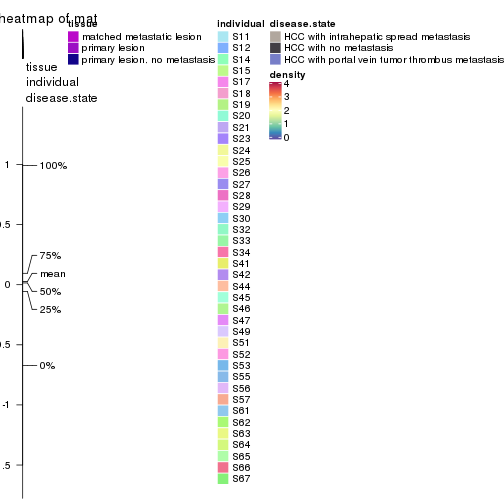
Folowing table shows the best k (number of partitions) for each combination
of top-value methods and partition methods. Clicking on the method name in
the table goes to the section for a single combination of methods.
The cola vignette explains the definition of the metrics used for determining the best number of partitions.
suggest_best_k(res_list)
| The best k | 1-PAC | Mean silhouette | Concordance | Optional k | ||
|---|---|---|---|---|---|---|
| MAD:hclust | 2 | 1.000 | 0.980 | 0.986 | ** | |
| ATC:pam | 2 | 1.000 | 0.985 | 0.995 | ** | |
| ATC:NMF | 3 | 0.955 | 0.944 | 0.974 | ** | 2 |
| ATC:skmeans | 2 | 0.929 | 0.940 | 0.977 | * | |
| SD:skmeans | 4 | 0.920 | 0.899 | 0.937 | * | 2 |
| MAD:skmeans | 4 | 0.918 | 0.897 | 0.941 | * | 2 |
| SD:pam | 3 | 0.883 | 0.865 | 0.943 | ||
| ATC:mclust | 2 | 0.839 | 0.894 | 0.956 | ||
| ATC:hclust | 2 | 0.759 | 0.889 | 0.949 | ||
| CV:NMF | 3 | 0.709 | 0.846 | 0.924 | ||
| MAD:pam | 3 | 0.700 | 0.833 | 0.919 | ||
| MAD:NMF | 3 | 0.638 | 0.807 | 0.883 | ||
| CV:pam | 3 | 0.608 | 0.773 | 0.881 | ||
| SD:NMF | 3 | 0.599 | 0.798 | 0.878 | ||
| ATC:kmeans | 3 | 0.548 | 0.692 | 0.863 | ||
| CV:skmeans | 3 | 0.524 | 0.720 | 0.850 | ||
| SD:mclust | 5 | 0.490 | 0.371 | 0.695 | ||
| MAD:mclust | 5 | 0.472 | 0.587 | 0.709 | ||
| SD:hclust | 3 | 0.467 | 0.715 | 0.832 | ||
| CV:hclust | 4 | 0.359 | 0.627 | 0.790 | ||
| CV:kmeans | 3 | 0.334 | 0.726 | 0.815 | ||
| CV:mclust | 2 | 0.259 | 0.728 | 0.848 | ||
| MAD:kmeans | 2 | 0.252 | 0.698 | 0.807 | ||
| SD:kmeans | 2 | 0.233 | 0.687 | 0.826 |
**: 1-PAC > 0.95, *: 1-PAC > 0.9
Cumulative distribution function curves of consensus matrix for all methods.
collect_plots(res_list, fun = plot_ecdf)
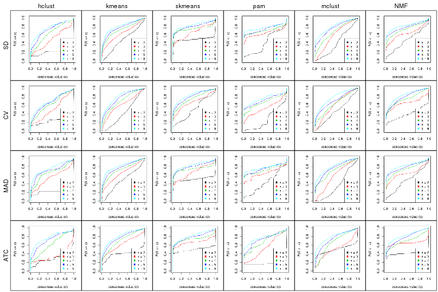
Consensus heatmaps for all methods. (What is a consensus heatmap?)
collect_plots(res_list, k = 2, fun = consensus_heatmap, mc.cores = 4)
collect_plots(res_list, k = 3, fun = consensus_heatmap, mc.cores = 4)

collect_plots(res_list, k = 4, fun = consensus_heatmap, mc.cores = 4)
collect_plots(res_list, k = 5, fun = consensus_heatmap, mc.cores = 4)
collect_plots(res_list, k = 6, fun = consensus_heatmap, mc.cores = 4)

Membership heatmaps for all methods. (What is a membership heatmap?)
collect_plots(res_list, k = 2, fun = membership_heatmap, mc.cores = 4)
collect_plots(res_list, k = 3, fun = membership_heatmap, mc.cores = 4)
collect_plots(res_list, k = 4, fun = membership_heatmap, mc.cores = 4)
collect_plots(res_list, k = 5, fun = membership_heatmap, mc.cores = 4)
collect_plots(res_list, k = 6, fun = membership_heatmap, mc.cores = 4)
Signature heatmaps for all methods. (What is a signature heatmap?)
Note in following heatmaps, rows are scaled.
collect_plots(res_list, k = 2, fun = get_signatures, mc.cores = 4)
collect_plots(res_list, k = 3, fun = get_signatures, mc.cores = 4)
collect_plots(res_list, k = 4, fun = get_signatures, mc.cores = 4)
collect_plots(res_list, k = 5, fun = get_signatures, mc.cores = 4)
collect_plots(res_list, k = 6, fun = get_signatures, mc.cores = 4)
The statistics used for measuring the stability of consensus partitioning. (How are they defined?)
get_stats(res_list, k = 2)
#> k 1-PAC mean_silhouette concordance area_increased Rand Jaccard
#> SD:NMF 2 0.403 0.724 0.851 0.481 0.495 0.495
#> CV:NMF 2 0.662 0.849 0.934 0.389 0.630 0.630
#> MAD:NMF 2 0.378 0.709 0.840 0.474 0.495 0.495
#> ATC:NMF 2 1.000 0.967 0.986 0.405 0.596 0.596
#> SD:skmeans 2 1.000 0.954 0.977 0.503 0.500 0.500
#> CV:skmeans 2 0.376 0.602 0.791 0.503 0.497 0.497
#> MAD:skmeans 2 1.000 0.949 0.977 0.503 0.500 0.500
#> ATC:skmeans 2 0.929 0.940 0.977 0.497 0.502 0.502
#> SD:mclust 2 0.202 0.413 0.766 0.418 0.586 0.586
#> CV:mclust 2 0.259 0.728 0.848 0.459 0.496 0.496
#> MAD:mclust 2 0.163 0.467 0.738 0.370 0.596 0.596
#> ATC:mclust 2 0.839 0.894 0.956 0.497 0.500 0.500
#> SD:kmeans 2 0.233 0.687 0.826 0.480 0.495 0.495
#> CV:kmeans 2 0.135 0.596 0.786 0.418 0.630 0.630
#> MAD:kmeans 2 0.252 0.698 0.807 0.476 0.494 0.494
#> ATC:kmeans 2 0.755 0.936 0.962 0.395 0.596 0.596
#> SD:pam 2 0.366 0.415 0.748 0.432 0.495 0.495
#> CV:pam 2 0.413 0.638 0.816 0.277 0.850 0.850
#> MAD:pam 2 0.356 0.722 0.828 0.429 0.596 0.596
#> ATC:pam 2 1.000 0.985 0.995 0.161 0.831 0.831
#> SD:hclust 2 0.844 0.951 0.974 0.213 0.777 0.777
#> CV:hclust 2 0.862 0.939 0.969 0.234 0.743 0.743
#> MAD:hclust 2 1.000 0.980 0.986 0.217 0.777 0.777
#> ATC:hclust 2 0.759 0.889 0.949 0.286 0.743 0.743
get_stats(res_list, k = 3)
#> k 1-PAC mean_silhouette concordance area_increased Rand Jaccard
#> SD:NMF 3 0.599 0.798 0.878 0.3255 0.786 0.604
#> CV:NMF 3 0.709 0.846 0.924 0.6766 0.669 0.492
#> MAD:NMF 3 0.638 0.807 0.883 0.3503 0.752 0.555
#> ATC:NMF 3 0.955 0.944 0.974 0.5926 0.677 0.492
#> SD:skmeans 3 0.630 0.703 0.852 0.3264 0.720 0.494
#> CV:skmeans 3 0.524 0.720 0.850 0.3253 0.691 0.458
#> MAD:skmeans 3 0.619 0.668 0.848 0.3239 0.720 0.494
#> ATC:skmeans 3 0.812 0.901 0.954 0.3463 0.716 0.491
#> SD:mclust 3 0.190 0.438 0.689 0.4271 0.678 0.493
#> CV:mclust 3 0.149 0.421 0.669 0.3023 0.851 0.729
#> MAD:mclust 3 0.211 0.522 0.721 0.5628 0.557 0.362
#> ATC:mclust 3 0.428 0.747 0.870 0.0293 0.727 0.573
#> SD:kmeans 3 0.422 0.666 0.775 0.3271 0.873 0.749
#> CV:kmeans 3 0.334 0.726 0.815 0.4563 0.643 0.470
#> MAD:kmeans 3 0.411 0.515 0.712 0.3470 0.760 0.556
#> ATC:kmeans 3 0.548 0.692 0.863 0.5786 0.648 0.462
#> SD:pam 3 0.883 0.865 0.943 0.4941 0.642 0.405
#> CV:pam 3 0.608 0.773 0.881 0.9236 0.608 0.548
#> MAD:pam 3 0.700 0.833 0.919 0.4989 0.719 0.549
#> ATC:pam 3 0.338 0.494 0.707 2.3481 0.656 0.586
#> SD:hclust 3 0.467 0.715 0.832 1.3719 0.646 0.545
#> CV:hclust 3 0.307 0.611 0.808 1.1570 0.721 0.624
#> MAD:hclust 3 0.487 0.802 0.865 1.5089 0.621 0.512
#> ATC:hclust 3 0.565 0.806 0.903 0.2329 0.906 0.875
get_stats(res_list, k = 4)
#> k 1-PAC mean_silhouette concordance area_increased Rand Jaccard
#> SD:NMF 4 0.662 0.683 0.843 0.1560 0.820 0.559
#> CV:NMF 4 0.569 0.679 0.811 0.1308 0.862 0.626
#> MAD:NMF 4 0.616 0.698 0.831 0.1506 0.834 0.585
#> ATC:NMF 4 0.655 0.691 0.846 0.0917 0.885 0.706
#> SD:skmeans 4 0.920 0.899 0.937 0.1199 0.897 0.699
#> CV:skmeans 4 0.537 0.536 0.756 0.1194 0.815 0.516
#> MAD:skmeans 4 0.918 0.897 0.941 0.1209 0.845 0.578
#> ATC:skmeans 4 0.868 0.879 0.931 0.1115 0.867 0.628
#> SD:mclust 4 0.368 0.351 0.612 0.1355 0.636 0.319
#> CV:mclust 4 0.374 0.642 0.796 0.0524 0.850 0.693
#> MAD:mclust 4 0.468 0.434 0.693 0.2219 0.771 0.469
#> ATC:mclust 4 0.255 0.612 0.721 0.2934 0.630 0.359
#> SD:kmeans 4 0.497 0.693 0.766 0.1370 0.823 0.571
#> CV:kmeans 4 0.415 0.522 0.728 0.1427 0.895 0.730
#> MAD:kmeans 4 0.486 0.664 0.767 0.1350 0.798 0.497
#> ATC:kmeans 4 0.461 0.570 0.724 0.1418 0.773 0.472
#> SD:pam 4 0.850 0.833 0.929 0.0941 0.933 0.814
#> CV:pam 4 0.658 0.769 0.895 0.2476 0.798 0.607
#> MAD:pam 4 0.825 0.780 0.905 0.1100 0.910 0.765
#> ATC:pam 4 0.519 0.559 0.766 0.2758 0.688 0.426
#> SD:hclust 4 0.403 0.515 0.748 0.2799 0.836 0.649
#> CV:hclust 4 0.359 0.627 0.790 0.2460 0.856 0.707
#> MAD:hclust 4 0.456 0.661 0.796 0.2081 0.888 0.725
#> ATC:hclust 4 0.305 0.624 0.714 0.7449 0.694 0.540
get_stats(res_list, k = 5)
#> k 1-PAC mean_silhouette concordance area_increased Rand Jaccard
#> SD:NMF 5 0.734 0.688 0.860 0.0606 0.863 0.558
#> CV:NMF 5 0.537 0.416 0.657 0.0658 0.919 0.710
#> MAD:NMF 5 0.740 0.661 0.855 0.0646 0.862 0.551
#> ATC:NMF 5 0.587 0.609 0.769 0.1036 0.812 0.490
#> SD:skmeans 5 0.759 0.753 0.855 0.0728 0.914 0.680
#> CV:skmeans 5 0.623 0.474 0.717 0.0704 0.840 0.467
#> MAD:skmeans 5 0.784 0.724 0.839 0.0736 0.922 0.710
#> ATC:skmeans 5 0.715 0.685 0.822 0.0606 0.961 0.846
#> SD:mclust 5 0.490 0.371 0.695 0.1239 0.809 0.501
#> CV:mclust 5 0.503 0.659 0.774 0.1141 0.927 0.813
#> MAD:mclust 5 0.472 0.587 0.709 0.0759 0.897 0.659
#> ATC:mclust 5 0.478 0.494 0.702 0.1261 0.906 0.691
#> SD:kmeans 5 0.568 0.570 0.709 0.0687 0.918 0.709
#> CV:kmeans 5 0.485 0.406 0.630 0.0884 0.837 0.549
#> MAD:kmeans 5 0.583 0.589 0.734 0.0661 0.942 0.786
#> ATC:kmeans 5 0.534 0.549 0.710 0.0810 0.912 0.701
#> SD:pam 5 0.789 0.708 0.880 0.0470 0.936 0.795
#> CV:pam 5 0.736 0.720 0.882 0.0728 0.957 0.875
#> MAD:pam 5 0.784 0.697 0.862 0.0460 0.923 0.755
#> ATC:pam 5 0.555 0.693 0.826 0.0727 0.787 0.426
#> SD:hclust 5 0.430 0.521 0.721 0.1276 0.864 0.629
#> CV:hclust 5 0.442 0.622 0.754 0.0684 0.956 0.885
#> MAD:hclust 5 0.569 0.648 0.791 0.0840 0.983 0.944
#> ATC:hclust 5 0.513 0.625 0.793 0.1801 0.833 0.562
get_stats(res_list, k = 6)
#> k 1-PAC mean_silhouette concordance area_increased Rand Jaccard
#> SD:NMF 6 0.759 0.712 0.836 0.0488 0.933 0.715
#> CV:NMF 6 0.612 0.412 0.675 0.0498 0.831 0.398
#> MAD:NMF 6 0.747 0.676 0.818 0.0457 0.935 0.718
#> ATC:NMF 6 0.690 0.637 0.806 0.0555 0.873 0.532
#> SD:skmeans 6 0.822 0.684 0.796 0.0396 0.969 0.847
#> CV:skmeans 6 0.671 0.533 0.666 0.0409 0.936 0.693
#> MAD:skmeans 6 0.805 0.696 0.804 0.0388 0.958 0.799
#> ATC:skmeans 6 0.729 0.608 0.749 0.0413 0.959 0.821
#> SD:mclust 6 0.603 0.524 0.674 0.0559 0.783 0.336
#> CV:mclust 6 0.482 0.366 0.652 0.1020 0.849 0.582
#> MAD:mclust 6 0.578 0.540 0.694 0.0544 0.925 0.692
#> ATC:mclust 6 0.661 0.582 0.765 0.0640 0.918 0.698
#> SD:kmeans 6 0.647 0.618 0.712 0.0437 0.941 0.740
#> CV:kmeans 6 0.531 0.302 0.550 0.0539 0.844 0.471
#> MAD:kmeans 6 0.674 0.609 0.726 0.0504 0.928 0.698
#> ATC:kmeans 6 0.605 0.354 0.571 0.0483 0.877 0.569
#> SD:pam 6 0.884 0.823 0.930 0.0478 0.959 0.844
#> CV:pam 6 0.746 0.692 0.874 0.0562 0.952 0.842
#> MAD:pam 6 0.873 0.808 0.918 0.0362 0.978 0.913
#> ATC:pam 6 0.707 0.728 0.859 0.0460 0.964 0.850
#> SD:hclust 6 0.578 0.507 0.707 0.0538 0.962 0.860
#> CV:hclust 6 0.505 0.628 0.764 0.0387 0.994 0.983
#> MAD:hclust 6 0.652 0.533 0.727 0.0702 0.902 0.679
#> ATC:hclust 6 0.692 0.598 0.771 0.0712 0.951 0.809
Following heatmap plots the partition for each combination of methods and the lightness correspond to the silhouette scores for samples in each method. On top the consensus subgroup is inferred from all methods by taking the mean silhouette scores as weight.
collect_stats(res_list, k = 2)
collect_stats(res_list, k = 3)
collect_stats(res_list, k = 4)
collect_stats(res_list, k = 5)
collect_stats(res_list, k = 6)
Collect partitions from all methods:
collect_classes(res_list, k = 2)
collect_classes(res_list, k = 3)
collect_classes(res_list, k = 4)
collect_classes(res_list, k = 5)
collect_classes(res_list, k = 6)
Overlap of top rows from different top-row methods:
top_rows_overlap(res_list, top_n = 840, method = "euler")
top_rows_overlap(res_list, top_n = 1680, method = "euler")
top_rows_overlap(res_list, top_n = 2519, method = "euler")
top_rows_overlap(res_list, top_n = 3358, method = "euler")
top_rows_overlap(res_list, top_n = 4198, method = "euler")
Also visualize the correspondance of rankings between different top-row methods:
top_rows_overlap(res_list, top_n = 840, method = "correspondance")
top_rows_overlap(res_list, top_n = 1680, method = "correspondance")
top_rows_overlap(res_list, top_n = 2519, method = "correspondance")
top_rows_overlap(res_list, top_n = 3358, method = "correspondance")
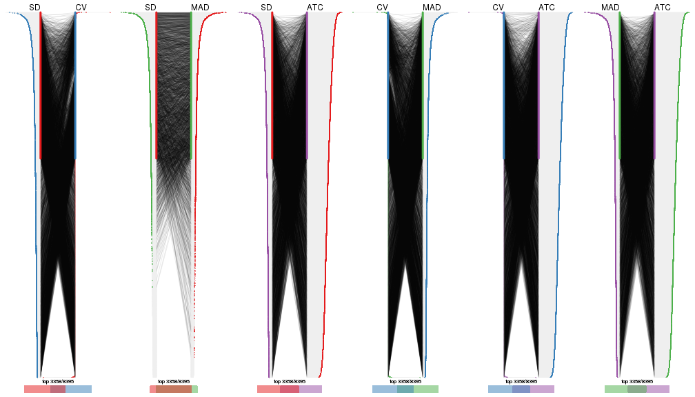
top_rows_overlap(res_list, top_n = 4198, method = "correspondance")
Heatmaps of the top rows:
top_rows_heatmap(res_list, top_n = 840)
top_rows_heatmap(res_list, top_n = 1680)
top_rows_heatmap(res_list, top_n = 2519)
top_rows_heatmap(res_list, top_n = 3358)
top_rows_heatmap(res_list, top_n = 4198)
Test correlation between subgroups and known annotations. If the known annotation is numeric, one-way ANOVA test is applied, and if the known annotation is discrete, chi-squared contingency table test is applied.
test_to_known_factors(res_list, k = 2)
#> n tissue(p) individual(p) disease.state(p) k
#> SD:NMF 78 7.10e-01 4.98e-04 2.51e-02 2
#> CV:NMF 81 1.47e-02 1.16e-04 1.87e-03 2
#> MAD:NMF 80 6.59e-01 4.21e-04 3.60e-02 2
#> ATC:NMF 86 6.09e-03 1.57e-03 3.29e-03 2
#> SD:skmeans 85 2.19e-01 2.21e-05 1.14e-01 2
#> CV:skmeans 82 3.83e-01 1.11e-03 7.78e-02 2
#> MAD:skmeans 85 2.19e-01 2.21e-05 1.14e-01 2
#> ATC:skmeans 84 4.97e-01 1.81e-03 6.58e-01 2
#> SD:mclust 46 3.63e-01 2.99e-03 1.50e-01 2
#> CV:mclust 74 8.58e-01 4.21e-04 3.26e-02 2
#> MAD:mclust 64 5.28e-01 1.23e-04 8.57e-02 2
#> ATC:mclust 82 8.62e-02 6.83e-05 4.07e-02 2
#> SD:kmeans 76 5.47e-01 1.92e-05 1.84e-01 2
#> CV:kmeans 60 1.22e-02 2.77e-03 8.91e-03 2
#> MAD:kmeans 78 9.28e-02 2.61e-05 3.30e-02 2
#> ATC:kmeans 86 6.09e-03 1.57e-03 3.29e-03 2
#> SD:pam 44 3.84e-02 3.55e-03 2.43e-04 2
#> CV:pam 84 6.18e-05 2.53e-05 6.18e-05 2
#> MAD:pam 82 1.03e-01 3.51e-04 2.33e-03 2
#> ATC:pam 86 3.94e-04 2.16e-05 3.87e-04 2
#> SD:hclust 87 5.54e-07 1.61e-05 5.47e-07 2
#> CV:hclust 87 2.01e-05 1.61e-05 1.94e-05 2
#> MAD:hclust 87 5.54e-07 1.61e-05 5.47e-07 2
#> ATC:hclust 83 4.18e-05 3.39e-05 3.89e-05 2
test_to_known_factors(res_list, k = 3)
#> n tissue(p) individual(p) disease.state(p) k
#> SD:NMF 85 4.31e-04 1.37e-07 1.25e-05 3
#> CV:NMF 83 1.02e-02 1.97e-07 8.24e-04 3
#> MAD:NMF 84 9.47e-04 2.21e-07 2.57e-05 3
#> ATC:NMF 87 1.19e-02 2.30e-07 1.07e-04 3
#> SD:skmeans 68 6.58e-01 1.84e-07 1.09e-01 3
#> CV:skmeans 76 8.76e-02 1.09e-05 2.30e-02 3
#> MAD:skmeans 62 7.91e-01 4.69e-07 1.85e-01 3
#> ATC:skmeans 85 5.12e-02 8.17e-05 1.17e-02 3
#> SD:mclust 40 3.06e-01 1.76e-04 4.11e-02 3
#> CV:mclust 55 8.65e-03 2.22e-05 9.20e-04 3
#> MAD:mclust 57 8.23e-03 7.66e-06 8.52e-04 3
#> ATC:mclust 78 1.46e-05 4.47e-06 5.42e-06 3
#> SD:kmeans 70 1.79e-03 1.34e-07 4.14e-05 3
#> CV:kmeans 79 2.03e-02 9.55e-08 5.64e-04 3
#> MAD:kmeans 52 2.53e-03 5.19e-06 7.58e-04 3
#> ATC:kmeans 71 2.05e-04 3.12e-05 5.02e-06 3
#> SD:pam 80 5.37e-01 3.19e-07 1.12e-02 3
#> CV:pam 76 2.88e-04 2.47e-07 1.62e-05 3
#> MAD:pam 80 5.09e-01 6.67e-07 1.05e-02 3
#> ATC:pam 59 1.44e-03 5.55e-06 3.34e-06 3
#> SD:hclust 74 6.38e-06 1.33e-08 2.12e-07 3
#> CV:hclust 60 2.39e-04 4.27e-08 2.41e-04 3
#> MAD:hclust 84 1.36e-05 2.88e-09 1.20e-06 3
#> ATC:hclust 73 4.60e-05 1.15e-04 4.60e-05 3
test_to_known_factors(res_list, k = 4)
#> n tissue(p) individual(p) disease.state(p) k
#> SD:NMF 73 3.47e-03 4.94e-10 9.86e-06 4
#> CV:NMF 76 1.07e-03 4.12e-09 3.28e-06 4
#> MAD:NMF 75 1.91e-02 4.98e-09 2.07e-04 4
#> ATC:NMF 76 1.34e-03 4.32e-10 1.27e-05 4
#> SD:skmeans 82 2.35e-03 9.30e-12 6.62e-06 4
#> CV:skmeans 52 7.20e-02 7.90e-07 8.30e-03 4
#> MAD:skmeans 83 2.33e-03 4.00e-12 5.57e-06 4
#> ATC:skmeans 86 4.92e-02 1.68e-09 7.86e-04 4
#> SD:mclust 26 NA NA NA 4
#> CV:mclust 69 1.81e-02 1.16e-08 2.47e-05 4
#> MAD:mclust 47 2.13e-03 1.73e-05 1.02e-03 4
#> ATC:mclust 71 1.08e-04 6.65e-09 1.04e-06 4
#> SD:kmeans 76 6.81e-06 1.25e-11 5.19e-08 4
#> CV:kmeans 54 4.02e-03 2.41e-08 4.44e-06 4
#> MAD:kmeans 78 4.79e-06 7.92e-12 2.91e-08 4
#> ATC:kmeans 56 4.37e-04 7.77e-06 2.81e-05 4
#> SD:pam 81 3.83e-04 3.04e-11 5.57e-06 4
#> CV:pam 75 9.64e-04 3.11e-10 1.75e-04 4
#> MAD:pam 73 5.81e-03 3.63e-10 1.39e-04 4
#> ATC:pam 58 1.27e-03 7.03e-07 2.92e-04 4
#> SD:hclust 63 6.44e-08 8.26e-12 1.29e-09 4
#> CV:hclust 73 9.88e-05 3.62e-12 9.54e-05 4
#> MAD:hclust 63 7.03e-06 4.42e-08 9.28e-07 4
#> ATC:hclust 55 2.81e-04 4.51e-05 4.62e-04 4
test_to_known_factors(res_list, k = 5)
#> n tissue(p) individual(p) disease.state(p) k
#> SD:NMF 70 1.66e-04 1.47e-09 5.73e-07 5
#> CV:NMF 38 2.56e-04 9.84e-07 5.57e-04 5
#> MAD:NMF 66 5.18e-04 3.21e-10 4.85e-06 5
#> ATC:NMF 70 4.02e-03 2.09e-09 4.52e-05 5
#> SD:skmeans 81 2.29e-05 3.51e-15 1.49e-07 5
#> CV:skmeans 53 1.59e-02 2.20e-09 7.54e-05 5
#> MAD:skmeans 74 1.10e-04 3.22e-13 3.76e-06 5
#> ATC:skmeans 71 3.71e-03 5.54e-08 6.18e-04 5
#> SD:mclust 33 1.87e-03 1.68e-06 6.32e-04 5
#> CV:mclust 73 1.92e-02 1.72e-11 2.26e-05 5
#> MAD:mclust 62 6.92e-04 5.08e-13 2.60e-05 5
#> ATC:mclust 44 1.17e-03 7.65e-06 6.76e-06 5
#> SD:kmeans 54 6.71e-05 2.41e-08 1.11e-06 5
#> CV:kmeans 29 1.52e-03 3.10e-04 1.06e-03 5
#> MAD:kmeans 60 9.31e-06 4.88e-10 4.26e-07 5
#> ATC:kmeans 57 1.36e-02 1.38e-10 1.07e-02 5
#> SD:pam 68 1.21e-03 6.31e-09 6.68e-07 5
#> CV:pam 74 1.18e-03 1.45e-12 5.60e-06 5
#> MAD:pam 66 1.71e-01 9.90e-09 1.27e-03 5
#> ATC:pam 78 1.24e-03 9.82e-10 1.02e-04 5
#> SD:hclust 51 4.37e-06 7.28e-09 5.65e-07 5
#> CV:hclust 67 1.99e-07 1.29e-12 2.20e-07 5
#> MAD:hclust 67 1.54e-05 1.86e-10 6.45e-06 5
#> ATC:hclust 55 4.68e-03 3.24e-07 9.10e-03 5
test_to_known_factors(res_list, k = 6)
#> n tissue(p) individual(p) disease.state(p) k
#> SD:NMF 76 9.09e-06 6.08e-12 1.16e-07 6
#> CV:NMF 46 1.10e-04 3.61e-10 1.12e-07 6
#> MAD:NMF 71 2.28e-05 1.85e-12 3.18e-07 6
#> ATC:NMF 67 8.47e-04 6.47e-08 6.23e-06 6
#> SD:skmeans 70 1.93e-05 2.26e-15 1.49e-07 6
#> CV:skmeans 57 6.37e-04 3.55e-11 1.52e-06 6
#> MAD:skmeans 72 9.67e-06 1.04e-15 1.71e-07 6
#> ATC:skmeans 61 7.15e-03 9.25e-11 1.83e-03 6
#> SD:mclust 50 3.76e-04 5.58e-10 3.08e-05 6
#> CV:mclust 42 1.59e-02 4.36e-07 1.75e-03 6
#> MAD:mclust 61 4.52e-04 1.93e-13 9.07e-06 6
#> ATC:mclust 62 4.96e-03 2.09e-09 8.10e-08 6
#> SD:kmeans 68 5.71e-05 6.88e-16 5.61e-06 6
#> CV:kmeans 13 7.19e-03 2.34e-02 1.50e-03 6
#> MAD:kmeans 67 5.81e-05 3.66e-16 1.98e-06 6
#> ATC:kmeans 34 2.67e-02 2.34e-04 6.10e-02 6
#> SD:pam 78 8.80e-04 1.01e-15 5.34e-08 6
#> CV:pam 71 2.75e-03 3.80e-14 4.99e-07 6
#> MAD:pam 79 9.33e-04 6.74e-17 2.42e-08 6
#> ATC:pam 75 7.71e-03 1.05e-10 6.53e-06 6
#> SD:hclust 45 1.70e-05 3.21e-11 6.88e-06 6
#> CV:hclust 65 8.89e-06 7.83e-16 2.20e-06 6
#> MAD:hclust 51 6.62e-05 5.61e-12 1.09e-06 6
#> ATC:hclust 54 6.55e-03 2.40e-07 1.05e-02 6
The object with results only for a single top-value method and a single partition method can be extracted as:
res = res_list["SD", "hclust"]
# you can also extract it by
# res = res_list["SD:hclust"]
A summary of res and all the functions that can be applied to it:
res
#> A 'ConsensusPartition' object with k = 2, 3, 4, 5, 6.
#> On a matrix with 8395 rows and 87 columns.
#> Top rows (840, 1680, 2519, 3358, 4198) are extracted by 'SD' method.
#> Subgroups are detected by 'hclust' method.
#> Performed in total 1250 partitions by row resampling.
#> Best k for subgroups seems to be 3.
#>
#> Following methods can be applied to this 'ConsensusPartition' object:
#> [1] "cola_report" "collect_classes" "collect_plots"
#> [4] "collect_stats" "colnames" "compare_signatures"
#> [7] "consensus_heatmap" "dimension_reduction" "functional_enrichment"
#> [10] "get_anno_col" "get_anno" "get_classes"
#> [13] "get_consensus" "get_matrix" "get_membership"
#> [16] "get_param" "get_signatures" "get_stats"
#> [19] "is_best_k" "is_stable_k" "membership_heatmap"
#> [22] "ncol" "nrow" "plot_ecdf"
#> [25] "rownames" "select_partition_number" "show"
#> [28] "suggest_best_k" "test_to_known_factors"
collect_plots() function collects all the plots made from res for all k (number of partitions)
into one single page to provide an easy and fast comparison between different k.
collect_plots(res)
The plots are:
k and the heatmap of
predicted classes for each k.k.k.k.All the plots in panels can be made by individual functions and they are plotted later in this section.
select_partition_number() produces several plots showing different
statistics for choosing “optimized” k. There are following statistics:
k;k, the area increased is defined as \(A_k - A_{k-1}\).The detailed explanations of these statistics can be found in the cola vignette.
Generally speaking, lower PAC score, higher mean silhouette score or higher
concordance corresponds to better partition. Rand index and Jaccard index
measure how similar the current partition is compared to partition with k-1.
If they are too similar, we won't accept k is better than k-1.
select_partition_number(res)
The numeric values for all these statistics can be obtained by get_stats().
get_stats(res)
#> k 1-PAC mean_silhouette concordance area_increased Rand Jaccard
#> 2 2 0.844 0.951 0.974 0.2131 0.777 0.777
#> 3 3 0.467 0.715 0.832 1.3719 0.646 0.545
#> 4 4 0.403 0.515 0.748 0.2799 0.836 0.649
#> 5 5 0.430 0.521 0.721 0.1276 0.864 0.629
#> 6 6 0.578 0.507 0.707 0.0538 0.962 0.860
suggest_best_k() suggests the best \(k\) based on these statistics. The rules are as follows:
NA.suggest_best_k(res)
#> [1] 3
Following shows the table of the partitions (You need to click the show/hide
code output link to see it). The membership matrix (columns with name p*)
is inferred by
clue::cl_consensus()
function with the SE method. Basically the value in the membership matrix
represents the probability to belong to a certain group. The finall class
label for an item is determined with the group with highest probability it
belongs to.
In get_classes() function, the entropy is calculated from the membership
matrix and the silhouette score is calculated from the consensus matrix.
cbind(get_classes(res, k = 2), get_membership(res, k = 2))
#> class entropy silhouette p1 p2
#> GSM5316 1 0.0000 0.986 1.000 0.000
#> GSM5319 1 0.0376 0.985 0.996 0.004
#> GSM5321 1 0.0000 0.986 1.000 0.000
#> GSM5323 1 0.0000 0.986 1.000 0.000
#> GSM5325 1 0.0000 0.986 1.000 0.000
#> GSM5327 1 0.0000 0.986 1.000 0.000
#> GSM5329 1 0.0000 0.986 1.000 0.000
#> GSM5331 1 0.0376 0.985 0.996 0.004
#> GSM5333 1 0.0376 0.985 0.996 0.004
#> GSM5335 1 0.0000 0.986 1.000 0.000
#> GSM5337 1 0.0000 0.986 1.000 0.000
#> GSM5339 1 0.0000 0.986 1.000 0.000
#> GSM5341 1 0.0000 0.986 1.000 0.000
#> GSM5343 1 0.0000 0.986 1.000 0.000
#> GSM5345 1 0.0376 0.985 0.996 0.004
#> GSM5347 1 0.0376 0.985 0.996 0.004
#> GSM5349 1 0.6887 0.752 0.816 0.184
#> GSM5351 1 0.6887 0.752 0.816 0.184
#> GSM5353 1 0.0000 0.986 1.000 0.000
#> GSM5355 1 0.0000 0.986 1.000 0.000
#> GSM5357 1 0.0376 0.985 0.996 0.004
#> GSM5359 1 0.0376 0.985 0.996 0.004
#> GSM5361 1 0.0000 0.986 1.000 0.000
#> GSM5363 1 0.0000 0.986 1.000 0.000
#> GSM5365 1 0.1184 0.975 0.984 0.016
#> GSM5367 1 0.1184 0.975 0.984 0.016
#> GSM5369 1 0.0000 0.986 1.000 0.000
#> GSM5371 1 0.0000 0.986 1.000 0.000
#> GSM5373 1 0.0938 0.979 0.988 0.012
#> GSM5396 1 0.0000 0.986 1.000 0.000
#> GSM5397 1 0.0376 0.985 0.996 0.004
#> GSM5398 1 0.0376 0.985 0.996 0.004
#> GSM5400 1 0.0000 0.986 1.000 0.000
#> GSM5399 1 0.0376 0.985 0.996 0.004
#> GSM5401 2 0.7139 0.801 0.196 0.804
#> GSM5402 1 0.0376 0.985 0.996 0.004
#> GSM5317 1 0.0000 0.986 1.000 0.000
#> GSM5318 1 0.0376 0.985 0.996 0.004
#> GSM5320 1 0.0000 0.986 1.000 0.000
#> GSM5322 1 0.0000 0.986 1.000 0.000
#> GSM5324 1 0.0000 0.986 1.000 0.000
#> GSM5326 1 0.0000 0.986 1.000 0.000
#> GSM5328 1 0.0000 0.986 1.000 0.000
#> GSM5330 1 0.0376 0.985 0.996 0.004
#> GSM5332 1 0.0376 0.985 0.996 0.004
#> GSM5334 1 0.0000 0.986 1.000 0.000
#> GSM5336 1 0.0000 0.986 1.000 0.000
#> GSM5338 1 0.0000 0.986 1.000 0.000
#> GSM5340 1 0.0000 0.986 1.000 0.000
#> GSM5342 1 0.0000 0.986 1.000 0.000
#> GSM5344 1 0.0376 0.985 0.996 0.004
#> GSM5346 1 0.0376 0.985 0.996 0.004
#> GSM5348 1 0.6887 0.752 0.816 0.184
#> GSM5350 1 0.6887 0.752 0.816 0.184
#> GSM5352 1 0.0000 0.986 1.000 0.000
#> GSM5354 1 0.0000 0.986 1.000 0.000
#> GSM5356 1 0.0376 0.985 0.996 0.004
#> GSM5358 1 0.0376 0.985 0.996 0.004
#> GSM5360 1 0.0000 0.986 1.000 0.000
#> GSM5362 1 0.0000 0.986 1.000 0.000
#> GSM5364 1 0.1184 0.975 0.984 0.016
#> GSM5366 1 0.1184 0.975 0.984 0.016
#> GSM5368 1 0.0000 0.986 1.000 0.000
#> GSM5370 1 0.0000 0.986 1.000 0.000
#> GSM5372 1 0.0938 0.979 0.988 0.012
#> GSM5374 1 0.0376 0.985 0.996 0.004
#> GSM5375 1 0.0376 0.985 0.996 0.004
#> GSM5376 2 0.9129 0.662 0.328 0.672
#> GSM5377 2 0.9129 0.662 0.328 0.672
#> GSM5378 2 0.0000 0.861 0.000 1.000
#> GSM5379 2 0.0000 0.861 0.000 1.000
#> GSM5380 1 0.0000 0.986 1.000 0.000
#> GSM5381 1 0.0000 0.986 1.000 0.000
#> GSM5382 1 0.0000 0.986 1.000 0.000
#> GSM5383 1 0.0000 0.986 1.000 0.000
#> GSM5384 1 0.0000 0.986 1.000 0.000
#> GSM5385 1 0.0000 0.986 1.000 0.000
#> GSM5386 2 0.0000 0.861 0.000 1.000
#> GSM5387 2 0.0000 0.861 0.000 1.000
#> GSM5392 1 0.0000 0.986 1.000 0.000
#> GSM5388 2 0.8081 0.766 0.248 0.752
#> GSM5389 2 0.8081 0.766 0.248 0.752
#> GSM5390 2 0.0000 0.861 0.000 1.000
#> GSM5391 2 0.0000 0.861 0.000 1.000
#> GSM5393 1 0.0000 0.986 1.000 0.000
#> GSM5394 1 0.0000 0.986 1.000 0.000
#> GSM5395 1 0.0000 0.986 1.000 0.000
cbind(get_classes(res, k = 3), get_membership(res, k = 3))
#> class entropy silhouette p1 p2 p3
#> GSM5316 1 0.0000 0.875 1.000 0.000 0.000
#> GSM5319 3 0.5733 0.670 0.324 0.000 0.676
#> GSM5321 1 0.2537 0.826 0.920 0.000 0.080
#> GSM5323 1 0.0237 0.876 0.996 0.000 0.004
#> GSM5325 1 0.1753 0.855 0.952 0.000 0.048
#> GSM5327 1 0.1529 0.858 0.960 0.000 0.040
#> GSM5329 1 0.5760 0.370 0.672 0.000 0.328
#> GSM5331 3 0.1860 0.497 0.052 0.000 0.948
#> GSM5333 3 0.1860 0.497 0.052 0.000 0.948
#> GSM5335 1 0.1643 0.857 0.956 0.000 0.044
#> GSM5337 1 0.1643 0.857 0.956 0.000 0.044
#> GSM5339 1 0.0237 0.876 0.996 0.000 0.004
#> GSM5341 1 0.0237 0.876 0.996 0.000 0.004
#> GSM5343 1 0.1753 0.855 0.952 0.000 0.048
#> GSM5345 3 0.5529 0.722 0.296 0.000 0.704
#> GSM5347 3 0.5529 0.722 0.296 0.000 0.704
#> GSM5349 3 0.9451 0.613 0.364 0.184 0.452
#> GSM5351 3 0.9451 0.613 0.364 0.184 0.452
#> GSM5353 1 0.0237 0.876 0.996 0.000 0.004
#> GSM5355 1 0.0237 0.876 0.996 0.000 0.004
#> GSM5357 3 0.6225 0.637 0.432 0.000 0.568
#> GSM5359 3 0.6225 0.637 0.432 0.000 0.568
#> GSM5361 1 0.0237 0.876 0.996 0.000 0.004
#> GSM5363 1 0.0237 0.876 0.996 0.000 0.004
#> GSM5365 3 0.6825 0.525 0.492 0.012 0.496
#> GSM5367 3 0.6825 0.525 0.492 0.012 0.496
#> GSM5369 1 0.1643 0.858 0.956 0.000 0.044
#> GSM5371 1 0.1964 0.854 0.944 0.000 0.056
#> GSM5373 1 0.6102 0.195 0.672 0.008 0.320
#> GSM5396 1 0.1643 0.859 0.956 0.000 0.044
#> GSM5397 3 0.5098 0.665 0.248 0.000 0.752
#> GSM5398 3 0.0592 0.412 0.012 0.000 0.988
#> GSM5400 1 0.4452 0.690 0.808 0.000 0.192
#> GSM5399 1 0.5678 0.342 0.684 0.000 0.316
#> GSM5401 2 0.5603 0.799 0.060 0.804 0.136
#> GSM5402 3 0.4504 0.629 0.196 0.000 0.804
#> GSM5317 1 0.0000 0.875 1.000 0.000 0.000
#> GSM5318 3 0.5733 0.670 0.324 0.000 0.676
#> GSM5320 1 0.2537 0.826 0.920 0.000 0.080
#> GSM5322 1 0.0237 0.876 0.996 0.000 0.004
#> GSM5324 1 0.1753 0.855 0.952 0.000 0.048
#> GSM5326 1 0.0424 0.872 0.992 0.000 0.008
#> GSM5328 1 0.5760 0.370 0.672 0.000 0.328
#> GSM5330 3 0.1860 0.497 0.052 0.000 0.948
#> GSM5332 3 0.1860 0.497 0.052 0.000 0.948
#> GSM5334 1 0.2537 0.826 0.920 0.000 0.080
#> GSM5336 1 0.2537 0.826 0.920 0.000 0.080
#> GSM5338 1 0.0237 0.876 0.996 0.000 0.004
#> GSM5340 1 0.0237 0.876 0.996 0.000 0.004
#> GSM5342 1 0.1753 0.855 0.952 0.000 0.048
#> GSM5344 3 0.5529 0.722 0.296 0.000 0.704
#> GSM5346 3 0.5529 0.722 0.296 0.000 0.704
#> GSM5348 3 0.9451 0.613 0.364 0.184 0.452
#> GSM5350 3 0.9451 0.613 0.364 0.184 0.452
#> GSM5352 1 0.0237 0.876 0.996 0.000 0.004
#> GSM5354 1 0.0237 0.876 0.996 0.000 0.004
#> GSM5356 3 0.6225 0.637 0.432 0.000 0.568
#> GSM5358 3 0.6225 0.637 0.432 0.000 0.568
#> GSM5360 1 0.0237 0.876 0.996 0.000 0.004
#> GSM5362 1 0.0237 0.876 0.996 0.000 0.004
#> GSM5364 3 0.6825 0.525 0.492 0.012 0.496
#> GSM5366 3 0.6825 0.525 0.492 0.012 0.496
#> GSM5368 1 0.1643 0.858 0.956 0.000 0.044
#> GSM5370 1 0.1964 0.854 0.944 0.000 0.056
#> GSM5372 1 0.6102 0.195 0.672 0.008 0.320
#> GSM5374 3 0.6062 0.631 0.384 0.000 0.616
#> GSM5375 3 0.6062 0.631 0.384 0.000 0.616
#> GSM5376 2 0.7318 0.671 0.068 0.668 0.264
#> GSM5377 2 0.7318 0.671 0.068 0.668 0.264
#> GSM5378 2 0.0000 0.857 0.000 1.000 0.000
#> GSM5379 2 0.0000 0.857 0.000 1.000 0.000
#> GSM5380 1 0.5810 0.363 0.664 0.000 0.336
#> GSM5381 1 0.5810 0.363 0.664 0.000 0.336
#> GSM5382 1 0.0747 0.867 0.984 0.000 0.016
#> GSM5383 1 0.0747 0.867 0.984 0.000 0.016
#> GSM5384 1 0.0747 0.867 0.984 0.000 0.016
#> GSM5385 1 0.0747 0.867 0.984 0.000 0.016
#> GSM5386 2 0.0000 0.857 0.000 1.000 0.000
#> GSM5387 2 0.0000 0.857 0.000 1.000 0.000
#> GSM5392 1 0.6309 -0.323 0.500 0.000 0.500
#> GSM5388 2 0.6424 0.769 0.068 0.752 0.180
#> GSM5389 2 0.6424 0.769 0.068 0.752 0.180
#> GSM5390 2 0.0000 0.857 0.000 1.000 0.000
#> GSM5391 2 0.0000 0.857 0.000 1.000 0.000
#> GSM5393 1 0.0000 0.875 1.000 0.000 0.000
#> GSM5394 1 0.1860 0.857 0.948 0.000 0.052
#> GSM5395 1 0.0424 0.872 0.992 0.000 0.008
cbind(get_classes(res, k = 4), get_membership(res, k = 4))
#> class entropy silhouette p1 p2 p3 p4
#> GSM5316 1 0.0592 0.7106 0.984 0.000 0.000 0.016
#> GSM5319 3 0.7312 0.3871 0.188 0.000 0.520 0.292
#> GSM5321 1 0.4707 0.5428 0.760 0.000 0.036 0.204
#> GSM5323 1 0.0188 0.7142 0.996 0.000 0.000 0.004
#> GSM5325 1 0.2081 0.6863 0.916 0.000 0.000 0.084
#> GSM5327 1 0.1584 0.6934 0.952 0.000 0.036 0.012
#> GSM5329 4 0.6685 0.7036 0.224 0.000 0.160 0.616
#> GSM5331 3 0.1305 0.5017 0.036 0.000 0.960 0.004
#> GSM5333 3 0.1305 0.5017 0.036 0.000 0.960 0.004
#> GSM5335 1 0.4244 0.5812 0.804 0.000 0.036 0.160
#> GSM5337 1 0.4244 0.5812 0.804 0.000 0.036 0.160
#> GSM5339 1 0.0188 0.7154 0.996 0.000 0.000 0.004
#> GSM5341 1 0.0188 0.7154 0.996 0.000 0.000 0.004
#> GSM5343 1 0.2081 0.6863 0.916 0.000 0.000 0.084
#> GSM5345 3 0.4883 0.6073 0.288 0.000 0.696 0.016
#> GSM5347 3 0.4883 0.6073 0.288 0.000 0.696 0.016
#> GSM5349 3 0.8622 0.5336 0.320 0.180 0.444 0.056
#> GSM5351 3 0.8622 0.5336 0.320 0.180 0.444 0.056
#> GSM5353 1 0.0188 0.7154 0.996 0.000 0.000 0.004
#> GSM5355 1 0.0188 0.7154 0.996 0.000 0.000 0.004
#> GSM5357 3 0.7404 0.5234 0.348 0.000 0.476 0.176
#> GSM5359 3 0.7404 0.5234 0.348 0.000 0.476 0.176
#> GSM5361 1 0.0188 0.7154 0.996 0.000 0.000 0.004
#> GSM5363 1 0.0188 0.7154 0.996 0.000 0.000 0.004
#> GSM5365 1 0.8012 -0.4778 0.392 0.008 0.372 0.228
#> GSM5367 1 0.8012 -0.4778 0.392 0.008 0.372 0.228
#> GSM5369 1 0.2011 0.6887 0.920 0.000 0.000 0.080
#> GSM5371 1 0.4830 0.1987 0.608 0.000 0.000 0.392
#> GSM5373 4 0.7417 0.4464 0.284 0.004 0.184 0.528
#> GSM5396 1 0.4608 0.3393 0.692 0.000 0.004 0.304
#> GSM5397 3 0.6315 0.2422 0.064 0.000 0.540 0.396
#> GSM5398 3 0.3688 0.2960 0.000 0.000 0.792 0.208
#> GSM5400 4 0.5365 0.6217 0.264 0.000 0.044 0.692
#> GSM5399 4 0.6133 0.6256 0.188 0.000 0.136 0.676
#> GSM5401 2 0.4883 0.7866 0.024 0.800 0.128 0.048
#> GSM5402 3 0.6054 0.2517 0.056 0.000 0.592 0.352
#> GSM5317 1 0.0592 0.7106 0.984 0.000 0.000 0.016
#> GSM5318 3 0.7312 0.3871 0.188 0.000 0.520 0.292
#> GSM5320 1 0.4707 0.5428 0.760 0.000 0.036 0.204
#> GSM5322 1 0.0188 0.7142 0.996 0.000 0.000 0.004
#> GSM5324 1 0.2081 0.6863 0.916 0.000 0.000 0.084
#> GSM5326 1 0.4585 0.2796 0.668 0.000 0.000 0.332
#> GSM5328 4 0.6685 0.7036 0.224 0.000 0.160 0.616
#> GSM5330 3 0.1305 0.5017 0.036 0.000 0.960 0.004
#> GSM5332 3 0.1305 0.5017 0.036 0.000 0.960 0.004
#> GSM5334 1 0.4707 0.5428 0.760 0.000 0.036 0.204
#> GSM5336 1 0.4707 0.5428 0.760 0.000 0.036 0.204
#> GSM5338 1 0.0188 0.7154 0.996 0.000 0.000 0.004
#> GSM5340 1 0.0188 0.7154 0.996 0.000 0.000 0.004
#> GSM5342 1 0.2081 0.6863 0.916 0.000 0.000 0.084
#> GSM5344 3 0.4883 0.6073 0.288 0.000 0.696 0.016
#> GSM5346 3 0.4883 0.6073 0.288 0.000 0.696 0.016
#> GSM5348 3 0.8622 0.5336 0.320 0.180 0.444 0.056
#> GSM5350 3 0.8622 0.5336 0.320 0.180 0.444 0.056
#> GSM5352 1 0.0188 0.7154 0.996 0.000 0.000 0.004
#> GSM5354 1 0.0188 0.7154 0.996 0.000 0.000 0.004
#> GSM5356 3 0.7404 0.5234 0.348 0.000 0.476 0.176
#> GSM5358 3 0.7404 0.5234 0.348 0.000 0.476 0.176
#> GSM5360 1 0.0188 0.7154 0.996 0.000 0.000 0.004
#> GSM5362 1 0.0188 0.7154 0.996 0.000 0.000 0.004
#> GSM5364 1 0.8012 -0.4778 0.392 0.008 0.372 0.228
#> GSM5366 1 0.8012 -0.4778 0.392 0.008 0.372 0.228
#> GSM5368 1 0.2011 0.6887 0.920 0.000 0.000 0.080
#> GSM5370 1 0.4830 0.1987 0.608 0.000 0.000 0.392
#> GSM5372 4 0.7417 0.4464 0.284 0.004 0.184 0.528
#> GSM5374 3 0.7439 0.3152 0.204 0.000 0.500 0.296
#> GSM5375 3 0.7439 0.3152 0.204 0.000 0.500 0.296
#> GSM5376 2 0.6711 0.6862 0.032 0.664 0.212 0.092
#> GSM5377 2 0.6711 0.6862 0.032 0.664 0.212 0.092
#> GSM5378 2 0.0000 0.8453 0.000 1.000 0.000 0.000
#> GSM5379 2 0.0000 0.8453 0.000 1.000 0.000 0.000
#> GSM5380 4 0.6155 0.7150 0.176 0.000 0.148 0.676
#> GSM5381 4 0.6155 0.7150 0.176 0.000 0.148 0.676
#> GSM5382 1 0.4992 -0.0289 0.524 0.000 0.000 0.476
#> GSM5383 1 0.4992 -0.0289 0.524 0.000 0.000 0.476
#> GSM5384 1 0.4992 -0.0289 0.524 0.000 0.000 0.476
#> GSM5385 1 0.4992 -0.0289 0.524 0.000 0.000 0.476
#> GSM5386 2 0.0000 0.8453 0.000 1.000 0.000 0.000
#> GSM5387 2 0.0000 0.8453 0.000 1.000 0.000 0.000
#> GSM5392 4 0.4158 0.4683 0.008 0.000 0.224 0.768
#> GSM5388 2 0.5632 0.7557 0.032 0.748 0.168 0.052
#> GSM5389 2 0.5632 0.7557 0.032 0.748 0.168 0.052
#> GSM5390 2 0.0000 0.8453 0.000 1.000 0.000 0.000
#> GSM5391 2 0.0000 0.8453 0.000 1.000 0.000 0.000
#> GSM5393 1 0.0592 0.7106 0.984 0.000 0.000 0.016
#> GSM5394 1 0.4817 0.2069 0.612 0.000 0.000 0.388
#> GSM5395 1 0.4585 0.2796 0.668 0.000 0.000 0.332
cbind(get_classes(res, k = 5), get_membership(res, k = 5))
#> class entropy silhouette p1 p2 p3 p4 p5
#> GSM5316 1 0.0794 0.7570 0.972 0.000 0.000 0.028 0.000
#> GSM5319 5 0.6993 0.2896 0.068 0.000 0.372 0.092 0.468
#> GSM5321 1 0.6058 0.3293 0.556 0.000 0.004 0.312 0.128
#> GSM5323 1 0.0703 0.7582 0.976 0.000 0.000 0.024 0.000
#> GSM5325 1 0.3691 0.6711 0.804 0.000 0.000 0.156 0.040
#> GSM5327 1 0.2812 0.6943 0.876 0.000 0.004 0.024 0.096
#> GSM5329 4 0.6658 0.5137 0.060 0.000 0.100 0.572 0.268
#> GSM5331 3 0.0324 0.4281 0.000 0.000 0.992 0.004 0.004
#> GSM5333 3 0.0324 0.4281 0.000 0.000 0.992 0.004 0.004
#> GSM5335 1 0.4957 0.5289 0.716 0.000 0.004 0.184 0.096
#> GSM5337 1 0.4957 0.5289 0.716 0.000 0.004 0.184 0.096
#> GSM5339 1 0.0162 0.7623 0.996 0.000 0.000 0.000 0.004
#> GSM5341 1 0.0162 0.7623 0.996 0.000 0.000 0.000 0.004
#> GSM5343 1 0.3691 0.6711 0.804 0.000 0.000 0.156 0.040
#> GSM5345 3 0.5513 0.3891 0.188 0.000 0.664 0.004 0.144
#> GSM5347 3 0.5513 0.3891 0.188 0.000 0.664 0.004 0.144
#> GSM5349 3 0.8697 0.1342 0.208 0.164 0.332 0.012 0.284
#> GSM5351 3 0.8697 0.1342 0.208 0.164 0.332 0.012 0.284
#> GSM5353 1 0.0162 0.7623 0.996 0.000 0.000 0.000 0.004
#> GSM5355 1 0.0162 0.7623 0.996 0.000 0.000 0.000 0.004
#> GSM5357 5 0.6135 0.5497 0.140 0.000 0.304 0.004 0.552
#> GSM5359 5 0.6135 0.5497 0.140 0.000 0.304 0.004 0.552
#> GSM5361 1 0.0324 0.7617 0.992 0.000 0.000 0.004 0.004
#> GSM5363 1 0.0324 0.7617 0.992 0.000 0.000 0.004 0.004
#> GSM5365 5 0.6245 0.5944 0.164 0.004 0.200 0.016 0.616
#> GSM5367 5 0.6245 0.5944 0.164 0.004 0.200 0.016 0.616
#> GSM5369 1 0.3649 0.6737 0.808 0.000 0.000 0.152 0.040
#> GSM5371 1 0.6203 0.0149 0.464 0.000 0.000 0.396 0.140
#> GSM5373 5 0.7241 0.1266 0.140 0.000 0.076 0.268 0.516
#> GSM5396 1 0.4956 0.3372 0.636 0.000 0.000 0.316 0.048
#> GSM5397 5 0.6530 0.1833 0.004 0.000 0.340 0.180 0.476
#> GSM5398 3 0.4923 0.3044 0.000 0.000 0.700 0.088 0.212
#> GSM5400 4 0.4522 0.5573 0.068 0.000 0.000 0.736 0.196
#> GSM5399 4 0.6345 0.5241 0.120 0.000 0.116 0.656 0.108
#> GSM5401 2 0.4610 0.7853 0.016 0.784 0.060 0.012 0.128
#> GSM5402 3 0.6598 0.1010 0.004 0.000 0.476 0.200 0.320
#> GSM5317 1 0.0794 0.7570 0.972 0.000 0.000 0.028 0.000
#> GSM5318 5 0.6993 0.2896 0.068 0.000 0.372 0.092 0.468
#> GSM5320 1 0.6058 0.3293 0.556 0.000 0.004 0.312 0.128
#> GSM5322 1 0.0703 0.7582 0.976 0.000 0.000 0.024 0.000
#> GSM5324 1 0.3691 0.6711 0.804 0.000 0.000 0.156 0.040
#> GSM5326 1 0.5525 0.2810 0.612 0.000 0.000 0.288 0.100
#> GSM5328 4 0.6658 0.5137 0.060 0.000 0.100 0.572 0.268
#> GSM5330 3 0.0324 0.4281 0.000 0.000 0.992 0.004 0.004
#> GSM5332 3 0.0324 0.4281 0.000 0.000 0.992 0.004 0.004
#> GSM5334 1 0.6058 0.3293 0.556 0.000 0.004 0.312 0.128
#> GSM5336 1 0.6058 0.3293 0.556 0.000 0.004 0.312 0.128
#> GSM5338 1 0.0162 0.7623 0.996 0.000 0.000 0.000 0.004
#> GSM5340 1 0.0162 0.7623 0.996 0.000 0.000 0.000 0.004
#> GSM5342 1 0.3691 0.6711 0.804 0.000 0.000 0.156 0.040
#> GSM5344 3 0.5513 0.3891 0.188 0.000 0.664 0.004 0.144
#> GSM5346 3 0.5513 0.3891 0.188 0.000 0.664 0.004 0.144
#> GSM5348 3 0.8697 0.1342 0.208 0.164 0.332 0.012 0.284
#> GSM5350 3 0.8697 0.1342 0.208 0.164 0.332 0.012 0.284
#> GSM5352 1 0.0162 0.7623 0.996 0.000 0.000 0.000 0.004
#> GSM5354 1 0.0162 0.7623 0.996 0.000 0.000 0.000 0.004
#> GSM5356 5 0.6135 0.5497 0.140 0.000 0.304 0.004 0.552
#> GSM5358 5 0.6135 0.5497 0.140 0.000 0.304 0.004 0.552
#> GSM5360 1 0.0324 0.7617 0.992 0.000 0.000 0.004 0.004
#> GSM5362 1 0.0324 0.7617 0.992 0.000 0.000 0.004 0.004
#> GSM5364 5 0.6245 0.5944 0.164 0.004 0.200 0.016 0.616
#> GSM5366 5 0.6245 0.5944 0.164 0.004 0.200 0.016 0.616
#> GSM5368 1 0.3649 0.6737 0.808 0.000 0.000 0.152 0.040
#> GSM5370 1 0.6203 0.0149 0.464 0.000 0.000 0.396 0.140
#> GSM5372 5 0.7241 0.1266 0.140 0.000 0.076 0.268 0.516
#> GSM5374 3 0.7681 0.1764 0.100 0.000 0.472 0.256 0.172
#> GSM5375 3 0.7681 0.1764 0.100 0.000 0.472 0.256 0.172
#> GSM5376 2 0.6306 0.6915 0.024 0.648 0.140 0.016 0.172
#> GSM5377 2 0.6306 0.6915 0.024 0.648 0.140 0.016 0.172
#> GSM5378 2 0.0000 0.8428 0.000 1.000 0.000 0.000 0.000
#> GSM5379 2 0.0000 0.8428 0.000 1.000 0.000 0.000 0.000
#> GSM5380 4 0.5226 0.5672 0.028 0.000 0.088 0.724 0.160
#> GSM5381 4 0.5226 0.5672 0.028 0.000 0.088 0.724 0.160
#> GSM5382 4 0.3966 0.4552 0.336 0.000 0.000 0.664 0.000
#> GSM5383 4 0.3966 0.4552 0.336 0.000 0.000 0.664 0.000
#> GSM5384 4 0.3966 0.4552 0.336 0.000 0.000 0.664 0.000
#> GSM5385 4 0.3966 0.4552 0.336 0.000 0.000 0.664 0.000
#> GSM5386 2 0.0000 0.8428 0.000 1.000 0.000 0.000 0.000
#> GSM5387 2 0.0000 0.8428 0.000 1.000 0.000 0.000 0.000
#> GSM5392 4 0.5201 0.3938 0.000 0.000 0.188 0.684 0.128
#> GSM5388 2 0.5452 0.7575 0.024 0.732 0.100 0.016 0.128
#> GSM5389 2 0.5452 0.7575 0.024 0.732 0.100 0.016 0.128
#> GSM5390 2 0.0000 0.8428 0.000 1.000 0.000 0.000 0.000
#> GSM5391 2 0.0000 0.8428 0.000 1.000 0.000 0.000 0.000
#> GSM5393 1 0.0794 0.7570 0.972 0.000 0.000 0.028 0.000
#> GSM5394 1 0.6199 0.0239 0.468 0.000 0.000 0.392 0.140
#> GSM5395 1 0.5525 0.2810 0.612 0.000 0.000 0.288 0.100
cbind(get_classes(res, k = 6), get_membership(res, k = 6))
#> class entropy silhouette p1 p2 p3 p4 p5 p6
#> GSM5316 1 0.0862 0.7578 0.972 0.000 0.000 0.004 0.008 NA
#> GSM5319 4 0.7179 0.2095 0.052 0.000 0.256 0.480 0.040 NA
#> GSM5321 1 0.6814 0.2549 0.500 0.000 0.008 0.064 0.212 NA
#> GSM5323 1 0.0520 0.7586 0.984 0.000 0.000 0.000 0.008 NA
#> GSM5325 1 0.3776 0.6714 0.792 0.000 0.000 0.036 0.148 NA
#> GSM5327 1 0.2925 0.6908 0.864 0.000 0.000 0.060 0.012 NA
#> GSM5329 5 0.5921 0.4376 0.032 0.000 0.040 0.116 0.652 NA
#> GSM5331 3 0.2378 0.5956 0.000 0.000 0.848 0.152 0.000 NA
#> GSM5333 3 0.2378 0.5956 0.000 0.000 0.848 0.152 0.000 NA
#> GSM5335 1 0.5315 0.4997 0.684 0.000 0.000 0.064 0.152 NA
#> GSM5337 1 0.5315 0.4997 0.684 0.000 0.000 0.064 0.152 NA
#> GSM5339 1 0.0405 0.7623 0.988 0.000 0.000 0.008 0.000 NA
#> GSM5341 1 0.0405 0.7623 0.988 0.000 0.000 0.008 0.000 NA
#> GSM5343 1 0.3776 0.6714 0.792 0.000 0.000 0.036 0.148 NA
#> GSM5345 3 0.6588 0.4946 0.180 0.000 0.520 0.248 0.016 NA
#> GSM5347 3 0.6588 0.4946 0.180 0.000 0.520 0.248 0.016 NA
#> GSM5349 4 0.8750 -0.0205 0.192 0.152 0.188 0.316 0.000 NA
#> GSM5351 4 0.8750 -0.0205 0.192 0.152 0.188 0.316 0.000 NA
#> GSM5353 1 0.0405 0.7623 0.988 0.000 0.000 0.008 0.000 NA
#> GSM5355 1 0.0405 0.7623 0.988 0.000 0.000 0.008 0.000 NA
#> GSM5357 4 0.2680 0.4721 0.004 0.000 0.124 0.856 0.016 NA
#> GSM5359 4 0.2680 0.4721 0.004 0.000 0.124 0.856 0.016 NA
#> GSM5361 1 0.0551 0.7617 0.984 0.000 0.000 0.008 0.004 NA
#> GSM5363 1 0.0551 0.7617 0.984 0.000 0.000 0.008 0.004 NA
#> GSM5365 4 0.0436 0.5120 0.004 0.004 0.000 0.988 0.000 NA
#> GSM5367 4 0.0436 0.5120 0.004 0.004 0.000 0.988 0.000 NA
#> GSM5369 1 0.3739 0.6741 0.796 0.000 0.000 0.036 0.144 NA
#> GSM5371 1 0.6558 0.1786 0.448 0.000 0.000 0.036 0.228 NA
#> GSM5373 4 0.6153 0.1338 0.088 0.000 0.000 0.556 0.084 NA
#> GSM5396 1 0.5223 0.3876 0.628 0.000 0.004 0.000 0.200 NA
#> GSM5397 4 0.6772 0.1311 0.000 0.000 0.348 0.408 0.060 NA
#> GSM5398 3 0.3660 0.3581 0.000 0.000 0.772 0.004 0.036 NA
#> GSM5400 5 0.5814 0.3939 0.016 0.000 0.004 0.116 0.528 NA
#> GSM5399 5 0.7384 0.4585 0.124 0.000 0.068 0.076 0.500 NA
#> GSM5401 2 0.4502 0.8016 0.012 0.772 0.044 0.064 0.000 NA
#> GSM5402 3 0.6572 0.0871 0.000 0.000 0.444 0.232 0.036 NA
#> GSM5317 1 0.0862 0.7578 0.972 0.000 0.000 0.004 0.008 NA
#> GSM5318 4 0.7179 0.2095 0.052 0.000 0.256 0.480 0.040 NA
#> GSM5320 1 0.6814 0.2549 0.500 0.000 0.008 0.064 0.212 NA
#> GSM5322 1 0.0520 0.7586 0.984 0.000 0.000 0.000 0.008 NA
#> GSM5324 1 0.3776 0.6714 0.792 0.000 0.000 0.036 0.148 NA
#> GSM5326 1 0.4963 0.3868 0.612 0.000 0.000 0.000 0.100 NA
#> GSM5328 5 0.5921 0.4376 0.032 0.000 0.040 0.116 0.652 NA
#> GSM5330 3 0.2378 0.5956 0.000 0.000 0.848 0.152 0.000 NA
#> GSM5332 3 0.2378 0.5956 0.000 0.000 0.848 0.152 0.000 NA
#> GSM5334 1 0.6814 0.2549 0.500 0.000 0.008 0.064 0.212 NA
#> GSM5336 1 0.6814 0.2549 0.500 0.000 0.008 0.064 0.212 NA
#> GSM5338 1 0.0405 0.7623 0.988 0.000 0.000 0.008 0.000 NA
#> GSM5340 1 0.0405 0.7623 0.988 0.000 0.000 0.008 0.000 NA
#> GSM5342 1 0.3776 0.6714 0.792 0.000 0.000 0.036 0.148 NA
#> GSM5344 3 0.6588 0.4946 0.180 0.000 0.520 0.248 0.016 NA
#> GSM5346 3 0.6588 0.4946 0.180 0.000 0.520 0.248 0.016 NA
#> GSM5348 4 0.8750 -0.0205 0.192 0.152 0.188 0.316 0.000 NA
#> GSM5350 4 0.8750 -0.0205 0.192 0.152 0.188 0.316 0.000 NA
#> GSM5352 1 0.0405 0.7623 0.988 0.000 0.000 0.008 0.000 NA
#> GSM5354 1 0.0405 0.7623 0.988 0.000 0.000 0.008 0.000 NA
#> GSM5356 4 0.2680 0.4721 0.004 0.000 0.124 0.856 0.016 NA
#> GSM5358 4 0.2680 0.4721 0.004 0.000 0.124 0.856 0.016 NA
#> GSM5360 1 0.0551 0.7617 0.984 0.000 0.000 0.008 0.004 NA
#> GSM5362 1 0.0551 0.7617 0.984 0.000 0.000 0.008 0.004 NA
#> GSM5364 4 0.0436 0.5120 0.004 0.004 0.000 0.988 0.000 NA
#> GSM5366 4 0.0436 0.5120 0.004 0.004 0.000 0.988 0.000 NA
#> GSM5368 1 0.3739 0.6741 0.796 0.000 0.000 0.036 0.144 NA
#> GSM5370 1 0.6558 0.1786 0.448 0.000 0.000 0.036 0.228 NA
#> GSM5372 4 0.6153 0.1338 0.088 0.000 0.000 0.556 0.084 NA
#> GSM5374 5 0.6114 -0.1540 0.000 0.000 0.328 0.304 0.368 NA
#> GSM5375 5 0.6114 -0.1540 0.000 0.000 0.328 0.304 0.368 NA
#> GSM5376 2 0.6045 0.7258 0.012 0.636 0.076 0.144 0.000 NA
#> GSM5377 2 0.6045 0.7258 0.012 0.636 0.076 0.144 0.000 NA
#> GSM5378 2 0.0000 0.8550 0.000 1.000 0.000 0.000 0.000 NA
#> GSM5379 2 0.0000 0.8550 0.000 1.000 0.000 0.000 0.000 NA
#> GSM5380 5 0.2420 0.5091 0.008 0.000 0.032 0.068 0.892 NA
#> GSM5381 5 0.2420 0.5091 0.008 0.000 0.032 0.068 0.892 NA
#> GSM5382 5 0.5776 0.3756 0.288 0.000 0.000 0.004 0.520 NA
#> GSM5383 5 0.5776 0.3756 0.288 0.000 0.000 0.004 0.520 NA
#> GSM5384 5 0.5776 0.3756 0.288 0.000 0.000 0.004 0.520 NA
#> GSM5385 5 0.5776 0.3756 0.288 0.000 0.000 0.004 0.520 NA
#> GSM5386 2 0.0000 0.8550 0.000 1.000 0.000 0.000 0.000 NA
#> GSM5387 2 0.0000 0.8550 0.000 1.000 0.000 0.000 0.000 NA
#> GSM5392 5 0.4240 0.4041 0.000 0.000 0.140 0.000 0.736 NA
#> GSM5388 2 0.5289 0.7785 0.012 0.720 0.068 0.084 0.004 NA
#> GSM5389 2 0.5289 0.7785 0.012 0.720 0.068 0.084 0.004 NA
#> GSM5390 2 0.0000 0.8550 0.000 1.000 0.000 0.000 0.000 NA
#> GSM5391 2 0.0000 0.8550 0.000 1.000 0.000 0.000 0.000 NA
#> GSM5393 1 0.0862 0.7578 0.972 0.000 0.000 0.004 0.008 NA
#> GSM5394 1 0.6542 0.1856 0.452 0.000 0.000 0.036 0.224 NA
#> GSM5395 1 0.4922 0.3885 0.616 0.000 0.000 0.000 0.096 NA
Heatmaps for the consensus matrix. It visualizes the probability of two samples to be in a same group.
consensus_heatmap(res, k = 2)
consensus_heatmap(res, k = 3)

consensus_heatmap(res, k = 4)
consensus_heatmap(res, k = 5)
consensus_heatmap(res, k = 6)
Heatmaps for the membership of samples in all partitions to see how consistent they are:
membership_heatmap(res, k = 2)
membership_heatmap(res, k = 3)
membership_heatmap(res, k = 4)
membership_heatmap(res, k = 5)
membership_heatmap(res, k = 6)
As soon as we have had the classes for columns, we can look for signatures which are significantly different between classes which can be candidate marks for certain classes. Following are the heatmaps for signatures.
Signature heatmaps where rows are scaled:
get_signatures(res, k = 2)
#> Error: The width or height of the raster image is zero, maybe you forget to turn off the
#> previous graphic device or it was corrupted. Run `dev.off()` to close it.

get_signatures(res, k = 3)
#> Error: The width or height of the raster image is zero, maybe you forget to turn off the
#> previous graphic device or it was corrupted. Run `dev.off()` to close it.

get_signatures(res, k = 4)
#> Error: The width or height of the raster image is zero, maybe you forget to turn off the
#> previous graphic device or it was corrupted. Run `dev.off()` to close it.

get_signatures(res, k = 5)
#> Error: The width or height of the raster image is zero, maybe you forget to turn off the
#> previous graphic device or it was corrupted. Run `dev.off()` to close it.

get_signatures(res, k = 6)
#> Error: The width or height of the raster image is zero, maybe you forget to turn off the
#> previous graphic device or it was corrupted. Run `dev.off()` to close it.

Signature heatmaps where rows are not scaled:
get_signatures(res, k = 2, scale_rows = FALSE)
#> Error: The width or height of the raster image is zero, maybe you forget to turn off the
#> previous graphic device or it was corrupted. Run `dev.off()` to close it.

get_signatures(res, k = 3, scale_rows = FALSE)
#> Error: The width or height of the raster image is zero, maybe you forget to turn off the
#> previous graphic device or it was corrupted. Run `dev.off()` to close it.

get_signatures(res, k = 4, scale_rows = FALSE)
#> Error: The width or height of the raster image is zero, maybe you forget to turn off the
#> previous graphic device or it was corrupted. Run `dev.off()` to close it.

get_signatures(res, k = 5, scale_rows = FALSE)
#> Error: The width or height of the raster image is zero, maybe you forget to turn off the
#> previous graphic device or it was corrupted. Run `dev.off()` to close it.

get_signatures(res, k = 6, scale_rows = FALSE)
#> Error: The width or height of the raster image is zero, maybe you forget to turn off the
#> previous graphic device or it was corrupted. Run `dev.off()` to close it.

Compare the overlap of signatures from different k:
compare_signatures(res)
get_signature() returns a data frame invisibly. TO get the list of signatures, the function
call should be assigned to a variable explicitly. In following code, if plot argument is set
to FALSE, no heatmap is plotted while only the differential analysis is performed.
# code only for demonstration
tb = get_signature(res, k = ..., plot = FALSE)
An example of the output of tb is:
#> which_row fdr mean_1 mean_2 scaled_mean_1 scaled_mean_2 km
#> 1 38 0.042760348 8.373488 9.131774 -0.5533452 0.5164555 1
#> 2 40 0.018707592 7.106213 8.469186 -0.6173731 0.5762149 1
#> 3 55 0.019134737 10.221463 11.207825 -0.6159697 0.5749050 1
#> 4 59 0.006059896 5.921854 7.869574 -0.6899429 0.6439467 1
#> 5 60 0.018055526 8.928898 10.211722 -0.6204761 0.5791110 1
#> 6 98 0.009384629 15.714769 14.887706 0.6635654 -0.6193277 2
...
The columns in tb are:
which_row: row indices corresponding to the input matrix.fdr: FDR for the differential test. mean_x: The mean value in group x.scaled_mean_x: The mean value in group x after rows are scaled.km: Row groups if k-means clustering is applied to rows.UMAP plot which shows how samples are separated.
dimension_reduction(res, k = 2, method = "UMAP")
dimension_reduction(res, k = 3, method = "UMAP")
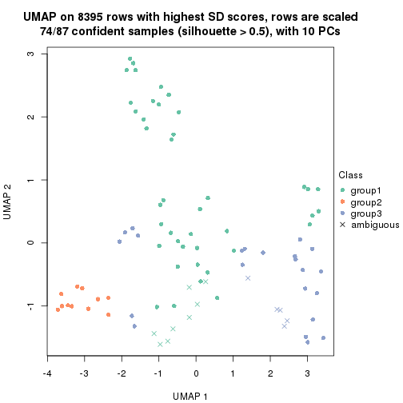
dimension_reduction(res, k = 4, method = "UMAP")
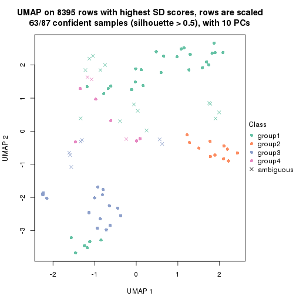
dimension_reduction(res, k = 5, method = "UMAP")
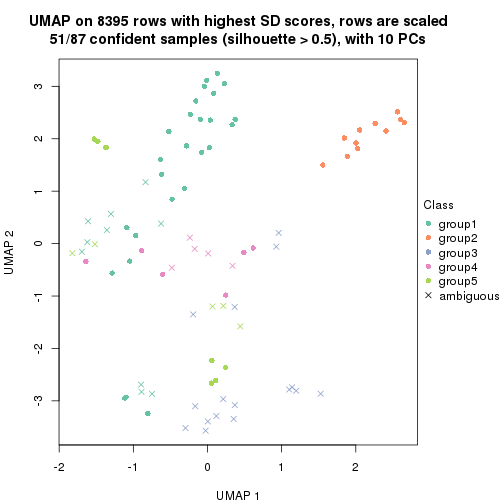
dimension_reduction(res, k = 6, method = "UMAP")
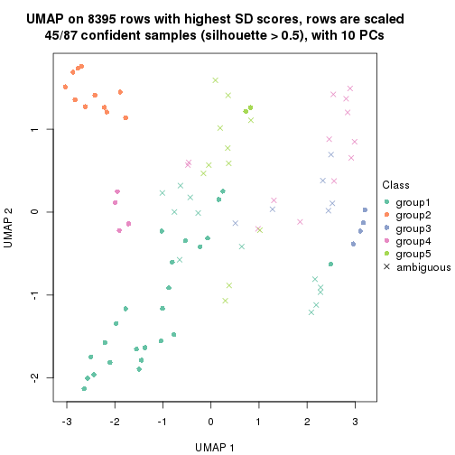
Following heatmap shows how subgroups are split when increasing k:
collect_classes(res)
Test correlation between subgroups and known annotations. If the known annotation is numeric, one-way ANOVA test is applied, and if the known annotation is discrete, chi-squared contingency table test is applied.
test_to_known_factors(res)
#> n tissue(p) individual(p) disease.state(p) k
#> SD:hclust 87 5.54e-07 1.61e-05 5.47e-07 2
#> SD:hclust 74 6.38e-06 1.33e-08 2.12e-07 3
#> SD:hclust 63 6.44e-08 8.26e-12 1.29e-09 4
#> SD:hclust 51 4.37e-06 7.28e-09 5.65e-07 5
#> SD:hclust 45 1.70e-05 3.21e-11 6.88e-06 6
If matrix rows can be associated to genes, consider to use GO_Enrichment(res,
...) to perform function enrichment for the signature genes.
The object with results only for a single top-value method and a single partition method can be extracted as:
res = res_list["SD", "kmeans"]
# you can also extract it by
# res = res_list["SD:kmeans"]
A summary of res and all the functions that can be applied to it:
res
#> A 'ConsensusPartition' object with k = 2, 3, 4, 5, 6.
#> On a matrix with 8395 rows and 87 columns.
#> Top rows (840, 1680, 2519, 3358, 4198) are extracted by 'SD' method.
#> Subgroups are detected by 'kmeans' method.
#> Performed in total 1250 partitions by row resampling.
#> Best k for subgroups seems to be 2.
#>
#> Following methods can be applied to this 'ConsensusPartition' object:
#> [1] "cola_report" "collect_classes" "collect_plots"
#> [4] "collect_stats" "colnames" "compare_signatures"
#> [7] "consensus_heatmap" "dimension_reduction" "functional_enrichment"
#> [10] "get_anno_col" "get_anno" "get_classes"
#> [13] "get_consensus" "get_matrix" "get_membership"
#> [16] "get_param" "get_signatures" "get_stats"
#> [19] "is_best_k" "is_stable_k" "membership_heatmap"
#> [22] "ncol" "nrow" "plot_ecdf"
#> [25] "rownames" "select_partition_number" "show"
#> [28] "suggest_best_k" "test_to_known_factors"
collect_plots() function collects all the plots made from res for all k (number of partitions)
into one single page to provide an easy and fast comparison between different k.
collect_plots(res)
The plots are:
k and the heatmap of
predicted classes for each k.k.k.k.All the plots in panels can be made by individual functions and they are plotted later in this section.
select_partition_number() produces several plots showing different
statistics for choosing “optimized” k. There are following statistics:
k;k, the area increased is defined as \(A_k - A_{k-1}\).The detailed explanations of these statistics can be found in the cola vignette.
Generally speaking, lower PAC score, higher mean silhouette score or higher
concordance corresponds to better partition. Rand index and Jaccard index
measure how similar the current partition is compared to partition with k-1.
If they are too similar, we won't accept k is better than k-1.
select_partition_number(res)
The numeric values for all these statistics can be obtained by get_stats().
get_stats(res)
#> k 1-PAC mean_silhouette concordance area_increased Rand Jaccard
#> 2 2 0.233 0.687 0.826 0.4801 0.495 0.495
#> 3 3 0.422 0.666 0.775 0.3271 0.873 0.749
#> 4 4 0.497 0.693 0.766 0.1370 0.823 0.571
#> 5 5 0.568 0.570 0.709 0.0687 0.918 0.709
#> 6 6 0.647 0.618 0.712 0.0437 0.941 0.740
suggest_best_k() suggests the best \(k\) based on these statistics. The rules are as follows:
NA.suggest_best_k(res)
#> [1] 2
Following shows the table of the partitions (You need to click the show/hide
code output link to see it). The membership matrix (columns with name p*)
is inferred by
clue::cl_consensus()
function with the SE method. Basically the value in the membership matrix
represents the probability to belong to a certain group. The finall class
label for an item is determined with the group with highest probability it
belongs to.
In get_classes() function, the entropy is calculated from the membership
matrix and the silhouette score is calculated from the consensus matrix.
cbind(get_classes(res, k = 2), get_membership(res, k = 2))
#> class entropy silhouette p1 p2
#> GSM5316 1 0.0938 0.819 0.988 0.012
#> GSM5319 2 0.6623 0.710 0.172 0.828
#> GSM5321 1 0.5408 0.806 0.876 0.124
#> GSM5323 1 0.1633 0.800 0.976 0.024
#> GSM5325 1 0.6438 0.768 0.836 0.164
#> GSM5327 1 0.2236 0.828 0.964 0.036
#> GSM5329 1 0.9775 0.357 0.588 0.412
#> GSM5331 2 0.3114 0.742 0.056 0.944
#> GSM5333 2 0.3114 0.742 0.056 0.944
#> GSM5335 1 0.3584 0.828 0.932 0.068
#> GSM5337 1 0.3584 0.828 0.932 0.068
#> GSM5339 1 0.5059 0.739 0.888 0.112
#> GSM5341 1 0.5059 0.739 0.888 0.112
#> GSM5343 1 0.4690 0.822 0.900 0.100
#> GSM5345 2 0.6623 0.710 0.172 0.828
#> GSM5347 2 0.6623 0.710 0.172 0.828
#> GSM5349 2 0.6623 0.710 0.172 0.828
#> GSM5351 2 0.3114 0.742 0.056 0.944
#> GSM5353 1 0.1414 0.803 0.980 0.020
#> GSM5355 1 0.5059 0.739 0.888 0.112
#> GSM5357 2 0.5629 0.727 0.132 0.868
#> GSM5359 2 0.5629 0.727 0.132 0.868
#> GSM5361 1 0.5059 0.739 0.888 0.112
#> GSM5363 1 0.5059 0.739 0.888 0.112
#> GSM5365 2 0.8144 0.631 0.252 0.748
#> GSM5367 2 0.8144 0.631 0.252 0.748
#> GSM5369 1 0.4690 0.822 0.900 0.100
#> GSM5371 1 0.4815 0.821 0.896 0.104
#> GSM5373 1 0.7056 0.767 0.808 0.192
#> GSM5396 1 0.2423 0.828 0.960 0.040
#> GSM5397 2 0.6531 0.712 0.168 0.832
#> GSM5398 2 0.6623 0.710 0.172 0.828
#> GSM5400 1 0.9795 0.346 0.584 0.416
#> GSM5399 2 0.9896 0.228 0.440 0.560
#> GSM5401 2 0.9580 0.494 0.380 0.620
#> GSM5402 2 0.6531 0.712 0.168 0.832
#> GSM5317 1 0.1633 0.824 0.976 0.024
#> GSM5318 2 0.6623 0.710 0.172 0.828
#> GSM5320 1 0.4815 0.821 0.896 0.104
#> GSM5322 1 0.0000 0.814 1.000 0.000
#> GSM5324 1 0.5842 0.792 0.860 0.140
#> GSM5326 1 0.3274 0.829 0.940 0.060
#> GSM5328 1 0.9775 0.357 0.588 0.412
#> GSM5330 2 0.3114 0.742 0.056 0.944
#> GSM5332 2 0.3114 0.742 0.056 0.944
#> GSM5334 1 0.8861 0.574 0.696 0.304
#> GSM5336 1 0.8861 0.574 0.696 0.304
#> GSM5338 1 0.5059 0.739 0.888 0.112
#> GSM5340 1 0.5059 0.739 0.888 0.112
#> GSM5342 1 0.4690 0.822 0.900 0.100
#> GSM5344 2 0.6623 0.710 0.172 0.828
#> GSM5346 2 0.6623 0.710 0.172 0.828
#> GSM5348 2 0.2948 0.741 0.052 0.948
#> GSM5350 2 0.2948 0.741 0.052 0.948
#> GSM5352 1 0.0376 0.817 0.996 0.004
#> GSM5354 1 0.0376 0.817 0.996 0.004
#> GSM5356 2 0.1633 0.731 0.024 0.976
#> GSM5358 2 0.1633 0.731 0.024 0.976
#> GSM5360 1 0.5059 0.739 0.888 0.112
#> GSM5362 1 0.5059 0.739 0.888 0.112
#> GSM5364 2 0.8144 0.631 0.252 0.748
#> GSM5366 2 0.8144 0.631 0.252 0.748
#> GSM5368 1 0.2603 0.829 0.956 0.044
#> GSM5370 1 0.4815 0.821 0.896 0.104
#> GSM5372 1 0.8555 0.609 0.720 0.280
#> GSM5374 2 0.2778 0.741 0.048 0.952
#> GSM5375 2 0.2778 0.741 0.048 0.952
#> GSM5376 2 0.9170 0.547 0.332 0.668
#> GSM5377 2 0.9170 0.547 0.332 0.668
#> GSM5378 2 0.9580 0.494 0.380 0.620
#> GSM5379 2 0.9580 0.494 0.380 0.620
#> GSM5380 2 0.9608 0.333 0.384 0.616
#> GSM5381 2 0.8608 0.560 0.284 0.716
#> GSM5382 1 0.4815 0.821 0.896 0.104
#> GSM5383 1 0.4815 0.821 0.896 0.104
#> GSM5384 1 0.9248 0.513 0.660 0.340
#> GSM5385 1 0.9248 0.513 0.660 0.340
#> GSM5386 2 0.9686 0.465 0.396 0.604
#> GSM5387 2 0.9580 0.494 0.380 0.620
#> GSM5392 2 0.9522 0.365 0.372 0.628
#> GSM5388 2 0.8555 0.602 0.280 0.720
#> GSM5389 2 0.8555 0.602 0.280 0.720
#> GSM5390 2 0.9522 0.505 0.372 0.628
#> GSM5391 2 0.9522 0.505 0.372 0.628
#> GSM5393 1 0.0376 0.817 0.996 0.004
#> GSM5394 1 0.4815 0.821 0.896 0.104
#> GSM5395 1 0.2603 0.829 0.956 0.044
cbind(get_classes(res, k = 3), get_membership(res, k = 3))
#> class entropy silhouette p1 p2 p3
#> GSM5316 1 0.463 0.696 0.808 0.188 0.004
#> GSM5319 3 0.456 0.782 0.080 0.060 0.860
#> GSM5321 1 0.296 0.721 0.912 0.008 0.080
#> GSM5323 1 0.587 0.612 0.684 0.312 0.004
#> GSM5325 1 0.311 0.711 0.900 0.004 0.096
#> GSM5327 1 0.385 0.714 0.860 0.136 0.004
#> GSM5329 1 0.639 0.235 0.584 0.004 0.412
#> GSM5331 3 0.280 0.771 0.000 0.092 0.908
#> GSM5333 3 0.280 0.771 0.000 0.092 0.908
#> GSM5335 1 0.153 0.731 0.964 0.032 0.004
#> GSM5337 1 0.153 0.731 0.964 0.032 0.004
#> GSM5339 1 0.668 0.424 0.508 0.484 0.008
#> GSM5341 1 0.668 0.424 0.508 0.484 0.008
#> GSM5343 1 0.236 0.722 0.928 0.000 0.072
#> GSM5345 3 0.294 0.798 0.072 0.012 0.916
#> GSM5347 3 0.294 0.798 0.072 0.012 0.916
#> GSM5349 3 0.409 0.809 0.052 0.068 0.880
#> GSM5351 3 0.327 0.765 0.004 0.104 0.892
#> GSM5353 1 0.580 0.644 0.712 0.280 0.008
#> GSM5355 1 0.665 0.469 0.540 0.452 0.008
#> GSM5357 3 0.429 0.805 0.060 0.068 0.872
#> GSM5359 3 0.429 0.805 0.060 0.068 0.872
#> GSM5361 1 0.665 0.469 0.540 0.452 0.008
#> GSM5363 1 0.665 0.469 0.540 0.452 0.008
#> GSM5365 2 0.860 0.555 0.100 0.492 0.408
#> GSM5367 2 0.860 0.555 0.100 0.492 0.408
#> GSM5369 1 0.164 0.729 0.956 0.000 0.044
#> GSM5371 1 0.216 0.724 0.936 0.000 0.064
#> GSM5373 1 0.685 0.607 0.740 0.140 0.120
#> GSM5396 1 0.406 0.704 0.836 0.164 0.000
#> GSM5397 3 0.429 0.795 0.064 0.064 0.872
#> GSM5398 3 0.238 0.806 0.056 0.008 0.936
#> GSM5400 1 0.728 -0.029 0.516 0.028 0.456
#> GSM5399 1 0.647 0.435 0.668 0.020 0.312
#> GSM5401 2 0.511 0.838 0.024 0.808 0.168
#> GSM5402 3 0.400 0.803 0.056 0.060 0.884
#> GSM5317 1 0.458 0.697 0.812 0.184 0.004
#> GSM5318 3 0.573 0.727 0.144 0.060 0.796
#> GSM5320 1 0.277 0.721 0.916 0.004 0.080
#> GSM5322 1 0.473 0.692 0.800 0.196 0.004
#> GSM5324 1 0.311 0.711 0.900 0.004 0.096
#> GSM5326 1 0.207 0.729 0.940 0.060 0.000
#> GSM5328 1 0.637 0.246 0.588 0.004 0.408
#> GSM5330 3 0.280 0.771 0.000 0.092 0.908
#> GSM5332 3 0.280 0.771 0.000 0.092 0.908
#> GSM5334 1 0.475 0.660 0.816 0.012 0.172
#> GSM5336 1 0.475 0.660 0.816 0.012 0.172
#> GSM5338 1 0.668 0.424 0.508 0.484 0.008
#> GSM5340 1 0.668 0.424 0.508 0.484 0.008
#> GSM5342 1 0.245 0.720 0.924 0.000 0.076
#> GSM5344 3 0.285 0.800 0.068 0.012 0.920
#> GSM5346 3 0.321 0.807 0.060 0.028 0.912
#> GSM5348 3 0.385 0.736 0.004 0.136 0.860
#> GSM5350 3 0.385 0.736 0.004 0.136 0.860
#> GSM5352 1 0.569 0.653 0.724 0.268 0.008
#> GSM5354 1 0.550 0.665 0.744 0.248 0.008
#> GSM5356 3 0.392 0.741 0.004 0.140 0.856
#> GSM5358 3 0.392 0.741 0.004 0.140 0.856
#> GSM5360 1 0.665 0.469 0.540 0.452 0.008
#> GSM5362 1 0.665 0.469 0.540 0.452 0.008
#> GSM5364 2 0.859 0.560 0.100 0.496 0.404
#> GSM5366 2 0.859 0.560 0.100 0.496 0.404
#> GSM5368 1 0.129 0.731 0.968 0.032 0.000
#> GSM5370 1 0.312 0.716 0.908 0.012 0.080
#> GSM5372 1 0.662 0.539 0.720 0.052 0.228
#> GSM5374 3 0.275 0.790 0.012 0.064 0.924
#> GSM5375 3 0.265 0.791 0.012 0.060 0.928
#> GSM5376 2 0.635 0.828 0.048 0.740 0.212
#> GSM5377 2 0.635 0.828 0.048 0.740 0.212
#> GSM5378 2 0.511 0.838 0.024 0.808 0.168
#> GSM5379 2 0.511 0.838 0.024 0.808 0.168
#> GSM5380 3 0.647 0.387 0.388 0.008 0.604
#> GSM5381 3 0.578 0.548 0.300 0.004 0.696
#> GSM5382 1 0.164 0.729 0.956 0.000 0.044
#> GSM5383 1 0.164 0.729 0.956 0.000 0.044
#> GSM5384 1 0.596 0.438 0.672 0.004 0.324
#> GSM5385 1 0.596 0.438 0.672 0.004 0.324
#> GSM5386 2 0.511 0.838 0.024 0.808 0.168
#> GSM5387 2 0.511 0.838 0.024 0.808 0.168
#> GSM5392 3 0.638 0.430 0.368 0.008 0.624
#> GSM5388 2 0.672 0.775 0.028 0.660 0.312
#> GSM5389 2 0.672 0.775 0.028 0.660 0.312
#> GSM5390 2 0.517 0.837 0.024 0.804 0.172
#> GSM5391 2 0.517 0.837 0.024 0.804 0.172
#> GSM5393 1 0.498 0.684 0.780 0.216 0.004
#> GSM5394 1 0.188 0.730 0.952 0.004 0.044
#> GSM5395 1 0.207 0.729 0.940 0.060 0.000
cbind(get_classes(res, k = 4), get_membership(res, k = 4))
#> class entropy silhouette p1 p2 p3 p4
#> GSM5316 1 0.281 0.7956 0.868 0.000 0.000 0.132
#> GSM5319 3 0.565 0.7585 0.020 0.092 0.752 0.136
#> GSM5321 4 0.593 0.6412 0.276 0.020 0.036 0.668
#> GSM5323 1 0.331 0.7648 0.840 0.004 0.000 0.156
#> GSM5325 4 0.340 0.7119 0.164 0.000 0.004 0.832
#> GSM5327 1 0.544 0.4188 0.664 0.012 0.016 0.308
#> GSM5329 4 0.632 0.4424 0.048 0.024 0.284 0.644
#> GSM5331 3 0.299 0.8133 0.008 0.084 0.892 0.016
#> GSM5333 3 0.299 0.8133 0.008 0.084 0.892 0.016
#> GSM5335 4 0.566 0.5337 0.384 0.012 0.012 0.592
#> GSM5337 4 0.566 0.5337 0.384 0.012 0.012 0.592
#> GSM5339 1 0.292 0.8176 0.876 0.116 0.000 0.008
#> GSM5341 1 0.292 0.8176 0.876 0.116 0.000 0.008
#> GSM5343 4 0.490 0.6962 0.232 0.008 0.020 0.740
#> GSM5345 3 0.300 0.8054 0.004 0.024 0.892 0.080
#> GSM5347 3 0.300 0.8054 0.004 0.024 0.892 0.080
#> GSM5349 3 0.334 0.8146 0.004 0.068 0.880 0.048
#> GSM5351 3 0.298 0.8102 0.000 0.084 0.888 0.028
#> GSM5353 1 0.204 0.8469 0.936 0.012 0.004 0.048
#> GSM5355 1 0.223 0.8504 0.924 0.064 0.004 0.008
#> GSM5357 3 0.603 0.7367 0.008 0.088 0.692 0.212
#> GSM5359 3 0.603 0.7367 0.008 0.088 0.692 0.212
#> GSM5361 1 0.244 0.8495 0.916 0.068 0.004 0.012
#> GSM5363 1 0.244 0.8495 0.916 0.068 0.004 0.012
#> GSM5365 2 0.825 0.4292 0.032 0.484 0.212 0.272
#> GSM5367 2 0.825 0.4292 0.032 0.484 0.212 0.272
#> GSM5369 4 0.438 0.6507 0.296 0.000 0.000 0.704
#> GSM5371 4 0.353 0.7085 0.192 0.000 0.000 0.808
#> GSM5373 4 0.440 0.6543 0.068 0.084 0.016 0.832
#> GSM5396 1 0.316 0.7810 0.852 0.000 0.004 0.144
#> GSM5397 3 0.676 0.6917 0.020 0.096 0.636 0.248
#> GSM5398 3 0.318 0.8177 0.020 0.032 0.896 0.052
#> GSM5400 4 0.551 0.5329 0.044 0.044 0.148 0.764
#> GSM5399 4 0.401 0.6848 0.048 0.016 0.084 0.852
#> GSM5401 2 0.292 0.7922 0.100 0.884 0.016 0.000
#> GSM5402 3 0.689 0.6867 0.020 0.100 0.620 0.260
#> GSM5317 1 0.349 0.7244 0.812 0.000 0.000 0.188
#> GSM5318 3 0.704 0.6340 0.020 0.096 0.588 0.296
#> GSM5320 4 0.525 0.6566 0.280 0.020 0.008 0.692
#> GSM5322 1 0.395 0.6670 0.780 0.004 0.000 0.216
#> GSM5324 4 0.340 0.7119 0.164 0.000 0.004 0.832
#> GSM5326 4 0.485 0.5100 0.400 0.000 0.000 0.600
#> GSM5328 4 0.632 0.4424 0.048 0.024 0.284 0.644
#> GSM5330 3 0.299 0.8133 0.008 0.084 0.892 0.016
#> GSM5332 3 0.299 0.8133 0.008 0.084 0.892 0.016
#> GSM5334 4 0.645 0.6585 0.208 0.020 0.096 0.676
#> GSM5336 4 0.645 0.6585 0.208 0.020 0.096 0.676
#> GSM5338 1 0.292 0.8176 0.876 0.116 0.000 0.008
#> GSM5340 1 0.292 0.8176 0.876 0.116 0.000 0.008
#> GSM5342 4 0.502 0.6996 0.220 0.012 0.024 0.744
#> GSM5344 3 0.274 0.8086 0.000 0.024 0.900 0.076
#> GSM5346 3 0.267 0.8092 0.004 0.020 0.908 0.068
#> GSM5348 3 0.349 0.8054 0.004 0.092 0.868 0.036
#> GSM5350 3 0.324 0.8076 0.000 0.088 0.876 0.036
#> GSM5352 1 0.204 0.8469 0.936 0.012 0.004 0.048
#> GSM5354 1 0.204 0.8469 0.936 0.012 0.004 0.048
#> GSM5356 3 0.533 0.7857 0.008 0.124 0.764 0.104
#> GSM5358 3 0.533 0.7857 0.008 0.124 0.764 0.104
#> GSM5360 1 0.244 0.8495 0.916 0.068 0.004 0.012
#> GSM5362 1 0.244 0.8495 0.916 0.068 0.004 0.012
#> GSM5364 2 0.825 0.4292 0.032 0.484 0.212 0.272
#> GSM5366 2 0.825 0.4292 0.032 0.484 0.212 0.272
#> GSM5368 4 0.476 0.5570 0.372 0.000 0.000 0.628
#> GSM5370 4 0.354 0.7047 0.128 0.008 0.012 0.852
#> GSM5372 4 0.372 0.6802 0.064 0.036 0.028 0.872
#> GSM5374 3 0.469 0.7719 0.004 0.040 0.780 0.176
#> GSM5375 3 0.469 0.7719 0.004 0.040 0.780 0.176
#> GSM5376 2 0.459 0.7786 0.064 0.832 0.052 0.052
#> GSM5377 2 0.459 0.7786 0.064 0.832 0.052 0.052
#> GSM5378 2 0.316 0.7941 0.096 0.880 0.020 0.004
#> GSM5379 2 0.316 0.7941 0.096 0.880 0.020 0.004
#> GSM5380 4 0.586 0.2180 0.012 0.024 0.356 0.608
#> GSM5381 4 0.607 -0.0378 0.012 0.024 0.432 0.532
#> GSM5382 4 0.468 0.6399 0.316 0.004 0.000 0.680
#> GSM5383 4 0.468 0.6399 0.316 0.004 0.000 0.680
#> GSM5384 4 0.539 0.6468 0.056 0.032 0.140 0.772
#> GSM5385 4 0.539 0.6468 0.056 0.032 0.140 0.772
#> GSM5386 2 0.311 0.7902 0.100 0.880 0.016 0.004
#> GSM5387 2 0.311 0.7902 0.100 0.880 0.016 0.004
#> GSM5392 4 0.633 0.1373 0.020 0.032 0.380 0.568
#> GSM5388 2 0.604 0.7273 0.056 0.732 0.160 0.052
#> GSM5389 2 0.604 0.7273 0.056 0.732 0.160 0.052
#> GSM5390 2 0.346 0.7910 0.096 0.868 0.032 0.004
#> GSM5391 2 0.346 0.7910 0.096 0.868 0.032 0.004
#> GSM5393 1 0.265 0.8052 0.880 0.000 0.000 0.120
#> GSM5394 4 0.383 0.7028 0.204 0.000 0.004 0.792
#> GSM5395 4 0.492 0.4539 0.428 0.000 0.000 0.572
cbind(get_classes(res, k = 5), get_membership(res, k = 5))
#> class entropy silhouette p1 p2 p3 p4 p5
#> GSM5316 1 0.239 0.81349 0.880 0.000 0.000 0.116 0.004
#> GSM5319 5 0.640 0.20565 0.012 0.024 0.368 0.068 0.528
#> GSM5321 4 0.647 0.61728 0.128 0.020 0.120 0.668 0.064
#> GSM5323 1 0.414 0.62555 0.724 0.004 0.004 0.260 0.008
#> GSM5325 4 0.236 0.69320 0.060 0.000 0.000 0.904 0.036
#> GSM5327 4 0.673 0.21219 0.384 0.000 0.096 0.476 0.044
#> GSM5329 4 0.694 0.15574 0.016 0.008 0.364 0.460 0.152
#> GSM5331 3 0.596 0.45594 0.016 0.068 0.596 0.008 0.312
#> GSM5333 3 0.596 0.45594 0.016 0.068 0.596 0.008 0.312
#> GSM5335 4 0.589 0.59345 0.212 0.000 0.084 0.660 0.044
#> GSM5337 4 0.589 0.59345 0.212 0.000 0.084 0.660 0.044
#> GSM5339 1 0.373 0.81226 0.836 0.084 0.000 0.016 0.064
#> GSM5341 1 0.373 0.81226 0.836 0.084 0.000 0.016 0.064
#> GSM5343 4 0.412 0.69110 0.116 0.000 0.008 0.800 0.076
#> GSM5345 3 0.136 0.46854 0.000 0.000 0.952 0.036 0.012
#> GSM5347 3 0.136 0.46854 0.000 0.000 0.952 0.036 0.012
#> GSM5349 3 0.504 0.45557 0.000 0.072 0.700 0.008 0.220
#> GSM5351 3 0.551 0.43884 0.000 0.088 0.644 0.008 0.260
#> GSM5353 1 0.128 0.85848 0.952 0.000 0.000 0.044 0.004
#> GSM5355 1 0.138 0.85867 0.956 0.020 0.000 0.020 0.004
#> GSM5357 5 0.687 0.21771 0.016 0.024 0.380 0.100 0.480
#> GSM5359 5 0.687 0.21771 0.016 0.024 0.380 0.100 0.480
#> GSM5361 1 0.223 0.84426 0.916 0.056 0.000 0.008 0.020
#> GSM5363 1 0.223 0.84426 0.916 0.056 0.000 0.008 0.020
#> GSM5365 5 0.825 0.52943 0.044 0.240 0.080 0.160 0.476
#> GSM5367 5 0.825 0.52943 0.044 0.240 0.080 0.160 0.476
#> GSM5369 4 0.305 0.68080 0.176 0.000 0.000 0.820 0.004
#> GSM5371 4 0.202 0.70656 0.080 0.000 0.000 0.912 0.008
#> GSM5373 4 0.475 0.56482 0.040 0.028 0.004 0.756 0.172
#> GSM5396 1 0.297 0.80866 0.852 0.000 0.000 0.128 0.020
#> GSM5397 5 0.655 0.44163 0.008 0.020 0.264 0.132 0.576
#> GSM5398 3 0.633 0.34428 0.012 0.056 0.556 0.032 0.344
#> GSM5400 4 0.670 0.14397 0.016 0.008 0.136 0.524 0.316
#> GSM5399 4 0.499 0.60435 0.016 0.048 0.052 0.776 0.108
#> GSM5401 2 0.205 0.88175 0.080 0.912 0.004 0.000 0.004
#> GSM5402 5 0.697 0.34380 0.008 0.048 0.292 0.112 0.540
#> GSM5317 1 0.351 0.65529 0.748 0.000 0.000 0.252 0.000
#> GSM5318 5 0.674 0.44599 0.008 0.020 0.244 0.168 0.560
#> GSM5320 4 0.556 0.65658 0.140 0.020 0.044 0.732 0.064
#> GSM5322 1 0.454 0.42389 0.636 0.000 0.004 0.348 0.012
#> GSM5324 4 0.236 0.69320 0.060 0.000 0.000 0.904 0.036
#> GSM5326 4 0.352 0.65454 0.216 0.000 0.000 0.776 0.008
#> GSM5328 4 0.694 0.15574 0.016 0.008 0.364 0.460 0.152
#> GSM5330 3 0.596 0.45594 0.016 0.068 0.596 0.008 0.312
#> GSM5332 3 0.596 0.45594 0.016 0.068 0.596 0.008 0.312
#> GSM5334 4 0.663 0.60938 0.100 0.024 0.160 0.652 0.064
#> GSM5336 4 0.663 0.60938 0.100 0.024 0.160 0.652 0.064
#> GSM5338 1 0.373 0.81226 0.836 0.084 0.000 0.016 0.064
#> GSM5340 1 0.373 0.81226 0.836 0.084 0.000 0.016 0.064
#> GSM5342 4 0.418 0.68950 0.116 0.000 0.008 0.796 0.080
#> GSM5344 3 0.136 0.46958 0.000 0.000 0.952 0.036 0.012
#> GSM5346 3 0.263 0.48727 0.000 0.004 0.892 0.032 0.072
#> GSM5348 3 0.538 0.44952 0.000 0.108 0.680 0.008 0.204
#> GSM5350 3 0.544 0.44869 0.000 0.108 0.672 0.008 0.212
#> GSM5352 1 0.128 0.85848 0.952 0.000 0.000 0.044 0.004
#> GSM5354 1 0.128 0.85848 0.952 0.000 0.000 0.044 0.004
#> GSM5356 3 0.661 0.11266 0.008 0.088 0.452 0.024 0.428
#> GSM5358 3 0.661 0.11266 0.008 0.088 0.452 0.024 0.428
#> GSM5360 1 0.223 0.84426 0.916 0.056 0.000 0.008 0.020
#> GSM5362 1 0.223 0.84426 0.916 0.056 0.000 0.008 0.020
#> GSM5364 5 0.825 0.52943 0.044 0.240 0.080 0.160 0.476
#> GSM5366 5 0.825 0.52943 0.044 0.240 0.080 0.160 0.476
#> GSM5368 4 0.323 0.66853 0.196 0.000 0.000 0.800 0.004
#> GSM5370 4 0.299 0.67882 0.064 0.000 0.000 0.868 0.068
#> GSM5372 4 0.440 0.56717 0.032 0.012 0.008 0.772 0.176
#> GSM5374 3 0.524 0.29354 0.004 0.024 0.732 0.096 0.144
#> GSM5375 3 0.524 0.29354 0.004 0.024 0.732 0.096 0.144
#> GSM5376 2 0.440 0.79355 0.040 0.812 0.036 0.016 0.096
#> GSM5377 2 0.440 0.79355 0.040 0.812 0.036 0.016 0.096
#> GSM5378 2 0.223 0.88138 0.076 0.908 0.004 0.000 0.012
#> GSM5379 2 0.223 0.88138 0.076 0.908 0.004 0.000 0.012
#> GSM5380 4 0.681 0.08319 0.008 0.008 0.392 0.436 0.156
#> GSM5381 3 0.679 -0.00526 0.008 0.008 0.456 0.372 0.156
#> GSM5382 4 0.371 0.67427 0.184 0.000 0.004 0.792 0.020
#> GSM5383 4 0.371 0.67427 0.184 0.000 0.004 0.792 0.020
#> GSM5384 4 0.608 0.39968 0.012 0.008 0.264 0.612 0.104
#> GSM5385 4 0.608 0.39968 0.012 0.008 0.264 0.612 0.104
#> GSM5386 2 0.167 0.88173 0.076 0.924 0.000 0.000 0.000
#> GSM5387 2 0.167 0.88173 0.076 0.924 0.000 0.000 0.000
#> GSM5392 3 0.674 -0.09169 0.008 0.004 0.416 0.412 0.160
#> GSM5388 2 0.621 0.63705 0.020 0.676 0.168 0.044 0.092
#> GSM5389 2 0.621 0.63705 0.020 0.676 0.168 0.044 0.092
#> GSM5390 2 0.255 0.87693 0.076 0.896 0.008 0.000 0.020
#> GSM5391 2 0.255 0.87693 0.076 0.896 0.008 0.000 0.020
#> GSM5393 1 0.196 0.82933 0.904 0.000 0.000 0.096 0.000
#> GSM5394 4 0.288 0.70509 0.100 0.000 0.000 0.868 0.032
#> GSM5395 4 0.386 0.62270 0.248 0.000 0.000 0.740 0.012
cbind(get_classes(res, k = 6), get_membership(res, k = 6))
#> class entropy silhouette p1 p2 p3 p4 p5 p6
#> GSM5316 1 0.2053 0.8169 0.888 0.000 0.000 0.108 0.000 0.004
#> GSM5319 6 0.5557 0.3221 0.004 0.000 0.292 0.012 0.112 0.580
#> GSM5321 4 0.5439 0.6575 0.060 0.020 0.100 0.732 0.060 0.028
#> GSM5323 1 0.4196 0.3105 0.568 0.000 0.004 0.420 0.004 0.004
#> GSM5325 4 0.2793 0.7197 0.024 0.000 0.000 0.872 0.080 0.024
#> GSM5327 4 0.6189 0.5262 0.220 0.012 0.084 0.620 0.040 0.024
#> GSM5329 5 0.3693 0.7189 0.008 0.000 0.004 0.280 0.708 0.000
#> GSM5331 3 0.5380 0.5428 0.012 0.020 0.672 0.000 0.148 0.148
#> GSM5333 3 0.5380 0.5428 0.012 0.020 0.672 0.000 0.148 0.148
#> GSM5335 4 0.5190 0.6783 0.100 0.012 0.084 0.740 0.044 0.020
#> GSM5337 4 0.5190 0.6783 0.100 0.012 0.084 0.740 0.044 0.020
#> GSM5339 1 0.4510 0.7866 0.800 0.068 0.024 0.028 0.036 0.044
#> GSM5341 1 0.4510 0.7866 0.800 0.068 0.024 0.028 0.036 0.044
#> GSM5343 4 0.3543 0.7079 0.044 0.000 0.000 0.820 0.112 0.024
#> GSM5345 3 0.4157 0.3474 0.000 0.000 0.544 0.012 0.444 0.000
#> GSM5347 3 0.4157 0.3474 0.000 0.000 0.544 0.012 0.444 0.000
#> GSM5349 3 0.4338 0.5601 0.004 0.060 0.796 0.012 0.068 0.060
#> GSM5351 3 0.4536 0.5536 0.004 0.060 0.776 0.008 0.056 0.096
#> GSM5353 1 0.2842 0.8315 0.880 0.004 0.008 0.068 0.028 0.012
#> GSM5355 1 0.2929 0.8312 0.880 0.008 0.008 0.060 0.028 0.016
#> GSM5357 6 0.7188 0.1792 0.016 0.012 0.352 0.028 0.220 0.372
#> GSM5359 6 0.7188 0.1792 0.016 0.012 0.352 0.028 0.220 0.372
#> GSM5361 1 0.3395 0.8211 0.852 0.040 0.004 0.044 0.004 0.056
#> GSM5363 1 0.3395 0.8211 0.852 0.040 0.004 0.044 0.004 0.056
#> GSM5365 6 0.7017 0.5543 0.052 0.200 0.036 0.080 0.048 0.584
#> GSM5367 6 0.7017 0.5543 0.052 0.200 0.036 0.080 0.048 0.584
#> GSM5369 4 0.2487 0.7526 0.064 0.000 0.000 0.892 0.024 0.020
#> GSM5371 4 0.2274 0.7444 0.028 0.000 0.000 0.908 0.036 0.028
#> GSM5373 4 0.5830 0.3979 0.024 0.008 0.004 0.620 0.136 0.208
#> GSM5396 1 0.3014 0.8023 0.832 0.000 0.000 0.132 0.000 0.036
#> GSM5397 6 0.5802 0.5214 0.000 0.000 0.132 0.040 0.228 0.600
#> GSM5398 3 0.6436 0.3553 0.004 0.012 0.528 0.020 0.200 0.236
#> GSM5400 5 0.6531 0.0967 0.004 0.000 0.012 0.300 0.344 0.340
#> GSM5399 4 0.5098 0.5901 0.004 0.012 0.040 0.728 0.124 0.092
#> GSM5401 2 0.1565 0.8867 0.032 0.944 0.008 0.000 0.008 0.008
#> GSM5402 6 0.6373 0.4888 0.000 0.008 0.172 0.044 0.224 0.552
#> GSM5317 1 0.3864 0.4979 0.648 0.000 0.000 0.344 0.004 0.004
#> GSM5318 6 0.5839 0.5223 0.000 0.000 0.112 0.052 0.236 0.600
#> GSM5320 4 0.4242 0.7140 0.060 0.012 0.028 0.812 0.060 0.028
#> GSM5322 1 0.4541 0.0899 0.500 0.000 0.004 0.476 0.008 0.012
#> GSM5324 4 0.2793 0.7197 0.024 0.000 0.000 0.872 0.080 0.024
#> GSM5326 4 0.3369 0.7426 0.108 0.000 0.000 0.832 0.028 0.032
#> GSM5328 5 0.3693 0.7189 0.008 0.000 0.004 0.280 0.708 0.000
#> GSM5330 3 0.5380 0.5428 0.012 0.020 0.672 0.000 0.148 0.148
#> GSM5332 3 0.5380 0.5428 0.012 0.020 0.672 0.000 0.148 0.148
#> GSM5334 4 0.5935 0.6250 0.060 0.020 0.128 0.688 0.076 0.028
#> GSM5336 4 0.5935 0.6250 0.060 0.020 0.128 0.688 0.076 0.028
#> GSM5338 1 0.4510 0.7866 0.800 0.068 0.024 0.028 0.036 0.044
#> GSM5340 1 0.4510 0.7866 0.800 0.068 0.024 0.028 0.036 0.044
#> GSM5342 4 0.3877 0.6920 0.044 0.000 0.000 0.800 0.116 0.040
#> GSM5344 3 0.4157 0.3474 0.000 0.000 0.544 0.012 0.444 0.000
#> GSM5346 3 0.3992 0.4553 0.000 0.000 0.624 0.012 0.364 0.000
#> GSM5348 3 0.4280 0.5623 0.004 0.080 0.796 0.008 0.060 0.052
#> GSM5350 3 0.4289 0.5635 0.004 0.080 0.792 0.004 0.060 0.060
#> GSM5352 1 0.2842 0.8315 0.880 0.004 0.008 0.068 0.028 0.012
#> GSM5354 1 0.2842 0.8315 0.880 0.004 0.008 0.068 0.028 0.012
#> GSM5356 3 0.6962 0.0834 0.020 0.048 0.460 0.004 0.144 0.324
#> GSM5358 3 0.6962 0.0834 0.020 0.048 0.460 0.004 0.144 0.324
#> GSM5360 1 0.3395 0.8211 0.852 0.040 0.004 0.044 0.004 0.056
#> GSM5362 1 0.3395 0.8211 0.852 0.040 0.004 0.044 0.004 0.056
#> GSM5364 6 0.7017 0.5543 0.052 0.200 0.036 0.080 0.048 0.584
#> GSM5366 6 0.7017 0.5543 0.052 0.200 0.036 0.080 0.048 0.584
#> GSM5368 4 0.2816 0.7508 0.088 0.000 0.000 0.868 0.024 0.020
#> GSM5370 4 0.3541 0.6893 0.020 0.000 0.000 0.824 0.088 0.068
#> GSM5372 4 0.5630 0.3971 0.016 0.004 0.004 0.624 0.140 0.212
#> GSM5374 5 0.5335 0.2413 0.004 0.008 0.244 0.040 0.656 0.048
#> GSM5375 5 0.5335 0.2413 0.004 0.008 0.244 0.040 0.656 0.048
#> GSM5376 2 0.4333 0.8067 0.016 0.804 0.036 0.020 0.040 0.084
#> GSM5377 2 0.4333 0.8067 0.016 0.804 0.036 0.020 0.040 0.084
#> GSM5378 2 0.1375 0.8871 0.028 0.952 0.004 0.000 0.008 0.008
#> GSM5379 2 0.1375 0.8871 0.028 0.952 0.004 0.000 0.008 0.008
#> GSM5380 5 0.3647 0.7170 0.004 0.000 0.012 0.216 0.760 0.008
#> GSM5381 5 0.4001 0.6805 0.004 0.000 0.052 0.168 0.768 0.008
#> GSM5382 4 0.2705 0.7440 0.068 0.004 0.004 0.884 0.032 0.008
#> GSM5383 4 0.2705 0.7440 0.068 0.004 0.004 0.884 0.032 0.008
#> GSM5384 5 0.4490 0.5951 0.004 0.000 0.012 0.376 0.596 0.012
#> GSM5385 5 0.4490 0.5951 0.004 0.000 0.012 0.376 0.596 0.012
#> GSM5386 2 0.0858 0.8878 0.028 0.968 0.004 0.000 0.000 0.000
#> GSM5387 2 0.0858 0.8878 0.028 0.968 0.004 0.000 0.000 0.000
#> GSM5392 5 0.4153 0.6800 0.000 0.000 0.024 0.176 0.756 0.044
#> GSM5388 2 0.5533 0.6828 0.012 0.684 0.032 0.020 0.188 0.064
#> GSM5389 2 0.5533 0.6828 0.012 0.684 0.032 0.020 0.188 0.064
#> GSM5390 2 0.1476 0.8866 0.028 0.948 0.004 0.000 0.012 0.008
#> GSM5391 2 0.1476 0.8866 0.028 0.948 0.004 0.000 0.012 0.008
#> GSM5393 1 0.2053 0.8169 0.888 0.000 0.000 0.108 0.000 0.004
#> GSM5394 4 0.3373 0.7168 0.032 0.000 0.000 0.840 0.080 0.048
#> GSM5395 4 0.3134 0.7286 0.148 0.000 0.000 0.824 0.012 0.016
Heatmaps for the consensus matrix. It visualizes the probability of two samples to be in a same group.
consensus_heatmap(res, k = 2)
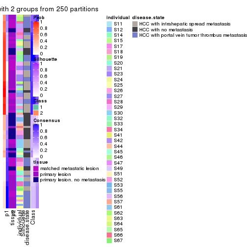
consensus_heatmap(res, k = 3)
consensus_heatmap(res, k = 4)
consensus_heatmap(res, k = 5)
consensus_heatmap(res, k = 6)
Heatmaps for the membership of samples in all partitions to see how consistent they are:
membership_heatmap(res, k = 2)
membership_heatmap(res, k = 3)
membership_heatmap(res, k = 4)
membership_heatmap(res, k = 5)
membership_heatmap(res, k = 6)
As soon as we have had the classes for columns, we can look for signatures which are significantly different between classes which can be candidate marks for certain classes. Following are the heatmaps for signatures.
Signature heatmaps where rows are scaled:
get_signatures(res, k = 2)
#> Error: The width or height of the raster image is zero, maybe you forget to turn off the
#> previous graphic device or it was corrupted. Run `dev.off()` to close it.

get_signatures(res, k = 3)
#> Error: The width or height of the raster image is zero, maybe you forget to turn off the
#> previous graphic device or it was corrupted. Run `dev.off()` to close it.

get_signatures(res, k = 4)
#> Error: The width or height of the raster image is zero, maybe you forget to turn off the
#> previous graphic device or it was corrupted. Run `dev.off()` to close it.

get_signatures(res, k = 5)
#> Error: The width or height of the raster image is zero, maybe you forget to turn off the
#> previous graphic device or it was corrupted. Run `dev.off()` to close it.

get_signatures(res, k = 6)
#> Error: The width or height of the raster image is zero, maybe you forget to turn off the
#> previous graphic device or it was corrupted. Run `dev.off()` to close it.

Signature heatmaps where rows are not scaled:
get_signatures(res, k = 2, scale_rows = FALSE)
#> Error: The width or height of the raster image is zero, maybe you forget to turn off the
#> previous graphic device or it was corrupted. Run `dev.off()` to close it.

get_signatures(res, k = 3, scale_rows = FALSE)
#> Error: The width or height of the raster image is zero, maybe you forget to turn off the
#> previous graphic device or it was corrupted. Run `dev.off()` to close it.

get_signatures(res, k = 4, scale_rows = FALSE)
#> Error: The width or height of the raster image is zero, maybe you forget to turn off the
#> previous graphic device or it was corrupted. Run `dev.off()` to close it.

get_signatures(res, k = 5, scale_rows = FALSE)
#> Error: The width or height of the raster image is zero, maybe you forget to turn off the
#> previous graphic device or it was corrupted. Run `dev.off()` to close it.

get_signatures(res, k = 6, scale_rows = FALSE)
#> Error: The width or height of the raster image is zero, maybe you forget to turn off the
#> previous graphic device or it was corrupted. Run `dev.off()` to close it.

Compare the overlap of signatures from different k:
compare_signatures(res)
get_signature() returns a data frame invisibly. TO get the list of signatures, the function
call should be assigned to a variable explicitly. In following code, if plot argument is set
to FALSE, no heatmap is plotted while only the differential analysis is performed.
# code only for demonstration
tb = get_signature(res, k = ..., plot = FALSE)
An example of the output of tb is:
#> which_row fdr mean_1 mean_2 scaled_mean_1 scaled_mean_2 km
#> 1 38 0.042760348 8.373488 9.131774 -0.5533452 0.5164555 1
#> 2 40 0.018707592 7.106213 8.469186 -0.6173731 0.5762149 1
#> 3 55 0.019134737 10.221463 11.207825 -0.6159697 0.5749050 1
#> 4 59 0.006059896 5.921854 7.869574 -0.6899429 0.6439467 1
#> 5 60 0.018055526 8.928898 10.211722 -0.6204761 0.5791110 1
#> 6 98 0.009384629 15.714769 14.887706 0.6635654 -0.6193277 2
...
The columns in tb are:
which_row: row indices corresponding to the input matrix.fdr: FDR for the differential test. mean_x: The mean value in group x.scaled_mean_x: The mean value in group x after rows are scaled.km: Row groups if k-means clustering is applied to rows.UMAP plot which shows how samples are separated.
dimension_reduction(res, k = 2, method = "UMAP")
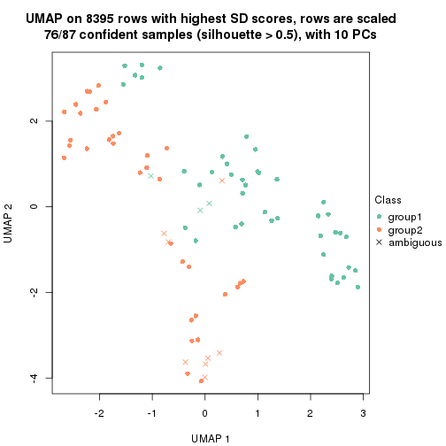
dimension_reduction(res, k = 3, method = "UMAP")
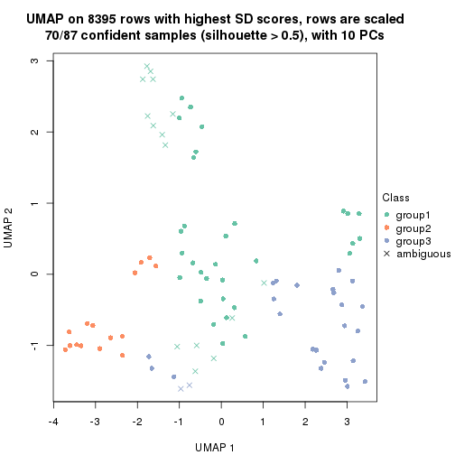
dimension_reduction(res, k = 4, method = "UMAP")
dimension_reduction(res, k = 5, method = "UMAP")
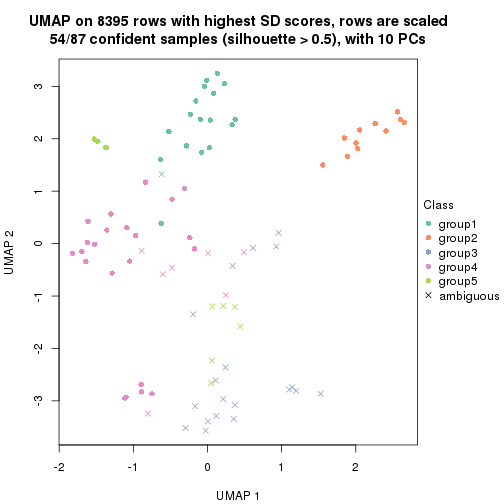
dimension_reduction(res, k = 6, method = "UMAP")
Following heatmap shows how subgroups are split when increasing k:
collect_classes(res)
Test correlation between subgroups and known annotations. If the known annotation is numeric, one-way ANOVA test is applied, and if the known annotation is discrete, chi-squared contingency table test is applied.
test_to_known_factors(res)
#> n tissue(p) individual(p) disease.state(p) k
#> SD:kmeans 76 5.47e-01 1.92e-05 1.84e-01 2
#> SD:kmeans 70 1.79e-03 1.34e-07 4.14e-05 3
#> SD:kmeans 76 6.81e-06 1.25e-11 5.19e-08 4
#> SD:kmeans 54 6.71e-05 2.41e-08 1.11e-06 5
#> SD:kmeans 68 5.71e-05 6.88e-16 5.61e-06 6
If matrix rows can be associated to genes, consider to use GO_Enrichment(res,
...) to perform function enrichment for the signature genes.
The object with results only for a single top-value method and a single partition method can be extracted as:
res = res_list["SD", "skmeans"]
# you can also extract it by
# res = res_list["SD:skmeans"]
A summary of res and all the functions that can be applied to it:
res
#> A 'ConsensusPartition' object with k = 2, 3, 4, 5, 6.
#> On a matrix with 8395 rows and 87 columns.
#> Top rows (840, 1680, 2519, 3358, 4198) are extracted by 'SD' method.
#> Subgroups are detected by 'skmeans' method.
#> Performed in total 1250 partitions by row resampling.
#> Best k for subgroups seems to be 4.
#>
#> Following methods can be applied to this 'ConsensusPartition' object:
#> [1] "cola_report" "collect_classes" "collect_plots"
#> [4] "collect_stats" "colnames" "compare_signatures"
#> [7] "consensus_heatmap" "dimension_reduction" "functional_enrichment"
#> [10] "get_anno_col" "get_anno" "get_classes"
#> [13] "get_consensus" "get_matrix" "get_membership"
#> [16] "get_param" "get_signatures" "get_stats"
#> [19] "is_best_k" "is_stable_k" "membership_heatmap"
#> [22] "ncol" "nrow" "plot_ecdf"
#> [25] "rownames" "select_partition_number" "show"
#> [28] "suggest_best_k" "test_to_known_factors"
collect_plots() function collects all the plots made from res for all k (number of partitions)
into one single page to provide an easy and fast comparison between different k.
collect_plots(res)
The plots are:
k and the heatmap of
predicted classes for each k.k.k.k.All the plots in panels can be made by individual functions and they are plotted later in this section.
select_partition_number() produces several plots showing different
statistics for choosing “optimized” k. There are following statistics:
k;k, the area increased is defined as \(A_k - A_{k-1}\).The detailed explanations of these statistics can be found in the cola vignette.
Generally speaking, lower PAC score, higher mean silhouette score or higher
concordance corresponds to better partition. Rand index and Jaccard index
measure how similar the current partition is compared to partition with k-1.
If they are too similar, we won't accept k is better than k-1.
select_partition_number(res)

The numeric values for all these statistics can be obtained by get_stats().
get_stats(res)
#> k 1-PAC mean_silhouette concordance area_increased Rand Jaccard
#> 2 2 1.000 0.954 0.977 0.5027 0.500 0.500
#> 3 3 0.630 0.703 0.852 0.3264 0.720 0.494
#> 4 4 0.920 0.899 0.937 0.1199 0.897 0.699
#> 5 5 0.759 0.753 0.855 0.0728 0.914 0.680
#> 6 6 0.822 0.684 0.796 0.0396 0.969 0.847
suggest_best_k() suggests the best \(k\) based on these statistics. The rules are as follows:
NA.suggest_best_k(res)
#> [1] 4
#> attr(,"optional")
#> [1] 2
There is also optional best \(k\) = 2 that is worth to check.
Following shows the table of the partitions (You need to click the show/hide
code output link to see it). The membership matrix (columns with name p*)
is inferred by
clue::cl_consensus()
function with the SE method. Basically the value in the membership matrix
represents the probability to belong to a certain group. The finall class
label for an item is determined with the group with highest probability it
belongs to.
In get_classes() function, the entropy is calculated from the membership
matrix and the silhouette score is calculated from the consensus matrix.
cbind(get_classes(res, k = 2), get_membership(res, k = 2))
#> class entropy silhouette p1 p2
#> GSM5316 1 0.0000 0.966 1.000 0.000
#> GSM5319 2 0.1414 0.981 0.020 0.980
#> GSM5321 1 0.0938 0.962 0.988 0.012
#> GSM5323 1 0.0000 0.966 1.000 0.000
#> GSM5325 1 0.1414 0.959 0.980 0.020
#> GSM5327 1 0.0000 0.966 1.000 0.000
#> GSM5329 1 0.1414 0.959 0.980 0.020
#> GSM5331 2 0.0000 0.988 0.000 1.000
#> GSM5333 2 0.0000 0.988 0.000 1.000
#> GSM5335 1 0.0000 0.966 1.000 0.000
#> GSM5337 1 0.0000 0.966 1.000 0.000
#> GSM5339 1 0.1414 0.958 0.980 0.020
#> GSM5341 1 0.1414 0.958 0.980 0.020
#> GSM5343 1 0.0000 0.966 1.000 0.000
#> GSM5345 2 0.1414 0.981 0.020 0.980
#> GSM5347 2 0.1414 0.981 0.020 0.980
#> GSM5349 2 0.1414 0.981 0.020 0.980
#> GSM5351 2 0.0000 0.988 0.000 1.000
#> GSM5353 1 0.0000 0.966 1.000 0.000
#> GSM5355 1 0.1414 0.958 0.980 0.020
#> GSM5357 2 0.0000 0.988 0.000 1.000
#> GSM5359 2 0.0000 0.988 0.000 1.000
#> GSM5361 1 0.1414 0.958 0.980 0.020
#> GSM5363 1 0.1414 0.958 0.980 0.020
#> GSM5365 2 0.0376 0.988 0.004 0.996
#> GSM5367 2 0.0376 0.988 0.004 0.996
#> GSM5369 1 0.0000 0.966 1.000 0.000
#> GSM5371 1 0.0000 0.966 1.000 0.000
#> GSM5373 1 0.2043 0.952 0.968 0.032
#> GSM5396 1 0.0000 0.966 1.000 0.000
#> GSM5397 2 0.0672 0.986 0.008 0.992
#> GSM5398 2 0.1414 0.981 0.020 0.980
#> GSM5400 1 0.1414 0.959 0.980 0.020
#> GSM5399 1 0.9732 0.361 0.596 0.404
#> GSM5401 2 0.1414 0.982 0.020 0.980
#> GSM5402 2 0.1414 0.981 0.020 0.980
#> GSM5317 1 0.0000 0.966 1.000 0.000
#> GSM5318 2 0.1414 0.981 0.020 0.980
#> GSM5320 1 0.0000 0.966 1.000 0.000
#> GSM5322 1 0.0000 0.966 1.000 0.000
#> GSM5324 1 0.1184 0.961 0.984 0.016
#> GSM5326 1 0.0000 0.966 1.000 0.000
#> GSM5328 1 0.1414 0.959 0.980 0.020
#> GSM5330 2 0.0000 0.988 0.000 1.000
#> GSM5332 2 0.0000 0.988 0.000 1.000
#> GSM5334 1 0.1414 0.959 0.980 0.020
#> GSM5336 1 0.1414 0.959 0.980 0.020
#> GSM5338 1 0.1414 0.958 0.980 0.020
#> GSM5340 1 0.1414 0.958 0.980 0.020
#> GSM5342 1 0.0000 0.966 1.000 0.000
#> GSM5344 2 0.1414 0.981 0.020 0.980
#> GSM5346 2 0.1414 0.981 0.020 0.980
#> GSM5348 2 0.0000 0.988 0.000 1.000
#> GSM5350 2 0.0000 0.988 0.000 1.000
#> GSM5352 1 0.0000 0.966 1.000 0.000
#> GSM5354 1 0.0000 0.966 1.000 0.000
#> GSM5356 2 0.0000 0.988 0.000 1.000
#> GSM5358 2 0.0000 0.988 0.000 1.000
#> GSM5360 1 0.1414 0.958 0.980 0.020
#> GSM5362 1 0.1414 0.958 0.980 0.020
#> GSM5364 2 0.0376 0.988 0.004 0.996
#> GSM5366 2 0.0376 0.988 0.004 0.996
#> GSM5368 1 0.0000 0.966 1.000 0.000
#> GSM5370 1 0.0000 0.966 1.000 0.000
#> GSM5372 1 0.5408 0.861 0.876 0.124
#> GSM5374 2 0.0000 0.988 0.000 1.000
#> GSM5375 2 0.0000 0.988 0.000 1.000
#> GSM5376 2 0.1414 0.982 0.020 0.980
#> GSM5377 2 0.1414 0.982 0.020 0.980
#> GSM5378 2 0.1414 0.982 0.020 0.980
#> GSM5379 2 0.1414 0.982 0.020 0.980
#> GSM5380 1 0.7602 0.733 0.780 0.220
#> GSM5381 2 0.1843 0.976 0.028 0.972
#> GSM5382 1 0.0000 0.966 1.000 0.000
#> GSM5383 1 0.0000 0.966 1.000 0.000
#> GSM5384 1 0.1414 0.959 0.980 0.020
#> GSM5385 1 0.1414 0.959 0.980 0.020
#> GSM5386 2 0.1633 0.980 0.024 0.976
#> GSM5387 2 0.1414 0.982 0.020 0.980
#> GSM5392 1 0.9815 0.317 0.580 0.420
#> GSM5388 2 0.1184 0.984 0.016 0.984
#> GSM5389 2 0.1184 0.984 0.016 0.984
#> GSM5390 2 0.1414 0.982 0.020 0.980
#> GSM5391 2 0.1414 0.982 0.020 0.980
#> GSM5393 1 0.0000 0.966 1.000 0.000
#> GSM5394 1 0.0000 0.966 1.000 0.000
#> GSM5395 1 0.0000 0.966 1.000 0.000
cbind(get_classes(res, k = 3), get_membership(res, k = 3))
#> class entropy silhouette p1 p2 p3
#> GSM5316 2 0.6154 0.445 0.408 0.592 0.000
#> GSM5319 3 0.0592 0.914 0.000 0.012 0.988
#> GSM5321 1 0.0000 0.827 1.000 0.000 0.000
#> GSM5323 2 0.6062 0.491 0.384 0.616 0.000
#> GSM5325 1 0.0000 0.827 1.000 0.000 0.000
#> GSM5327 2 0.6168 0.445 0.412 0.588 0.000
#> GSM5329 1 0.6379 0.522 0.624 0.008 0.368
#> GSM5331 3 0.0000 0.914 0.000 0.000 1.000
#> GSM5333 3 0.0000 0.914 0.000 0.000 1.000
#> GSM5335 1 0.0892 0.818 0.980 0.020 0.000
#> GSM5337 1 0.0892 0.818 0.980 0.020 0.000
#> GSM5339 2 0.2625 0.718 0.084 0.916 0.000
#> GSM5341 2 0.2625 0.718 0.084 0.916 0.000
#> GSM5343 1 0.0000 0.827 1.000 0.000 0.000
#> GSM5345 3 0.1031 0.898 0.024 0.000 0.976
#> GSM5347 3 0.1031 0.898 0.024 0.000 0.976
#> GSM5349 3 0.0592 0.914 0.000 0.012 0.988
#> GSM5351 3 0.0592 0.914 0.000 0.012 0.988
#> GSM5353 2 0.5835 0.541 0.340 0.660 0.000
#> GSM5355 2 0.2625 0.718 0.084 0.916 0.000
#> GSM5357 3 0.0592 0.914 0.000 0.012 0.988
#> GSM5359 3 0.0592 0.914 0.000 0.012 0.988
#> GSM5361 2 0.2537 0.719 0.080 0.920 0.000
#> GSM5363 2 0.2537 0.719 0.080 0.920 0.000
#> GSM5365 3 0.6026 0.420 0.000 0.376 0.624
#> GSM5367 3 0.6026 0.420 0.000 0.376 0.624
#> GSM5369 1 0.0892 0.818 0.980 0.020 0.000
#> GSM5371 1 0.0000 0.827 1.000 0.000 0.000
#> GSM5373 1 0.6026 0.402 0.624 0.376 0.000
#> GSM5396 1 0.5706 0.339 0.680 0.320 0.000
#> GSM5397 3 0.0592 0.914 0.000 0.012 0.988
#> GSM5398 3 0.0000 0.914 0.000 0.000 1.000
#> GSM5400 1 0.5926 0.539 0.644 0.000 0.356
#> GSM5399 1 0.3116 0.780 0.892 0.000 0.108
#> GSM5401 2 0.4235 0.607 0.000 0.824 0.176
#> GSM5402 3 0.0747 0.913 0.000 0.016 0.984
#> GSM5317 2 0.6260 0.368 0.448 0.552 0.000
#> GSM5318 3 0.1482 0.902 0.020 0.012 0.968
#> GSM5320 1 0.0000 0.827 1.000 0.000 0.000
#> GSM5322 2 0.6168 0.445 0.412 0.588 0.000
#> GSM5324 1 0.0000 0.827 1.000 0.000 0.000
#> GSM5326 1 0.2066 0.786 0.940 0.060 0.000
#> GSM5328 1 0.7534 0.497 0.584 0.048 0.368
#> GSM5330 3 0.0000 0.914 0.000 0.000 1.000
#> GSM5332 3 0.0000 0.914 0.000 0.000 1.000
#> GSM5334 1 0.1643 0.814 0.956 0.000 0.044
#> GSM5336 1 0.1643 0.814 0.956 0.000 0.044
#> GSM5338 2 0.2625 0.718 0.084 0.916 0.000
#> GSM5340 2 0.2625 0.718 0.084 0.916 0.000
#> GSM5342 1 0.0000 0.827 1.000 0.000 0.000
#> GSM5344 3 0.1031 0.898 0.024 0.000 0.976
#> GSM5346 3 0.0592 0.907 0.012 0.000 0.988
#> GSM5348 3 0.0592 0.914 0.000 0.012 0.988
#> GSM5350 3 0.0592 0.914 0.000 0.012 0.988
#> GSM5352 2 0.5835 0.541 0.340 0.660 0.000
#> GSM5354 2 0.5882 0.532 0.348 0.652 0.000
#> GSM5356 3 0.0747 0.913 0.000 0.016 0.984
#> GSM5358 3 0.0747 0.913 0.000 0.016 0.984
#> GSM5360 2 0.2537 0.719 0.080 0.920 0.000
#> GSM5362 2 0.2537 0.719 0.080 0.920 0.000
#> GSM5364 3 0.6026 0.420 0.000 0.376 0.624
#> GSM5366 3 0.6026 0.420 0.000 0.376 0.624
#> GSM5368 1 0.1031 0.815 0.976 0.024 0.000
#> GSM5370 1 0.0000 0.827 1.000 0.000 0.000
#> GSM5372 1 0.3009 0.796 0.920 0.028 0.052
#> GSM5374 3 0.0000 0.914 0.000 0.000 1.000
#> GSM5375 3 0.0000 0.914 0.000 0.000 1.000
#> GSM5376 2 0.5859 0.382 0.000 0.656 0.344
#> GSM5377 2 0.5859 0.382 0.000 0.656 0.344
#> GSM5378 2 0.5216 0.523 0.000 0.740 0.260
#> GSM5379 2 0.5216 0.523 0.000 0.740 0.260
#> GSM5380 1 0.6111 0.474 0.604 0.000 0.396
#> GSM5381 3 0.4062 0.717 0.164 0.000 0.836
#> GSM5382 1 0.0000 0.827 1.000 0.000 0.000
#> GSM5383 1 0.0000 0.827 1.000 0.000 0.000
#> GSM5384 1 0.5678 0.602 0.684 0.000 0.316
#> GSM5385 1 0.5678 0.602 0.684 0.000 0.316
#> GSM5386 2 0.2356 0.679 0.000 0.928 0.072
#> GSM5387 2 0.2356 0.679 0.000 0.928 0.072
#> GSM5392 1 0.6111 0.474 0.604 0.000 0.396
#> GSM5388 2 0.6026 0.335 0.000 0.624 0.376
#> GSM5389 2 0.6026 0.335 0.000 0.624 0.376
#> GSM5390 2 0.5216 0.523 0.000 0.740 0.260
#> GSM5391 2 0.5216 0.523 0.000 0.740 0.260
#> GSM5393 2 0.6026 0.495 0.376 0.624 0.000
#> GSM5394 1 0.0892 0.818 0.980 0.020 0.000
#> GSM5395 1 0.2165 0.782 0.936 0.064 0.000
cbind(get_classes(res, k = 4), get_membership(res, k = 4))
#> class entropy silhouette p1 p2 p3 p4
#> GSM5316 1 0.0188 0.986 0.996 0.000 0.000 0.004
#> GSM5319 3 0.2402 0.939 0.000 0.076 0.912 0.012
#> GSM5321 4 0.1297 0.888 0.016 0.000 0.020 0.964
#> GSM5323 1 0.0592 0.979 0.984 0.000 0.000 0.016
#> GSM5325 4 0.0188 0.890 0.004 0.000 0.000 0.996
#> GSM5327 1 0.2021 0.935 0.932 0.000 0.012 0.056
#> GSM5329 4 0.5630 0.325 0.016 0.004 0.432 0.548
#> GSM5331 3 0.1022 0.946 0.000 0.032 0.968 0.000
#> GSM5333 3 0.1022 0.946 0.000 0.032 0.968 0.000
#> GSM5335 4 0.1388 0.886 0.028 0.000 0.012 0.960
#> GSM5337 4 0.1388 0.886 0.028 0.000 0.012 0.960
#> GSM5339 1 0.0188 0.987 0.996 0.004 0.000 0.000
#> GSM5341 1 0.0188 0.987 0.996 0.004 0.000 0.000
#> GSM5343 4 0.1191 0.888 0.024 0.004 0.004 0.968
#> GSM5345 3 0.0524 0.932 0.000 0.004 0.988 0.008
#> GSM5347 3 0.0524 0.932 0.000 0.004 0.988 0.008
#> GSM5349 3 0.2081 0.934 0.000 0.084 0.916 0.000
#> GSM5351 3 0.2216 0.931 0.000 0.092 0.908 0.000
#> GSM5353 1 0.0000 0.987 1.000 0.000 0.000 0.000
#> GSM5355 1 0.0000 0.987 1.000 0.000 0.000 0.000
#> GSM5357 3 0.2742 0.938 0.000 0.076 0.900 0.024
#> GSM5359 3 0.2742 0.938 0.000 0.076 0.900 0.024
#> GSM5361 1 0.0188 0.987 0.996 0.004 0.000 0.000
#> GSM5363 1 0.0188 0.987 0.996 0.004 0.000 0.000
#> GSM5365 2 0.0927 0.959 0.000 0.976 0.016 0.008
#> GSM5367 2 0.0927 0.959 0.000 0.976 0.016 0.008
#> GSM5369 4 0.0469 0.890 0.012 0.000 0.000 0.988
#> GSM5371 4 0.0336 0.890 0.008 0.000 0.000 0.992
#> GSM5373 4 0.4776 0.404 0.000 0.376 0.000 0.624
#> GSM5396 1 0.0592 0.979 0.984 0.000 0.000 0.016
#> GSM5397 3 0.2522 0.939 0.000 0.076 0.908 0.016
#> GSM5398 3 0.0592 0.943 0.000 0.016 0.984 0.000
#> GSM5400 4 0.3749 0.792 0.000 0.032 0.128 0.840
#> GSM5399 4 0.0895 0.887 0.000 0.004 0.020 0.976
#> GSM5401 2 0.1411 0.974 0.020 0.960 0.020 0.000
#> GSM5402 3 0.3166 0.918 0.000 0.116 0.868 0.016
#> GSM5317 1 0.0592 0.979 0.984 0.000 0.000 0.016
#> GSM5318 3 0.2742 0.937 0.000 0.076 0.900 0.024
#> GSM5320 4 0.1059 0.890 0.016 0.000 0.012 0.972
#> GSM5322 1 0.1474 0.947 0.948 0.000 0.000 0.052
#> GSM5324 4 0.0188 0.890 0.004 0.000 0.000 0.996
#> GSM5326 4 0.1389 0.878 0.048 0.000 0.000 0.952
#> GSM5328 4 0.5997 0.295 0.032 0.004 0.436 0.528
#> GSM5330 3 0.1022 0.946 0.000 0.032 0.968 0.000
#> GSM5332 3 0.1022 0.946 0.000 0.032 0.968 0.000
#> GSM5334 4 0.1109 0.887 0.004 0.000 0.028 0.968
#> GSM5336 4 0.1109 0.887 0.004 0.000 0.028 0.968
#> GSM5338 1 0.0188 0.987 0.996 0.004 0.000 0.000
#> GSM5340 1 0.0188 0.987 0.996 0.004 0.000 0.000
#> GSM5342 4 0.1377 0.887 0.020 0.008 0.008 0.964
#> GSM5344 3 0.0524 0.932 0.000 0.004 0.988 0.008
#> GSM5346 3 0.0188 0.935 0.000 0.004 0.996 0.000
#> GSM5348 3 0.2281 0.929 0.000 0.096 0.904 0.000
#> GSM5350 3 0.2281 0.929 0.000 0.096 0.904 0.000
#> GSM5352 1 0.0000 0.987 1.000 0.000 0.000 0.000
#> GSM5354 1 0.0000 0.987 1.000 0.000 0.000 0.000
#> GSM5356 3 0.2401 0.939 0.000 0.092 0.904 0.004
#> GSM5358 3 0.2401 0.939 0.000 0.092 0.904 0.004
#> GSM5360 1 0.0188 0.987 0.996 0.004 0.000 0.000
#> GSM5362 1 0.0188 0.987 0.996 0.004 0.000 0.000
#> GSM5364 2 0.0927 0.959 0.000 0.976 0.016 0.008
#> GSM5366 2 0.0927 0.959 0.000 0.976 0.016 0.008
#> GSM5368 4 0.0707 0.890 0.020 0.000 0.000 0.980
#> GSM5370 4 0.0524 0.889 0.004 0.008 0.000 0.988
#> GSM5372 4 0.0921 0.881 0.000 0.028 0.000 0.972
#> GSM5374 3 0.2401 0.893 0.000 0.092 0.904 0.004
#> GSM5375 3 0.2401 0.893 0.000 0.092 0.904 0.004
#> GSM5376 2 0.1109 0.973 0.004 0.968 0.028 0.000
#> GSM5377 2 0.1109 0.973 0.004 0.968 0.028 0.000
#> GSM5378 2 0.1174 0.975 0.012 0.968 0.020 0.000
#> GSM5379 2 0.1297 0.975 0.016 0.964 0.020 0.000
#> GSM5380 4 0.5147 0.284 0.000 0.004 0.460 0.536
#> GSM5381 3 0.2466 0.864 0.000 0.004 0.900 0.096
#> GSM5382 4 0.0657 0.891 0.012 0.000 0.004 0.984
#> GSM5383 4 0.0657 0.891 0.012 0.000 0.004 0.984
#> GSM5384 4 0.2125 0.860 0.000 0.004 0.076 0.920
#> GSM5385 4 0.2125 0.860 0.000 0.004 0.076 0.920
#> GSM5386 2 0.1411 0.974 0.020 0.960 0.020 0.000
#> GSM5387 2 0.1411 0.974 0.020 0.960 0.020 0.000
#> GSM5392 4 0.5147 0.284 0.000 0.004 0.460 0.536
#> GSM5388 2 0.1978 0.945 0.004 0.928 0.068 0.000
#> GSM5389 2 0.1978 0.945 0.004 0.928 0.068 0.000
#> GSM5390 2 0.1297 0.975 0.016 0.964 0.020 0.000
#> GSM5391 2 0.1297 0.975 0.016 0.964 0.020 0.000
#> GSM5393 1 0.0188 0.986 0.996 0.000 0.000 0.004
#> GSM5394 4 0.0469 0.890 0.012 0.000 0.000 0.988
#> GSM5395 4 0.1389 0.879 0.048 0.000 0.000 0.952
cbind(get_classes(res, k = 5), get_membership(res, k = 5))
#> class entropy silhouette p1 p2 p3 p4 p5
#> GSM5316 1 0.0000 0.948 1.000 0.000 0.000 0.000 0.000
#> GSM5319 3 0.0609 0.713 0.000 0.000 0.980 0.000 0.020
#> GSM5321 4 0.2971 0.823 0.000 0.000 0.008 0.836 0.156
#> GSM5323 1 0.2504 0.865 0.896 0.000 0.000 0.064 0.040
#> GSM5325 4 0.0963 0.874 0.000 0.000 0.000 0.964 0.036
#> GSM5327 1 0.6378 0.213 0.504 0.000 0.008 0.348 0.140
#> GSM5329 5 0.3250 0.684 0.008 0.000 0.004 0.168 0.820
#> GSM5331 3 0.3728 0.670 0.000 0.008 0.748 0.000 0.244
#> GSM5333 3 0.3728 0.670 0.000 0.008 0.748 0.000 0.244
#> GSM5335 4 0.2605 0.833 0.000 0.000 0.000 0.852 0.148
#> GSM5337 4 0.2605 0.833 0.000 0.000 0.000 0.852 0.148
#> GSM5339 1 0.0000 0.948 1.000 0.000 0.000 0.000 0.000
#> GSM5341 1 0.0000 0.948 1.000 0.000 0.000 0.000 0.000
#> GSM5343 4 0.2848 0.765 0.004 0.000 0.000 0.840 0.156
#> GSM5345 5 0.4030 0.305 0.000 0.000 0.352 0.000 0.648
#> GSM5347 5 0.4030 0.305 0.000 0.000 0.352 0.000 0.648
#> GSM5349 3 0.5466 0.614 0.000 0.152 0.656 0.000 0.192
#> GSM5351 3 0.4648 0.673 0.000 0.156 0.740 0.000 0.104
#> GSM5353 1 0.0000 0.948 1.000 0.000 0.000 0.000 0.000
#> GSM5355 1 0.0000 0.948 1.000 0.000 0.000 0.000 0.000
#> GSM5357 3 0.2930 0.676 0.000 0.004 0.832 0.000 0.164
#> GSM5359 3 0.2890 0.680 0.000 0.004 0.836 0.000 0.160
#> GSM5361 1 0.0000 0.948 1.000 0.000 0.000 0.000 0.000
#> GSM5363 1 0.0000 0.948 1.000 0.000 0.000 0.000 0.000
#> GSM5365 2 0.4101 0.605 0.000 0.628 0.372 0.000 0.000
#> GSM5367 2 0.4101 0.605 0.000 0.628 0.372 0.000 0.000
#> GSM5369 4 0.0162 0.881 0.000 0.000 0.000 0.996 0.004
#> GSM5371 4 0.0290 0.880 0.000 0.000 0.000 0.992 0.008
#> GSM5373 4 0.6347 0.534 0.000 0.124 0.164 0.644 0.068
#> GSM5396 1 0.0162 0.945 0.996 0.000 0.000 0.004 0.000
#> GSM5397 3 0.2286 0.691 0.000 0.004 0.888 0.000 0.108
#> GSM5398 3 0.3715 0.656 0.000 0.004 0.736 0.000 0.260
#> GSM5400 5 0.6389 0.450 0.000 0.004 0.216 0.240 0.540
#> GSM5399 4 0.2069 0.863 0.000 0.000 0.012 0.912 0.076
#> GSM5401 2 0.0324 0.884 0.004 0.992 0.004 0.000 0.000
#> GSM5402 3 0.1943 0.718 0.000 0.020 0.924 0.000 0.056
#> GSM5317 1 0.0566 0.938 0.984 0.000 0.000 0.004 0.012
#> GSM5318 3 0.2930 0.641 0.000 0.004 0.832 0.000 0.164
#> GSM5320 4 0.2561 0.836 0.000 0.000 0.000 0.856 0.144
#> GSM5322 1 0.4355 0.670 0.732 0.000 0.000 0.224 0.044
#> GSM5324 4 0.0963 0.874 0.000 0.000 0.000 0.964 0.036
#> GSM5326 4 0.1082 0.874 0.028 0.000 0.000 0.964 0.008
#> GSM5328 5 0.3461 0.682 0.016 0.000 0.004 0.168 0.812
#> GSM5330 3 0.3728 0.670 0.000 0.008 0.748 0.000 0.244
#> GSM5332 3 0.3728 0.670 0.000 0.008 0.748 0.000 0.244
#> GSM5334 4 0.3123 0.819 0.000 0.000 0.012 0.828 0.160
#> GSM5336 4 0.3123 0.819 0.000 0.000 0.012 0.828 0.160
#> GSM5338 1 0.0000 0.948 1.000 0.000 0.000 0.000 0.000
#> GSM5340 1 0.0000 0.948 1.000 0.000 0.000 0.000 0.000
#> GSM5342 4 0.4433 0.696 0.004 0.000 0.076 0.764 0.156
#> GSM5344 5 0.4030 0.305 0.000 0.000 0.352 0.000 0.648
#> GSM5346 5 0.4305 -0.164 0.000 0.000 0.488 0.000 0.512
#> GSM5348 3 0.5513 0.603 0.000 0.168 0.652 0.000 0.180
#> GSM5350 3 0.4989 0.649 0.000 0.168 0.708 0.000 0.124
#> GSM5352 1 0.0000 0.948 1.000 0.000 0.000 0.000 0.000
#> GSM5354 1 0.0000 0.948 1.000 0.000 0.000 0.000 0.000
#> GSM5356 3 0.2864 0.696 0.000 0.012 0.852 0.000 0.136
#> GSM5358 3 0.2864 0.696 0.000 0.012 0.852 0.000 0.136
#> GSM5360 1 0.0000 0.948 1.000 0.000 0.000 0.000 0.000
#> GSM5362 1 0.0000 0.948 1.000 0.000 0.000 0.000 0.000
#> GSM5364 2 0.4101 0.605 0.000 0.628 0.372 0.000 0.000
#> GSM5366 2 0.4101 0.605 0.000 0.628 0.372 0.000 0.000
#> GSM5368 4 0.0162 0.881 0.000 0.000 0.000 0.996 0.004
#> GSM5370 4 0.1168 0.873 0.000 0.000 0.008 0.960 0.032
#> GSM5372 4 0.3861 0.744 0.000 0.000 0.128 0.804 0.068
#> GSM5374 5 0.3921 0.543 0.000 0.044 0.172 0.000 0.784
#> GSM5375 5 0.3921 0.543 0.000 0.044 0.172 0.000 0.784
#> GSM5376 2 0.0324 0.882 0.004 0.992 0.004 0.000 0.000
#> GSM5377 2 0.0324 0.882 0.004 0.992 0.004 0.000 0.000
#> GSM5378 2 0.0324 0.884 0.004 0.992 0.004 0.000 0.000
#> GSM5379 2 0.0324 0.884 0.004 0.992 0.004 0.000 0.000
#> GSM5380 5 0.2929 0.686 0.000 0.000 0.008 0.152 0.840
#> GSM5381 5 0.3090 0.671 0.000 0.000 0.040 0.104 0.856
#> GSM5382 4 0.1197 0.875 0.000 0.000 0.000 0.952 0.048
#> GSM5383 4 0.1197 0.875 0.000 0.000 0.000 0.952 0.048
#> GSM5384 5 0.3636 0.599 0.000 0.000 0.000 0.272 0.728
#> GSM5385 5 0.3636 0.599 0.000 0.000 0.000 0.272 0.728
#> GSM5386 2 0.0324 0.884 0.004 0.992 0.004 0.000 0.000
#> GSM5387 2 0.0324 0.884 0.004 0.992 0.004 0.000 0.000
#> GSM5392 5 0.2971 0.686 0.000 0.000 0.008 0.156 0.836
#> GSM5388 2 0.0510 0.876 0.000 0.984 0.000 0.000 0.016
#> GSM5389 2 0.0510 0.876 0.000 0.984 0.000 0.000 0.016
#> GSM5390 2 0.0324 0.884 0.004 0.992 0.004 0.000 0.000
#> GSM5391 2 0.0324 0.884 0.004 0.992 0.004 0.000 0.000
#> GSM5393 1 0.0000 0.948 1.000 0.000 0.000 0.000 0.000
#> GSM5394 4 0.0880 0.874 0.000 0.000 0.000 0.968 0.032
#> GSM5395 4 0.0579 0.881 0.008 0.000 0.000 0.984 0.008
cbind(get_classes(res, k = 6), get_membership(res, k = 6))
#> class entropy silhouette p1 p2 p3 p4 p5 p6
#> GSM5316 1 0.0146 0.9344 0.996 0.000 0.000 0.000 0.004 0.000
#> GSM5319 3 0.3758 0.4460 0.000 0.000 0.668 0.000 0.008 0.324
#> GSM5321 4 0.5067 0.5870 0.004 0.004 0.016 0.544 0.028 0.404
#> GSM5323 1 0.4957 0.5606 0.664 0.000 0.000 0.148 0.004 0.184
#> GSM5325 4 0.1531 0.7371 0.000 0.000 0.000 0.928 0.068 0.004
#> GSM5327 6 0.6594 -0.3308 0.324 0.000 0.004 0.296 0.016 0.360
#> GSM5329 5 0.1616 0.7594 0.000 0.000 0.020 0.048 0.932 0.000
#> GSM5331 3 0.1802 0.6781 0.000 0.000 0.916 0.000 0.072 0.012
#> GSM5333 3 0.1802 0.6781 0.000 0.000 0.916 0.000 0.072 0.012
#> GSM5335 4 0.4657 0.6162 0.004 0.000 0.004 0.588 0.032 0.372
#> GSM5337 4 0.4657 0.6162 0.004 0.000 0.004 0.588 0.032 0.372
#> GSM5339 1 0.0405 0.9346 0.988 0.004 0.000 0.000 0.000 0.008
#> GSM5341 1 0.0405 0.9346 0.988 0.004 0.000 0.000 0.000 0.008
#> GSM5343 4 0.4492 0.5432 0.004 0.000 0.000 0.700 0.216 0.080
#> GSM5345 5 0.5182 0.3949 0.000 0.000 0.372 0.000 0.532 0.096
#> GSM5347 5 0.5182 0.3949 0.000 0.000 0.372 0.000 0.532 0.096
#> GSM5349 3 0.3163 0.6137 0.000 0.024 0.824 0.000 0.008 0.144
#> GSM5351 3 0.1909 0.6604 0.000 0.024 0.920 0.000 0.004 0.052
#> GSM5353 1 0.0146 0.9359 0.996 0.000 0.000 0.000 0.000 0.004
#> GSM5355 1 0.0146 0.9359 0.996 0.000 0.000 0.000 0.000 0.004
#> GSM5357 3 0.5057 0.3942 0.000 0.000 0.580 0.000 0.096 0.324
#> GSM5359 3 0.5057 0.3942 0.000 0.000 0.580 0.000 0.096 0.324
#> GSM5361 1 0.0146 0.9358 0.996 0.004 0.000 0.000 0.000 0.000
#> GSM5363 1 0.0146 0.9358 0.996 0.004 0.000 0.000 0.000 0.000
#> GSM5365 6 0.5630 0.6122 0.000 0.320 0.132 0.004 0.004 0.540
#> GSM5367 6 0.5630 0.6122 0.000 0.320 0.132 0.004 0.004 0.540
#> GSM5369 4 0.0146 0.7480 0.000 0.000 0.000 0.996 0.004 0.000
#> GSM5371 4 0.0993 0.7474 0.000 0.000 0.000 0.964 0.024 0.012
#> GSM5373 4 0.4467 0.4850 0.000 0.004 0.004 0.676 0.044 0.272
#> GSM5396 1 0.0405 0.9303 0.988 0.000 0.000 0.008 0.004 0.000
#> GSM5397 3 0.4705 0.1584 0.000 0.000 0.484 0.000 0.044 0.472
#> GSM5398 3 0.2272 0.6690 0.000 0.004 0.900 0.000 0.056 0.040
#> GSM5400 5 0.6064 0.0724 0.000 0.000 0.004 0.340 0.432 0.224
#> GSM5399 4 0.5062 0.6947 0.000 0.004 0.076 0.720 0.072 0.128
#> GSM5401 2 0.0146 0.9921 0.000 0.996 0.004 0.000 0.000 0.000
#> GSM5402 3 0.3922 0.4505 0.000 0.000 0.664 0.000 0.016 0.320
#> GSM5317 1 0.1909 0.8712 0.920 0.000 0.000 0.024 0.004 0.052
#> GSM5318 6 0.5178 -0.2369 0.000 0.000 0.424 0.000 0.088 0.488
#> GSM5320 4 0.4785 0.6404 0.004 0.004 0.012 0.624 0.028 0.328
#> GSM5322 1 0.5846 0.2597 0.516 0.000 0.000 0.256 0.004 0.224
#> GSM5324 4 0.1411 0.7398 0.000 0.000 0.000 0.936 0.060 0.004
#> GSM5326 4 0.1262 0.7465 0.016 0.000 0.000 0.956 0.020 0.008
#> GSM5328 5 0.1480 0.7608 0.000 0.000 0.020 0.040 0.940 0.000
#> GSM5330 3 0.1802 0.6781 0.000 0.000 0.916 0.000 0.072 0.012
#> GSM5332 3 0.1802 0.6781 0.000 0.000 0.916 0.000 0.072 0.012
#> GSM5334 4 0.5529 0.5694 0.004 0.004 0.040 0.516 0.032 0.404
#> GSM5336 4 0.5529 0.5694 0.004 0.004 0.040 0.516 0.032 0.404
#> GSM5338 1 0.0405 0.9346 0.988 0.004 0.000 0.000 0.000 0.008
#> GSM5340 1 0.0405 0.9346 0.988 0.004 0.000 0.000 0.000 0.008
#> GSM5342 4 0.5032 0.4860 0.004 0.000 0.000 0.648 0.216 0.132
#> GSM5344 5 0.5152 0.3922 0.000 0.000 0.376 0.000 0.532 0.092
#> GSM5346 3 0.5219 0.0505 0.000 0.000 0.552 0.000 0.340 0.108
#> GSM5348 3 0.3402 0.6139 0.000 0.052 0.820 0.000 0.008 0.120
#> GSM5350 3 0.2918 0.6358 0.000 0.052 0.856 0.000 0.004 0.088
#> GSM5352 1 0.0146 0.9359 0.996 0.000 0.000 0.000 0.000 0.004
#> GSM5354 1 0.0146 0.9359 0.996 0.000 0.000 0.000 0.000 0.004
#> GSM5356 3 0.4918 0.4117 0.000 0.000 0.596 0.000 0.084 0.320
#> GSM5358 3 0.4918 0.4117 0.000 0.000 0.596 0.000 0.084 0.320
#> GSM5360 1 0.0146 0.9358 0.996 0.004 0.000 0.000 0.000 0.000
#> GSM5362 1 0.0146 0.9358 0.996 0.004 0.000 0.000 0.000 0.000
#> GSM5364 6 0.5510 0.6106 0.000 0.324 0.132 0.000 0.004 0.540
#> GSM5366 6 0.5510 0.6106 0.000 0.324 0.132 0.000 0.004 0.540
#> GSM5368 4 0.0260 0.7478 0.000 0.000 0.000 0.992 0.008 0.000
#> GSM5370 4 0.1856 0.7301 0.000 0.000 0.000 0.920 0.048 0.032
#> GSM5372 4 0.4024 0.5654 0.000 0.000 0.004 0.732 0.044 0.220
#> GSM5374 5 0.3093 0.6954 0.000 0.012 0.164 0.000 0.816 0.008
#> GSM5375 5 0.3056 0.6983 0.000 0.012 0.160 0.000 0.820 0.008
#> GSM5376 2 0.0363 0.9850 0.000 0.988 0.012 0.000 0.000 0.000
#> GSM5377 2 0.0363 0.9850 0.000 0.988 0.012 0.000 0.000 0.000
#> GSM5378 2 0.0260 0.9916 0.000 0.992 0.008 0.000 0.000 0.000
#> GSM5379 2 0.0260 0.9916 0.000 0.992 0.008 0.000 0.000 0.000
#> GSM5380 5 0.0909 0.7606 0.000 0.000 0.012 0.020 0.968 0.000
#> GSM5381 5 0.1074 0.7608 0.000 0.000 0.028 0.012 0.960 0.000
#> GSM5382 4 0.4047 0.6828 0.004 0.000 0.000 0.716 0.036 0.244
#> GSM5383 4 0.4047 0.6828 0.004 0.000 0.000 0.716 0.036 0.244
#> GSM5384 5 0.1700 0.7424 0.000 0.000 0.000 0.048 0.928 0.024
#> GSM5385 5 0.1700 0.7424 0.000 0.000 0.000 0.048 0.928 0.024
#> GSM5386 2 0.0000 0.9921 0.000 1.000 0.000 0.000 0.000 0.000
#> GSM5387 2 0.0000 0.9921 0.000 1.000 0.000 0.000 0.000 0.000
#> GSM5392 5 0.1972 0.7591 0.000 0.000 0.056 0.024 0.916 0.004
#> GSM5388 2 0.0000 0.9921 0.000 1.000 0.000 0.000 0.000 0.000
#> GSM5389 2 0.0000 0.9921 0.000 1.000 0.000 0.000 0.000 0.000
#> GSM5390 2 0.0260 0.9916 0.000 0.992 0.008 0.000 0.000 0.000
#> GSM5391 2 0.0260 0.9916 0.000 0.992 0.008 0.000 0.000 0.000
#> GSM5393 1 0.0146 0.9344 0.996 0.000 0.000 0.000 0.004 0.000
#> GSM5394 4 0.1333 0.7390 0.000 0.000 0.000 0.944 0.048 0.008
#> GSM5395 4 0.1590 0.7456 0.008 0.000 0.000 0.936 0.008 0.048
Heatmaps for the consensus matrix. It visualizes the probability of two samples to be in a same group.
consensus_heatmap(res, k = 2)
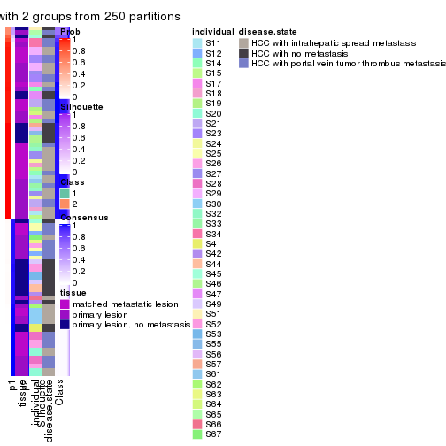
consensus_heatmap(res, k = 3)
consensus_heatmap(res, k = 4)
consensus_heatmap(res, k = 5)
consensus_heatmap(res, k = 6)
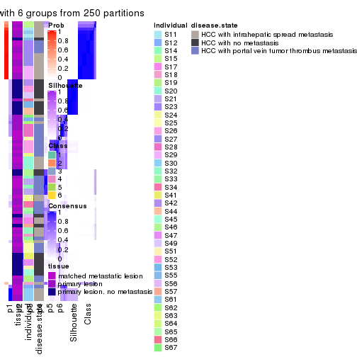
Heatmaps for the membership of samples in all partitions to see how consistent they are:
membership_heatmap(res, k = 2)
membership_heatmap(res, k = 3)
membership_heatmap(res, k = 4)
membership_heatmap(res, k = 5)
membership_heatmap(res, k = 6)
As soon as we have had the classes for columns, we can look for signatures which are significantly different between classes which can be candidate marks for certain classes. Following are the heatmaps for signatures.
Signature heatmaps where rows are scaled:
get_signatures(res, k = 2)
#> Error: The width or height of the raster image is zero, maybe you forget to turn off the
#> previous graphic device or it was corrupted. Run `dev.off()` to close it.

get_signatures(res, k = 3)
#> Error: The width or height of the raster image is zero, maybe you forget to turn off the
#> previous graphic device or it was corrupted. Run `dev.off()` to close it.

get_signatures(res, k = 4)
#> Error: The width or height of the raster image is zero, maybe you forget to turn off the
#> previous graphic device or it was corrupted. Run `dev.off()` to close it.

get_signatures(res, k = 5)
#> Error: The width or height of the raster image is zero, maybe you forget to turn off the
#> previous graphic device or it was corrupted. Run `dev.off()` to close it.

get_signatures(res, k = 6)
#> Error: The width or height of the raster image is zero, maybe you forget to turn off the
#> previous graphic device or it was corrupted. Run `dev.off()` to close it.

Signature heatmaps where rows are not scaled:
get_signatures(res, k = 2, scale_rows = FALSE)
#> Error: The width or height of the raster image is zero, maybe you forget to turn off the
#> previous graphic device or it was corrupted. Run `dev.off()` to close it.

get_signatures(res, k = 3, scale_rows = FALSE)
#> Error: The width or height of the raster image is zero, maybe you forget to turn off the
#> previous graphic device or it was corrupted. Run `dev.off()` to close it.

get_signatures(res, k = 4, scale_rows = FALSE)
#> Error: The width or height of the raster image is zero, maybe you forget to turn off the
#> previous graphic device or it was corrupted. Run `dev.off()` to close it.

get_signatures(res, k = 5, scale_rows = FALSE)
#> Error: The width or height of the raster image is zero, maybe you forget to turn off the
#> previous graphic device or it was corrupted. Run `dev.off()` to close it.

get_signatures(res, k = 6, scale_rows = FALSE)
#> Error: The width or height of the raster image is zero, maybe you forget to turn off the
#> previous graphic device or it was corrupted. Run `dev.off()` to close it.

Compare the overlap of signatures from different k:
compare_signatures(res)
get_signature() returns a data frame invisibly. TO get the list of signatures, the function
call should be assigned to a variable explicitly. In following code, if plot argument is set
to FALSE, no heatmap is plotted while only the differential analysis is performed.
# code only for demonstration
tb = get_signature(res, k = ..., plot = FALSE)
An example of the output of tb is:
#> which_row fdr mean_1 mean_2 scaled_mean_1 scaled_mean_2 km
#> 1 38 0.042760348 8.373488 9.131774 -0.5533452 0.5164555 1
#> 2 40 0.018707592 7.106213 8.469186 -0.6173731 0.5762149 1
#> 3 55 0.019134737 10.221463 11.207825 -0.6159697 0.5749050 1
#> 4 59 0.006059896 5.921854 7.869574 -0.6899429 0.6439467 1
#> 5 60 0.018055526 8.928898 10.211722 -0.6204761 0.5791110 1
#> 6 98 0.009384629 15.714769 14.887706 0.6635654 -0.6193277 2
...
The columns in tb are:
which_row: row indices corresponding to the input matrix.fdr: FDR for the differential test. mean_x: The mean value in group x.scaled_mean_x: The mean value in group x after rows are scaled.km: Row groups if k-means clustering is applied to rows.UMAP plot which shows how samples are separated.
dimension_reduction(res, k = 2, method = "UMAP")
dimension_reduction(res, k = 3, method = "UMAP")
dimension_reduction(res, k = 4, method = "UMAP")
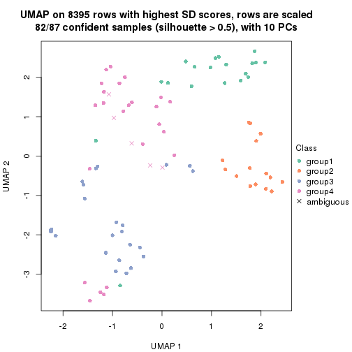
dimension_reduction(res, k = 5, method = "UMAP")
dimension_reduction(res, k = 6, method = "UMAP")
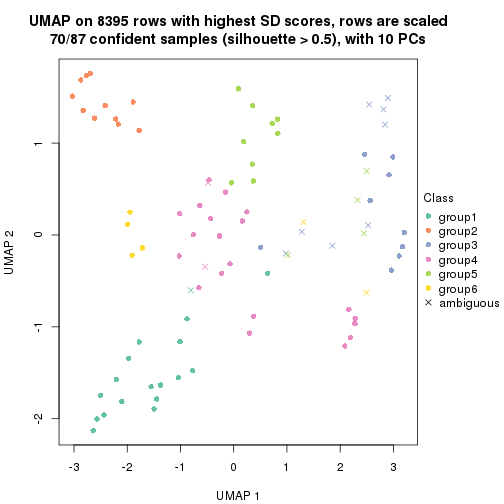
Following heatmap shows how subgroups are split when increasing k:
collect_classes(res)
Test correlation between subgroups and known annotations. If the known annotation is numeric, one-way ANOVA test is applied, and if the known annotation is discrete, chi-squared contingency table test is applied.
test_to_known_factors(res)
#> n tissue(p) individual(p) disease.state(p) k
#> SD:skmeans 85 2.19e-01 2.21e-05 1.14e-01 2
#> SD:skmeans 68 6.58e-01 1.84e-07 1.09e-01 3
#> SD:skmeans 82 2.35e-03 9.30e-12 6.62e-06 4
#> SD:skmeans 81 2.29e-05 3.51e-15 1.49e-07 5
#> SD:skmeans 70 1.93e-05 2.26e-15 1.49e-07 6
If matrix rows can be associated to genes, consider to use GO_Enrichment(res,
...) to perform function enrichment for the signature genes.
The object with results only for a single top-value method and a single partition method can be extracted as:
res = res_list["SD", "pam"]
# you can also extract it by
# res = res_list["SD:pam"]
A summary of res and all the functions that can be applied to it:
res
#> A 'ConsensusPartition' object with k = 2, 3, 4, 5, 6.
#> On a matrix with 8395 rows and 87 columns.
#> Top rows (840, 1680, 2519, 3358, 4198) are extracted by 'SD' method.
#> Subgroups are detected by 'pam' method.
#> Performed in total 1250 partitions by row resampling.
#> Best k for subgroups seems to be 3.
#>
#> Following methods can be applied to this 'ConsensusPartition' object:
#> [1] "cola_report" "collect_classes" "collect_plots"
#> [4] "collect_stats" "colnames" "compare_signatures"
#> [7] "consensus_heatmap" "dimension_reduction" "functional_enrichment"
#> [10] "get_anno_col" "get_anno" "get_classes"
#> [13] "get_consensus" "get_matrix" "get_membership"
#> [16] "get_param" "get_signatures" "get_stats"
#> [19] "is_best_k" "is_stable_k" "membership_heatmap"
#> [22] "ncol" "nrow" "plot_ecdf"
#> [25] "rownames" "select_partition_number" "show"
#> [28] "suggest_best_k" "test_to_known_factors"
collect_plots() function collects all the plots made from res for all k (number of partitions)
into one single page to provide an easy and fast comparison between different k.
collect_plots(res)
The plots are:
k and the heatmap of
predicted classes for each k.k.k.k.All the plots in panels can be made by individual functions and they are plotted later in this section.
select_partition_number() produces several plots showing different
statistics for choosing “optimized” k. There are following statistics:
k;k, the area increased is defined as \(A_k - A_{k-1}\).The detailed explanations of these statistics can be found in the cola vignette.
Generally speaking, lower PAC score, higher mean silhouette score or higher
concordance corresponds to better partition. Rand index and Jaccard index
measure how similar the current partition is compared to partition with k-1.
If they are too similar, we won't accept k is better than k-1.
select_partition_number(res)
The numeric values for all these statistics can be obtained by get_stats().
get_stats(res)
#> k 1-PAC mean_silhouette concordance area_increased Rand Jaccard
#> 2 2 0.366 0.415 0.748 0.4321 0.495 0.495
#> 3 3 0.883 0.865 0.943 0.4941 0.642 0.405
#> 4 4 0.850 0.833 0.929 0.0941 0.933 0.814
#> 5 5 0.789 0.708 0.880 0.0470 0.936 0.795
#> 6 6 0.884 0.823 0.930 0.0478 0.959 0.844
suggest_best_k() suggests the best \(k\) based on these statistics. The rules are as follows:
NA.suggest_best_k(res)
#> [1] 3
Following shows the table of the partitions (You need to click the show/hide
code output link to see it). The membership matrix (columns with name p*)
is inferred by
clue::cl_consensus()
function with the SE method. Basically the value in the membership matrix
represents the probability to belong to a certain group. The finall class
label for an item is determined with the group with highest probability it
belongs to.
In get_classes() function, the entropy is calculated from the membership
matrix and the silhouette score is calculated from the consensus matrix.
cbind(get_classes(res, k = 2), get_membership(res, k = 2))
#> class entropy silhouette p1 p2
#> GSM5316 2 0.0000 0.6382 0.000 1.000
#> GSM5319 1 0.9909 0.0930 0.556 0.444
#> GSM5321 2 0.9933 0.2999 0.452 0.548
#> GSM5323 2 0.0000 0.6382 0.000 1.000
#> GSM5325 2 0.9983 0.2111 0.476 0.524
#> GSM5327 2 0.0000 0.6382 0.000 1.000
#> GSM5329 1 0.9795 0.1581 0.584 0.416
#> GSM5331 1 0.9209 0.2740 0.664 0.336
#> GSM5333 1 0.9775 0.1873 0.588 0.412
#> GSM5335 2 0.6712 0.5450 0.176 0.824
#> GSM5337 2 0.9850 0.3286 0.428 0.572
#> GSM5339 2 0.0000 0.6382 0.000 1.000
#> GSM5341 2 0.0000 0.6382 0.000 1.000
#> GSM5343 2 0.9933 0.2999 0.452 0.548
#> GSM5345 1 0.0000 0.6241 1.000 0.000
#> GSM5347 1 0.0000 0.6241 1.000 0.000
#> GSM5349 1 0.0000 0.6241 1.000 0.000
#> GSM5351 1 0.0000 0.6241 1.000 0.000
#> GSM5353 2 0.0000 0.6382 0.000 1.000
#> GSM5355 2 0.0000 0.6382 0.000 1.000
#> GSM5357 1 0.9815 0.1507 0.580 0.420
#> GSM5359 1 0.9909 0.0956 0.556 0.444
#> GSM5361 2 0.0000 0.6382 0.000 1.000
#> GSM5363 2 0.0000 0.6382 0.000 1.000
#> GSM5365 1 0.9944 0.0577 0.544 0.456
#> GSM5367 1 0.9954 0.0407 0.540 0.460
#> GSM5369 2 0.9933 0.2999 0.452 0.548
#> GSM5371 2 0.9933 0.2999 0.452 0.548
#> GSM5373 2 0.9933 0.2999 0.452 0.548
#> GSM5396 2 0.0000 0.6382 0.000 1.000
#> GSM5397 1 0.5519 0.5549 0.872 0.128
#> GSM5398 1 0.0000 0.6241 1.000 0.000
#> GSM5400 1 0.9996 -0.0907 0.512 0.488
#> GSM5399 1 0.9933 0.0737 0.548 0.452
#> GSM5401 2 0.2043 0.6145 0.032 0.968
#> GSM5402 1 0.9896 0.1043 0.560 0.440
#> GSM5317 2 0.0000 0.6382 0.000 1.000
#> GSM5318 1 0.9933 0.0737 0.548 0.452
#> GSM5320 2 0.9954 0.2726 0.460 0.540
#> GSM5322 2 0.0000 0.6382 0.000 1.000
#> GSM5324 2 0.9933 0.2999 0.452 0.548
#> GSM5326 2 0.9881 0.3220 0.436 0.564
#> GSM5328 1 0.0000 0.6241 1.000 0.000
#> GSM5330 1 0.4690 0.5386 0.900 0.100
#> GSM5332 1 0.9552 0.2289 0.624 0.376
#> GSM5334 1 0.9933 0.0737 0.548 0.452
#> GSM5336 1 0.9933 0.0737 0.548 0.452
#> GSM5338 2 0.0000 0.6382 0.000 1.000
#> GSM5340 2 0.0000 0.6382 0.000 1.000
#> GSM5342 2 0.9933 0.2999 0.452 0.548
#> GSM5344 1 0.0000 0.6241 1.000 0.000
#> GSM5346 1 0.9866 0.1639 0.568 0.432
#> GSM5348 1 0.0376 0.6220 0.996 0.004
#> GSM5350 1 0.0000 0.6241 1.000 0.000
#> GSM5352 2 0.0000 0.6382 0.000 1.000
#> GSM5354 2 0.0000 0.6382 0.000 1.000
#> GSM5356 1 0.0000 0.6241 1.000 0.000
#> GSM5358 1 0.0000 0.6241 1.000 0.000
#> GSM5360 2 0.0000 0.6382 0.000 1.000
#> GSM5362 2 0.0000 0.6382 0.000 1.000
#> GSM5364 1 0.9977 -0.0144 0.528 0.472
#> GSM5366 1 0.9977 -0.0144 0.528 0.472
#> GSM5368 2 0.9909 0.3119 0.444 0.556
#> GSM5370 2 0.9933 0.2999 0.452 0.548
#> GSM5372 1 0.9933 0.0737 0.548 0.452
#> GSM5374 1 0.0000 0.6241 1.000 0.000
#> GSM5375 1 0.0000 0.6241 1.000 0.000
#> GSM5376 1 0.9933 0.0737 0.548 0.452
#> GSM5377 1 0.9933 0.0737 0.548 0.452
#> GSM5378 2 0.9909 0.3119 0.444 0.556
#> GSM5379 2 0.9866 0.3265 0.432 0.568
#> GSM5380 1 0.0376 0.6235 0.996 0.004
#> GSM5381 1 0.0000 0.6241 1.000 0.000
#> GSM5382 2 0.9933 0.2999 0.452 0.548
#> GSM5383 2 0.9933 0.2999 0.452 0.548
#> GSM5384 1 0.0376 0.6234 0.996 0.004
#> GSM5385 1 0.0938 0.6210 0.988 0.012
#> GSM5386 2 0.8861 0.4458 0.304 0.696
#> GSM5387 2 0.1414 0.6309 0.020 0.980
#> GSM5392 1 0.0000 0.6241 1.000 0.000
#> GSM5388 1 0.4562 0.5786 0.904 0.096
#> GSM5389 1 0.2778 0.6058 0.952 0.048
#> GSM5390 1 0.9087 0.3501 0.676 0.324
#> GSM5391 1 0.9552 0.2444 0.624 0.376
#> GSM5393 2 0.0000 0.6382 0.000 1.000
#> GSM5394 2 0.9933 0.2999 0.452 0.548
#> GSM5395 2 0.9866 0.3265 0.432 0.568
cbind(get_classes(res, k = 3), get_membership(res, k = 3))
#> class entropy silhouette p1 p2 p3
#> GSM5316 2 0.0000 0.97444 0.000 1.000 0.000
#> GSM5319 1 0.1289 0.91952 0.968 0.000 0.032
#> GSM5321 1 0.0000 0.93718 1.000 0.000 0.000
#> GSM5323 2 0.0000 0.97444 0.000 1.000 0.000
#> GSM5325 1 0.0000 0.93718 1.000 0.000 0.000
#> GSM5327 2 0.0747 0.96026 0.016 0.984 0.000
#> GSM5329 1 0.2448 0.88058 0.924 0.000 0.076
#> GSM5331 3 0.0000 0.89101 0.000 0.000 1.000
#> GSM5333 3 0.0000 0.89101 0.000 0.000 1.000
#> GSM5335 1 0.5465 0.58223 0.712 0.288 0.000
#> GSM5337 1 0.1031 0.92490 0.976 0.024 0.000
#> GSM5339 2 0.0000 0.97444 0.000 1.000 0.000
#> GSM5341 2 0.0000 0.97444 0.000 1.000 0.000
#> GSM5343 1 0.0000 0.93718 1.000 0.000 0.000
#> GSM5345 3 0.1753 0.89117 0.048 0.000 0.952
#> GSM5347 3 0.1753 0.89117 0.048 0.000 0.952
#> GSM5349 3 0.0424 0.89231 0.008 0.000 0.992
#> GSM5351 3 0.0000 0.89101 0.000 0.000 1.000
#> GSM5353 2 0.0000 0.97444 0.000 1.000 0.000
#> GSM5355 2 0.0000 0.97444 0.000 1.000 0.000
#> GSM5357 1 0.3192 0.86556 0.888 0.000 0.112
#> GSM5359 1 0.1964 0.90772 0.944 0.000 0.056
#> GSM5361 2 0.0000 0.97444 0.000 1.000 0.000
#> GSM5363 2 0.0000 0.97444 0.000 1.000 0.000
#> GSM5365 1 0.0000 0.93718 1.000 0.000 0.000
#> GSM5367 1 0.0000 0.93718 1.000 0.000 0.000
#> GSM5369 1 0.0000 0.93718 1.000 0.000 0.000
#> GSM5371 1 0.0000 0.93718 1.000 0.000 0.000
#> GSM5373 1 0.0000 0.93718 1.000 0.000 0.000
#> GSM5396 2 0.0000 0.97444 0.000 1.000 0.000
#> GSM5397 3 0.6309 0.00693 0.496 0.000 0.504
#> GSM5398 3 0.1753 0.89117 0.048 0.000 0.952
#> GSM5400 1 0.0000 0.93718 1.000 0.000 0.000
#> GSM5399 1 0.0000 0.93718 1.000 0.000 0.000
#> GSM5401 2 0.0424 0.96748 0.008 0.992 0.000
#> GSM5402 1 0.1529 0.91323 0.960 0.000 0.040
#> GSM5317 2 0.0000 0.97444 0.000 1.000 0.000
#> GSM5318 1 0.0000 0.93718 1.000 0.000 0.000
#> GSM5320 1 0.0000 0.93718 1.000 0.000 0.000
#> GSM5322 2 0.0000 0.97444 0.000 1.000 0.000
#> GSM5324 1 0.0000 0.93718 1.000 0.000 0.000
#> GSM5326 1 0.1643 0.91094 0.956 0.044 0.000
#> GSM5328 3 0.6204 0.33863 0.424 0.000 0.576
#> GSM5330 3 0.0000 0.89101 0.000 0.000 1.000
#> GSM5332 3 0.0000 0.89101 0.000 0.000 1.000
#> GSM5334 1 0.2711 0.86549 0.912 0.000 0.088
#> GSM5336 1 0.0237 0.93562 0.996 0.000 0.004
#> GSM5338 2 0.0000 0.97444 0.000 1.000 0.000
#> GSM5340 2 0.0000 0.97444 0.000 1.000 0.000
#> GSM5342 1 0.0000 0.93718 1.000 0.000 0.000
#> GSM5344 3 0.1753 0.89117 0.048 0.000 0.952
#> GSM5346 3 0.1753 0.89117 0.048 0.000 0.952
#> GSM5348 3 0.0000 0.89101 0.000 0.000 1.000
#> GSM5350 3 0.0000 0.89101 0.000 0.000 1.000
#> GSM5352 2 0.0000 0.97444 0.000 1.000 0.000
#> GSM5354 2 0.0000 0.97444 0.000 1.000 0.000
#> GSM5356 3 0.0592 0.88934 0.012 0.000 0.988
#> GSM5358 3 0.0000 0.89101 0.000 0.000 1.000
#> GSM5360 2 0.0000 0.97444 0.000 1.000 0.000
#> GSM5362 2 0.0000 0.97444 0.000 1.000 0.000
#> GSM5364 1 0.1643 0.91365 0.956 0.000 0.044
#> GSM5366 1 0.0892 0.92831 0.980 0.000 0.020
#> GSM5368 1 0.0424 0.93396 0.992 0.008 0.000
#> GSM5370 1 0.0000 0.93718 1.000 0.000 0.000
#> GSM5372 1 0.0000 0.93718 1.000 0.000 0.000
#> GSM5374 3 0.0000 0.89101 0.000 0.000 1.000
#> GSM5375 3 0.0892 0.89300 0.020 0.000 0.980
#> GSM5376 1 0.0000 0.93718 1.000 0.000 0.000
#> GSM5377 1 0.0000 0.93718 1.000 0.000 0.000
#> GSM5378 1 0.1753 0.91072 0.952 0.000 0.048
#> GSM5379 1 0.5901 0.75122 0.776 0.176 0.048
#> GSM5380 3 0.5948 0.48932 0.360 0.000 0.640
#> GSM5381 3 0.1753 0.89117 0.048 0.000 0.952
#> GSM5382 1 0.0000 0.93718 1.000 0.000 0.000
#> GSM5383 1 0.0000 0.93718 1.000 0.000 0.000
#> GSM5384 3 0.1964 0.88794 0.056 0.000 0.944
#> GSM5385 3 0.2165 0.88328 0.064 0.000 0.936
#> GSM5386 2 0.6126 0.26753 0.400 0.600 0.000
#> GSM5387 2 0.0892 0.95478 0.020 0.980 0.000
#> GSM5392 3 0.1753 0.89117 0.048 0.000 0.952
#> GSM5388 1 0.6267 0.04079 0.548 0.000 0.452
#> GSM5389 3 0.6309 0.09584 0.500 0.000 0.500
#> GSM5390 1 0.9003 0.42939 0.560 0.240 0.200
#> GSM5391 1 0.5012 0.74372 0.788 0.008 0.204
#> GSM5393 2 0.0000 0.97444 0.000 1.000 0.000
#> GSM5394 1 0.0000 0.93718 1.000 0.000 0.000
#> GSM5395 1 0.1860 0.90512 0.948 0.052 0.000
cbind(get_classes(res, k = 4), get_membership(res, k = 4))
#> class entropy silhouette p1 p2 p3 p4
#> GSM5316 1 0.0000 0.97498 1.000 0.000 0.000 0.000
#> GSM5319 4 0.1022 0.90236 0.000 0.000 0.032 0.968
#> GSM5321 4 0.0000 0.91947 0.000 0.000 0.000 1.000
#> GSM5323 1 0.0000 0.97498 1.000 0.000 0.000 0.000
#> GSM5325 4 0.0000 0.91947 0.000 0.000 0.000 1.000
#> GSM5327 1 0.0707 0.94665 0.980 0.000 0.000 0.020
#> GSM5329 4 0.2149 0.86036 0.000 0.000 0.088 0.912
#> GSM5331 3 0.3975 0.70615 0.000 0.240 0.760 0.000
#> GSM5333 3 0.3975 0.70615 0.000 0.240 0.760 0.000
#> GSM5335 4 0.4222 0.57441 0.272 0.000 0.000 0.728
#> GSM5337 4 0.0817 0.90505 0.024 0.000 0.000 0.976
#> GSM5339 1 0.0000 0.97498 1.000 0.000 0.000 0.000
#> GSM5341 1 0.0000 0.97498 1.000 0.000 0.000 0.000
#> GSM5343 4 0.0000 0.91947 0.000 0.000 0.000 1.000
#> GSM5345 3 0.0000 0.84654 0.000 0.000 1.000 0.000
#> GSM5347 3 0.0000 0.84654 0.000 0.000 1.000 0.000
#> GSM5349 3 0.0000 0.84654 0.000 0.000 1.000 0.000
#> GSM5351 3 0.3975 0.70615 0.000 0.240 0.760 0.000
#> GSM5353 1 0.0000 0.97498 1.000 0.000 0.000 0.000
#> GSM5355 1 0.0000 0.97498 1.000 0.000 0.000 0.000
#> GSM5357 4 0.3975 0.70007 0.000 0.240 0.000 0.760
#> GSM5359 4 0.3975 0.70007 0.000 0.240 0.000 0.760
#> GSM5361 1 0.0000 0.97498 1.000 0.000 0.000 0.000
#> GSM5363 1 0.0000 0.97498 1.000 0.000 0.000 0.000
#> GSM5365 4 0.0000 0.91947 0.000 0.000 0.000 1.000
#> GSM5367 4 0.0000 0.91947 0.000 0.000 0.000 1.000
#> GSM5369 4 0.0000 0.91947 0.000 0.000 0.000 1.000
#> GSM5371 4 0.0000 0.91947 0.000 0.000 0.000 1.000
#> GSM5373 4 0.0000 0.91947 0.000 0.000 0.000 1.000
#> GSM5396 1 0.0000 0.97498 1.000 0.000 0.000 0.000
#> GSM5397 4 0.7583 0.15325 0.000 0.240 0.280 0.480
#> GSM5398 3 0.0000 0.84654 0.000 0.000 1.000 0.000
#> GSM5400 4 0.0000 0.91947 0.000 0.000 0.000 1.000
#> GSM5399 4 0.0000 0.91947 0.000 0.000 0.000 1.000
#> GSM5401 1 0.5125 0.24529 0.604 0.388 0.000 0.008
#> GSM5402 4 0.1389 0.89311 0.000 0.000 0.048 0.952
#> GSM5317 1 0.0000 0.97498 1.000 0.000 0.000 0.000
#> GSM5318 4 0.2530 0.84448 0.000 0.112 0.000 0.888
#> GSM5320 4 0.0000 0.91947 0.000 0.000 0.000 1.000
#> GSM5322 1 0.0000 0.97498 1.000 0.000 0.000 0.000
#> GSM5324 4 0.0000 0.91947 0.000 0.000 0.000 1.000
#> GSM5326 4 0.0000 0.91947 0.000 0.000 0.000 1.000
#> GSM5328 3 0.4776 0.35874 0.000 0.000 0.624 0.376
#> GSM5330 3 0.0469 0.84365 0.000 0.012 0.988 0.000
#> GSM5332 3 0.3356 0.75700 0.000 0.176 0.824 0.000
#> GSM5334 4 0.2149 0.85157 0.000 0.000 0.088 0.912
#> GSM5336 4 0.0188 0.91800 0.000 0.000 0.004 0.996
#> GSM5338 1 0.0000 0.97498 1.000 0.000 0.000 0.000
#> GSM5340 1 0.0000 0.97498 1.000 0.000 0.000 0.000
#> GSM5342 4 0.0000 0.91947 0.000 0.000 0.000 1.000
#> GSM5344 3 0.0000 0.84654 0.000 0.000 1.000 0.000
#> GSM5346 3 0.0000 0.84654 0.000 0.000 1.000 0.000
#> GSM5348 3 0.0188 0.84593 0.000 0.004 0.996 0.000
#> GSM5350 3 0.2704 0.79026 0.000 0.124 0.876 0.000
#> GSM5352 1 0.0000 0.97498 1.000 0.000 0.000 0.000
#> GSM5354 1 0.0000 0.97498 1.000 0.000 0.000 0.000
#> GSM5356 3 0.4420 0.69883 0.000 0.240 0.748 0.012
#> GSM5358 3 0.3975 0.70615 0.000 0.240 0.760 0.000
#> GSM5360 1 0.0000 0.97498 1.000 0.000 0.000 0.000
#> GSM5362 1 0.0000 0.97498 1.000 0.000 0.000 0.000
#> GSM5364 4 0.2921 0.81740 0.000 0.140 0.000 0.860
#> GSM5366 4 0.0469 0.91493 0.000 0.012 0.000 0.988
#> GSM5368 4 0.0336 0.91574 0.008 0.000 0.000 0.992
#> GSM5370 4 0.0000 0.91947 0.000 0.000 0.000 1.000
#> GSM5372 4 0.0000 0.91947 0.000 0.000 0.000 1.000
#> GSM5374 3 0.0000 0.84654 0.000 0.000 1.000 0.000
#> GSM5375 3 0.0000 0.84654 0.000 0.000 1.000 0.000
#> GSM5376 4 0.2011 0.86834 0.000 0.080 0.000 0.920
#> GSM5377 4 0.3444 0.75766 0.000 0.184 0.000 0.816
#> GSM5378 2 0.0000 0.87468 0.000 1.000 0.000 0.000
#> GSM5379 2 0.0000 0.87468 0.000 1.000 0.000 0.000
#> GSM5380 3 0.4477 0.48612 0.000 0.000 0.688 0.312
#> GSM5381 3 0.0000 0.84654 0.000 0.000 1.000 0.000
#> GSM5382 4 0.0000 0.91947 0.000 0.000 0.000 1.000
#> GSM5383 4 0.0000 0.91947 0.000 0.000 0.000 1.000
#> GSM5384 3 0.0336 0.84309 0.000 0.000 0.992 0.008
#> GSM5385 3 0.0707 0.83733 0.000 0.000 0.980 0.020
#> GSM5386 2 0.3975 0.69340 0.240 0.760 0.000 0.000
#> GSM5387 2 0.3975 0.69340 0.240 0.760 0.000 0.000
#> GSM5392 3 0.0000 0.84654 0.000 0.000 1.000 0.000
#> GSM5388 4 0.5000 0.00259 0.000 0.000 0.500 0.500
#> GSM5389 3 0.4967 0.12319 0.000 0.000 0.548 0.452
#> GSM5390 2 0.0000 0.87468 0.000 1.000 0.000 0.000
#> GSM5391 2 0.0000 0.87468 0.000 1.000 0.000 0.000
#> GSM5393 1 0.0000 0.97498 1.000 0.000 0.000 0.000
#> GSM5394 4 0.0000 0.91947 0.000 0.000 0.000 1.000
#> GSM5395 4 0.0188 0.91801 0.004 0.000 0.000 0.996
cbind(get_classes(res, k = 5), get_membership(res, k = 5))
#> class entropy silhouette p1 p2 p3 p4 p5
#> GSM5316 1 0.0000 0.9742 1.000 0.000 0.000 0.000 0.000
#> GSM5319 4 0.4886 0.0678 0.000 0.000 0.032 0.596 0.372
#> GSM5321 4 0.0000 0.8650 0.000 0.000 0.000 1.000 0.000
#> GSM5323 1 0.0000 0.9742 1.000 0.000 0.000 0.000 0.000
#> GSM5325 4 0.0000 0.8650 0.000 0.000 0.000 1.000 0.000
#> GSM5327 1 0.0609 0.9474 0.980 0.000 0.000 0.020 0.000
#> GSM5329 4 0.1851 0.7725 0.000 0.000 0.088 0.912 0.000
#> GSM5331 5 0.6485 -0.1024 0.000 0.224 0.288 0.000 0.488
#> GSM5333 5 0.6485 -0.1024 0.000 0.224 0.288 0.000 0.488
#> GSM5335 4 0.3636 0.4033 0.272 0.000 0.000 0.728 0.000
#> GSM5337 4 0.0703 0.8416 0.024 0.000 0.000 0.976 0.000
#> GSM5339 1 0.0000 0.9742 1.000 0.000 0.000 0.000 0.000
#> GSM5341 1 0.0000 0.9742 1.000 0.000 0.000 0.000 0.000
#> GSM5343 4 0.0000 0.8650 0.000 0.000 0.000 1.000 0.000
#> GSM5345 3 0.0000 0.8129 0.000 0.000 1.000 0.000 0.000
#> GSM5347 3 0.0000 0.8129 0.000 0.000 1.000 0.000 0.000
#> GSM5349 3 0.0000 0.8129 0.000 0.000 1.000 0.000 0.000
#> GSM5351 3 0.3305 0.6353 0.000 0.224 0.776 0.000 0.000
#> GSM5353 1 0.0000 0.9742 1.000 0.000 0.000 0.000 0.000
#> GSM5355 1 0.0000 0.9742 1.000 0.000 0.000 0.000 0.000
#> GSM5357 4 0.3305 0.5787 0.000 0.224 0.000 0.776 0.000
#> GSM5359 4 0.3305 0.5787 0.000 0.224 0.000 0.776 0.000
#> GSM5361 1 0.0000 0.9742 1.000 0.000 0.000 0.000 0.000
#> GSM5363 1 0.0000 0.9742 1.000 0.000 0.000 0.000 0.000
#> GSM5365 5 0.4305 0.2438 0.000 0.000 0.000 0.488 0.512
#> GSM5367 5 0.4305 0.2438 0.000 0.000 0.000 0.488 0.512
#> GSM5369 4 0.0000 0.8650 0.000 0.000 0.000 1.000 0.000
#> GSM5371 4 0.0000 0.8650 0.000 0.000 0.000 1.000 0.000
#> GSM5373 4 0.0000 0.8650 0.000 0.000 0.000 1.000 0.000
#> GSM5396 1 0.0000 0.9742 1.000 0.000 0.000 0.000 0.000
#> GSM5397 5 0.6306 0.3009 0.000 0.016 0.100 0.404 0.480
#> GSM5398 3 0.0703 0.8033 0.000 0.000 0.976 0.000 0.024
#> GSM5400 4 0.0000 0.8650 0.000 0.000 0.000 1.000 0.000
#> GSM5399 4 0.0000 0.8650 0.000 0.000 0.000 1.000 0.000
#> GSM5401 1 0.4455 0.1930 0.588 0.404 0.000 0.008 0.000
#> GSM5402 4 0.4088 0.1850 0.000 0.000 0.000 0.632 0.368
#> GSM5317 1 0.0000 0.9742 1.000 0.000 0.000 0.000 0.000
#> GSM5318 4 0.3269 0.7158 0.000 0.056 0.000 0.848 0.096
#> GSM5320 4 0.0000 0.8650 0.000 0.000 0.000 1.000 0.000
#> GSM5322 1 0.0000 0.9742 1.000 0.000 0.000 0.000 0.000
#> GSM5324 4 0.0000 0.8650 0.000 0.000 0.000 1.000 0.000
#> GSM5326 4 0.0000 0.8650 0.000 0.000 0.000 1.000 0.000
#> GSM5328 3 0.4114 0.1911 0.000 0.000 0.624 0.376 0.000
#> GSM5330 3 0.4659 0.3026 0.000 0.012 0.500 0.000 0.488
#> GSM5332 5 0.6318 -0.1831 0.000 0.168 0.344 0.000 0.488
#> GSM5334 4 0.1851 0.7596 0.000 0.000 0.088 0.912 0.000
#> GSM5336 4 0.0162 0.8621 0.000 0.000 0.004 0.996 0.000
#> GSM5338 1 0.0000 0.9742 1.000 0.000 0.000 0.000 0.000
#> GSM5340 1 0.0000 0.9742 1.000 0.000 0.000 0.000 0.000
#> GSM5342 4 0.0000 0.8650 0.000 0.000 0.000 1.000 0.000
#> GSM5344 3 0.0000 0.8129 0.000 0.000 1.000 0.000 0.000
#> GSM5346 3 0.0000 0.8129 0.000 0.000 1.000 0.000 0.000
#> GSM5348 3 0.0162 0.8117 0.000 0.004 0.996 0.000 0.000
#> GSM5350 3 0.2329 0.7296 0.000 0.124 0.876 0.000 0.000
#> GSM5352 1 0.0000 0.9742 1.000 0.000 0.000 0.000 0.000
#> GSM5354 1 0.0000 0.9742 1.000 0.000 0.000 0.000 0.000
#> GSM5356 3 0.5951 0.4903 0.000 0.224 0.624 0.012 0.140
#> GSM5358 3 0.5886 0.4629 0.000 0.224 0.600 0.000 0.176
#> GSM5360 1 0.0000 0.9742 1.000 0.000 0.000 0.000 0.000
#> GSM5362 1 0.0000 0.9742 1.000 0.000 0.000 0.000 0.000
#> GSM5364 5 0.4305 0.2438 0.000 0.000 0.000 0.488 0.512
#> GSM5366 5 0.4305 0.2438 0.000 0.000 0.000 0.488 0.512
#> GSM5368 4 0.0290 0.8585 0.008 0.000 0.000 0.992 0.000
#> GSM5370 4 0.0000 0.8650 0.000 0.000 0.000 1.000 0.000
#> GSM5372 4 0.0000 0.8650 0.000 0.000 0.000 1.000 0.000
#> GSM5374 3 0.0000 0.8129 0.000 0.000 1.000 0.000 0.000
#> GSM5375 3 0.0000 0.8129 0.000 0.000 1.000 0.000 0.000
#> GSM5376 4 0.2511 0.7699 0.000 0.080 0.000 0.892 0.028
#> GSM5377 4 0.4134 0.5671 0.000 0.196 0.000 0.760 0.044
#> GSM5378 2 0.0510 0.8552 0.000 0.984 0.000 0.000 0.016
#> GSM5379 2 0.0510 0.8552 0.000 0.984 0.000 0.000 0.016
#> GSM5380 3 0.3857 0.3345 0.000 0.000 0.688 0.312 0.000
#> GSM5381 3 0.0000 0.8129 0.000 0.000 1.000 0.000 0.000
#> GSM5382 4 0.0000 0.8650 0.000 0.000 0.000 1.000 0.000
#> GSM5383 4 0.0000 0.8650 0.000 0.000 0.000 1.000 0.000
#> GSM5384 3 0.0290 0.8089 0.000 0.000 0.992 0.008 0.000
#> GSM5385 3 0.0609 0.8018 0.000 0.000 0.980 0.020 0.000
#> GSM5386 2 0.3305 0.7285 0.224 0.776 0.000 0.000 0.000
#> GSM5387 2 0.3305 0.7285 0.224 0.776 0.000 0.000 0.000
#> GSM5392 3 0.0000 0.8129 0.000 0.000 1.000 0.000 0.000
#> GSM5388 4 0.4307 -0.0812 0.000 0.000 0.500 0.500 0.000
#> GSM5389 3 0.4278 0.0023 0.000 0.000 0.548 0.452 0.000
#> GSM5390 2 0.0000 0.8534 0.000 1.000 0.000 0.000 0.000
#> GSM5391 2 0.0000 0.8534 0.000 1.000 0.000 0.000 0.000
#> GSM5393 1 0.0000 0.9742 1.000 0.000 0.000 0.000 0.000
#> GSM5394 4 0.0000 0.8650 0.000 0.000 0.000 1.000 0.000
#> GSM5395 4 0.0162 0.8625 0.004 0.000 0.000 0.996 0.000
cbind(get_classes(res, k = 6), get_membership(res, k = 6))
#> class entropy silhouette p1 p2 p3 p4 p5 p6
#> GSM5316 1 0.0000 0.9985 1.000 0.000 0.000 0.000 0.000 0.000
#> GSM5319 4 0.4461 0.3617 0.000 0.000 0.000 0.564 0.032 0.404
#> GSM5321 4 0.0000 0.9138 0.000 0.000 0.000 1.000 0.000 0.000
#> GSM5323 1 0.0000 0.9985 1.000 0.000 0.000 0.000 0.000 0.000
#> GSM5325 4 0.0000 0.9138 0.000 0.000 0.000 1.000 0.000 0.000
#> GSM5327 1 0.0547 0.9719 0.980 0.000 0.000 0.020 0.000 0.000
#> GSM5329 4 0.1663 0.8518 0.000 0.000 0.000 0.912 0.088 0.000
#> GSM5331 3 0.0000 0.7213 0.000 0.000 1.000 0.000 0.000 0.000
#> GSM5333 3 0.0000 0.7213 0.000 0.000 1.000 0.000 0.000 0.000
#> GSM5335 4 0.3266 0.5718 0.272 0.000 0.000 0.728 0.000 0.000
#> GSM5337 4 0.0632 0.8977 0.024 0.000 0.000 0.976 0.000 0.000
#> GSM5339 1 0.0000 0.9985 1.000 0.000 0.000 0.000 0.000 0.000
#> GSM5341 1 0.0000 0.9985 1.000 0.000 0.000 0.000 0.000 0.000
#> GSM5343 4 0.0000 0.9138 0.000 0.000 0.000 1.000 0.000 0.000
#> GSM5345 5 0.0000 0.7958 0.000 0.000 0.000 0.000 1.000 0.000
#> GSM5347 5 0.0000 0.7958 0.000 0.000 0.000 0.000 1.000 0.000
#> GSM5349 5 0.0000 0.7958 0.000 0.000 0.000 0.000 1.000 0.000
#> GSM5351 5 0.3284 0.5604 0.000 0.032 0.168 0.000 0.800 0.000
#> GSM5353 1 0.0000 0.9985 1.000 0.000 0.000 0.000 0.000 0.000
#> GSM5355 1 0.0000 0.9985 1.000 0.000 0.000 0.000 0.000 0.000
#> GSM5357 4 0.3275 0.7886 0.000 0.032 0.140 0.820 0.008 0.000
#> GSM5359 4 0.3306 0.7888 0.000 0.032 0.140 0.820 0.004 0.004
#> GSM5361 1 0.0000 0.9985 1.000 0.000 0.000 0.000 0.000 0.000
#> GSM5363 1 0.0000 0.9985 1.000 0.000 0.000 0.000 0.000 0.000
#> GSM5365 6 0.0000 0.9942 0.000 0.000 0.000 0.000 0.000 1.000
#> GSM5367 6 0.0000 0.9942 0.000 0.000 0.000 0.000 0.000 1.000
#> GSM5369 4 0.0000 0.9138 0.000 0.000 0.000 1.000 0.000 0.000
#> GSM5371 4 0.0000 0.9138 0.000 0.000 0.000 1.000 0.000 0.000
#> GSM5373 4 0.0000 0.9138 0.000 0.000 0.000 1.000 0.000 0.000
#> GSM5396 1 0.0000 0.9985 1.000 0.000 0.000 0.000 0.000 0.000
#> GSM5397 6 0.0363 0.9767 0.000 0.000 0.000 0.012 0.000 0.988
#> GSM5398 5 0.2092 0.6743 0.000 0.000 0.124 0.000 0.876 0.000
#> GSM5400 4 0.0000 0.9138 0.000 0.000 0.000 1.000 0.000 0.000
#> GSM5399 4 0.0000 0.9138 0.000 0.000 0.000 1.000 0.000 0.000
#> GSM5401 2 0.3984 0.3613 0.396 0.596 0.000 0.008 0.000 0.000
#> GSM5402 4 0.3756 0.4330 0.000 0.000 0.000 0.600 0.000 0.400
#> GSM5317 1 0.0000 0.9985 1.000 0.000 0.000 0.000 0.000 0.000
#> GSM5318 4 0.2795 0.8255 0.000 0.000 0.044 0.856 0.000 0.100
#> GSM5320 4 0.0000 0.9138 0.000 0.000 0.000 1.000 0.000 0.000
#> GSM5322 1 0.0000 0.9985 1.000 0.000 0.000 0.000 0.000 0.000
#> GSM5324 4 0.0000 0.9138 0.000 0.000 0.000 1.000 0.000 0.000
#> GSM5326 4 0.0000 0.9138 0.000 0.000 0.000 1.000 0.000 0.000
#> GSM5328 5 0.3695 0.3891 0.000 0.000 0.000 0.376 0.624 0.000
#> GSM5330 3 0.2178 0.6653 0.000 0.000 0.868 0.000 0.132 0.000
#> GSM5332 3 0.0458 0.7243 0.000 0.000 0.984 0.000 0.016 0.000
#> GSM5334 4 0.1663 0.8408 0.000 0.000 0.000 0.912 0.088 0.000
#> GSM5336 4 0.0146 0.9118 0.000 0.000 0.000 0.996 0.004 0.000
#> GSM5338 1 0.0000 0.9985 1.000 0.000 0.000 0.000 0.000 0.000
#> GSM5340 1 0.0000 0.9985 1.000 0.000 0.000 0.000 0.000 0.000
#> GSM5342 4 0.0000 0.9138 0.000 0.000 0.000 1.000 0.000 0.000
#> GSM5344 5 0.0000 0.7958 0.000 0.000 0.000 0.000 1.000 0.000
#> GSM5346 5 0.0000 0.7958 0.000 0.000 0.000 0.000 1.000 0.000
#> GSM5348 5 0.0146 0.7936 0.000 0.000 0.004 0.000 0.996 0.000
#> GSM5350 5 0.2361 0.6837 0.000 0.028 0.088 0.000 0.884 0.000
#> GSM5352 1 0.0000 0.9985 1.000 0.000 0.000 0.000 0.000 0.000
#> GSM5354 1 0.0000 0.9985 1.000 0.000 0.000 0.000 0.000 0.000
#> GSM5356 3 0.4792 0.4410 0.000 0.032 0.548 0.012 0.408 0.000
#> GSM5358 3 0.4356 0.5346 0.000 0.032 0.608 0.000 0.360 0.000
#> GSM5360 1 0.0000 0.9985 1.000 0.000 0.000 0.000 0.000 0.000
#> GSM5362 1 0.0000 0.9985 1.000 0.000 0.000 0.000 0.000 0.000
#> GSM5364 6 0.0000 0.9942 0.000 0.000 0.000 0.000 0.000 1.000
#> GSM5366 6 0.0000 0.9942 0.000 0.000 0.000 0.000 0.000 1.000
#> GSM5368 4 0.0260 0.9093 0.008 0.000 0.000 0.992 0.000 0.000
#> GSM5370 4 0.0000 0.9138 0.000 0.000 0.000 1.000 0.000 0.000
#> GSM5372 4 0.0000 0.9138 0.000 0.000 0.000 1.000 0.000 0.000
#> GSM5374 5 0.0000 0.7958 0.000 0.000 0.000 0.000 1.000 0.000
#> GSM5375 5 0.0000 0.7958 0.000 0.000 0.000 0.000 1.000 0.000
#> GSM5376 4 0.3290 0.6866 0.000 0.252 0.000 0.744 0.000 0.004
#> GSM5377 4 0.3934 0.4614 0.000 0.376 0.000 0.616 0.000 0.008
#> GSM5378 2 0.0000 0.8803 0.000 1.000 0.000 0.000 0.000 0.000
#> GSM5379 2 0.0000 0.8803 0.000 1.000 0.000 0.000 0.000 0.000
#> GSM5380 5 0.3464 0.4564 0.000 0.000 0.000 0.312 0.688 0.000
#> GSM5381 5 0.0000 0.7958 0.000 0.000 0.000 0.000 1.000 0.000
#> GSM5382 4 0.0000 0.9138 0.000 0.000 0.000 1.000 0.000 0.000
#> GSM5383 4 0.0000 0.9138 0.000 0.000 0.000 1.000 0.000 0.000
#> GSM5384 5 0.0260 0.7917 0.000 0.000 0.000 0.008 0.992 0.000
#> GSM5385 5 0.0547 0.7839 0.000 0.000 0.000 0.020 0.980 0.000
#> GSM5386 2 0.0790 0.8695 0.032 0.968 0.000 0.000 0.000 0.000
#> GSM5387 2 0.0790 0.8695 0.032 0.968 0.000 0.000 0.000 0.000
#> GSM5392 5 0.0000 0.7958 0.000 0.000 0.000 0.000 1.000 0.000
#> GSM5388 5 0.3869 0.0341 0.000 0.000 0.000 0.500 0.500 0.000
#> GSM5389 5 0.3843 0.2056 0.000 0.000 0.000 0.452 0.548 0.000
#> GSM5390 2 0.0000 0.8803 0.000 1.000 0.000 0.000 0.000 0.000
#> GSM5391 2 0.0000 0.8803 0.000 1.000 0.000 0.000 0.000 0.000
#> GSM5393 1 0.0000 0.9985 1.000 0.000 0.000 0.000 0.000 0.000
#> GSM5394 4 0.0000 0.9138 0.000 0.000 0.000 1.000 0.000 0.000
#> GSM5395 4 0.0146 0.9121 0.004 0.000 0.000 0.996 0.000 0.000
Heatmaps for the consensus matrix. It visualizes the probability of two samples to be in a same group.
consensus_heatmap(res, k = 2)
consensus_heatmap(res, k = 3)
consensus_heatmap(res, k = 4)
consensus_heatmap(res, k = 5)
consensus_heatmap(res, k = 6)
Heatmaps for the membership of samples in all partitions to see how consistent they are:
membership_heatmap(res, k = 2)
membership_heatmap(res, k = 3)
membership_heatmap(res, k = 4)
membership_heatmap(res, k = 5)
membership_heatmap(res, k = 6)
As soon as we have had the classes for columns, we can look for signatures which are significantly different between classes which can be candidate marks for certain classes. Following are the heatmaps for signatures.
Signature heatmaps where rows are scaled:
get_signatures(res, k = 2)
#> Error: The width or height of the raster image is zero, maybe you forget to turn off the
#> previous graphic device or it was corrupted. Run `dev.off()` to close it.

get_signatures(res, k = 3)
#> Error: The width or height of the raster image is zero, maybe you forget to turn off the
#> previous graphic device or it was corrupted. Run `dev.off()` to close it.

get_signatures(res, k = 4)
#> Error: The width or height of the raster image is zero, maybe you forget to turn off the
#> previous graphic device or it was corrupted. Run `dev.off()` to close it.

get_signatures(res, k = 5)
#> Error: The width or height of the raster image is zero, maybe you forget to turn off the
#> previous graphic device or it was corrupted. Run `dev.off()` to close it.

get_signatures(res, k = 6)
#> Error: The width or height of the raster image is zero, maybe you forget to turn off the
#> previous graphic device or it was corrupted. Run `dev.off()` to close it.

Signature heatmaps where rows are not scaled:
get_signatures(res, k = 2, scale_rows = FALSE)
#> Error: The width or height of the raster image is zero, maybe you forget to turn off the
#> previous graphic device or it was corrupted. Run `dev.off()` to close it.

get_signatures(res, k = 3, scale_rows = FALSE)
#> Error: The width or height of the raster image is zero, maybe you forget to turn off the
#> previous graphic device or it was corrupted. Run `dev.off()` to close it.

get_signatures(res, k = 4, scale_rows = FALSE)
#> Error: The width or height of the raster image is zero, maybe you forget to turn off the
#> previous graphic device or it was corrupted. Run `dev.off()` to close it.

get_signatures(res, k = 5, scale_rows = FALSE)
#> Error: The width or height of the raster image is zero, maybe you forget to turn off the
#> previous graphic device or it was corrupted. Run `dev.off()` to close it.

get_signatures(res, k = 6, scale_rows = FALSE)
#> Error: The width or height of the raster image is zero, maybe you forget to turn off the
#> previous graphic device or it was corrupted. Run `dev.off()` to close it.

Compare the overlap of signatures from different k:
compare_signatures(res)
get_signature() returns a data frame invisibly. TO get the list of signatures, the function
call should be assigned to a variable explicitly. In following code, if plot argument is set
to FALSE, no heatmap is plotted while only the differential analysis is performed.
# code only for demonstration
tb = get_signature(res, k = ..., plot = FALSE)
An example of the output of tb is:
#> which_row fdr mean_1 mean_2 scaled_mean_1 scaled_mean_2 km
#> 1 38 0.042760348 8.373488 9.131774 -0.5533452 0.5164555 1
#> 2 40 0.018707592 7.106213 8.469186 -0.6173731 0.5762149 1
#> 3 55 0.019134737 10.221463 11.207825 -0.6159697 0.5749050 1
#> 4 59 0.006059896 5.921854 7.869574 -0.6899429 0.6439467 1
#> 5 60 0.018055526 8.928898 10.211722 -0.6204761 0.5791110 1
#> 6 98 0.009384629 15.714769 14.887706 0.6635654 -0.6193277 2
...
The columns in tb are:
which_row: row indices corresponding to the input matrix.fdr: FDR for the differential test. mean_x: The mean value in group x.scaled_mean_x: The mean value in group x after rows are scaled.km: Row groups if k-means clustering is applied to rows.UMAP plot which shows how samples are separated.
dimension_reduction(res, k = 2, method = "UMAP")
dimension_reduction(res, k = 3, method = "UMAP")
dimension_reduction(res, k = 4, method = "UMAP")
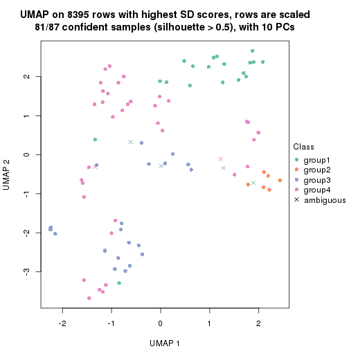
dimension_reduction(res, k = 5, method = "UMAP")
dimension_reduction(res, k = 6, method = "UMAP")
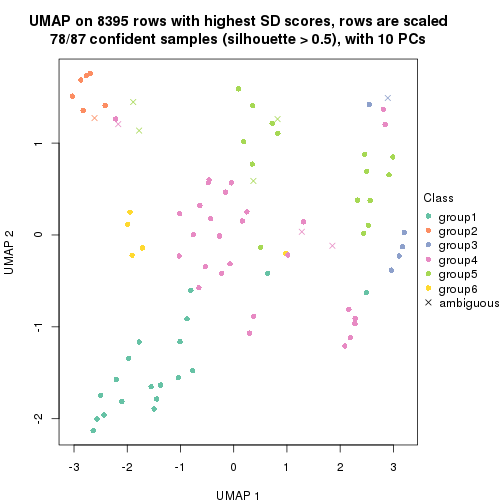
Following heatmap shows how subgroups are split when increasing k:
collect_classes(res)
Test correlation between subgroups and known annotations. If the known annotation is numeric, one-way ANOVA test is applied, and if the known annotation is discrete, chi-squared contingency table test is applied.
test_to_known_factors(res)
#> n tissue(p) individual(p) disease.state(p) k
#> SD:pam 44 0.038365 3.55e-03 2.43e-04 2
#> SD:pam 80 0.537385 3.19e-07 1.12e-02 3
#> SD:pam 81 0.000383 3.04e-11 5.57e-06 4
#> SD:pam 68 0.001208 6.31e-09 6.68e-07 5
#> SD:pam 78 0.000880 1.01e-15 5.34e-08 6
If matrix rows can be associated to genes, consider to use GO_Enrichment(res,
...) to perform function enrichment for the signature genes.
The object with results only for a single top-value method and a single partition method can be extracted as:
res = res_list["SD", "mclust"]
# you can also extract it by
# res = res_list["SD:mclust"]
A summary of res and all the functions that can be applied to it:
res
#> A 'ConsensusPartition' object with k = 2, 3, 4, 5, 6.
#> On a matrix with 8395 rows and 87 columns.
#> Top rows (840, 1680, 2519, 3358, 4198) are extracted by 'SD' method.
#> Subgroups are detected by 'mclust' method.
#> Performed in total 1250 partitions by row resampling.
#> Best k for subgroups seems to be 5.
#>
#> Following methods can be applied to this 'ConsensusPartition' object:
#> [1] "cola_report" "collect_classes" "collect_plots"
#> [4] "collect_stats" "colnames" "compare_signatures"
#> [7] "consensus_heatmap" "dimension_reduction" "functional_enrichment"
#> [10] "get_anno_col" "get_anno" "get_classes"
#> [13] "get_consensus" "get_matrix" "get_membership"
#> [16] "get_param" "get_signatures" "get_stats"
#> [19] "is_best_k" "is_stable_k" "membership_heatmap"
#> [22] "ncol" "nrow" "plot_ecdf"
#> [25] "rownames" "select_partition_number" "show"
#> [28] "suggest_best_k" "test_to_known_factors"
collect_plots() function collects all the plots made from res for all k (number of partitions)
into one single page to provide an easy and fast comparison between different k.
collect_plots(res)
The plots are:
k and the heatmap of
predicted classes for each k.k.k.k.All the plots in panels can be made by individual functions and they are plotted later in this section.
select_partition_number() produces several plots showing different
statistics for choosing “optimized” k. There are following statistics:
k;k, the area increased is defined as \(A_k - A_{k-1}\).The detailed explanations of these statistics can be found in the cola vignette.
Generally speaking, lower PAC score, higher mean silhouette score or higher
concordance corresponds to better partition. Rand index and Jaccard index
measure how similar the current partition is compared to partition with k-1.
If they are too similar, we won't accept k is better than k-1.
select_partition_number(res)
The numeric values for all these statistics can be obtained by get_stats().
get_stats(res)
#> k 1-PAC mean_silhouette concordance area_increased Rand Jaccard
#> 2 2 0.202 0.413 0.766 0.4176 0.586 0.586
#> 3 3 0.190 0.438 0.689 0.4271 0.678 0.493
#> 4 4 0.368 0.351 0.612 0.1355 0.636 0.319
#> 5 5 0.490 0.371 0.695 0.1239 0.809 0.501
#> 6 6 0.603 0.524 0.674 0.0559 0.783 0.336
suggest_best_k() suggests the best \(k\) based on these statistics. The rules are as follows:
NA.suggest_best_k(res)
#> [1] 5
Following shows the table of the partitions (You need to click the show/hide
code output link to see it). The membership matrix (columns with name p*)
is inferred by
clue::cl_consensus()
function with the SE method. Basically the value in the membership matrix
represents the probability to belong to a certain group. The finall class
label for an item is determined with the group with highest probability it
belongs to.
In get_classes() function, the entropy is calculated from the membership
matrix and the silhouette score is calculated from the consensus matrix.
cbind(get_classes(res, k = 2), get_membership(res, k = 2))
#> class entropy silhouette p1 p2
#> GSM5316 2 0.4161 0.5611 0.084 0.916
#> GSM5319 1 0.9522 0.2147 0.628 0.372
#> GSM5321 2 0.9815 0.0792 0.420 0.580
#> GSM5323 2 0.9795 0.1094 0.416 0.584
#> GSM5325 1 0.4022 0.6390 0.920 0.080
#> GSM5327 2 0.8207 0.4029 0.256 0.744
#> GSM5329 1 0.0376 0.6396 0.996 0.004
#> GSM5331 1 0.9552 0.2048 0.624 0.376
#> GSM5333 1 0.9552 0.2048 0.624 0.376
#> GSM5335 2 0.5408 0.5396 0.124 0.876
#> GSM5337 2 0.5737 0.5340 0.136 0.864
#> GSM5339 2 0.9661 0.3771 0.392 0.608
#> GSM5341 2 0.9661 0.3771 0.392 0.608
#> GSM5343 1 0.3733 0.6394 0.928 0.072
#> GSM5345 1 0.9491 0.2116 0.632 0.368
#> GSM5347 1 0.9491 0.2116 0.632 0.368
#> GSM5349 1 0.9998 0.0814 0.508 0.492
#> GSM5351 1 0.9998 0.0814 0.508 0.492
#> GSM5353 2 0.2948 0.5543 0.052 0.948
#> GSM5355 2 0.4022 0.5580 0.080 0.920
#> GSM5357 1 0.0376 0.6365 0.996 0.004
#> GSM5359 1 0.0376 0.6365 0.996 0.004
#> GSM5361 2 0.9608 0.3788 0.384 0.616
#> GSM5363 2 0.9358 0.4101 0.352 0.648
#> GSM5365 1 0.3274 0.6429 0.940 0.060
#> GSM5367 1 0.3733 0.6416 0.928 0.072
#> GSM5369 1 0.7674 0.5342 0.776 0.224
#> GSM5371 1 0.7376 0.5530 0.792 0.208
#> GSM5373 1 0.6887 0.5714 0.816 0.184
#> GSM5396 1 0.9954 -0.0725 0.540 0.460
#> GSM5397 1 0.0000 0.6388 1.000 0.000
#> GSM5398 1 0.9998 0.0814 0.508 0.492
#> GSM5400 1 0.0376 0.6396 0.996 0.004
#> GSM5399 1 0.5629 0.6159 0.868 0.132
#> GSM5401 1 0.8207 0.4976 0.744 0.256
#> GSM5402 1 0.5519 0.6169 0.872 0.128
#> GSM5317 2 0.5737 0.5339 0.136 0.864
#> GSM5318 1 0.0672 0.6413 0.992 0.008
#> GSM5320 2 0.9850 0.0759 0.428 0.572
#> GSM5322 2 0.9580 0.1914 0.380 0.620
#> GSM5324 1 0.5946 0.6106 0.856 0.144
#> GSM5326 1 1.0000 -0.2080 0.500 0.500
#> GSM5328 1 0.0376 0.6396 0.996 0.004
#> GSM5330 1 0.9552 0.2048 0.624 0.376
#> GSM5332 1 0.9552 0.2048 0.624 0.376
#> GSM5334 2 0.9996 -0.0878 0.488 0.512
#> GSM5336 2 0.9996 -0.0878 0.488 0.512
#> GSM5338 2 0.9661 0.3771 0.392 0.608
#> GSM5340 2 0.9661 0.3771 0.392 0.608
#> GSM5342 1 0.2043 0.6432 0.968 0.032
#> GSM5344 1 0.9491 0.2116 0.632 0.368
#> GSM5346 1 0.9491 0.2116 0.632 0.368
#> GSM5348 1 0.9998 0.0814 0.508 0.492
#> GSM5350 1 0.9998 0.0814 0.508 0.492
#> GSM5352 2 0.2778 0.5523 0.048 0.952
#> GSM5354 2 0.2778 0.5523 0.048 0.952
#> GSM5356 1 0.0000 0.6388 1.000 0.000
#> GSM5358 1 0.0000 0.6388 1.000 0.000
#> GSM5360 2 0.9661 0.3771 0.392 0.608
#> GSM5362 2 0.9686 0.3730 0.396 0.604
#> GSM5364 1 0.4022 0.6403 0.920 0.080
#> GSM5366 1 0.4562 0.6356 0.904 0.096
#> GSM5368 2 0.9998 0.1803 0.492 0.508
#> GSM5370 1 0.5059 0.6297 0.888 0.112
#> GSM5372 1 0.4690 0.6322 0.900 0.100
#> GSM5374 1 0.0000 0.6388 1.000 0.000
#> GSM5375 1 0.0000 0.6388 1.000 0.000
#> GSM5376 1 0.8081 0.5089 0.752 0.248
#> GSM5377 1 0.8081 0.5089 0.752 0.248
#> GSM5378 1 0.8327 0.4947 0.736 0.264
#> GSM5379 1 0.8327 0.4947 0.736 0.264
#> GSM5380 1 0.0376 0.6396 0.996 0.004
#> GSM5381 1 0.0376 0.6396 0.996 0.004
#> GSM5382 1 0.9998 -0.1904 0.508 0.492
#> GSM5383 1 1.0000 -0.1993 0.504 0.496
#> GSM5384 1 0.0376 0.6396 0.996 0.004
#> GSM5385 1 0.0672 0.6408 0.992 0.008
#> GSM5386 1 0.8144 0.5038 0.748 0.252
#> GSM5387 1 0.8267 0.5009 0.740 0.260
#> GSM5392 1 0.0376 0.6396 0.996 0.004
#> GSM5388 1 0.6247 0.6030 0.844 0.156
#> GSM5389 1 0.6048 0.6075 0.852 0.148
#> GSM5390 1 0.8327 0.4947 0.736 0.264
#> GSM5391 1 0.8327 0.4947 0.736 0.264
#> GSM5393 2 0.4022 0.5597 0.080 0.920
#> GSM5394 1 0.9000 0.3502 0.684 0.316
#> GSM5395 1 0.9963 -0.0856 0.536 0.464
cbind(get_classes(res, k = 3), get_membership(res, k = 3))
#> class entropy silhouette p1 p2 p3
#> GSM5316 1 0.688 0.56203 0.648 0.032 0.320
#> GSM5319 3 0.627 0.06765 0.000 0.452 0.548
#> GSM5321 2 0.790 0.31869 0.080 0.608 0.312
#> GSM5323 1 0.967 0.35138 0.464 0.260 0.276
#> GSM5325 3 0.268 0.60374 0.040 0.028 0.932
#> GSM5327 1 0.951 0.44865 0.464 0.200 0.336
#> GSM5329 3 0.303 0.62178 0.012 0.076 0.912
#> GSM5331 2 0.583 0.26377 0.000 0.660 0.340
#> GSM5333 2 0.583 0.26377 0.000 0.660 0.340
#> GSM5335 3 0.940 -0.31271 0.408 0.172 0.420
#> GSM5337 3 0.943 -0.29537 0.400 0.176 0.424
#> GSM5339 1 0.216 0.75199 0.936 0.000 0.064
#> GSM5341 1 0.216 0.75199 0.936 0.000 0.064
#> GSM5343 3 0.458 0.53602 0.184 0.004 0.812
#> GSM5345 3 0.628 0.00501 0.000 0.460 0.540
#> GSM5347 3 0.627 0.01316 0.000 0.456 0.544
#> GSM5349 2 0.445 0.49867 0.000 0.808 0.192
#> GSM5351 2 0.394 0.51319 0.000 0.844 0.156
#> GSM5353 1 0.631 0.69987 0.772 0.128 0.100
#> GSM5355 1 0.547 0.69302 0.812 0.128 0.060
#> GSM5357 3 0.327 0.60308 0.000 0.116 0.884
#> GSM5359 3 0.355 0.59287 0.000 0.132 0.868
#> GSM5361 1 0.207 0.74995 0.940 0.000 0.060
#> GSM5363 1 0.230 0.75115 0.936 0.004 0.060
#> GSM5365 3 0.614 0.33436 0.000 0.404 0.596
#> GSM5367 3 0.614 0.33436 0.000 0.404 0.596
#> GSM5369 3 0.589 0.50130 0.220 0.028 0.752
#> GSM5371 3 0.524 0.54348 0.168 0.028 0.804
#> GSM5373 3 0.677 0.53808 0.044 0.264 0.692
#> GSM5396 3 0.716 0.14328 0.400 0.028 0.572
#> GSM5397 3 0.388 0.57727 0.000 0.152 0.848
#> GSM5398 2 0.497 0.47023 0.000 0.764 0.236
#> GSM5400 3 0.263 0.61700 0.000 0.084 0.916
#> GSM5399 3 0.642 0.30331 0.020 0.304 0.676
#> GSM5401 2 0.790 0.41169 0.324 0.600 0.076
#> GSM5402 2 0.631 -0.05830 0.000 0.500 0.500
#> GSM5317 1 0.923 0.41464 0.464 0.156 0.380
#> GSM5318 3 0.304 0.61840 0.000 0.104 0.896
#> GSM5320 1 0.992 0.00866 0.396 0.308 0.296
#> GSM5322 1 0.957 0.42615 0.476 0.232 0.292
#> GSM5324 3 0.268 0.60374 0.040 0.028 0.932
#> GSM5326 3 0.697 0.28112 0.356 0.028 0.616
#> GSM5328 3 0.312 0.62159 0.012 0.080 0.908
#> GSM5330 2 0.583 0.26377 0.000 0.660 0.340
#> GSM5332 2 0.583 0.26377 0.000 0.660 0.340
#> GSM5334 2 0.724 0.34006 0.044 0.628 0.328
#> GSM5336 2 0.724 0.34006 0.044 0.628 0.328
#> GSM5338 1 0.216 0.75199 0.936 0.000 0.064
#> GSM5340 1 0.216 0.75199 0.936 0.000 0.064
#> GSM5342 3 0.389 0.61640 0.064 0.048 0.888
#> GSM5344 2 0.630 0.06736 0.000 0.524 0.476
#> GSM5346 2 0.630 0.05666 0.000 0.516 0.484
#> GSM5348 2 0.375 0.51794 0.000 0.856 0.144
#> GSM5350 2 0.375 0.51794 0.000 0.856 0.144
#> GSM5352 1 0.653 0.69995 0.760 0.128 0.112
#> GSM5354 1 0.673 0.70104 0.748 0.124 0.128
#> GSM5356 3 0.514 0.49310 0.000 0.252 0.748
#> GSM5358 3 0.514 0.49310 0.000 0.252 0.748
#> GSM5360 1 0.196 0.74822 0.944 0.000 0.056
#> GSM5362 1 0.207 0.74995 0.940 0.000 0.060
#> GSM5364 3 0.619 0.30040 0.000 0.420 0.580
#> GSM5366 3 0.621 0.28049 0.000 0.428 0.572
#> GSM5368 3 0.716 0.15895 0.400 0.028 0.572
#> GSM5370 3 0.279 0.60239 0.044 0.028 0.928
#> GSM5372 3 0.482 0.61313 0.040 0.120 0.840
#> GSM5374 3 0.510 0.49564 0.000 0.248 0.752
#> GSM5375 3 0.412 0.56348 0.000 0.168 0.832
#> GSM5376 2 0.797 0.41262 0.324 0.596 0.080
#> GSM5377 2 0.797 0.41262 0.324 0.596 0.080
#> GSM5378 2 0.760 0.41117 0.344 0.600 0.056
#> GSM5379 2 0.685 0.39492 0.380 0.600 0.020
#> GSM5380 3 0.319 0.61131 0.000 0.112 0.888
#> GSM5381 3 0.263 0.61700 0.000 0.084 0.916
#> GSM5382 3 0.699 0.27223 0.360 0.028 0.612
#> GSM5383 3 0.714 0.17125 0.396 0.028 0.576
#> GSM5384 3 0.300 0.62271 0.016 0.068 0.916
#> GSM5385 3 0.300 0.62271 0.016 0.068 0.916
#> GSM5386 2 0.790 0.41169 0.324 0.600 0.076
#> GSM5387 2 0.767 0.41203 0.340 0.600 0.060
#> GSM5392 3 0.470 0.54000 0.000 0.212 0.788
#> GSM5388 2 0.902 0.45524 0.252 0.556 0.192
#> GSM5389 2 0.875 0.37416 0.148 0.568 0.284
#> GSM5390 2 0.685 0.39492 0.380 0.600 0.020
#> GSM5391 2 0.685 0.39492 0.380 0.600 0.020
#> GSM5393 1 0.362 0.73460 0.864 0.000 0.136
#> GSM5394 3 0.506 0.54925 0.156 0.028 0.816
#> GSM5395 3 0.713 0.16610 0.392 0.028 0.580
cbind(get_classes(res, k = 4), get_membership(res, k = 4))
#> class entropy silhouette p1 p2 p3 p4
#> GSM5316 1 0.5116 0.60839 0.764 0.000 0.108 NA
#> GSM5319 3 0.2094 0.46631 0.024 0.024 0.940 NA
#> GSM5321 3 0.9002 0.06687 0.300 0.128 0.444 NA
#> GSM5323 1 0.3720 0.59494 0.860 0.016 0.100 NA
#> GSM5325 2 0.9685 -0.14772 0.304 0.320 0.236 NA
#> GSM5327 1 0.4789 0.52535 0.740 0.004 0.236 NA
#> GSM5329 3 0.7486 0.39461 0.016 0.328 0.524 NA
#> GSM5331 3 0.2909 0.39522 0.000 0.020 0.888 NA
#> GSM5333 3 0.2909 0.39522 0.000 0.020 0.888 NA
#> GSM5335 1 0.3448 0.57300 0.828 0.000 0.168 NA
#> GSM5337 1 0.3908 0.54599 0.784 0.000 0.212 NA
#> GSM5339 1 0.5147 0.54359 0.536 0.004 0.000 NA
#> GSM5341 1 0.5147 0.54359 0.536 0.004 0.000 NA
#> GSM5343 1 0.9391 -0.00669 0.416 0.192 0.256 NA
#> GSM5345 3 0.1004 0.46612 0.024 0.000 0.972 NA
#> GSM5347 3 0.1004 0.46612 0.024 0.000 0.972 NA
#> GSM5349 3 0.4368 0.25892 0.004 0.244 0.748 NA
#> GSM5351 3 0.4103 0.25011 0.000 0.256 0.744 NA
#> GSM5353 1 0.6235 0.57145 0.524 0.000 0.056 NA
#> GSM5355 1 0.6265 0.56389 0.500 0.000 0.056 NA
#> GSM5357 3 0.5057 0.45047 0.000 0.340 0.648 NA
#> GSM5359 3 0.5286 0.45306 0.004 0.328 0.652 NA
#> GSM5361 1 0.4961 0.54787 0.552 0.000 0.000 NA
#> GSM5363 1 0.4955 0.54932 0.556 0.000 0.000 NA
#> GSM5365 2 0.6868 -0.10975 0.020 0.484 0.440 NA
#> GSM5367 2 0.7153 -0.07497 0.020 0.464 0.440 NA
#> GSM5369 1 0.8189 0.31681 0.584 0.148 0.128 NA
#> GSM5371 1 0.8452 0.26834 0.556 0.172 0.132 NA
#> GSM5373 2 0.8999 -0.14046 0.204 0.388 0.336 NA
#> GSM5396 1 0.5186 0.55797 0.780 0.076 0.128 NA
#> GSM5397 3 0.5944 0.44830 0.016 0.328 0.628 NA
#> GSM5398 3 0.4442 0.26487 0.004 0.236 0.752 NA
#> GSM5400 3 0.8486 0.33926 0.088 0.276 0.508 NA
#> GSM5399 2 0.8908 -0.18768 0.104 0.432 0.328 NA
#> GSM5401 2 0.7219 0.43049 0.004 0.544 0.152 NA
#> GSM5402 2 0.6060 -0.17952 0.012 0.536 0.428 NA
#> GSM5317 1 0.3325 0.59384 0.872 0.012 0.104 NA
#> GSM5318 3 0.6456 0.43759 0.028 0.340 0.596 NA
#> GSM5320 1 0.8922 0.18189 0.468 0.132 0.276 NA
#> GSM5322 1 0.2684 0.60251 0.912 0.016 0.060 NA
#> GSM5324 1 0.9646 -0.16883 0.332 0.308 0.220 NA
#> GSM5326 1 0.5626 0.53725 0.756 0.116 0.108 NA
#> GSM5328 3 0.7266 0.39688 0.008 0.328 0.532 NA
#> GSM5330 3 0.2909 0.39522 0.000 0.020 0.888 NA
#> GSM5332 3 0.2909 0.39522 0.000 0.020 0.888 NA
#> GSM5334 3 0.8696 0.11593 0.236 0.128 0.512 NA
#> GSM5336 3 0.8696 0.11458 0.236 0.128 0.512 NA
#> GSM5338 1 0.5277 0.54304 0.532 0.008 0.000 NA
#> GSM5340 1 0.4977 0.54352 0.540 0.000 0.000 NA
#> GSM5342 2 0.9677 -0.20015 0.244 0.316 0.304 NA
#> GSM5344 3 0.0817 0.46585 0.024 0.000 0.976 NA
#> GSM5346 3 0.1004 0.46612 0.024 0.000 0.972 NA
#> GSM5348 3 0.4134 0.24511 0.000 0.260 0.740 NA
#> GSM5350 3 0.4134 0.24511 0.000 0.260 0.740 NA
#> GSM5352 1 0.6235 0.57145 0.524 0.000 0.056 NA
#> GSM5354 1 0.6510 0.58059 0.540 0.000 0.080 NA
#> GSM5356 3 0.4730 0.44057 0.000 0.364 0.636 NA
#> GSM5358 3 0.4730 0.44057 0.000 0.364 0.636 NA
#> GSM5360 1 0.5277 0.54304 0.532 0.008 0.000 NA
#> GSM5362 1 0.5132 0.54790 0.548 0.004 0.000 NA
#> GSM5364 2 0.7201 -0.05611 0.020 0.468 0.432 NA
#> GSM5366 2 0.7198 -0.04844 0.020 0.472 0.428 NA
#> GSM5368 1 0.4242 0.58061 0.836 0.036 0.108 NA
#> GSM5370 1 0.9549 -0.11802 0.380 0.264 0.220 NA
#> GSM5372 3 0.9571 0.17674 0.208 0.300 0.356 NA
#> GSM5374 3 0.4661 0.44589 0.000 0.348 0.652 NA
#> GSM5375 3 0.4661 0.44736 0.000 0.348 0.652 NA
#> GSM5376 2 0.8105 0.40968 0.024 0.484 0.204 NA
#> GSM5377 2 0.8030 0.41057 0.020 0.484 0.204 NA
#> GSM5378 2 0.5496 0.42372 0.000 0.652 0.036 NA
#> GSM5379 2 0.5130 0.41925 0.000 0.668 0.020 NA
#> GSM5380 3 0.7472 0.39674 0.028 0.332 0.536 NA
#> GSM5381 3 0.6907 0.41827 0.008 0.328 0.564 NA
#> GSM5382 1 0.5206 0.55812 0.788 0.096 0.092 NA
#> GSM5383 1 0.4914 0.56589 0.804 0.084 0.092 NA
#> GSM5384 3 0.8866 0.31398 0.100 0.328 0.436 NA
#> GSM5385 3 0.9407 0.23182 0.168 0.324 0.372 NA
#> GSM5386 2 0.7430 0.42949 0.012 0.544 0.152 NA
#> GSM5387 2 0.5614 0.42550 0.000 0.652 0.044 NA
#> GSM5392 3 0.5622 0.44761 0.024 0.328 0.640 NA
#> GSM5388 2 0.8203 0.17352 0.020 0.388 0.388 NA
#> GSM5389 2 0.7449 0.10886 0.008 0.468 0.388 NA
#> GSM5390 2 0.5130 0.41925 0.000 0.668 0.020 NA
#> GSM5391 2 0.5130 0.41925 0.000 0.668 0.020 NA
#> GSM5393 1 0.5148 0.60531 0.736 0.000 0.056 NA
#> GSM5394 1 0.6885 0.34445 0.632 0.224 0.128 NA
#> GSM5395 1 0.4912 0.56553 0.800 0.076 0.108 NA
cbind(get_classes(res, k = 5), get_membership(res, k = 5))
#> class entropy silhouette p1 p2 p3 p4 p5
#> GSM5316 1 0.4769 0.1009 0.544 0.004 0.000 0.440 0.012
#> GSM5319 3 0.1710 0.3502 0.000 0.004 0.940 0.040 0.016
#> GSM5321 3 0.8961 -0.1031 0.124 0.132 0.340 0.336 0.068
#> GSM5323 4 0.5241 0.1622 0.412 0.004 0.008 0.552 0.024
#> GSM5325 4 0.5618 0.2289 0.000 0.000 0.236 0.628 0.136
#> GSM5327 4 0.6430 0.3261 0.248 0.004 0.192 0.552 0.004
#> GSM5329 3 0.6336 -0.0880 0.000 0.000 0.488 0.340 0.172
#> GSM5331 3 0.3796 0.3202 0.000 0.000 0.700 0.000 0.300
#> GSM5333 3 0.3796 0.3202 0.000 0.000 0.700 0.000 0.300
#> GSM5335 4 0.5809 0.2459 0.384 0.000 0.084 0.528 0.004
#> GSM5337 4 0.6023 0.2362 0.384 0.004 0.072 0.528 0.012
#> GSM5339 1 0.2845 0.8432 0.876 0.020 0.000 0.096 0.008
#> GSM5341 1 0.2845 0.8432 0.876 0.020 0.000 0.096 0.008
#> GSM5343 4 0.4037 0.4989 0.028 0.000 0.176 0.784 0.012
#> GSM5345 3 0.0510 0.3660 0.000 0.000 0.984 0.016 0.000
#> GSM5347 3 0.0510 0.3660 0.000 0.000 0.984 0.016 0.000
#> GSM5349 3 0.3779 0.3359 0.000 0.124 0.816 0.004 0.056
#> GSM5351 3 0.4226 0.3260 0.000 0.140 0.776 0.000 0.084
#> GSM5353 1 0.1408 0.7932 0.948 0.000 0.000 0.044 0.008
#> GSM5355 1 0.0693 0.8000 0.980 0.000 0.000 0.012 0.008
#> GSM5357 3 0.5071 -0.3010 0.000 0.012 0.532 0.016 0.440
#> GSM5359 3 0.6019 -0.2332 0.000 0.008 0.528 0.096 0.368
#> GSM5361 1 0.2899 0.8428 0.872 0.020 0.000 0.100 0.008
#> GSM5363 1 0.2297 0.8348 0.912 0.020 0.000 0.060 0.008
#> GSM5365 5 0.5944 0.6229 0.000 0.092 0.280 0.020 0.608
#> GSM5367 5 0.5971 0.6245 0.000 0.096 0.276 0.020 0.608
#> GSM5369 4 0.1483 0.5699 0.028 0.000 0.008 0.952 0.012
#> GSM5371 4 0.1547 0.5707 0.032 0.000 0.016 0.948 0.004
#> GSM5373 5 0.8074 0.4593 0.004 0.116 0.220 0.220 0.440
#> GSM5396 4 0.3134 0.5275 0.132 0.004 0.004 0.848 0.012
#> GSM5397 3 0.5638 -0.2594 0.000 0.004 0.532 0.068 0.396
#> GSM5398 3 0.4042 0.3398 0.000 0.120 0.812 0.024 0.044
#> GSM5400 3 0.6467 -0.3558 0.004 0.016 0.448 0.100 0.432
#> GSM5399 4 0.7842 -0.1643 0.000 0.116 0.268 0.448 0.168
#> GSM5401 2 0.1661 0.8344 0.000 0.940 0.024 0.000 0.036
#> GSM5402 3 0.7123 -0.4081 0.000 0.120 0.416 0.056 0.408
#> GSM5317 4 0.6004 0.1956 0.400 0.000 0.060 0.516 0.024
#> GSM5318 3 0.5735 -0.2963 0.000 0.008 0.508 0.064 0.420
#> GSM5320 4 0.9141 0.2743 0.260 0.136 0.176 0.364 0.064
#> GSM5322 4 0.5002 0.1409 0.424 0.004 0.000 0.548 0.024
#> GSM5324 4 0.4444 0.4540 0.024 0.000 0.200 0.752 0.024
#> GSM5326 4 0.2621 0.5457 0.112 0.004 0.008 0.876 0.000
#> GSM5328 3 0.6498 -0.1006 0.000 0.000 0.484 0.292 0.224
#> GSM5330 3 0.3796 0.3202 0.000 0.000 0.700 0.000 0.300
#> GSM5332 3 0.3796 0.3202 0.000 0.000 0.700 0.000 0.300
#> GSM5334 3 0.8821 0.1088 0.120 0.124 0.428 0.252 0.076
#> GSM5336 3 0.8834 0.0984 0.120 0.124 0.424 0.256 0.076
#> GSM5338 1 0.2845 0.8432 0.876 0.020 0.000 0.096 0.008
#> GSM5340 1 0.2845 0.8432 0.876 0.020 0.000 0.096 0.008
#> GSM5342 4 0.5134 0.3188 0.020 0.000 0.280 0.664 0.036
#> GSM5344 3 0.1278 0.3645 0.000 0.004 0.960 0.016 0.020
#> GSM5346 3 0.1121 0.3660 0.004 0.004 0.968 0.016 0.008
#> GSM5348 3 0.4541 0.3131 0.000 0.172 0.744 0.000 0.084
#> GSM5350 3 0.4647 0.3125 0.000 0.172 0.736 0.000 0.092
#> GSM5352 1 0.2037 0.7826 0.920 0.004 0.000 0.064 0.012
#> GSM5354 1 0.2006 0.7754 0.916 0.000 0.000 0.072 0.012
#> GSM5356 5 0.5929 0.4165 0.000 0.104 0.344 0.004 0.548
#> GSM5358 5 0.5929 0.4165 0.000 0.104 0.344 0.004 0.548
#> GSM5360 1 0.2899 0.8402 0.872 0.020 0.000 0.100 0.008
#> GSM5362 1 0.2952 0.8405 0.868 0.020 0.000 0.104 0.008
#> GSM5364 5 0.6060 0.6219 0.000 0.120 0.244 0.020 0.616
#> GSM5366 5 0.6123 0.6203 0.000 0.124 0.248 0.020 0.608
#> GSM5368 4 0.2722 0.5417 0.120 0.004 0.008 0.868 0.000
#> GSM5370 4 0.6331 0.1372 0.004 0.004 0.204 0.572 0.216
#> GSM5372 5 0.7394 0.3743 0.004 0.024 0.312 0.256 0.404
#> GSM5374 5 0.5932 0.4030 0.000 0.088 0.368 0.008 0.536
#> GSM5375 3 0.5212 -0.2875 0.000 0.020 0.548 0.016 0.416
#> GSM5376 2 0.3689 0.7709 0.000 0.828 0.092 0.004 0.076
#> GSM5377 2 0.3634 0.7758 0.000 0.832 0.088 0.004 0.076
#> GSM5378 2 0.0000 0.8474 0.000 1.000 0.000 0.000 0.000
#> GSM5379 2 0.0290 0.8476 0.000 0.992 0.000 0.000 0.008
#> GSM5380 3 0.5926 -0.3137 0.000 0.016 0.496 0.064 0.424
#> GSM5381 3 0.6562 -0.1317 0.000 0.004 0.504 0.228 0.264
#> GSM5382 4 0.2445 0.5454 0.108 0.004 0.004 0.884 0.000
#> GSM5383 4 0.2548 0.5416 0.116 0.004 0.004 0.876 0.000
#> GSM5384 4 0.6260 -0.1581 0.000 0.000 0.372 0.476 0.152
#> GSM5385 4 0.6210 -0.1192 0.000 0.000 0.360 0.492 0.148
#> GSM5386 2 0.0771 0.8449 0.000 0.976 0.020 0.000 0.004
#> GSM5387 2 0.0000 0.8474 0.000 1.000 0.000 0.000 0.000
#> GSM5392 3 0.5720 -0.3266 0.000 0.028 0.536 0.036 0.400
#> GSM5388 2 0.6534 0.3808 0.000 0.544 0.236 0.012 0.208
#> GSM5389 2 0.6754 0.2485 0.000 0.500 0.228 0.012 0.260
#> GSM5390 2 0.0290 0.8476 0.000 0.992 0.000 0.000 0.008
#> GSM5391 2 0.0290 0.8476 0.000 0.992 0.000 0.000 0.008
#> GSM5393 1 0.4335 0.3815 0.664 0.004 0.000 0.324 0.008
#> GSM5394 4 0.6251 0.3813 0.104 0.008 0.012 0.576 0.300
#> GSM5395 4 0.2880 0.5379 0.120 0.004 0.004 0.864 0.008
cbind(get_classes(res, k = 6), get_membership(res, k = 6))
#> class entropy silhouette p1 p2 p3 p4 p5 p6
#> GSM5316 1 0.5316 0.3087 0.480 0.000 0.000 0.104 0.000 0.416
#> GSM5319 3 0.4198 0.4910 0.000 0.000 0.716 0.052 0.228 0.004
#> GSM5321 6 0.4087 0.4189 0.000 0.024 0.128 0.016 0.040 0.792
#> GSM5323 6 0.5257 0.4740 0.172 0.000 0.000 0.172 0.012 0.644
#> GSM5325 5 0.6677 0.0476 0.000 0.000 0.032 0.340 0.364 0.264
#> GSM5327 6 0.4907 0.4780 0.100 0.000 0.008 0.192 0.008 0.692
#> GSM5329 5 0.6652 0.4853 0.000 0.004 0.312 0.296 0.368 0.020
#> GSM5331 3 0.4060 0.6091 0.000 0.000 0.684 0.284 0.032 0.000
#> GSM5333 3 0.3990 0.6114 0.000 0.000 0.688 0.284 0.028 0.000
#> GSM5335 6 0.5215 0.4070 0.144 0.000 0.008 0.164 0.012 0.672
#> GSM5337 6 0.4847 0.4234 0.148 0.000 0.000 0.156 0.008 0.688
#> GSM5339 1 0.0000 0.7480 1.000 0.000 0.000 0.000 0.000 0.000
#> GSM5341 1 0.0000 0.7480 1.000 0.000 0.000 0.000 0.000 0.000
#> GSM5343 4 0.7052 0.1895 0.012 0.000 0.048 0.420 0.256 0.264
#> GSM5345 3 0.3053 0.5699 0.000 0.000 0.812 0.020 0.168 0.000
#> GSM5347 3 0.3088 0.5651 0.000 0.000 0.808 0.020 0.172 0.000
#> GSM5349 3 0.5789 0.5937 0.000 0.072 0.608 0.004 0.252 0.064
#> GSM5351 3 0.7224 0.5999 0.000 0.096 0.516 0.112 0.228 0.048
#> GSM5353 1 0.3923 0.5922 0.620 0.000 0.000 0.008 0.000 0.372
#> GSM5355 1 0.3601 0.6418 0.684 0.000 0.000 0.004 0.000 0.312
#> GSM5357 5 0.4614 0.5064 0.000 0.004 0.416 0.032 0.548 0.000
#> GSM5359 5 0.4822 0.5094 0.000 0.004 0.400 0.048 0.548 0.000
#> GSM5361 1 0.0291 0.7474 0.992 0.000 0.000 0.004 0.000 0.004
#> GSM5363 1 0.2805 0.7026 0.812 0.000 0.000 0.004 0.000 0.184
#> GSM5365 5 0.1261 0.4349 0.000 0.028 0.008 0.004 0.956 0.004
#> GSM5367 5 0.1413 0.4319 0.000 0.036 0.008 0.004 0.948 0.004
#> GSM5369 4 0.4844 0.6489 0.020 0.000 0.000 0.620 0.040 0.320
#> GSM5371 4 0.5601 0.5855 0.020 0.000 0.008 0.580 0.084 0.308
#> GSM5373 5 0.4750 0.4744 0.016 0.016 0.020 0.128 0.760 0.060
#> GSM5396 4 0.5885 0.6852 0.156 0.000 0.000 0.528 0.016 0.300
#> GSM5397 5 0.4508 0.5064 0.000 0.000 0.396 0.036 0.568 0.000
#> GSM5398 3 0.5166 0.5850 0.000 0.016 0.664 0.008 0.224 0.088
#> GSM5400 5 0.5448 0.5341 0.000 0.004 0.360 0.080 0.544 0.012
#> GSM5399 5 0.7604 0.2855 0.000 0.024 0.100 0.188 0.388 0.300
#> GSM5401 2 0.2278 0.8579 0.000 0.868 0.000 0.000 0.128 0.004
#> GSM5402 5 0.4814 0.3869 0.000 0.032 0.152 0.024 0.740 0.052
#> GSM5317 6 0.4961 0.4706 0.152 0.000 0.000 0.144 0.016 0.688
#> GSM5318 5 0.4968 0.5223 0.000 0.004 0.336 0.072 0.588 0.000
#> GSM5320 6 0.3914 0.4089 0.000 0.036 0.036 0.068 0.036 0.824
#> GSM5322 6 0.4959 0.4747 0.136 0.000 0.000 0.184 0.008 0.672
#> GSM5324 5 0.6460 -0.0297 0.000 0.000 0.016 0.344 0.360 0.280
#> GSM5326 4 0.5517 0.7419 0.128 0.000 0.000 0.560 0.008 0.304
#> GSM5328 5 0.6139 0.5196 0.000 0.004 0.376 0.164 0.444 0.012
#> GSM5330 3 0.3917 0.6128 0.000 0.000 0.692 0.284 0.024 0.000
#> GSM5332 3 0.3917 0.6128 0.000 0.000 0.692 0.284 0.024 0.000
#> GSM5334 6 0.4864 0.3065 0.000 0.000 0.260 0.020 0.060 0.660
#> GSM5336 6 0.4762 0.3168 0.000 0.000 0.256 0.016 0.060 0.668
#> GSM5338 1 0.0000 0.7480 1.000 0.000 0.000 0.000 0.000 0.000
#> GSM5340 1 0.0000 0.7480 1.000 0.000 0.000 0.000 0.000 0.000
#> GSM5342 5 0.6961 0.1148 0.000 0.000 0.060 0.336 0.360 0.244
#> GSM5344 3 0.3213 0.5542 0.000 0.000 0.808 0.032 0.160 0.000
#> GSM5346 3 0.4051 0.5586 0.000 0.000 0.760 0.012 0.172 0.056
#> GSM5348 3 0.7228 0.5802 0.000 0.096 0.496 0.096 0.264 0.048
#> GSM5350 3 0.7317 0.5960 0.000 0.096 0.500 0.128 0.232 0.044
#> GSM5352 1 0.4057 0.5737 0.600 0.000 0.000 0.012 0.000 0.388
#> GSM5354 1 0.4047 0.5746 0.604 0.000 0.000 0.012 0.000 0.384
#> GSM5356 5 0.6387 0.3134 0.000 0.044 0.208 0.232 0.516 0.000
#> GSM5358 5 0.6387 0.3134 0.000 0.044 0.208 0.232 0.516 0.000
#> GSM5360 1 0.0000 0.7480 1.000 0.000 0.000 0.000 0.000 0.000
#> GSM5362 1 0.0146 0.7481 0.996 0.000 0.000 0.000 0.000 0.004
#> GSM5364 5 0.1606 0.4162 0.000 0.056 0.008 0.000 0.932 0.004
#> GSM5366 5 0.1542 0.4196 0.000 0.052 0.008 0.000 0.936 0.004
#> GSM5368 4 0.5614 0.7141 0.156 0.000 0.000 0.540 0.004 0.300
#> GSM5370 5 0.6289 0.2234 0.000 0.000 0.016 0.252 0.456 0.276
#> GSM5372 5 0.6385 0.3912 0.000 0.004 0.048 0.172 0.540 0.236
#> GSM5374 5 0.5751 0.3271 0.000 0.000 0.256 0.232 0.512 0.000
#> GSM5375 5 0.5420 0.4116 0.000 0.000 0.392 0.104 0.500 0.004
#> GSM5376 2 0.4041 0.7719 0.000 0.736 0.008 0.000 0.216 0.040
#> GSM5377 2 0.4041 0.7719 0.000 0.736 0.008 0.000 0.216 0.040
#> GSM5378 2 0.0260 0.9024 0.000 0.992 0.000 0.000 0.008 0.000
#> GSM5379 2 0.0146 0.9001 0.000 0.996 0.000 0.000 0.004 0.000
#> GSM5380 5 0.5385 0.5296 0.000 0.004 0.372 0.080 0.536 0.008
#> GSM5381 5 0.5489 0.5226 0.000 0.008 0.396 0.100 0.496 0.000
#> GSM5382 4 0.5505 0.7347 0.136 0.000 0.000 0.548 0.004 0.312
#> GSM5383 4 0.5474 0.7388 0.132 0.000 0.000 0.552 0.004 0.312
#> GSM5384 5 0.6700 0.4842 0.000 0.004 0.280 0.320 0.372 0.024
#> GSM5385 5 0.6700 0.4842 0.000 0.004 0.280 0.320 0.372 0.024
#> GSM5386 2 0.1765 0.8842 0.000 0.904 0.000 0.000 0.096 0.000
#> GSM5387 2 0.0260 0.9024 0.000 0.992 0.000 0.000 0.008 0.000
#> GSM5392 5 0.5486 0.4960 0.000 0.004 0.384 0.040 0.532 0.040
#> GSM5388 5 0.5142 -0.2379 0.000 0.352 0.020 0.004 0.580 0.044
#> GSM5389 5 0.4656 0.1851 0.000 0.220 0.020 0.004 0.704 0.052
#> GSM5390 2 0.0458 0.9013 0.000 0.984 0.000 0.000 0.016 0.000
#> GSM5391 2 0.0458 0.9013 0.000 0.984 0.000 0.000 0.016 0.000
#> GSM5393 1 0.5065 0.4180 0.524 0.000 0.000 0.080 0.000 0.396
#> GSM5394 5 0.7359 -0.3773 0.112 0.000 0.000 0.244 0.336 0.308
#> GSM5395 4 0.5644 0.7312 0.108 0.000 0.000 0.552 0.020 0.320
Heatmaps for the consensus matrix. It visualizes the probability of two samples to be in a same group.
consensus_heatmap(res, k = 2)
consensus_heatmap(res, k = 3)
consensus_heatmap(res, k = 4)
consensus_heatmap(res, k = 5)
consensus_heatmap(res, k = 6)
Heatmaps for the membership of samples in all partitions to see how consistent they are:
membership_heatmap(res, k = 2)
membership_heatmap(res, k = 3)
membership_heatmap(res, k = 4)
membership_heatmap(res, k = 5)
membership_heatmap(res, k = 6)
As soon as we have had the classes for columns, we can look for signatures which are significantly different between classes which can be candidate marks for certain classes. Following are the heatmaps for signatures.
Signature heatmaps where rows are scaled:
get_signatures(res, k = 2)
#> Error: The width or height of the raster image is zero, maybe you forget to turn off the
#> previous graphic device or it was corrupted. Run `dev.off()` to close it.

get_signatures(res, k = 3)
#> Error: The width or height of the raster image is zero, maybe you forget to turn off the
#> previous graphic device or it was corrupted. Run `dev.off()` to close it.

get_signatures(res, k = 4)

get_signatures(res, k = 5)
#> Error: The width or height of the raster image is zero, maybe you forget to turn off the
#> previous graphic device or it was corrupted. Run `dev.off()` to close it.

get_signatures(res, k = 6)
#> Error: The width or height of the raster image is zero, maybe you forget to turn off the
#> previous graphic device or it was corrupted. Run `dev.off()` to close it.

Signature heatmaps where rows are not scaled:
get_signatures(res, k = 2, scale_rows = FALSE)
#> Error: The width or height of the raster image is zero, maybe you forget to turn off the
#> previous graphic device or it was corrupted. Run `dev.off()` to close it.

get_signatures(res, k = 3, scale_rows = FALSE)
#> Error: The width or height of the raster image is zero, maybe you forget to turn off the
#> previous graphic device or it was corrupted. Run `dev.off()` to close it.

get_signatures(res, k = 4, scale_rows = FALSE)

get_signatures(res, k = 5, scale_rows = FALSE)
#> Error: The width or height of the raster image is zero, maybe you forget to turn off the
#> previous graphic device or it was corrupted. Run `dev.off()` to close it.

get_signatures(res, k = 6, scale_rows = FALSE)
#> Error: The width or height of the raster image is zero, maybe you forget to turn off the
#> previous graphic device or it was corrupted. Run `dev.off()` to close it.

Compare the overlap of signatures from different k:
compare_signatures(res)
get_signature() returns a data frame invisibly. TO get the list of signatures, the function
call should be assigned to a variable explicitly. In following code, if plot argument is set
to FALSE, no heatmap is plotted while only the differential analysis is performed.
# code only for demonstration
tb = get_signature(res, k = ..., plot = FALSE)
An example of the output of tb is:
#> which_row fdr mean_1 mean_2 scaled_mean_1 scaled_mean_2 km
#> 1 38 0.042760348 8.373488 9.131774 -0.5533452 0.5164555 1
#> 2 40 0.018707592 7.106213 8.469186 -0.6173731 0.5762149 1
#> 3 55 0.019134737 10.221463 11.207825 -0.6159697 0.5749050 1
#> 4 59 0.006059896 5.921854 7.869574 -0.6899429 0.6439467 1
#> 5 60 0.018055526 8.928898 10.211722 -0.6204761 0.5791110 1
#> 6 98 0.009384629 15.714769 14.887706 0.6635654 -0.6193277 2
...
The columns in tb are:
which_row: row indices corresponding to the input matrix.fdr: FDR for the differential test. mean_x: The mean value in group x.scaled_mean_x: The mean value in group x after rows are scaled.km: Row groups if k-means clustering is applied to rows.UMAP plot which shows how samples are separated.
dimension_reduction(res, k = 2, method = "UMAP")
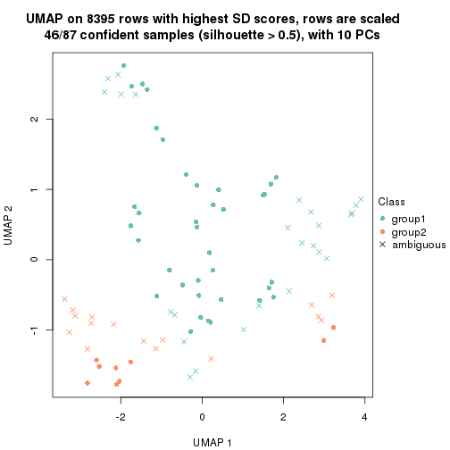
dimension_reduction(res, k = 3, method = "UMAP")

dimension_reduction(res, k = 4, method = "UMAP")
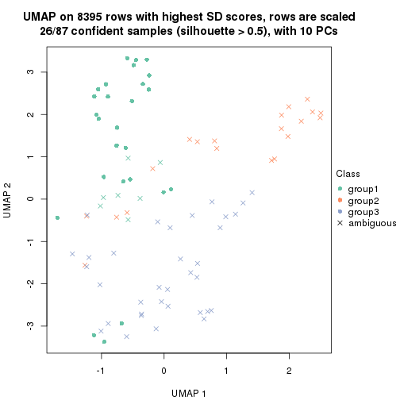
dimension_reduction(res, k = 5, method = "UMAP")
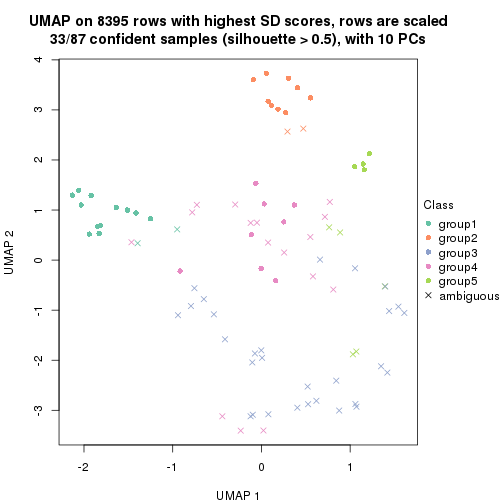
dimension_reduction(res, k = 6, method = "UMAP")
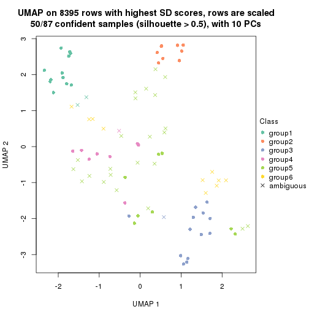
Following heatmap shows how subgroups are split when increasing k:
collect_classes(res)
Test correlation between subgroups and known annotations. If the known annotation is numeric, one-way ANOVA test is applied, and if the known annotation is discrete, chi-squared contingency table test is applied.
test_to_known_factors(res)
#> n tissue(p) individual(p) disease.state(p) k
#> SD:mclust 46 0.363336 2.99e-03 1.50e-01 2
#> SD:mclust 40 0.306467 1.76e-04 4.11e-02 3
#> SD:mclust 26 NA NA NA 4
#> SD:mclust 33 0.001867 1.68e-06 6.32e-04 5
#> SD:mclust 50 0.000376 5.58e-10 3.08e-05 6
If matrix rows can be associated to genes, consider to use GO_Enrichment(res,
...) to perform function enrichment for the signature genes.
The object with results only for a single top-value method and a single partition method can be extracted as:
res = res_list["SD", "NMF"]
# you can also extract it by
# res = res_list["SD:NMF"]
A summary of res and all the functions that can be applied to it:
res
#> A 'ConsensusPartition' object with k = 2, 3, 4, 5, 6.
#> On a matrix with 8395 rows and 87 columns.
#> Top rows (840, 1680, 2519, 3358, 4198) are extracted by 'SD' method.
#> Subgroups are detected by 'NMF' method.
#> Performed in total 1250 partitions by row resampling.
#> Best k for subgroups seems to be 3.
#>
#> Following methods can be applied to this 'ConsensusPartition' object:
#> [1] "cola_report" "collect_classes" "collect_plots"
#> [4] "collect_stats" "colnames" "compare_signatures"
#> [7] "consensus_heatmap" "dimension_reduction" "functional_enrichment"
#> [10] "get_anno_col" "get_anno" "get_classes"
#> [13] "get_consensus" "get_matrix" "get_membership"
#> [16] "get_param" "get_signatures" "get_stats"
#> [19] "is_best_k" "is_stable_k" "membership_heatmap"
#> [22] "ncol" "nrow" "plot_ecdf"
#> [25] "rownames" "select_partition_number" "show"
#> [28] "suggest_best_k" "test_to_known_factors"
collect_plots() function collects all the plots made from res for all k (number of partitions)
into one single page to provide an easy and fast comparison between different k.
collect_plots(res)
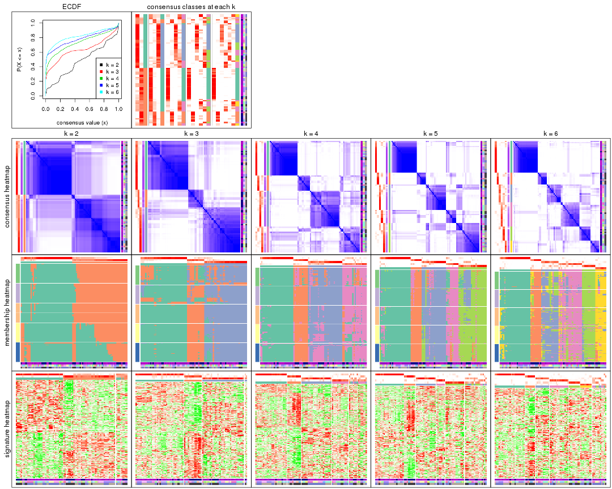
The plots are:
k and the heatmap of
predicted classes for each k.k.k.k.All the plots in panels can be made by individual functions and they are plotted later in this section.
select_partition_number() produces several plots showing different
statistics for choosing “optimized” k. There are following statistics:
k;k, the area increased is defined as \(A_k - A_{k-1}\).The detailed explanations of these statistics can be found in the cola vignette.
Generally speaking, lower PAC score, higher mean silhouette score or higher
concordance corresponds to better partition. Rand index and Jaccard index
measure how similar the current partition is compared to partition with k-1.
If they are too similar, we won't accept k is better than k-1.
select_partition_number(res)
The numeric values for all these statistics can be obtained by get_stats().
get_stats(res)
#> k 1-PAC mean_silhouette concordance area_increased Rand Jaccard
#> 2 2 0.403 0.724 0.851 0.4808 0.495 0.495
#> 3 3 0.599 0.798 0.878 0.3255 0.786 0.604
#> 4 4 0.662 0.683 0.843 0.1560 0.820 0.559
#> 5 5 0.734 0.688 0.860 0.0606 0.863 0.558
#> 6 6 0.759 0.712 0.836 0.0488 0.933 0.715
suggest_best_k() suggests the best \(k\) based on these statistics. The rules are as follows:
NA.suggest_best_k(res)
#> [1] 3
Following shows the table of the partitions (You need to click the show/hide
code output link to see it). The membership matrix (columns with name p*)
is inferred by
clue::cl_consensus()
function with the SE method. Basically the value in the membership matrix
represents the probability to belong to a certain group. The finall class
label for an item is determined with the group with highest probability it
belongs to.
In get_classes() function, the entropy is calculated from the membership
matrix and the silhouette score is calculated from the consensus matrix.
cbind(get_classes(res, k = 2), get_membership(res, k = 2))
#> class entropy silhouette p1 p2
#> GSM5316 2 0.7139 0.764 0.196 0.804
#> GSM5319 1 0.0000 0.895 1.000 0.000
#> GSM5321 2 0.9815 0.578 0.420 0.580
#> GSM5323 2 0.3733 0.762 0.072 0.928
#> GSM5325 1 0.7376 0.590 0.792 0.208
#> GSM5327 2 0.6973 0.767 0.188 0.812
#> GSM5329 1 0.4298 0.802 0.912 0.088
#> GSM5331 1 0.0000 0.895 1.000 0.000
#> GSM5333 1 0.0000 0.895 1.000 0.000
#> GSM5335 2 0.9635 0.628 0.388 0.612
#> GSM5337 2 0.9635 0.628 0.388 0.612
#> GSM5339 2 0.0672 0.742 0.008 0.992
#> GSM5341 2 0.0000 0.738 0.000 1.000
#> GSM5343 2 0.9522 0.649 0.372 0.628
#> GSM5345 1 0.0000 0.895 1.000 0.000
#> GSM5347 1 0.0000 0.895 1.000 0.000
#> GSM5349 1 0.0000 0.895 1.000 0.000
#> GSM5351 1 0.0000 0.895 1.000 0.000
#> GSM5353 2 0.6801 0.768 0.180 0.820
#> GSM5355 2 0.3274 0.759 0.060 0.940
#> GSM5357 1 0.0000 0.895 1.000 0.000
#> GSM5359 1 0.0000 0.895 1.000 0.000
#> GSM5361 2 0.3584 0.761 0.068 0.932
#> GSM5363 2 0.4022 0.763 0.080 0.920
#> GSM5365 1 0.2423 0.865 0.960 0.040
#> GSM5367 1 0.6801 0.720 0.820 0.180
#> GSM5369 2 0.9552 0.644 0.376 0.624
#> GSM5371 2 0.9491 0.653 0.368 0.632
#> GSM5373 2 0.6531 0.769 0.168 0.832
#> GSM5396 2 0.9580 0.639 0.380 0.620
#> GSM5397 1 0.0000 0.895 1.000 0.000
#> GSM5398 1 0.0000 0.895 1.000 0.000
#> GSM5400 1 0.6148 0.700 0.848 0.152
#> GSM5399 1 0.0672 0.890 0.992 0.008
#> GSM5401 2 0.0376 0.737 0.004 0.996
#> GSM5402 1 0.0000 0.895 1.000 0.000
#> GSM5317 2 0.9522 0.649 0.372 0.628
#> GSM5318 1 0.0000 0.895 1.000 0.000
#> GSM5320 2 0.9998 0.419 0.492 0.508
#> GSM5322 2 0.6801 0.768 0.180 0.820
#> GSM5324 1 0.9881 -0.222 0.564 0.436
#> GSM5326 2 0.9460 0.657 0.364 0.636
#> GSM5328 1 0.8861 0.327 0.696 0.304
#> GSM5330 1 0.0000 0.895 1.000 0.000
#> GSM5332 1 0.0000 0.895 1.000 0.000
#> GSM5334 1 0.0938 0.888 0.988 0.012
#> GSM5336 1 0.1414 0.882 0.980 0.020
#> GSM5338 2 0.0000 0.738 0.000 1.000
#> GSM5340 2 0.0672 0.742 0.008 0.992
#> GSM5342 2 0.9661 0.622 0.392 0.608
#> GSM5344 1 0.0000 0.895 1.000 0.000
#> GSM5346 1 0.0000 0.895 1.000 0.000
#> GSM5348 1 0.0376 0.893 0.996 0.004
#> GSM5350 1 0.0376 0.893 0.996 0.004
#> GSM5352 2 0.6973 0.767 0.188 0.812
#> GSM5354 2 0.6973 0.767 0.188 0.812
#> GSM5356 1 0.6801 0.719 0.820 0.180
#> GSM5358 1 0.6712 0.724 0.824 0.176
#> GSM5360 2 0.0938 0.743 0.012 0.988
#> GSM5362 2 0.5408 0.768 0.124 0.876
#> GSM5364 1 0.9635 0.416 0.612 0.388
#> GSM5366 1 0.9635 0.416 0.612 0.388
#> GSM5368 2 0.7219 0.763 0.200 0.800
#> GSM5370 2 0.9881 0.548 0.436 0.564
#> GSM5372 1 0.0938 0.888 0.988 0.012
#> GSM5374 1 0.3879 0.831 0.924 0.076
#> GSM5375 1 0.0376 0.893 0.996 0.004
#> GSM5376 2 0.9209 0.295 0.336 0.664
#> GSM5377 2 0.9552 0.187 0.376 0.624
#> GSM5378 2 0.0672 0.736 0.008 0.992
#> GSM5379 2 0.0672 0.736 0.008 0.992
#> GSM5380 1 0.0376 0.892 0.996 0.004
#> GSM5381 1 0.0000 0.895 1.000 0.000
#> GSM5382 2 0.9087 0.690 0.324 0.676
#> GSM5383 2 0.9552 0.644 0.376 0.624
#> GSM5384 1 0.0938 0.888 0.988 0.012
#> GSM5385 1 0.1184 0.885 0.984 0.016
#> GSM5386 2 0.0000 0.738 0.000 1.000
#> GSM5387 2 0.0376 0.737 0.004 0.996
#> GSM5392 1 0.0000 0.895 1.000 0.000
#> GSM5388 2 0.9988 -0.146 0.480 0.520
#> GSM5389 1 0.9922 0.300 0.552 0.448
#> GSM5390 2 0.0672 0.736 0.008 0.992
#> GSM5391 2 0.0672 0.736 0.008 0.992
#> GSM5393 2 0.6973 0.767 0.188 0.812
#> GSM5394 2 0.9635 0.628 0.388 0.612
#> GSM5395 2 0.7950 0.744 0.240 0.760
cbind(get_classes(res, k = 3), get_membership(res, k = 3))
#> class entropy silhouette p1 p2 p3
#> GSM5316 1 0.0424 0.886 0.992 0.008 0.000
#> GSM5319 3 0.2066 0.853 0.000 0.060 0.940
#> GSM5321 1 0.5506 0.765 0.764 0.220 0.016
#> GSM5323 1 0.0424 0.888 0.992 0.008 0.000
#> GSM5325 1 0.7932 0.634 0.660 0.200 0.140
#> GSM5327 1 0.0424 0.886 0.992 0.008 0.000
#> GSM5329 3 0.4808 0.713 0.188 0.008 0.804
#> GSM5331 3 0.0237 0.859 0.000 0.004 0.996
#> GSM5333 3 0.0237 0.859 0.000 0.004 0.996
#> GSM5335 1 0.2165 0.874 0.936 0.064 0.000
#> GSM5337 1 0.2625 0.866 0.916 0.084 0.000
#> GSM5339 1 0.0892 0.880 0.980 0.020 0.000
#> GSM5341 1 0.3116 0.795 0.892 0.108 0.000
#> GSM5343 1 0.0747 0.887 0.984 0.016 0.000
#> GSM5345 3 0.0237 0.860 0.000 0.004 0.996
#> GSM5347 3 0.0592 0.860 0.000 0.012 0.988
#> GSM5349 3 0.3267 0.817 0.000 0.116 0.884
#> GSM5351 3 0.0592 0.860 0.000 0.012 0.988
#> GSM5353 1 0.0424 0.886 0.992 0.008 0.000
#> GSM5355 1 0.0424 0.886 0.992 0.008 0.000
#> GSM5357 3 0.1643 0.844 0.000 0.044 0.956
#> GSM5359 3 0.1643 0.844 0.000 0.044 0.956
#> GSM5361 1 0.0424 0.886 0.992 0.008 0.000
#> GSM5363 1 0.0424 0.886 0.992 0.008 0.000
#> GSM5365 3 0.3686 0.819 0.000 0.140 0.860
#> GSM5367 3 0.6421 0.342 0.004 0.424 0.572
#> GSM5369 1 0.4293 0.816 0.832 0.164 0.004
#> GSM5371 1 0.4931 0.780 0.784 0.212 0.004
#> GSM5373 2 0.5956 0.665 0.324 0.672 0.004
#> GSM5396 1 0.0000 0.887 1.000 0.000 0.000
#> GSM5397 3 0.0892 0.855 0.000 0.020 0.980
#> GSM5398 3 0.5109 0.737 0.008 0.212 0.780
#> GSM5400 3 0.6231 0.733 0.148 0.080 0.772
#> GSM5399 3 0.8763 0.501 0.196 0.216 0.588
#> GSM5401 2 0.5178 0.768 0.256 0.744 0.000
#> GSM5402 3 0.4702 0.751 0.000 0.212 0.788
#> GSM5317 1 0.0592 0.888 0.988 0.012 0.000
#> GSM5318 3 0.1031 0.853 0.000 0.024 0.976
#> GSM5320 1 0.6232 0.740 0.740 0.220 0.040
#> GSM5322 1 0.2878 0.860 0.904 0.096 0.000
#> GSM5324 1 0.6446 0.736 0.736 0.212 0.052
#> GSM5326 1 0.0237 0.888 0.996 0.004 0.000
#> GSM5328 3 0.6008 0.517 0.332 0.004 0.664
#> GSM5330 3 0.0237 0.859 0.000 0.004 0.996
#> GSM5332 3 0.0237 0.859 0.000 0.004 0.996
#> GSM5334 1 0.8763 0.521 0.588 0.216 0.196
#> GSM5336 1 0.8550 0.556 0.608 0.216 0.176
#> GSM5338 1 0.2448 0.832 0.924 0.076 0.000
#> GSM5340 1 0.0892 0.880 0.980 0.020 0.000
#> GSM5342 1 0.1950 0.880 0.952 0.040 0.008
#> GSM5344 3 0.0237 0.860 0.000 0.004 0.996
#> GSM5346 3 0.1031 0.858 0.000 0.024 0.976
#> GSM5348 3 0.2878 0.829 0.000 0.096 0.904
#> GSM5350 3 0.1643 0.853 0.000 0.044 0.956
#> GSM5352 1 0.0424 0.886 0.992 0.008 0.000
#> GSM5354 1 0.0424 0.886 0.992 0.008 0.000
#> GSM5356 3 0.4121 0.739 0.000 0.168 0.832
#> GSM5358 3 0.3340 0.791 0.000 0.120 0.880
#> GSM5360 1 0.0892 0.880 0.980 0.020 0.000
#> GSM5362 1 0.0424 0.886 0.992 0.008 0.000
#> GSM5364 2 0.4796 0.699 0.000 0.780 0.220
#> GSM5366 2 0.4605 0.715 0.000 0.796 0.204
#> GSM5368 1 0.0747 0.887 0.984 0.016 0.000
#> GSM5370 1 0.4353 0.825 0.836 0.156 0.008
#> GSM5372 3 0.7828 0.635 0.168 0.160 0.672
#> GSM5374 3 0.0424 0.859 0.000 0.008 0.992
#> GSM5375 3 0.0237 0.859 0.000 0.004 0.996
#> GSM5376 2 0.2486 0.765 0.008 0.932 0.060
#> GSM5377 2 0.2774 0.758 0.008 0.920 0.072
#> GSM5378 2 0.5061 0.805 0.208 0.784 0.008
#> GSM5379 2 0.4883 0.805 0.208 0.788 0.004
#> GSM5380 3 0.0829 0.860 0.004 0.012 0.984
#> GSM5381 3 0.0237 0.859 0.000 0.004 0.996
#> GSM5382 1 0.4931 0.780 0.784 0.212 0.004
#> GSM5383 1 0.4883 0.784 0.788 0.208 0.004
#> GSM5384 3 0.7778 0.567 0.240 0.104 0.656
#> GSM5385 3 0.8464 0.474 0.280 0.128 0.592
#> GSM5386 2 0.3038 0.813 0.104 0.896 0.000
#> GSM5387 2 0.3340 0.817 0.120 0.880 0.000
#> GSM5392 3 0.3112 0.828 0.004 0.096 0.900
#> GSM5388 2 0.4062 0.684 0.000 0.836 0.164
#> GSM5389 2 0.3340 0.766 0.000 0.880 0.120
#> GSM5390 2 0.5574 0.814 0.184 0.784 0.032
#> GSM5391 2 0.5508 0.813 0.188 0.784 0.028
#> GSM5393 1 0.0424 0.886 0.992 0.008 0.000
#> GSM5394 1 0.1267 0.886 0.972 0.024 0.004
#> GSM5395 1 0.0892 0.887 0.980 0.020 0.000
cbind(get_classes(res, k = 4), get_membership(res, k = 4))
#> class entropy silhouette p1 p2 p3 p4
#> GSM5316 1 0.0000 0.9363 1.000 0.000 0.000 0.000
#> GSM5319 3 0.3198 0.7603 0.000 0.080 0.880 0.040
#> GSM5321 4 0.4428 0.5594 0.276 0.004 0.000 0.720
#> GSM5323 1 0.1940 0.8866 0.924 0.000 0.000 0.076
#> GSM5325 4 0.2660 0.6266 0.056 0.000 0.036 0.908
#> GSM5327 1 0.1792 0.8931 0.932 0.000 0.000 0.068
#> GSM5329 3 0.6942 0.4910 0.176 0.000 0.584 0.240
#> GSM5331 3 0.0000 0.7906 0.000 0.000 1.000 0.000
#> GSM5333 3 0.0000 0.7906 0.000 0.000 1.000 0.000
#> GSM5335 1 0.1118 0.9163 0.964 0.000 0.000 0.036
#> GSM5337 1 0.1637 0.8994 0.940 0.000 0.000 0.060
#> GSM5339 1 0.0000 0.9363 1.000 0.000 0.000 0.000
#> GSM5341 1 0.0188 0.9342 0.996 0.004 0.000 0.000
#> GSM5343 1 0.1867 0.8762 0.928 0.000 0.000 0.072
#> GSM5345 3 0.0707 0.7875 0.000 0.000 0.980 0.020
#> GSM5347 3 0.0336 0.7902 0.000 0.000 0.992 0.008
#> GSM5349 3 0.3626 0.6775 0.000 0.004 0.812 0.184
#> GSM5351 3 0.0469 0.7902 0.000 0.000 0.988 0.012
#> GSM5353 1 0.0000 0.9363 1.000 0.000 0.000 0.000
#> GSM5355 1 0.0000 0.9363 1.000 0.000 0.000 0.000
#> GSM5357 3 0.5464 0.6835 0.000 0.064 0.708 0.228
#> GSM5359 3 0.5417 0.7065 0.000 0.088 0.732 0.180
#> GSM5361 1 0.0000 0.9363 1.000 0.000 0.000 0.000
#> GSM5363 1 0.0000 0.9363 1.000 0.000 0.000 0.000
#> GSM5365 4 0.5421 0.4860 0.000 0.200 0.076 0.724
#> GSM5367 4 0.5912 0.1021 0.000 0.440 0.036 0.524
#> GSM5369 4 0.3494 0.6376 0.172 0.004 0.000 0.824
#> GSM5371 4 0.1716 0.6365 0.064 0.000 0.000 0.936
#> GSM5373 2 0.6009 0.1401 0.036 0.560 0.004 0.400
#> GSM5396 1 0.0000 0.9363 1.000 0.000 0.000 0.000
#> GSM5397 3 0.6295 0.5928 0.000 0.088 0.616 0.296
#> GSM5398 3 0.5143 0.0944 0.000 0.004 0.540 0.456
#> GSM5400 4 0.8395 -0.2506 0.128 0.060 0.400 0.412
#> GSM5399 4 0.0779 0.6091 0.000 0.004 0.016 0.980
#> GSM5401 2 0.2216 0.7728 0.092 0.908 0.000 0.000
#> GSM5402 4 0.5062 0.4519 0.000 0.064 0.184 0.752
#> GSM5317 1 0.0469 0.9316 0.988 0.000 0.000 0.012
#> GSM5318 3 0.6685 0.5374 0.000 0.108 0.568 0.324
#> GSM5320 4 0.3973 0.6082 0.200 0.004 0.004 0.792
#> GSM5322 1 0.2714 0.8436 0.884 0.004 0.000 0.112
#> GSM5324 4 0.2011 0.6372 0.080 0.000 0.000 0.920
#> GSM5326 1 0.1474 0.8992 0.948 0.000 0.000 0.052
#> GSM5328 1 0.7526 0.1315 0.508 0.004 0.296 0.192
#> GSM5330 3 0.0000 0.7906 0.000 0.000 1.000 0.000
#> GSM5332 3 0.0000 0.7906 0.000 0.000 1.000 0.000
#> GSM5334 4 0.5231 0.5685 0.244 0.004 0.036 0.716
#> GSM5336 4 0.5204 0.5638 0.252 0.004 0.032 0.712
#> GSM5338 1 0.0469 0.9297 0.988 0.012 0.000 0.000
#> GSM5340 1 0.0000 0.9363 1.000 0.000 0.000 0.000
#> GSM5342 1 0.5206 0.4263 0.668 0.024 0.000 0.308
#> GSM5344 3 0.0188 0.7907 0.000 0.000 0.996 0.004
#> GSM5346 3 0.1118 0.7819 0.000 0.000 0.964 0.036
#> GSM5348 3 0.3763 0.7049 0.000 0.024 0.832 0.144
#> GSM5350 3 0.1677 0.7792 0.000 0.012 0.948 0.040
#> GSM5352 1 0.0000 0.9363 1.000 0.000 0.000 0.000
#> GSM5354 1 0.0000 0.9363 1.000 0.000 0.000 0.000
#> GSM5356 3 0.3401 0.7376 0.000 0.152 0.840 0.008
#> GSM5358 3 0.2918 0.7555 0.000 0.116 0.876 0.008
#> GSM5360 1 0.0000 0.9363 1.000 0.000 0.000 0.000
#> GSM5362 1 0.0000 0.9363 1.000 0.000 0.000 0.000
#> GSM5364 2 0.2216 0.7731 0.000 0.908 0.000 0.092
#> GSM5366 2 0.1940 0.7869 0.000 0.924 0.000 0.076
#> GSM5368 1 0.1022 0.9167 0.968 0.000 0.000 0.032
#> GSM5370 4 0.4030 0.5948 0.072 0.092 0.000 0.836
#> GSM5372 4 0.4963 0.5381 0.012 0.148 0.056 0.784
#> GSM5374 3 0.2915 0.7749 0.000 0.028 0.892 0.080
#> GSM5375 3 0.0672 0.7914 0.000 0.008 0.984 0.008
#> GSM5376 4 0.4994 -0.1723 0.000 0.480 0.000 0.520
#> GSM5377 4 0.4989 -0.1610 0.000 0.472 0.000 0.528
#> GSM5378 2 0.0188 0.8183 0.004 0.996 0.000 0.000
#> GSM5379 2 0.0188 0.8183 0.004 0.996 0.000 0.000
#> GSM5380 3 0.4769 0.6273 0.008 0.000 0.684 0.308
#> GSM5381 3 0.3942 0.6973 0.000 0.000 0.764 0.236
#> GSM5382 4 0.3688 0.6225 0.208 0.000 0.000 0.792
#> GSM5383 4 0.4605 0.5209 0.336 0.000 0.000 0.664
#> GSM5384 3 0.5161 0.4945 0.008 0.000 0.592 0.400
#> GSM5385 3 0.5409 0.2835 0.012 0.000 0.496 0.492
#> GSM5386 2 0.4098 0.7188 0.012 0.784 0.000 0.204
#> GSM5387 2 0.3048 0.7875 0.016 0.876 0.000 0.108
#> GSM5392 3 0.4761 0.5523 0.000 0.000 0.628 0.372
#> GSM5388 2 0.4606 0.6359 0.000 0.724 0.012 0.264
#> GSM5389 2 0.3969 0.7355 0.000 0.804 0.016 0.180
#> GSM5390 2 0.0592 0.8193 0.016 0.984 0.000 0.000
#> GSM5391 2 0.1211 0.8122 0.040 0.960 0.000 0.000
#> GSM5393 1 0.0000 0.9363 1.000 0.000 0.000 0.000
#> GSM5394 4 0.5119 0.2141 0.440 0.004 0.000 0.556
#> GSM5395 1 0.0188 0.9347 0.996 0.000 0.000 0.004
cbind(get_classes(res, k = 5), get_membership(res, k = 5))
#> class entropy silhouette p1 p2 p3 p4 p5
#> GSM5316 1 0.0000 0.9220 1.000 0.000 0.000 0.000 0.000
#> GSM5319 3 0.4310 0.3161 0.000 0.000 0.604 0.004 0.392
#> GSM5321 4 0.0162 0.7123 0.004 0.000 0.000 0.996 0.000
#> GSM5323 1 0.3671 0.6446 0.756 0.008 0.000 0.236 0.000
#> GSM5325 5 0.3436 0.7183 0.076 0.000 0.020 0.048 0.856
#> GSM5327 1 0.4211 0.3964 0.636 0.004 0.000 0.360 0.000
#> GSM5329 3 0.6470 0.0218 0.192 0.000 0.460 0.000 0.348
#> GSM5331 3 0.0162 0.8080 0.000 0.000 0.996 0.000 0.004
#> GSM5333 3 0.0162 0.8080 0.000 0.000 0.996 0.000 0.004
#> GSM5335 1 0.1043 0.8943 0.960 0.000 0.000 0.040 0.000
#> GSM5337 1 0.3366 0.6675 0.768 0.000 0.000 0.232 0.000
#> GSM5339 1 0.0000 0.9220 1.000 0.000 0.000 0.000 0.000
#> GSM5341 1 0.0000 0.9220 1.000 0.000 0.000 0.000 0.000
#> GSM5343 1 0.2886 0.7536 0.844 0.000 0.000 0.008 0.148
#> GSM5345 3 0.0162 0.8073 0.000 0.000 0.996 0.000 0.004
#> GSM5347 3 0.0162 0.8073 0.000 0.000 0.996 0.000 0.004
#> GSM5349 3 0.4410 0.3216 0.000 0.000 0.556 0.440 0.004
#> GSM5351 3 0.0865 0.8035 0.000 0.000 0.972 0.024 0.004
#> GSM5353 1 0.0000 0.9220 1.000 0.000 0.000 0.000 0.000
#> GSM5355 1 0.0000 0.9220 1.000 0.000 0.000 0.000 0.000
#> GSM5357 5 0.4166 0.4670 0.000 0.004 0.348 0.000 0.648
#> GSM5359 5 0.4752 0.3290 0.000 0.020 0.412 0.000 0.568
#> GSM5361 1 0.0000 0.9220 1.000 0.000 0.000 0.000 0.000
#> GSM5363 1 0.0000 0.9220 1.000 0.000 0.000 0.000 0.000
#> GSM5365 5 0.0798 0.7533 0.000 0.016 0.000 0.008 0.976
#> GSM5367 5 0.1830 0.7315 0.000 0.068 0.000 0.008 0.924
#> GSM5369 5 0.5116 0.4768 0.084 0.000 0.000 0.248 0.668
#> GSM5371 5 0.4560 0.0575 0.008 0.000 0.000 0.484 0.508
#> GSM5373 5 0.1638 0.7463 0.000 0.064 0.000 0.004 0.932
#> GSM5396 1 0.0290 0.9173 0.992 0.000 0.000 0.000 0.008
#> GSM5397 5 0.0451 0.7548 0.000 0.000 0.004 0.008 0.988
#> GSM5398 3 0.4029 0.5047 0.000 0.000 0.680 0.316 0.004
#> GSM5400 5 0.0324 0.7546 0.000 0.000 0.004 0.004 0.992
#> GSM5399 4 0.3074 0.5564 0.000 0.000 0.000 0.804 0.196
#> GSM5401 2 0.0510 0.8513 0.016 0.984 0.000 0.000 0.000
#> GSM5402 5 0.0693 0.7550 0.000 0.000 0.008 0.012 0.980
#> GSM5317 1 0.0000 0.9220 1.000 0.000 0.000 0.000 0.000
#> GSM5318 5 0.0486 0.7550 0.000 0.004 0.004 0.004 0.988
#> GSM5320 4 0.0162 0.7123 0.004 0.000 0.000 0.996 0.000
#> GSM5322 4 0.4403 0.2123 0.436 0.004 0.000 0.560 0.000
#> GSM5324 5 0.5008 0.5776 0.140 0.000 0.000 0.152 0.708
#> GSM5326 1 0.0771 0.9064 0.976 0.000 0.000 0.004 0.020
#> GSM5328 1 0.6388 0.1858 0.516 0.000 0.244 0.000 0.240
#> GSM5330 3 0.0162 0.8080 0.000 0.000 0.996 0.000 0.004
#> GSM5332 3 0.0162 0.8080 0.000 0.000 0.996 0.000 0.004
#> GSM5334 4 0.0324 0.7121 0.004 0.000 0.004 0.992 0.000
#> GSM5336 4 0.0324 0.7121 0.004 0.000 0.004 0.992 0.000
#> GSM5338 1 0.0000 0.9220 1.000 0.000 0.000 0.000 0.000
#> GSM5340 1 0.0000 0.9220 1.000 0.000 0.000 0.000 0.000
#> GSM5342 5 0.2771 0.6902 0.128 0.000 0.000 0.012 0.860
#> GSM5344 3 0.0162 0.8073 0.000 0.000 0.996 0.000 0.004
#> GSM5346 3 0.0000 0.8078 0.000 0.000 1.000 0.000 0.000
#> GSM5348 3 0.3940 0.6438 0.000 0.024 0.756 0.220 0.000
#> GSM5350 3 0.2674 0.7427 0.000 0.012 0.868 0.120 0.000
#> GSM5352 1 0.0000 0.9220 1.000 0.000 0.000 0.000 0.000
#> GSM5354 1 0.0000 0.9220 1.000 0.000 0.000 0.000 0.000
#> GSM5356 3 0.4199 0.6877 0.000 0.180 0.764 0.000 0.056
#> GSM5358 3 0.3267 0.7516 0.000 0.112 0.844 0.000 0.044
#> GSM5360 1 0.0000 0.9220 1.000 0.000 0.000 0.000 0.000
#> GSM5362 1 0.0000 0.9220 1.000 0.000 0.000 0.000 0.000
#> GSM5364 5 0.2124 0.7182 0.000 0.096 0.000 0.004 0.900
#> GSM5366 5 0.3388 0.5984 0.000 0.200 0.000 0.008 0.792
#> GSM5368 1 0.0290 0.9179 0.992 0.000 0.000 0.008 0.000
#> GSM5370 5 0.0703 0.7515 0.000 0.000 0.000 0.024 0.976
#> GSM5372 5 0.0798 0.7549 0.000 0.016 0.000 0.008 0.976
#> GSM5374 3 0.3550 0.5550 0.000 0.004 0.760 0.000 0.236
#> GSM5375 3 0.1082 0.7956 0.000 0.008 0.964 0.000 0.028
#> GSM5376 4 0.3366 0.4624 0.000 0.232 0.000 0.768 0.000
#> GSM5377 4 0.3039 0.5316 0.000 0.192 0.000 0.808 0.000
#> GSM5378 2 0.0000 0.8592 0.000 1.000 0.000 0.000 0.000
#> GSM5379 2 0.0000 0.8592 0.000 1.000 0.000 0.000 0.000
#> GSM5380 5 0.4302 0.1921 0.000 0.000 0.480 0.000 0.520
#> GSM5381 3 0.4192 0.1403 0.000 0.000 0.596 0.000 0.404
#> GSM5382 4 0.4734 0.5999 0.176 0.000 0.000 0.728 0.096
#> GSM5383 4 0.4752 0.4860 0.316 0.000 0.000 0.648 0.036
#> GSM5384 5 0.4590 0.3466 0.000 0.000 0.420 0.012 0.568
#> GSM5385 5 0.4917 0.3439 0.000 0.000 0.416 0.028 0.556
#> GSM5386 2 0.3983 0.5985 0.000 0.660 0.000 0.340 0.000
#> GSM5387 2 0.1732 0.8375 0.000 0.920 0.000 0.080 0.000
#> GSM5392 5 0.4504 0.3312 0.000 0.000 0.428 0.008 0.564
#> GSM5388 2 0.4434 0.5771 0.000 0.640 0.008 0.348 0.004
#> GSM5389 2 0.3300 0.7537 0.000 0.792 0.000 0.204 0.004
#> GSM5390 2 0.0162 0.8581 0.000 0.996 0.000 0.000 0.004
#> GSM5391 2 0.0162 0.8581 0.000 0.996 0.000 0.000 0.004
#> GSM5393 1 0.0000 0.9220 1.000 0.000 0.000 0.000 0.000
#> GSM5394 5 0.2338 0.7084 0.112 0.000 0.000 0.004 0.884
#> GSM5395 1 0.0404 0.9158 0.988 0.000 0.000 0.012 0.000
cbind(get_classes(res, k = 6), get_membership(res, k = 6))
#> class entropy silhouette p1 p2 p3 p4 p5 p6
#> GSM5316 1 0.0000 0.9278 1.000 0.000 0.000 0.000 0.000 0.000
#> GSM5319 3 0.4170 0.4534 0.000 0.000 0.660 0.308 0.032 0.000
#> GSM5321 6 0.1757 0.7869 0.000 0.000 0.076 0.000 0.008 0.916
#> GSM5323 1 0.3089 0.7498 0.800 0.004 0.000 0.008 0.000 0.188
#> GSM5325 4 0.5256 0.5850 0.000 0.004 0.012 0.648 0.216 0.120
#> GSM5327 1 0.4610 0.5611 0.664 0.000 0.056 0.000 0.008 0.272
#> GSM5329 5 0.0865 0.8434 0.000 0.000 0.000 0.036 0.964 0.000
#> GSM5331 3 0.3314 0.6653 0.000 0.000 0.740 0.004 0.256 0.000
#> GSM5333 3 0.3290 0.6672 0.000 0.000 0.744 0.004 0.252 0.000
#> GSM5335 1 0.1461 0.8899 0.940 0.000 0.016 0.000 0.000 0.044
#> GSM5337 1 0.3928 0.7163 0.764 0.000 0.052 0.000 0.008 0.176
#> GSM5339 1 0.0000 0.9278 1.000 0.000 0.000 0.000 0.000 0.000
#> GSM5341 1 0.0000 0.9278 1.000 0.000 0.000 0.000 0.000 0.000
#> GSM5343 1 0.4606 0.6222 0.712 0.000 0.008 0.168 0.112 0.000
#> GSM5345 3 0.4185 0.1088 0.000 0.000 0.496 0.000 0.492 0.012
#> GSM5347 5 0.4047 0.4166 0.000 0.000 0.296 0.000 0.676 0.028
#> GSM5349 3 0.4028 0.4239 0.000 0.000 0.668 0.000 0.024 0.308
#> GSM5351 3 0.2437 0.6843 0.000 0.000 0.888 0.004 0.036 0.072
#> GSM5353 1 0.0000 0.9278 1.000 0.000 0.000 0.000 0.000 0.000
#> GSM5355 1 0.0000 0.9278 1.000 0.000 0.000 0.000 0.000 0.000
#> GSM5357 4 0.6060 0.2035 0.000 0.000 0.264 0.392 0.344 0.000
#> GSM5359 4 0.6127 0.0824 0.000 0.000 0.336 0.348 0.316 0.000
#> GSM5361 1 0.0146 0.9268 0.996 0.004 0.000 0.000 0.000 0.000
#> GSM5363 1 0.0291 0.9253 0.992 0.004 0.004 0.000 0.000 0.000
#> GSM5365 4 0.0964 0.7604 0.000 0.012 0.016 0.968 0.000 0.004
#> GSM5367 4 0.1401 0.7550 0.000 0.028 0.020 0.948 0.000 0.004
#> GSM5369 4 0.3674 0.6645 0.036 0.000 0.004 0.792 0.008 0.160
#> GSM5371 4 0.4333 0.1567 0.000 0.000 0.000 0.512 0.020 0.468
#> GSM5373 4 0.3557 0.7551 0.000 0.048 0.012 0.824 0.108 0.008
#> GSM5396 1 0.0000 0.9278 1.000 0.000 0.000 0.000 0.000 0.000
#> GSM5397 4 0.2308 0.7653 0.000 0.000 0.068 0.892 0.040 0.000
#> GSM5398 3 0.5580 0.6180 0.000 0.000 0.620 0.024 0.168 0.188
#> GSM5400 4 0.3536 0.6388 0.000 0.000 0.008 0.736 0.252 0.004
#> GSM5399 6 0.3000 0.7729 0.000 0.000 0.024 0.064 0.048 0.864
#> GSM5401 2 0.0146 0.8431 0.000 0.996 0.000 0.000 0.004 0.000
#> GSM5402 4 0.2070 0.7673 0.000 0.000 0.048 0.908 0.044 0.000
#> GSM5317 1 0.0146 0.9266 0.996 0.000 0.000 0.000 0.000 0.004
#> GSM5318 4 0.2794 0.7607 0.000 0.000 0.080 0.860 0.060 0.000
#> GSM5320 6 0.0725 0.7911 0.000 0.000 0.012 0.012 0.000 0.976
#> GSM5322 1 0.3995 0.1311 0.516 0.000 0.000 0.004 0.000 0.480
#> GSM5324 4 0.5236 0.3919 0.000 0.004 0.012 0.584 0.068 0.332
#> GSM5326 1 0.0260 0.9247 0.992 0.000 0.000 0.008 0.000 0.000
#> GSM5328 5 0.1572 0.8308 0.028 0.000 0.000 0.036 0.936 0.000
#> GSM5330 3 0.3314 0.6653 0.000 0.000 0.740 0.004 0.256 0.000
#> GSM5332 3 0.3337 0.6619 0.000 0.000 0.736 0.004 0.260 0.000
#> GSM5334 6 0.2581 0.7656 0.000 0.000 0.128 0.000 0.016 0.856
#> GSM5336 6 0.2538 0.7672 0.000 0.000 0.124 0.000 0.016 0.860
#> GSM5338 1 0.0000 0.9278 1.000 0.000 0.000 0.000 0.000 0.000
#> GSM5340 1 0.0000 0.9278 1.000 0.000 0.000 0.000 0.000 0.000
#> GSM5342 4 0.4073 0.6329 0.180 0.000 0.012 0.760 0.044 0.004
#> GSM5344 5 0.3984 0.1010 0.000 0.000 0.396 0.000 0.596 0.008
#> GSM5346 3 0.3907 0.6208 0.000 0.000 0.704 0.000 0.268 0.028
#> GSM5348 3 0.2909 0.6589 0.000 0.000 0.836 0.000 0.028 0.136
#> GSM5350 3 0.2940 0.6712 0.000 0.004 0.848 0.000 0.036 0.112
#> GSM5352 1 0.0000 0.9278 1.000 0.000 0.000 0.000 0.000 0.000
#> GSM5354 1 0.0000 0.9278 1.000 0.000 0.000 0.000 0.000 0.000
#> GSM5356 3 0.5822 0.5073 0.000 0.096 0.632 0.092 0.180 0.000
#> GSM5358 3 0.5238 0.5552 0.000 0.052 0.680 0.088 0.180 0.000
#> GSM5360 1 0.0146 0.9268 0.996 0.004 0.000 0.000 0.000 0.000
#> GSM5362 1 0.0146 0.9268 0.996 0.004 0.000 0.000 0.000 0.000
#> GSM5364 4 0.2190 0.7483 0.000 0.060 0.040 0.900 0.000 0.000
#> GSM5366 4 0.2221 0.7421 0.000 0.072 0.032 0.896 0.000 0.000
#> GSM5368 1 0.0713 0.9111 0.972 0.000 0.000 0.028 0.000 0.000
#> GSM5370 4 0.1983 0.7614 0.000 0.000 0.012 0.916 0.060 0.012
#> GSM5372 4 0.2730 0.7603 0.000 0.004 0.020 0.864 0.108 0.004
#> GSM5374 5 0.1605 0.8383 0.000 0.012 0.016 0.032 0.940 0.000
#> GSM5375 5 0.1398 0.7982 0.000 0.008 0.052 0.000 0.940 0.000
#> GSM5376 6 0.3460 0.6116 0.000 0.220 0.000 0.020 0.000 0.760
#> GSM5377 6 0.3393 0.6533 0.000 0.192 0.004 0.020 0.000 0.784
#> GSM5378 2 0.0405 0.8437 0.000 0.988 0.008 0.000 0.004 0.000
#> GSM5379 2 0.0260 0.8432 0.000 0.992 0.008 0.000 0.000 0.000
#> GSM5380 5 0.1531 0.8422 0.000 0.000 0.000 0.068 0.928 0.004
#> GSM5381 5 0.1268 0.8457 0.000 0.000 0.008 0.036 0.952 0.004
#> GSM5382 6 0.4741 0.6568 0.028 0.004 0.012 0.172 0.048 0.736
#> GSM5383 6 0.4926 0.6814 0.096 0.004 0.012 0.092 0.048 0.748
#> GSM5384 5 0.2518 0.8240 0.000 0.004 0.012 0.088 0.884 0.012
#> GSM5385 5 0.2828 0.8143 0.000 0.004 0.012 0.080 0.872 0.032
#> GSM5386 2 0.3737 0.3541 0.000 0.608 0.000 0.000 0.000 0.392
#> GSM5387 2 0.0790 0.8317 0.000 0.968 0.000 0.000 0.000 0.032
#> GSM5392 5 0.1967 0.8353 0.000 0.000 0.000 0.084 0.904 0.012
#> GSM5388 2 0.5589 0.5607 0.000 0.608 0.016 0.008 0.256 0.112
#> GSM5389 2 0.4770 0.6500 0.000 0.692 0.012 0.000 0.200 0.096
#> GSM5390 2 0.0520 0.8430 0.000 0.984 0.008 0.000 0.008 0.000
#> GSM5391 2 0.0717 0.8396 0.000 0.976 0.008 0.000 0.016 0.000
#> GSM5393 1 0.0000 0.9278 1.000 0.000 0.000 0.000 0.000 0.000
#> GSM5394 4 0.4114 0.6881 0.128 0.000 0.000 0.772 0.084 0.016
#> GSM5395 1 0.0291 0.9256 0.992 0.000 0.000 0.000 0.004 0.004
Heatmaps for the consensus matrix. It visualizes the probability of two samples to be in a same group.
consensus_heatmap(res, k = 2)
consensus_heatmap(res, k = 3)
consensus_heatmap(res, k = 4)
consensus_heatmap(res, k = 5)
consensus_heatmap(res, k = 6)
Heatmaps for the membership of samples in all partitions to see how consistent they are:
membership_heatmap(res, k = 2)
membership_heatmap(res, k = 3)
membership_heatmap(res, k = 4)
membership_heatmap(res, k = 5)
membership_heatmap(res, k = 6)
As soon as we have had the classes for columns, we can look for signatures which are significantly different between classes which can be candidate marks for certain classes. Following are the heatmaps for signatures.
Signature heatmaps where rows are scaled:
get_signatures(res, k = 2)
#> Error: The width or height of the raster image is zero, maybe you forget to turn off the
#> previous graphic device or it was corrupted. Run `dev.off()` to close it.

get_signatures(res, k = 3)
#> Error: The width or height of the raster image is zero, maybe you forget to turn off the
#> previous graphic device or it was corrupted. Run `dev.off()` to close it.

get_signatures(res, k = 4)
#> Error: The width or height of the raster image is zero, maybe you forget to turn off the
#> previous graphic device or it was corrupted. Run `dev.off()` to close it.

get_signatures(res, k = 5)
#> Error: The width or height of the raster image is zero, maybe you forget to turn off the
#> previous graphic device or it was corrupted. Run `dev.off()` to close it.

get_signatures(res, k = 6)
#> Error: The width or height of the raster image is zero, maybe you forget to turn off the
#> previous graphic device or it was corrupted. Run `dev.off()` to close it.

Signature heatmaps where rows are not scaled:
get_signatures(res, k = 2, scale_rows = FALSE)
#> Error: The width or height of the raster image is zero, maybe you forget to turn off the
#> previous graphic device or it was corrupted. Run `dev.off()` to close it.

get_signatures(res, k = 3, scale_rows = FALSE)
#> Error: The width or height of the raster image is zero, maybe you forget to turn off the
#> previous graphic device or it was corrupted. Run `dev.off()` to close it.

get_signatures(res, k = 4, scale_rows = FALSE)
#> Error: The width or height of the raster image is zero, maybe you forget to turn off the
#> previous graphic device or it was corrupted. Run `dev.off()` to close it.

get_signatures(res, k = 5, scale_rows = FALSE)
#> Error: The width or height of the raster image is zero, maybe you forget to turn off the
#> previous graphic device or it was corrupted. Run `dev.off()` to close it.

get_signatures(res, k = 6, scale_rows = FALSE)
#> Error: The width or height of the raster image is zero, maybe you forget to turn off the
#> previous graphic device or it was corrupted. Run `dev.off()` to close it.

Compare the overlap of signatures from different k:
compare_signatures(res)
get_signature() returns a data frame invisibly. TO get the list of signatures, the function
call should be assigned to a variable explicitly. In following code, if plot argument is set
to FALSE, no heatmap is plotted while only the differential analysis is performed.
# code only for demonstration
tb = get_signature(res, k = ..., plot = FALSE)
An example of the output of tb is:
#> which_row fdr mean_1 mean_2 scaled_mean_1 scaled_mean_2 km
#> 1 38 0.042760348 8.373488 9.131774 -0.5533452 0.5164555 1
#> 2 40 0.018707592 7.106213 8.469186 -0.6173731 0.5762149 1
#> 3 55 0.019134737 10.221463 11.207825 -0.6159697 0.5749050 1
#> 4 59 0.006059896 5.921854 7.869574 -0.6899429 0.6439467 1
#> 5 60 0.018055526 8.928898 10.211722 -0.6204761 0.5791110 1
#> 6 98 0.009384629 15.714769 14.887706 0.6635654 -0.6193277 2
...
The columns in tb are:
which_row: row indices corresponding to the input matrix.fdr: FDR for the differential test. mean_x: The mean value in group x.scaled_mean_x: The mean value in group x after rows are scaled.km: Row groups if k-means clustering is applied to rows.UMAP plot which shows how samples are separated.
dimension_reduction(res, k = 2, method = "UMAP")
dimension_reduction(res, k = 3, method = "UMAP")
dimension_reduction(res, k = 4, method = "UMAP")
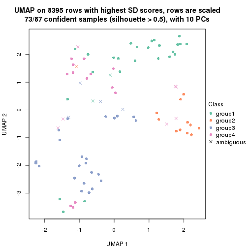
dimension_reduction(res, k = 5, method = "UMAP")
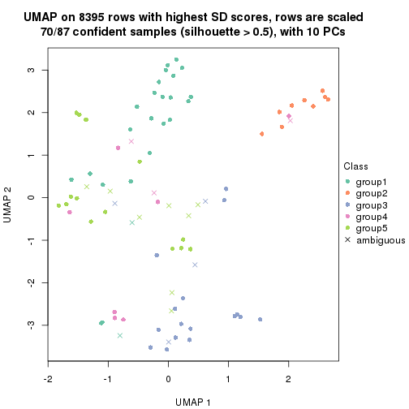
dimension_reduction(res, k = 6, method = "UMAP")
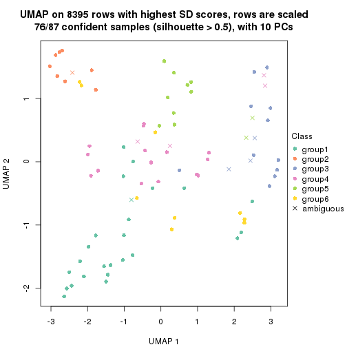
Following heatmap shows how subgroups are split when increasing k:
collect_classes(res)
Test correlation between subgroups and known annotations. If the known annotation is numeric, one-way ANOVA test is applied, and if the known annotation is discrete, chi-squared contingency table test is applied.
test_to_known_factors(res)
#> n tissue(p) individual(p) disease.state(p) k
#> SD:NMF 78 7.10e-01 4.98e-04 2.51e-02 2
#> SD:NMF 85 4.31e-04 1.37e-07 1.25e-05 3
#> SD:NMF 73 3.47e-03 4.94e-10 9.86e-06 4
#> SD:NMF 70 1.66e-04 1.47e-09 5.73e-07 5
#> SD:NMF 76 9.09e-06 6.08e-12 1.16e-07 6
If matrix rows can be associated to genes, consider to use GO_Enrichment(res,
...) to perform function enrichment for the signature genes.
The object with results only for a single top-value method and a single partition method can be extracted as:
res = res_list["CV", "hclust"]
# you can also extract it by
# res = res_list["CV:hclust"]
A summary of res and all the functions that can be applied to it:
res
#> A 'ConsensusPartition' object with k = 2, 3, 4, 5, 6.
#> On a matrix with 8395 rows and 87 columns.
#> Top rows (840, 1680, 2519, 3358, 4198) are extracted by 'CV' method.
#> Subgroups are detected by 'hclust' method.
#> Performed in total 1250 partitions by row resampling.
#> Best k for subgroups seems to be 4.
#>
#> Following methods can be applied to this 'ConsensusPartition' object:
#> [1] "cola_report" "collect_classes" "collect_plots"
#> [4] "collect_stats" "colnames" "compare_signatures"
#> [7] "consensus_heatmap" "dimension_reduction" "functional_enrichment"
#> [10] "get_anno_col" "get_anno" "get_classes"
#> [13] "get_consensus" "get_matrix" "get_membership"
#> [16] "get_param" "get_signatures" "get_stats"
#> [19] "is_best_k" "is_stable_k" "membership_heatmap"
#> [22] "ncol" "nrow" "plot_ecdf"
#> [25] "rownames" "select_partition_number" "show"
#> [28] "suggest_best_k" "test_to_known_factors"
collect_plots() function collects all the plots made from res for all k (number of partitions)
into one single page to provide an easy and fast comparison between different k.
collect_plots(res)
The plots are:
k and the heatmap of
predicted classes for each k.k.k.k.All the plots in panels can be made by individual functions and they are plotted later in this section.
select_partition_number() produces several plots showing different
statistics for choosing “optimized” k. There are following statistics:
k;k, the area increased is defined as \(A_k - A_{k-1}\).The detailed explanations of these statistics can be found in the cola vignette.
Generally speaking, lower PAC score, higher mean silhouette score or higher
concordance corresponds to better partition. Rand index and Jaccard index
measure how similar the current partition is compared to partition with k-1.
If they are too similar, we won't accept k is better than k-1.
select_partition_number(res)
The numeric values for all these statistics can be obtained by get_stats().
get_stats(res)
#> k 1-PAC mean_silhouette concordance area_increased Rand Jaccard
#> 2 2 0.862 0.939 0.969 0.2344 0.743 0.743
#> 3 3 0.307 0.611 0.808 1.1570 0.721 0.624
#> 4 4 0.359 0.627 0.790 0.2460 0.856 0.707
#> 5 5 0.442 0.622 0.754 0.0684 0.956 0.885
#> 6 6 0.505 0.628 0.764 0.0387 0.994 0.983
suggest_best_k() suggests the best \(k\) based on these statistics. The rules are as follows:
NA.suggest_best_k(res)
#> [1] 4
Following shows the table of the partitions (You need to click the show/hide
code output link to see it). The membership matrix (columns with name p*)
is inferred by
clue::cl_consensus()
function with the SE method. Basically the value in the membership matrix
represents the probability to belong to a certain group. The finall class
label for an item is determined with the group with highest probability it
belongs to.
In get_classes() function, the entropy is calculated from the membership
matrix and the silhouette score is calculated from the consensus matrix.
cbind(get_classes(res, k = 2), get_membership(res, k = 2))
#> class entropy silhouette p1 p2
#> GSM5316 1 0.0000 0.988 1.000 0.000
#> GSM5319 1 0.0000 0.988 1.000 0.000
#> GSM5321 1 0.0000 0.988 1.000 0.000
#> GSM5323 1 0.2423 0.948 0.960 0.040
#> GSM5325 1 0.0000 0.988 1.000 0.000
#> GSM5327 1 0.3431 0.920 0.936 0.064
#> GSM5329 1 0.0000 0.988 1.000 0.000
#> GSM5331 1 0.0000 0.988 1.000 0.000
#> GSM5333 1 0.0000 0.988 1.000 0.000
#> GSM5335 1 0.0000 0.988 1.000 0.000
#> GSM5337 1 0.0000 0.988 1.000 0.000
#> GSM5339 1 0.5059 0.856 0.888 0.112
#> GSM5341 1 0.5059 0.856 0.888 0.112
#> GSM5343 1 0.0000 0.988 1.000 0.000
#> GSM5345 1 0.0000 0.988 1.000 0.000
#> GSM5347 1 0.0000 0.988 1.000 0.000
#> GSM5349 1 0.0000 0.988 1.000 0.000
#> GSM5351 1 0.0000 0.988 1.000 0.000
#> GSM5353 1 0.0000 0.988 1.000 0.000
#> GSM5355 1 0.0000 0.988 1.000 0.000
#> GSM5357 1 0.1184 0.975 0.984 0.016
#> GSM5359 1 0.1184 0.975 0.984 0.016
#> GSM5361 1 0.0376 0.985 0.996 0.004
#> GSM5363 1 0.0376 0.985 0.996 0.004
#> GSM5365 1 0.0000 0.988 1.000 0.000
#> GSM5367 1 0.0000 0.988 1.000 0.000
#> GSM5369 1 0.0000 0.988 1.000 0.000
#> GSM5371 1 0.0000 0.988 1.000 0.000
#> GSM5373 2 0.9710 0.506 0.400 0.600
#> GSM5396 1 0.0000 0.988 1.000 0.000
#> GSM5397 1 0.1184 0.975 0.984 0.016
#> GSM5398 1 0.0000 0.988 1.000 0.000
#> GSM5400 1 0.0000 0.988 1.000 0.000
#> GSM5399 1 0.0000 0.988 1.000 0.000
#> GSM5401 2 0.0672 0.828 0.008 0.992
#> GSM5402 1 0.1184 0.975 0.984 0.016
#> GSM5317 1 0.0000 0.988 1.000 0.000
#> GSM5318 1 0.1184 0.975 0.984 0.016
#> GSM5320 1 0.0000 0.988 1.000 0.000
#> GSM5322 1 0.2423 0.948 0.960 0.040
#> GSM5324 1 0.0000 0.988 1.000 0.000
#> GSM5326 1 0.0000 0.988 1.000 0.000
#> GSM5328 1 0.0000 0.988 1.000 0.000
#> GSM5330 1 0.0000 0.988 1.000 0.000
#> GSM5332 1 0.0000 0.988 1.000 0.000
#> GSM5334 1 0.0000 0.988 1.000 0.000
#> GSM5336 1 0.0000 0.988 1.000 0.000
#> GSM5338 1 0.5059 0.856 0.888 0.112
#> GSM5340 1 0.5059 0.856 0.888 0.112
#> GSM5342 1 0.0000 0.988 1.000 0.000
#> GSM5344 1 0.0000 0.988 1.000 0.000
#> GSM5346 1 0.0000 0.988 1.000 0.000
#> GSM5348 1 0.0000 0.988 1.000 0.000
#> GSM5350 1 0.0000 0.988 1.000 0.000
#> GSM5352 1 0.0000 0.988 1.000 0.000
#> GSM5354 1 0.0000 0.988 1.000 0.000
#> GSM5356 1 0.1184 0.975 0.984 0.016
#> GSM5358 1 0.1184 0.975 0.984 0.016
#> GSM5360 1 0.0376 0.985 0.996 0.004
#> GSM5362 1 0.0376 0.985 0.996 0.004
#> GSM5364 1 0.0000 0.988 1.000 0.000
#> GSM5366 1 0.0000 0.988 1.000 0.000
#> GSM5368 1 0.0000 0.988 1.000 0.000
#> GSM5370 1 0.0000 0.988 1.000 0.000
#> GSM5372 2 0.9710 0.506 0.400 0.600
#> GSM5374 1 0.0000 0.988 1.000 0.000
#> GSM5375 1 0.0000 0.988 1.000 0.000
#> GSM5376 2 0.7139 0.763 0.196 0.804
#> GSM5377 2 0.7139 0.763 0.196 0.804
#> GSM5378 2 0.0000 0.829 0.000 1.000
#> GSM5379 2 0.0000 0.829 0.000 1.000
#> GSM5380 1 0.0000 0.988 1.000 0.000
#> GSM5381 1 0.0000 0.988 1.000 0.000
#> GSM5382 1 0.0000 0.988 1.000 0.000
#> GSM5383 1 0.0000 0.988 1.000 0.000
#> GSM5384 1 0.0000 0.988 1.000 0.000
#> GSM5385 1 0.0000 0.988 1.000 0.000
#> GSM5386 2 0.0000 0.829 0.000 1.000
#> GSM5387 2 0.0000 0.829 0.000 1.000
#> GSM5392 1 0.0000 0.988 1.000 0.000
#> GSM5388 2 0.9710 0.526 0.400 0.600
#> GSM5389 2 0.9710 0.526 0.400 0.600
#> GSM5390 2 0.0000 0.829 0.000 1.000
#> GSM5391 2 0.0000 0.829 0.000 1.000
#> GSM5393 1 0.0000 0.988 1.000 0.000
#> GSM5394 1 0.0000 0.988 1.000 0.000
#> GSM5395 1 0.0000 0.988 1.000 0.000
cbind(get_classes(res, k = 3), get_membership(res, k = 3))
#> class entropy silhouette p1 p2 p3
#> GSM5316 1 0.0592 0.7314 0.988 0.000 0.012
#> GSM5319 1 0.6180 -0.0570 0.584 0.000 0.416
#> GSM5321 1 0.0592 0.7321 0.988 0.000 0.012
#> GSM5323 1 0.1529 0.7211 0.960 0.040 0.000
#> GSM5325 1 0.5678 0.4122 0.684 0.000 0.316
#> GSM5327 1 0.2584 0.7042 0.928 0.064 0.008
#> GSM5329 1 0.5678 0.4202 0.684 0.000 0.316
#> GSM5331 1 0.5591 0.3469 0.696 0.000 0.304
#> GSM5333 1 0.5591 0.3469 0.696 0.000 0.304
#> GSM5335 1 0.1529 0.7300 0.960 0.000 0.040
#> GSM5337 1 0.1529 0.7300 0.960 0.000 0.040
#> GSM5339 1 0.3607 0.6596 0.880 0.112 0.008
#> GSM5341 1 0.3607 0.6596 0.880 0.112 0.008
#> GSM5343 1 0.5650 0.4171 0.688 0.000 0.312
#> GSM5345 1 0.3619 0.6899 0.864 0.000 0.136
#> GSM5347 1 0.3619 0.6899 0.864 0.000 0.136
#> GSM5349 1 0.3619 0.6899 0.864 0.000 0.136
#> GSM5351 1 0.3619 0.6899 0.864 0.000 0.136
#> GSM5353 1 0.0237 0.7290 0.996 0.000 0.004
#> GSM5355 1 0.0237 0.7290 0.996 0.000 0.004
#> GSM5357 3 0.5497 0.8004 0.292 0.000 0.708
#> GSM5359 3 0.5497 0.8004 0.292 0.000 0.708
#> GSM5361 1 0.0661 0.7307 0.988 0.004 0.008
#> GSM5363 1 0.0661 0.7307 0.988 0.004 0.008
#> GSM5365 3 0.6095 0.6860 0.392 0.000 0.608
#> GSM5367 3 0.6095 0.6860 0.392 0.000 0.608
#> GSM5369 1 0.5678 0.4122 0.684 0.000 0.316
#> GSM5371 1 0.5678 0.4122 0.684 0.000 0.316
#> GSM5373 2 0.6180 0.4435 0.000 0.584 0.416
#> GSM5396 1 0.6295 0.1177 0.528 0.000 0.472
#> GSM5397 3 0.0592 0.4279 0.012 0.000 0.988
#> GSM5398 1 0.6302 0.1030 0.520 0.000 0.480
#> GSM5400 3 0.1031 0.4594 0.024 0.000 0.976
#> GSM5399 1 0.6260 -0.0965 0.552 0.000 0.448
#> GSM5401 2 0.0424 0.8123 0.008 0.992 0.000
#> GSM5402 3 0.0424 0.4243 0.008 0.000 0.992
#> GSM5317 1 0.0592 0.7314 0.988 0.000 0.012
#> GSM5318 3 0.5621 0.7775 0.308 0.000 0.692
#> GSM5320 1 0.0592 0.7321 0.988 0.000 0.012
#> GSM5322 1 0.1529 0.7211 0.960 0.040 0.000
#> GSM5324 1 0.5678 0.4122 0.684 0.000 0.316
#> GSM5326 1 0.5397 0.4652 0.720 0.000 0.280
#> GSM5328 1 0.5678 0.4202 0.684 0.000 0.316
#> GSM5330 1 0.5591 0.3469 0.696 0.000 0.304
#> GSM5332 1 0.5591 0.3469 0.696 0.000 0.304
#> GSM5334 1 0.1529 0.7300 0.960 0.000 0.040
#> GSM5336 1 0.1529 0.7300 0.960 0.000 0.040
#> GSM5338 1 0.3607 0.6596 0.880 0.112 0.008
#> GSM5340 1 0.3607 0.6596 0.880 0.112 0.008
#> GSM5342 1 0.5650 0.4171 0.688 0.000 0.312
#> GSM5344 1 0.3619 0.6899 0.864 0.000 0.136
#> GSM5346 1 0.3619 0.6899 0.864 0.000 0.136
#> GSM5348 1 0.3619 0.6899 0.864 0.000 0.136
#> GSM5350 1 0.3619 0.6899 0.864 0.000 0.136
#> GSM5352 1 0.0237 0.7290 0.996 0.000 0.004
#> GSM5354 1 0.0237 0.7290 0.996 0.000 0.004
#> GSM5356 3 0.5497 0.8004 0.292 0.000 0.708
#> GSM5358 3 0.5497 0.8004 0.292 0.000 0.708
#> GSM5360 1 0.0661 0.7307 0.988 0.004 0.008
#> GSM5362 1 0.0661 0.7307 0.988 0.004 0.008
#> GSM5364 3 0.6095 0.6860 0.392 0.000 0.608
#> GSM5366 3 0.6095 0.6860 0.392 0.000 0.608
#> GSM5368 1 0.5678 0.4122 0.684 0.000 0.316
#> GSM5370 1 0.5678 0.4122 0.684 0.000 0.316
#> GSM5372 2 0.6180 0.4435 0.000 0.584 0.416
#> GSM5374 3 0.5431 0.8049 0.284 0.000 0.716
#> GSM5375 3 0.5431 0.8049 0.284 0.000 0.716
#> GSM5376 2 0.5092 0.7176 0.176 0.804 0.020
#> GSM5377 2 0.5092 0.7176 0.176 0.804 0.020
#> GSM5378 2 0.0000 0.8140 0.000 1.000 0.000
#> GSM5379 2 0.0000 0.8140 0.000 1.000 0.000
#> GSM5380 3 0.5431 0.8049 0.284 0.000 0.716
#> GSM5381 3 0.5431 0.8049 0.284 0.000 0.716
#> GSM5382 1 0.5098 0.5250 0.752 0.000 0.248
#> GSM5383 1 0.5098 0.5250 0.752 0.000 0.248
#> GSM5384 3 0.6154 0.6202 0.408 0.000 0.592
#> GSM5385 3 0.6154 0.6202 0.408 0.000 0.592
#> GSM5386 2 0.0000 0.8140 0.000 1.000 0.000
#> GSM5387 2 0.0000 0.8140 0.000 1.000 0.000
#> GSM5392 3 0.5431 0.8049 0.284 0.000 0.716
#> GSM5388 2 0.8380 0.4788 0.276 0.600 0.124
#> GSM5389 2 0.8380 0.4788 0.276 0.600 0.124
#> GSM5390 2 0.0000 0.8140 0.000 1.000 0.000
#> GSM5391 2 0.0000 0.8140 0.000 1.000 0.000
#> GSM5393 1 0.0747 0.7322 0.984 0.000 0.016
#> GSM5394 1 0.5835 0.3482 0.660 0.000 0.340
#> GSM5395 1 0.1289 0.7306 0.968 0.000 0.032
cbind(get_classes(res, k = 4), get_membership(res, k = 4))
#> class entropy silhouette p1 p2 p3 p4
#> GSM5316 1 0.0804 0.763 0.980 0.000 0.008 0.012
#> GSM5319 3 0.6570 0.466 0.164 0.000 0.632 0.204
#> GSM5321 1 0.1284 0.765 0.964 0.000 0.012 0.024
#> GSM5323 1 0.1913 0.754 0.940 0.040 0.000 0.020
#> GSM5325 1 0.5691 0.628 0.648 0.000 0.304 0.048
#> GSM5327 1 0.2234 0.742 0.924 0.064 0.008 0.004
#> GSM5329 1 0.6037 0.608 0.628 0.000 0.304 0.068
#> GSM5331 3 0.7036 0.379 0.208 0.000 0.576 0.216
#> GSM5333 3 0.7036 0.379 0.208 0.000 0.576 0.216
#> GSM5335 1 0.2408 0.769 0.920 0.000 0.044 0.036
#> GSM5337 1 0.2408 0.769 0.920 0.000 0.044 0.036
#> GSM5339 1 0.3043 0.697 0.876 0.112 0.008 0.004
#> GSM5341 1 0.3043 0.697 0.876 0.112 0.008 0.004
#> GSM5343 1 0.5668 0.630 0.652 0.000 0.300 0.048
#> GSM5345 1 0.6027 0.577 0.660 0.000 0.252 0.088
#> GSM5347 1 0.6027 0.577 0.660 0.000 0.252 0.088
#> GSM5349 1 0.5968 0.579 0.664 0.000 0.252 0.084
#> GSM5351 1 0.5968 0.579 0.664 0.000 0.252 0.084
#> GSM5353 1 0.0469 0.760 0.988 0.000 0.000 0.012
#> GSM5355 1 0.0469 0.760 0.988 0.000 0.000 0.012
#> GSM5357 3 0.3547 0.628 0.072 0.000 0.864 0.064
#> GSM5359 3 0.3547 0.628 0.072 0.000 0.864 0.064
#> GSM5361 1 0.1296 0.770 0.964 0.004 0.028 0.004
#> GSM5363 1 0.1296 0.770 0.964 0.004 0.028 0.004
#> GSM5365 3 0.3999 0.629 0.140 0.000 0.824 0.036
#> GSM5367 3 0.3999 0.629 0.140 0.000 0.824 0.036
#> GSM5369 1 0.5691 0.628 0.648 0.000 0.304 0.048
#> GSM5371 1 0.5691 0.628 0.648 0.000 0.304 0.048
#> GSM5373 2 0.6439 0.336 0.000 0.576 0.340 0.084
#> GSM5396 4 0.5271 0.430 0.340 0.000 0.020 0.640
#> GSM5397 4 0.5220 0.494 0.008 0.000 0.424 0.568
#> GSM5398 4 0.4963 0.451 0.284 0.000 0.020 0.696
#> GSM5400 4 0.5244 0.473 0.008 0.000 0.436 0.556
#> GSM5399 3 0.5990 0.263 0.336 0.000 0.608 0.056
#> GSM5401 2 0.0336 0.751 0.008 0.992 0.000 0.000
#> GSM5402 4 0.5060 0.501 0.004 0.000 0.412 0.584
#> GSM5317 1 0.0804 0.763 0.980 0.000 0.008 0.012
#> GSM5318 3 0.3099 0.592 0.020 0.000 0.876 0.104
#> GSM5320 1 0.1284 0.765 0.964 0.000 0.012 0.024
#> GSM5322 1 0.1913 0.754 0.940 0.040 0.000 0.020
#> GSM5324 1 0.5691 0.628 0.648 0.000 0.304 0.048
#> GSM5326 1 0.5416 0.656 0.692 0.000 0.260 0.048
#> GSM5328 1 0.6037 0.608 0.628 0.000 0.304 0.068
#> GSM5330 3 0.7036 0.379 0.208 0.000 0.576 0.216
#> GSM5332 3 0.7036 0.379 0.208 0.000 0.576 0.216
#> GSM5334 1 0.2408 0.769 0.920 0.000 0.044 0.036
#> GSM5336 1 0.2408 0.769 0.920 0.000 0.044 0.036
#> GSM5338 1 0.3043 0.697 0.876 0.112 0.008 0.004
#> GSM5340 1 0.3043 0.697 0.876 0.112 0.008 0.004
#> GSM5342 1 0.5668 0.630 0.652 0.000 0.300 0.048
#> GSM5344 1 0.6027 0.577 0.660 0.000 0.252 0.088
#> GSM5346 1 0.6027 0.577 0.660 0.000 0.252 0.088
#> GSM5348 1 0.5968 0.579 0.664 0.000 0.252 0.084
#> GSM5350 1 0.5968 0.579 0.664 0.000 0.252 0.084
#> GSM5352 1 0.0336 0.761 0.992 0.000 0.000 0.008
#> GSM5354 1 0.0336 0.761 0.992 0.000 0.000 0.008
#> GSM5356 3 0.3547 0.628 0.072 0.000 0.864 0.064
#> GSM5358 3 0.3547 0.628 0.072 0.000 0.864 0.064
#> GSM5360 1 0.1296 0.770 0.964 0.004 0.028 0.004
#> GSM5362 1 0.1296 0.770 0.964 0.004 0.028 0.004
#> GSM5364 3 0.3999 0.629 0.140 0.000 0.824 0.036
#> GSM5366 3 0.3999 0.629 0.140 0.000 0.824 0.036
#> GSM5368 1 0.5691 0.628 0.648 0.000 0.304 0.048
#> GSM5370 1 0.5691 0.628 0.648 0.000 0.304 0.048
#> GSM5372 2 0.6439 0.336 0.000 0.576 0.340 0.084
#> GSM5374 3 0.2868 0.583 0.000 0.000 0.864 0.136
#> GSM5375 3 0.2868 0.583 0.000 0.000 0.864 0.136
#> GSM5376 2 0.4285 0.632 0.164 0.804 0.028 0.004
#> GSM5377 2 0.4285 0.632 0.164 0.804 0.028 0.004
#> GSM5378 2 0.0000 0.754 0.000 1.000 0.000 0.000
#> GSM5379 2 0.0000 0.754 0.000 1.000 0.000 0.000
#> GSM5380 3 0.3024 0.580 0.000 0.000 0.852 0.148
#> GSM5381 3 0.3024 0.580 0.000 0.000 0.852 0.148
#> GSM5382 1 0.5180 0.683 0.740 0.000 0.196 0.064
#> GSM5383 1 0.5180 0.683 0.740 0.000 0.196 0.064
#> GSM5384 3 0.4724 0.596 0.112 0.000 0.792 0.096
#> GSM5385 3 0.4724 0.596 0.112 0.000 0.792 0.096
#> GSM5386 2 0.0000 0.754 0.000 1.000 0.000 0.000
#> GSM5387 2 0.0000 0.754 0.000 1.000 0.000 0.000
#> GSM5392 3 0.3074 0.576 0.000 0.000 0.848 0.152
#> GSM5388 2 0.7122 0.384 0.252 0.600 0.132 0.016
#> GSM5389 2 0.7122 0.384 0.252 0.600 0.132 0.016
#> GSM5390 2 0.0000 0.754 0.000 1.000 0.000 0.000
#> GSM5391 2 0.0000 0.754 0.000 1.000 0.000 0.000
#> GSM5393 1 0.1388 0.770 0.960 0.000 0.028 0.012
#> GSM5394 1 0.5866 0.596 0.624 0.000 0.324 0.052
#> GSM5395 1 0.1629 0.767 0.952 0.000 0.024 0.024
cbind(get_classes(res, k = 5), get_membership(res, k = 5))
#> class entropy silhouette p1 p2 p3 p4 p5
#> GSM5316 1 0.1106 0.74512 0.964 0.000 0.024 0.012 0.000
#> GSM5319 3 0.5759 0.46820 0.120 0.000 0.688 0.152 0.040
#> GSM5321 1 0.1444 0.74932 0.948 0.000 0.040 0.012 0.000
#> GSM5323 1 0.2153 0.73805 0.916 0.040 0.044 0.000 0.000
#> GSM5325 1 0.6100 0.64276 0.648 0.000 0.076 0.212 0.064
#> GSM5327 1 0.2095 0.72793 0.928 0.008 0.008 0.012 0.044
#> GSM5329 1 0.6737 0.61025 0.616 0.000 0.144 0.136 0.104
#> GSM5331 3 0.1041 0.44214 0.032 0.000 0.964 0.000 0.004
#> GSM5333 3 0.1041 0.44214 0.032 0.000 0.964 0.000 0.004
#> GSM5335 1 0.3243 0.73584 0.848 0.000 0.116 0.004 0.032
#> GSM5337 1 0.3243 0.73584 0.848 0.000 0.116 0.004 0.032
#> GSM5339 1 0.3229 0.68580 0.876 0.060 0.012 0.012 0.040
#> GSM5341 1 0.3229 0.68580 0.876 0.060 0.012 0.012 0.040
#> GSM5343 1 0.6042 0.64644 0.652 0.000 0.076 0.212 0.060
#> GSM5345 1 0.5155 0.44403 0.536 0.000 0.428 0.004 0.032
#> GSM5347 1 0.5155 0.44403 0.536 0.000 0.428 0.004 0.032
#> GSM5349 1 0.5122 0.46243 0.556 0.000 0.408 0.004 0.032
#> GSM5351 1 0.5122 0.46243 0.556 0.000 0.408 0.004 0.032
#> GSM5353 1 0.0510 0.74111 0.984 0.000 0.016 0.000 0.000
#> GSM5355 1 0.0510 0.74111 0.984 0.000 0.016 0.000 0.000
#> GSM5357 3 0.7175 0.61240 0.072 0.000 0.504 0.300 0.124
#> GSM5359 3 0.7175 0.61240 0.072 0.000 0.504 0.300 0.124
#> GSM5361 1 0.1026 0.75164 0.968 0.004 0.024 0.000 0.004
#> GSM5363 1 0.1026 0.75164 0.968 0.004 0.024 0.000 0.004
#> GSM5365 3 0.7466 0.62898 0.132 0.000 0.532 0.156 0.180
#> GSM5367 3 0.7466 0.62898 0.132 0.000 0.532 0.156 0.180
#> GSM5369 1 0.6100 0.64276 0.648 0.000 0.076 0.212 0.064
#> GSM5371 1 0.6100 0.64276 0.648 0.000 0.076 0.212 0.064
#> GSM5373 2 0.6659 0.28640 0.000 0.472 0.020 0.372 0.136
#> GSM5396 4 0.6838 0.43739 0.188 0.000 0.296 0.496 0.020
#> GSM5397 4 0.3924 0.53499 0.008 0.000 0.080 0.816 0.096
#> GSM5398 4 0.6346 0.45781 0.104 0.000 0.356 0.520 0.020
#> GSM5400 4 0.4010 0.55702 0.000 0.000 0.056 0.784 0.160
#> GSM5399 1 0.8039 -0.00279 0.336 0.000 0.088 0.256 0.320
#> GSM5401 2 0.1843 0.71585 0.004 0.936 0.004 0.012 0.044
#> GSM5402 4 0.4210 0.56369 0.004 0.000 0.072 0.784 0.140
#> GSM5317 1 0.1106 0.74512 0.964 0.000 0.024 0.012 0.000
#> GSM5318 3 0.6331 0.51095 0.024 0.000 0.564 0.300 0.112
#> GSM5320 1 0.1444 0.74932 0.948 0.000 0.040 0.012 0.000
#> GSM5322 1 0.2153 0.73805 0.916 0.040 0.044 0.000 0.000
#> GSM5324 1 0.6100 0.64276 0.648 0.000 0.076 0.212 0.064
#> GSM5326 1 0.5536 0.66794 0.688 0.000 0.048 0.208 0.056
#> GSM5328 1 0.6737 0.61025 0.616 0.000 0.144 0.136 0.104
#> GSM5330 3 0.1041 0.44214 0.032 0.000 0.964 0.000 0.004
#> GSM5332 3 0.1041 0.44214 0.032 0.000 0.964 0.000 0.004
#> GSM5334 1 0.3243 0.73584 0.848 0.000 0.116 0.004 0.032
#> GSM5336 1 0.3243 0.73584 0.848 0.000 0.116 0.004 0.032
#> GSM5338 1 0.3229 0.68580 0.876 0.060 0.012 0.012 0.040
#> GSM5340 1 0.3229 0.68580 0.876 0.060 0.012 0.012 0.040
#> GSM5342 1 0.6042 0.64644 0.652 0.000 0.076 0.212 0.060
#> GSM5344 1 0.5155 0.44403 0.536 0.000 0.428 0.004 0.032
#> GSM5346 1 0.5155 0.44403 0.536 0.000 0.428 0.004 0.032
#> GSM5348 1 0.5122 0.46243 0.556 0.000 0.408 0.004 0.032
#> GSM5350 1 0.5122 0.46243 0.556 0.000 0.408 0.004 0.032
#> GSM5352 1 0.0404 0.74182 0.988 0.000 0.012 0.000 0.000
#> GSM5354 1 0.0404 0.74182 0.988 0.000 0.012 0.000 0.000
#> GSM5356 3 0.7175 0.61240 0.072 0.000 0.504 0.300 0.124
#> GSM5358 3 0.7175 0.61240 0.072 0.000 0.504 0.300 0.124
#> GSM5360 1 0.1026 0.75164 0.968 0.004 0.024 0.000 0.004
#> GSM5362 1 0.1026 0.75164 0.968 0.004 0.024 0.000 0.004
#> GSM5364 3 0.7466 0.62898 0.132 0.000 0.532 0.156 0.180
#> GSM5366 3 0.7466 0.62898 0.132 0.000 0.532 0.156 0.180
#> GSM5368 1 0.6100 0.64276 0.648 0.000 0.076 0.212 0.064
#> GSM5370 1 0.6100 0.64276 0.648 0.000 0.076 0.212 0.064
#> GSM5372 2 0.6659 0.28640 0.000 0.472 0.020 0.372 0.136
#> GSM5374 5 0.2753 0.81023 0.000 0.000 0.136 0.008 0.856
#> GSM5375 5 0.2753 0.81023 0.000 0.000 0.136 0.008 0.856
#> GSM5376 2 0.5065 0.60841 0.164 0.748 0.024 0.016 0.048
#> GSM5377 2 0.5065 0.60841 0.164 0.748 0.024 0.016 0.048
#> GSM5378 2 0.0000 0.73208 0.000 1.000 0.000 0.000 0.000
#> GSM5379 2 0.0000 0.73208 0.000 1.000 0.000 0.000 0.000
#> GSM5380 5 0.2488 0.81538 0.000 0.000 0.124 0.004 0.872
#> GSM5381 5 0.2488 0.81538 0.000 0.000 0.124 0.004 0.872
#> GSM5382 1 0.5163 0.69081 0.732 0.000 0.024 0.128 0.116
#> GSM5383 1 0.5163 0.69081 0.732 0.000 0.024 0.128 0.116
#> GSM5384 5 0.7035 0.53758 0.108 0.000 0.132 0.180 0.580
#> GSM5385 5 0.7035 0.53758 0.108 0.000 0.132 0.180 0.580
#> GSM5386 2 0.0000 0.73208 0.000 1.000 0.000 0.000 0.000
#> GSM5387 2 0.0000 0.73208 0.000 1.000 0.000 0.000 0.000
#> GSM5392 5 0.2873 0.80725 0.000 0.000 0.120 0.020 0.860
#> GSM5388 2 0.7341 0.39104 0.252 0.564 0.048 0.064 0.072
#> GSM5389 2 0.7341 0.39104 0.252 0.564 0.048 0.064 0.072
#> GSM5390 2 0.0000 0.73208 0.000 1.000 0.000 0.000 0.000
#> GSM5391 2 0.0000 0.73208 0.000 1.000 0.000 0.000 0.000
#> GSM5393 1 0.1522 0.75169 0.944 0.000 0.044 0.012 0.000
#> GSM5394 1 0.6256 0.61989 0.624 0.000 0.076 0.236 0.064
#> GSM5395 1 0.1911 0.75070 0.932 0.000 0.036 0.028 0.004
cbind(get_classes(res, k = 6), get_membership(res, k = 6))
#> class entropy silhouette p1 p2 p3 p4 p5 p6
#> GSM5316 1 0.1053 0.7363 0.964 0.000 0.004 0.012 0.000 0.020
#> GSM5319 3 0.6676 0.4203 0.112 0.000 0.548 0.172 0.004 0.164
#> GSM5321 1 0.1434 0.7410 0.948 0.000 0.012 0.012 0.000 0.028
#> GSM5323 1 0.2082 0.7313 0.916 0.040 0.004 0.004 0.000 0.036
#> GSM5325 1 0.5511 0.6428 0.616 0.000 0.188 0.180 0.016 0.000
#> GSM5327 1 0.1858 0.7181 0.912 0.000 0.012 0.000 0.000 0.076
#> GSM5329 1 0.5814 0.5901 0.580 0.000 0.300 0.012 0.068 0.040
#> GSM5331 3 0.4223 0.4816 0.016 0.000 0.612 0.000 0.004 0.368
#> GSM5333 3 0.4223 0.4816 0.016 0.000 0.612 0.000 0.004 0.368
#> GSM5335 1 0.3253 0.7252 0.832 0.000 0.068 0.000 0.004 0.096
#> GSM5337 1 0.3253 0.7252 0.832 0.000 0.068 0.000 0.004 0.096
#> GSM5339 1 0.2952 0.6803 0.864 0.052 0.016 0.000 0.000 0.068
#> GSM5341 1 0.2952 0.6803 0.864 0.052 0.016 0.000 0.000 0.068
#> GSM5343 1 0.5457 0.6460 0.624 0.000 0.184 0.176 0.016 0.000
#> GSM5345 1 0.5893 0.4062 0.496 0.000 0.292 0.000 0.004 0.208
#> GSM5347 1 0.5893 0.4062 0.496 0.000 0.292 0.000 0.004 0.208
#> GSM5349 1 0.5690 0.4418 0.536 0.000 0.284 0.000 0.004 0.176
#> GSM5351 1 0.5690 0.4418 0.536 0.000 0.284 0.000 0.004 0.176
#> GSM5353 1 0.0603 0.7318 0.980 0.000 0.004 0.000 0.000 0.016
#> GSM5355 1 0.0603 0.7318 0.980 0.000 0.004 0.000 0.000 0.016
#> GSM5357 3 0.3908 0.5781 0.068 0.000 0.792 0.120 0.020 0.000
#> GSM5359 3 0.3908 0.5781 0.068 0.000 0.792 0.120 0.020 0.000
#> GSM5361 1 0.1261 0.7401 0.956 0.004 0.028 0.000 0.004 0.008
#> GSM5363 1 0.1261 0.7401 0.956 0.004 0.028 0.000 0.004 0.008
#> GSM5365 3 0.4152 0.6319 0.108 0.000 0.784 0.084 0.016 0.008
#> GSM5367 3 0.4152 0.6319 0.108 0.000 0.784 0.084 0.016 0.008
#> GSM5369 1 0.5511 0.6428 0.616 0.000 0.188 0.180 0.016 0.000
#> GSM5371 1 0.5511 0.6428 0.616 0.000 0.188 0.180 0.016 0.000
#> GSM5373 6 0.6754 1.0000 0.000 0.064 0.216 0.200 0.008 0.512
#> GSM5396 4 0.5509 0.3993 0.120 0.000 0.004 0.512 0.000 0.364
#> GSM5397 4 0.3536 0.4753 0.000 0.000 0.252 0.736 0.008 0.004
#> GSM5398 4 0.4886 0.3934 0.036 0.000 0.012 0.520 0.000 0.432
#> GSM5400 4 0.3246 0.5229 0.000 0.000 0.160 0.812 0.016 0.012
#> GSM5399 1 0.7536 0.0581 0.316 0.000 0.172 0.196 0.316 0.000
#> GSM5401 2 0.1615 0.7202 0.004 0.928 0.004 0.000 0.000 0.064
#> GSM5402 4 0.3306 0.5284 0.004 0.000 0.184 0.796 0.008 0.008
#> GSM5317 1 0.1053 0.7363 0.964 0.000 0.004 0.012 0.000 0.020
#> GSM5318 3 0.4287 0.4325 0.008 0.000 0.688 0.276 0.008 0.020
#> GSM5320 1 0.1434 0.7410 0.948 0.000 0.012 0.012 0.000 0.028
#> GSM5322 1 0.2082 0.7313 0.916 0.040 0.004 0.004 0.000 0.036
#> GSM5324 1 0.5511 0.6428 0.616 0.000 0.188 0.180 0.016 0.000
#> GSM5326 1 0.5098 0.6650 0.664 0.000 0.148 0.176 0.012 0.000
#> GSM5328 1 0.5814 0.5901 0.580 0.000 0.300 0.012 0.068 0.040
#> GSM5330 3 0.4223 0.4816 0.016 0.000 0.612 0.000 0.004 0.368
#> GSM5332 3 0.4223 0.4816 0.016 0.000 0.612 0.000 0.004 0.368
#> GSM5334 1 0.3253 0.7252 0.832 0.000 0.068 0.000 0.004 0.096
#> GSM5336 1 0.3253 0.7252 0.832 0.000 0.068 0.000 0.004 0.096
#> GSM5338 1 0.2952 0.6803 0.864 0.052 0.016 0.000 0.000 0.068
#> GSM5340 1 0.2952 0.6803 0.864 0.052 0.016 0.000 0.000 0.068
#> GSM5342 1 0.5457 0.6460 0.624 0.000 0.184 0.176 0.016 0.000
#> GSM5344 1 0.5893 0.4062 0.496 0.000 0.292 0.000 0.004 0.208
#> GSM5346 1 0.5893 0.4062 0.496 0.000 0.292 0.000 0.004 0.208
#> GSM5348 1 0.5690 0.4418 0.536 0.000 0.284 0.000 0.004 0.176
#> GSM5350 1 0.5690 0.4418 0.536 0.000 0.284 0.000 0.004 0.176
#> GSM5352 1 0.0508 0.7327 0.984 0.000 0.004 0.000 0.000 0.012
#> GSM5354 1 0.0508 0.7327 0.984 0.000 0.004 0.000 0.000 0.012
#> GSM5356 3 0.3908 0.5781 0.068 0.000 0.792 0.120 0.020 0.000
#> GSM5358 3 0.3908 0.5781 0.068 0.000 0.792 0.120 0.020 0.000
#> GSM5360 1 0.1261 0.7401 0.956 0.004 0.028 0.000 0.004 0.008
#> GSM5362 1 0.1261 0.7401 0.956 0.004 0.028 0.000 0.004 0.008
#> GSM5364 3 0.4152 0.6319 0.108 0.000 0.784 0.084 0.016 0.008
#> GSM5366 3 0.4152 0.6319 0.108 0.000 0.784 0.084 0.016 0.008
#> GSM5368 1 0.5511 0.6428 0.616 0.000 0.188 0.180 0.016 0.000
#> GSM5370 1 0.5511 0.6428 0.616 0.000 0.188 0.180 0.016 0.000
#> GSM5372 6 0.6754 1.0000 0.000 0.064 0.216 0.200 0.008 0.512
#> GSM5374 5 0.0547 0.7838 0.000 0.000 0.020 0.000 0.980 0.000
#> GSM5375 5 0.0547 0.7838 0.000 0.000 0.020 0.000 0.980 0.000
#> GSM5376 2 0.4619 0.6070 0.156 0.740 0.032 0.000 0.004 0.068
#> GSM5377 2 0.4619 0.6070 0.156 0.740 0.032 0.000 0.004 0.068
#> GSM5378 2 0.0000 0.7519 0.000 1.000 0.000 0.000 0.000 0.000
#> GSM5379 2 0.0000 0.7519 0.000 1.000 0.000 0.000 0.000 0.000
#> GSM5380 5 0.0146 0.7903 0.000 0.000 0.004 0.000 0.996 0.000
#> GSM5381 5 0.0146 0.7903 0.000 0.000 0.004 0.000 0.996 0.000
#> GSM5382 1 0.5132 0.6866 0.712 0.000 0.092 0.132 0.060 0.004
#> GSM5383 1 0.5132 0.6866 0.712 0.000 0.092 0.132 0.060 0.004
#> GSM5384 5 0.5768 0.4716 0.088 0.000 0.152 0.116 0.644 0.000
#> GSM5385 5 0.5768 0.4716 0.088 0.000 0.152 0.116 0.644 0.000
#> GSM5386 2 0.0000 0.7519 0.000 1.000 0.000 0.000 0.000 0.000
#> GSM5387 2 0.0000 0.7519 0.000 1.000 0.000 0.000 0.000 0.000
#> GSM5392 5 0.0458 0.7834 0.000 0.000 0.000 0.016 0.984 0.000
#> GSM5388 2 0.6463 0.3833 0.232 0.564 0.144 0.004 0.016 0.040
#> GSM5389 2 0.6463 0.3833 0.232 0.564 0.144 0.004 0.016 0.040
#> GSM5390 2 0.0000 0.7519 0.000 1.000 0.000 0.000 0.000 0.000
#> GSM5391 2 0.0000 0.7519 0.000 1.000 0.000 0.000 0.000 0.000
#> GSM5393 1 0.1536 0.7409 0.944 0.000 0.024 0.012 0.000 0.020
#> GSM5394 1 0.5719 0.6273 0.600 0.000 0.204 0.176 0.016 0.004
#> GSM5395 1 0.1893 0.7422 0.928 0.000 0.008 0.036 0.004 0.024
Heatmaps for the consensus matrix. It visualizes the probability of two samples to be in a same group.
consensus_heatmap(res, k = 2)
consensus_heatmap(res, k = 3)
consensus_heatmap(res, k = 4)
consensus_heatmap(res, k = 5)
consensus_heatmap(res, k = 6)
Heatmaps for the membership of samples in all partitions to see how consistent they are:
membership_heatmap(res, k = 2)
membership_heatmap(res, k = 3)
membership_heatmap(res, k = 4)
membership_heatmap(res, k = 5)
membership_heatmap(res, k = 6)
As soon as we have had the classes for columns, we can look for signatures which are significantly different between classes which can be candidate marks for certain classes. Following are the heatmaps for signatures.
Signature heatmaps where rows are scaled:
get_signatures(res, k = 2)
#> Error: The width or height of the raster image is zero, maybe you forget to turn off the
#> previous graphic device or it was corrupted. Run `dev.off()` to close it.

get_signatures(res, k = 3)
#> Error: The width or height of the raster image is zero, maybe you forget to turn off the
#> previous graphic device or it was corrupted. Run `dev.off()` to close it.

get_signatures(res, k = 4)
#> Error: The width or height of the raster image is zero, maybe you forget to turn off the
#> previous graphic device or it was corrupted. Run `dev.off()` to close it.

get_signatures(res, k = 5)
#> Error: The width or height of the raster image is zero, maybe you forget to turn off the
#> previous graphic device or it was corrupted. Run `dev.off()` to close it.

get_signatures(res, k = 6)
#> Error: The width or height of the raster image is zero, maybe you forget to turn off the
#> previous graphic device or it was corrupted. Run `dev.off()` to close it.

Signature heatmaps where rows are not scaled:
get_signatures(res, k = 2, scale_rows = FALSE)
#> Error: The width or height of the raster image is zero, maybe you forget to turn off the
#> previous graphic device or it was corrupted. Run `dev.off()` to close it.

get_signatures(res, k = 3, scale_rows = FALSE)
#> Error: The width or height of the raster image is zero, maybe you forget to turn off the
#> previous graphic device or it was corrupted. Run `dev.off()` to close it.

get_signatures(res, k = 4, scale_rows = FALSE)
#> Error: The width or height of the raster image is zero, maybe you forget to turn off the
#> previous graphic device or it was corrupted. Run `dev.off()` to close it.

get_signatures(res, k = 5, scale_rows = FALSE)
#> Error: The width or height of the raster image is zero, maybe you forget to turn off the
#> previous graphic device or it was corrupted. Run `dev.off()` to close it.

get_signatures(res, k = 6, scale_rows = FALSE)
#> Error: The width or height of the raster image is zero, maybe you forget to turn off the
#> previous graphic device or it was corrupted. Run `dev.off()` to close it.

Compare the overlap of signatures from different k:
compare_signatures(res)
get_signature() returns a data frame invisibly. TO get the list of signatures, the function
call should be assigned to a variable explicitly. In following code, if plot argument is set
to FALSE, no heatmap is plotted while only the differential analysis is performed.
# code only for demonstration
tb = get_signature(res, k = ..., plot = FALSE)
An example of the output of tb is:
#> which_row fdr mean_1 mean_2 scaled_mean_1 scaled_mean_2 km
#> 1 38 0.042760348 8.373488 9.131774 -0.5533452 0.5164555 1
#> 2 40 0.018707592 7.106213 8.469186 -0.6173731 0.5762149 1
#> 3 55 0.019134737 10.221463 11.207825 -0.6159697 0.5749050 1
#> 4 59 0.006059896 5.921854 7.869574 -0.6899429 0.6439467 1
#> 5 60 0.018055526 8.928898 10.211722 -0.6204761 0.5791110 1
#> 6 98 0.009384629 15.714769 14.887706 0.6635654 -0.6193277 2
...
The columns in tb are:
which_row: row indices corresponding to the input matrix.fdr: FDR for the differential test. mean_x: The mean value in group x.scaled_mean_x: The mean value in group x after rows are scaled.km: Row groups if k-means clustering is applied to rows.UMAP plot which shows how samples are separated.
dimension_reduction(res, k = 2, method = "UMAP")
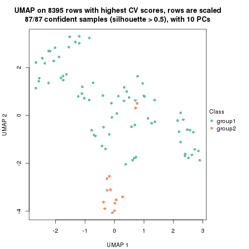
dimension_reduction(res, k = 3, method = "UMAP")
dimension_reduction(res, k = 4, method = "UMAP")
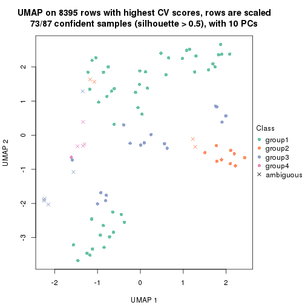
dimension_reduction(res, k = 5, method = "UMAP")
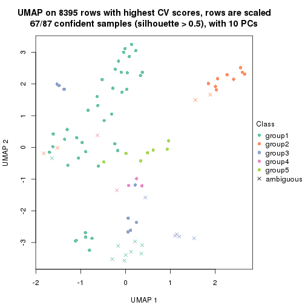
dimension_reduction(res, k = 6, method = "UMAP")
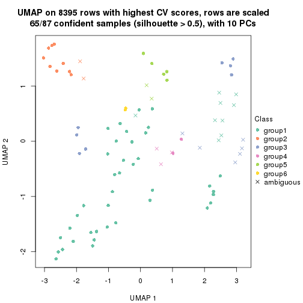
Following heatmap shows how subgroups are split when increasing k:
collect_classes(res)
Test correlation between subgroups and known annotations. If the known annotation is numeric, one-way ANOVA test is applied, and if the known annotation is discrete, chi-squared contingency table test is applied.
test_to_known_factors(res)
#> n tissue(p) individual(p) disease.state(p) k
#> CV:hclust 87 2.01e-05 1.61e-05 1.94e-05 2
#> CV:hclust 60 2.39e-04 4.27e-08 2.41e-04 3
#> CV:hclust 73 9.88e-05 3.62e-12 9.54e-05 4
#> CV:hclust 67 1.99e-07 1.29e-12 2.20e-07 5
#> CV:hclust 65 8.89e-06 7.83e-16 2.20e-06 6
If matrix rows can be associated to genes, consider to use GO_Enrichment(res,
...) to perform function enrichment for the signature genes.
The object with results only for a single top-value method and a single partition method can be extracted as:
res = res_list["CV", "kmeans"]
# you can also extract it by
# res = res_list["CV:kmeans"]
A summary of res and all the functions that can be applied to it:
res
#> A 'ConsensusPartition' object with k = 2, 3, 4, 5, 6.
#> On a matrix with 8395 rows and 87 columns.
#> Top rows (840, 1680, 2519, 3358, 4198) are extracted by 'CV' method.
#> Subgroups are detected by 'kmeans' method.
#> Performed in total 1250 partitions by row resampling.
#> Best k for subgroups seems to be 3.
#>
#> Following methods can be applied to this 'ConsensusPartition' object:
#> [1] "cola_report" "collect_classes" "collect_plots"
#> [4] "collect_stats" "colnames" "compare_signatures"
#> [7] "consensus_heatmap" "dimension_reduction" "functional_enrichment"
#> [10] "get_anno_col" "get_anno" "get_classes"
#> [13] "get_consensus" "get_matrix" "get_membership"
#> [16] "get_param" "get_signatures" "get_stats"
#> [19] "is_best_k" "is_stable_k" "membership_heatmap"
#> [22] "ncol" "nrow" "plot_ecdf"
#> [25] "rownames" "select_partition_number" "show"
#> [28] "suggest_best_k" "test_to_known_factors"
collect_plots() function collects all the plots made from res for all k (number of partitions)
into one single page to provide an easy and fast comparison between different k.
collect_plots(res)
The plots are:
k and the heatmap of
predicted classes for each k.k.k.k.All the plots in panels can be made by individual functions and they are plotted later in this section.
select_partition_number() produces several plots showing different
statistics for choosing “optimized” k. There are following statistics:
k;k, the area increased is defined as \(A_k - A_{k-1}\).The detailed explanations of these statistics can be found in the cola vignette.
Generally speaking, lower PAC score, higher mean silhouette score or higher
concordance corresponds to better partition. Rand index and Jaccard index
measure how similar the current partition is compared to partition with k-1.
If they are too similar, we won't accept k is better than k-1.
select_partition_number(res)
The numeric values for all these statistics can be obtained by get_stats().
get_stats(res)
#> k 1-PAC mean_silhouette concordance area_increased Rand Jaccard
#> 2 2 0.135 0.596 0.786 0.4182 0.630 0.630
#> 3 3 0.334 0.726 0.815 0.4563 0.643 0.470
#> 4 4 0.415 0.522 0.728 0.1427 0.895 0.730
#> 5 5 0.485 0.406 0.630 0.0884 0.837 0.549
#> 6 6 0.531 0.302 0.550 0.0539 0.844 0.471
suggest_best_k() suggests the best \(k\) based on these statistics. The rules are as follows:
NA.suggest_best_k(res)
#> [1] 3
Following shows the table of the partitions (You need to click the show/hide
code output link to see it). The membership matrix (columns with name p*)
is inferred by
clue::cl_consensus()
function with the SE method. Basically the value in the membership matrix
represents the probability to belong to a certain group. The finall class
label for an item is determined with the group with highest probability it
belongs to.
In get_classes() function, the entropy is calculated from the membership
matrix and the silhouette score is calculated from the consensus matrix.
cbind(get_classes(res, k = 2), get_membership(res, k = 2))
#> class entropy silhouette p1 p2
#> GSM5316 1 0.917 0.5155 0.668 0.332
#> GSM5319 1 0.634 0.6879 0.840 0.160
#> GSM5321 1 0.644 0.6902 0.836 0.164
#> GSM5323 1 0.961 0.4341 0.616 0.384
#> GSM5325 1 0.358 0.7054 0.932 0.068
#> GSM5327 2 0.993 0.0229 0.452 0.548
#> GSM5329 1 0.821 0.4920 0.744 0.256
#> GSM5331 1 0.949 0.4150 0.632 0.368
#> GSM5333 1 0.949 0.4150 0.632 0.368
#> GSM5335 1 0.644 0.6902 0.836 0.164
#> GSM5337 1 0.494 0.7125 0.892 0.108
#> GSM5339 2 0.584 0.7500 0.140 0.860
#> GSM5341 2 0.584 0.7500 0.140 0.860
#> GSM5343 1 0.518 0.7096 0.884 0.116
#> GSM5345 1 0.242 0.7025 0.960 0.040
#> GSM5347 1 0.260 0.7043 0.956 0.044
#> GSM5349 1 0.224 0.7091 0.964 0.036
#> GSM5351 2 1.000 0.1833 0.496 0.504
#> GSM5353 1 0.929 0.4985 0.656 0.344
#> GSM5355 1 0.932 0.4924 0.652 0.348
#> GSM5357 1 0.714 0.5646 0.804 0.196
#> GSM5359 1 0.760 0.5276 0.780 0.220
#> GSM5361 1 0.966 0.4557 0.608 0.392
#> GSM5363 1 0.943 0.4776 0.640 0.360
#> GSM5365 1 0.541 0.6964 0.876 0.124
#> GSM5367 1 0.541 0.6964 0.876 0.124
#> GSM5369 1 0.574 0.7140 0.864 0.136
#> GSM5371 1 0.456 0.7136 0.904 0.096
#> GSM5373 2 0.985 0.4169 0.428 0.572
#> GSM5396 1 0.871 0.6039 0.708 0.292
#> GSM5397 1 0.958 0.2011 0.620 0.380
#> GSM5398 1 0.788 0.6381 0.764 0.236
#> GSM5400 1 0.518 0.6673 0.884 0.116
#> GSM5399 1 0.615 0.6418 0.848 0.152
#> GSM5401 2 0.343 0.7777 0.064 0.936
#> GSM5402 1 0.955 0.2151 0.624 0.376
#> GSM5317 1 0.921 0.5150 0.664 0.336
#> GSM5318 1 0.866 0.4506 0.712 0.288
#> GSM5320 1 0.634 0.6902 0.840 0.160
#> GSM5322 1 0.936 0.4856 0.648 0.352
#> GSM5324 1 0.482 0.7132 0.896 0.104
#> GSM5326 1 0.456 0.7127 0.904 0.096
#> GSM5328 1 0.529 0.6722 0.880 0.120
#> GSM5330 1 0.936 0.4233 0.648 0.352
#> GSM5332 1 0.936 0.4233 0.648 0.352
#> GSM5334 1 0.482 0.7135 0.896 0.104
#> GSM5336 1 0.482 0.7135 0.896 0.104
#> GSM5338 2 0.584 0.7500 0.140 0.860
#> GSM5340 2 0.584 0.7500 0.140 0.860
#> GSM5342 1 0.518 0.7096 0.884 0.116
#> GSM5344 1 0.242 0.7025 0.960 0.040
#> GSM5346 1 0.714 0.6910 0.804 0.196
#> GSM5348 2 0.981 0.3457 0.420 0.580
#> GSM5350 2 0.998 0.2756 0.476 0.524
#> GSM5352 1 0.917 0.5155 0.668 0.332
#> GSM5354 1 0.917 0.5155 0.668 0.332
#> GSM5356 1 0.866 0.4179 0.712 0.288
#> GSM5358 1 0.866 0.4179 0.712 0.288
#> GSM5360 1 0.949 0.4720 0.632 0.368
#> GSM5362 1 0.975 0.4469 0.592 0.408
#> GSM5364 1 0.909 0.3914 0.676 0.324
#> GSM5366 1 0.855 0.4849 0.720 0.280
#> GSM5368 1 0.821 0.6445 0.744 0.256
#> GSM5370 1 0.615 0.6961 0.848 0.152
#> GSM5372 2 0.999 0.3343 0.480 0.520
#> GSM5374 1 0.821 0.4699 0.744 0.256
#> GSM5375 1 0.141 0.7045 0.980 0.020
#> GSM5376 2 0.343 0.7777 0.064 0.936
#> GSM5377 2 0.343 0.7777 0.064 0.936
#> GSM5378 2 0.388 0.7764 0.076 0.924
#> GSM5379 2 0.343 0.7777 0.064 0.936
#> GSM5380 1 0.118 0.7045 0.984 0.016
#> GSM5381 1 0.141 0.7045 0.980 0.020
#> GSM5382 1 0.443 0.7131 0.908 0.092
#> GSM5383 1 0.443 0.7131 0.908 0.092
#> GSM5384 1 0.260 0.7000 0.956 0.044
#> GSM5385 1 0.595 0.6348 0.856 0.144
#> GSM5386 2 0.358 0.7753 0.068 0.932
#> GSM5387 2 0.343 0.7777 0.064 0.936
#> GSM5392 1 0.295 0.6971 0.948 0.052
#> GSM5388 2 0.595 0.7443 0.144 0.856
#> GSM5389 2 0.855 0.6194 0.280 0.720
#> GSM5390 2 0.388 0.7764 0.076 0.924
#> GSM5391 2 0.388 0.7764 0.076 0.924
#> GSM5393 1 0.917 0.5155 0.668 0.332
#> GSM5394 1 0.311 0.7124 0.944 0.056
#> GSM5395 1 0.788 0.6272 0.764 0.236
cbind(get_classes(res, k = 3), get_membership(res, k = 3))
#> class entropy silhouette p1 p2 p3
#> GSM5316 1 0.230 0.83269 0.944 0.036 0.020
#> GSM5319 1 0.695 0.47797 0.620 0.028 0.352
#> GSM5321 1 0.250 0.81711 0.928 0.004 0.068
#> GSM5323 1 0.311 0.80423 0.900 0.096 0.004
#> GSM5325 3 0.544 0.74273 0.260 0.004 0.736
#> GSM5327 1 0.269 0.83077 0.932 0.032 0.036
#> GSM5329 3 0.502 0.81016 0.192 0.012 0.796
#> GSM5331 3 0.698 0.65510 0.212 0.076 0.712
#> GSM5333 3 0.698 0.65510 0.212 0.076 0.712
#> GSM5335 1 0.153 0.82519 0.964 0.004 0.032
#> GSM5337 1 0.259 0.81551 0.924 0.004 0.072
#> GSM5339 2 0.610 0.72620 0.208 0.752 0.040
#> GSM5341 2 0.610 0.72620 0.208 0.752 0.040
#> GSM5343 1 0.394 0.78450 0.844 0.000 0.156
#> GSM5345 3 0.593 0.75298 0.296 0.008 0.696
#> GSM5347 3 0.596 0.74922 0.300 0.008 0.692
#> GSM5349 3 0.633 0.70163 0.332 0.012 0.656
#> GSM5351 3 0.604 0.70808 0.172 0.056 0.772
#> GSM5353 1 0.249 0.82843 0.936 0.048 0.016
#> GSM5355 1 0.295 0.82475 0.920 0.060 0.020
#> GSM5357 3 0.384 0.81569 0.116 0.012 0.872
#> GSM5359 3 0.400 0.81560 0.116 0.016 0.868
#> GSM5361 1 0.426 0.77139 0.848 0.140 0.012
#> GSM5363 1 0.420 0.77549 0.852 0.136 0.012
#> GSM5365 1 0.831 0.47739 0.576 0.100 0.324
#> GSM5367 1 0.831 0.47739 0.576 0.100 0.324
#> GSM5369 1 0.575 0.58968 0.700 0.004 0.296
#> GSM5371 1 0.470 0.73416 0.788 0.000 0.212
#> GSM5373 2 0.690 0.24332 0.016 0.548 0.436
#> GSM5396 1 0.393 0.78085 0.880 0.028 0.092
#> GSM5397 3 0.206 0.75160 0.008 0.044 0.948
#> GSM5398 1 0.733 0.37261 0.576 0.036 0.388
#> GSM5400 3 0.175 0.77110 0.028 0.012 0.960
#> GSM5399 3 0.481 0.80669 0.188 0.008 0.804
#> GSM5401 2 0.188 0.83691 0.032 0.956 0.012
#> GSM5402 3 0.223 0.75342 0.012 0.044 0.944
#> GSM5317 1 0.162 0.83044 0.964 0.024 0.012
#> GSM5318 3 0.200 0.75742 0.012 0.036 0.952
#> GSM5320 1 0.236 0.82088 0.928 0.000 0.072
#> GSM5322 1 0.217 0.82600 0.944 0.048 0.008
#> GSM5324 3 0.578 0.70169 0.300 0.004 0.696
#> GSM5326 1 0.440 0.76093 0.812 0.000 0.188
#> GSM5328 3 0.452 0.80644 0.180 0.004 0.816
#> GSM5330 3 0.644 0.68713 0.168 0.076 0.756
#> GSM5332 3 0.644 0.68713 0.168 0.076 0.756
#> GSM5334 1 0.268 0.81392 0.920 0.004 0.076
#> GSM5336 1 0.268 0.81392 0.920 0.004 0.076
#> GSM5338 2 0.610 0.72620 0.208 0.752 0.040
#> GSM5340 2 0.610 0.72620 0.208 0.752 0.040
#> GSM5342 1 0.394 0.78450 0.844 0.000 0.156
#> GSM5344 3 0.586 0.75981 0.288 0.008 0.704
#> GSM5346 1 0.685 -0.07047 0.568 0.016 0.416
#> GSM5348 3 0.818 0.68770 0.208 0.152 0.640
#> GSM5350 3 0.814 0.69046 0.204 0.152 0.644
#> GSM5352 1 0.238 0.83021 0.940 0.044 0.016
#> GSM5354 1 0.253 0.83070 0.936 0.044 0.020
#> GSM5356 3 0.347 0.79066 0.056 0.040 0.904
#> GSM5358 3 0.347 0.79066 0.056 0.040 0.904
#> GSM5360 1 0.420 0.77549 0.852 0.136 0.012
#> GSM5362 1 0.441 0.76871 0.844 0.140 0.016
#> GSM5364 3 0.638 0.76517 0.104 0.128 0.768
#> GSM5366 3 0.639 0.77196 0.116 0.116 0.768
#> GSM5368 1 0.383 0.82365 0.880 0.020 0.100
#> GSM5370 3 0.607 0.67670 0.316 0.008 0.676
#> GSM5372 3 0.596 0.57407 0.016 0.264 0.720
#> GSM5374 3 0.437 0.81119 0.108 0.032 0.860
#> GSM5375 3 0.450 0.79903 0.196 0.000 0.804
#> GSM5376 2 0.188 0.83691 0.032 0.956 0.012
#> GSM5377 2 0.188 0.83691 0.032 0.956 0.012
#> GSM5378 2 0.175 0.83581 0.028 0.960 0.012
#> GSM5379 2 0.188 0.83691 0.032 0.956 0.012
#> GSM5380 3 0.450 0.79903 0.196 0.000 0.804
#> GSM5381 3 0.450 0.79903 0.196 0.000 0.804
#> GSM5382 1 0.465 0.74561 0.792 0.000 0.208
#> GSM5383 1 0.460 0.74861 0.796 0.000 0.204
#> GSM5384 3 0.435 0.80341 0.184 0.000 0.816
#> GSM5385 3 0.452 0.80644 0.180 0.004 0.816
#> GSM5386 2 0.188 0.83691 0.032 0.956 0.012
#> GSM5387 2 0.188 0.83691 0.032 0.956 0.012
#> GSM5392 3 0.406 0.80968 0.164 0.000 0.836
#> GSM5388 2 0.815 0.12736 0.072 0.520 0.408
#> GSM5389 2 0.774 0.00199 0.048 0.504 0.448
#> GSM5390 2 0.175 0.83581 0.028 0.960 0.012
#> GSM5391 2 0.175 0.83581 0.028 0.960 0.012
#> GSM5393 1 0.223 0.83010 0.944 0.044 0.012
#> GSM5394 3 0.625 0.51417 0.376 0.004 0.620
#> GSM5395 1 0.148 0.83475 0.968 0.012 0.020
cbind(get_classes(res, k = 4), get_membership(res, k = 4))
#> class entropy silhouette p1 p2 p3 p4
#> GSM5316 1 0.1362 0.72261 0.964 0.020 0.012 0.004
#> GSM5319 3 0.7143 0.16259 0.408 0.000 0.460 0.132
#> GSM5321 1 0.4842 0.64813 0.760 0.000 0.192 0.048
#> GSM5323 1 0.1953 0.72166 0.940 0.044 0.012 0.004
#> GSM5325 4 0.6439 0.46221 0.172 0.000 0.180 0.648
#> GSM5327 1 0.7088 0.44257 0.608 0.020 0.252 0.120
#> GSM5329 4 0.5694 0.54223 0.080 0.000 0.224 0.696
#> GSM5331 3 0.6589 0.59952 0.100 0.004 0.608 0.288
#> GSM5333 3 0.6589 0.59952 0.100 0.004 0.608 0.288
#> GSM5335 1 0.4365 0.66201 0.784 0.000 0.188 0.028
#> GSM5337 1 0.4801 0.65184 0.764 0.000 0.188 0.048
#> GSM5339 2 0.8099 0.49664 0.292 0.532 0.084 0.092
#> GSM5341 2 0.8099 0.49664 0.292 0.532 0.084 0.092
#> GSM5343 1 0.5407 0.63402 0.740 0.000 0.108 0.152
#> GSM5345 4 0.6574 0.29814 0.084 0.000 0.384 0.532
#> GSM5347 4 0.6615 0.29976 0.084 0.000 0.404 0.512
#> GSM5349 4 0.7369 0.15253 0.160 0.000 0.408 0.432
#> GSM5351 4 0.7519 0.12649 0.080 0.036 0.420 0.464
#> GSM5353 1 0.1816 0.71622 0.948 0.024 0.024 0.004
#> GSM5355 1 0.2019 0.71227 0.940 0.032 0.024 0.004
#> GSM5357 4 0.3216 0.57235 0.044 0.000 0.076 0.880
#> GSM5359 4 0.3216 0.57235 0.044 0.000 0.076 0.880
#> GSM5361 1 0.4339 0.67373 0.844 0.064 0.052 0.040
#> GSM5363 1 0.2546 0.69805 0.912 0.060 0.028 0.000
#> GSM5365 1 0.8685 0.15973 0.488 0.092 0.144 0.276
#> GSM5367 1 0.8685 0.15973 0.488 0.092 0.144 0.276
#> GSM5369 4 0.7500 0.00957 0.404 0.000 0.180 0.416
#> GSM5371 1 0.7432 0.18863 0.472 0.000 0.180 0.348
#> GSM5373 4 0.6942 0.35831 0.012 0.288 0.108 0.592
#> GSM5396 1 0.4996 0.50849 0.764 0.012 0.188 0.036
#> GSM5397 4 0.4868 0.34736 0.012 0.000 0.304 0.684
#> GSM5398 3 0.7249 0.39299 0.348 0.000 0.496 0.156
#> GSM5400 4 0.4690 0.36734 0.012 0.000 0.276 0.712
#> GSM5399 4 0.4817 0.56425 0.088 0.000 0.128 0.784
#> GSM5401 2 0.0376 0.78817 0.004 0.992 0.004 0.000
#> GSM5402 4 0.4770 0.36128 0.012 0.000 0.288 0.700
#> GSM5317 1 0.1362 0.72261 0.964 0.020 0.012 0.004
#> GSM5318 4 0.4360 0.38838 0.008 0.000 0.248 0.744
#> GSM5320 1 0.4046 0.68678 0.828 0.000 0.124 0.048
#> GSM5322 1 0.1471 0.72459 0.960 0.024 0.012 0.004
#> GSM5324 4 0.6686 0.42373 0.200 0.000 0.180 0.620
#> GSM5326 1 0.5352 0.62030 0.740 0.000 0.092 0.168
#> GSM5328 4 0.4874 0.57558 0.056 0.000 0.180 0.764
#> GSM5330 3 0.6469 0.58128 0.088 0.004 0.612 0.296
#> GSM5332 3 0.6510 0.57462 0.088 0.004 0.604 0.304
#> GSM5334 1 0.4994 0.63419 0.744 0.000 0.208 0.048
#> GSM5336 1 0.4994 0.63419 0.744 0.000 0.208 0.048
#> GSM5338 2 0.8149 0.49191 0.292 0.528 0.084 0.096
#> GSM5340 2 0.8149 0.49191 0.292 0.528 0.084 0.096
#> GSM5342 1 0.5731 0.60716 0.712 0.000 0.116 0.172
#> GSM5344 4 0.6440 0.30503 0.080 0.000 0.356 0.564
#> GSM5346 3 0.7793 0.16069 0.300 0.000 0.424 0.276
#> GSM5348 4 0.8022 0.18307 0.084 0.068 0.372 0.476
#> GSM5350 4 0.7957 0.19360 0.084 0.064 0.368 0.484
#> GSM5352 1 0.1816 0.71622 0.948 0.024 0.024 0.004
#> GSM5354 1 0.1816 0.71622 0.948 0.024 0.024 0.004
#> GSM5356 4 0.3847 0.54247 0.020 0.012 0.124 0.844
#> GSM5358 4 0.3847 0.54247 0.020 0.012 0.124 0.844
#> GSM5360 1 0.4092 0.68191 0.856 0.060 0.048 0.036
#> GSM5362 1 0.4426 0.67077 0.840 0.064 0.052 0.044
#> GSM5364 4 0.6513 0.47190 0.060 0.096 0.132 0.712
#> GSM5366 4 0.6594 0.47069 0.068 0.092 0.132 0.708
#> GSM5368 1 0.6683 0.47503 0.636 0.004 0.168 0.192
#> GSM5370 4 0.6754 0.41414 0.204 0.000 0.184 0.612
#> GSM5372 4 0.5825 0.51648 0.012 0.132 0.124 0.732
#> GSM5374 4 0.4059 0.56648 0.040 0.004 0.124 0.832
#> GSM5375 4 0.5092 0.54453 0.096 0.000 0.140 0.764
#> GSM5376 2 0.0657 0.78678 0.004 0.984 0.012 0.000
#> GSM5377 2 0.0657 0.78678 0.004 0.984 0.012 0.000
#> GSM5378 2 0.0188 0.78862 0.004 0.996 0.000 0.000
#> GSM5379 2 0.0188 0.78862 0.004 0.996 0.000 0.000
#> GSM5380 4 0.5102 0.54156 0.100 0.000 0.136 0.764
#> GSM5381 4 0.5199 0.54172 0.100 0.000 0.144 0.756
#> GSM5382 1 0.5823 0.59519 0.704 0.000 0.120 0.176
#> GSM5383 1 0.5823 0.59519 0.704 0.000 0.120 0.176
#> GSM5384 4 0.4130 0.57383 0.064 0.000 0.108 0.828
#> GSM5385 4 0.4465 0.58486 0.056 0.000 0.144 0.800
#> GSM5386 2 0.0188 0.78862 0.004 0.996 0.000 0.000
#> GSM5387 2 0.0188 0.78862 0.004 0.996 0.000 0.000
#> GSM5392 4 0.4100 0.57256 0.048 0.000 0.128 0.824
#> GSM5388 2 0.7471 -0.11513 0.020 0.460 0.104 0.416
#> GSM5389 4 0.6661 0.09372 0.000 0.456 0.084 0.460
#> GSM5390 2 0.0376 0.78818 0.004 0.992 0.004 0.000
#> GSM5391 2 0.0376 0.78818 0.004 0.992 0.004 0.000
#> GSM5393 1 0.1520 0.71859 0.956 0.020 0.024 0.000
#> GSM5394 4 0.6179 0.46923 0.188 0.000 0.140 0.672
#> GSM5395 1 0.2060 0.72032 0.932 0.000 0.052 0.016
cbind(get_classes(res, k = 5), get_membership(res, k = 5))
#> class entropy silhouette p1 p2 p3 p4 p5
#> GSM5316 1 0.1281 0.62589 0.956 0.000 0.012 0.032 0.000
#> GSM5319 3 0.7217 0.29435 0.276 0.000 0.492 0.184 0.048
#> GSM5321 1 0.6328 0.49564 0.588 0.000 0.120 0.264 0.028
#> GSM5323 1 0.1770 0.62827 0.936 0.008 0.008 0.048 0.000
#> GSM5325 4 0.5526 0.41198 0.048 0.000 0.016 0.592 0.344
#> GSM5327 4 0.7101 -0.07895 0.372 0.004 0.116 0.460 0.048
#> GSM5329 5 0.5195 -0.07352 0.000 0.000 0.048 0.388 0.564
#> GSM5331 3 0.5283 0.60379 0.036 0.004 0.708 0.044 0.208
#> GSM5333 3 0.5283 0.60379 0.036 0.004 0.708 0.044 0.208
#> GSM5335 1 0.6039 0.50281 0.608 0.000 0.120 0.256 0.016
#> GSM5337 1 0.6361 0.49302 0.592 0.000 0.120 0.256 0.032
#> GSM5339 1 0.8200 0.00336 0.364 0.344 0.032 0.212 0.048
#> GSM5341 1 0.8200 0.00336 0.364 0.344 0.032 0.212 0.048
#> GSM5343 1 0.6067 0.44001 0.580 0.000 0.020 0.308 0.092
#> GSM5345 5 0.6255 0.11392 0.008 0.000 0.260 0.164 0.568
#> GSM5347 5 0.6552 0.08340 0.012 0.000 0.260 0.192 0.536
#> GSM5349 4 0.7774 -0.09151 0.044 0.004 0.300 0.336 0.316
#> GSM5351 3 0.7657 -0.07680 0.020 0.016 0.360 0.332 0.272
#> GSM5353 1 0.0451 0.62173 0.988 0.000 0.004 0.008 0.000
#> GSM5355 1 0.0451 0.62173 0.988 0.000 0.004 0.008 0.000
#> GSM5357 5 0.5315 0.44334 0.000 0.004 0.148 0.160 0.688
#> GSM5359 5 0.5315 0.44334 0.000 0.004 0.148 0.160 0.688
#> GSM5361 1 0.4831 0.52297 0.768 0.032 0.028 0.152 0.020
#> GSM5363 1 0.2149 0.60640 0.924 0.028 0.012 0.036 0.000
#> GSM5365 1 0.9539 -0.00697 0.284 0.096 0.128 0.256 0.236
#> GSM5367 1 0.9539 -0.00697 0.284 0.096 0.128 0.256 0.236
#> GSM5369 4 0.6150 0.43868 0.160 0.000 0.012 0.600 0.228
#> GSM5371 4 0.6075 0.42320 0.176 0.000 0.008 0.604 0.212
#> GSM5373 4 0.7300 0.15517 0.000 0.116 0.084 0.480 0.320
#> GSM5396 1 0.4548 0.47272 0.752 0.000 0.120 0.128 0.000
#> GSM5397 4 0.6802 -0.21821 0.000 0.000 0.300 0.372 0.328
#> GSM5398 3 0.6941 0.39143 0.228 0.000 0.544 0.184 0.044
#> GSM5400 5 0.6680 0.20177 0.000 0.000 0.252 0.320 0.428
#> GSM5399 4 0.5431 0.19127 0.004 0.000 0.048 0.500 0.448
#> GSM5401 2 0.0613 0.98957 0.004 0.984 0.004 0.008 0.000
#> GSM5402 5 0.6773 0.16652 0.000 0.000 0.276 0.344 0.380
#> GSM5317 1 0.1364 0.62584 0.952 0.000 0.012 0.036 0.000
#> GSM5318 5 0.6287 0.30663 0.000 0.000 0.224 0.240 0.536
#> GSM5320 1 0.5681 0.53745 0.640 0.000 0.048 0.272 0.040
#> GSM5322 1 0.1484 0.62761 0.944 0.000 0.008 0.048 0.000
#> GSM5324 4 0.5704 0.42902 0.064 0.000 0.016 0.592 0.328
#> GSM5326 1 0.6176 0.43730 0.580 0.000 0.020 0.292 0.108
#> GSM5328 5 0.4638 0.09847 0.000 0.000 0.028 0.324 0.648
#> GSM5330 3 0.5283 0.60379 0.036 0.004 0.708 0.044 0.208
#> GSM5332 3 0.5283 0.60379 0.036 0.004 0.708 0.044 0.208
#> GSM5334 1 0.6566 0.47429 0.572 0.000 0.132 0.260 0.036
#> GSM5336 1 0.6566 0.47429 0.572 0.000 0.132 0.260 0.036
#> GSM5338 1 0.8200 0.00336 0.364 0.344 0.032 0.212 0.048
#> GSM5340 1 0.8200 0.00336 0.364 0.344 0.032 0.212 0.048
#> GSM5342 1 0.6364 0.33734 0.512 0.000 0.020 0.364 0.104
#> GSM5344 5 0.6090 0.12542 0.008 0.000 0.260 0.144 0.588
#> GSM5346 3 0.8175 0.03936 0.112 0.000 0.344 0.308 0.236
#> GSM5348 4 0.7874 -0.06084 0.020 0.028 0.324 0.348 0.280
#> GSM5350 4 0.7887 -0.05547 0.020 0.028 0.324 0.336 0.292
#> GSM5352 1 0.0451 0.62173 0.988 0.000 0.004 0.008 0.000
#> GSM5354 1 0.0451 0.62173 0.988 0.000 0.004 0.008 0.000
#> GSM5356 5 0.5389 0.44371 0.000 0.004 0.160 0.156 0.680
#> GSM5358 5 0.5389 0.44371 0.000 0.004 0.160 0.156 0.680
#> GSM5360 1 0.4529 0.54488 0.796 0.032 0.028 0.124 0.020
#> GSM5362 1 0.4871 0.51975 0.764 0.032 0.028 0.156 0.020
#> GSM5364 5 0.7690 0.30166 0.004 0.096 0.160 0.252 0.488
#> GSM5366 5 0.7690 0.30166 0.004 0.096 0.160 0.252 0.488
#> GSM5368 4 0.5908 0.17560 0.340 0.000 0.012 0.564 0.084
#> GSM5370 4 0.5590 0.42916 0.056 0.000 0.016 0.600 0.328
#> GSM5372 4 0.6620 0.16740 0.000 0.048 0.080 0.488 0.384
#> GSM5374 5 0.0404 0.49393 0.000 0.000 0.000 0.012 0.988
#> GSM5375 5 0.1568 0.48629 0.020 0.000 0.000 0.036 0.944
#> GSM5376 2 0.1016 0.98441 0.004 0.972 0.012 0.008 0.004
#> GSM5377 2 0.1016 0.98441 0.004 0.972 0.012 0.008 0.004
#> GSM5378 2 0.0162 0.99265 0.004 0.996 0.000 0.000 0.000
#> GSM5379 2 0.0162 0.99265 0.004 0.996 0.000 0.000 0.000
#> GSM5380 5 0.2104 0.47892 0.024 0.000 0.000 0.060 0.916
#> GSM5381 5 0.2104 0.47892 0.024 0.000 0.000 0.060 0.916
#> GSM5382 1 0.6788 0.40023 0.528 0.000 0.036 0.296 0.140
#> GSM5383 1 0.6788 0.40023 0.528 0.000 0.036 0.296 0.140
#> GSM5384 5 0.1908 0.46364 0.000 0.000 0.000 0.092 0.908
#> GSM5385 5 0.3395 0.28238 0.000 0.000 0.000 0.236 0.764
#> GSM5386 2 0.0162 0.99265 0.004 0.996 0.000 0.000 0.000
#> GSM5387 2 0.0162 0.99265 0.004 0.996 0.000 0.000 0.000
#> GSM5392 5 0.2390 0.46074 0.000 0.000 0.020 0.084 0.896
#> GSM5388 5 0.7186 0.13464 0.004 0.380 0.024 0.184 0.408
#> GSM5389 5 0.7028 0.17136 0.004 0.380 0.024 0.156 0.436
#> GSM5390 2 0.0451 0.99066 0.004 0.988 0.008 0.000 0.000
#> GSM5391 2 0.0451 0.99066 0.004 0.988 0.008 0.000 0.000
#> GSM5393 1 0.0671 0.62259 0.980 0.000 0.004 0.016 0.000
#> GSM5394 4 0.6068 0.32515 0.064 0.000 0.028 0.540 0.368
#> GSM5395 1 0.3476 0.60543 0.804 0.000 0.020 0.176 0.000
cbind(get_classes(res, k = 6), get_membership(res, k = 6))
#> class entropy silhouette p1 p2 p3 p4 p5 p6
#> GSM5316 4 0.3742 0.0920 0.348 0.000 0.004 0.648 0.000 0.000
#> GSM5319 6 0.7258 0.0858 0.096 0.000 0.160 0.280 0.016 0.448
#> GSM5321 4 0.3736 0.3691 0.012 0.000 0.200 0.768 0.012 0.008
#> GSM5323 4 0.3833 0.1039 0.344 0.000 0.008 0.648 0.000 0.000
#> GSM5325 3 0.8469 -0.0137 0.076 0.000 0.296 0.268 0.220 0.140
#> GSM5327 3 0.6146 0.1140 0.144 0.000 0.504 0.324 0.004 0.024
#> GSM5329 5 0.6999 0.1257 0.056 0.000 0.332 0.072 0.472 0.068
#> GSM5331 3 0.7838 0.1715 0.176 0.000 0.388 0.044 0.104 0.288
#> GSM5333 3 0.7838 0.1715 0.176 0.000 0.388 0.044 0.104 0.288
#> GSM5335 4 0.3795 0.3660 0.012 0.000 0.196 0.768 0.016 0.008
#> GSM5337 4 0.3958 0.3673 0.012 0.000 0.196 0.760 0.024 0.008
#> GSM5339 1 0.7170 0.5439 0.484 0.268 0.152 0.072 0.008 0.016
#> GSM5341 1 0.7170 0.5439 0.484 0.268 0.152 0.072 0.008 0.016
#> GSM5343 4 0.6121 0.2986 0.100 0.000 0.060 0.656 0.132 0.052
#> GSM5345 3 0.5399 0.2532 0.012 0.000 0.560 0.060 0.356 0.012
#> GSM5347 3 0.5367 0.2651 0.012 0.000 0.572 0.060 0.344 0.012
#> GSM5349 3 0.4095 0.4061 0.004 0.000 0.768 0.092 0.132 0.004
#> GSM5351 3 0.4549 0.3754 0.004 0.004 0.772 0.060 0.092 0.068
#> GSM5353 4 0.3993 -0.1192 0.476 0.000 0.004 0.520 0.000 0.000
#> GSM5355 4 0.3993 -0.1192 0.476 0.000 0.004 0.520 0.000 0.000
#> GSM5357 5 0.6771 0.2730 0.036 0.000 0.212 0.016 0.484 0.252
#> GSM5359 5 0.6771 0.2730 0.036 0.000 0.212 0.016 0.484 0.252
#> GSM5361 1 0.5619 0.4445 0.592 0.012 0.064 0.308 0.008 0.016
#> GSM5363 1 0.4705 0.1446 0.504 0.012 0.004 0.464 0.000 0.016
#> GSM5365 4 0.9253 -0.1585 0.160 0.044 0.084 0.272 0.236 0.204
#> GSM5367 4 0.9253 -0.1585 0.160 0.044 0.084 0.272 0.236 0.204
#> GSM5369 4 0.8424 -0.2848 0.076 0.000 0.284 0.308 0.188 0.144
#> GSM5371 4 0.8345 -0.2647 0.076 0.000 0.280 0.328 0.188 0.128
#> GSM5373 6 0.8948 0.2143 0.104 0.052 0.256 0.068 0.192 0.328
#> GSM5396 1 0.5974 0.2435 0.428 0.000 0.000 0.336 0.000 0.236
#> GSM5397 6 0.5859 0.3876 0.004 0.000 0.104 0.076 0.180 0.636
#> GSM5398 6 0.7187 0.0827 0.128 0.000 0.124 0.252 0.016 0.480
#> GSM5400 6 0.5121 0.3588 0.004 0.000 0.016 0.060 0.304 0.616
#> GSM5399 3 0.8195 -0.1931 0.040 0.000 0.292 0.148 0.288 0.232
#> GSM5401 2 0.1693 0.9452 0.044 0.932 0.020 0.000 0.000 0.004
#> GSM5402 6 0.5425 0.3828 0.004 0.000 0.044 0.060 0.264 0.628
#> GSM5317 4 0.3742 0.0920 0.348 0.000 0.004 0.648 0.000 0.000
#> GSM5318 6 0.5004 0.2683 0.000 0.000 0.036 0.024 0.368 0.572
#> GSM5320 4 0.2113 0.3871 0.012 0.000 0.028 0.920 0.032 0.008
#> GSM5322 4 0.3833 0.1039 0.344 0.000 0.008 0.648 0.000 0.000
#> GSM5324 3 0.8492 -0.0119 0.080 0.000 0.296 0.268 0.216 0.140
#> GSM5326 4 0.3979 0.3666 0.056 0.000 0.004 0.808 0.076 0.056
#> GSM5328 5 0.6195 0.2472 0.056 0.000 0.284 0.032 0.572 0.056
#> GSM5330 3 0.7838 0.1715 0.176 0.000 0.388 0.044 0.104 0.288
#> GSM5332 3 0.7838 0.1715 0.176 0.000 0.388 0.044 0.104 0.288
#> GSM5334 4 0.3996 0.3653 0.008 0.000 0.204 0.752 0.028 0.008
#> GSM5336 4 0.3996 0.3653 0.008 0.000 0.204 0.752 0.028 0.008
#> GSM5338 1 0.7170 0.5439 0.484 0.268 0.152 0.072 0.008 0.016
#> GSM5340 1 0.7170 0.5439 0.484 0.268 0.152 0.072 0.008 0.016
#> GSM5342 4 0.6661 0.2696 0.108 0.000 0.088 0.608 0.140 0.056
#> GSM5344 3 0.5355 0.2311 0.008 0.000 0.544 0.060 0.376 0.012
#> GSM5346 3 0.5148 0.4201 0.032 0.000 0.716 0.140 0.092 0.020
#> GSM5348 3 0.3548 0.4154 0.004 0.004 0.828 0.068 0.088 0.008
#> GSM5350 3 0.3492 0.4148 0.004 0.004 0.832 0.064 0.088 0.008
#> GSM5352 4 0.3993 -0.1192 0.476 0.000 0.004 0.520 0.000 0.000
#> GSM5354 4 0.3993 -0.1192 0.476 0.000 0.004 0.520 0.000 0.000
#> GSM5356 5 0.6793 0.2621 0.036 0.000 0.236 0.012 0.464 0.252
#> GSM5358 5 0.6793 0.2621 0.036 0.000 0.236 0.012 0.464 0.252
#> GSM5360 1 0.5465 0.4216 0.592 0.012 0.048 0.324 0.008 0.016
#> GSM5362 1 0.5654 0.4473 0.592 0.012 0.068 0.304 0.008 0.016
#> GSM5364 5 0.8837 0.1489 0.136 0.044 0.120 0.080 0.360 0.260
#> GSM5366 5 0.8862 0.1485 0.136 0.044 0.120 0.084 0.360 0.256
#> GSM5368 4 0.8139 -0.1624 0.112 0.000 0.276 0.388 0.112 0.112
#> GSM5370 3 0.8461 -0.0285 0.072 0.000 0.304 0.264 0.208 0.152
#> GSM5372 6 0.8624 0.1914 0.104 0.016 0.264 0.076 0.216 0.324
#> GSM5374 5 0.1332 0.4954 0.008 0.000 0.028 0.000 0.952 0.012
#> GSM5375 5 0.1317 0.4909 0.008 0.000 0.016 0.016 0.956 0.004
#> GSM5376 2 0.2705 0.9247 0.048 0.892 0.032 0.008 0.004 0.016
#> GSM5377 2 0.2705 0.9247 0.048 0.892 0.032 0.008 0.004 0.016
#> GSM5378 2 0.0000 0.9649 0.000 1.000 0.000 0.000 0.000 0.000
#> GSM5379 2 0.0000 0.9649 0.000 1.000 0.000 0.000 0.000 0.000
#> GSM5380 5 0.1230 0.4883 0.000 0.000 0.008 0.028 0.956 0.008
#> GSM5381 5 0.1230 0.4883 0.000 0.000 0.008 0.028 0.956 0.008
#> GSM5382 4 0.3661 0.3766 0.008 0.000 0.012 0.796 0.160 0.024
#> GSM5383 4 0.3661 0.3766 0.008 0.000 0.012 0.796 0.160 0.024
#> GSM5384 5 0.1332 0.4901 0.008 0.000 0.012 0.028 0.952 0.000
#> GSM5385 5 0.4223 0.4061 0.032 0.000 0.132 0.020 0.784 0.032
#> GSM5386 2 0.0260 0.9643 0.000 0.992 0.008 0.000 0.000 0.000
#> GSM5387 2 0.0000 0.9649 0.000 1.000 0.000 0.000 0.000 0.000
#> GSM5392 5 0.2613 0.4668 0.008 0.000 0.040 0.012 0.892 0.048
#> GSM5388 5 0.8160 0.2087 0.092 0.320 0.156 0.032 0.368 0.032
#> GSM5389 5 0.8120 0.2142 0.092 0.320 0.148 0.032 0.376 0.032
#> GSM5390 2 0.0622 0.9601 0.000 0.980 0.008 0.000 0.000 0.012
#> GSM5391 2 0.0622 0.9601 0.000 0.980 0.008 0.000 0.000 0.012
#> GSM5393 4 0.3975 -0.1022 0.452 0.000 0.004 0.544 0.000 0.000
#> GSM5394 6 0.8494 0.0805 0.064 0.000 0.252 0.168 0.252 0.264
#> GSM5395 4 0.2805 0.2711 0.184 0.000 0.004 0.812 0.000 0.000
Heatmaps for the consensus matrix. It visualizes the probability of two samples to be in a same group.
consensus_heatmap(res, k = 2)
consensus_heatmap(res, k = 3)
consensus_heatmap(res, k = 4)
consensus_heatmap(res, k = 5)
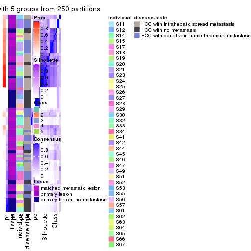
consensus_heatmap(res, k = 6)
Heatmaps for the membership of samples in all partitions to see how consistent they are:
membership_heatmap(res, k = 2)
membership_heatmap(res, k = 3)
membership_heatmap(res, k = 4)
membership_heatmap(res, k = 5)
membership_heatmap(res, k = 6)
As soon as we have had the classes for columns, we can look for signatures which are significantly different between classes which can be candidate marks for certain classes. Following are the heatmaps for signatures.
Signature heatmaps where rows are scaled:
get_signatures(res, k = 2)
#> Error: The width or height of the raster image is zero, maybe you forget to turn off the
#> previous graphic device or it was corrupted. Run `dev.off()` to close it.

get_signatures(res, k = 3)
#> Error: The width or height of the raster image is zero, maybe you forget to turn off the
#> previous graphic device or it was corrupted. Run `dev.off()` to close it.

get_signatures(res, k = 4)
#> Error: The width or height of the raster image is zero, maybe you forget to turn off the
#> previous graphic device or it was corrupted. Run `dev.off()` to close it.

get_signatures(res, k = 5)
#> Error: The width or height of the raster image is zero, maybe you forget to turn off the
#> previous graphic device or it was corrupted. Run `dev.off()` to close it.

get_signatures(res, k = 6)
#> Error: The width or height of the raster image is zero, maybe you forget to turn off the
#> previous graphic device or it was corrupted. Run `dev.off()` to close it.

Signature heatmaps where rows are not scaled:
get_signatures(res, k = 2, scale_rows = FALSE)
#> Error: The width or height of the raster image is zero, maybe you forget to turn off the
#> previous graphic device or it was corrupted. Run `dev.off()` to close it.

get_signatures(res, k = 3, scale_rows = FALSE)
#> Error: The width or height of the raster image is zero, maybe you forget to turn off the
#> previous graphic device or it was corrupted. Run `dev.off()` to close it.

get_signatures(res, k = 4, scale_rows = FALSE)
#> Error: The width or height of the raster image is zero, maybe you forget to turn off the
#> previous graphic device or it was corrupted. Run `dev.off()` to close it.

get_signatures(res, k = 5, scale_rows = FALSE)
#> Error: The width or height of the raster image is zero, maybe you forget to turn off the
#> previous graphic device or it was corrupted. Run `dev.off()` to close it.

get_signatures(res, k = 6, scale_rows = FALSE)
#> Error: The width or height of the raster image is zero, maybe you forget to turn off the
#> previous graphic device or it was corrupted. Run `dev.off()` to close it.

Compare the overlap of signatures from different k:
compare_signatures(res)
get_signature() returns a data frame invisibly. TO get the list of signatures, the function
call should be assigned to a variable explicitly. In following code, if plot argument is set
to FALSE, no heatmap is plotted while only the differential analysis is performed.
# code only for demonstration
tb = get_signature(res, k = ..., plot = FALSE)
An example of the output of tb is:
#> which_row fdr mean_1 mean_2 scaled_mean_1 scaled_mean_2 km
#> 1 38 0.042760348 8.373488 9.131774 -0.5533452 0.5164555 1
#> 2 40 0.018707592 7.106213 8.469186 -0.6173731 0.5762149 1
#> 3 55 0.019134737 10.221463 11.207825 -0.6159697 0.5749050 1
#> 4 59 0.006059896 5.921854 7.869574 -0.6899429 0.6439467 1
#> 5 60 0.018055526 8.928898 10.211722 -0.6204761 0.5791110 1
#> 6 98 0.009384629 15.714769 14.887706 0.6635654 -0.6193277 2
...
The columns in tb are:
which_row: row indices corresponding to the input matrix.fdr: FDR for the differential test. mean_x: The mean value in group x.scaled_mean_x: The mean value in group x after rows are scaled.km: Row groups if k-means clustering is applied to rows.UMAP plot which shows how samples are separated.
dimension_reduction(res, k = 2, method = "UMAP")
dimension_reduction(res, k = 3, method = "UMAP")
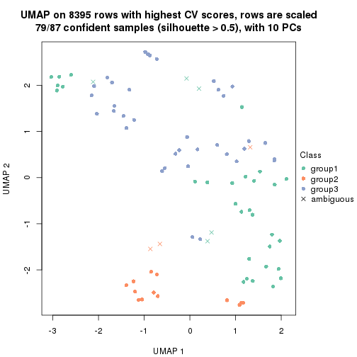
dimension_reduction(res, k = 4, method = "UMAP")
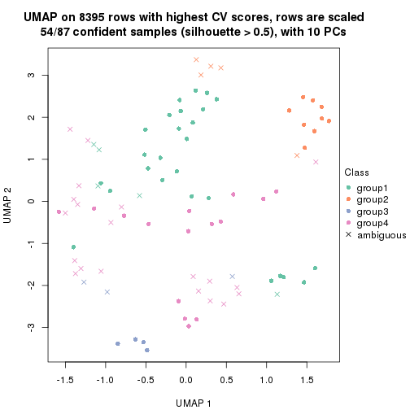
dimension_reduction(res, k = 5, method = "UMAP")
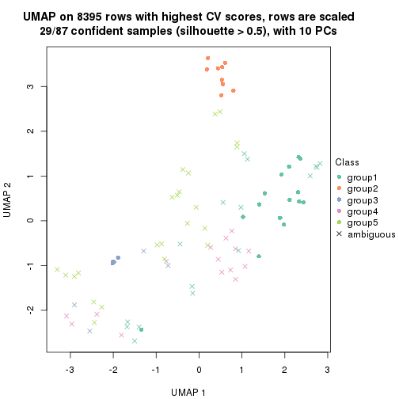
dimension_reduction(res, k = 6, method = "UMAP")
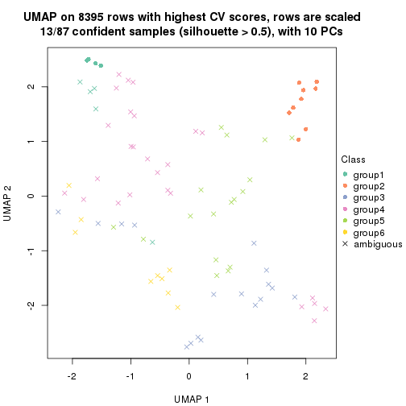
Following heatmap shows how subgroups are split when increasing k:
collect_classes(res)
Test correlation between subgroups and known annotations. If the known annotation is numeric, one-way ANOVA test is applied, and if the known annotation is discrete, chi-squared contingency table test is applied.
test_to_known_factors(res)
#> n tissue(p) individual(p) disease.state(p) k
#> CV:kmeans 60 0.01217 2.77e-03 8.91e-03 2
#> CV:kmeans 79 0.02028 9.55e-08 5.64e-04 3
#> CV:kmeans 54 0.00402 2.41e-08 4.44e-06 4
#> CV:kmeans 29 0.00152 3.10e-04 1.06e-03 5
#> CV:kmeans 13 0.00719 2.34e-02 1.50e-03 6
If matrix rows can be associated to genes, consider to use GO_Enrichment(res,
...) to perform function enrichment for the signature genes.
The object with results only for a single top-value method and a single partition method can be extracted as:
res = res_list["CV", "skmeans"]
# you can also extract it by
# res = res_list["CV:skmeans"]
A summary of res and all the functions that can be applied to it:
res
#> A 'ConsensusPartition' object with k = 2, 3, 4, 5, 6.
#> On a matrix with 8395 rows and 87 columns.
#> Top rows (840, 1680, 2519, 3358, 4198) are extracted by 'CV' method.
#> Subgroups are detected by 'skmeans' method.
#> Performed in total 1250 partitions by row resampling.
#> Best k for subgroups seems to be 3.
#>
#> Following methods can be applied to this 'ConsensusPartition' object:
#> [1] "cola_report" "collect_classes" "collect_plots"
#> [4] "collect_stats" "colnames" "compare_signatures"
#> [7] "consensus_heatmap" "dimension_reduction" "functional_enrichment"
#> [10] "get_anno_col" "get_anno" "get_classes"
#> [13] "get_consensus" "get_matrix" "get_membership"
#> [16] "get_param" "get_signatures" "get_stats"
#> [19] "is_best_k" "is_stable_k" "membership_heatmap"
#> [22] "ncol" "nrow" "plot_ecdf"
#> [25] "rownames" "select_partition_number" "show"
#> [28] "suggest_best_k" "test_to_known_factors"
collect_plots() function collects all the plots made from res for all k (number of partitions)
into one single page to provide an easy and fast comparison between different k.
collect_plots(res)
The plots are:
k and the heatmap of
predicted classes for each k.k.k.k.All the plots in panels can be made by individual functions and they are plotted later in this section.
select_partition_number() produces several plots showing different
statistics for choosing “optimized” k. There are following statistics:
k;k, the area increased is defined as \(A_k - A_{k-1}\).The detailed explanations of these statistics can be found in the cola vignette.
Generally speaking, lower PAC score, higher mean silhouette score or higher
concordance corresponds to better partition. Rand index and Jaccard index
measure how similar the current partition is compared to partition with k-1.
If they are too similar, we won't accept k is better than k-1.
select_partition_number(res)
The numeric values for all these statistics can be obtained by get_stats().
get_stats(res)
#> k 1-PAC mean_silhouette concordance area_increased Rand Jaccard
#> 2 2 0.376 0.602 0.791 0.5034 0.497 0.497
#> 3 3 0.524 0.720 0.850 0.3253 0.691 0.458
#> 4 4 0.537 0.536 0.756 0.1194 0.815 0.516
#> 5 5 0.623 0.474 0.717 0.0704 0.840 0.467
#> 6 6 0.671 0.533 0.666 0.0409 0.936 0.693
suggest_best_k() suggests the best \(k\) based on these statistics. The rules are as follows:
NA.suggest_best_k(res)
#> [1] 3
Following shows the table of the partitions (You need to click the show/hide
code output link to see it). The membership matrix (columns with name p*)
is inferred by
clue::cl_consensus()
function with the SE method. Basically the value in the membership matrix
represents the probability to belong to a certain group. The finall class
label for an item is determined with the group with highest probability it
belongs to.
In get_classes() function, the entropy is calculated from the membership
matrix and the silhouette score is calculated from the consensus matrix.
cbind(get_classes(res, k = 2), get_membership(res, k = 2))
#> class entropy silhouette p1 p2
#> GSM5316 1 0.9710 0.6029 0.600 0.400
#> GSM5319 1 0.8499 0.6526 0.724 0.276
#> GSM5321 1 0.8763 0.6488 0.704 0.296
#> GSM5323 1 0.9710 0.6029 0.600 0.400
#> GSM5325 1 0.3431 0.6355 0.936 0.064
#> GSM5327 2 0.8555 0.0945 0.280 0.720
#> GSM5329 2 0.9710 0.6411 0.400 0.600
#> GSM5331 2 0.5059 0.6021 0.112 0.888
#> GSM5333 2 0.5059 0.6021 0.112 0.888
#> GSM5335 1 0.8713 0.6499 0.708 0.292
#> GSM5337 1 0.0000 0.6914 1.000 0.000
#> GSM5339 2 0.0000 0.6641 0.000 1.000
#> GSM5341 2 0.0000 0.6641 0.000 1.000
#> GSM5343 1 0.1414 0.6941 0.980 0.020
#> GSM5345 1 0.0376 0.6895 0.996 0.004
#> GSM5347 1 0.0672 0.6869 0.992 0.008
#> GSM5349 1 0.0000 0.6914 1.000 0.000
#> GSM5351 2 0.9710 0.6411 0.400 0.600
#> GSM5353 1 0.9710 0.6029 0.600 0.400
#> GSM5355 1 0.9710 0.6029 0.600 0.400
#> GSM5357 2 0.9710 0.6411 0.400 0.600
#> GSM5359 2 0.9710 0.6411 0.400 0.600
#> GSM5361 1 0.9977 0.5095 0.528 0.472
#> GSM5363 1 0.9710 0.6029 0.600 0.400
#> GSM5365 1 0.2948 0.6858 0.948 0.052
#> GSM5367 1 0.2948 0.6858 0.948 0.052
#> GSM5369 1 0.3431 0.6355 0.936 0.064
#> GSM5371 1 0.0672 0.6868 0.992 0.008
#> GSM5373 2 0.9710 0.6411 0.400 0.600
#> GSM5396 1 0.9522 0.6176 0.628 0.372
#> GSM5397 2 0.9710 0.6411 0.400 0.600
#> GSM5398 1 0.9661 0.5858 0.608 0.392
#> GSM5400 1 0.9954 -0.4203 0.540 0.460
#> GSM5399 2 0.9710 0.6411 0.400 0.600
#> GSM5401 2 0.0000 0.6641 0.000 1.000
#> GSM5402 2 0.9710 0.6411 0.400 0.600
#> GSM5317 1 0.9710 0.6029 0.600 0.400
#> GSM5318 2 0.9710 0.6411 0.400 0.600
#> GSM5320 1 0.9209 0.6369 0.664 0.336
#> GSM5322 1 0.9710 0.6029 0.600 0.400
#> GSM5324 1 0.4562 0.5936 0.904 0.096
#> GSM5326 1 0.0000 0.6914 1.000 0.000
#> GSM5328 2 0.9710 0.6411 0.400 0.600
#> GSM5330 2 0.9393 0.6149 0.356 0.644
#> GSM5332 2 0.9393 0.6149 0.356 0.644
#> GSM5334 1 0.0000 0.6914 1.000 0.000
#> GSM5336 1 0.0000 0.6914 1.000 0.000
#> GSM5338 2 0.0000 0.6641 0.000 1.000
#> GSM5340 2 0.0000 0.6641 0.000 1.000
#> GSM5342 1 0.1414 0.6941 0.980 0.020
#> GSM5344 1 0.0376 0.6895 0.996 0.004
#> GSM5346 1 0.9427 0.6202 0.640 0.360
#> GSM5348 2 0.1633 0.6649 0.024 0.976
#> GSM5350 2 0.6712 0.6742 0.176 0.824
#> GSM5352 1 0.9710 0.6029 0.600 0.400
#> GSM5354 1 0.9710 0.6029 0.600 0.400
#> GSM5356 2 0.9710 0.6411 0.400 0.600
#> GSM5358 2 0.9710 0.6411 0.400 0.600
#> GSM5360 1 0.9710 0.6029 0.600 0.400
#> GSM5362 2 0.9998 -0.4793 0.492 0.508
#> GSM5364 2 0.9323 0.6469 0.348 0.652
#> GSM5366 2 0.9552 0.6333 0.376 0.624
#> GSM5368 1 0.9129 0.6194 0.672 0.328
#> GSM5370 1 0.9209 -0.0288 0.664 0.336
#> GSM5372 2 0.9710 0.6411 0.400 0.600
#> GSM5374 2 0.9710 0.6411 0.400 0.600
#> GSM5375 1 0.0000 0.6914 1.000 0.000
#> GSM5376 2 0.0000 0.6641 0.000 1.000
#> GSM5377 2 0.0000 0.6641 0.000 1.000
#> GSM5378 2 0.0000 0.6641 0.000 1.000
#> GSM5379 2 0.0000 0.6641 0.000 1.000
#> GSM5380 1 0.0000 0.6914 1.000 0.000
#> GSM5381 1 0.0000 0.6914 1.000 0.000
#> GSM5382 1 0.0000 0.6914 1.000 0.000
#> GSM5383 1 0.0000 0.6914 1.000 0.000
#> GSM5384 1 0.0000 0.6914 1.000 0.000
#> GSM5385 2 0.9710 0.6411 0.400 0.600
#> GSM5386 2 0.0000 0.6641 0.000 1.000
#> GSM5387 2 0.0000 0.6641 0.000 1.000
#> GSM5392 1 0.8713 0.1308 0.708 0.292
#> GSM5388 2 0.0000 0.6641 0.000 1.000
#> GSM5389 2 0.6623 0.6731 0.172 0.828
#> GSM5390 2 0.0000 0.6641 0.000 1.000
#> GSM5391 2 0.0000 0.6641 0.000 1.000
#> GSM5393 1 0.9710 0.6029 0.600 0.400
#> GSM5394 1 0.3431 0.6355 0.936 0.064
#> GSM5395 1 0.9044 0.6414 0.680 0.320
cbind(get_classes(res, k = 3), get_membership(res, k = 3))
#> class entropy silhouette p1 p2 p3
#> GSM5316 1 0.3038 0.8124 0.896 0.104 0.000
#> GSM5319 1 0.5119 0.6877 0.816 0.032 0.152
#> GSM5321 1 0.0000 0.8133 1.000 0.000 0.000
#> GSM5323 1 0.3619 0.7979 0.864 0.136 0.000
#> GSM5325 3 0.6244 0.0569 0.440 0.000 0.560
#> GSM5327 2 0.5016 0.7084 0.240 0.760 0.000
#> GSM5329 3 0.6540 0.1949 0.008 0.408 0.584
#> GSM5331 3 0.5235 0.7717 0.152 0.036 0.812
#> GSM5333 3 0.5346 0.7690 0.152 0.040 0.808
#> GSM5335 1 0.0000 0.8133 1.000 0.000 0.000
#> GSM5337 1 0.0000 0.8133 1.000 0.000 0.000
#> GSM5339 2 0.1289 0.8497 0.032 0.968 0.000
#> GSM5341 2 0.1289 0.8497 0.032 0.968 0.000
#> GSM5343 1 0.4062 0.7864 0.836 0.000 0.164
#> GSM5345 3 0.3551 0.7990 0.132 0.000 0.868
#> GSM5347 3 0.3551 0.7990 0.132 0.000 0.868
#> GSM5349 3 0.4887 0.7355 0.228 0.000 0.772
#> GSM5351 3 0.9102 0.0874 0.140 0.408 0.452
#> GSM5353 1 0.3267 0.8080 0.884 0.116 0.000
#> GSM5355 1 0.3941 0.7846 0.844 0.156 0.000
#> GSM5357 3 0.0000 0.8504 0.000 0.000 1.000
#> GSM5359 3 0.0000 0.8504 0.000 0.000 1.000
#> GSM5361 2 0.5016 0.5916 0.240 0.760 0.000
#> GSM5363 1 0.4504 0.7550 0.804 0.196 0.000
#> GSM5365 1 0.8043 0.6536 0.644 0.128 0.228
#> GSM5367 1 0.8043 0.6536 0.644 0.128 0.228
#> GSM5369 1 0.5111 0.7761 0.808 0.024 0.168
#> GSM5371 1 0.4121 0.7833 0.832 0.000 0.168
#> GSM5373 2 0.6617 0.3606 0.012 0.600 0.388
#> GSM5396 1 0.2261 0.8190 0.932 0.068 0.000
#> GSM5397 3 0.0237 0.8505 0.004 0.000 0.996
#> GSM5398 1 0.5678 0.4052 0.684 0.000 0.316
#> GSM5400 3 0.0592 0.8487 0.012 0.000 0.988
#> GSM5399 3 0.4209 0.7478 0.016 0.128 0.856
#> GSM5401 2 0.0000 0.8618 0.000 1.000 0.000
#> GSM5402 3 0.0592 0.8487 0.012 0.000 0.988
#> GSM5317 1 0.2625 0.8162 0.916 0.084 0.000
#> GSM5318 3 0.0237 0.8505 0.004 0.000 0.996
#> GSM5320 1 0.0424 0.8152 0.992 0.008 0.000
#> GSM5322 1 0.3116 0.8112 0.892 0.108 0.000
#> GSM5324 1 0.8843 0.1301 0.448 0.116 0.436
#> GSM5326 1 0.4062 0.7864 0.836 0.000 0.164
#> GSM5328 3 0.0892 0.8442 0.000 0.020 0.980
#> GSM5330 3 0.4931 0.7802 0.140 0.032 0.828
#> GSM5332 3 0.4931 0.7802 0.140 0.032 0.828
#> GSM5334 1 0.0000 0.8133 1.000 0.000 0.000
#> GSM5336 1 0.0000 0.8133 1.000 0.000 0.000
#> GSM5338 2 0.1289 0.8497 0.032 0.968 0.000
#> GSM5340 2 0.1289 0.8497 0.032 0.968 0.000
#> GSM5342 1 0.4062 0.7864 0.836 0.000 0.164
#> GSM5344 3 0.3551 0.7990 0.132 0.000 0.868
#> GSM5346 1 0.9865 -0.0495 0.416 0.292 0.292
#> GSM5348 2 0.6425 0.6987 0.140 0.764 0.096
#> GSM5350 2 0.7493 0.6093 0.136 0.696 0.168
#> GSM5352 1 0.3267 0.8080 0.884 0.116 0.000
#> GSM5354 1 0.3267 0.8080 0.884 0.116 0.000
#> GSM5356 3 0.1031 0.8443 0.000 0.024 0.976
#> GSM5358 3 0.1031 0.8443 0.000 0.024 0.976
#> GSM5360 1 0.6302 0.2260 0.520 0.480 0.000
#> GSM5362 2 0.4887 0.6133 0.228 0.772 0.000
#> GSM5364 3 0.4504 0.7092 0.000 0.196 0.804
#> GSM5366 3 0.4504 0.7092 0.000 0.196 0.804
#> GSM5368 1 0.4172 0.8083 0.868 0.028 0.104
#> GSM5370 2 0.9741 0.1353 0.228 0.412 0.360
#> GSM5372 2 0.6647 0.3407 0.012 0.592 0.396
#> GSM5374 3 0.0000 0.8504 0.000 0.000 1.000
#> GSM5375 3 0.0000 0.8504 0.000 0.000 1.000
#> GSM5376 2 0.0000 0.8618 0.000 1.000 0.000
#> GSM5377 2 0.0000 0.8618 0.000 1.000 0.000
#> GSM5378 2 0.0000 0.8618 0.000 1.000 0.000
#> GSM5379 2 0.0000 0.8618 0.000 1.000 0.000
#> GSM5380 3 0.0424 0.8498 0.008 0.000 0.992
#> GSM5381 3 0.0000 0.8504 0.000 0.000 1.000
#> GSM5382 1 0.4062 0.7864 0.836 0.000 0.164
#> GSM5383 1 0.4062 0.7864 0.836 0.000 0.164
#> GSM5384 3 0.0424 0.8498 0.008 0.000 0.992
#> GSM5385 3 0.0661 0.8489 0.008 0.004 0.988
#> GSM5386 2 0.0000 0.8618 0.000 1.000 0.000
#> GSM5387 2 0.0000 0.8618 0.000 1.000 0.000
#> GSM5392 3 0.0424 0.8498 0.008 0.000 0.992
#> GSM5388 2 0.0000 0.8618 0.000 1.000 0.000
#> GSM5389 2 0.0000 0.8618 0.000 1.000 0.000
#> GSM5390 2 0.0000 0.8618 0.000 1.000 0.000
#> GSM5391 2 0.0000 0.8618 0.000 1.000 0.000
#> GSM5393 1 0.3116 0.8112 0.892 0.108 0.000
#> GSM5394 3 0.6309 -0.1524 0.496 0.000 0.504
#> GSM5395 1 0.0237 0.8143 0.996 0.004 0.000
cbind(get_classes(res, k = 4), get_membership(res, k = 4))
#> class entropy silhouette p1 p2 p3 p4
#> GSM5316 1 0.1388 0.79776 0.960 0.012 0.028 0.000
#> GSM5319 3 0.6542 -0.16541 0.428 0.000 0.496 0.076
#> GSM5321 1 0.4389 0.75372 0.812 0.000 0.116 0.072
#> GSM5323 1 0.1624 0.79576 0.952 0.020 0.028 0.000
#> GSM5325 4 0.2266 0.57240 0.084 0.000 0.004 0.912
#> GSM5327 2 0.5352 0.74016 0.156 0.756 0.080 0.008
#> GSM5329 4 0.5156 0.46416 0.000 0.044 0.236 0.720
#> GSM5331 3 0.0524 0.52232 0.008 0.000 0.988 0.004
#> GSM5333 3 0.0524 0.52232 0.008 0.000 0.988 0.004
#> GSM5335 1 0.4274 0.75877 0.820 0.000 0.108 0.072
#> GSM5337 1 0.4444 0.75299 0.808 0.000 0.120 0.072
#> GSM5339 2 0.3721 0.80513 0.176 0.816 0.004 0.004
#> GSM5341 2 0.3721 0.80513 0.176 0.816 0.004 0.004
#> GSM5343 1 0.3400 0.74168 0.820 0.000 0.000 0.180
#> GSM5345 3 0.3610 0.43617 0.000 0.000 0.800 0.200
#> GSM5347 3 0.3649 0.43337 0.000 0.000 0.796 0.204
#> GSM5349 3 0.5123 0.43587 0.044 0.000 0.724 0.232
#> GSM5351 3 0.5520 0.43134 0.000 0.244 0.696 0.060
#> GSM5353 1 0.1510 0.79730 0.956 0.016 0.028 0.000
#> GSM5355 1 0.1624 0.79576 0.952 0.020 0.028 0.000
#> GSM5357 3 0.4977 -0.08267 0.000 0.000 0.540 0.460
#> GSM5359 3 0.4977 -0.08267 0.000 0.000 0.540 0.460
#> GSM5361 2 0.6083 0.48437 0.360 0.584 0.056 0.000
#> GSM5363 1 0.3392 0.75666 0.872 0.072 0.056 0.000
#> GSM5365 1 0.9610 -0.07231 0.336 0.188 0.324 0.152
#> GSM5367 1 0.9610 -0.07231 0.336 0.188 0.324 0.152
#> GSM5369 4 0.5159 0.15873 0.364 0.012 0.000 0.624
#> GSM5371 4 0.4916 -0.03026 0.424 0.000 0.000 0.576
#> GSM5373 4 0.4661 0.41959 0.004 0.284 0.004 0.708
#> GSM5396 1 0.1635 0.79173 0.948 0.000 0.044 0.008
#> GSM5397 4 0.5236 0.30246 0.008 0.000 0.432 0.560
#> GSM5398 3 0.6211 -0.16030 0.460 0.000 0.488 0.052
#> GSM5400 4 0.4746 0.46963 0.008 0.000 0.304 0.688
#> GSM5399 4 0.1284 0.59112 0.012 0.000 0.024 0.964
#> GSM5401 2 0.0000 0.87688 0.000 1.000 0.000 0.000
#> GSM5402 4 0.5099 0.37703 0.008 0.000 0.380 0.612
#> GSM5317 1 0.1388 0.79776 0.960 0.012 0.028 0.000
#> GSM5318 4 0.4761 0.38639 0.000 0.000 0.372 0.628
#> GSM5320 1 0.3301 0.78220 0.876 0.000 0.048 0.076
#> GSM5322 1 0.1510 0.79730 0.956 0.016 0.028 0.000
#> GSM5324 4 0.3279 0.56374 0.088 0.024 0.008 0.880
#> GSM5326 1 0.3942 0.68635 0.764 0.000 0.000 0.236
#> GSM5328 4 0.4103 0.49097 0.000 0.000 0.256 0.744
#> GSM5330 3 0.0524 0.52232 0.008 0.000 0.988 0.004
#> GSM5332 3 0.0524 0.52232 0.008 0.000 0.988 0.004
#> GSM5334 1 0.4804 0.73534 0.780 0.000 0.148 0.072
#> GSM5336 1 0.4804 0.73534 0.780 0.000 0.148 0.072
#> GSM5338 2 0.3721 0.80513 0.176 0.816 0.004 0.004
#> GSM5340 2 0.3721 0.80513 0.176 0.816 0.004 0.004
#> GSM5342 1 0.3444 0.74034 0.816 0.000 0.000 0.184
#> GSM5344 3 0.3610 0.43617 0.000 0.000 0.800 0.200
#> GSM5346 3 0.6813 0.43737 0.080 0.108 0.696 0.116
#> GSM5348 3 0.5285 0.01988 0.000 0.468 0.524 0.008
#> GSM5350 3 0.5452 0.13745 0.000 0.428 0.556 0.016
#> GSM5352 1 0.1510 0.79730 0.956 0.016 0.028 0.000
#> GSM5354 1 0.1510 0.79730 0.956 0.016 0.028 0.000
#> GSM5356 3 0.5435 -0.00568 0.000 0.016 0.564 0.420
#> GSM5358 3 0.5435 -0.00568 0.000 0.016 0.564 0.420
#> GSM5360 1 0.5973 0.29788 0.612 0.332 0.056 0.000
#> GSM5362 2 0.6069 0.49420 0.356 0.588 0.056 0.000
#> GSM5364 3 0.7955 0.11683 0.008 0.248 0.452 0.292
#> GSM5366 3 0.8148 0.11725 0.016 0.244 0.448 0.292
#> GSM5368 1 0.5345 0.32497 0.560 0.012 0.000 0.428
#> GSM5370 4 0.3687 0.55343 0.080 0.064 0.000 0.856
#> GSM5372 4 0.4292 0.51422 0.008 0.180 0.016 0.796
#> GSM5374 4 0.5080 0.28740 0.000 0.004 0.420 0.576
#> GSM5375 4 0.6036 0.26497 0.036 0.004 0.412 0.548
#> GSM5376 2 0.0000 0.87688 0.000 1.000 0.000 0.000
#> GSM5377 2 0.0000 0.87688 0.000 1.000 0.000 0.000
#> GSM5378 2 0.0000 0.87688 0.000 1.000 0.000 0.000
#> GSM5379 2 0.0000 0.87688 0.000 1.000 0.000 0.000
#> GSM5380 4 0.5495 0.40588 0.028 0.000 0.348 0.624
#> GSM5381 4 0.5527 0.39395 0.028 0.000 0.356 0.616
#> GSM5382 1 0.4088 0.68692 0.764 0.000 0.004 0.232
#> GSM5383 1 0.4053 0.69174 0.768 0.000 0.004 0.228
#> GSM5384 4 0.4277 0.50386 0.000 0.000 0.280 0.720
#> GSM5385 4 0.2973 0.57437 0.000 0.000 0.144 0.856
#> GSM5386 2 0.0000 0.87688 0.000 1.000 0.000 0.000
#> GSM5387 2 0.0000 0.87688 0.000 1.000 0.000 0.000
#> GSM5392 4 0.3528 0.56160 0.000 0.000 0.192 0.808
#> GSM5388 2 0.0000 0.87688 0.000 1.000 0.000 0.000
#> GSM5389 2 0.0188 0.87287 0.000 0.996 0.000 0.004
#> GSM5390 2 0.0000 0.87688 0.000 1.000 0.000 0.000
#> GSM5391 2 0.0000 0.87688 0.000 1.000 0.000 0.000
#> GSM5393 1 0.1510 0.79730 0.956 0.016 0.028 0.000
#> GSM5394 4 0.2888 0.55500 0.124 0.000 0.004 0.872
#> GSM5395 1 0.1792 0.79091 0.932 0.000 0.000 0.068
cbind(get_classes(res, k = 5), get_membership(res, k = 5))
#> class entropy silhouette p1 p2 p3 p4 p5
#> GSM5316 1 0.174 0.66551 0.932 0.000 0.012 0.056 0.000
#> GSM5319 3 0.591 0.36667 0.196 0.004 0.648 0.140 0.012
#> GSM5321 1 0.657 0.27339 0.476 0.000 0.124 0.380 0.020
#> GSM5323 1 0.213 0.65685 0.908 0.000 0.012 0.080 0.000
#> GSM5325 4 0.276 0.51339 0.004 0.000 0.000 0.848 0.148
#> GSM5327 2 0.693 0.46850 0.132 0.588 0.096 0.184 0.000
#> GSM5329 4 0.653 -0.17212 0.000 0.036 0.084 0.444 0.436
#> GSM5331 3 0.143 0.56122 0.000 0.004 0.944 0.000 0.052
#> GSM5333 3 0.143 0.56122 0.000 0.004 0.944 0.000 0.052
#> GSM5335 1 0.650 0.28597 0.488 0.000 0.116 0.376 0.020
#> GSM5337 1 0.651 0.28025 0.484 0.000 0.116 0.380 0.020
#> GSM5339 2 0.485 0.59172 0.340 0.628 0.000 0.028 0.004
#> GSM5341 2 0.487 0.58728 0.344 0.624 0.000 0.028 0.004
#> GSM5343 4 0.542 -0.10834 0.448 0.000 0.020 0.508 0.024
#> GSM5345 3 0.466 0.48177 0.000 0.000 0.604 0.020 0.376
#> GSM5347 3 0.466 0.48177 0.000 0.000 0.604 0.020 0.376
#> GSM5349 3 0.540 0.52117 0.000 0.000 0.640 0.104 0.256
#> GSM5351 3 0.401 0.54104 0.000 0.116 0.816 0.036 0.032
#> GSM5353 1 0.000 0.67278 1.000 0.000 0.000 0.000 0.000
#> GSM5355 1 0.000 0.67278 1.000 0.000 0.000 0.000 0.000
#> GSM5357 5 0.443 0.61371 0.000 0.000 0.256 0.036 0.708
#> GSM5359 5 0.445 0.61207 0.000 0.000 0.260 0.036 0.704
#> GSM5361 1 0.542 0.12571 0.628 0.316 0.012 0.032 0.012
#> GSM5363 1 0.188 0.64317 0.940 0.012 0.012 0.028 0.008
#> GSM5365 3 0.937 -0.12045 0.092 0.220 0.316 0.108 0.264
#> GSM5367 3 0.937 -0.12045 0.092 0.220 0.316 0.108 0.264
#> GSM5369 4 0.200 0.56669 0.040 0.000 0.000 0.924 0.036
#> GSM5371 4 0.210 0.55977 0.060 0.000 0.000 0.916 0.024
#> GSM5373 4 0.667 0.09735 0.000 0.188 0.016 0.524 0.272
#> GSM5396 1 0.131 0.65940 0.960 0.000 0.012 0.012 0.016
#> GSM5397 5 0.664 0.49607 0.000 0.008 0.352 0.176 0.464
#> GSM5398 3 0.610 0.37152 0.224 0.000 0.620 0.136 0.020
#> GSM5400 5 0.586 0.58604 0.000 0.000 0.260 0.148 0.592
#> GSM5399 4 0.442 0.27315 0.000 0.016 0.004 0.680 0.300
#> GSM5401 2 0.000 0.84667 0.000 1.000 0.000 0.000 0.000
#> GSM5402 5 0.633 0.53620 0.000 0.004 0.316 0.160 0.520
#> GSM5317 1 0.181 0.66475 0.928 0.000 0.012 0.060 0.000
#> GSM5318 5 0.541 0.59112 0.000 0.000 0.284 0.092 0.624
#> GSM5320 1 0.554 0.18549 0.504 0.000 0.036 0.444 0.016
#> GSM5322 1 0.201 0.66025 0.916 0.000 0.012 0.072 0.000
#> GSM5324 4 0.255 0.53680 0.004 0.004 0.000 0.876 0.116
#> GSM5326 4 0.526 -0.14356 0.480 0.000 0.012 0.484 0.024
#> GSM5328 5 0.554 0.21684 0.000 0.000 0.072 0.396 0.532
#> GSM5330 3 0.143 0.56122 0.000 0.004 0.944 0.000 0.052
#> GSM5332 3 0.143 0.56122 0.000 0.004 0.944 0.000 0.052
#> GSM5334 1 0.671 0.27257 0.468 0.000 0.144 0.368 0.020
#> GSM5336 1 0.671 0.27257 0.468 0.000 0.144 0.368 0.020
#> GSM5338 2 0.487 0.58728 0.344 0.624 0.000 0.028 0.004
#> GSM5340 2 0.487 0.58728 0.344 0.624 0.000 0.028 0.004
#> GSM5342 4 0.536 -0.00517 0.404 0.000 0.020 0.552 0.024
#> GSM5344 3 0.466 0.48177 0.000 0.000 0.604 0.020 0.376
#> GSM5346 3 0.563 0.53287 0.028 0.016 0.656 0.032 0.268
#> GSM5348 3 0.539 0.42501 0.000 0.320 0.620 0.020 0.040
#> GSM5350 3 0.573 0.48703 0.000 0.276 0.628 0.020 0.076
#> GSM5352 1 0.000 0.67278 1.000 0.000 0.000 0.000 0.000
#> GSM5354 1 0.000 0.67278 1.000 0.000 0.000 0.000 0.000
#> GSM5356 5 0.470 0.58970 0.000 0.000 0.304 0.036 0.660
#> GSM5358 5 0.470 0.58970 0.000 0.000 0.304 0.036 0.660
#> GSM5360 1 0.466 0.50364 0.780 0.144 0.016 0.032 0.028
#> GSM5362 1 0.547 0.08610 0.616 0.328 0.012 0.032 0.012
#> GSM5364 5 0.806 0.16902 0.004 0.248 0.328 0.076 0.344
#> GSM5366 5 0.806 0.16902 0.004 0.248 0.328 0.076 0.344
#> GSM5368 4 0.219 0.54846 0.084 0.000 0.000 0.904 0.012
#> GSM5370 4 0.212 0.54926 0.004 0.008 0.000 0.912 0.076
#> GSM5372 4 0.655 0.11397 0.000 0.168 0.016 0.540 0.276
#> GSM5374 5 0.164 0.59737 0.000 0.000 0.064 0.004 0.932
#> GSM5375 5 0.141 0.58716 0.000 0.000 0.044 0.008 0.948
#> GSM5376 2 0.000 0.84667 0.000 1.000 0.000 0.000 0.000
#> GSM5377 2 0.000 0.84667 0.000 1.000 0.000 0.000 0.000
#> GSM5378 2 0.000 0.84667 0.000 1.000 0.000 0.000 0.000
#> GSM5379 2 0.000 0.84667 0.000 1.000 0.000 0.000 0.000
#> GSM5380 5 0.187 0.59291 0.008 0.000 0.032 0.024 0.936
#> GSM5381 5 0.187 0.59291 0.008 0.000 0.032 0.024 0.936
#> GSM5382 4 0.575 -0.13344 0.456 0.000 0.012 0.476 0.056
#> GSM5383 4 0.570 -0.13819 0.456 0.000 0.012 0.480 0.052
#> GSM5384 5 0.198 0.59650 0.000 0.000 0.028 0.048 0.924
#> GSM5385 5 0.435 0.43364 0.000 0.000 0.028 0.268 0.704
#> GSM5386 2 0.000 0.84667 0.000 1.000 0.000 0.000 0.000
#> GSM5387 2 0.000 0.84667 0.000 1.000 0.000 0.000 0.000
#> GSM5392 5 0.345 0.56008 0.000 0.000 0.024 0.164 0.812
#> GSM5388 2 0.029 0.84153 0.000 0.992 0.000 0.000 0.008
#> GSM5389 2 0.051 0.83570 0.000 0.984 0.000 0.000 0.016
#> GSM5390 2 0.000 0.84667 0.000 1.000 0.000 0.000 0.000
#> GSM5391 2 0.000 0.84667 0.000 1.000 0.000 0.000 0.000
#> GSM5393 1 0.000 0.67278 1.000 0.000 0.000 0.000 0.000
#> GSM5394 4 0.413 0.34300 0.008 0.000 0.008 0.720 0.264
#> GSM5395 1 0.455 0.29984 0.588 0.000 0.012 0.400 0.000
cbind(get_classes(res, k = 6), get_membership(res, k = 6))
#> class entropy silhouette p1 p2 p3 p4 p5 p6
#> GSM5316 1 0.3847 0.546 0.544 0.000 0.000 0.000 0.000 0.456
#> GSM5319 3 0.4800 0.374 0.040 0.000 0.716 0.036 0.012 0.196
#> GSM5321 6 0.1363 0.681 0.004 0.000 0.028 0.012 0.004 0.952
#> GSM5323 6 0.4126 -0.466 0.480 0.004 0.000 0.004 0.000 0.512
#> GSM5325 4 0.3066 0.840 0.000 0.000 0.000 0.832 0.044 0.124
#> GSM5327 2 0.6820 0.271 0.128 0.472 0.040 0.032 0.000 0.328
#> GSM5329 4 0.4590 0.370 0.004 0.004 0.028 0.592 0.372 0.000
#> GSM5331 3 0.1155 0.513 0.004 0.000 0.956 0.000 0.036 0.004
#> GSM5333 3 0.1155 0.513 0.004 0.000 0.956 0.000 0.036 0.004
#> GSM5335 6 0.1338 0.677 0.008 0.000 0.032 0.004 0.004 0.952
#> GSM5337 6 0.1225 0.677 0.004 0.000 0.032 0.004 0.004 0.956
#> GSM5339 2 0.4246 0.368 0.452 0.532 0.000 0.016 0.000 0.000
#> GSM5341 2 0.4246 0.368 0.452 0.532 0.000 0.016 0.000 0.000
#> GSM5343 6 0.5573 0.572 0.092 0.000 0.012 0.276 0.016 0.604
#> GSM5345 3 0.7301 0.393 0.080 0.000 0.408 0.020 0.328 0.164
#> GSM5347 3 0.7296 0.397 0.080 0.000 0.412 0.020 0.324 0.164
#> GSM5349 3 0.7228 0.481 0.080 0.000 0.500 0.040 0.140 0.240
#> GSM5351 3 0.5353 0.525 0.080 0.072 0.728 0.052 0.000 0.068
#> GSM5353 1 0.3634 0.729 0.644 0.000 0.000 0.000 0.000 0.356
#> GSM5355 1 0.3620 0.732 0.648 0.000 0.000 0.000 0.000 0.352
#> GSM5357 5 0.6396 0.510 0.096 0.000 0.212 0.096 0.584 0.012
#> GSM5359 5 0.6377 0.508 0.096 0.000 0.216 0.092 0.584 0.012
#> GSM5361 1 0.3772 0.553 0.784 0.168 0.004 0.012 0.000 0.032
#> GSM5363 1 0.3723 0.702 0.736 0.012 0.004 0.004 0.000 0.244
#> GSM5365 3 0.9754 -0.121 0.176 0.144 0.244 0.104 0.212 0.120
#> GSM5367 3 0.9754 -0.121 0.176 0.144 0.244 0.104 0.212 0.120
#> GSM5369 4 0.2664 0.817 0.000 0.000 0.000 0.816 0.000 0.184
#> GSM5371 4 0.2664 0.813 0.000 0.000 0.000 0.816 0.000 0.184
#> GSM5373 4 0.3189 0.730 0.008 0.060 0.004 0.848 0.080 0.000
#> GSM5396 1 0.5121 0.643 0.644 0.000 0.084 0.008 0.008 0.256
#> GSM5397 3 0.7074 -0.280 0.056 0.000 0.408 0.244 0.284 0.008
#> GSM5398 3 0.5764 0.341 0.124 0.000 0.620 0.020 0.016 0.220
#> GSM5400 5 0.6546 0.440 0.052 0.000 0.240 0.212 0.496 0.000
#> GSM5399 4 0.3206 0.787 0.008 0.000 0.000 0.836 0.108 0.048
#> GSM5401 2 0.0000 0.813 0.000 1.000 0.000 0.000 0.000 0.000
#> GSM5402 5 0.6981 0.299 0.048 0.004 0.336 0.256 0.356 0.000
#> GSM5317 1 0.3864 0.490 0.520 0.000 0.000 0.000 0.000 0.480
#> GSM5318 5 0.6705 0.449 0.056 0.000 0.284 0.148 0.500 0.012
#> GSM5320 6 0.2680 0.684 0.032 0.000 0.000 0.108 0.000 0.860
#> GSM5322 6 0.3995 -0.461 0.480 0.000 0.000 0.004 0.000 0.516
#> GSM5324 4 0.3066 0.840 0.000 0.000 0.000 0.832 0.044 0.124
#> GSM5326 6 0.4223 0.625 0.060 0.000 0.000 0.236 0.000 0.704
#> GSM5328 5 0.4224 -0.153 0.000 0.000 0.008 0.476 0.512 0.004
#> GSM5330 3 0.1155 0.513 0.004 0.000 0.956 0.000 0.036 0.004
#> GSM5332 3 0.1155 0.513 0.004 0.000 0.956 0.000 0.036 0.004
#> GSM5334 6 0.1226 0.671 0.000 0.000 0.040 0.004 0.004 0.952
#> GSM5336 6 0.1226 0.671 0.000 0.000 0.040 0.004 0.004 0.952
#> GSM5338 2 0.4246 0.368 0.452 0.532 0.000 0.016 0.000 0.000
#> GSM5340 2 0.4246 0.368 0.452 0.532 0.000 0.016 0.000 0.000
#> GSM5342 6 0.5611 0.546 0.080 0.000 0.012 0.320 0.016 0.572
#> GSM5344 3 0.7301 0.393 0.080 0.000 0.408 0.020 0.328 0.164
#> GSM5346 3 0.7130 0.499 0.088 0.012 0.540 0.020 0.148 0.192
#> GSM5348 3 0.7293 0.463 0.080 0.240 0.520 0.040 0.012 0.108
#> GSM5350 3 0.7397 0.484 0.080 0.212 0.536 0.036 0.028 0.108
#> GSM5352 1 0.3592 0.733 0.656 0.000 0.000 0.000 0.000 0.344
#> GSM5354 1 0.3634 0.729 0.644 0.000 0.000 0.000 0.000 0.356
#> GSM5356 5 0.6497 0.490 0.096 0.000 0.248 0.088 0.556 0.012
#> GSM5358 5 0.6497 0.490 0.096 0.000 0.248 0.088 0.556 0.012
#> GSM5360 1 0.4007 0.605 0.804 0.096 0.004 0.012 0.012 0.072
#> GSM5362 1 0.3772 0.550 0.784 0.168 0.004 0.012 0.000 0.032
#> GSM5364 5 0.9250 0.107 0.176 0.172 0.252 0.100 0.264 0.036
#> GSM5366 5 0.9293 0.102 0.176 0.172 0.252 0.100 0.260 0.040
#> GSM5368 4 0.2730 0.808 0.000 0.000 0.000 0.808 0.000 0.192
#> GSM5370 4 0.2454 0.828 0.000 0.000 0.000 0.840 0.000 0.160
#> GSM5372 4 0.3250 0.737 0.008 0.048 0.004 0.848 0.088 0.004
#> GSM5374 5 0.0912 0.565 0.012 0.000 0.004 0.008 0.972 0.004
#> GSM5375 5 0.1086 0.561 0.012 0.000 0.000 0.012 0.964 0.012
#> GSM5376 2 0.0000 0.813 0.000 1.000 0.000 0.000 0.000 0.000
#> GSM5377 2 0.0000 0.813 0.000 1.000 0.000 0.000 0.000 0.000
#> GSM5378 2 0.0000 0.813 0.000 1.000 0.000 0.000 0.000 0.000
#> GSM5379 2 0.0000 0.813 0.000 1.000 0.000 0.000 0.000 0.000
#> GSM5380 5 0.1168 0.559 0.000 0.000 0.000 0.016 0.956 0.028
#> GSM5381 5 0.0993 0.561 0.000 0.000 0.000 0.012 0.964 0.024
#> GSM5382 6 0.3972 0.674 0.012 0.000 0.000 0.144 0.068 0.776
#> GSM5383 6 0.3972 0.674 0.012 0.000 0.000 0.144 0.068 0.776
#> GSM5384 5 0.1334 0.558 0.000 0.000 0.000 0.020 0.948 0.032
#> GSM5385 5 0.3421 0.369 0.000 0.000 0.000 0.256 0.736 0.008
#> GSM5386 2 0.0000 0.813 0.000 1.000 0.000 0.000 0.000 0.000
#> GSM5387 2 0.0000 0.813 0.000 1.000 0.000 0.000 0.000 0.000
#> GSM5392 5 0.2706 0.506 0.000 0.000 0.000 0.160 0.832 0.008
#> GSM5388 2 0.0893 0.796 0.004 0.972 0.004 0.004 0.016 0.000
#> GSM5389 2 0.0982 0.793 0.004 0.968 0.004 0.004 0.020 0.000
#> GSM5390 2 0.0000 0.813 0.000 1.000 0.000 0.000 0.000 0.000
#> GSM5391 2 0.0000 0.813 0.000 1.000 0.000 0.000 0.000 0.000
#> GSM5393 1 0.3620 0.732 0.648 0.000 0.000 0.000 0.000 0.352
#> GSM5394 4 0.3140 0.806 0.008 0.000 0.004 0.852 0.064 0.072
#> GSM5395 6 0.4148 0.580 0.148 0.000 0.000 0.108 0.000 0.744
Heatmaps for the consensus matrix. It visualizes the probability of two samples to be in a same group.
consensus_heatmap(res, k = 2)
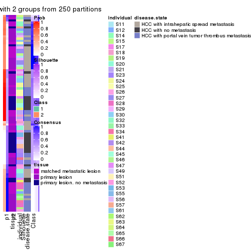
consensus_heatmap(res, k = 3)
consensus_heatmap(res, k = 4)
consensus_heatmap(res, k = 5)
consensus_heatmap(res, k = 6)
Heatmaps for the membership of samples in all partitions to see how consistent they are:
membership_heatmap(res, k = 2)
membership_heatmap(res, k = 3)
membership_heatmap(res, k = 4)
membership_heatmap(res, k = 5)
membership_heatmap(res, k = 6)
As soon as we have had the classes for columns, we can look for signatures which are significantly different between classes which can be candidate marks for certain classes. Following are the heatmaps for signatures.
Signature heatmaps where rows are scaled:
get_signatures(res, k = 2)
#> Error: The width or height of the raster image is zero, maybe you forget to turn off the
#> previous graphic device or it was corrupted. Run `dev.off()` to close it.

get_signatures(res, k = 3)
#> Error: The width or height of the raster image is zero, maybe you forget to turn off the
#> previous graphic device or it was corrupted. Run `dev.off()` to close it.

get_signatures(res, k = 4)
#> Error: The width or height of the raster image is zero, maybe you forget to turn off the
#> previous graphic device or it was corrupted. Run `dev.off()` to close it.

get_signatures(res, k = 5)
#> Error: The width or height of the raster image is zero, maybe you forget to turn off the
#> previous graphic device or it was corrupted. Run `dev.off()` to close it.

get_signatures(res, k = 6)
#> Error: The width or height of the raster image is zero, maybe you forget to turn off the
#> previous graphic device or it was corrupted. Run `dev.off()` to close it.

Signature heatmaps where rows are not scaled:
get_signatures(res, k = 2, scale_rows = FALSE)
#> Error: The width or height of the raster image is zero, maybe you forget to turn off the
#> previous graphic device or it was corrupted. Run `dev.off()` to close it.

get_signatures(res, k = 3, scale_rows = FALSE)
#> Error: The width or height of the raster image is zero, maybe you forget to turn off the
#> previous graphic device or it was corrupted. Run `dev.off()` to close it.

get_signatures(res, k = 4, scale_rows = FALSE)
#> Error: The width or height of the raster image is zero, maybe you forget to turn off the
#> previous graphic device or it was corrupted. Run `dev.off()` to close it.

get_signatures(res, k = 5, scale_rows = FALSE)
#> Error: The width or height of the raster image is zero, maybe you forget to turn off the
#> previous graphic device or it was corrupted. Run `dev.off()` to close it.

get_signatures(res, k = 6, scale_rows = FALSE)
#> Error: The width or height of the raster image is zero, maybe you forget to turn off the
#> previous graphic device or it was corrupted. Run `dev.off()` to close it.

Compare the overlap of signatures from different k:
compare_signatures(res)
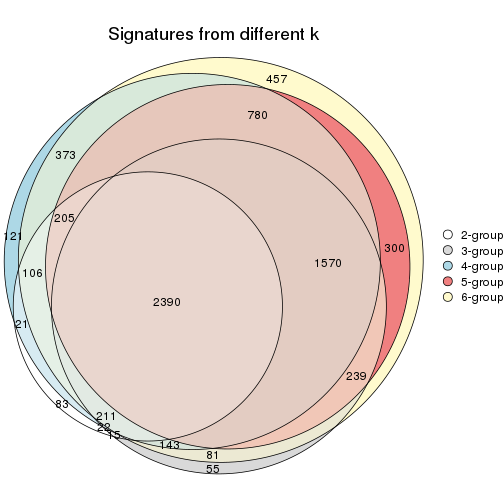
get_signature() returns a data frame invisibly. TO get the list of signatures, the function
call should be assigned to a variable explicitly. In following code, if plot argument is set
to FALSE, no heatmap is plotted while only the differential analysis is performed.
# code only for demonstration
tb = get_signature(res, k = ..., plot = FALSE)
An example of the output of tb is:
#> which_row fdr mean_1 mean_2 scaled_mean_1 scaled_mean_2 km
#> 1 38 0.042760348 8.373488 9.131774 -0.5533452 0.5164555 1
#> 2 40 0.018707592 7.106213 8.469186 -0.6173731 0.5762149 1
#> 3 55 0.019134737 10.221463 11.207825 -0.6159697 0.5749050 1
#> 4 59 0.006059896 5.921854 7.869574 -0.6899429 0.6439467 1
#> 5 60 0.018055526 8.928898 10.211722 -0.6204761 0.5791110 1
#> 6 98 0.009384629 15.714769 14.887706 0.6635654 -0.6193277 2
...
The columns in tb are:
which_row: row indices corresponding to the input matrix.fdr: FDR for the differential test. mean_x: The mean value in group x.scaled_mean_x: The mean value in group x after rows are scaled.km: Row groups if k-means clustering is applied to rows.UMAP plot which shows how samples are separated.
dimension_reduction(res, k = 2, method = "UMAP")
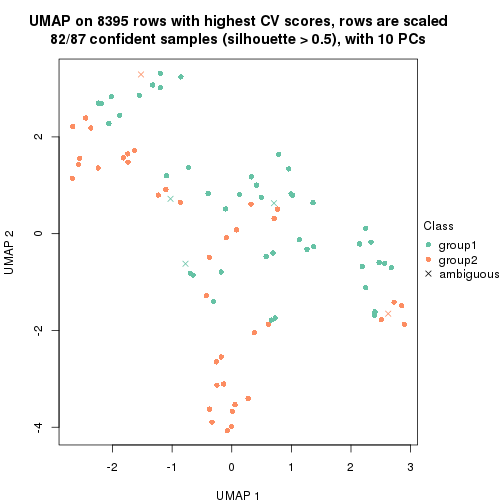
dimension_reduction(res, k = 3, method = "UMAP")
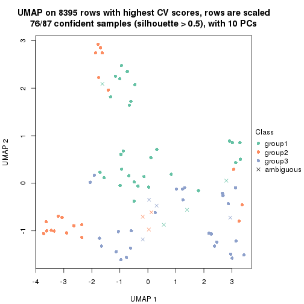
dimension_reduction(res, k = 4, method = "UMAP")
dimension_reduction(res, k = 5, method = "UMAP")
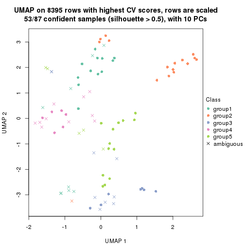
dimension_reduction(res, k = 6, method = "UMAP")
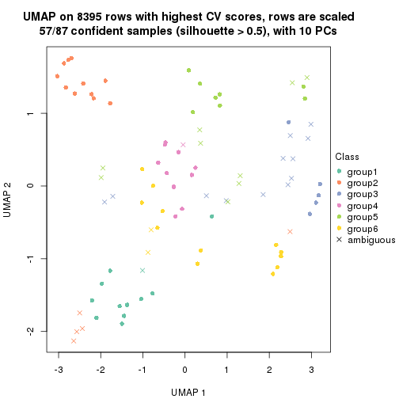
Following heatmap shows how subgroups are split when increasing k:
collect_classes(res)
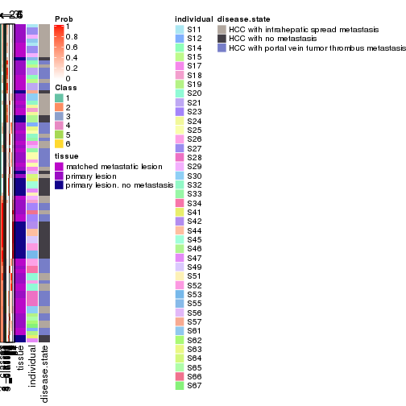
Test correlation between subgroups and known annotations. If the known annotation is numeric, one-way ANOVA test is applied, and if the known annotation is discrete, chi-squared contingency table test is applied.
test_to_known_factors(res)
#> n tissue(p) individual(p) disease.state(p) k
#> CV:skmeans 82 0.383044 1.11e-03 7.78e-02 2
#> CV:skmeans 76 0.087623 1.09e-05 2.30e-02 3
#> CV:skmeans 52 0.071989 7.90e-07 8.30e-03 4
#> CV:skmeans 53 0.015872 2.20e-09 7.54e-05 5
#> CV:skmeans 57 0.000637 3.55e-11 1.52e-06 6
If matrix rows can be associated to genes, consider to use GO_Enrichment(res,
...) to perform function enrichment for the signature genes.
The object with results only for a single top-value method and a single partition method can be extracted as:
res = res_list["CV", "pam"]
# you can also extract it by
# res = res_list["CV:pam"]
A summary of res and all the functions that can be applied to it:
res
#> A 'ConsensusPartition' object with k = 2, 3, 4, 5, 6.
#> On a matrix with 8395 rows and 87 columns.
#> Top rows (840, 1680, 2519, 3358, 4198) are extracted by 'CV' method.
#> Subgroups are detected by 'pam' method.
#> Performed in total 1250 partitions by row resampling.
#> Best k for subgroups seems to be 3.
#>
#> Following methods can be applied to this 'ConsensusPartition' object:
#> [1] "cola_report" "collect_classes" "collect_plots"
#> [4] "collect_stats" "colnames" "compare_signatures"
#> [7] "consensus_heatmap" "dimension_reduction" "functional_enrichment"
#> [10] "get_anno_col" "get_anno" "get_classes"
#> [13] "get_consensus" "get_matrix" "get_membership"
#> [16] "get_param" "get_signatures" "get_stats"
#> [19] "is_best_k" "is_stable_k" "membership_heatmap"
#> [22] "ncol" "nrow" "plot_ecdf"
#> [25] "rownames" "select_partition_number" "show"
#> [28] "suggest_best_k" "test_to_known_factors"
collect_plots() function collects all the plots made from res for all k (number of partitions)
into one single page to provide an easy and fast comparison between different k.
collect_plots(res)
The plots are:
k and the heatmap of
predicted classes for each k.k.k.k.All the plots in panels can be made by individual functions and they are plotted later in this section.
select_partition_number() produces several plots showing different
statistics for choosing “optimized” k. There are following statistics:
k;k, the area increased is defined as \(A_k - A_{k-1}\).The detailed explanations of these statistics can be found in the cola vignette.
Generally speaking, lower PAC score, higher mean silhouette score or higher
concordance corresponds to better partition. Rand index and Jaccard index
measure how similar the current partition is compared to partition with k-1.
If they are too similar, we won't accept k is better than k-1.
select_partition_number(res)
The numeric values for all these statistics can be obtained by get_stats().
get_stats(res)
#> k 1-PAC mean_silhouette concordance area_increased Rand Jaccard
#> 2 2 0.413 0.638 0.816 0.2775 0.850 0.850
#> 3 3 0.608 0.773 0.881 0.9236 0.608 0.548
#> 4 4 0.658 0.769 0.895 0.2476 0.798 0.607
#> 5 5 0.736 0.720 0.882 0.0728 0.957 0.875
#> 6 6 0.746 0.692 0.874 0.0562 0.952 0.842
suggest_best_k() suggests the best \(k\) based on these statistics. The rules are as follows:
NA.suggest_best_k(res)
#> [1] 3
Following shows the table of the partitions (You need to click the show/hide
code output link to see it). The membership matrix (columns with name p*)
is inferred by
clue::cl_consensus()
function with the SE method. Basically the value in the membership matrix
represents the probability to belong to a certain group. The finall class
label for an item is determined with the group with highest probability it
belongs to.
In get_classes() function, the entropy is calculated from the membership
matrix and the silhouette score is calculated from the consensus matrix.
cbind(get_classes(res, k = 2), get_membership(res, k = 2))
#> class entropy silhouette p1 p2
#> GSM5316 1 0.0000 0.5043 1.000 0.000
#> GSM5319 1 0.9909 0.7106 0.556 0.444
#> GSM5321 1 0.9815 0.7032 0.580 0.420
#> GSM5323 1 0.0000 0.5043 1.000 0.000
#> GSM5325 1 0.9922 0.7101 0.552 0.448
#> GSM5327 1 0.4815 0.5543 0.896 0.104
#> GSM5329 1 0.9922 0.7101 0.552 0.448
#> GSM5331 1 0.2236 0.5219 0.964 0.036
#> GSM5333 1 0.1414 0.5143 0.980 0.020
#> GSM5335 1 0.3274 0.5372 0.940 0.060
#> GSM5337 1 0.9608 0.6940 0.616 0.384
#> GSM5339 1 0.1633 0.4724 0.976 0.024
#> GSM5341 1 0.0376 0.5010 0.996 0.004
#> GSM5343 1 0.9922 0.7101 0.552 0.448
#> GSM5345 1 0.8813 0.6595 0.700 0.300
#> GSM5347 1 0.8861 0.6616 0.696 0.304
#> GSM5349 1 0.9833 0.7046 0.576 0.424
#> GSM5351 1 0.9833 0.7046 0.576 0.424
#> GSM5353 1 0.0376 0.5010 0.996 0.004
#> GSM5355 1 0.0376 0.5010 0.996 0.004
#> GSM5357 1 0.9922 0.7101 0.552 0.448
#> GSM5359 1 0.9922 0.7101 0.552 0.448
#> GSM5361 1 0.0376 0.5010 0.996 0.004
#> GSM5363 1 0.0000 0.5043 1.000 0.000
#> GSM5365 1 0.9922 0.7101 0.552 0.448
#> GSM5367 1 0.9922 0.7101 0.552 0.448
#> GSM5369 1 0.9922 0.7101 0.552 0.448
#> GSM5371 1 0.9922 0.7101 0.552 0.448
#> GSM5373 1 0.9922 0.7101 0.552 0.448
#> GSM5396 1 0.0376 0.5010 0.996 0.004
#> GSM5397 1 0.9933 0.7080 0.548 0.452
#> GSM5398 1 0.8207 0.6112 0.744 0.256
#> GSM5400 1 0.9850 0.7064 0.572 0.428
#> GSM5399 1 0.9922 0.7101 0.552 0.448
#> GSM5401 1 0.8861 0.0452 0.696 0.304
#> GSM5402 1 0.9922 0.7101 0.552 0.448
#> GSM5317 1 0.0000 0.5043 1.000 0.000
#> GSM5318 1 0.9922 0.7101 0.552 0.448
#> GSM5320 1 0.9815 0.7032 0.580 0.420
#> GSM5322 1 0.0000 0.5043 1.000 0.000
#> GSM5324 1 0.9922 0.7101 0.552 0.448
#> GSM5326 1 0.9815 0.7032 0.580 0.420
#> GSM5328 1 0.9775 0.7058 0.588 0.412
#> GSM5330 1 0.7674 0.6222 0.776 0.224
#> GSM5332 1 0.6887 0.5905 0.816 0.184
#> GSM5334 1 0.8499 0.6517 0.724 0.276
#> GSM5336 1 0.8207 0.6398 0.744 0.256
#> GSM5338 1 0.0376 0.5010 0.996 0.004
#> GSM5340 1 0.0376 0.5010 0.996 0.004
#> GSM5342 1 0.9922 0.7101 0.552 0.448
#> GSM5344 1 0.9129 0.6733 0.672 0.328
#> GSM5346 1 0.2423 0.5247 0.960 0.040
#> GSM5348 1 0.9815 0.7032 0.580 0.420
#> GSM5350 1 0.9393 0.6868 0.644 0.356
#> GSM5352 1 0.0376 0.5010 0.996 0.004
#> GSM5354 1 0.0376 0.5010 0.996 0.004
#> GSM5356 1 0.9922 0.7101 0.552 0.448
#> GSM5358 1 0.9922 0.7101 0.552 0.448
#> GSM5360 1 0.0376 0.5010 0.996 0.004
#> GSM5362 1 0.0376 0.5010 0.996 0.004
#> GSM5364 1 0.9922 0.7101 0.552 0.448
#> GSM5366 1 0.9922 0.7101 0.552 0.448
#> GSM5368 1 0.9881 0.7080 0.564 0.436
#> GSM5370 1 0.9922 0.7101 0.552 0.448
#> GSM5372 1 0.9922 0.7101 0.552 0.448
#> GSM5374 1 0.9922 0.7101 0.552 0.448
#> GSM5375 1 0.9922 0.7101 0.552 0.448
#> GSM5376 2 0.9754 -0.3732 0.408 0.592
#> GSM5377 1 0.9815 0.7032 0.580 0.420
#> GSM5378 2 0.1843 0.8617 0.028 0.972
#> GSM5379 2 0.1843 0.8617 0.028 0.972
#> GSM5380 1 0.9922 0.7101 0.552 0.448
#> GSM5381 1 0.9795 0.7014 0.584 0.416
#> GSM5382 1 0.9922 0.7101 0.552 0.448
#> GSM5383 1 0.9922 0.7101 0.552 0.448
#> GSM5384 1 0.9922 0.7101 0.552 0.448
#> GSM5385 1 0.9922 0.7101 0.552 0.448
#> GSM5386 2 0.3274 0.8453 0.060 0.940
#> GSM5387 2 0.3733 0.8307 0.072 0.928
#> GSM5392 1 0.9922 0.7101 0.552 0.448
#> GSM5388 1 0.9129 0.6737 0.672 0.328
#> GSM5389 1 0.9881 0.7101 0.564 0.436
#> GSM5390 2 0.2236 0.8607 0.036 0.964
#> GSM5391 2 0.1843 0.8617 0.028 0.972
#> GSM5393 1 0.0000 0.5043 1.000 0.000
#> GSM5394 1 0.9922 0.7101 0.552 0.448
#> GSM5395 1 0.9815 0.7032 0.580 0.420
cbind(get_classes(res, k = 3), get_membership(res, k = 3))
#> class entropy silhouette p1 p2 p3
#> GSM5316 1 0.0237 0.8494 0.996 0.000 0.004
#> GSM5319 3 0.0892 0.8730 0.020 0.000 0.980
#> GSM5321 3 0.3038 0.8206 0.104 0.000 0.896
#> GSM5323 1 0.0237 0.8494 0.996 0.000 0.004
#> GSM5325 3 0.0000 0.8767 0.000 0.000 1.000
#> GSM5327 1 0.5882 0.3760 0.652 0.000 0.348
#> GSM5329 3 0.0000 0.8767 0.000 0.000 1.000
#> GSM5331 1 0.8566 0.0424 0.480 0.096 0.424
#> GSM5333 1 0.8089 0.3601 0.600 0.092 0.308
#> GSM5335 1 0.1964 0.7927 0.944 0.000 0.056
#> GSM5337 1 0.6274 0.1487 0.544 0.000 0.456
#> GSM5339 1 0.0000 0.8502 1.000 0.000 0.000
#> GSM5341 1 0.0000 0.8502 1.000 0.000 0.000
#> GSM5343 3 0.0000 0.8767 0.000 0.000 1.000
#> GSM5345 3 0.4479 0.8295 0.044 0.096 0.860
#> GSM5347 3 0.4479 0.8310 0.044 0.096 0.860
#> GSM5349 3 0.4289 0.8431 0.040 0.092 0.868
#> GSM5351 3 0.1989 0.8599 0.048 0.004 0.948
#> GSM5353 1 0.0000 0.8502 1.000 0.000 0.000
#> GSM5355 1 0.0000 0.8502 1.000 0.000 0.000
#> GSM5357 3 0.0000 0.8767 0.000 0.000 1.000
#> GSM5359 3 0.0747 0.8754 0.000 0.016 0.984
#> GSM5361 1 0.0000 0.8502 1.000 0.000 0.000
#> GSM5363 1 0.0237 0.8494 0.996 0.000 0.004
#> GSM5365 3 0.0892 0.8716 0.020 0.000 0.980
#> GSM5367 3 0.0000 0.8767 0.000 0.000 1.000
#> GSM5369 3 0.0000 0.8767 0.000 0.000 1.000
#> GSM5371 3 0.0000 0.8767 0.000 0.000 1.000
#> GSM5373 3 0.0000 0.8767 0.000 0.000 1.000
#> GSM5396 1 0.0000 0.8502 1.000 0.000 0.000
#> GSM5397 3 0.0237 0.8760 0.000 0.004 0.996
#> GSM5398 3 0.5956 0.4823 0.324 0.004 0.672
#> GSM5400 3 0.3116 0.8039 0.108 0.000 0.892
#> GSM5399 3 0.0000 0.8767 0.000 0.000 1.000
#> GSM5401 2 0.9410 0.4007 0.220 0.504 0.276
#> GSM5402 3 0.0000 0.8767 0.000 0.000 1.000
#> GSM5317 1 0.0237 0.8494 0.996 0.000 0.004
#> GSM5318 3 0.0000 0.8767 0.000 0.000 1.000
#> GSM5320 3 0.5098 0.6535 0.248 0.000 0.752
#> GSM5322 1 0.0237 0.8494 0.996 0.000 0.004
#> GSM5324 3 0.0000 0.8767 0.000 0.000 1.000
#> GSM5326 3 0.5098 0.6535 0.248 0.000 0.752
#> GSM5328 3 0.3377 0.8482 0.012 0.092 0.896
#> GSM5330 3 0.6168 0.7691 0.124 0.096 0.780
#> GSM5332 1 0.8288 0.3251 0.572 0.096 0.332
#> GSM5334 3 0.8268 0.4710 0.328 0.096 0.576
#> GSM5336 3 0.8040 0.5345 0.300 0.092 0.608
#> GSM5338 1 0.0000 0.8502 1.000 0.000 0.000
#> GSM5340 1 0.0000 0.8502 1.000 0.000 0.000
#> GSM5342 3 0.0000 0.8767 0.000 0.000 1.000
#> GSM5344 3 0.4256 0.8347 0.036 0.096 0.868
#> GSM5346 3 0.8345 0.4093 0.344 0.096 0.560
#> GSM5348 3 0.4887 0.8311 0.060 0.096 0.844
#> GSM5350 3 0.5165 0.8204 0.072 0.096 0.832
#> GSM5352 1 0.0000 0.8502 1.000 0.000 0.000
#> GSM5354 1 0.0000 0.8502 1.000 0.000 0.000
#> GSM5356 3 0.1289 0.8724 0.000 0.032 0.968
#> GSM5358 3 0.2356 0.8606 0.000 0.072 0.928
#> GSM5360 1 0.0000 0.8502 1.000 0.000 0.000
#> GSM5362 1 0.0000 0.8502 1.000 0.000 0.000
#> GSM5364 3 0.0000 0.8767 0.000 0.000 1.000
#> GSM5366 3 0.0000 0.8767 0.000 0.000 1.000
#> GSM5368 3 0.1289 0.8696 0.032 0.000 0.968
#> GSM5370 3 0.0000 0.8767 0.000 0.000 1.000
#> GSM5372 3 0.0000 0.8767 0.000 0.000 1.000
#> GSM5374 3 0.2878 0.8497 0.000 0.096 0.904
#> GSM5375 3 0.3459 0.8495 0.012 0.096 0.892
#> GSM5376 3 0.7292 -0.1524 0.028 0.472 0.500
#> GSM5377 3 0.7997 0.3015 0.084 0.316 0.600
#> GSM5378 2 0.3030 0.8970 0.004 0.904 0.092
#> GSM5379 2 0.3030 0.8970 0.004 0.904 0.092
#> GSM5380 3 0.2448 0.8587 0.000 0.076 0.924
#> GSM5381 3 0.7360 0.6409 0.212 0.096 0.692
#> GSM5382 3 0.0000 0.8767 0.000 0.000 1.000
#> GSM5383 3 0.0000 0.8767 0.000 0.000 1.000
#> GSM5384 3 0.2878 0.8497 0.000 0.096 0.904
#> GSM5385 3 0.2878 0.8497 0.000 0.096 0.904
#> GSM5386 2 0.5276 0.8455 0.052 0.820 0.128
#> GSM5387 2 0.3370 0.8825 0.024 0.904 0.072
#> GSM5392 3 0.2878 0.8497 0.000 0.096 0.904
#> GSM5388 3 0.3816 0.8035 0.148 0.000 0.852
#> GSM5389 3 0.0892 0.8752 0.020 0.000 0.980
#> GSM5390 2 0.3207 0.8938 0.012 0.904 0.084
#> GSM5391 2 0.3030 0.8970 0.004 0.904 0.092
#> GSM5393 1 0.0237 0.8494 0.996 0.000 0.004
#> GSM5394 3 0.0000 0.8767 0.000 0.000 1.000
#> GSM5395 3 0.5098 0.6535 0.248 0.000 0.752
cbind(get_classes(res, k = 4), get_membership(res, k = 4))
#> class entropy silhouette p1 p2 p3 p4
#> GSM5316 1 0.0000 0.95661 1.000 0.000 0.000 0.000
#> GSM5319 4 0.0188 0.85273 0.004 0.000 0.000 0.996
#> GSM5321 4 0.0188 0.85229 0.004 0.000 0.000 0.996
#> GSM5323 1 0.0000 0.95661 1.000 0.000 0.000 0.000
#> GSM5325 4 0.0000 0.85334 0.000 0.000 0.000 1.000
#> GSM5327 1 0.4989 -0.02973 0.528 0.000 0.000 0.472
#> GSM5329 4 0.0188 0.85261 0.004 0.000 0.000 0.996
#> GSM5331 3 0.3311 0.59972 0.172 0.000 0.828 0.000
#> GSM5333 3 0.4008 0.50201 0.244 0.000 0.756 0.000
#> GSM5335 1 0.1637 0.87168 0.940 0.000 0.000 0.060
#> GSM5337 4 0.4877 0.31453 0.408 0.000 0.000 0.592
#> GSM5339 1 0.0000 0.95661 1.000 0.000 0.000 0.000
#> GSM5341 1 0.0000 0.95661 1.000 0.000 0.000 0.000
#> GSM5343 4 0.0000 0.85334 0.000 0.000 0.000 1.000
#> GSM5345 3 0.3074 0.89027 0.000 0.000 0.848 0.152
#> GSM5347 3 0.3074 0.89027 0.000 0.000 0.848 0.152
#> GSM5349 3 0.4428 0.73429 0.004 0.000 0.720 0.276
#> GSM5351 4 0.5028 0.22564 0.004 0.000 0.400 0.596
#> GSM5353 1 0.0000 0.95661 1.000 0.000 0.000 0.000
#> GSM5355 1 0.0000 0.95661 1.000 0.000 0.000 0.000
#> GSM5357 4 0.0000 0.85334 0.000 0.000 0.000 1.000
#> GSM5359 4 0.1118 0.83273 0.000 0.000 0.036 0.964
#> GSM5361 1 0.0000 0.95661 1.000 0.000 0.000 0.000
#> GSM5363 1 0.0000 0.95661 1.000 0.000 0.000 0.000
#> GSM5365 4 0.0188 0.85277 0.000 0.000 0.004 0.996
#> GSM5367 4 0.0188 0.85277 0.000 0.000 0.004 0.996
#> GSM5369 4 0.0000 0.85334 0.000 0.000 0.000 1.000
#> GSM5371 4 0.0000 0.85334 0.000 0.000 0.000 1.000
#> GSM5373 4 0.0000 0.85334 0.000 0.000 0.000 1.000
#> GSM5396 1 0.0000 0.95661 1.000 0.000 0.000 0.000
#> GSM5397 4 0.4477 0.46603 0.000 0.000 0.312 0.688
#> GSM5398 4 0.7802 -0.00899 0.304 0.000 0.276 0.420
#> GSM5400 4 0.5395 0.60477 0.084 0.000 0.184 0.732
#> GSM5399 4 0.0000 0.85334 0.000 0.000 0.000 1.000
#> GSM5401 2 0.7597 0.29646 0.204 0.440 0.000 0.356
#> GSM5402 4 0.2408 0.77742 0.000 0.000 0.104 0.896
#> GSM5317 1 0.0000 0.95661 1.000 0.000 0.000 0.000
#> GSM5318 4 0.0000 0.85334 0.000 0.000 0.000 1.000
#> GSM5320 4 0.0336 0.85082 0.008 0.000 0.000 0.992
#> GSM5322 1 0.0000 0.95661 1.000 0.000 0.000 0.000
#> GSM5324 4 0.0000 0.85334 0.000 0.000 0.000 1.000
#> GSM5326 4 0.0336 0.85082 0.008 0.000 0.000 0.992
#> GSM5328 4 0.4998 -0.11221 0.000 0.000 0.488 0.512
#> GSM5330 3 0.0188 0.73772 0.004 0.000 0.996 0.000
#> GSM5332 3 0.0188 0.73967 0.000 0.000 0.996 0.004
#> GSM5334 4 0.5657 0.42248 0.044 0.000 0.312 0.644
#> GSM5336 4 0.4917 0.40511 0.008 0.000 0.336 0.656
#> GSM5338 1 0.0000 0.95661 1.000 0.000 0.000 0.000
#> GSM5340 1 0.0000 0.95661 1.000 0.000 0.000 0.000
#> GSM5342 4 0.0188 0.85261 0.004 0.000 0.000 0.996
#> GSM5344 3 0.3074 0.89027 0.000 0.000 0.848 0.152
#> GSM5346 3 0.3208 0.88921 0.004 0.000 0.848 0.148
#> GSM5348 3 0.3668 0.85873 0.004 0.000 0.808 0.188
#> GSM5350 3 0.3208 0.88921 0.004 0.000 0.848 0.148
#> GSM5352 1 0.0000 0.95661 1.000 0.000 0.000 0.000
#> GSM5354 1 0.0000 0.95661 1.000 0.000 0.000 0.000
#> GSM5356 4 0.3311 0.71048 0.000 0.000 0.172 0.828
#> GSM5358 4 0.4817 0.29030 0.000 0.000 0.388 0.612
#> GSM5360 1 0.0000 0.95661 1.000 0.000 0.000 0.000
#> GSM5362 1 0.0000 0.95661 1.000 0.000 0.000 0.000
#> GSM5364 4 0.0188 0.85277 0.000 0.000 0.004 0.996
#> GSM5366 4 0.0188 0.85277 0.000 0.000 0.004 0.996
#> GSM5368 4 0.0707 0.84541 0.020 0.000 0.000 0.980
#> GSM5370 4 0.0000 0.85334 0.000 0.000 0.000 1.000
#> GSM5372 4 0.0000 0.85334 0.000 0.000 0.000 1.000
#> GSM5374 3 0.3074 0.89027 0.000 0.000 0.848 0.152
#> GSM5375 3 0.3942 0.79845 0.000 0.000 0.764 0.236
#> GSM5376 4 0.4950 0.29343 0.004 0.376 0.000 0.620
#> GSM5377 4 0.3893 0.66441 0.008 0.196 0.000 0.796
#> GSM5378 2 0.0000 0.86311 0.000 1.000 0.000 0.000
#> GSM5379 2 0.0000 0.86311 0.000 1.000 0.000 0.000
#> GSM5380 4 0.4972 0.03238 0.000 0.000 0.456 0.544
#> GSM5381 3 0.3552 0.87282 0.024 0.000 0.848 0.128
#> GSM5382 4 0.0000 0.85334 0.000 0.000 0.000 1.000
#> GSM5383 4 0.0000 0.85334 0.000 0.000 0.000 1.000
#> GSM5384 3 0.3123 0.88949 0.000 0.000 0.844 0.156
#> GSM5385 3 0.3123 0.88949 0.000 0.000 0.844 0.156
#> GSM5386 2 0.4370 0.72260 0.044 0.800 0.000 0.156
#> GSM5387 2 0.0000 0.86311 0.000 1.000 0.000 0.000
#> GSM5392 3 0.3123 0.88949 0.000 0.000 0.844 0.156
#> GSM5388 4 0.2921 0.73862 0.140 0.000 0.000 0.860
#> GSM5389 4 0.0817 0.84216 0.024 0.000 0.000 0.976
#> GSM5390 2 0.0000 0.86311 0.000 1.000 0.000 0.000
#> GSM5391 2 0.0000 0.86311 0.000 1.000 0.000 0.000
#> GSM5393 1 0.0000 0.95661 1.000 0.000 0.000 0.000
#> GSM5394 4 0.0000 0.85334 0.000 0.000 0.000 1.000
#> GSM5395 4 0.0469 0.84939 0.012 0.000 0.000 0.988
cbind(get_classes(res, k = 5), get_membership(res, k = 5))
#> class entropy silhouette p1 p2 p3 p4 p5
#> GSM5316 1 0.0000 0.9536 1.000 0.000 0.000 0.000 0.000
#> GSM5319 4 0.0162 0.8303 0.004 0.000 0.000 0.996 0.000
#> GSM5321 4 0.0000 0.8314 0.000 0.000 0.000 1.000 0.000
#> GSM5323 1 0.0000 0.9536 1.000 0.000 0.000 0.000 0.000
#> GSM5325 4 0.0000 0.8314 0.000 0.000 0.000 1.000 0.000
#> GSM5327 1 0.4300 -0.0576 0.524 0.000 0.000 0.476 0.000
#> GSM5329 4 0.0000 0.8314 0.000 0.000 0.000 1.000 0.000
#> GSM5331 5 0.5704 0.7642 0.148 0.000 0.232 0.000 0.620
#> GSM5333 5 0.5733 0.6779 0.220 0.000 0.160 0.000 0.620
#> GSM5335 1 0.1410 0.8654 0.940 0.000 0.000 0.060 0.000
#> GSM5337 4 0.4192 0.3148 0.404 0.000 0.000 0.596 0.000
#> GSM5339 1 0.0000 0.9536 1.000 0.000 0.000 0.000 0.000
#> GSM5341 1 0.0000 0.9536 1.000 0.000 0.000 0.000 0.000
#> GSM5343 4 0.0000 0.8314 0.000 0.000 0.000 1.000 0.000
#> GSM5345 3 0.0000 0.7645 0.000 0.000 1.000 0.000 0.000
#> GSM5347 3 0.0000 0.7645 0.000 0.000 1.000 0.000 0.000
#> GSM5349 3 0.3039 0.5285 0.000 0.000 0.808 0.192 0.000
#> GSM5351 3 0.4302 0.0402 0.000 0.000 0.520 0.480 0.000
#> GSM5353 1 0.0000 0.9536 1.000 0.000 0.000 0.000 0.000
#> GSM5355 1 0.0000 0.9536 1.000 0.000 0.000 0.000 0.000
#> GSM5357 4 0.3932 0.5819 0.000 0.000 0.000 0.672 0.328
#> GSM5359 4 0.4084 0.5786 0.000 0.000 0.004 0.668 0.328
#> GSM5361 1 0.0000 0.9536 1.000 0.000 0.000 0.000 0.000
#> GSM5363 1 0.0000 0.9536 1.000 0.000 0.000 0.000 0.000
#> GSM5365 4 0.1270 0.8138 0.000 0.000 0.000 0.948 0.052
#> GSM5367 4 0.1270 0.8138 0.000 0.000 0.000 0.948 0.052
#> GSM5369 4 0.0000 0.8314 0.000 0.000 0.000 1.000 0.000
#> GSM5371 4 0.0000 0.8314 0.000 0.000 0.000 1.000 0.000
#> GSM5373 4 0.0000 0.8314 0.000 0.000 0.000 1.000 0.000
#> GSM5396 1 0.0000 0.9536 1.000 0.000 0.000 0.000 0.000
#> GSM5397 4 0.4150 0.3188 0.000 0.000 0.388 0.612 0.000
#> GSM5398 4 0.8061 -0.0373 0.280 0.000 0.144 0.412 0.164
#> GSM5400 4 0.5230 0.5236 0.076 0.000 0.240 0.676 0.008
#> GSM5399 4 0.0000 0.8314 0.000 0.000 0.000 1.000 0.000
#> GSM5401 2 0.6549 0.2272 0.204 0.436 0.000 0.360 0.000
#> GSM5402 4 0.2127 0.7685 0.000 0.000 0.108 0.892 0.000
#> GSM5317 1 0.0000 0.9536 1.000 0.000 0.000 0.000 0.000
#> GSM5318 4 0.3424 0.6743 0.000 0.000 0.000 0.760 0.240
#> GSM5320 4 0.0000 0.8314 0.000 0.000 0.000 1.000 0.000
#> GSM5322 1 0.0000 0.9536 1.000 0.000 0.000 0.000 0.000
#> GSM5324 4 0.0000 0.8314 0.000 0.000 0.000 1.000 0.000
#> GSM5326 4 0.0000 0.8314 0.000 0.000 0.000 1.000 0.000
#> GSM5328 3 0.4305 -0.0499 0.000 0.000 0.512 0.488 0.000
#> GSM5330 5 0.4126 0.7254 0.000 0.000 0.380 0.000 0.620
#> GSM5332 5 0.4126 0.7254 0.000 0.000 0.380 0.000 0.620
#> GSM5334 4 0.4770 0.4647 0.036 0.000 0.320 0.644 0.000
#> GSM5336 4 0.3983 0.4608 0.000 0.000 0.340 0.660 0.000
#> GSM5338 1 0.0000 0.9536 1.000 0.000 0.000 0.000 0.000
#> GSM5340 1 0.0000 0.9536 1.000 0.000 0.000 0.000 0.000
#> GSM5342 4 0.0000 0.8314 0.000 0.000 0.000 1.000 0.000
#> GSM5344 3 0.0000 0.7645 0.000 0.000 1.000 0.000 0.000
#> GSM5346 3 0.0000 0.7645 0.000 0.000 1.000 0.000 0.000
#> GSM5348 3 0.1043 0.7291 0.000 0.000 0.960 0.040 0.000
#> GSM5350 3 0.0000 0.7645 0.000 0.000 1.000 0.000 0.000
#> GSM5352 1 0.0000 0.9536 1.000 0.000 0.000 0.000 0.000
#> GSM5354 1 0.0000 0.9536 1.000 0.000 0.000 0.000 0.000
#> GSM5356 4 0.6113 0.4117 0.000 0.000 0.144 0.524 0.332
#> GSM5358 4 0.6824 -0.0647 0.000 0.000 0.324 0.344 0.332
#> GSM5360 1 0.0000 0.9536 1.000 0.000 0.000 0.000 0.000
#> GSM5362 1 0.0000 0.9536 1.000 0.000 0.000 0.000 0.000
#> GSM5364 4 0.1341 0.8126 0.000 0.000 0.000 0.944 0.056
#> GSM5366 4 0.1270 0.8138 0.000 0.000 0.000 0.948 0.052
#> GSM5368 4 0.0510 0.8254 0.016 0.000 0.000 0.984 0.000
#> GSM5370 4 0.0000 0.8314 0.000 0.000 0.000 1.000 0.000
#> GSM5372 4 0.0000 0.8314 0.000 0.000 0.000 1.000 0.000
#> GSM5374 3 0.2329 0.6315 0.000 0.000 0.876 0.000 0.124
#> GSM5375 3 0.2605 0.5553 0.000 0.000 0.852 0.148 0.000
#> GSM5376 4 0.4114 0.3316 0.000 0.376 0.000 0.624 0.000
#> GSM5377 4 0.3074 0.6762 0.000 0.196 0.000 0.804 0.000
#> GSM5378 2 0.0000 0.8079 0.000 1.000 0.000 0.000 0.000
#> GSM5379 2 0.0000 0.8079 0.000 1.000 0.000 0.000 0.000
#> GSM5380 4 0.4291 0.1440 0.000 0.000 0.464 0.536 0.000
#> GSM5381 3 0.0000 0.7645 0.000 0.000 1.000 0.000 0.000
#> GSM5382 4 0.0000 0.8314 0.000 0.000 0.000 1.000 0.000
#> GSM5383 4 0.0000 0.8314 0.000 0.000 0.000 1.000 0.000
#> GSM5384 3 0.0000 0.7645 0.000 0.000 1.000 0.000 0.000
#> GSM5385 3 0.0000 0.7645 0.000 0.000 1.000 0.000 0.000
#> GSM5386 2 0.3695 0.6232 0.036 0.800 0.000 0.164 0.000
#> GSM5387 2 0.0000 0.8079 0.000 1.000 0.000 0.000 0.000
#> GSM5392 3 0.0000 0.7645 0.000 0.000 1.000 0.000 0.000
#> GSM5388 4 0.2516 0.7310 0.140 0.000 0.000 0.860 0.000
#> GSM5389 4 0.0609 0.8241 0.020 0.000 0.000 0.980 0.000
#> GSM5390 2 0.0000 0.8079 0.000 1.000 0.000 0.000 0.000
#> GSM5391 2 0.0000 0.8079 0.000 1.000 0.000 0.000 0.000
#> GSM5393 1 0.0000 0.9536 1.000 0.000 0.000 0.000 0.000
#> GSM5394 4 0.0000 0.8314 0.000 0.000 0.000 1.000 0.000
#> GSM5395 4 0.0000 0.8314 0.000 0.000 0.000 1.000 0.000
cbind(get_classes(res, k = 6), get_membership(res, k = 6))
#> class entropy silhouette p1 p2 p3 p4 p5 p6
#> GSM5316 1 0.0000 0.9543 1.000 0.000 0.000 0.000 0.000 0.000
#> GSM5319 4 0.0146 0.7712 0.004 0.000 0.000 0.996 0.000 0.000
#> GSM5321 4 0.0000 0.7734 0.000 0.000 0.000 1.000 0.000 0.000
#> GSM5323 1 0.0000 0.9543 1.000 0.000 0.000 0.000 0.000 0.000
#> GSM5325 4 0.0000 0.7734 0.000 0.000 0.000 1.000 0.000 0.000
#> GSM5327 1 0.3991 -0.0237 0.524 0.000 0.000 0.472 0.000 0.004
#> GSM5329 4 0.0000 0.7734 0.000 0.000 0.000 1.000 0.000 0.000
#> GSM5331 3 0.3727 0.9167 0.036 0.000 0.748 0.000 0.216 0.000
#> GSM5333 3 0.4074 0.8430 0.092 0.000 0.748 0.000 0.160 0.000
#> GSM5335 1 0.1267 0.8774 0.940 0.000 0.000 0.060 0.000 0.000
#> GSM5337 4 0.3765 0.2326 0.404 0.000 0.000 0.596 0.000 0.000
#> GSM5339 1 0.0547 0.9440 0.980 0.000 0.000 0.000 0.000 0.020
#> GSM5341 1 0.0547 0.9440 0.980 0.000 0.000 0.000 0.000 0.020
#> GSM5343 4 0.0000 0.7734 0.000 0.000 0.000 1.000 0.000 0.000
#> GSM5345 5 0.0000 0.7883 0.000 0.000 0.000 0.000 1.000 0.000
#> GSM5347 5 0.0000 0.7883 0.000 0.000 0.000 0.000 1.000 0.000
#> GSM5349 5 0.2730 0.5678 0.000 0.000 0.000 0.192 0.808 0.000
#> GSM5351 5 0.3864 0.0494 0.000 0.000 0.000 0.480 0.520 0.000
#> GSM5353 1 0.0000 0.9543 1.000 0.000 0.000 0.000 0.000 0.000
#> GSM5355 1 0.0000 0.9543 1.000 0.000 0.000 0.000 0.000 0.000
#> GSM5357 6 0.2969 0.8352 0.000 0.000 0.000 0.224 0.000 0.776
#> GSM5359 6 0.2969 0.8352 0.000 0.000 0.000 0.224 0.000 0.776
#> GSM5361 1 0.0000 0.9543 1.000 0.000 0.000 0.000 0.000 0.000
#> GSM5363 1 0.0000 0.9543 1.000 0.000 0.000 0.000 0.000 0.000
#> GSM5365 4 0.5597 0.3297 0.000 0.000 0.252 0.544 0.000 0.204
#> GSM5367 4 0.5597 0.3297 0.000 0.000 0.252 0.544 0.000 0.204
#> GSM5369 4 0.0000 0.7734 0.000 0.000 0.000 1.000 0.000 0.000
#> GSM5371 4 0.0000 0.7734 0.000 0.000 0.000 1.000 0.000 0.000
#> GSM5373 4 0.0000 0.7734 0.000 0.000 0.000 1.000 0.000 0.000
#> GSM5396 1 0.0000 0.9543 1.000 0.000 0.000 0.000 0.000 0.000
#> GSM5397 4 0.5728 -0.3195 0.000 0.000 0.000 0.452 0.168 0.380
#> GSM5398 4 0.7240 -0.0799 0.280 0.000 0.164 0.412 0.144 0.000
#> GSM5400 4 0.5801 -0.2563 0.032 0.000 0.000 0.496 0.088 0.384
#> GSM5399 4 0.0000 0.7734 0.000 0.000 0.000 1.000 0.000 0.000
#> GSM5401 2 0.6314 0.1439 0.204 0.436 0.000 0.340 0.000 0.020
#> GSM5402 4 0.1910 0.6871 0.000 0.000 0.000 0.892 0.108 0.000
#> GSM5317 1 0.0000 0.9543 1.000 0.000 0.000 0.000 0.000 0.000
#> GSM5318 6 0.3578 0.7110 0.000 0.000 0.000 0.340 0.000 0.660
#> GSM5320 4 0.0000 0.7734 0.000 0.000 0.000 1.000 0.000 0.000
#> GSM5322 1 0.0000 0.9543 1.000 0.000 0.000 0.000 0.000 0.000
#> GSM5324 4 0.0000 0.7734 0.000 0.000 0.000 1.000 0.000 0.000
#> GSM5326 4 0.0000 0.7734 0.000 0.000 0.000 1.000 0.000 0.000
#> GSM5328 5 0.3867 -0.0162 0.000 0.000 0.000 0.488 0.512 0.000
#> GSM5330 3 0.3151 0.9162 0.000 0.000 0.748 0.000 0.252 0.000
#> GSM5332 3 0.3151 0.9162 0.000 0.000 0.748 0.000 0.252 0.000
#> GSM5334 4 0.4285 0.3966 0.036 0.000 0.000 0.644 0.320 0.000
#> GSM5336 4 0.3578 0.3953 0.000 0.000 0.000 0.660 0.340 0.000
#> GSM5338 1 0.0547 0.9440 0.980 0.000 0.000 0.000 0.000 0.020
#> GSM5340 1 0.0547 0.9440 0.980 0.000 0.000 0.000 0.000 0.020
#> GSM5342 4 0.0000 0.7734 0.000 0.000 0.000 1.000 0.000 0.000
#> GSM5344 5 0.0000 0.7883 0.000 0.000 0.000 0.000 1.000 0.000
#> GSM5346 5 0.0000 0.7883 0.000 0.000 0.000 0.000 1.000 0.000
#> GSM5348 5 0.0937 0.7565 0.000 0.000 0.000 0.040 0.960 0.000
#> GSM5350 5 0.0000 0.7883 0.000 0.000 0.000 0.000 1.000 0.000
#> GSM5352 1 0.0000 0.9543 1.000 0.000 0.000 0.000 0.000 0.000
#> GSM5354 1 0.0000 0.9543 1.000 0.000 0.000 0.000 0.000 0.000
#> GSM5356 6 0.3663 0.7943 0.000 0.000 0.000 0.148 0.068 0.784
#> GSM5358 6 0.3449 0.6778 0.000 0.000 0.000 0.076 0.116 0.808
#> GSM5360 1 0.0000 0.9543 1.000 0.000 0.000 0.000 0.000 0.000
#> GSM5362 1 0.0000 0.9543 1.000 0.000 0.000 0.000 0.000 0.000
#> GSM5364 4 0.5597 0.3297 0.000 0.000 0.252 0.544 0.000 0.204
#> GSM5366 4 0.5597 0.3297 0.000 0.000 0.252 0.544 0.000 0.204
#> GSM5368 4 0.0458 0.7638 0.016 0.000 0.000 0.984 0.000 0.000
#> GSM5370 4 0.0000 0.7734 0.000 0.000 0.000 1.000 0.000 0.000
#> GSM5372 4 0.0000 0.7734 0.000 0.000 0.000 1.000 0.000 0.000
#> GSM5374 5 0.2454 0.6190 0.000 0.000 0.000 0.000 0.840 0.160
#> GSM5375 5 0.2340 0.6091 0.000 0.000 0.000 0.148 0.852 0.000
#> GSM5376 4 0.3695 0.2967 0.000 0.376 0.000 0.624 0.000 0.000
#> GSM5377 4 0.2762 0.5863 0.000 0.196 0.000 0.804 0.000 0.000
#> GSM5378 2 0.0000 0.8155 0.000 1.000 0.000 0.000 0.000 0.000
#> GSM5379 2 0.0000 0.8155 0.000 1.000 0.000 0.000 0.000 0.000
#> GSM5380 4 0.3854 0.1015 0.000 0.000 0.000 0.536 0.464 0.000
#> GSM5381 5 0.0000 0.7883 0.000 0.000 0.000 0.000 1.000 0.000
#> GSM5382 4 0.0000 0.7734 0.000 0.000 0.000 1.000 0.000 0.000
#> GSM5383 4 0.0000 0.7734 0.000 0.000 0.000 1.000 0.000 0.000
#> GSM5384 5 0.0000 0.7883 0.000 0.000 0.000 0.000 1.000 0.000
#> GSM5385 5 0.0000 0.7883 0.000 0.000 0.000 0.000 1.000 0.000
#> GSM5386 2 0.3569 0.6114 0.036 0.792 0.000 0.164 0.000 0.008
#> GSM5387 2 0.0000 0.8155 0.000 1.000 0.000 0.000 0.000 0.000
#> GSM5392 5 0.0000 0.7883 0.000 0.000 0.000 0.000 1.000 0.000
#> GSM5388 4 0.2260 0.6457 0.140 0.000 0.000 0.860 0.000 0.000
#> GSM5389 4 0.0547 0.7609 0.020 0.000 0.000 0.980 0.000 0.000
#> GSM5390 2 0.0000 0.8155 0.000 1.000 0.000 0.000 0.000 0.000
#> GSM5391 2 0.0000 0.8155 0.000 1.000 0.000 0.000 0.000 0.000
#> GSM5393 1 0.0000 0.9543 1.000 0.000 0.000 0.000 0.000 0.000
#> GSM5394 4 0.0000 0.7734 0.000 0.000 0.000 1.000 0.000 0.000
#> GSM5395 4 0.0000 0.7734 0.000 0.000 0.000 1.000 0.000 0.000
Heatmaps for the consensus matrix. It visualizes the probability of two samples to be in a same group.
consensus_heatmap(res, k = 2)
consensus_heatmap(res, k = 3)
consensus_heatmap(res, k = 4)
consensus_heatmap(res, k = 5)
consensus_heatmap(res, k = 6)
Heatmaps for the membership of samples in all partitions to see how consistent they are:
membership_heatmap(res, k = 2)

membership_heatmap(res, k = 3)
membership_heatmap(res, k = 4)
membership_heatmap(res, k = 5)
membership_heatmap(res, k = 6)
As soon as we have had the classes for columns, we can look for signatures which are significantly different between classes which can be candidate marks for certain classes. Following are the heatmaps for signatures.
Signature heatmaps where rows are scaled:
get_signatures(res, k = 2)
#> Error: The width or height of the raster image is zero, maybe you forget to turn off the
#> previous graphic device or it was corrupted. Run `dev.off()` to close it.

get_signatures(res, k = 3)
#> Error: The width or height of the raster image is zero, maybe you forget to turn off the
#> previous graphic device or it was corrupted. Run `dev.off()` to close it.

get_signatures(res, k = 4)
#> Error: The width or height of the raster image is zero, maybe you forget to turn off the
#> previous graphic device or it was corrupted. Run `dev.off()` to close it.

get_signatures(res, k = 5)
#> Error: The width or height of the raster image is zero, maybe you forget to turn off the
#> previous graphic device or it was corrupted. Run `dev.off()` to close it.

get_signatures(res, k = 6)
#> Error: The width or height of the raster image is zero, maybe you forget to turn off the
#> previous graphic device or it was corrupted. Run `dev.off()` to close it.

Signature heatmaps where rows are not scaled:
get_signatures(res, k = 2, scale_rows = FALSE)
#> Error: The width or height of the raster image is zero, maybe you forget to turn off the
#> previous graphic device or it was corrupted. Run `dev.off()` to close it.

get_signatures(res, k = 3, scale_rows = FALSE)
#> Error: The width or height of the raster image is zero, maybe you forget to turn off the
#> previous graphic device or it was corrupted. Run `dev.off()` to close it.

get_signatures(res, k = 4, scale_rows = FALSE)
#> Error: The width or height of the raster image is zero, maybe you forget to turn off the
#> previous graphic device or it was corrupted. Run `dev.off()` to close it.

get_signatures(res, k = 5, scale_rows = FALSE)
#> Error: The width or height of the raster image is zero, maybe you forget to turn off the
#> previous graphic device or it was corrupted. Run `dev.off()` to close it.

get_signatures(res, k = 6, scale_rows = FALSE)
#> Error: The width or height of the raster image is zero, maybe you forget to turn off the
#> previous graphic device or it was corrupted. Run `dev.off()` to close it.

Compare the overlap of signatures from different k:
compare_signatures(res)
get_signature() returns a data frame invisibly. TO get the list of signatures, the function
call should be assigned to a variable explicitly. In following code, if plot argument is set
to FALSE, no heatmap is plotted while only the differential analysis is performed.
# code only for demonstration
tb = get_signature(res, k = ..., plot = FALSE)
An example of the output of tb is:
#> which_row fdr mean_1 mean_2 scaled_mean_1 scaled_mean_2 km
#> 1 38 0.042760348 8.373488 9.131774 -0.5533452 0.5164555 1
#> 2 40 0.018707592 7.106213 8.469186 -0.6173731 0.5762149 1
#> 3 55 0.019134737 10.221463 11.207825 -0.6159697 0.5749050 1
#> 4 59 0.006059896 5.921854 7.869574 -0.6899429 0.6439467 1
#> 5 60 0.018055526 8.928898 10.211722 -0.6204761 0.5791110 1
#> 6 98 0.009384629 15.714769 14.887706 0.6635654 -0.6193277 2
...
The columns in tb are:
which_row: row indices corresponding to the input matrix.fdr: FDR for the differential test. mean_x: The mean value in group x.scaled_mean_x: The mean value in group x after rows are scaled.km: Row groups if k-means clustering is applied to rows.UMAP plot which shows how samples are separated.
dimension_reduction(res, k = 2, method = "UMAP")
dimension_reduction(res, k = 3, method = "UMAP")
dimension_reduction(res, k = 4, method = "UMAP")
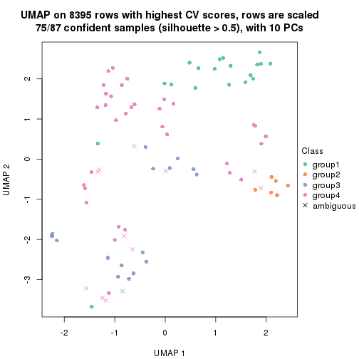
dimension_reduction(res, k = 5, method = "UMAP")
dimension_reduction(res, k = 6, method = "UMAP")
Following heatmap shows how subgroups are split when increasing k:
collect_classes(res)
Test correlation between subgroups and known annotations. If the known annotation is numeric, one-way ANOVA test is applied, and if the known annotation is discrete, chi-squared contingency table test is applied.
test_to_known_factors(res)
#> n tissue(p) individual(p) disease.state(p) k
#> CV:pam 84 6.18e-05 2.53e-05 6.18e-05 2
#> CV:pam 76 2.88e-04 2.47e-07 1.62e-05 3
#> CV:pam 75 9.64e-04 3.11e-10 1.75e-04 4
#> CV:pam 74 1.18e-03 1.45e-12 5.60e-06 5
#> CV:pam 71 2.75e-03 3.80e-14 4.99e-07 6
If matrix rows can be associated to genes, consider to use GO_Enrichment(res,
...) to perform function enrichment for the signature genes.
The object with results only for a single top-value method and a single partition method can be extracted as:
res = res_list["CV", "mclust"]
# you can also extract it by
# res = res_list["CV:mclust"]
A summary of res and all the functions that can be applied to it:
res
#> A 'ConsensusPartition' object with k = 2, 3, 4, 5, 6.
#> On a matrix with 8395 rows and 87 columns.
#> Top rows (840, 1680, 2519, 3358, 4198) are extracted by 'CV' method.
#> Subgroups are detected by 'mclust' method.
#> Performed in total 1250 partitions by row resampling.
#> Best k for subgroups seems to be 2.
#>
#> Following methods can be applied to this 'ConsensusPartition' object:
#> [1] "cola_report" "collect_classes" "collect_plots"
#> [4] "collect_stats" "colnames" "compare_signatures"
#> [7] "consensus_heatmap" "dimension_reduction" "functional_enrichment"
#> [10] "get_anno_col" "get_anno" "get_classes"
#> [13] "get_consensus" "get_matrix" "get_membership"
#> [16] "get_param" "get_signatures" "get_stats"
#> [19] "is_best_k" "is_stable_k" "membership_heatmap"
#> [22] "ncol" "nrow" "plot_ecdf"
#> [25] "rownames" "select_partition_number" "show"
#> [28] "suggest_best_k" "test_to_known_factors"
collect_plots() function collects all the plots made from res for all k (number of partitions)
into one single page to provide an easy and fast comparison between different k.
collect_plots(res)
The plots are:
k and the heatmap of
predicted classes for each k.k.k.k.All the plots in panels can be made by individual functions and they are plotted later in this section.
select_partition_number() produces several plots showing different
statistics for choosing “optimized” k. There are following statistics:
k;k, the area increased is defined as \(A_k - A_{k-1}\).The detailed explanations of these statistics can be found in the cola vignette.
Generally speaking, lower PAC score, higher mean silhouette score or higher
concordance corresponds to better partition. Rand index and Jaccard index
measure how similar the current partition is compared to partition with k-1.
If they are too similar, we won't accept k is better than k-1.
select_partition_number(res)
The numeric values for all these statistics can be obtained by get_stats().
get_stats(res)
#> k 1-PAC mean_silhouette concordance area_increased Rand Jaccard
#> 2 2 0.259 0.728 0.848 0.4591 0.496 0.496
#> 3 3 0.149 0.421 0.669 0.3023 0.851 0.729
#> 4 4 0.374 0.642 0.796 0.0524 0.850 0.693
#> 5 5 0.503 0.659 0.774 0.1141 0.927 0.813
#> 6 6 0.482 0.366 0.652 0.1020 0.849 0.582
suggest_best_k() suggests the best \(k\) based on these statistics. The rules are as follows:
NA.suggest_best_k(res)
#> [1] 2
Following shows the table of the partitions (You need to click the show/hide
code output link to see it). The membership matrix (columns with name p*)
is inferred by
clue::cl_consensus()
function with the SE method. Basically the value in the membership matrix
represents the probability to belong to a certain group. The finall class
label for an item is determined with the group with highest probability it
belongs to.
In get_classes() function, the entropy is calculated from the membership
matrix and the silhouette score is calculated from the consensus matrix.
cbind(get_classes(res, k = 2), get_membership(res, k = 2))
#> class entropy silhouette p1 p2
#> GSM5316 2 0.0672 0.835 0.008 0.992
#> GSM5319 1 0.6247 0.745 0.844 0.156
#> GSM5321 2 0.7056 0.753 0.192 0.808
#> GSM5323 2 0.6801 0.745 0.180 0.820
#> GSM5325 1 0.9129 0.632 0.672 0.328
#> GSM5327 2 0.1843 0.843 0.028 0.972
#> GSM5329 1 0.4690 0.810 0.900 0.100
#> GSM5331 1 0.0000 0.781 1.000 0.000
#> GSM5333 1 0.0000 0.781 1.000 0.000
#> GSM5335 2 0.2043 0.831 0.032 0.968
#> GSM5337 2 0.3431 0.824 0.064 0.936
#> GSM5339 2 0.1843 0.843 0.028 0.972
#> GSM5341 2 0.1843 0.843 0.028 0.972
#> GSM5343 2 0.6801 0.760 0.180 0.820
#> GSM5345 1 0.3114 0.810 0.944 0.056
#> GSM5347 1 0.3114 0.810 0.944 0.056
#> GSM5349 1 0.7219 0.713 0.800 0.200
#> GSM5351 1 0.3114 0.810 0.944 0.056
#> GSM5353 2 0.0672 0.835 0.008 0.992
#> GSM5355 2 0.5059 0.800 0.112 0.888
#> GSM5357 1 0.5408 0.816 0.876 0.124
#> GSM5359 1 0.4815 0.818 0.896 0.104
#> GSM5361 2 0.1843 0.843 0.028 0.972
#> GSM5363 2 0.6343 0.775 0.160 0.840
#> GSM5365 1 0.9522 0.480 0.628 0.372
#> GSM5367 1 0.9552 0.476 0.624 0.376
#> GSM5369 2 0.9170 0.565 0.332 0.668
#> GSM5371 2 0.8555 0.645 0.280 0.720
#> GSM5373 1 0.6887 0.799 0.816 0.184
#> GSM5396 2 0.7602 0.704 0.220 0.780
#> GSM5397 1 0.4161 0.819 0.916 0.084
#> GSM5398 1 0.6623 0.737 0.828 0.172
#> GSM5400 1 0.8207 0.736 0.744 0.256
#> GSM5399 1 0.9323 0.600 0.652 0.348
#> GSM5401 2 0.1414 0.841 0.020 0.980
#> GSM5402 1 0.7139 0.787 0.804 0.196
#> GSM5317 2 0.0672 0.835 0.008 0.992
#> GSM5318 1 0.7674 0.760 0.776 0.224
#> GSM5320 2 0.1633 0.837 0.024 0.976
#> GSM5322 2 0.6623 0.754 0.172 0.828
#> GSM5324 2 0.9933 0.151 0.452 0.548
#> GSM5326 2 0.9661 0.463 0.392 0.608
#> GSM5328 1 0.3733 0.815 0.928 0.072
#> GSM5330 1 0.0000 0.781 1.000 0.000
#> GSM5332 1 0.0000 0.781 1.000 0.000
#> GSM5334 2 0.9522 0.494 0.372 0.628
#> GSM5336 2 0.9635 0.460 0.388 0.612
#> GSM5338 2 0.1843 0.843 0.028 0.972
#> GSM5340 2 0.1843 0.843 0.028 0.972
#> GSM5342 2 0.7528 0.718 0.216 0.784
#> GSM5344 1 0.2948 0.809 0.948 0.052
#> GSM5346 1 0.9358 0.380 0.648 0.352
#> GSM5348 1 0.9635 0.261 0.612 0.388
#> GSM5350 1 0.7602 0.684 0.780 0.220
#> GSM5352 2 0.0672 0.835 0.008 0.992
#> GSM5354 2 0.0672 0.835 0.008 0.992
#> GSM5356 1 0.3584 0.815 0.932 0.068
#> GSM5358 1 0.2948 0.811 0.948 0.052
#> GSM5360 2 0.1843 0.843 0.028 0.972
#> GSM5362 2 0.1843 0.843 0.028 0.972
#> GSM5364 1 0.9427 0.540 0.640 0.360
#> GSM5366 1 0.9552 0.494 0.624 0.376
#> GSM5368 2 0.7376 0.744 0.208 0.792
#> GSM5370 1 0.9635 0.475 0.612 0.388
#> GSM5372 1 0.5737 0.814 0.864 0.136
#> GSM5374 1 0.3733 0.816 0.928 0.072
#> GSM5375 1 0.3274 0.812 0.940 0.060
#> GSM5376 2 0.1843 0.843 0.028 0.972
#> GSM5377 2 0.1843 0.843 0.028 0.972
#> GSM5378 2 0.1414 0.841 0.020 0.980
#> GSM5379 2 0.1414 0.841 0.020 0.980
#> GSM5380 1 0.8267 0.728 0.740 0.260
#> GSM5381 1 0.6973 0.791 0.812 0.188
#> GSM5382 2 0.9909 0.332 0.444 0.556
#> GSM5383 2 0.9833 0.383 0.424 0.576
#> GSM5384 1 0.6343 0.806 0.840 0.160
#> GSM5385 1 0.6148 0.810 0.848 0.152
#> GSM5386 2 0.1414 0.841 0.020 0.980
#> GSM5387 2 0.1414 0.841 0.020 0.980
#> GSM5392 1 0.7883 0.738 0.764 0.236
#> GSM5388 2 0.6531 0.767 0.168 0.832
#> GSM5389 2 0.9491 0.373 0.368 0.632
#> GSM5390 2 0.1414 0.841 0.020 0.980
#> GSM5391 2 0.1414 0.841 0.020 0.980
#> GSM5393 2 0.0672 0.835 0.008 0.992
#> GSM5394 1 0.6712 0.749 0.824 0.176
#> GSM5395 2 0.7056 0.747 0.192 0.808
cbind(get_classes(res, k = 3), get_membership(res, k = 3))
#> class entropy silhouette p1 p2 p3
#> GSM5316 1 0.101 0.53202 0.980 0.012 0.008
#> GSM5319 3 0.869 0.57635 0.200 0.204 0.596
#> GSM5321 1 0.367 0.54560 0.888 0.020 0.092
#> GSM5323 1 0.333 0.55786 0.904 0.020 0.076
#> GSM5325 3 0.624 0.67243 0.160 0.072 0.768
#> GSM5327 1 0.759 0.10100 0.680 0.208 0.112
#> GSM5329 3 0.601 0.70109 0.088 0.124 0.788
#> GSM5331 3 0.749 0.49878 0.036 0.468 0.496
#> GSM5333 3 0.749 0.49878 0.036 0.468 0.496
#> GSM5335 1 0.346 0.53921 0.904 0.036 0.060
#> GSM5337 1 0.473 0.54177 0.840 0.032 0.128
#> GSM5339 1 0.859 -0.48611 0.544 0.344 0.112
#> GSM5341 1 0.843 -0.43012 0.560 0.336 0.104
#> GSM5343 1 0.680 0.44138 0.708 0.056 0.236
#> GSM5345 3 0.512 0.70300 0.028 0.160 0.812
#> GSM5347 3 0.623 0.69787 0.064 0.172 0.764
#> GSM5349 3 0.803 0.55796 0.240 0.120 0.640
#> GSM5351 3 0.531 0.69308 0.020 0.192 0.788
#> GSM5353 1 0.127 0.54713 0.972 0.004 0.024
#> GSM5355 1 0.212 0.55601 0.948 0.012 0.040
#> GSM5357 3 0.385 0.70378 0.016 0.108 0.876
#> GSM5359 3 0.369 0.70761 0.012 0.108 0.880
#> GSM5361 1 0.510 0.46464 0.836 0.080 0.084
#> GSM5363 1 0.333 0.55751 0.904 0.020 0.076
#> GSM5365 3 0.929 0.44375 0.312 0.184 0.504
#> GSM5367 3 0.934 0.44808 0.308 0.192 0.500
#> GSM5369 3 0.975 0.02661 0.320 0.244 0.436
#> GSM5371 1 0.978 0.05913 0.416 0.240 0.344
#> GSM5373 3 0.673 0.69845 0.128 0.124 0.748
#> GSM5396 1 0.556 0.47146 0.780 0.028 0.192
#> GSM5397 3 0.312 0.71974 0.012 0.080 0.908
#> GSM5398 3 0.979 0.37612 0.288 0.276 0.436
#> GSM5400 3 0.529 0.71338 0.064 0.112 0.824
#> GSM5399 3 0.611 0.69497 0.140 0.080 0.780
#> GSM5401 1 0.879 -0.86728 0.448 0.440 0.112
#> GSM5402 3 0.496 0.71712 0.048 0.116 0.836
#> GSM5317 1 0.195 0.53426 0.952 0.040 0.008
#> GSM5318 3 0.517 0.70158 0.036 0.148 0.816
#> GSM5320 1 0.162 0.54757 0.964 0.012 0.024
#> GSM5322 1 0.270 0.55740 0.928 0.016 0.056
#> GSM5324 3 0.794 0.50159 0.276 0.096 0.628
#> GSM5326 1 0.976 0.10875 0.392 0.228 0.380
#> GSM5328 3 0.429 0.71707 0.064 0.064 0.872
#> GSM5330 3 0.729 0.50346 0.028 0.468 0.504
#> GSM5332 3 0.667 0.51215 0.008 0.468 0.524
#> GSM5334 1 0.675 0.47425 0.732 0.076 0.192
#> GSM5336 1 0.635 0.48015 0.764 0.080 0.156
#> GSM5338 1 0.840 -0.39179 0.568 0.328 0.104
#> GSM5340 1 0.795 -0.10139 0.640 0.252 0.108
#> GSM5342 1 0.648 0.44071 0.716 0.040 0.244
#> GSM5344 3 0.561 0.69168 0.028 0.196 0.776
#> GSM5346 3 0.931 0.34347 0.328 0.180 0.492
#> GSM5348 3 0.891 0.51372 0.200 0.228 0.572
#> GSM5350 3 0.610 0.68599 0.040 0.208 0.752
#> GSM5352 1 0.178 0.54413 0.960 0.020 0.020
#> GSM5354 1 0.140 0.54866 0.968 0.004 0.028
#> GSM5356 3 0.355 0.70422 0.000 0.132 0.868
#> GSM5358 3 0.382 0.70141 0.000 0.148 0.852
#> GSM5360 1 0.489 0.49610 0.844 0.060 0.096
#> GSM5362 1 0.574 0.42554 0.804 0.100 0.096
#> GSM5364 3 0.722 0.65233 0.136 0.148 0.716
#> GSM5366 3 0.728 0.65213 0.144 0.144 0.712
#> GSM5368 1 0.920 0.09853 0.536 0.248 0.216
#> GSM5370 3 0.731 0.59223 0.236 0.080 0.684
#> GSM5372 3 0.581 0.71353 0.092 0.108 0.800
#> GSM5374 3 0.385 0.70716 0.016 0.108 0.876
#> GSM5375 3 0.425 0.71668 0.028 0.108 0.864
#> GSM5376 1 0.898 -0.89883 0.436 0.436 0.128
#> GSM5377 1 0.905 -0.67309 0.496 0.360 0.144
#> GSM5378 2 0.884 0.92632 0.392 0.488 0.120
#> GSM5379 2 0.889 0.92061 0.424 0.456 0.120
#> GSM5380 3 0.576 0.67175 0.064 0.140 0.796
#> GSM5381 3 0.397 0.69889 0.008 0.132 0.860
#> GSM5382 3 0.975 -0.00809 0.348 0.232 0.420
#> GSM5383 3 0.976 -0.03798 0.356 0.232 0.412
#> GSM5384 3 0.395 0.71701 0.040 0.076 0.884
#> GSM5385 3 0.428 0.71450 0.072 0.056 0.872
#> GSM5386 1 0.874 -0.83652 0.460 0.432 0.108
#> GSM5387 1 0.884 -0.87931 0.444 0.440 0.116
#> GSM5392 3 0.654 0.66498 0.084 0.164 0.752
#> GSM5388 1 0.957 -0.34710 0.472 0.304 0.224
#> GSM5389 3 0.970 -0.00748 0.240 0.312 0.448
#> GSM5390 2 0.888 0.92751 0.420 0.460 0.120
#> GSM5391 2 0.884 0.92736 0.388 0.492 0.120
#> GSM5393 1 0.127 0.54698 0.972 0.004 0.024
#> GSM5394 3 0.576 0.70095 0.124 0.076 0.800
#> GSM5395 1 0.592 0.52139 0.792 0.080 0.128
cbind(get_classes(res, k = 4), get_membership(res, k = 4))
#> class entropy silhouette p1 p2 p3 p4
#> GSM5316 1 0.0592 0.6813 0.984 0.016 0.000 0.000
#> GSM5319 4 0.7382 0.4196 0.260 0.000 0.220 0.520
#> GSM5321 1 0.1398 0.6888 0.956 0.004 0.000 0.040
#> GSM5323 1 0.0707 0.6816 0.980 0.020 0.000 0.000
#> GSM5325 4 0.3488 0.7720 0.108 0.008 0.020 0.864
#> GSM5327 1 0.7260 0.4862 0.564 0.228 0.004 0.204
#> GSM5329 4 0.3398 0.7810 0.068 0.000 0.060 0.872
#> GSM5331 3 0.0188 0.9969 0.004 0.000 0.996 0.000
#> GSM5333 3 0.0188 0.9969 0.004 0.000 0.996 0.000
#> GSM5335 1 0.2335 0.6902 0.920 0.020 0.000 0.060
#> GSM5337 1 0.3585 0.6779 0.828 0.004 0.004 0.164
#> GSM5339 1 0.7697 0.3659 0.472 0.316 0.004 0.208
#> GSM5341 1 0.7646 0.3972 0.488 0.300 0.004 0.208
#> GSM5343 1 0.5230 0.6557 0.744 0.020 0.028 0.208
#> GSM5345 4 0.4222 0.6845 0.000 0.000 0.272 0.728
#> GSM5347 4 0.4222 0.6845 0.000 0.000 0.272 0.728
#> GSM5349 4 0.4998 0.7418 0.088 0.004 0.128 0.780
#> GSM5351 4 0.3306 0.7509 0.004 0.000 0.156 0.840
#> GSM5353 1 0.0592 0.6806 0.984 0.016 0.000 0.000
#> GSM5355 1 0.0707 0.6816 0.980 0.020 0.000 0.000
#> GSM5357 4 0.1042 0.7893 0.000 0.020 0.008 0.972
#> GSM5359 4 0.1042 0.7893 0.000 0.020 0.008 0.972
#> GSM5361 1 0.6709 0.5545 0.616 0.172 0.000 0.212
#> GSM5363 1 0.1042 0.6863 0.972 0.020 0.000 0.008
#> GSM5365 4 0.8012 0.4283 0.268 0.072 0.108 0.552
#> GSM5367 4 0.8181 0.4146 0.268 0.084 0.108 0.540
#> GSM5369 4 0.7520 0.0500 0.384 0.104 0.024 0.488
#> GSM5371 1 0.8002 0.1562 0.420 0.144 0.028 0.408
#> GSM5373 4 0.3764 0.7799 0.076 0.072 0.000 0.852
#> GSM5396 1 0.3534 0.6763 0.840 0.004 0.008 0.148
#> GSM5397 4 0.1762 0.7958 0.020 0.012 0.016 0.952
#> GSM5398 4 0.8023 0.0848 0.308 0.004 0.296 0.392
#> GSM5400 4 0.2722 0.7910 0.064 0.032 0.000 0.904
#> GSM5399 4 0.4011 0.7664 0.112 0.020 0.024 0.844
#> GSM5401 2 0.2830 0.7625 0.040 0.900 0.000 0.060
#> GSM5402 4 0.2452 0.7839 0.084 0.004 0.004 0.908
#> GSM5317 1 0.0188 0.6808 0.996 0.000 0.000 0.004
#> GSM5318 4 0.2021 0.7932 0.024 0.040 0.000 0.936
#> GSM5320 1 0.1284 0.6874 0.964 0.024 0.000 0.012
#> GSM5322 1 0.0592 0.6806 0.984 0.016 0.000 0.000
#> GSM5324 4 0.5779 0.4160 0.336 0.012 0.024 0.628
#> GSM5326 1 0.7242 0.5751 0.608 0.124 0.028 0.240
#> GSM5328 4 0.2594 0.7941 0.036 0.012 0.032 0.920
#> GSM5330 3 0.0188 0.9969 0.004 0.000 0.996 0.000
#> GSM5332 3 0.0188 0.9907 0.000 0.000 0.996 0.004
#> GSM5334 1 0.4854 0.6105 0.732 0.004 0.020 0.244
#> GSM5336 1 0.4652 0.6139 0.756 0.004 0.020 0.220
#> GSM5338 1 0.7684 0.3876 0.480 0.304 0.004 0.212
#> GSM5340 1 0.7447 0.4564 0.532 0.260 0.004 0.204
#> GSM5342 1 0.5879 0.3901 0.596 0.008 0.028 0.368
#> GSM5344 4 0.4222 0.6870 0.000 0.000 0.272 0.728
#> GSM5346 4 0.7760 0.2860 0.288 0.004 0.236 0.472
#> GSM5348 4 0.7337 0.5553 0.168 0.028 0.192 0.612
#> GSM5350 4 0.4589 0.7308 0.024 0.008 0.188 0.780
#> GSM5352 1 0.1716 0.6696 0.936 0.064 0.000 0.000
#> GSM5354 1 0.0927 0.6813 0.976 0.016 0.000 0.008
#> GSM5356 4 0.1174 0.7895 0.000 0.020 0.012 0.968
#> GSM5358 4 0.1174 0.7895 0.000 0.020 0.012 0.968
#> GSM5360 1 0.7106 0.5478 0.576 0.164 0.004 0.256
#> GSM5362 1 0.6991 0.5511 0.596 0.168 0.004 0.232
#> GSM5364 4 0.4622 0.7664 0.076 0.076 0.024 0.824
#> GSM5366 4 0.5322 0.7529 0.076 0.076 0.056 0.792
#> GSM5368 1 0.7792 0.4146 0.460 0.232 0.004 0.304
#> GSM5370 4 0.5309 0.6389 0.228 0.020 0.024 0.728
#> GSM5372 4 0.2909 0.7824 0.092 0.020 0.000 0.888
#> GSM5374 4 0.1042 0.7893 0.000 0.020 0.008 0.972
#> GSM5375 4 0.0937 0.7911 0.000 0.012 0.012 0.976
#> GSM5376 2 0.6064 0.4688 0.108 0.672 0.000 0.220
#> GSM5377 2 0.7609 -0.1222 0.312 0.464 0.000 0.224
#> GSM5378 2 0.1610 0.7708 0.016 0.952 0.000 0.032
#> GSM5379 2 0.0707 0.7661 0.020 0.980 0.000 0.000
#> GSM5380 4 0.2048 0.7804 0.000 0.064 0.008 0.928
#> GSM5381 4 0.1452 0.7881 0.000 0.036 0.008 0.956
#> GSM5382 1 0.7329 0.5717 0.604 0.124 0.032 0.240
#> GSM5383 1 0.7148 0.5790 0.616 0.116 0.028 0.240
#> GSM5384 4 0.1262 0.7930 0.016 0.008 0.008 0.968
#> GSM5385 4 0.2405 0.7931 0.036 0.016 0.020 0.928
#> GSM5386 2 0.3453 0.7486 0.080 0.868 0.000 0.052
#> GSM5387 2 0.1305 0.7681 0.036 0.960 0.000 0.004
#> GSM5392 4 0.2271 0.7767 0.000 0.076 0.008 0.916
#> GSM5388 4 0.7724 -0.0108 0.328 0.240 0.000 0.432
#> GSM5389 4 0.6031 0.6194 0.108 0.216 0.000 0.676
#> GSM5390 2 0.0707 0.7661 0.020 0.980 0.000 0.000
#> GSM5391 2 0.0707 0.7661 0.020 0.980 0.000 0.000
#> GSM5393 1 0.2149 0.6569 0.912 0.088 0.000 0.000
#> GSM5394 4 0.3128 0.7746 0.108 0.008 0.008 0.876
#> GSM5395 1 0.2335 0.6812 0.928 0.020 0.008 0.044
cbind(get_classes(res, k = 5), get_membership(res, k = 5))
#> class entropy silhouette p1 p2 p3 p4 p5
#> GSM5316 1 0.1016 0.7292 0.972 0.004 0.004 0.008 0.012
#> GSM5319 4 0.6827 0.3605 0.304 0.000 0.196 0.484 0.016
#> GSM5321 1 0.0932 0.7267 0.972 0.000 0.004 0.004 0.020
#> GSM5323 1 0.1644 0.7259 0.948 0.012 0.008 0.004 0.028
#> GSM5325 4 0.4549 0.6890 0.032 0.000 0.008 0.716 0.244
#> GSM5327 1 0.6990 -0.3505 0.436 0.024 0.000 0.176 0.364
#> GSM5329 4 0.5272 0.7038 0.056 0.000 0.064 0.732 0.148
#> GSM5331 3 0.0162 1.0000 0.004 0.000 0.996 0.000 0.000
#> GSM5333 3 0.0162 1.0000 0.004 0.000 0.996 0.000 0.000
#> GSM5335 1 0.1074 0.7297 0.968 0.000 0.004 0.012 0.016
#> GSM5337 1 0.2260 0.7130 0.908 0.000 0.000 0.064 0.028
#> GSM5339 5 0.5001 0.8222 0.260 0.040 0.000 0.016 0.684
#> GSM5341 5 0.4905 0.8224 0.260 0.040 0.000 0.012 0.688
#> GSM5343 1 0.5126 0.5859 0.736 0.008 0.012 0.148 0.096
#> GSM5345 4 0.4997 0.6683 0.020 0.016 0.280 0.676 0.008
#> GSM5347 4 0.5123 0.6656 0.020 0.012 0.284 0.668 0.016
#> GSM5349 4 0.4363 0.7274 0.044 0.016 0.140 0.792 0.008
#> GSM5351 4 0.4620 0.7318 0.032 0.020 0.132 0.788 0.028
#> GSM5353 1 0.0566 0.7269 0.984 0.004 0.000 0.000 0.012
#> GSM5355 1 0.1988 0.7145 0.928 0.016 0.008 0.000 0.048
#> GSM5357 4 0.2377 0.7297 0.000 0.000 0.000 0.872 0.128
#> GSM5359 4 0.2694 0.7337 0.004 0.004 0.000 0.864 0.128
#> GSM5361 1 0.5656 0.3432 0.656 0.028 0.000 0.072 0.244
#> GSM5363 1 0.2060 0.7156 0.928 0.024 0.012 0.000 0.036
#> GSM5365 4 0.9357 0.3116 0.180 0.108 0.132 0.380 0.200
#> GSM5367 4 0.9297 0.3412 0.168 0.108 0.132 0.392 0.200
#> GSM5369 4 0.5892 0.6258 0.076 0.012 0.012 0.628 0.272
#> GSM5371 4 0.7015 0.5004 0.176 0.028 0.008 0.532 0.256
#> GSM5373 4 0.6096 0.6845 0.012 0.148 0.000 0.604 0.236
#> GSM5396 1 0.1399 0.7243 0.952 0.000 0.000 0.028 0.020
#> GSM5397 4 0.1408 0.7506 0.008 0.000 0.000 0.948 0.044
#> GSM5398 1 0.7199 -0.0339 0.364 0.000 0.332 0.288 0.016
#> GSM5400 4 0.3318 0.7427 0.000 0.012 0.000 0.808 0.180
#> GSM5399 4 0.4665 0.6970 0.012 0.004 0.020 0.704 0.260
#> GSM5401 2 0.2342 0.8974 0.020 0.916 0.000 0.024 0.040
#> GSM5402 4 0.2488 0.7486 0.000 0.004 0.000 0.872 0.124
#> GSM5317 1 0.0613 0.7268 0.984 0.004 0.004 0.000 0.008
#> GSM5318 4 0.2929 0.7427 0.000 0.008 0.000 0.840 0.152
#> GSM5320 1 0.1518 0.7282 0.952 0.016 0.000 0.012 0.020
#> GSM5322 1 0.1153 0.7251 0.964 0.004 0.008 0.000 0.024
#> GSM5324 4 0.5671 0.6182 0.108 0.004 0.008 0.656 0.224
#> GSM5326 1 0.5542 0.5369 0.672 0.000 0.012 0.200 0.116
#> GSM5328 4 0.3909 0.7289 0.004 0.000 0.048 0.800 0.148
#> GSM5330 3 0.0162 1.0000 0.004 0.000 0.996 0.000 0.000
#> GSM5332 3 0.0162 1.0000 0.004 0.000 0.996 0.000 0.000
#> GSM5334 1 0.3813 0.6784 0.836 0.000 0.048 0.084 0.032
#> GSM5336 1 0.3912 0.6717 0.828 0.000 0.052 0.092 0.028
#> GSM5338 5 0.4857 0.8207 0.264 0.036 0.000 0.012 0.688
#> GSM5340 5 0.4805 0.8173 0.268 0.032 0.000 0.012 0.688
#> GSM5342 1 0.6010 0.3935 0.608 0.004 0.012 0.272 0.104
#> GSM5344 4 0.4467 0.6730 0.016 0.004 0.280 0.696 0.004
#> GSM5346 4 0.7437 0.1791 0.332 0.000 0.268 0.368 0.032
#> GSM5348 4 0.6567 0.6611 0.028 0.024 0.188 0.632 0.128
#> GSM5350 4 0.6133 0.6857 0.016 0.024 0.192 0.660 0.108
#> GSM5352 1 0.0290 0.7247 0.992 0.000 0.000 0.000 0.008
#> GSM5354 1 0.0162 0.7249 0.996 0.000 0.000 0.000 0.004
#> GSM5356 4 0.2605 0.7261 0.000 0.000 0.000 0.852 0.148
#> GSM5358 4 0.2605 0.7261 0.000 0.000 0.000 0.852 0.148
#> GSM5360 1 0.4882 0.5800 0.764 0.036 0.000 0.104 0.096
#> GSM5362 1 0.7292 -0.1850 0.420 0.028 0.000 0.256 0.296
#> GSM5364 4 0.5153 0.7196 0.016 0.028 0.012 0.684 0.260
#> GSM5366 4 0.5484 0.7166 0.020 0.032 0.020 0.672 0.256
#> GSM5368 1 0.7270 -0.0304 0.436 0.028 0.004 0.336 0.196
#> GSM5370 4 0.5005 0.6581 0.044 0.000 0.008 0.664 0.284
#> GSM5372 4 0.4360 0.7293 0.008 0.080 0.000 0.780 0.132
#> GSM5374 4 0.2424 0.7266 0.000 0.000 0.000 0.868 0.132
#> GSM5375 4 0.1924 0.7493 0.008 0.004 0.000 0.924 0.064
#> GSM5376 5 0.7097 0.3610 0.036 0.312 0.000 0.176 0.476
#> GSM5377 5 0.5910 0.6263 0.104 0.200 0.000 0.036 0.660
#> GSM5378 2 0.1267 0.9275 0.004 0.960 0.000 0.024 0.012
#> GSM5379 2 0.0000 0.9342 0.000 1.000 0.000 0.000 0.000
#> GSM5380 4 0.2416 0.7392 0.000 0.012 0.000 0.888 0.100
#> GSM5381 4 0.2280 0.7355 0.000 0.000 0.000 0.880 0.120
#> GSM5382 1 0.5807 0.4846 0.628 0.000 0.008 0.236 0.128
#> GSM5383 1 0.5802 0.4920 0.632 0.004 0.004 0.236 0.124
#> GSM5384 4 0.1442 0.7479 0.004 0.012 0.000 0.952 0.032
#> GSM5385 4 0.2787 0.7303 0.004 0.000 0.004 0.856 0.136
#> GSM5386 2 0.3554 0.7970 0.088 0.848 0.000 0.024 0.040
#> GSM5387 2 0.1018 0.9319 0.016 0.968 0.000 0.016 0.000
#> GSM5392 4 0.2358 0.7368 0.000 0.008 0.000 0.888 0.104
#> GSM5388 4 0.7607 0.4584 0.128 0.148 0.000 0.504 0.220
#> GSM5389 4 0.6700 0.6353 0.064 0.144 0.000 0.600 0.192
#> GSM5390 2 0.0000 0.9342 0.000 1.000 0.000 0.000 0.000
#> GSM5391 2 0.0000 0.9342 0.000 1.000 0.000 0.000 0.000
#> GSM5393 1 0.0740 0.7280 0.980 0.004 0.000 0.008 0.008
#> GSM5394 4 0.4040 0.6903 0.012 0.000 0.000 0.712 0.276
#> GSM5395 1 0.1143 0.7281 0.968 0.004 0.008 0.008 0.012
cbind(get_classes(res, k = 6), get_membership(res, k = 6))
#> class entropy silhouette p1 p2 p3 p4 p5 p6
#> GSM5316 1 0.2402 0.7155 0.888 0.000 0.000 0.008 0.020 0.084
#> GSM5319 3 0.8144 -0.0385 0.272 0.000 0.312 0.172 0.212 0.032
#> GSM5321 1 0.1536 0.7147 0.944 0.000 0.000 0.020 0.024 0.012
#> GSM5323 1 0.3324 0.6887 0.824 0.012 0.004 0.024 0.000 0.136
#> GSM5325 4 0.1485 0.2314 0.000 0.004 0.000 0.944 0.028 0.024
#> GSM5327 6 0.6381 0.5036 0.292 0.020 0.000 0.192 0.008 0.488
#> GSM5329 4 0.6105 0.2255 0.016 0.000 0.176 0.624 0.060 0.124
#> GSM5331 3 0.0146 0.8074 0.000 0.000 0.996 0.004 0.000 0.000
#> GSM5333 3 0.0146 0.8074 0.000 0.000 0.996 0.004 0.000 0.000
#> GSM5335 1 0.1636 0.7094 0.936 0.000 0.000 0.004 0.036 0.024
#> GSM5337 1 0.3524 0.6836 0.832 0.000 0.004 0.080 0.064 0.020
#> GSM5339 6 0.2985 0.6778 0.044 0.040 0.000 0.048 0.000 0.868
#> GSM5341 6 0.2979 0.6806 0.044 0.036 0.000 0.052 0.000 0.868
#> GSM5343 1 0.6805 0.3883 0.464 0.000 0.028 0.352 0.092 0.064
#> GSM5345 4 0.6691 0.0102 0.000 0.008 0.252 0.496 0.196 0.048
#> GSM5347 4 0.7041 0.0327 0.020 0.004 0.252 0.484 0.192 0.048
#> GSM5349 4 0.7815 0.1002 0.116 0.004 0.216 0.460 0.152 0.052
#> GSM5351 5 0.7508 0.1451 0.008 0.008 0.208 0.264 0.416 0.096
#> GSM5353 1 0.2060 0.7111 0.900 0.000 0.000 0.016 0.000 0.084
#> GSM5355 1 0.3733 0.6651 0.780 0.000 0.020 0.016 0.004 0.180
#> GSM5357 5 0.3993 0.4676 0.000 0.000 0.000 0.476 0.520 0.004
#> GSM5359 4 0.4315 -0.4782 0.000 0.004 0.000 0.496 0.488 0.012
#> GSM5361 6 0.5680 0.4035 0.268 0.000 0.000 0.184 0.004 0.544
#> GSM5363 1 0.4013 0.6623 0.776 0.020 0.020 0.016 0.000 0.168
#> GSM5365 4 0.9050 0.1000 0.184 0.048 0.132 0.324 0.240 0.072
#> GSM5367 4 0.9014 0.1073 0.168 0.048 0.132 0.328 0.252 0.072
#> GSM5369 4 0.6357 0.1814 0.076 0.008 0.028 0.636 0.100 0.152
#> GSM5371 4 0.7210 0.0871 0.144 0.016 0.028 0.556 0.100 0.156
#> GSM5373 4 0.6331 -0.3418 0.000 0.132 0.000 0.432 0.392 0.044
#> GSM5396 1 0.3278 0.6462 0.824 0.000 0.000 0.136 0.020 0.020
#> GSM5397 5 0.3993 0.5550 0.000 0.000 0.000 0.400 0.592 0.008
#> GSM5398 1 0.7329 -0.2087 0.400 0.000 0.348 0.068 0.152 0.032
#> GSM5400 4 0.4118 -0.4206 0.000 0.008 0.000 0.592 0.396 0.004
#> GSM5399 4 0.3996 0.1224 0.000 0.000 0.028 0.772 0.164 0.036
#> GSM5401 2 0.3136 0.7699 0.004 0.768 0.000 0.000 0.000 0.228
#> GSM5402 5 0.4151 0.5441 0.000 0.004 0.000 0.412 0.576 0.008
#> GSM5317 1 0.1152 0.7096 0.952 0.000 0.000 0.000 0.004 0.044
#> GSM5318 5 0.4303 0.5357 0.000 0.012 0.000 0.460 0.524 0.004
#> GSM5320 1 0.3463 0.7113 0.832 0.000 0.000 0.080 0.024 0.064
#> GSM5322 1 0.2800 0.6993 0.860 0.008 0.004 0.016 0.000 0.112
#> GSM5324 4 0.4998 0.2985 0.028 0.008 0.032 0.752 0.080 0.100
#> GSM5326 1 0.6289 0.4729 0.520 0.008 0.024 0.344 0.080 0.024
#> GSM5328 4 0.4025 0.1366 0.000 0.000 0.060 0.788 0.120 0.032
#> GSM5330 3 0.0146 0.8074 0.000 0.000 0.996 0.004 0.000 0.000
#> GSM5332 3 0.0146 0.8074 0.000 0.000 0.996 0.004 0.000 0.000
#> GSM5334 1 0.3773 0.6746 0.820 0.000 0.004 0.084 0.044 0.048
#> GSM5336 1 0.4019 0.6697 0.804 0.000 0.004 0.084 0.048 0.060
#> GSM5338 6 0.2839 0.6813 0.040 0.032 0.000 0.052 0.000 0.876
#> GSM5340 6 0.2906 0.6820 0.044 0.032 0.000 0.052 0.000 0.872
#> GSM5342 1 0.6532 0.3251 0.440 0.000 0.028 0.408 0.072 0.052
#> GSM5344 4 0.6999 -0.2155 0.012 0.000 0.252 0.368 0.332 0.036
#> GSM5346 1 0.8265 0.0144 0.364 0.000 0.188 0.256 0.096 0.096
#> GSM5348 4 0.8187 0.1610 0.024 0.016 0.220 0.384 0.152 0.204
#> GSM5350 4 0.8069 0.1007 0.028 0.008 0.224 0.384 0.220 0.136
#> GSM5352 1 0.2094 0.7161 0.908 0.000 0.000 0.024 0.004 0.064
#> GSM5354 1 0.1442 0.7149 0.944 0.000 0.000 0.012 0.004 0.040
#> GSM5356 5 0.3076 0.6090 0.000 0.000 0.000 0.240 0.760 0.000
#> GSM5358 5 0.3076 0.6090 0.000 0.000 0.000 0.240 0.760 0.000
#> GSM5360 1 0.6769 -0.0357 0.344 0.000 0.000 0.308 0.036 0.312
#> GSM5362 6 0.5698 0.5268 0.176 0.000 0.000 0.260 0.008 0.556
#> GSM5364 5 0.5201 0.4996 0.000 0.028 0.012 0.368 0.568 0.024
#> GSM5366 4 0.6130 -0.3072 0.024 0.028 0.024 0.460 0.436 0.028
#> GSM5368 4 0.7257 -0.1562 0.248 0.008 0.008 0.452 0.072 0.212
#> GSM5370 4 0.3982 0.2910 0.008 0.004 0.016 0.800 0.052 0.120
#> GSM5372 4 0.5864 -0.2447 0.000 0.108 0.000 0.564 0.288 0.040
#> GSM5374 5 0.4356 0.5132 0.000 0.004 0.000 0.432 0.548 0.016
#> GSM5375 4 0.4165 -0.3509 0.000 0.000 0.004 0.568 0.420 0.008
#> GSM5376 6 0.5118 0.4287 0.000 0.252 0.000 0.084 0.020 0.644
#> GSM5377 6 0.3872 0.5701 0.004 0.144 0.000 0.076 0.000 0.776
#> GSM5378 2 0.1644 0.8950 0.000 0.920 0.000 0.000 0.004 0.076
#> GSM5379 2 0.0790 0.9103 0.000 0.968 0.000 0.000 0.000 0.032
#> GSM5380 4 0.4810 -0.3976 0.000 0.040 0.000 0.552 0.400 0.008
#> GSM5381 4 0.4408 -0.4006 0.000 0.020 0.000 0.560 0.416 0.004
#> GSM5382 1 0.6402 0.4179 0.492 0.008 0.024 0.368 0.080 0.028
#> GSM5383 1 0.6465 0.4137 0.488 0.008 0.024 0.368 0.080 0.032
#> GSM5384 4 0.3919 -0.1676 0.000 0.008 0.000 0.708 0.268 0.016
#> GSM5385 4 0.3695 -0.0509 0.000 0.000 0.000 0.732 0.244 0.024
#> GSM5386 2 0.3109 0.7753 0.004 0.772 0.000 0.000 0.000 0.224
#> GSM5387 2 0.0937 0.9097 0.000 0.960 0.000 0.000 0.000 0.040
#> GSM5392 4 0.4723 -0.3964 0.000 0.040 0.000 0.548 0.408 0.004
#> GSM5388 6 0.6169 0.1191 0.012 0.084 0.000 0.428 0.036 0.440
#> GSM5389 4 0.6791 0.1304 0.000 0.092 0.000 0.492 0.176 0.240
#> GSM5390 2 0.0713 0.9091 0.000 0.972 0.000 0.000 0.000 0.028
#> GSM5391 2 0.0713 0.9091 0.000 0.972 0.000 0.000 0.000 0.028
#> GSM5393 1 0.2721 0.7100 0.868 0.000 0.000 0.040 0.004 0.088
#> GSM5394 4 0.3606 0.1338 0.016 0.008 0.000 0.820 0.116 0.040
#> GSM5395 1 0.1332 0.7117 0.952 0.000 0.000 0.008 0.028 0.012
Heatmaps for the consensus matrix. It visualizes the probability of two samples to be in a same group.
consensus_heatmap(res, k = 2)
consensus_heatmap(res, k = 3)
consensus_heatmap(res, k = 4)
consensus_heatmap(res, k = 5)
consensus_heatmap(res, k = 6)
Heatmaps for the membership of samples in all partitions to see how consistent they are:
membership_heatmap(res, k = 2)
membership_heatmap(res, k = 3)
membership_heatmap(res, k = 4)
membership_heatmap(res, k = 5)
membership_heatmap(res, k = 6)
As soon as we have had the classes for columns, we can look for signatures which are significantly different between classes which can be candidate marks for certain classes. Following are the heatmaps for signatures.
Signature heatmaps where rows are scaled:
get_signatures(res, k = 2)
#> Error: The width or height of the raster image is zero, maybe you forget to turn off the
#> previous graphic device or it was corrupted. Run `dev.off()` to close it.

get_signatures(res, k = 3)
#> Error: The width or height of the raster image is zero, maybe you forget to turn off the
#> previous graphic device or it was corrupted. Run `dev.off()` to close it.

get_signatures(res, k = 4)
#> Error: The width or height of the raster image is zero, maybe you forget to turn off the
#> previous graphic device or it was corrupted. Run `dev.off()` to close it.

get_signatures(res, k = 5)
#> Error: The width or height of the raster image is zero, maybe you forget to turn off the
#> previous graphic device or it was corrupted. Run `dev.off()` to close it.

get_signatures(res, k = 6)
#> Error: The width or height of the raster image is zero, maybe you forget to turn off the
#> previous graphic device or it was corrupted. Run `dev.off()` to close it.

Signature heatmaps where rows are not scaled:
get_signatures(res, k = 2, scale_rows = FALSE)
#> Error: The width or height of the raster image is zero, maybe you forget to turn off the
#> previous graphic device or it was corrupted. Run `dev.off()` to close it.

get_signatures(res, k = 3, scale_rows = FALSE)
#> Error: The width or height of the raster image is zero, maybe you forget to turn off the
#> previous graphic device or it was corrupted. Run `dev.off()` to close it.

get_signatures(res, k = 4, scale_rows = FALSE)
#> Error: The width or height of the raster image is zero, maybe you forget to turn off the
#> previous graphic device or it was corrupted. Run `dev.off()` to close it.

get_signatures(res, k = 5, scale_rows = FALSE)
#> Error: The width or height of the raster image is zero, maybe you forget to turn off the
#> previous graphic device or it was corrupted. Run `dev.off()` to close it.

get_signatures(res, k = 6, scale_rows = FALSE)
#> Error: The width or height of the raster image is zero, maybe you forget to turn off the
#> previous graphic device or it was corrupted. Run `dev.off()` to close it.

Compare the overlap of signatures from different k:
compare_signatures(res)
get_signature() returns a data frame invisibly. TO get the list of signatures, the function
call should be assigned to a variable explicitly. In following code, if plot argument is set
to FALSE, no heatmap is plotted while only the differential analysis is performed.
# code only for demonstration
tb = get_signature(res, k = ..., plot = FALSE)
An example of the output of tb is:
#> which_row fdr mean_1 mean_2 scaled_mean_1 scaled_mean_2 km
#> 1 38 0.042760348 8.373488 9.131774 -0.5533452 0.5164555 1
#> 2 40 0.018707592 7.106213 8.469186 -0.6173731 0.5762149 1
#> 3 55 0.019134737 10.221463 11.207825 -0.6159697 0.5749050 1
#> 4 59 0.006059896 5.921854 7.869574 -0.6899429 0.6439467 1
#> 5 60 0.018055526 8.928898 10.211722 -0.6204761 0.5791110 1
#> 6 98 0.009384629 15.714769 14.887706 0.6635654 -0.6193277 2
...
The columns in tb are:
which_row: row indices corresponding to the input matrix.fdr: FDR for the differential test. mean_x: The mean value in group x.scaled_mean_x: The mean value in group x after rows are scaled.km: Row groups if k-means clustering is applied to rows.UMAP plot which shows how samples are separated.
dimension_reduction(res, k = 2, method = "UMAP")
dimension_reduction(res, k = 3, method = "UMAP")
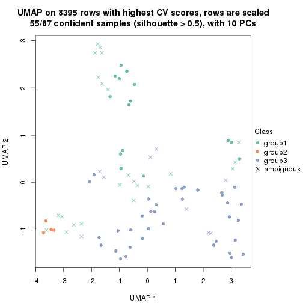
dimension_reduction(res, k = 4, method = "UMAP")
dimension_reduction(res, k = 5, method = "UMAP")
dimension_reduction(res, k = 6, method = "UMAP")
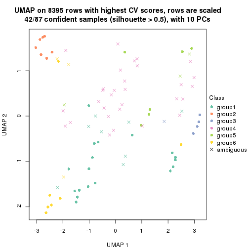
Following heatmap shows how subgroups are split when increasing k:
collect_classes(res)
Test correlation between subgroups and known annotations. If the known annotation is numeric, one-way ANOVA test is applied, and if the known annotation is discrete, chi-squared contingency table test is applied.
test_to_known_factors(res)
#> n tissue(p) individual(p) disease.state(p) k
#> CV:mclust 74 0.85814 4.21e-04 3.26e-02 2
#> CV:mclust 55 0.00865 2.22e-05 9.20e-04 3
#> CV:mclust 69 0.01810 1.16e-08 2.47e-05 4
#> CV:mclust 73 0.01917 1.72e-11 2.26e-05 5
#> CV:mclust 42 0.01585 4.36e-07 1.75e-03 6
If matrix rows can be associated to genes, consider to use GO_Enrichment(res,
...) to perform function enrichment for the signature genes.
The object with results only for a single top-value method and a single partition method can be extracted as:
res = res_list["CV", "NMF"]
# you can also extract it by
# res = res_list["CV:NMF"]
A summary of res and all the functions that can be applied to it:
res
#> A 'ConsensusPartition' object with k = 2, 3, 4, 5, 6.
#> On a matrix with 8395 rows and 87 columns.
#> Top rows (840, 1680, 2519, 3358, 4198) are extracted by 'CV' method.
#> Subgroups are detected by 'NMF' method.
#> Performed in total 1250 partitions by row resampling.
#> Best k for subgroups seems to be 3.
#>
#> Following methods can be applied to this 'ConsensusPartition' object:
#> [1] "cola_report" "collect_classes" "collect_plots"
#> [4] "collect_stats" "colnames" "compare_signatures"
#> [7] "consensus_heatmap" "dimension_reduction" "functional_enrichment"
#> [10] "get_anno_col" "get_anno" "get_classes"
#> [13] "get_consensus" "get_matrix" "get_membership"
#> [16] "get_param" "get_signatures" "get_stats"
#> [19] "is_best_k" "is_stable_k" "membership_heatmap"
#> [22] "ncol" "nrow" "plot_ecdf"
#> [25] "rownames" "select_partition_number" "show"
#> [28] "suggest_best_k" "test_to_known_factors"
collect_plots() function collects all the plots made from res for all k (number of partitions)
into one single page to provide an easy and fast comparison between different k.
collect_plots(res)
The plots are:
k and the heatmap of
predicted classes for each k.k.k.k.All the plots in panels can be made by individual functions and they are plotted later in this section.
select_partition_number() produces several plots showing different
statistics for choosing “optimized” k. There are following statistics:
k;k, the area increased is defined as \(A_k - A_{k-1}\).The detailed explanations of these statistics can be found in the cola vignette.
Generally speaking, lower PAC score, higher mean silhouette score or higher
concordance corresponds to better partition. Rand index and Jaccard index
measure how similar the current partition is compared to partition with k-1.
If they are too similar, we won't accept k is better than k-1.
select_partition_number(res)
The numeric values for all these statistics can be obtained by get_stats().
get_stats(res)
#> k 1-PAC mean_silhouette concordance area_increased Rand Jaccard
#> 2 2 0.662 0.849 0.934 0.3890 0.630 0.630
#> 3 3 0.709 0.846 0.924 0.6766 0.669 0.492
#> 4 4 0.569 0.679 0.811 0.1308 0.862 0.626
#> 5 5 0.537 0.416 0.657 0.0658 0.919 0.710
#> 6 6 0.612 0.412 0.675 0.0498 0.831 0.398
suggest_best_k() suggests the best \(k\) based on these statistics. The rules are as follows:
NA.suggest_best_k(res)
#> [1] 3
Following shows the table of the partitions (You need to click the show/hide
code output link to see it). The membership matrix (columns with name p*)
is inferred by
clue::cl_consensus()
function with the SE method. Basically the value in the membership matrix
represents the probability to belong to a certain group. The finall class
label for an item is determined with the group with highest probability it
belongs to.
In get_classes() function, the entropy is calculated from the membership
matrix and the silhouette score is calculated from the consensus matrix.
cbind(get_classes(res, k = 2), get_membership(res, k = 2))
#> class entropy silhouette p1 p2
#> GSM5316 1 0.0000 0.936 1.000 0.000
#> GSM5319 1 0.0000 0.936 1.000 0.000
#> GSM5321 1 0.0000 0.936 1.000 0.000
#> GSM5323 1 0.6048 0.807 0.852 0.148
#> GSM5325 1 0.0000 0.936 1.000 0.000
#> GSM5327 1 0.9795 0.172 0.584 0.416
#> GSM5329 1 0.2778 0.896 0.952 0.048
#> GSM5331 1 0.0000 0.936 1.000 0.000
#> GSM5333 1 0.0000 0.936 1.000 0.000
#> GSM5335 1 0.0000 0.936 1.000 0.000
#> GSM5337 1 0.0000 0.936 1.000 0.000
#> GSM5339 2 0.3114 0.879 0.056 0.944
#> GSM5341 2 0.2603 0.885 0.044 0.956
#> GSM5343 1 0.0000 0.936 1.000 0.000
#> GSM5345 1 0.0000 0.936 1.000 0.000
#> GSM5347 1 0.0000 0.936 1.000 0.000
#> GSM5349 1 0.0000 0.936 1.000 0.000
#> GSM5351 2 0.9710 0.465 0.400 0.600
#> GSM5353 1 0.0000 0.936 1.000 0.000
#> GSM5355 1 0.0376 0.933 0.996 0.004
#> GSM5357 1 0.0000 0.936 1.000 0.000
#> GSM5359 1 0.0000 0.936 1.000 0.000
#> GSM5361 1 0.9129 0.532 0.672 0.328
#> GSM5363 1 0.4815 0.848 0.896 0.104
#> GSM5365 1 0.6438 0.788 0.836 0.164
#> GSM5367 1 0.7219 0.747 0.800 0.200
#> GSM5369 1 0.0000 0.936 1.000 0.000
#> GSM5371 1 0.0000 0.936 1.000 0.000
#> GSM5373 2 0.0672 0.895 0.008 0.992
#> GSM5396 1 0.0000 0.936 1.000 0.000
#> GSM5397 2 0.9710 0.465 0.400 0.600
#> GSM5398 1 0.0000 0.936 1.000 0.000
#> GSM5400 1 0.0000 0.936 1.000 0.000
#> GSM5399 1 0.0000 0.936 1.000 0.000
#> GSM5401 2 0.0000 0.895 0.000 1.000
#> GSM5402 1 0.9983 -0.102 0.524 0.476
#> GSM5317 1 0.0000 0.936 1.000 0.000
#> GSM5318 1 0.0000 0.936 1.000 0.000
#> GSM5320 1 0.0000 0.936 1.000 0.000
#> GSM5322 1 0.0000 0.936 1.000 0.000
#> GSM5324 1 0.0000 0.936 1.000 0.000
#> GSM5326 1 0.0000 0.936 1.000 0.000
#> GSM5328 1 0.0000 0.936 1.000 0.000
#> GSM5330 1 0.0000 0.936 1.000 0.000
#> GSM5332 1 0.0000 0.936 1.000 0.000
#> GSM5334 1 0.0000 0.936 1.000 0.000
#> GSM5336 1 0.0000 0.936 1.000 0.000
#> GSM5338 2 0.2236 0.888 0.036 0.964
#> GSM5340 2 0.5408 0.833 0.124 0.876
#> GSM5342 1 0.0000 0.936 1.000 0.000
#> GSM5344 1 0.0000 0.936 1.000 0.000
#> GSM5346 1 0.0000 0.936 1.000 0.000
#> GSM5348 2 0.8081 0.719 0.248 0.752
#> GSM5350 2 0.8081 0.719 0.248 0.752
#> GSM5352 1 0.0000 0.936 1.000 0.000
#> GSM5354 1 0.0000 0.936 1.000 0.000
#> GSM5356 1 0.9710 0.354 0.600 0.400
#> GSM5358 1 0.8763 0.596 0.704 0.296
#> GSM5360 1 0.7139 0.752 0.804 0.196
#> GSM5362 1 0.7883 0.701 0.764 0.236
#> GSM5364 1 0.9661 0.397 0.608 0.392
#> GSM5366 1 0.7219 0.747 0.800 0.200
#> GSM5368 1 0.0000 0.936 1.000 0.000
#> GSM5370 1 0.0000 0.936 1.000 0.000
#> GSM5372 2 0.9608 0.500 0.384 0.616
#> GSM5374 1 0.5294 0.834 0.880 0.120
#> GSM5375 1 0.0000 0.936 1.000 0.000
#> GSM5376 2 0.0000 0.895 0.000 1.000
#> GSM5377 2 0.0000 0.895 0.000 1.000
#> GSM5378 2 0.0000 0.895 0.000 1.000
#> GSM5379 2 0.0000 0.895 0.000 1.000
#> GSM5380 1 0.0000 0.936 1.000 0.000
#> GSM5381 1 0.0000 0.936 1.000 0.000
#> GSM5382 1 0.0000 0.936 1.000 0.000
#> GSM5383 1 0.0000 0.936 1.000 0.000
#> GSM5384 1 0.0000 0.936 1.000 0.000
#> GSM5385 1 0.0000 0.936 1.000 0.000
#> GSM5386 2 0.0000 0.895 0.000 1.000
#> GSM5387 2 0.0000 0.895 0.000 1.000
#> GSM5392 1 0.0000 0.936 1.000 0.000
#> GSM5388 2 0.1184 0.893 0.016 0.984
#> GSM5389 2 0.1414 0.891 0.020 0.980
#> GSM5390 2 0.0000 0.895 0.000 1.000
#> GSM5391 2 0.0000 0.895 0.000 1.000
#> GSM5393 1 0.0000 0.936 1.000 0.000
#> GSM5394 1 0.0000 0.936 1.000 0.000
#> GSM5395 1 0.0000 0.936 1.000 0.000
cbind(get_classes(res, k = 3), get_membership(res, k = 3))
#> class entropy silhouette p1 p2 p3
#> GSM5316 1 0.0000 0.952 1.000 0.000 0.000
#> GSM5319 3 0.0000 0.891 0.000 0.000 1.000
#> GSM5321 1 0.0000 0.952 1.000 0.000 0.000
#> GSM5323 1 0.2066 0.908 0.940 0.060 0.000
#> GSM5325 3 0.5760 0.604 0.328 0.000 0.672
#> GSM5327 1 0.0747 0.943 0.984 0.016 0.000
#> GSM5329 2 0.6779 0.327 0.012 0.544 0.444
#> GSM5331 3 0.0000 0.891 0.000 0.000 1.000
#> GSM5333 3 0.0000 0.891 0.000 0.000 1.000
#> GSM5335 1 0.0000 0.952 1.000 0.000 0.000
#> GSM5337 1 0.0000 0.952 1.000 0.000 0.000
#> GSM5339 2 0.3551 0.800 0.132 0.868 0.000
#> GSM5341 2 0.4235 0.759 0.176 0.824 0.000
#> GSM5343 1 0.0000 0.952 1.000 0.000 0.000
#> GSM5345 3 0.0424 0.890 0.008 0.000 0.992
#> GSM5347 3 0.0424 0.890 0.008 0.000 0.992
#> GSM5349 3 0.5291 0.616 0.268 0.000 0.732
#> GSM5351 3 0.2261 0.843 0.000 0.068 0.932
#> GSM5353 1 0.0000 0.952 1.000 0.000 0.000
#> GSM5355 1 0.0000 0.952 1.000 0.000 0.000
#> GSM5357 3 0.0000 0.891 0.000 0.000 1.000
#> GSM5359 3 0.0000 0.891 0.000 0.000 1.000
#> GSM5361 1 0.4605 0.754 0.796 0.204 0.000
#> GSM5363 1 0.3816 0.817 0.852 0.148 0.000
#> GSM5365 3 0.4808 0.762 0.008 0.188 0.804
#> GSM5367 3 0.4504 0.758 0.000 0.196 0.804
#> GSM5369 1 0.0237 0.950 0.996 0.000 0.004
#> GSM5371 1 0.0747 0.943 0.984 0.000 0.016
#> GSM5373 2 0.0237 0.871 0.000 0.996 0.004
#> GSM5396 1 0.0000 0.952 1.000 0.000 0.000
#> GSM5397 3 0.0000 0.891 0.000 0.000 1.000
#> GSM5398 3 0.0237 0.891 0.004 0.000 0.996
#> GSM5400 3 0.4002 0.804 0.160 0.000 0.840
#> GSM5399 3 0.5529 0.653 0.296 0.000 0.704
#> GSM5401 2 0.0000 0.872 0.000 1.000 0.000
#> GSM5402 3 0.2165 0.867 0.064 0.000 0.936
#> GSM5317 1 0.0000 0.952 1.000 0.000 0.000
#> GSM5318 3 0.0237 0.891 0.004 0.000 0.996
#> GSM5320 1 0.0237 0.950 0.996 0.000 0.004
#> GSM5322 1 0.0000 0.952 1.000 0.000 0.000
#> GSM5324 1 0.2860 0.877 0.912 0.004 0.084
#> GSM5326 1 0.0000 0.952 1.000 0.000 0.000
#> GSM5328 3 0.1031 0.886 0.024 0.000 0.976
#> GSM5330 3 0.0000 0.891 0.000 0.000 1.000
#> GSM5332 3 0.0000 0.891 0.000 0.000 1.000
#> GSM5334 1 0.0000 0.952 1.000 0.000 0.000
#> GSM5336 1 0.0237 0.950 0.996 0.000 0.004
#> GSM5338 2 0.4062 0.771 0.164 0.836 0.000
#> GSM5340 2 0.6062 0.421 0.384 0.616 0.000
#> GSM5342 1 0.0000 0.952 1.000 0.000 0.000
#> GSM5344 3 0.0237 0.890 0.004 0.000 0.996
#> GSM5346 1 0.6498 0.349 0.596 0.008 0.396
#> GSM5348 2 0.5591 0.622 0.000 0.696 0.304
#> GSM5350 2 0.6079 0.480 0.000 0.612 0.388
#> GSM5352 1 0.0000 0.952 1.000 0.000 0.000
#> GSM5354 1 0.0000 0.952 1.000 0.000 0.000
#> GSM5356 3 0.0000 0.891 0.000 0.000 1.000
#> GSM5358 3 0.0000 0.891 0.000 0.000 1.000
#> GSM5360 1 0.4346 0.772 0.816 0.184 0.000
#> GSM5362 1 0.4121 0.799 0.832 0.168 0.000
#> GSM5364 3 0.4555 0.754 0.000 0.200 0.800
#> GSM5366 3 0.4504 0.758 0.000 0.196 0.804
#> GSM5368 1 0.0000 0.952 1.000 0.000 0.000
#> GSM5370 1 0.2446 0.907 0.936 0.012 0.052
#> GSM5372 2 0.7112 0.640 0.060 0.680 0.260
#> GSM5374 3 0.0424 0.889 0.000 0.008 0.992
#> GSM5375 3 0.0475 0.890 0.004 0.004 0.992
#> GSM5376 2 0.0000 0.872 0.000 1.000 0.000
#> GSM5377 2 0.0000 0.872 0.000 1.000 0.000
#> GSM5378 2 0.0000 0.872 0.000 1.000 0.000
#> GSM5379 2 0.0000 0.872 0.000 1.000 0.000
#> GSM5380 3 0.4702 0.763 0.212 0.000 0.788
#> GSM5381 3 0.4605 0.771 0.204 0.000 0.796
#> GSM5382 1 0.0000 0.952 1.000 0.000 0.000
#> GSM5383 1 0.0000 0.952 1.000 0.000 0.000
#> GSM5384 3 0.4504 0.778 0.196 0.000 0.804
#> GSM5385 3 0.4555 0.774 0.200 0.000 0.800
#> GSM5386 2 0.0000 0.872 0.000 1.000 0.000
#> GSM5387 2 0.0000 0.872 0.000 1.000 0.000
#> GSM5392 3 0.0892 0.888 0.020 0.000 0.980
#> GSM5388 2 0.0000 0.872 0.000 1.000 0.000
#> GSM5389 2 0.0424 0.869 0.000 0.992 0.008
#> GSM5390 2 0.0000 0.872 0.000 1.000 0.000
#> GSM5391 2 0.0000 0.872 0.000 1.000 0.000
#> GSM5393 1 0.0000 0.952 1.000 0.000 0.000
#> GSM5394 1 0.1411 0.926 0.964 0.000 0.036
#> GSM5395 1 0.0000 0.952 1.000 0.000 0.000
cbind(get_classes(res, k = 4), get_membership(res, k = 4))
#> class entropy silhouette p1 p2 p3 p4
#> GSM5316 1 0.0188 0.804 0.996 0.000 0.000 0.004
#> GSM5319 3 0.3764 0.624 0.000 0.000 0.784 0.216
#> GSM5321 1 0.4122 0.799 0.760 0.000 0.004 0.236
#> GSM5323 1 0.4549 0.736 0.776 0.188 0.000 0.036
#> GSM5325 4 0.4224 0.578 0.100 0.000 0.076 0.824
#> GSM5327 1 0.4673 0.810 0.796 0.060 0.004 0.140
#> GSM5329 3 0.5062 0.541 0.000 0.300 0.680 0.020
#> GSM5331 3 0.0336 0.798 0.000 0.000 0.992 0.008
#> GSM5333 3 0.0336 0.798 0.000 0.000 0.992 0.008
#> GSM5335 1 0.2654 0.824 0.888 0.000 0.004 0.108
#> GSM5337 1 0.3448 0.820 0.828 0.000 0.004 0.168
#> GSM5339 2 0.3942 0.720 0.236 0.764 0.000 0.000
#> GSM5341 2 0.4277 0.694 0.280 0.720 0.000 0.000
#> GSM5343 1 0.4164 0.768 0.736 0.000 0.000 0.264
#> GSM5345 3 0.0817 0.799 0.000 0.000 0.976 0.024
#> GSM5347 3 0.0707 0.799 0.000 0.000 0.980 0.020
#> GSM5349 3 0.6576 0.400 0.168 0.000 0.632 0.200
#> GSM5351 3 0.2799 0.744 0.000 0.008 0.884 0.108
#> GSM5353 1 0.0000 0.803 1.000 0.000 0.000 0.000
#> GSM5355 1 0.0000 0.803 1.000 0.000 0.000 0.000
#> GSM5357 4 0.4454 0.541 0.000 0.000 0.308 0.692
#> GSM5359 4 0.4955 0.366 0.000 0.000 0.444 0.556
#> GSM5361 1 0.2773 0.734 0.880 0.116 0.000 0.004
#> GSM5363 1 0.0672 0.801 0.984 0.008 0.000 0.008
#> GSM5365 4 0.5239 0.599 0.084 0.068 0.052 0.796
#> GSM5367 4 0.5611 0.595 0.048 0.100 0.080 0.772
#> GSM5369 1 0.4741 0.740 0.668 0.000 0.004 0.328
#> GSM5371 1 0.4837 0.719 0.648 0.000 0.004 0.348
#> GSM5373 2 0.3157 0.748 0.000 0.852 0.004 0.144
#> GSM5396 1 0.3224 0.702 0.864 0.000 0.016 0.120
#> GSM5397 3 0.5097 0.207 0.000 0.004 0.568 0.428
#> GSM5398 3 0.2469 0.761 0.000 0.000 0.892 0.108
#> GSM5400 4 0.2589 0.622 0.000 0.000 0.116 0.884
#> GSM5399 4 0.4337 0.599 0.072 0.004 0.100 0.824
#> GSM5401 2 0.0000 0.846 0.000 1.000 0.000 0.000
#> GSM5402 4 0.3791 0.580 0.000 0.004 0.200 0.796
#> GSM5317 1 0.0188 0.804 0.996 0.000 0.000 0.004
#> GSM5318 4 0.2921 0.619 0.000 0.000 0.140 0.860
#> GSM5320 1 0.4220 0.792 0.748 0.000 0.004 0.248
#> GSM5322 1 0.2149 0.823 0.912 0.000 0.000 0.088
#> GSM5324 1 0.5167 0.724 0.644 0.000 0.016 0.340
#> GSM5326 1 0.4605 0.731 0.664 0.000 0.000 0.336
#> GSM5328 3 0.5705 0.502 0.204 0.000 0.704 0.092
#> GSM5330 3 0.0336 0.798 0.000 0.000 0.992 0.008
#> GSM5332 3 0.0336 0.798 0.000 0.000 0.992 0.008
#> GSM5334 1 0.4289 0.815 0.796 0.000 0.032 0.172
#> GSM5336 1 0.4289 0.815 0.796 0.000 0.032 0.172
#> GSM5338 2 0.4564 0.651 0.328 0.672 0.000 0.000
#> GSM5340 2 0.4804 0.581 0.384 0.616 0.000 0.000
#> GSM5342 1 0.4661 0.720 0.652 0.000 0.000 0.348
#> GSM5344 3 0.0592 0.798 0.000 0.000 0.984 0.016
#> GSM5346 3 0.2674 0.757 0.068 0.004 0.908 0.020
#> GSM5348 3 0.4599 0.615 0.000 0.248 0.736 0.016
#> GSM5350 3 0.2281 0.760 0.000 0.096 0.904 0.000
#> GSM5352 1 0.0000 0.803 1.000 0.000 0.000 0.000
#> GSM5354 1 0.0188 0.804 0.996 0.000 0.000 0.004
#> GSM5356 3 0.2469 0.760 0.000 0.000 0.892 0.108
#> GSM5358 3 0.3528 0.673 0.000 0.000 0.808 0.192
#> GSM5360 1 0.2329 0.780 0.916 0.012 0.000 0.072
#> GSM5362 1 0.2198 0.770 0.920 0.072 0.000 0.008
#> GSM5364 4 0.4553 0.575 0.000 0.180 0.040 0.780
#> GSM5366 4 0.4798 0.572 0.000 0.180 0.052 0.768
#> GSM5368 1 0.4155 0.797 0.756 0.000 0.004 0.240
#> GSM5370 1 0.5760 0.678 0.596 0.028 0.004 0.372
#> GSM5372 2 0.5182 0.562 0.000 0.684 0.028 0.288
#> GSM5374 4 0.4925 0.349 0.000 0.000 0.428 0.572
#> GSM5375 4 0.5517 0.362 0.020 0.000 0.412 0.568
#> GSM5376 2 0.0000 0.846 0.000 1.000 0.000 0.000
#> GSM5377 2 0.1109 0.842 0.004 0.968 0.000 0.028
#> GSM5378 2 0.0921 0.842 0.000 0.972 0.000 0.028
#> GSM5379 2 0.0000 0.846 0.000 1.000 0.000 0.000
#> GSM5380 4 0.6576 0.557 0.220 0.000 0.152 0.628
#> GSM5381 4 0.7036 0.498 0.208 0.000 0.216 0.576
#> GSM5382 4 0.5000 -0.452 0.496 0.000 0.000 0.504
#> GSM5383 1 0.4164 0.791 0.736 0.000 0.000 0.264
#> GSM5384 4 0.6350 0.530 0.092 0.000 0.296 0.612
#> GSM5385 4 0.6340 0.483 0.076 0.000 0.344 0.580
#> GSM5386 2 0.0188 0.846 0.000 0.996 0.004 0.000
#> GSM5387 2 0.0000 0.846 0.000 1.000 0.000 0.000
#> GSM5392 4 0.4907 0.405 0.000 0.000 0.420 0.580
#> GSM5388 2 0.1978 0.824 0.004 0.928 0.000 0.068
#> GSM5389 2 0.4699 0.499 0.004 0.676 0.000 0.320
#> GSM5390 2 0.0188 0.846 0.000 0.996 0.000 0.004
#> GSM5391 2 0.1474 0.834 0.000 0.948 0.000 0.052
#> GSM5393 1 0.0188 0.804 0.996 0.000 0.000 0.004
#> GSM5394 4 0.4431 0.162 0.304 0.000 0.000 0.696
#> GSM5395 1 0.3873 0.803 0.772 0.000 0.000 0.228
cbind(get_classes(res, k = 5), get_membership(res, k = 5))
#> class entropy silhouette p1 p2 p3 p4 p5
#> GSM5316 4 0.4305 -0.3489 0.488 0.000 0.000 0.512 0.000
#> GSM5319 3 0.5607 0.4525 0.056 0.000 0.640 0.028 0.276
#> GSM5321 4 0.1153 0.5358 0.004 0.000 0.024 0.964 0.008
#> GSM5323 4 0.4630 0.3910 0.088 0.176 0.000 0.736 0.000
#> GSM5325 5 0.6697 0.3140 0.220 0.000 0.004 0.320 0.456
#> GSM5327 4 0.3407 0.4264 0.008 0.168 0.004 0.816 0.004
#> GSM5329 3 0.7178 0.2255 0.208 0.288 0.476 0.008 0.020
#> GSM5331 3 0.1168 0.7148 0.032 0.000 0.960 0.000 0.008
#> GSM5333 3 0.1168 0.7148 0.032 0.000 0.960 0.000 0.008
#> GSM5335 4 0.1764 0.5098 0.064 0.000 0.008 0.928 0.000
#> GSM5337 4 0.1741 0.5219 0.040 0.000 0.024 0.936 0.000
#> GSM5339 2 0.4811 -0.1417 0.452 0.528 0.000 0.020 0.000
#> GSM5341 1 0.5919 0.3608 0.480 0.416 0.000 0.104 0.000
#> GSM5343 4 0.5256 0.4412 0.116 0.000 0.000 0.672 0.212
#> GSM5345 3 0.4015 0.6547 0.016 0.000 0.768 0.204 0.012
#> GSM5347 3 0.2664 0.7112 0.020 0.000 0.884 0.092 0.004
#> GSM5349 3 0.5104 0.4397 0.016 0.000 0.564 0.404 0.016
#> GSM5351 3 0.4068 0.6724 0.036 0.000 0.816 0.040 0.108
#> GSM5353 4 0.4304 -0.3441 0.484 0.000 0.000 0.516 0.000
#> GSM5355 4 0.4307 -0.3704 0.496 0.000 0.000 0.504 0.000
#> GSM5357 5 0.2621 0.5281 0.004 0.000 0.112 0.008 0.876
#> GSM5359 5 0.3696 0.4736 0.016 0.000 0.212 0.000 0.772
#> GSM5361 1 0.4904 0.3321 0.504 0.024 0.000 0.472 0.000
#> GSM5363 1 0.4306 0.2806 0.508 0.000 0.000 0.492 0.000
#> GSM5365 5 0.5265 0.4826 0.224 0.020 0.008 0.048 0.700
#> GSM5367 5 0.5274 0.4700 0.236 0.028 0.016 0.024 0.696
#> GSM5369 4 0.4588 0.5073 0.056 0.004 0.000 0.732 0.208
#> GSM5371 4 0.3246 0.5357 0.008 0.000 0.000 0.808 0.184
#> GSM5373 2 0.5878 0.3749 0.152 0.628 0.000 0.008 0.212
#> GSM5396 1 0.5115 0.3015 0.676 0.000 0.000 0.232 0.092
#> GSM5397 5 0.6749 0.3110 0.256 0.004 0.244 0.004 0.492
#> GSM5398 3 0.6785 0.4052 0.192 0.000 0.584 0.168 0.056
#> GSM5400 5 0.4911 0.5173 0.232 0.000 0.020 0.040 0.708
#> GSM5399 5 0.6827 0.3692 0.228 0.004 0.004 0.300 0.464
#> GSM5401 2 0.0162 0.7868 0.000 0.996 0.000 0.000 0.004
#> GSM5402 5 0.5636 0.4952 0.252 0.000 0.044 0.048 0.656
#> GSM5317 4 0.4302 -0.3393 0.480 0.000 0.000 0.520 0.000
#> GSM5318 5 0.4673 0.5223 0.212 0.000 0.016 0.040 0.732
#> GSM5320 4 0.1408 0.5483 0.008 0.000 0.000 0.948 0.044
#> GSM5322 4 0.2773 0.4361 0.164 0.000 0.000 0.836 0.000
#> GSM5324 4 0.6684 0.1966 0.208 0.016 0.000 0.528 0.248
#> GSM5326 4 0.5004 0.4654 0.072 0.000 0.000 0.672 0.256
#> GSM5328 3 0.7823 0.0272 0.344 0.000 0.396 0.156 0.104
#> GSM5330 3 0.1082 0.7152 0.028 0.000 0.964 0.000 0.008
#> GSM5332 3 0.1331 0.7136 0.040 0.000 0.952 0.000 0.008
#> GSM5334 4 0.2260 0.5071 0.028 0.000 0.064 0.908 0.000
#> GSM5336 4 0.2260 0.5045 0.028 0.000 0.064 0.908 0.000
#> GSM5338 1 0.6352 0.5310 0.488 0.336 0.000 0.176 0.000
#> GSM5340 1 0.6420 0.5330 0.484 0.324 0.000 0.192 0.000
#> GSM5342 4 0.4602 0.4941 0.052 0.000 0.000 0.708 0.240
#> GSM5344 3 0.1787 0.7161 0.016 0.000 0.936 0.044 0.004
#> GSM5346 3 0.2513 0.7092 0.008 0.000 0.876 0.116 0.000
#> GSM5348 3 0.4990 0.6310 0.004 0.096 0.712 0.188 0.000
#> GSM5350 3 0.2437 0.7186 0.004 0.032 0.904 0.060 0.000
#> GSM5352 4 0.4304 -0.3440 0.484 0.000 0.000 0.516 0.000
#> GSM5354 4 0.4305 -0.3489 0.488 0.000 0.000 0.512 0.000
#> GSM5356 3 0.4021 0.5924 0.036 0.000 0.764 0.000 0.200
#> GSM5358 3 0.5139 0.4368 0.072 0.000 0.648 0.000 0.280
#> GSM5360 1 0.4571 0.3992 0.664 0.004 0.000 0.312 0.020
#> GSM5362 1 0.4658 0.3086 0.504 0.012 0.000 0.484 0.000
#> GSM5364 5 0.5275 0.4382 0.216 0.092 0.000 0.008 0.684
#> GSM5366 5 0.5732 0.4273 0.228 0.092 0.008 0.012 0.660
#> GSM5368 4 0.4270 0.5276 0.040 0.008 0.000 0.764 0.188
#> GSM5370 4 0.5139 0.4762 0.032 0.036 0.000 0.692 0.240
#> GSM5372 2 0.8250 -0.0713 0.232 0.392 0.008 0.100 0.268
#> GSM5374 5 0.5974 0.2663 0.100 0.000 0.380 0.004 0.516
#> GSM5375 5 0.7175 0.2145 0.216 0.000 0.360 0.024 0.400
#> GSM5376 2 0.1981 0.7861 0.048 0.924 0.000 0.000 0.028
#> GSM5377 2 0.3241 0.7657 0.100 0.856 0.000 0.008 0.036
#> GSM5378 2 0.2871 0.7742 0.088 0.872 0.000 0.000 0.040
#> GSM5379 2 0.0000 0.7872 0.000 1.000 0.000 0.000 0.000
#> GSM5380 5 0.6303 0.4163 0.272 0.000 0.100 0.036 0.592
#> GSM5381 5 0.6100 0.4082 0.260 0.000 0.124 0.016 0.600
#> GSM5382 4 0.4329 0.3262 0.016 0.000 0.000 0.672 0.312
#> GSM5383 4 0.2674 0.5207 0.012 0.000 0.000 0.868 0.120
#> GSM5384 5 0.6036 0.4124 0.096 0.000 0.244 0.032 0.628
#> GSM5385 5 0.7977 0.3501 0.240 0.000 0.248 0.100 0.412
#> GSM5386 2 0.0162 0.7868 0.000 0.996 0.000 0.000 0.004
#> GSM5387 2 0.0162 0.7868 0.000 0.996 0.000 0.000 0.004
#> GSM5392 5 0.7649 0.2905 0.204 0.000 0.324 0.064 0.408
#> GSM5388 2 0.4498 0.6872 0.132 0.756 0.000 0.000 0.112
#> GSM5389 5 0.6868 0.0010 0.224 0.348 0.000 0.008 0.420
#> GSM5390 2 0.1626 0.7887 0.044 0.940 0.000 0.000 0.016
#> GSM5391 2 0.3449 0.7350 0.164 0.812 0.000 0.000 0.024
#> GSM5393 4 0.4305 -0.3489 0.488 0.000 0.000 0.512 0.000
#> GSM5394 5 0.5841 0.3894 0.148 0.000 0.000 0.256 0.596
#> GSM5395 4 0.3888 0.5283 0.076 0.000 0.000 0.804 0.120
cbind(get_classes(res, k = 6), get_membership(res, k = 6))
#> class entropy silhouette p1 p2 p3 p4 p5 p6
#> GSM5316 1 0.0717 0.7218 0.976 0.000 0.000 0.016 0.000 0.008
#> GSM5319 3 0.3754 0.6073 0.000 0.000 0.776 0.000 0.072 0.152
#> GSM5321 4 0.3637 0.5846 0.164 0.000 0.000 0.780 0.000 0.056
#> GSM5323 1 0.6805 -0.2011 0.388 0.184 0.000 0.380 0.012 0.036
#> GSM5325 6 0.3071 0.3529 0.000 0.000 0.000 0.180 0.016 0.804
#> GSM5327 4 0.4937 0.4644 0.056 0.248 0.004 0.672 0.016 0.004
#> GSM5329 2 0.6906 -0.0307 0.008 0.400 0.372 0.016 0.024 0.180
#> GSM5331 3 0.0291 0.7049 0.000 0.000 0.992 0.004 0.004 0.000
#> GSM5333 3 0.0291 0.7049 0.000 0.000 0.992 0.004 0.004 0.000
#> GSM5335 4 0.3490 0.5102 0.268 0.000 0.000 0.724 0.000 0.008
#> GSM5337 4 0.2302 0.5725 0.120 0.000 0.000 0.872 0.000 0.008
#> GSM5339 1 0.3705 0.5264 0.740 0.236 0.000 0.000 0.020 0.004
#> GSM5341 1 0.2945 0.6302 0.824 0.156 0.000 0.000 0.020 0.000
#> GSM5343 1 0.7165 -0.1558 0.404 0.000 0.000 0.240 0.096 0.260
#> GSM5345 4 0.5475 -0.0815 0.000 0.000 0.296 0.576 0.012 0.116
#> GSM5347 4 0.5585 -0.3047 0.000 0.000 0.440 0.444 0.008 0.108
#> GSM5349 4 0.3527 0.4068 0.000 0.000 0.112 0.820 0.020 0.048
#> GSM5351 3 0.4453 0.6455 0.000 0.008 0.752 0.040 0.164 0.036
#> GSM5353 1 0.0363 0.7215 0.988 0.000 0.000 0.012 0.000 0.000
#> GSM5355 1 0.0260 0.7219 0.992 0.000 0.000 0.008 0.000 0.000
#> GSM5357 5 0.5328 0.0360 0.000 0.000 0.036 0.040 0.520 0.404
#> GSM5359 5 0.6480 0.0192 0.008 0.000 0.160 0.028 0.440 0.364
#> GSM5361 1 0.0551 0.7228 0.984 0.008 0.000 0.004 0.004 0.000
#> GSM5363 1 0.1382 0.7153 0.948 0.008 0.000 0.008 0.036 0.000
#> GSM5365 5 0.3519 0.5053 0.008 0.012 0.008 0.004 0.800 0.168
#> GSM5367 5 0.3774 0.5488 0.008 0.048 0.008 0.004 0.808 0.124
#> GSM5369 4 0.6322 0.3890 0.152 0.008 0.000 0.436 0.020 0.384
#> GSM5371 4 0.5966 0.5003 0.204 0.000 0.000 0.520 0.012 0.264
#> GSM5373 2 0.5941 0.1049 0.008 0.504 0.004 0.000 0.160 0.324
#> GSM5396 1 0.4370 0.3590 0.616 0.000 0.008 0.020 0.000 0.356
#> GSM5397 6 0.6113 0.2611 0.008 0.016 0.240 0.008 0.156 0.572
#> GSM5398 3 0.4891 0.3915 0.004 0.000 0.628 0.056 0.008 0.304
#> GSM5400 6 0.3858 0.3309 0.004 0.000 0.028 0.008 0.200 0.760
#> GSM5399 6 0.3867 0.2820 0.004 0.000 0.000 0.296 0.012 0.688
#> GSM5401 2 0.0000 0.7407 0.000 1.000 0.000 0.000 0.000 0.000
#> GSM5402 6 0.4608 0.3403 0.004 0.004 0.132 0.008 0.116 0.736
#> GSM5317 1 0.0858 0.7166 0.968 0.000 0.000 0.028 0.000 0.004
#> GSM5318 6 0.4314 0.2976 0.000 0.004 0.044 0.004 0.244 0.704
#> GSM5320 4 0.5151 0.5660 0.176 0.000 0.000 0.664 0.016 0.144
#> GSM5322 1 0.5477 -0.1748 0.456 0.000 0.000 0.420 0.000 0.124
#> GSM5324 6 0.4833 -0.1871 0.036 0.008 0.000 0.376 0.004 0.576
#> GSM5326 1 0.6902 -0.1278 0.420 0.000 0.000 0.232 0.064 0.284
#> GSM5328 1 0.8063 -0.2564 0.300 0.004 0.184 0.204 0.016 0.292
#> GSM5330 3 0.0405 0.7048 0.000 0.000 0.988 0.008 0.004 0.000
#> GSM5332 3 0.0146 0.7036 0.000 0.000 0.996 0.000 0.004 0.000
#> GSM5334 4 0.2112 0.5198 0.036 0.000 0.020 0.916 0.000 0.028
#> GSM5336 4 0.2589 0.5376 0.060 0.000 0.024 0.888 0.000 0.028
#> GSM5338 1 0.2019 0.6875 0.900 0.088 0.000 0.000 0.012 0.000
#> GSM5340 1 0.2006 0.6920 0.904 0.080 0.000 0.000 0.016 0.000
#> GSM5342 4 0.7247 0.3395 0.288 0.000 0.000 0.352 0.092 0.268
#> GSM5344 3 0.5271 0.5132 0.000 0.000 0.620 0.264 0.016 0.100
#> GSM5346 3 0.4976 0.3631 0.000 0.000 0.540 0.400 0.008 0.052
#> GSM5348 4 0.6803 -0.2693 0.000 0.116 0.376 0.436 0.036 0.036
#> GSM5350 3 0.6296 0.5831 0.000 0.072 0.612 0.208 0.068 0.040
#> GSM5352 1 0.0458 0.7224 0.984 0.000 0.000 0.016 0.000 0.000
#> GSM5354 1 0.0458 0.7227 0.984 0.000 0.000 0.016 0.000 0.000
#> GSM5356 3 0.4805 0.5087 0.000 0.000 0.608 0.008 0.332 0.052
#> GSM5358 3 0.5176 0.3679 0.004 0.000 0.512 0.012 0.424 0.048
#> GSM5360 1 0.2051 0.6864 0.896 0.004 0.004 0.000 0.096 0.000
#> GSM5362 1 0.0551 0.7227 0.984 0.008 0.000 0.000 0.004 0.004
#> GSM5364 5 0.3049 0.5622 0.000 0.104 0.004 0.000 0.844 0.048
#> GSM5366 5 0.2964 0.5555 0.000 0.108 0.004 0.000 0.848 0.040
#> GSM5368 4 0.6800 0.3703 0.280 0.004 0.000 0.380 0.032 0.304
#> GSM5370 4 0.6599 0.3625 0.080 0.036 0.000 0.468 0.044 0.372
#> GSM5372 6 0.6731 0.2129 0.004 0.276 0.044 0.024 0.128 0.524
#> GSM5374 6 0.7623 -0.0758 0.000 0.004 0.244 0.140 0.296 0.316
#> GSM5375 5 0.7578 0.0954 0.012 0.000 0.220 0.140 0.412 0.216
#> GSM5376 2 0.2149 0.7425 0.004 0.888 0.000 0.004 0.104 0.000
#> GSM5377 2 0.4017 0.6778 0.004 0.744 0.000 0.032 0.212 0.008
#> GSM5378 2 0.2912 0.7017 0.000 0.784 0.000 0.000 0.216 0.000
#> GSM5379 2 0.0458 0.7434 0.000 0.984 0.000 0.000 0.016 0.000
#> GSM5380 6 0.8023 0.1655 0.116 0.000 0.076 0.244 0.148 0.416
#> GSM5381 6 0.8400 0.1190 0.128 0.000 0.104 0.232 0.168 0.368
#> GSM5382 4 0.5555 0.4726 0.068 0.000 0.000 0.620 0.060 0.252
#> GSM5383 4 0.4372 0.5429 0.080 0.000 0.000 0.728 0.008 0.184
#> GSM5384 6 0.7451 0.1680 0.012 0.000 0.156 0.224 0.164 0.444
#> GSM5385 6 0.5922 0.3175 0.008 0.000 0.128 0.236 0.032 0.596
#> GSM5386 2 0.0146 0.7391 0.000 0.996 0.000 0.000 0.000 0.004
#> GSM5387 2 0.0000 0.7407 0.000 1.000 0.000 0.000 0.000 0.000
#> GSM5392 6 0.5250 0.3401 0.000 0.000 0.148 0.164 0.024 0.664
#> GSM5388 2 0.4908 0.5951 0.004 0.668 0.000 0.040 0.256 0.032
#> GSM5389 5 0.4951 0.1356 0.000 0.332 0.000 0.012 0.600 0.056
#> GSM5390 2 0.2340 0.7343 0.000 0.852 0.000 0.000 0.148 0.000
#> GSM5391 2 0.3547 0.6217 0.004 0.696 0.000 0.000 0.300 0.000
#> GSM5393 1 0.0363 0.7215 0.988 0.000 0.000 0.012 0.000 0.000
#> GSM5394 6 0.4946 0.3712 0.008 0.000 0.000 0.152 0.164 0.676
#> GSM5395 1 0.5937 -0.1746 0.436 0.000 0.000 0.340 0.000 0.224
Heatmaps for the consensus matrix. It visualizes the probability of two samples to be in a same group.
consensus_heatmap(res, k = 2)
consensus_heatmap(res, k = 3)
consensus_heatmap(res, k = 4)
consensus_heatmap(res, k = 5)
consensus_heatmap(res, k = 6)
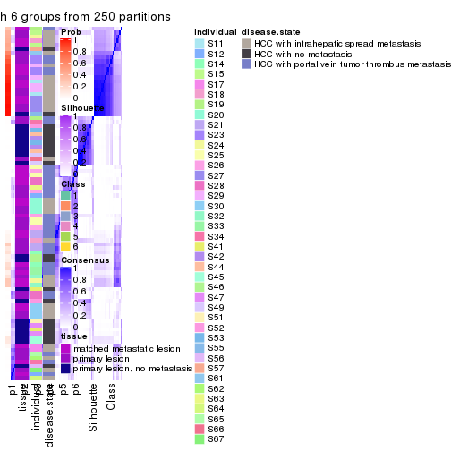
Heatmaps for the membership of samples in all partitions to see how consistent they are:
membership_heatmap(res, k = 2)
membership_heatmap(res, k = 3)
membership_heatmap(res, k = 4)
membership_heatmap(res, k = 5)
membership_heatmap(res, k = 6)
As soon as we have had the classes for columns, we can look for signatures which are significantly different between classes which can be candidate marks for certain classes. Following are the heatmaps for signatures.
Signature heatmaps where rows are scaled:
get_signatures(res, k = 2)
#> Error: The width or height of the raster image is zero, maybe you forget to turn off the
#> previous graphic device or it was corrupted. Run `dev.off()` to close it.

get_signatures(res, k = 3)
#> Error: The width or height of the raster image is zero, maybe you forget to turn off the
#> previous graphic device or it was corrupted. Run `dev.off()` to close it.

get_signatures(res, k = 4)
#> Error: The width or height of the raster image is zero, maybe you forget to turn off the
#> previous graphic device or it was corrupted. Run `dev.off()` to close it.

get_signatures(res, k = 5)
#> Error: The width or height of the raster image is zero, maybe you forget to turn off the
#> previous graphic device or it was corrupted. Run `dev.off()` to close it.

get_signatures(res, k = 6)
#> Error: The width or height of the raster image is zero, maybe you forget to turn off the
#> previous graphic device or it was corrupted. Run `dev.off()` to close it.

Signature heatmaps where rows are not scaled:
get_signatures(res, k = 2, scale_rows = FALSE)
#> Error: The width or height of the raster image is zero, maybe you forget to turn off the
#> previous graphic device or it was corrupted. Run `dev.off()` to close it.

get_signatures(res, k = 3, scale_rows = FALSE)
#> Error: The width or height of the raster image is zero, maybe you forget to turn off the
#> previous graphic device or it was corrupted. Run `dev.off()` to close it.

get_signatures(res, k = 4, scale_rows = FALSE)
#> Error: The width or height of the raster image is zero, maybe you forget to turn off the
#> previous graphic device or it was corrupted. Run `dev.off()` to close it.

get_signatures(res, k = 5, scale_rows = FALSE)
#> Error: The width or height of the raster image is zero, maybe you forget to turn off the
#> previous graphic device or it was corrupted. Run `dev.off()` to close it.

get_signatures(res, k = 6, scale_rows = FALSE)
#> Error: The width or height of the raster image is zero, maybe you forget to turn off the
#> previous graphic device or it was corrupted. Run `dev.off()` to close it.

Compare the overlap of signatures from different k:
compare_signatures(res)
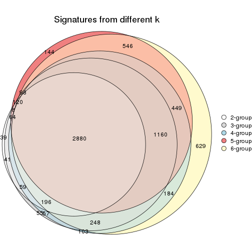
get_signature() returns a data frame invisibly. TO get the list of signatures, the function
call should be assigned to a variable explicitly. In following code, if plot argument is set
to FALSE, no heatmap is plotted while only the differential analysis is performed.
# code only for demonstration
tb = get_signature(res, k = ..., plot = FALSE)
An example of the output of tb is:
#> which_row fdr mean_1 mean_2 scaled_mean_1 scaled_mean_2 km
#> 1 38 0.042760348 8.373488 9.131774 -0.5533452 0.5164555 1
#> 2 40 0.018707592 7.106213 8.469186 -0.6173731 0.5762149 1
#> 3 55 0.019134737 10.221463 11.207825 -0.6159697 0.5749050 1
#> 4 59 0.006059896 5.921854 7.869574 -0.6899429 0.6439467 1
#> 5 60 0.018055526 8.928898 10.211722 -0.6204761 0.5791110 1
#> 6 98 0.009384629 15.714769 14.887706 0.6635654 -0.6193277 2
...
The columns in tb are:
which_row: row indices corresponding to the input matrix.fdr: FDR for the differential test. mean_x: The mean value in group x.scaled_mean_x: The mean value in group x after rows are scaled.km: Row groups if k-means clustering is applied to rows.UMAP plot which shows how samples are separated.
dimension_reduction(res, k = 2, method = "UMAP")
dimension_reduction(res, k = 3, method = "UMAP")
dimension_reduction(res, k = 4, method = "UMAP")
dimension_reduction(res, k = 5, method = "UMAP")
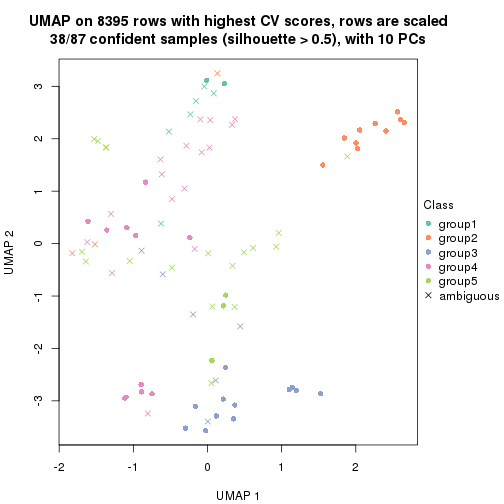
dimension_reduction(res, k = 6, method = "UMAP")
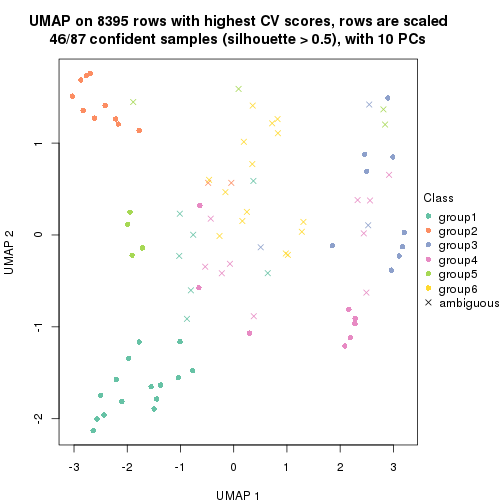
Following heatmap shows how subgroups are split when increasing k:
collect_classes(res)
Test correlation between subgroups and known annotations. If the known annotation is numeric, one-way ANOVA test is applied, and if the known annotation is discrete, chi-squared contingency table test is applied.
test_to_known_factors(res)
#> n tissue(p) individual(p) disease.state(p) k
#> CV:NMF 81 0.014730 1.16e-04 1.87e-03 2
#> CV:NMF 83 0.010234 1.97e-07 8.24e-04 3
#> CV:NMF 76 0.001067 4.12e-09 3.28e-06 4
#> CV:NMF 38 0.000256 9.84e-07 5.57e-04 5
#> CV:NMF 46 0.000110 3.61e-10 1.12e-07 6
If matrix rows can be associated to genes, consider to use GO_Enrichment(res,
...) to perform function enrichment for the signature genes.
The object with results only for a single top-value method and a single partition method can be extracted as:
res = res_list["MAD", "hclust"]
# you can also extract it by
# res = res_list["MAD:hclust"]
A summary of res and all the functions that can be applied to it:
res
#> A 'ConsensusPartition' object with k = 2, 3, 4, 5, 6.
#> On a matrix with 8395 rows and 87 columns.
#> Top rows (840, 1680, 2519, 3358, 4198) are extracted by 'MAD' method.
#> Subgroups are detected by 'hclust' method.
#> Performed in total 1250 partitions by row resampling.
#> Best k for subgroups seems to be 2.
#>
#> Following methods can be applied to this 'ConsensusPartition' object:
#> [1] "cola_report" "collect_classes" "collect_plots"
#> [4] "collect_stats" "colnames" "compare_signatures"
#> [7] "consensus_heatmap" "dimension_reduction" "functional_enrichment"
#> [10] "get_anno_col" "get_anno" "get_classes"
#> [13] "get_consensus" "get_matrix" "get_membership"
#> [16] "get_param" "get_signatures" "get_stats"
#> [19] "is_best_k" "is_stable_k" "membership_heatmap"
#> [22] "ncol" "nrow" "plot_ecdf"
#> [25] "rownames" "select_partition_number" "show"
#> [28] "suggest_best_k" "test_to_known_factors"
collect_plots() function collects all the plots made from res for all k (number of partitions)
into one single page to provide an easy and fast comparison between different k.
collect_plots(res)
The plots are:
k and the heatmap of
predicted classes for each k.k.k.k.All the plots in panels can be made by individual functions and they are plotted later in this section.
select_partition_number() produces several plots showing different
statistics for choosing “optimized” k. There are following statistics:
k;k, the area increased is defined as \(A_k - A_{k-1}\).The detailed explanations of these statistics can be found in the cola vignette.
Generally speaking, lower PAC score, higher mean silhouette score or higher
concordance corresponds to better partition. Rand index and Jaccard index
measure how similar the current partition is compared to partition with k-1.
If they are too similar, we won't accept k is better than k-1.
select_partition_number(res)
The numeric values for all these statistics can be obtained by get_stats().
get_stats(res)
#> k 1-PAC mean_silhouette concordance area_increased Rand Jaccard
#> 2 2 1.000 0.980 0.986 0.2166 0.777 0.777
#> 3 3 0.487 0.802 0.865 1.5089 0.621 0.512
#> 4 4 0.456 0.661 0.796 0.2081 0.888 0.725
#> 5 5 0.569 0.648 0.791 0.0840 0.983 0.944
#> 6 6 0.652 0.533 0.727 0.0702 0.902 0.679
suggest_best_k() suggests the best \(k\) based on these statistics. The rules are as follows:
NA.suggest_best_k(res)
#> [1] 2
Following shows the table of the partitions (You need to click the show/hide
code output link to see it). The membership matrix (columns with name p*)
is inferred by
clue::cl_consensus()
function with the SE method. Basically the value in the membership matrix
represents the probability to belong to a certain group. The finall class
label for an item is determined with the group with highest probability it
belongs to.
In get_classes() function, the entropy is calculated from the membership
matrix and the silhouette score is calculated from the consensus matrix.
cbind(get_classes(res, k = 2), get_membership(res, k = 2))
#> class entropy silhouette p1 p2
#> GSM5316 1 0.0000 0.994 1.000 0.000
#> GSM5319 1 0.0672 0.993 0.992 0.008
#> GSM5321 1 0.0000 0.994 1.000 0.000
#> GSM5323 1 0.0000 0.994 1.000 0.000
#> GSM5325 1 0.0000 0.994 1.000 0.000
#> GSM5327 1 0.0000 0.994 1.000 0.000
#> GSM5329 1 0.0000 0.994 1.000 0.000
#> GSM5331 1 0.0672 0.993 0.992 0.008
#> GSM5333 1 0.0672 0.993 0.992 0.008
#> GSM5335 1 0.0000 0.994 1.000 0.000
#> GSM5337 1 0.0000 0.994 1.000 0.000
#> GSM5339 1 0.1184 0.985 0.984 0.016
#> GSM5341 1 0.1184 0.985 0.984 0.016
#> GSM5343 1 0.0000 0.994 1.000 0.000
#> GSM5345 1 0.0672 0.993 0.992 0.008
#> GSM5347 1 0.0672 0.993 0.992 0.008
#> GSM5349 1 0.1184 0.988 0.984 0.016
#> GSM5351 1 0.1184 0.988 0.984 0.016
#> GSM5353 1 0.1184 0.985 0.984 0.016
#> GSM5355 1 0.1184 0.985 0.984 0.016
#> GSM5357 1 0.0938 0.991 0.988 0.012
#> GSM5359 1 0.0938 0.991 0.988 0.012
#> GSM5361 1 0.0672 0.990 0.992 0.008
#> GSM5363 1 0.0672 0.990 0.992 0.008
#> GSM5365 1 0.0938 0.991 0.988 0.012
#> GSM5367 1 0.0938 0.991 0.988 0.012
#> GSM5369 1 0.0000 0.994 1.000 0.000
#> GSM5371 1 0.0376 0.993 0.996 0.004
#> GSM5373 1 0.0672 0.993 0.992 0.008
#> GSM5396 1 0.0000 0.994 1.000 0.000
#> GSM5397 1 0.0672 0.993 0.992 0.008
#> GSM5398 1 0.0672 0.993 0.992 0.008
#> GSM5400 1 0.0376 0.993 0.996 0.004
#> GSM5399 1 0.0672 0.993 0.992 0.008
#> GSM5401 2 0.0672 0.926 0.008 0.992
#> GSM5402 1 0.0672 0.993 0.992 0.008
#> GSM5317 1 0.0000 0.994 1.000 0.000
#> GSM5318 1 0.0672 0.993 0.992 0.008
#> GSM5320 1 0.0000 0.994 1.000 0.000
#> GSM5322 1 0.0000 0.994 1.000 0.000
#> GSM5324 1 0.0000 0.994 1.000 0.000
#> GSM5326 1 0.0000 0.994 1.000 0.000
#> GSM5328 1 0.0000 0.994 1.000 0.000
#> GSM5330 1 0.0672 0.993 0.992 0.008
#> GSM5332 1 0.0672 0.993 0.992 0.008
#> GSM5334 1 0.0000 0.994 1.000 0.000
#> GSM5336 1 0.0000 0.994 1.000 0.000
#> GSM5338 1 0.1184 0.985 0.984 0.016
#> GSM5340 1 0.1184 0.985 0.984 0.016
#> GSM5342 1 0.0000 0.994 1.000 0.000
#> GSM5344 1 0.0672 0.993 0.992 0.008
#> GSM5346 1 0.0672 0.993 0.992 0.008
#> GSM5348 1 0.1184 0.988 0.984 0.016
#> GSM5350 1 0.1184 0.988 0.984 0.016
#> GSM5352 1 0.1184 0.985 0.984 0.016
#> GSM5354 1 0.1184 0.985 0.984 0.016
#> GSM5356 1 0.0938 0.991 0.988 0.012
#> GSM5358 1 0.0938 0.991 0.988 0.012
#> GSM5360 1 0.0672 0.990 0.992 0.008
#> GSM5362 1 0.0672 0.990 0.992 0.008
#> GSM5364 1 0.0938 0.991 0.988 0.012
#> GSM5366 1 0.0938 0.991 0.988 0.012
#> GSM5368 1 0.0000 0.994 1.000 0.000
#> GSM5370 1 0.0376 0.993 0.996 0.004
#> GSM5372 1 0.0672 0.993 0.992 0.008
#> GSM5374 1 0.0672 0.993 0.992 0.008
#> GSM5375 1 0.0672 0.993 0.992 0.008
#> GSM5376 2 0.6887 0.839 0.184 0.816
#> GSM5377 2 0.6887 0.839 0.184 0.816
#> GSM5378 2 0.0000 0.928 0.000 1.000
#> GSM5379 2 0.0000 0.928 0.000 1.000
#> GSM5380 1 0.0000 0.994 1.000 0.000
#> GSM5381 1 0.0000 0.994 1.000 0.000
#> GSM5382 1 0.0000 0.994 1.000 0.000
#> GSM5383 1 0.0000 0.994 1.000 0.000
#> GSM5384 1 0.0000 0.994 1.000 0.000
#> GSM5385 1 0.0000 0.994 1.000 0.000
#> GSM5386 2 0.0000 0.928 0.000 1.000
#> GSM5387 2 0.0000 0.928 0.000 1.000
#> GSM5392 1 0.0376 0.993 0.996 0.004
#> GSM5388 2 0.6531 0.855 0.168 0.832
#> GSM5389 2 0.6531 0.855 0.168 0.832
#> GSM5390 2 0.0000 0.928 0.000 1.000
#> GSM5391 2 0.0000 0.928 0.000 1.000
#> GSM5393 1 0.0000 0.994 1.000 0.000
#> GSM5394 1 0.0376 0.993 0.996 0.004
#> GSM5395 1 0.0000 0.994 1.000 0.000
cbind(get_classes(res, k = 3), get_membership(res, k = 3))
#> class entropy silhouette p1 p2 p3
#> GSM5316 1 0.0237 0.9217 0.996 0.000 0.004
#> GSM5319 3 0.6062 0.6978 0.384 0.000 0.616
#> GSM5321 1 0.1411 0.9114 0.964 0.000 0.036
#> GSM5323 1 0.0237 0.9217 0.996 0.000 0.004
#> GSM5325 1 0.2537 0.8714 0.920 0.000 0.080
#> GSM5327 1 0.0424 0.9221 0.992 0.000 0.008
#> GSM5329 3 0.6252 0.5137 0.444 0.000 0.556
#> GSM5331 3 0.1411 0.6652 0.036 0.000 0.964
#> GSM5333 3 0.1411 0.6652 0.036 0.000 0.964
#> GSM5335 1 0.0424 0.9221 0.992 0.000 0.008
#> GSM5337 1 0.0424 0.9221 0.992 0.000 0.008
#> GSM5339 1 0.0983 0.9212 0.980 0.016 0.004
#> GSM5341 1 0.0983 0.9212 0.980 0.016 0.004
#> GSM5343 1 0.2959 0.8514 0.900 0.000 0.100
#> GSM5345 3 0.4399 0.7993 0.188 0.000 0.812
#> GSM5347 3 0.4399 0.7993 0.188 0.000 0.812
#> GSM5349 3 0.4755 0.7960 0.184 0.008 0.808
#> GSM5351 3 0.4755 0.7960 0.184 0.008 0.808
#> GSM5353 1 0.0983 0.9212 0.980 0.016 0.004
#> GSM5355 1 0.0983 0.9212 0.980 0.016 0.004
#> GSM5357 3 0.5982 0.7540 0.328 0.004 0.668
#> GSM5359 3 0.5982 0.7540 0.328 0.004 0.668
#> GSM5361 1 0.0661 0.9222 0.988 0.008 0.004
#> GSM5363 1 0.0661 0.9222 0.988 0.008 0.004
#> GSM5365 3 0.6330 0.6789 0.396 0.004 0.600
#> GSM5367 3 0.6330 0.6789 0.396 0.004 0.600
#> GSM5369 1 0.1643 0.9039 0.956 0.000 0.044
#> GSM5371 1 0.2959 0.8626 0.900 0.000 0.100
#> GSM5373 1 0.6298 0.0368 0.608 0.004 0.388
#> GSM5396 1 0.0892 0.9162 0.980 0.000 0.020
#> GSM5397 3 0.5591 0.7692 0.304 0.000 0.696
#> GSM5398 3 0.1411 0.6652 0.036 0.000 0.964
#> GSM5400 1 0.6180 -0.1002 0.584 0.000 0.416
#> GSM5399 3 0.5327 0.7200 0.272 0.000 0.728
#> GSM5401 2 0.0475 0.9192 0.004 0.992 0.004
#> GSM5402 3 0.4555 0.8036 0.200 0.000 0.800
#> GSM5317 1 0.0237 0.9217 0.996 0.000 0.004
#> GSM5318 3 0.6062 0.6978 0.384 0.000 0.616
#> GSM5320 1 0.1411 0.9114 0.964 0.000 0.036
#> GSM5322 1 0.0237 0.9217 0.996 0.000 0.004
#> GSM5324 1 0.2537 0.8714 0.920 0.000 0.080
#> GSM5326 1 0.1031 0.9094 0.976 0.000 0.024
#> GSM5328 3 0.6252 0.5137 0.444 0.000 0.556
#> GSM5330 3 0.1411 0.6652 0.036 0.000 0.964
#> GSM5332 3 0.1411 0.6652 0.036 0.000 0.964
#> GSM5334 1 0.1411 0.9114 0.964 0.000 0.036
#> GSM5336 1 0.1411 0.9114 0.964 0.000 0.036
#> GSM5338 1 0.0983 0.9212 0.980 0.016 0.004
#> GSM5340 1 0.0983 0.9212 0.980 0.016 0.004
#> GSM5342 1 0.2959 0.8514 0.900 0.000 0.100
#> GSM5344 3 0.4399 0.7993 0.188 0.000 0.812
#> GSM5346 3 0.4399 0.7993 0.188 0.000 0.812
#> GSM5348 3 0.4755 0.7960 0.184 0.008 0.808
#> GSM5350 3 0.4755 0.7960 0.184 0.008 0.808
#> GSM5352 1 0.0983 0.9212 0.980 0.016 0.004
#> GSM5354 1 0.0983 0.9212 0.980 0.016 0.004
#> GSM5356 3 0.5982 0.7540 0.328 0.004 0.668
#> GSM5358 3 0.5982 0.7540 0.328 0.004 0.668
#> GSM5360 1 0.0661 0.9222 0.988 0.008 0.004
#> GSM5362 1 0.0661 0.9222 0.988 0.008 0.004
#> GSM5364 3 0.6330 0.6789 0.396 0.004 0.600
#> GSM5366 3 0.6330 0.6789 0.396 0.004 0.600
#> GSM5368 1 0.1643 0.9039 0.956 0.000 0.044
#> GSM5370 1 0.2959 0.8626 0.900 0.000 0.100
#> GSM5372 1 0.6298 0.0368 0.608 0.004 0.388
#> GSM5374 3 0.4887 0.7492 0.228 0.000 0.772
#> GSM5375 3 0.4887 0.7492 0.228 0.000 0.772
#> GSM5376 2 0.4629 0.8270 0.004 0.808 0.188
#> GSM5377 2 0.4629 0.8270 0.004 0.808 0.188
#> GSM5378 2 0.0000 0.9212 0.000 1.000 0.000
#> GSM5379 2 0.0000 0.9212 0.000 1.000 0.000
#> GSM5380 3 0.5733 0.6445 0.324 0.000 0.676
#> GSM5381 3 0.5733 0.6445 0.324 0.000 0.676
#> GSM5382 1 0.1289 0.9084 0.968 0.000 0.032
#> GSM5383 1 0.1289 0.9084 0.968 0.000 0.032
#> GSM5384 1 0.1753 0.9062 0.952 0.000 0.048
#> GSM5385 1 0.1753 0.9062 0.952 0.000 0.048
#> GSM5386 2 0.0000 0.9212 0.000 1.000 0.000
#> GSM5387 2 0.0000 0.9212 0.000 1.000 0.000
#> GSM5392 3 0.4121 0.7322 0.168 0.000 0.832
#> GSM5388 2 0.4531 0.8440 0.008 0.824 0.168
#> GSM5389 2 0.4531 0.8440 0.008 0.824 0.168
#> GSM5390 2 0.0000 0.9212 0.000 1.000 0.000
#> GSM5391 2 0.0000 0.9212 0.000 1.000 0.000
#> GSM5393 1 0.0237 0.9217 0.996 0.000 0.004
#> GSM5394 1 0.2625 0.8771 0.916 0.000 0.084
#> GSM5395 1 0.1031 0.9094 0.976 0.000 0.024
cbind(get_classes(res, k = 4), get_membership(res, k = 4))
#> class entropy silhouette p1 p2 p3 p4
#> GSM5316 1 0.0000 0.904 1.000 0.000 0.000 0.000
#> GSM5319 4 0.7475 0.398 0.192 0.000 0.332 0.476
#> GSM5321 1 0.2216 0.879 0.908 0.000 0.000 0.092
#> GSM5323 1 0.0000 0.904 1.000 0.000 0.000 0.000
#> GSM5325 1 0.3937 0.806 0.800 0.000 0.012 0.188
#> GSM5327 1 0.0469 0.903 0.988 0.000 0.000 0.012
#> GSM5329 4 0.6973 0.489 0.196 0.000 0.220 0.584
#> GSM5331 3 0.0188 0.538 0.000 0.000 0.996 0.004
#> GSM5333 3 0.0188 0.538 0.000 0.000 0.996 0.004
#> GSM5335 1 0.0592 0.903 0.984 0.000 0.000 0.016
#> GSM5337 1 0.0592 0.903 0.984 0.000 0.000 0.016
#> GSM5339 1 0.0592 0.903 0.984 0.016 0.000 0.000
#> GSM5341 1 0.0592 0.903 0.984 0.016 0.000 0.000
#> GSM5343 1 0.4245 0.790 0.784 0.000 0.020 0.196
#> GSM5345 3 0.4370 0.580 0.156 0.000 0.800 0.044
#> GSM5347 3 0.4370 0.580 0.156 0.000 0.800 0.044
#> GSM5349 3 0.3903 0.590 0.156 0.008 0.824 0.012
#> GSM5351 3 0.3903 0.590 0.156 0.008 0.824 0.012
#> GSM5353 1 0.0592 0.903 0.984 0.016 0.000 0.000
#> GSM5355 1 0.0592 0.903 0.984 0.016 0.000 0.000
#> GSM5357 3 0.7529 -0.216 0.196 0.000 0.460 0.344
#> GSM5359 3 0.7529 -0.216 0.196 0.000 0.460 0.344
#> GSM5361 1 0.0336 0.904 0.992 0.008 0.000 0.000
#> GSM5363 1 0.0336 0.904 0.992 0.008 0.000 0.000
#> GSM5365 4 0.7710 0.365 0.224 0.000 0.368 0.408
#> GSM5367 4 0.7710 0.365 0.224 0.000 0.368 0.408
#> GSM5369 1 0.3024 0.848 0.852 0.000 0.000 0.148
#> GSM5371 1 0.4516 0.742 0.736 0.000 0.012 0.252
#> GSM5373 4 0.6195 0.488 0.252 0.000 0.100 0.648
#> GSM5396 1 0.3311 0.789 0.828 0.000 0.000 0.172
#> GSM5397 4 0.6929 0.246 0.108 0.000 0.440 0.452
#> GSM5398 3 0.3311 0.434 0.000 0.000 0.828 0.172
#> GSM5400 4 0.4856 0.480 0.136 0.000 0.084 0.780
#> GSM5399 3 0.6451 0.174 0.072 0.000 0.524 0.404
#> GSM5401 2 0.0564 0.916 0.004 0.988 0.004 0.004
#> GSM5402 3 0.5805 0.319 0.036 0.000 0.576 0.388
#> GSM5317 1 0.0000 0.904 1.000 0.000 0.000 0.000
#> GSM5318 4 0.7475 0.398 0.192 0.000 0.332 0.476
#> GSM5320 1 0.2216 0.879 0.908 0.000 0.000 0.092
#> GSM5322 1 0.0000 0.904 1.000 0.000 0.000 0.000
#> GSM5324 1 0.3937 0.806 0.800 0.000 0.012 0.188
#> GSM5326 1 0.2868 0.856 0.864 0.000 0.000 0.136
#> GSM5328 4 0.6973 0.489 0.196 0.000 0.220 0.584
#> GSM5330 3 0.0188 0.538 0.000 0.000 0.996 0.004
#> GSM5332 3 0.0188 0.538 0.000 0.000 0.996 0.004
#> GSM5334 1 0.2216 0.879 0.908 0.000 0.000 0.092
#> GSM5336 1 0.2216 0.879 0.908 0.000 0.000 0.092
#> GSM5338 1 0.0592 0.903 0.984 0.016 0.000 0.000
#> GSM5340 1 0.0592 0.903 0.984 0.016 0.000 0.000
#> GSM5342 1 0.4245 0.790 0.784 0.000 0.020 0.196
#> GSM5344 3 0.4370 0.580 0.156 0.000 0.800 0.044
#> GSM5346 3 0.4370 0.580 0.156 0.000 0.800 0.044
#> GSM5348 3 0.3903 0.590 0.156 0.008 0.824 0.012
#> GSM5350 3 0.3903 0.590 0.156 0.008 0.824 0.012
#> GSM5352 1 0.0592 0.903 0.984 0.016 0.000 0.000
#> GSM5354 1 0.0592 0.903 0.984 0.016 0.000 0.000
#> GSM5356 3 0.7529 -0.216 0.196 0.000 0.460 0.344
#> GSM5358 3 0.7529 -0.216 0.196 0.000 0.460 0.344
#> GSM5360 1 0.0336 0.904 0.992 0.008 0.000 0.000
#> GSM5362 1 0.0336 0.904 0.992 0.008 0.000 0.000
#> GSM5364 4 0.7710 0.365 0.224 0.000 0.368 0.408
#> GSM5366 4 0.7710 0.365 0.224 0.000 0.368 0.408
#> GSM5368 1 0.3024 0.848 0.852 0.000 0.000 0.148
#> GSM5370 1 0.4516 0.742 0.736 0.000 0.012 0.252
#> GSM5372 4 0.6195 0.488 0.252 0.000 0.100 0.648
#> GSM5374 4 0.5163 0.150 0.004 0.000 0.480 0.516
#> GSM5375 4 0.5163 0.150 0.004 0.000 0.480 0.516
#> GSM5376 2 0.4232 0.829 0.004 0.804 0.168 0.024
#> GSM5377 2 0.4232 0.829 0.004 0.804 0.168 0.024
#> GSM5378 2 0.0000 0.920 0.000 1.000 0.000 0.000
#> GSM5379 2 0.0000 0.920 0.000 1.000 0.000 0.000
#> GSM5380 4 0.6078 0.396 0.068 0.000 0.312 0.620
#> GSM5381 4 0.6078 0.396 0.068 0.000 0.312 0.620
#> GSM5382 1 0.3172 0.854 0.840 0.000 0.000 0.160
#> GSM5383 1 0.3172 0.854 0.840 0.000 0.000 0.160
#> GSM5384 1 0.3591 0.845 0.824 0.000 0.008 0.168
#> GSM5385 1 0.3591 0.845 0.824 0.000 0.008 0.168
#> GSM5386 2 0.0000 0.920 0.000 1.000 0.000 0.000
#> GSM5387 2 0.0000 0.920 0.000 1.000 0.000 0.000
#> GSM5392 3 0.4916 0.214 0.000 0.000 0.576 0.424
#> GSM5388 2 0.4219 0.838 0.004 0.820 0.136 0.040
#> GSM5389 2 0.4219 0.838 0.004 0.820 0.136 0.040
#> GSM5390 2 0.0000 0.920 0.000 1.000 0.000 0.000
#> GSM5391 2 0.0000 0.920 0.000 1.000 0.000 0.000
#> GSM5393 1 0.0000 0.904 1.000 0.000 0.000 0.000
#> GSM5394 1 0.4188 0.761 0.752 0.000 0.004 0.244
#> GSM5395 1 0.2408 0.871 0.896 0.000 0.000 0.104
cbind(get_classes(res, k = 5), get_membership(res, k = 5))
#> class entropy silhouette p1 p2 p3 p4 p5
#> GSM5316 1 0.0290 0.8636 0.992 0.000 0.000 0.000 0.008
#> GSM5319 5 0.7146 0.3871 0.104 0.000 0.292 0.088 0.516
#> GSM5321 1 0.4289 0.7906 0.764 0.000 0.020 0.192 0.024
#> GSM5323 1 0.0290 0.8636 0.992 0.000 0.000 0.000 0.008
#> GSM5325 1 0.4412 0.7784 0.756 0.000 0.008 0.048 0.188
#> GSM5327 1 0.1117 0.8605 0.964 0.000 0.020 0.000 0.016
#> GSM5329 5 0.5675 0.4015 0.136 0.000 0.072 0.084 0.708
#> GSM5331 3 0.1704 0.5305 0.000 0.000 0.928 0.068 0.004
#> GSM5333 3 0.1704 0.5305 0.000 0.000 0.928 0.068 0.004
#> GSM5335 1 0.1471 0.8599 0.952 0.000 0.020 0.004 0.024
#> GSM5337 1 0.1471 0.8599 0.952 0.000 0.020 0.004 0.024
#> GSM5339 1 0.0671 0.8619 0.980 0.016 0.000 0.000 0.004
#> GSM5341 1 0.0671 0.8619 0.980 0.016 0.000 0.000 0.004
#> GSM5343 1 0.4508 0.7651 0.740 0.000 0.008 0.044 0.208
#> GSM5345 3 0.3340 0.6820 0.096 0.000 0.852 0.008 0.044
#> GSM5347 3 0.3340 0.6820 0.096 0.000 0.852 0.008 0.044
#> GSM5349 3 0.2533 0.6787 0.096 0.008 0.888 0.000 0.008
#> GSM5351 3 0.2533 0.6787 0.096 0.008 0.888 0.000 0.008
#> GSM5353 1 0.0671 0.8619 0.980 0.016 0.000 0.000 0.004
#> GSM5355 1 0.0671 0.8619 0.980 0.016 0.000 0.000 0.004
#> GSM5357 3 0.5880 -0.1121 0.084 0.000 0.460 0.004 0.452
#> GSM5359 3 0.5880 -0.1121 0.084 0.000 0.460 0.004 0.452
#> GSM5361 1 0.0290 0.8636 0.992 0.008 0.000 0.000 0.000
#> GSM5363 1 0.0290 0.8636 0.992 0.008 0.000 0.000 0.000
#> GSM5365 5 0.5879 0.3294 0.088 0.000 0.348 0.008 0.556
#> GSM5367 5 0.5879 0.3294 0.088 0.000 0.348 0.008 0.556
#> GSM5369 1 0.3725 0.8153 0.816 0.000 0.008 0.036 0.140
#> GSM5371 1 0.5506 0.6904 0.656 0.000 0.008 0.100 0.236
#> GSM5373 5 0.4996 0.4460 0.132 0.000 0.028 0.092 0.748
#> GSM5396 1 0.3821 0.7065 0.764 0.000 0.000 0.216 0.020
#> GSM5397 5 0.5792 0.2731 0.004 0.000 0.376 0.084 0.536
#> GSM5398 4 0.5405 0.5686 0.000 0.000 0.380 0.556 0.064
#> GSM5400 5 0.4197 0.3438 0.028 0.000 0.000 0.244 0.728
#> GSM5399 4 0.7241 0.5948 0.040 0.000 0.200 0.468 0.292
#> GSM5401 2 0.0486 0.8971 0.004 0.988 0.004 0.000 0.004
#> GSM5402 4 0.6723 0.5067 0.000 0.000 0.280 0.420 0.300
#> GSM5317 1 0.0290 0.8636 0.992 0.000 0.000 0.000 0.008
#> GSM5318 5 0.7146 0.3871 0.104 0.000 0.292 0.088 0.516
#> GSM5320 1 0.4289 0.7906 0.764 0.000 0.020 0.192 0.024
#> GSM5322 1 0.0290 0.8636 0.992 0.000 0.000 0.000 0.008
#> GSM5324 1 0.4412 0.7784 0.756 0.000 0.008 0.048 0.188
#> GSM5326 1 0.3970 0.8072 0.812 0.000 0.008 0.076 0.104
#> GSM5328 5 0.5675 0.4015 0.136 0.000 0.072 0.084 0.708
#> GSM5330 3 0.1704 0.5305 0.000 0.000 0.928 0.068 0.004
#> GSM5332 3 0.1704 0.5305 0.000 0.000 0.928 0.068 0.004
#> GSM5334 1 0.4289 0.7906 0.764 0.000 0.020 0.192 0.024
#> GSM5336 1 0.4289 0.7906 0.764 0.000 0.020 0.192 0.024
#> GSM5338 1 0.0671 0.8619 0.980 0.016 0.000 0.000 0.004
#> GSM5340 1 0.0671 0.8619 0.980 0.016 0.000 0.000 0.004
#> GSM5342 1 0.4508 0.7651 0.740 0.000 0.008 0.044 0.208
#> GSM5344 3 0.3340 0.6820 0.096 0.000 0.852 0.008 0.044
#> GSM5346 3 0.3340 0.6820 0.096 0.000 0.852 0.008 0.044
#> GSM5348 3 0.2533 0.6787 0.096 0.008 0.888 0.000 0.008
#> GSM5350 3 0.2533 0.6787 0.096 0.008 0.888 0.000 0.008
#> GSM5352 1 0.0671 0.8619 0.980 0.016 0.000 0.000 0.004
#> GSM5354 1 0.0671 0.8619 0.980 0.016 0.000 0.000 0.004
#> GSM5356 3 0.5880 -0.1121 0.084 0.000 0.460 0.004 0.452
#> GSM5358 3 0.5880 -0.1121 0.084 0.000 0.460 0.004 0.452
#> GSM5360 1 0.0290 0.8636 0.992 0.008 0.000 0.000 0.000
#> GSM5362 1 0.0290 0.8636 0.992 0.008 0.000 0.000 0.000
#> GSM5364 5 0.5879 0.3294 0.088 0.000 0.348 0.008 0.556
#> GSM5366 5 0.5879 0.3294 0.088 0.000 0.348 0.008 0.556
#> GSM5368 1 0.3725 0.8153 0.816 0.000 0.008 0.036 0.140
#> GSM5370 1 0.5506 0.6904 0.656 0.000 0.008 0.100 0.236
#> GSM5372 5 0.4996 0.4460 0.132 0.000 0.028 0.092 0.748
#> GSM5374 5 0.5029 0.0213 0.000 0.000 0.292 0.060 0.648
#> GSM5375 5 0.5029 0.0213 0.000 0.000 0.292 0.060 0.648
#> GSM5376 2 0.3925 0.7823 0.004 0.804 0.156 0.020 0.016
#> GSM5377 2 0.3925 0.7823 0.004 0.804 0.156 0.020 0.016
#> GSM5378 2 0.0000 0.9013 0.000 1.000 0.000 0.000 0.000
#> GSM5379 2 0.0000 0.9013 0.000 1.000 0.000 0.000 0.000
#> GSM5380 5 0.4507 0.2494 0.016 0.000 0.096 0.108 0.780
#> GSM5381 5 0.4507 0.2494 0.016 0.000 0.096 0.108 0.780
#> GSM5382 1 0.5117 0.7609 0.696 0.000 0.004 0.204 0.096
#> GSM5383 1 0.5117 0.7609 0.696 0.000 0.004 0.204 0.096
#> GSM5384 1 0.5260 0.7509 0.684 0.000 0.004 0.204 0.108
#> GSM5385 1 0.5260 0.7509 0.684 0.000 0.004 0.204 0.108
#> GSM5386 2 0.0000 0.9013 0.000 1.000 0.000 0.000 0.000
#> GSM5387 2 0.0000 0.9013 0.000 1.000 0.000 0.000 0.000
#> GSM5392 4 0.6615 0.6102 0.000 0.000 0.216 0.408 0.376
#> GSM5388 2 0.3886 0.7950 0.004 0.820 0.124 0.012 0.040
#> GSM5389 2 0.3886 0.7950 0.004 0.820 0.124 0.012 0.040
#> GSM5390 2 0.0000 0.9013 0.000 1.000 0.000 0.000 0.000
#> GSM5391 2 0.0000 0.9013 0.000 1.000 0.000 0.000 0.000
#> GSM5393 1 0.0290 0.8636 0.992 0.000 0.000 0.000 0.008
#> GSM5394 1 0.5400 0.7068 0.672 0.000 0.008 0.100 0.220
#> GSM5395 1 0.3242 0.8180 0.852 0.000 0.000 0.076 0.072
cbind(get_classes(res, k = 6), get_membership(res, k = 6))
#> class entropy silhouette p1 p2 p3 p4 p5 p6
#> GSM5316 1 0.0632 0.631911 0.976 0.000 0.000 0.024 0.000 0.000
#> GSM5319 5 0.6766 0.436287 0.044 0.000 0.276 0.188 0.480 0.012
#> GSM5321 4 0.4939 0.823917 0.472 0.000 0.020 0.480 0.000 0.028
#> GSM5323 1 0.1501 0.589710 0.924 0.000 0.000 0.076 0.000 0.000
#> GSM5325 1 0.5491 0.045461 0.596 0.000 0.000 0.228 0.168 0.008
#> GSM5327 1 0.3345 0.335576 0.776 0.000 0.020 0.204 0.000 0.000
#> GSM5329 5 0.6247 0.153673 0.124 0.000 0.032 0.112 0.640 0.092
#> GSM5331 3 0.1765 0.792465 0.000 0.000 0.904 0.000 0.000 0.096
#> GSM5333 3 0.1765 0.792465 0.000 0.000 0.904 0.000 0.000 0.096
#> GSM5335 1 0.4034 -0.232319 0.652 0.000 0.020 0.328 0.000 0.000
#> GSM5337 1 0.4034 -0.232319 0.652 0.000 0.020 0.328 0.000 0.000
#> GSM5339 1 0.0363 0.636836 0.988 0.000 0.000 0.012 0.000 0.000
#> GSM5341 1 0.0363 0.636836 0.988 0.000 0.000 0.012 0.000 0.000
#> GSM5343 1 0.5631 -0.000487 0.576 0.000 0.000 0.220 0.196 0.008
#> GSM5345 3 0.2842 0.859047 0.084 0.000 0.868 0.000 0.028 0.020
#> GSM5347 3 0.2842 0.859047 0.084 0.000 0.868 0.000 0.028 0.020
#> GSM5349 3 0.2009 0.874214 0.084 0.008 0.904 0.000 0.000 0.004
#> GSM5351 3 0.2009 0.874214 0.084 0.008 0.904 0.000 0.000 0.004
#> GSM5353 1 0.0363 0.636836 0.988 0.000 0.000 0.012 0.000 0.000
#> GSM5355 1 0.0363 0.636836 0.988 0.000 0.000 0.012 0.000 0.000
#> GSM5357 5 0.4083 0.366408 0.008 0.000 0.460 0.000 0.532 0.000
#> GSM5359 5 0.4083 0.366408 0.008 0.000 0.460 0.000 0.532 0.000
#> GSM5361 1 0.0000 0.638249 1.000 0.000 0.000 0.000 0.000 0.000
#> GSM5363 1 0.0000 0.638249 1.000 0.000 0.000 0.000 0.000 0.000
#> GSM5365 5 0.3955 0.496159 0.008 0.000 0.340 0.004 0.648 0.000
#> GSM5367 5 0.3955 0.496159 0.008 0.000 0.340 0.004 0.648 0.000
#> GSM5369 1 0.5007 0.168597 0.648 0.000 0.000 0.224 0.124 0.004
#> GSM5371 1 0.6048 -0.077423 0.496 0.000 0.000 0.288 0.204 0.012
#> GSM5373 5 0.4669 0.307282 0.044 0.000 0.012 0.236 0.696 0.012
#> GSM5396 1 0.3632 0.367517 0.756 0.000 0.000 0.220 0.012 0.012
#> GSM5397 5 0.6049 0.428147 0.000 0.000 0.356 0.080 0.504 0.060
#> GSM5398 6 0.3023 0.568161 0.000 0.000 0.212 0.004 0.000 0.784
#> GSM5400 5 0.4953 0.167970 0.016 0.000 0.000 0.420 0.528 0.036
#> GSM5399 6 0.5882 0.583664 0.024 0.000 0.024 0.144 0.176 0.632
#> GSM5401 2 0.0436 0.909239 0.000 0.988 0.004 0.004 0.004 0.000
#> GSM5402 6 0.6475 0.480150 0.000 0.000 0.136 0.128 0.172 0.564
#> GSM5317 1 0.0632 0.631911 0.976 0.000 0.000 0.024 0.000 0.000
#> GSM5318 5 0.6766 0.436287 0.044 0.000 0.276 0.188 0.480 0.012
#> GSM5320 4 0.4939 0.823917 0.472 0.000 0.020 0.480 0.000 0.028
#> GSM5322 1 0.1501 0.589710 0.924 0.000 0.000 0.076 0.000 0.000
#> GSM5324 1 0.5491 0.045461 0.596 0.000 0.000 0.228 0.168 0.008
#> GSM5326 1 0.4515 0.236101 0.656 0.000 0.000 0.280 0.064 0.000
#> GSM5328 5 0.6247 0.153673 0.124 0.000 0.032 0.112 0.640 0.092
#> GSM5330 3 0.1765 0.792465 0.000 0.000 0.904 0.000 0.000 0.096
#> GSM5332 3 0.1765 0.792465 0.000 0.000 0.904 0.000 0.000 0.096
#> GSM5334 4 0.4939 0.823917 0.472 0.000 0.020 0.480 0.000 0.028
#> GSM5336 4 0.4939 0.823917 0.472 0.000 0.020 0.480 0.000 0.028
#> GSM5338 1 0.0363 0.636836 0.988 0.000 0.000 0.012 0.000 0.000
#> GSM5340 1 0.0363 0.636836 0.988 0.000 0.000 0.012 0.000 0.000
#> GSM5342 1 0.5631 -0.000487 0.576 0.000 0.000 0.220 0.196 0.008
#> GSM5344 3 0.2842 0.859047 0.084 0.000 0.868 0.000 0.028 0.020
#> GSM5346 3 0.2842 0.859047 0.084 0.000 0.868 0.000 0.028 0.020
#> GSM5348 3 0.2009 0.874214 0.084 0.008 0.904 0.000 0.000 0.004
#> GSM5350 3 0.2009 0.874214 0.084 0.008 0.904 0.000 0.000 0.004
#> GSM5352 1 0.0363 0.636836 0.988 0.000 0.000 0.012 0.000 0.000
#> GSM5354 1 0.0363 0.636836 0.988 0.000 0.000 0.012 0.000 0.000
#> GSM5356 5 0.4083 0.366408 0.008 0.000 0.460 0.000 0.532 0.000
#> GSM5358 5 0.4083 0.366408 0.008 0.000 0.460 0.000 0.532 0.000
#> GSM5360 1 0.0000 0.638249 1.000 0.000 0.000 0.000 0.000 0.000
#> GSM5362 1 0.0000 0.638249 1.000 0.000 0.000 0.000 0.000 0.000
#> GSM5364 5 0.3955 0.496159 0.008 0.000 0.340 0.004 0.648 0.000
#> GSM5366 5 0.3955 0.496159 0.008 0.000 0.340 0.004 0.648 0.000
#> GSM5368 1 0.5007 0.168597 0.648 0.000 0.000 0.224 0.124 0.004
#> GSM5370 1 0.6048 -0.077423 0.496 0.000 0.000 0.288 0.204 0.012
#> GSM5372 5 0.4669 0.307282 0.044 0.000 0.012 0.236 0.696 0.012
#> GSM5374 5 0.6614 0.037666 0.000 0.000 0.216 0.076 0.516 0.192
#> GSM5375 5 0.6614 0.037666 0.000 0.000 0.216 0.076 0.516 0.192
#> GSM5376 2 0.3531 0.799707 0.000 0.804 0.032 0.004 0.008 0.152
#> GSM5377 2 0.3531 0.799707 0.000 0.804 0.032 0.004 0.008 0.152
#> GSM5378 2 0.0000 0.913156 0.000 1.000 0.000 0.000 0.000 0.000
#> GSM5379 2 0.0000 0.913156 0.000 1.000 0.000 0.000 0.000 0.000
#> GSM5380 5 0.5409 0.076575 0.004 0.000 0.020 0.124 0.644 0.208
#> GSM5381 5 0.5409 0.076575 0.004 0.000 0.020 0.124 0.644 0.208
#> GSM5382 4 0.4857 0.818973 0.424 0.000 0.000 0.524 0.048 0.004
#> GSM5383 4 0.4857 0.818973 0.424 0.000 0.000 0.524 0.048 0.004
#> GSM5384 4 0.5151 0.815717 0.420 0.000 0.000 0.508 0.064 0.008
#> GSM5385 4 0.5151 0.815717 0.420 0.000 0.000 0.508 0.064 0.008
#> GSM5386 2 0.0000 0.913156 0.000 1.000 0.000 0.000 0.000 0.000
#> GSM5387 2 0.0000 0.913156 0.000 1.000 0.000 0.000 0.000 0.000
#> GSM5392 6 0.4550 0.560761 0.000 0.000 0.016 0.036 0.284 0.664
#> GSM5388 2 0.3566 0.787723 0.000 0.820 0.120 0.004 0.032 0.024
#> GSM5389 2 0.3566 0.787723 0.000 0.820 0.120 0.004 0.032 0.024
#> GSM5390 2 0.0000 0.913156 0.000 1.000 0.000 0.000 0.000 0.000
#> GSM5391 2 0.0000 0.913156 0.000 1.000 0.000 0.000 0.000 0.000
#> GSM5393 1 0.0632 0.631911 0.976 0.000 0.000 0.024 0.000 0.000
#> GSM5394 1 0.5988 -0.063624 0.504 0.000 0.000 0.296 0.188 0.012
#> GSM5395 1 0.3385 0.475252 0.788 0.000 0.000 0.180 0.032 0.000
Heatmaps for the consensus matrix. It visualizes the probability of two samples to be in a same group.
consensus_heatmap(res, k = 2)
consensus_heatmap(res, k = 3)
consensus_heatmap(res, k = 4)
consensus_heatmap(res, k = 5)
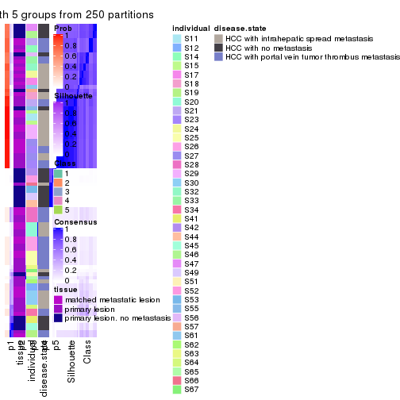
consensus_heatmap(res, k = 6)
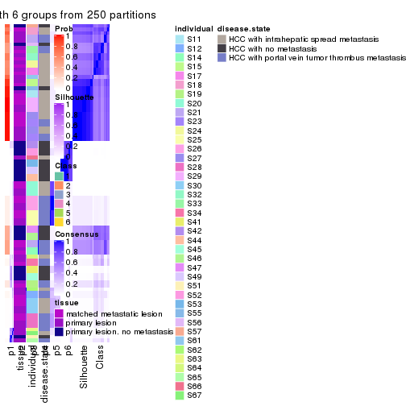
Heatmaps for the membership of samples in all partitions to see how consistent they are:
membership_heatmap(res, k = 2)
membership_heatmap(res, k = 3)
membership_heatmap(res, k = 4)
membership_heatmap(res, k = 5)
membership_heatmap(res, k = 6)
As soon as we have had the classes for columns, we can look for signatures which are significantly different between classes which can be candidate marks for certain classes. Following are the heatmaps for signatures.
Signature heatmaps where rows are scaled:
get_signatures(res, k = 2)
#> Error: The width or height of the raster image is zero, maybe you forget to turn off the
#> previous graphic device or it was corrupted. Run `dev.off()` to close it.

get_signatures(res, k = 3)
#> Error: The width or height of the raster image is zero, maybe you forget to turn off the
#> previous graphic device or it was corrupted. Run `dev.off()` to close it.

get_signatures(res, k = 4)
#> Error: The width or height of the raster image is zero, maybe you forget to turn off the
#> previous graphic device or it was corrupted. Run `dev.off()` to close it.

get_signatures(res, k = 5)
#> Error: The width or height of the raster image is zero, maybe you forget to turn off the
#> previous graphic device or it was corrupted. Run `dev.off()` to close it.

get_signatures(res, k = 6)
#> Error: The width or height of the raster image is zero, maybe you forget to turn off the
#> previous graphic device or it was corrupted. Run `dev.off()` to close it.

Signature heatmaps where rows are not scaled:
get_signatures(res, k = 2, scale_rows = FALSE)
#> Error: The width or height of the raster image is zero, maybe you forget to turn off the
#> previous graphic device or it was corrupted. Run `dev.off()` to close it.

get_signatures(res, k = 3, scale_rows = FALSE)
#> Error: The width or height of the raster image is zero, maybe you forget to turn off the
#> previous graphic device or it was corrupted. Run `dev.off()` to close it.

get_signatures(res, k = 4, scale_rows = FALSE)
#> Error: The width or height of the raster image is zero, maybe you forget to turn off the
#> previous graphic device or it was corrupted. Run `dev.off()` to close it.

get_signatures(res, k = 5, scale_rows = FALSE)
#> Error: The width or height of the raster image is zero, maybe you forget to turn off the
#> previous graphic device or it was corrupted. Run `dev.off()` to close it.

get_signatures(res, k = 6, scale_rows = FALSE)
#> Error: The width or height of the raster image is zero, maybe you forget to turn off the
#> previous graphic device or it was corrupted. Run `dev.off()` to close it.

Compare the overlap of signatures from different k:
compare_signatures(res)
get_signature() returns a data frame invisibly. TO get the list of signatures, the function
call should be assigned to a variable explicitly. In following code, if plot argument is set
to FALSE, no heatmap is plotted while only the differential analysis is performed.
# code only for demonstration
tb = get_signature(res, k = ..., plot = FALSE)
An example of the output of tb is:
#> which_row fdr mean_1 mean_2 scaled_mean_1 scaled_mean_2 km
#> 1 38 0.042760348 8.373488 9.131774 -0.5533452 0.5164555 1
#> 2 40 0.018707592 7.106213 8.469186 -0.6173731 0.5762149 1
#> 3 55 0.019134737 10.221463 11.207825 -0.6159697 0.5749050 1
#> 4 59 0.006059896 5.921854 7.869574 -0.6899429 0.6439467 1
#> 5 60 0.018055526 8.928898 10.211722 -0.6204761 0.5791110 1
#> 6 98 0.009384629 15.714769 14.887706 0.6635654 -0.6193277 2
...
The columns in tb are:
which_row: row indices corresponding to the input matrix.fdr: FDR for the differential test. mean_x: The mean value in group x.scaled_mean_x: The mean value in group x after rows are scaled.km: Row groups if k-means clustering is applied to rows.UMAP plot which shows how samples are separated.
dimension_reduction(res, k = 2, method = "UMAP")
dimension_reduction(res, k = 3, method = "UMAP")
dimension_reduction(res, k = 4, method = "UMAP")
dimension_reduction(res, k = 5, method = "UMAP")
dimension_reduction(res, k = 6, method = "UMAP")
Following heatmap shows how subgroups are split when increasing k:
collect_classes(res)
Test correlation between subgroups and known annotations. If the known annotation is numeric, one-way ANOVA test is applied, and if the known annotation is discrete, chi-squared contingency table test is applied.
test_to_known_factors(res)
#> n tissue(p) individual(p) disease.state(p) k
#> MAD:hclust 87 5.54e-07 1.61e-05 5.47e-07 2
#> MAD:hclust 84 1.36e-05 2.88e-09 1.20e-06 3
#> MAD:hclust 63 7.03e-06 4.42e-08 9.28e-07 4
#> MAD:hclust 67 1.54e-05 1.86e-10 6.45e-06 5
#> MAD:hclust 51 6.62e-05 5.61e-12 1.09e-06 6
If matrix rows can be associated to genes, consider to use GO_Enrichment(res,
...) to perform function enrichment for the signature genes.
The object with results only for a single top-value method and a single partition method can be extracted as:
res = res_list["MAD", "kmeans"]
# you can also extract it by
# res = res_list["MAD:kmeans"]
A summary of res and all the functions that can be applied to it:
res
#> A 'ConsensusPartition' object with k = 2, 3, 4, 5, 6.
#> On a matrix with 8395 rows and 87 columns.
#> Top rows (840, 1680, 2519, 3358, 4198) are extracted by 'MAD' method.
#> Subgroups are detected by 'kmeans' method.
#> Performed in total 1250 partitions by row resampling.
#> Best k for subgroups seems to be 2.
#>
#> Following methods can be applied to this 'ConsensusPartition' object:
#> [1] "cola_report" "collect_classes" "collect_plots"
#> [4] "collect_stats" "colnames" "compare_signatures"
#> [7] "consensus_heatmap" "dimension_reduction" "functional_enrichment"
#> [10] "get_anno_col" "get_anno" "get_classes"
#> [13] "get_consensus" "get_matrix" "get_membership"
#> [16] "get_param" "get_signatures" "get_stats"
#> [19] "is_best_k" "is_stable_k" "membership_heatmap"
#> [22] "ncol" "nrow" "plot_ecdf"
#> [25] "rownames" "select_partition_number" "show"
#> [28] "suggest_best_k" "test_to_known_factors"
collect_plots() function collects all the plots made from res for all k (number of partitions)
into one single page to provide an easy and fast comparison between different k.
collect_plots(res)
The plots are:
k and the heatmap of
predicted classes for each k.k.k.k.All the plots in panels can be made by individual functions and they are plotted later in this section.
select_partition_number() produces several plots showing different
statistics for choosing “optimized” k. There are following statistics:
k;k, the area increased is defined as \(A_k - A_{k-1}\).The detailed explanations of these statistics can be found in the cola vignette.
Generally speaking, lower PAC score, higher mean silhouette score or higher
concordance corresponds to better partition. Rand index and Jaccard index
measure how similar the current partition is compared to partition with k-1.
If they are too similar, we won't accept k is better than k-1.
select_partition_number(res)
The numeric values for all these statistics can be obtained by get_stats().
get_stats(res)
#> k 1-PAC mean_silhouette concordance area_increased Rand Jaccard
#> 2 2 0.252 0.698 0.807 0.4757 0.494 0.494
#> 3 3 0.411 0.515 0.712 0.3470 0.760 0.556
#> 4 4 0.486 0.664 0.767 0.1350 0.798 0.497
#> 5 5 0.583 0.589 0.734 0.0661 0.942 0.786
#> 6 6 0.674 0.609 0.726 0.0504 0.928 0.698
suggest_best_k() suggests the best \(k\) based on these statistics. The rules are as follows:
NA.suggest_best_k(res)
#> [1] 2
Following shows the table of the partitions (You need to click the show/hide
code output link to see it). The membership matrix (columns with name p*)
is inferred by
clue::cl_consensus()
function with the SE method. Basically the value in the membership matrix
represents the probability to belong to a certain group. The finall class
label for an item is determined with the group with highest probability it
belongs to.
In get_classes() function, the entropy is calculated from the membership
matrix and the silhouette score is calculated from the consensus matrix.
cbind(get_classes(res, k = 2), get_membership(res, k = 2))
#> class entropy silhouette p1 p2
#> GSM5316 1 0.0938 0.8324 0.988 0.012
#> GSM5319 2 0.6048 0.7443 0.148 0.852
#> GSM5321 1 0.6438 0.7768 0.836 0.164
#> GSM5323 1 0.0672 0.8236 0.992 0.008
#> GSM5325 1 0.8016 0.6814 0.756 0.244
#> GSM5327 1 0.2603 0.8396 0.956 0.044
#> GSM5329 1 0.9815 0.3684 0.580 0.420
#> GSM5331 2 0.3733 0.7631 0.072 0.928
#> GSM5333 2 0.3733 0.7631 0.072 0.928
#> GSM5335 1 0.3584 0.8389 0.932 0.068
#> GSM5337 1 0.3584 0.8389 0.932 0.068
#> GSM5339 1 0.2778 0.8022 0.952 0.048
#> GSM5341 1 0.2778 0.8022 0.952 0.048
#> GSM5343 1 0.4562 0.8314 0.904 0.096
#> GSM5345 2 0.6048 0.7443 0.148 0.852
#> GSM5347 2 0.6048 0.7443 0.148 0.852
#> GSM5349 2 0.6048 0.7443 0.148 0.852
#> GSM5351 2 0.3733 0.7631 0.072 0.928
#> GSM5353 1 0.0672 0.8236 0.992 0.008
#> GSM5355 1 0.2603 0.8045 0.956 0.044
#> GSM5357 2 0.5519 0.7524 0.128 0.872
#> GSM5359 2 0.5519 0.7524 0.128 0.872
#> GSM5361 1 0.2778 0.8022 0.952 0.048
#> GSM5363 1 0.2778 0.8022 0.952 0.048
#> GSM5365 2 0.8207 0.6635 0.256 0.744
#> GSM5367 2 0.8207 0.6635 0.256 0.744
#> GSM5369 1 0.4562 0.8314 0.904 0.096
#> GSM5371 1 0.4562 0.8314 0.904 0.096
#> GSM5373 1 0.8267 0.6558 0.740 0.260
#> GSM5396 1 0.2603 0.8396 0.956 0.044
#> GSM5397 2 0.5737 0.7495 0.136 0.864
#> GSM5398 2 0.6048 0.7443 0.148 0.852
#> GSM5400 1 0.9833 0.3576 0.576 0.424
#> GSM5399 2 0.9460 0.3834 0.364 0.636
#> GSM5401 2 0.9323 0.5423 0.348 0.652
#> GSM5402 2 0.5842 0.7480 0.140 0.860
#> GSM5317 1 0.1414 0.8348 0.980 0.020
#> GSM5318 2 0.6048 0.7443 0.148 0.852
#> GSM5320 1 0.4562 0.8314 0.904 0.096
#> GSM5322 1 0.0000 0.8276 1.000 0.000
#> GSM5324 1 0.7602 0.7133 0.780 0.220
#> GSM5326 1 0.3584 0.8389 0.932 0.068
#> GSM5328 1 0.9815 0.3684 0.580 0.420
#> GSM5330 2 0.3733 0.7631 0.072 0.928
#> GSM5332 2 0.3733 0.7631 0.072 0.928
#> GSM5334 1 0.9044 0.5657 0.680 0.320
#> GSM5336 1 0.9044 0.5657 0.680 0.320
#> GSM5338 1 0.2778 0.8022 0.952 0.048
#> GSM5340 1 0.2778 0.8022 0.952 0.048
#> GSM5342 1 0.4815 0.8266 0.896 0.104
#> GSM5344 2 0.6048 0.7443 0.148 0.852
#> GSM5346 2 0.6048 0.7443 0.148 0.852
#> GSM5348 2 0.3733 0.7631 0.072 0.928
#> GSM5350 2 0.3733 0.7631 0.072 0.928
#> GSM5352 1 0.0376 0.8297 0.996 0.004
#> GSM5354 1 0.0376 0.8297 0.996 0.004
#> GSM5356 2 0.3431 0.7610 0.064 0.936
#> GSM5358 2 0.3431 0.7610 0.064 0.936
#> GSM5360 1 0.2778 0.8022 0.952 0.048
#> GSM5362 1 0.2778 0.8022 0.952 0.048
#> GSM5364 2 0.8207 0.6635 0.256 0.744
#> GSM5366 2 0.8207 0.6635 0.256 0.744
#> GSM5368 1 0.2948 0.8399 0.948 0.052
#> GSM5370 1 0.5629 0.8055 0.868 0.132
#> GSM5372 2 1.0000 -0.0885 0.496 0.504
#> GSM5374 2 0.3431 0.7625 0.064 0.936
#> GSM5375 2 0.3431 0.7625 0.064 0.936
#> GSM5376 2 0.8955 0.5785 0.312 0.688
#> GSM5377 2 0.8955 0.5785 0.312 0.688
#> GSM5378 2 0.9323 0.5423 0.348 0.652
#> GSM5379 2 0.9323 0.5423 0.348 0.652
#> GSM5380 2 0.9754 0.2427 0.408 0.592
#> GSM5381 2 0.8267 0.6026 0.260 0.740
#> GSM5382 1 0.4562 0.8314 0.904 0.096
#> GSM5383 1 0.4562 0.8314 0.904 0.096
#> GSM5384 1 0.9732 0.4014 0.596 0.404
#> GSM5385 1 0.9732 0.4014 0.596 0.404
#> GSM5386 2 0.9460 0.5192 0.364 0.636
#> GSM5387 2 0.9323 0.5423 0.348 0.652
#> GSM5392 2 0.9427 0.3893 0.360 0.640
#> GSM5388 2 0.8443 0.6155 0.272 0.728
#> GSM5389 2 0.8443 0.6155 0.272 0.728
#> GSM5390 2 0.9323 0.5423 0.348 0.652
#> GSM5391 2 0.9323 0.5423 0.348 0.652
#> GSM5393 1 0.0376 0.8297 0.996 0.004
#> GSM5394 1 0.5059 0.8215 0.888 0.112
#> GSM5395 1 0.2603 0.8396 0.956 0.044
cbind(get_classes(res, k = 3), get_membership(res, k = 3))
#> class entropy silhouette p1 p2 p3
#> GSM5316 1 0.6102 0.4459 0.672 0.320 0.008
#> GSM5319 3 0.5455 0.7622 0.184 0.028 0.788
#> GSM5321 1 0.1905 0.6931 0.956 0.016 0.028
#> GSM5323 1 0.6617 0.1772 0.556 0.436 0.008
#> GSM5325 1 0.2063 0.6853 0.948 0.008 0.044
#> GSM5327 1 0.5122 0.5873 0.788 0.200 0.012
#> GSM5329 1 0.6548 0.1659 0.616 0.012 0.372
#> GSM5331 3 0.0829 0.7596 0.012 0.004 0.984
#> GSM5333 3 0.0829 0.7596 0.012 0.004 0.984
#> GSM5335 1 0.3755 0.6509 0.872 0.120 0.008
#> GSM5337 1 0.3755 0.6509 0.872 0.120 0.008
#> GSM5339 2 0.6527 0.2212 0.404 0.588 0.008
#> GSM5341 2 0.6527 0.2212 0.404 0.588 0.008
#> GSM5343 1 0.1015 0.6944 0.980 0.008 0.012
#> GSM5345 3 0.4602 0.7799 0.152 0.016 0.832
#> GSM5347 3 0.4602 0.7799 0.152 0.016 0.832
#> GSM5349 3 0.4349 0.7808 0.128 0.020 0.852
#> GSM5351 3 0.2443 0.7581 0.028 0.032 0.940
#> GSM5353 1 0.6641 0.1719 0.544 0.448 0.008
#> GSM5355 2 0.6633 0.1185 0.444 0.548 0.008
#> GSM5357 3 0.5574 0.7698 0.184 0.032 0.784
#> GSM5359 3 0.5574 0.7698 0.184 0.032 0.784
#> GSM5361 2 0.6598 0.1806 0.428 0.564 0.008
#> GSM5363 2 0.6598 0.1806 0.428 0.564 0.008
#> GSM5365 3 0.9207 0.1988 0.152 0.392 0.456
#> GSM5367 3 0.9207 0.1988 0.152 0.392 0.456
#> GSM5369 1 0.1170 0.6943 0.976 0.016 0.008
#> GSM5371 1 0.0848 0.6944 0.984 0.008 0.008
#> GSM5373 1 0.7147 0.4798 0.720 0.124 0.156
#> GSM5396 1 0.5618 0.5242 0.732 0.260 0.008
#> GSM5397 3 0.5708 0.7540 0.204 0.028 0.768
#> GSM5398 3 0.4873 0.7805 0.152 0.024 0.824
#> GSM5400 1 0.7143 -0.0258 0.576 0.028 0.396
#> GSM5399 1 0.7032 0.0883 0.604 0.028 0.368
#> GSM5401 2 0.5775 0.5004 0.012 0.728 0.260
#> GSM5402 3 0.4953 0.7772 0.176 0.016 0.808
#> GSM5317 1 0.6018 0.4612 0.684 0.308 0.008
#> GSM5318 3 0.6264 0.7043 0.256 0.028 0.716
#> GSM5320 1 0.1781 0.6939 0.960 0.020 0.020
#> GSM5322 1 0.6205 0.4147 0.656 0.336 0.008
#> GSM5324 1 0.2063 0.6853 0.948 0.008 0.044
#> GSM5326 1 0.3551 0.6471 0.868 0.132 0.000
#> GSM5328 1 0.6548 0.1771 0.616 0.012 0.372
#> GSM5330 3 0.0829 0.7596 0.012 0.004 0.984
#> GSM5332 3 0.0829 0.7596 0.012 0.004 0.984
#> GSM5334 1 0.3359 0.6730 0.900 0.016 0.084
#> GSM5336 1 0.3359 0.6730 0.900 0.016 0.084
#> GSM5338 2 0.6527 0.2212 0.404 0.588 0.008
#> GSM5340 2 0.6527 0.2212 0.404 0.588 0.008
#> GSM5342 1 0.1905 0.6905 0.956 0.016 0.028
#> GSM5344 3 0.4602 0.7799 0.152 0.016 0.832
#> GSM5346 3 0.4059 0.7813 0.128 0.012 0.860
#> GSM5348 3 0.2446 0.7340 0.012 0.052 0.936
#> GSM5350 3 0.2446 0.7340 0.012 0.052 0.936
#> GSM5352 1 0.6625 0.1963 0.552 0.440 0.008
#> GSM5354 1 0.6598 0.2304 0.564 0.428 0.008
#> GSM5356 3 0.2879 0.7440 0.024 0.052 0.924
#> GSM5358 3 0.2879 0.7440 0.024 0.052 0.924
#> GSM5360 2 0.6598 0.1806 0.428 0.564 0.008
#> GSM5362 2 0.6598 0.1806 0.428 0.564 0.008
#> GSM5364 3 0.9207 0.1988 0.152 0.392 0.456
#> GSM5366 3 0.9207 0.1988 0.152 0.392 0.456
#> GSM5368 1 0.3192 0.6545 0.888 0.112 0.000
#> GSM5370 1 0.2339 0.6818 0.940 0.012 0.048
#> GSM5372 1 0.6665 0.3408 0.688 0.036 0.276
#> GSM5374 3 0.1781 0.7601 0.020 0.020 0.960
#> GSM5375 3 0.1781 0.7601 0.020 0.020 0.960
#> GSM5376 2 0.6955 0.4009 0.032 0.636 0.332
#> GSM5377 2 0.6955 0.4009 0.032 0.636 0.332
#> GSM5378 2 0.5775 0.5004 0.012 0.728 0.260
#> GSM5379 2 0.5775 0.5004 0.012 0.728 0.260
#> GSM5380 3 0.7164 0.3508 0.452 0.024 0.524
#> GSM5381 3 0.6702 0.5997 0.328 0.024 0.648
#> GSM5382 1 0.1751 0.6930 0.960 0.028 0.012
#> GSM5383 1 0.1751 0.6930 0.960 0.028 0.012
#> GSM5384 1 0.5812 0.4233 0.724 0.012 0.264
#> GSM5385 1 0.5812 0.4233 0.724 0.012 0.264
#> GSM5386 2 0.5843 0.5033 0.016 0.732 0.252
#> GSM5387 2 0.5737 0.5002 0.012 0.732 0.256
#> GSM5392 3 0.7223 0.4138 0.424 0.028 0.548
#> GSM5388 2 0.7207 0.3213 0.032 0.584 0.384
#> GSM5389 2 0.7207 0.3213 0.032 0.584 0.384
#> GSM5390 2 0.5775 0.5004 0.012 0.728 0.260
#> GSM5391 2 0.5775 0.5004 0.012 0.728 0.260
#> GSM5393 1 0.6398 0.3570 0.620 0.372 0.008
#> GSM5394 1 0.1170 0.6948 0.976 0.016 0.008
#> GSM5395 1 0.4452 0.5984 0.808 0.192 0.000
cbind(get_classes(res, k = 4), get_membership(res, k = 4))
#> class entropy silhouette p1 p2 p3 p4
#> GSM5316 1 0.241 0.7654 0.896 0.000 0.000 0.104
#> GSM5319 3 0.406 0.7541 0.012 0.056 0.848 0.084
#> GSM5321 4 0.634 0.6364 0.256 0.040 0.040 0.664
#> GSM5323 1 0.367 0.6738 0.808 0.004 0.000 0.188
#> GSM5325 4 0.376 0.7220 0.144 0.000 0.024 0.832
#> GSM5327 1 0.621 -0.2730 0.484 0.016 0.024 0.476
#> GSM5329 4 0.621 0.5332 0.040 0.044 0.228 0.688
#> GSM5331 3 0.270 0.7731 0.000 0.124 0.876 0.000
#> GSM5333 3 0.270 0.7731 0.000 0.124 0.876 0.000
#> GSM5335 4 0.589 0.5838 0.336 0.016 0.024 0.624
#> GSM5337 4 0.589 0.5838 0.336 0.016 0.024 0.624
#> GSM5339 1 0.371 0.7681 0.832 0.152 0.004 0.012
#> GSM5341 1 0.371 0.7681 0.832 0.152 0.004 0.012
#> GSM5343 4 0.496 0.7096 0.212 0.004 0.036 0.748
#> GSM5345 3 0.434 0.7688 0.000 0.076 0.816 0.108
#> GSM5347 3 0.434 0.7688 0.000 0.076 0.816 0.108
#> GSM5349 3 0.427 0.7806 0.000 0.108 0.820 0.072
#> GSM5351 3 0.412 0.7709 0.000 0.136 0.820 0.044
#> GSM5353 1 0.161 0.8160 0.952 0.016 0.000 0.032
#> GSM5355 1 0.172 0.8190 0.944 0.048 0.000 0.008
#> GSM5357 3 0.575 0.6718 0.000 0.072 0.680 0.248
#> GSM5359 3 0.575 0.6718 0.000 0.072 0.680 0.248
#> GSM5361 1 0.259 0.7967 0.884 0.116 0.000 0.000
#> GSM5363 1 0.259 0.7967 0.884 0.116 0.000 0.000
#> GSM5365 2 0.808 0.2757 0.012 0.432 0.324 0.232
#> GSM5367 2 0.808 0.2757 0.012 0.432 0.324 0.232
#> GSM5369 4 0.425 0.6684 0.276 0.000 0.000 0.724
#> GSM5371 4 0.344 0.7172 0.184 0.000 0.000 0.816
#> GSM5373 4 0.454 0.6632 0.040 0.048 0.080 0.832
#> GSM5396 1 0.270 0.7455 0.876 0.000 0.000 0.124
#> GSM5397 3 0.580 0.6881 0.012 0.064 0.708 0.216
#> GSM5398 3 0.376 0.7739 0.012 0.076 0.864 0.048
#> GSM5400 4 0.506 0.5729 0.024 0.028 0.180 0.768
#> GSM5399 4 0.498 0.6193 0.020 0.048 0.144 0.788
#> GSM5401 2 0.337 0.7641 0.096 0.872 0.028 0.004
#> GSM5402 3 0.616 0.7145 0.012 0.084 0.684 0.220
#> GSM5317 1 0.371 0.6686 0.804 0.004 0.000 0.192
#> GSM5318 3 0.650 0.5813 0.012 0.064 0.600 0.324
#> GSM5320 4 0.587 0.6541 0.252 0.036 0.024 0.688
#> GSM5322 1 0.395 0.6268 0.780 0.004 0.000 0.216
#> GSM5324 4 0.376 0.7220 0.144 0.000 0.024 0.832
#> GSM5326 4 0.468 0.5891 0.352 0.000 0.000 0.648
#> GSM5328 4 0.621 0.5332 0.040 0.044 0.228 0.688
#> GSM5330 3 0.270 0.7731 0.000 0.124 0.876 0.000
#> GSM5332 3 0.270 0.7731 0.000 0.124 0.876 0.000
#> GSM5334 4 0.671 0.6444 0.224 0.056 0.056 0.664
#> GSM5336 4 0.671 0.6444 0.224 0.056 0.056 0.664
#> GSM5338 1 0.371 0.7681 0.832 0.152 0.004 0.012
#> GSM5340 1 0.371 0.7681 0.832 0.152 0.004 0.012
#> GSM5342 4 0.510 0.7150 0.200 0.004 0.048 0.748
#> GSM5344 3 0.434 0.7688 0.000 0.076 0.816 0.108
#> GSM5346 3 0.368 0.7709 0.000 0.084 0.856 0.060
#> GSM5348 3 0.442 0.7684 0.000 0.140 0.804 0.056
#> GSM5350 3 0.434 0.7695 0.000 0.140 0.808 0.052
#> GSM5352 1 0.161 0.8160 0.952 0.016 0.000 0.032
#> GSM5354 1 0.161 0.8160 0.952 0.016 0.000 0.032
#> GSM5356 3 0.555 0.7377 0.000 0.160 0.728 0.112
#> GSM5358 3 0.555 0.7377 0.000 0.160 0.728 0.112
#> GSM5360 1 0.259 0.7967 0.884 0.116 0.000 0.000
#> GSM5362 1 0.259 0.7967 0.884 0.116 0.000 0.000
#> GSM5364 2 0.808 0.2757 0.012 0.432 0.324 0.232
#> GSM5366 2 0.808 0.2757 0.012 0.432 0.324 0.232
#> GSM5368 4 0.448 0.6323 0.312 0.000 0.000 0.688
#> GSM5370 4 0.388 0.7178 0.124 0.000 0.040 0.836
#> GSM5372 4 0.387 0.6651 0.020 0.028 0.096 0.856
#> GSM5374 3 0.610 0.7166 0.000 0.140 0.680 0.180
#> GSM5375 3 0.610 0.7166 0.000 0.140 0.680 0.180
#> GSM5376 2 0.460 0.7292 0.052 0.828 0.084 0.036
#> GSM5377 2 0.460 0.7292 0.052 0.828 0.084 0.036
#> GSM5378 2 0.351 0.7642 0.096 0.868 0.028 0.008
#> GSM5379 2 0.351 0.7642 0.096 0.868 0.028 0.008
#> GSM5380 4 0.585 0.3842 0.008 0.040 0.304 0.648
#> GSM5381 4 0.648 -0.0457 0.008 0.052 0.428 0.512
#> GSM5382 4 0.453 0.6558 0.292 0.004 0.000 0.704
#> GSM5383 4 0.453 0.6558 0.292 0.004 0.000 0.704
#> GSM5384 4 0.520 0.6429 0.036 0.040 0.144 0.780
#> GSM5385 4 0.520 0.6429 0.036 0.040 0.144 0.780
#> GSM5386 2 0.317 0.7575 0.104 0.876 0.016 0.004
#> GSM5387 2 0.317 0.7575 0.104 0.876 0.016 0.004
#> GSM5392 4 0.648 0.2955 0.012 0.064 0.320 0.604
#> GSM5388 2 0.541 0.6939 0.040 0.776 0.128 0.056
#> GSM5389 2 0.541 0.6939 0.040 0.776 0.128 0.056
#> GSM5390 2 0.364 0.7638 0.096 0.864 0.028 0.012
#> GSM5391 2 0.364 0.7638 0.096 0.864 0.028 0.012
#> GSM5393 1 0.227 0.7833 0.912 0.004 0.000 0.084
#> GSM5394 4 0.340 0.7156 0.180 0.000 0.000 0.820
#> GSM5395 4 0.487 0.4927 0.404 0.000 0.000 0.596
cbind(get_classes(res, k = 5), get_membership(res, k = 5))
#> class entropy silhouette p1 p2 p3 p4 p5
#> GSM5316 1 0.170 0.8339 0.928 0.004 0.000 0.068 0.000
#> GSM5319 5 0.584 0.1073 0.004 0.008 0.436 0.060 0.492
#> GSM5321 4 0.646 0.5783 0.172 0.016 0.096 0.656 0.060
#> GSM5323 1 0.476 0.4545 0.644 0.008 0.000 0.328 0.020
#> GSM5325 4 0.268 0.6494 0.056 0.000 0.004 0.892 0.048
#> GSM5327 4 0.629 0.3890 0.324 0.008 0.060 0.572 0.036
#> GSM5329 4 0.724 0.2429 0.024 0.016 0.228 0.516 0.216
#> GSM5331 3 0.479 0.6450 0.012 0.044 0.740 0.008 0.196
#> GSM5333 3 0.479 0.6450 0.012 0.044 0.740 0.008 0.196
#> GSM5335 4 0.583 0.5435 0.240 0.004 0.060 0.656 0.040
#> GSM5337 4 0.583 0.5435 0.240 0.004 0.060 0.656 0.040
#> GSM5339 1 0.350 0.8125 0.848 0.096 0.000 0.020 0.036
#> GSM5341 1 0.350 0.8125 0.848 0.096 0.000 0.020 0.036
#> GSM5343 4 0.395 0.6595 0.136 0.000 0.000 0.796 0.068
#> GSM5345 3 0.271 0.6402 0.000 0.004 0.888 0.036 0.072
#> GSM5347 3 0.271 0.6402 0.000 0.004 0.888 0.036 0.072
#> GSM5349 3 0.352 0.6622 0.000 0.064 0.852 0.020 0.064
#> GSM5351 3 0.413 0.6609 0.000 0.076 0.804 0.012 0.108
#> GSM5353 1 0.104 0.8528 0.964 0.000 0.000 0.032 0.004
#> GSM5355 1 0.106 0.8541 0.968 0.008 0.000 0.020 0.004
#> GSM5357 5 0.634 0.2411 0.000 0.008 0.404 0.124 0.464
#> GSM5359 5 0.634 0.2411 0.000 0.008 0.404 0.124 0.464
#> GSM5361 1 0.266 0.8394 0.896 0.064 0.000 0.012 0.028
#> GSM5363 1 0.266 0.8394 0.896 0.064 0.000 0.012 0.028
#> GSM5365 5 0.755 0.4401 0.020 0.288 0.072 0.112 0.508
#> GSM5367 5 0.755 0.4401 0.020 0.288 0.072 0.112 0.508
#> GSM5369 4 0.285 0.6498 0.156 0.004 0.000 0.840 0.000
#> GSM5371 4 0.195 0.6659 0.084 0.004 0.000 0.912 0.000
#> GSM5373 4 0.489 0.3495 0.004 0.008 0.024 0.660 0.304
#> GSM5396 1 0.218 0.8276 0.908 0.004 0.000 0.080 0.008
#> GSM5397 5 0.608 0.4293 0.000 0.008 0.288 0.128 0.576
#> GSM5398 3 0.477 0.6128 0.012 0.032 0.736 0.012 0.208
#> GSM5400 4 0.603 0.1637 0.008 0.016 0.056 0.528 0.392
#> GSM5399 4 0.513 0.5199 0.000 0.028 0.096 0.736 0.140
#> GSM5401 2 0.146 0.8818 0.032 0.952 0.008 0.000 0.008
#> GSM5402 5 0.652 0.3570 0.000 0.024 0.332 0.120 0.524
#> GSM5317 1 0.408 0.6004 0.728 0.008 0.000 0.256 0.008
#> GSM5318 5 0.647 0.4387 0.000 0.012 0.204 0.228 0.556
#> GSM5320 4 0.610 0.5958 0.176 0.020 0.060 0.684 0.060
#> GSM5322 1 0.488 0.3764 0.612 0.008 0.000 0.360 0.020
#> GSM5324 4 0.268 0.6494 0.056 0.000 0.004 0.892 0.048
#> GSM5326 4 0.346 0.6217 0.204 0.004 0.000 0.788 0.004
#> GSM5328 4 0.724 0.2429 0.024 0.016 0.228 0.516 0.216
#> GSM5330 3 0.479 0.6450 0.012 0.044 0.740 0.008 0.196
#> GSM5332 3 0.479 0.6450 0.012 0.044 0.740 0.008 0.196
#> GSM5334 4 0.711 0.5704 0.152 0.024 0.148 0.608 0.068
#> GSM5336 4 0.711 0.5704 0.152 0.024 0.148 0.608 0.068
#> GSM5338 1 0.350 0.8125 0.848 0.096 0.000 0.020 0.036
#> GSM5340 1 0.350 0.8125 0.848 0.096 0.000 0.020 0.036
#> GSM5342 4 0.434 0.6507 0.136 0.000 0.000 0.768 0.096
#> GSM5344 3 0.271 0.6402 0.000 0.004 0.888 0.036 0.072
#> GSM5346 3 0.196 0.6637 0.000 0.004 0.928 0.020 0.048
#> GSM5348 3 0.384 0.6544 0.000 0.092 0.828 0.016 0.064
#> GSM5350 3 0.409 0.6580 0.000 0.092 0.808 0.012 0.088
#> GSM5352 1 0.104 0.8528 0.964 0.000 0.000 0.032 0.004
#> GSM5354 1 0.104 0.8528 0.964 0.000 0.000 0.032 0.004
#> GSM5356 3 0.613 0.1844 0.000 0.048 0.532 0.044 0.376
#> GSM5358 3 0.613 0.1844 0.000 0.048 0.532 0.044 0.376
#> GSM5360 1 0.266 0.8394 0.896 0.064 0.000 0.012 0.028
#> GSM5362 1 0.266 0.8394 0.896 0.064 0.000 0.012 0.028
#> GSM5364 5 0.752 0.4330 0.020 0.292 0.068 0.112 0.508
#> GSM5366 5 0.752 0.4330 0.020 0.292 0.068 0.112 0.508
#> GSM5368 4 0.309 0.6368 0.180 0.004 0.000 0.816 0.000
#> GSM5370 4 0.271 0.6219 0.032 0.000 0.000 0.880 0.088
#> GSM5372 4 0.473 0.3691 0.004 0.004 0.024 0.672 0.296
#> GSM5374 3 0.658 0.3838 0.012 0.032 0.600 0.112 0.244
#> GSM5375 3 0.658 0.3838 0.012 0.032 0.600 0.112 0.244
#> GSM5376 2 0.404 0.8079 0.016 0.816 0.048 0.004 0.116
#> GSM5377 2 0.404 0.8079 0.016 0.816 0.048 0.004 0.116
#> GSM5378 2 0.251 0.8796 0.032 0.908 0.008 0.004 0.048
#> GSM5379 2 0.251 0.8796 0.032 0.908 0.008 0.004 0.048
#> GSM5380 4 0.728 0.1450 0.016 0.012 0.284 0.460 0.228
#> GSM5381 4 0.748 -0.0451 0.016 0.016 0.356 0.384 0.228
#> GSM5382 4 0.432 0.6308 0.184 0.008 0.004 0.768 0.036
#> GSM5383 4 0.432 0.6308 0.184 0.008 0.004 0.768 0.036
#> GSM5384 4 0.634 0.4411 0.024 0.016 0.144 0.644 0.172
#> GSM5385 4 0.634 0.4411 0.024 0.016 0.144 0.644 0.172
#> GSM5386 2 0.104 0.8801 0.032 0.964 0.004 0.000 0.000
#> GSM5387 2 0.104 0.8801 0.032 0.964 0.004 0.000 0.000
#> GSM5392 4 0.746 0.0833 0.012 0.020 0.308 0.420 0.240
#> GSM5388 2 0.545 0.7153 0.016 0.720 0.128 0.012 0.124
#> GSM5389 2 0.545 0.7153 0.016 0.720 0.128 0.012 0.124
#> GSM5390 2 0.264 0.8791 0.032 0.904 0.008 0.008 0.048
#> GSM5391 2 0.264 0.8791 0.032 0.904 0.008 0.008 0.048
#> GSM5393 1 0.170 0.8339 0.928 0.004 0.000 0.068 0.000
#> GSM5394 4 0.244 0.6537 0.060 0.000 0.000 0.900 0.040
#> GSM5395 4 0.450 0.5536 0.268 0.004 0.000 0.700 0.028
cbind(get_classes(res, k = 6), get_membership(res, k = 6))
#> class entropy silhouette p1 p2 p3 p4 p5 p6
#> GSM5316 1 0.156 0.8689 0.932 0.000 0.000 0.056 0.000 0.012
#> GSM5319 6 0.590 0.2714 0.000 0.000 0.400 0.020 0.120 0.460
#> GSM5321 4 0.429 0.6583 0.024 0.020 0.068 0.812 0.040 0.036
#> GSM5323 1 0.418 0.1125 0.516 0.000 0.000 0.472 0.000 0.012
#> GSM5325 4 0.386 0.6526 0.016 0.000 0.000 0.756 0.204 0.024
#> GSM5327 4 0.421 0.6652 0.116 0.000 0.036 0.792 0.024 0.032
#> GSM5329 5 0.371 0.7098 0.008 0.000 0.044 0.128 0.808 0.012
#> GSM5331 3 0.511 0.5639 0.008 0.036 0.704 0.000 0.088 0.164
#> GSM5333 3 0.511 0.5639 0.008 0.036 0.704 0.000 0.088 0.164
#> GSM5335 4 0.385 0.6843 0.080 0.004 0.032 0.828 0.024 0.032
#> GSM5337 4 0.385 0.6843 0.080 0.004 0.032 0.828 0.024 0.032
#> GSM5339 1 0.373 0.8371 0.828 0.044 0.004 0.016 0.016 0.092
#> GSM5341 1 0.373 0.8371 0.828 0.044 0.004 0.016 0.016 0.092
#> GSM5343 4 0.492 0.6047 0.040 0.000 0.000 0.668 0.248 0.044
#> GSM5345 3 0.418 0.3127 0.000 0.000 0.556 0.004 0.432 0.008
#> GSM5347 3 0.418 0.3127 0.000 0.000 0.556 0.004 0.432 0.008
#> GSM5349 3 0.336 0.5801 0.000 0.036 0.852 0.012 0.068 0.032
#> GSM5351 3 0.311 0.5803 0.000 0.052 0.864 0.004 0.032 0.048
#> GSM5353 1 0.193 0.8787 0.924 0.000 0.000 0.036 0.012 0.028
#> GSM5355 1 0.193 0.8787 0.924 0.000 0.000 0.036 0.012 0.028
#> GSM5357 6 0.670 0.3673 0.000 0.008 0.344 0.024 0.232 0.392
#> GSM5359 6 0.670 0.3673 0.000 0.008 0.344 0.024 0.232 0.392
#> GSM5361 1 0.179 0.8721 0.936 0.008 0.000 0.012 0.016 0.028
#> GSM5363 1 0.179 0.8721 0.936 0.008 0.000 0.012 0.016 0.028
#> GSM5365 6 0.758 0.5538 0.024 0.220 0.100 0.060 0.076 0.520
#> GSM5367 6 0.758 0.5538 0.024 0.220 0.100 0.060 0.076 0.520
#> GSM5369 4 0.323 0.7134 0.032 0.000 0.000 0.844 0.096 0.028
#> GSM5371 4 0.318 0.7042 0.016 0.000 0.000 0.836 0.120 0.028
#> GSM5373 4 0.623 0.2186 0.004 0.000 0.008 0.464 0.292 0.232
#> GSM5396 1 0.234 0.8615 0.900 0.000 0.000 0.060 0.016 0.024
#> GSM5397 6 0.625 0.5066 0.000 0.000 0.232 0.032 0.216 0.520
#> GSM5398 3 0.521 0.4365 0.000 0.016 0.680 0.012 0.108 0.184
#> GSM5400 5 0.624 0.1430 0.000 0.000 0.024 0.188 0.480 0.308
#> GSM5399 4 0.691 0.4127 0.000 0.024 0.108 0.520 0.256 0.092
#> GSM5401 2 0.126 0.8751 0.016 0.956 0.020 0.000 0.000 0.008
#> GSM5402 6 0.671 0.3880 0.000 0.016 0.324 0.016 0.232 0.412
#> GSM5317 1 0.385 0.4964 0.664 0.000 0.000 0.324 0.000 0.012
#> GSM5318 6 0.644 0.4608 0.000 0.000 0.156 0.052 0.300 0.492
#> GSM5320 4 0.351 0.6871 0.028 0.020 0.028 0.860 0.032 0.032
#> GSM5322 4 0.431 -0.0847 0.484 0.000 0.000 0.500 0.004 0.012
#> GSM5324 4 0.386 0.6526 0.016 0.000 0.000 0.756 0.204 0.024
#> GSM5326 4 0.381 0.7174 0.080 0.000 0.000 0.808 0.084 0.028
#> GSM5328 5 0.372 0.7084 0.012 0.000 0.044 0.120 0.812 0.012
#> GSM5330 3 0.511 0.5639 0.008 0.036 0.704 0.000 0.088 0.164
#> GSM5332 3 0.511 0.5639 0.008 0.036 0.704 0.000 0.088 0.164
#> GSM5334 4 0.503 0.6249 0.024 0.020 0.108 0.756 0.052 0.040
#> GSM5336 4 0.503 0.6249 0.024 0.020 0.108 0.756 0.052 0.040
#> GSM5338 1 0.373 0.8371 0.828 0.044 0.004 0.016 0.016 0.092
#> GSM5340 1 0.373 0.8371 0.828 0.044 0.004 0.016 0.016 0.092
#> GSM5342 4 0.496 0.5950 0.040 0.000 0.000 0.660 0.256 0.044
#> GSM5344 3 0.418 0.3129 0.000 0.000 0.560 0.004 0.428 0.008
#> GSM5346 3 0.365 0.5240 0.000 0.000 0.716 0.004 0.272 0.008
#> GSM5348 3 0.349 0.5873 0.000 0.072 0.840 0.008 0.056 0.024
#> GSM5350 3 0.353 0.5879 0.000 0.072 0.840 0.008 0.044 0.036
#> GSM5352 1 0.193 0.8787 0.924 0.000 0.000 0.036 0.012 0.028
#> GSM5354 1 0.193 0.8787 0.924 0.000 0.000 0.036 0.012 0.028
#> GSM5356 3 0.634 -0.0466 0.000 0.040 0.472 0.004 0.128 0.356
#> GSM5358 3 0.634 -0.0466 0.000 0.040 0.472 0.004 0.128 0.356
#> GSM5360 1 0.179 0.8721 0.936 0.008 0.000 0.012 0.016 0.028
#> GSM5362 1 0.179 0.8721 0.936 0.008 0.000 0.012 0.016 0.028
#> GSM5364 6 0.758 0.5538 0.024 0.220 0.100 0.060 0.076 0.520
#> GSM5366 6 0.758 0.5538 0.024 0.220 0.100 0.060 0.076 0.520
#> GSM5368 4 0.356 0.7138 0.052 0.000 0.000 0.824 0.096 0.028
#> GSM5370 4 0.466 0.5876 0.004 0.000 0.004 0.684 0.236 0.072
#> GSM5372 4 0.623 0.2186 0.004 0.000 0.008 0.464 0.292 0.232
#> GSM5374 5 0.510 0.1453 0.000 0.016 0.344 0.004 0.588 0.048
#> GSM5375 5 0.510 0.1453 0.000 0.016 0.344 0.004 0.588 0.048
#> GSM5376 2 0.495 0.7841 0.020 0.760 0.092 0.020 0.028 0.080
#> GSM5377 2 0.495 0.7841 0.020 0.760 0.092 0.020 0.028 0.080
#> GSM5378 2 0.171 0.8729 0.016 0.936 0.020 0.000 0.000 0.028
#> GSM5379 2 0.171 0.8729 0.016 0.936 0.020 0.000 0.000 0.028
#> GSM5380 5 0.337 0.7090 0.000 0.000 0.052 0.100 0.832 0.016
#> GSM5381 5 0.346 0.6950 0.000 0.000 0.080 0.076 0.828 0.016
#> GSM5382 4 0.207 0.7187 0.048 0.000 0.000 0.916 0.020 0.016
#> GSM5383 4 0.207 0.7187 0.048 0.000 0.000 0.916 0.020 0.016
#> GSM5384 5 0.443 0.6173 0.004 0.004 0.032 0.256 0.696 0.008
#> GSM5385 5 0.443 0.6173 0.004 0.004 0.032 0.256 0.696 0.008
#> GSM5386 2 0.101 0.8740 0.016 0.968 0.008 0.004 0.004 0.000
#> GSM5387 2 0.101 0.8740 0.016 0.968 0.008 0.004 0.004 0.000
#> GSM5392 5 0.433 0.6786 0.000 0.000 0.084 0.100 0.772 0.044
#> GSM5388 2 0.561 0.7309 0.016 0.708 0.088 0.012 0.092 0.084
#> GSM5389 2 0.561 0.7309 0.016 0.708 0.088 0.012 0.092 0.084
#> GSM5390 2 0.196 0.8702 0.020 0.924 0.024 0.000 0.000 0.032
#> GSM5391 2 0.196 0.8702 0.020 0.924 0.024 0.000 0.000 0.032
#> GSM5393 1 0.146 0.8703 0.936 0.000 0.000 0.056 0.000 0.008
#> GSM5394 4 0.442 0.6573 0.028 0.000 0.000 0.732 0.192 0.048
#> GSM5395 4 0.331 0.6977 0.132 0.000 0.000 0.824 0.028 0.016
Heatmaps for the consensus matrix. It visualizes the probability of two samples to be in a same group.
consensus_heatmap(res, k = 2)
consensus_heatmap(res, k = 3)
consensus_heatmap(res, k = 4)
consensus_heatmap(res, k = 5)
consensus_heatmap(res, k = 6)
Heatmaps for the membership of samples in all partitions to see how consistent they are:
membership_heatmap(res, k = 2)
membership_heatmap(res, k = 3)
membership_heatmap(res, k = 4)
membership_heatmap(res, k = 5)
membership_heatmap(res, k = 6)
As soon as we have had the classes for columns, we can look for signatures which are significantly different between classes which can be candidate marks for certain classes. Following are the heatmaps for signatures.
Signature heatmaps where rows are scaled:
get_signatures(res, k = 2)
#> Error: The width or height of the raster image is zero, maybe you forget to turn off the
#> previous graphic device or it was corrupted. Run `dev.off()` to close it.

get_signatures(res, k = 3)
#> Error: The width or height of the raster image is zero, maybe you forget to turn off the
#> previous graphic device or it was corrupted. Run `dev.off()` to close it.

get_signatures(res, k = 4)
#> Error: The width or height of the raster image is zero, maybe you forget to turn off the
#> previous graphic device or it was corrupted. Run `dev.off()` to close it.

get_signatures(res, k = 5)
#> Error: The width or height of the raster image is zero, maybe you forget to turn off the
#> previous graphic device or it was corrupted. Run `dev.off()` to close it.

get_signatures(res, k = 6)
#> Error: The width or height of the raster image is zero, maybe you forget to turn off the
#> previous graphic device or it was corrupted. Run `dev.off()` to close it.

Signature heatmaps where rows are not scaled:
get_signatures(res, k = 2, scale_rows = FALSE)
#> Error: The width or height of the raster image is zero, maybe you forget to turn off the
#> previous graphic device or it was corrupted. Run `dev.off()` to close it.

get_signatures(res, k = 3, scale_rows = FALSE)
#> Error: The width or height of the raster image is zero, maybe you forget to turn off the
#> previous graphic device or it was corrupted. Run `dev.off()` to close it.

get_signatures(res, k = 4, scale_rows = FALSE)
#> Error: The width or height of the raster image is zero, maybe you forget to turn off the
#> previous graphic device or it was corrupted. Run `dev.off()` to close it.

get_signatures(res, k = 5, scale_rows = FALSE)
#> Error: The width or height of the raster image is zero, maybe you forget to turn off the
#> previous graphic device or it was corrupted. Run `dev.off()` to close it.

get_signatures(res, k = 6, scale_rows = FALSE)
#> Error: The width or height of the raster image is zero, maybe you forget to turn off the
#> previous graphic device or it was corrupted. Run `dev.off()` to close it.

Compare the overlap of signatures from different k:
compare_signatures(res)
get_signature() returns a data frame invisibly. TO get the list of signatures, the function
call should be assigned to a variable explicitly. In following code, if plot argument is set
to FALSE, no heatmap is plotted while only the differential analysis is performed.
# code only for demonstration
tb = get_signature(res, k = ..., plot = FALSE)
An example of the output of tb is:
#> which_row fdr mean_1 mean_2 scaled_mean_1 scaled_mean_2 km
#> 1 38 0.042760348 8.373488 9.131774 -0.5533452 0.5164555 1
#> 2 40 0.018707592 7.106213 8.469186 -0.6173731 0.5762149 1
#> 3 55 0.019134737 10.221463 11.207825 -0.6159697 0.5749050 1
#> 4 59 0.006059896 5.921854 7.869574 -0.6899429 0.6439467 1
#> 5 60 0.018055526 8.928898 10.211722 -0.6204761 0.5791110 1
#> 6 98 0.009384629 15.714769 14.887706 0.6635654 -0.6193277 2
...
The columns in tb are:
which_row: row indices corresponding to the input matrix.fdr: FDR for the differential test. mean_x: The mean value in group x.scaled_mean_x: The mean value in group x after rows are scaled.km: Row groups if k-means clustering is applied to rows.UMAP plot which shows how samples are separated.
dimension_reduction(res, k = 2, method = "UMAP")
dimension_reduction(res, k = 3, method = "UMAP")
dimension_reduction(res, k = 4, method = "UMAP")
dimension_reduction(res, k = 5, method = "UMAP")
dimension_reduction(res, k = 6, method = "UMAP")
Following heatmap shows how subgroups are split when increasing k:
collect_classes(res)
Test correlation between subgroups and known annotations. If the known annotation is numeric, one-way ANOVA test is applied, and if the known annotation is discrete, chi-squared contingency table test is applied.
test_to_known_factors(res)
#> n tissue(p) individual(p) disease.state(p) k
#> MAD:kmeans 78 9.28e-02 2.61e-05 3.30e-02 2
#> MAD:kmeans 52 2.53e-03 5.19e-06 7.58e-04 3
#> MAD:kmeans 78 4.79e-06 7.92e-12 2.91e-08 4
#> MAD:kmeans 60 9.31e-06 4.88e-10 4.26e-07 5
#> MAD:kmeans 67 5.81e-05 3.66e-16 1.98e-06 6
If matrix rows can be associated to genes, consider to use GO_Enrichment(res,
...) to perform function enrichment for the signature genes.
The object with results only for a single top-value method and a single partition method can be extracted as:
res = res_list["MAD", "skmeans"]
# you can also extract it by
# res = res_list["MAD:skmeans"]
A summary of res and all the functions that can be applied to it:
res
#> A 'ConsensusPartition' object with k = 2, 3, 4, 5, 6.
#> On a matrix with 8395 rows and 87 columns.
#> Top rows (840, 1680, 2519, 3358, 4198) are extracted by 'MAD' method.
#> Subgroups are detected by 'skmeans' method.
#> Performed in total 1250 partitions by row resampling.
#> Best k for subgroups seems to be 4.
#>
#> Following methods can be applied to this 'ConsensusPartition' object:
#> [1] "cola_report" "collect_classes" "collect_plots"
#> [4] "collect_stats" "colnames" "compare_signatures"
#> [7] "consensus_heatmap" "dimension_reduction" "functional_enrichment"
#> [10] "get_anno_col" "get_anno" "get_classes"
#> [13] "get_consensus" "get_matrix" "get_membership"
#> [16] "get_param" "get_signatures" "get_stats"
#> [19] "is_best_k" "is_stable_k" "membership_heatmap"
#> [22] "ncol" "nrow" "plot_ecdf"
#> [25] "rownames" "select_partition_number" "show"
#> [28] "suggest_best_k" "test_to_known_factors"
collect_plots() function collects all the plots made from res for all k (number of partitions)
into one single page to provide an easy and fast comparison between different k.
collect_plots(res)
The plots are:
k and the heatmap of
predicted classes for each k.k.k.k.All the plots in panels can be made by individual functions and they are plotted later in this section.
select_partition_number() produces several plots showing different
statistics for choosing “optimized” k. There are following statistics:
k;k, the area increased is defined as \(A_k - A_{k-1}\).The detailed explanations of these statistics can be found in the cola vignette.
Generally speaking, lower PAC score, higher mean silhouette score or higher
concordance corresponds to better partition. Rand index and Jaccard index
measure how similar the current partition is compared to partition with k-1.
If they are too similar, we won't accept k is better than k-1.
select_partition_number(res)
The numeric values for all these statistics can be obtained by get_stats().
get_stats(res)
#> k 1-PAC mean_silhouette concordance area_increased Rand Jaccard
#> 2 2 1.000 0.949 0.977 0.5029 0.500 0.500
#> 3 3 0.619 0.668 0.848 0.3239 0.720 0.494
#> 4 4 0.918 0.897 0.941 0.1209 0.845 0.578
#> 5 5 0.784 0.724 0.839 0.0736 0.922 0.710
#> 6 6 0.805 0.696 0.804 0.0388 0.958 0.799
suggest_best_k() suggests the best \(k\) based on these statistics. The rules are as follows:
NA.suggest_best_k(res)
#> [1] 4
#> attr(,"optional")
#> [1] 2
There is also optional best \(k\) = 2 that is worth to check.
Following shows the table of the partitions (You need to click the show/hide
code output link to see it). The membership matrix (columns with name p*)
is inferred by
clue::cl_consensus()
function with the SE method. Basically the value in the membership matrix
represents the probability to belong to a certain group. The finall class
label for an item is determined with the group with highest probability it
belongs to.
In get_classes() function, the entropy is calculated from the membership
matrix and the silhouette score is calculated from the consensus matrix.
cbind(get_classes(res, k = 2), get_membership(res, k = 2))
#> class entropy silhouette p1 p2
#> GSM5316 1 0.0000 0.962 1.000 0.000
#> GSM5319 2 0.1414 0.983 0.020 0.980
#> GSM5321 1 0.0000 0.962 1.000 0.000
#> GSM5323 1 0.0000 0.962 1.000 0.000
#> GSM5325 1 0.0000 0.962 1.000 0.000
#> GSM5327 1 0.0000 0.962 1.000 0.000
#> GSM5329 1 0.0376 0.960 0.996 0.004
#> GSM5331 2 0.0000 0.993 0.000 1.000
#> GSM5333 2 0.0000 0.993 0.000 1.000
#> GSM5335 1 0.0000 0.962 1.000 0.000
#> GSM5337 1 0.0000 0.962 1.000 0.000
#> GSM5339 1 0.1414 0.952 0.980 0.020
#> GSM5341 1 0.1414 0.952 0.980 0.020
#> GSM5343 1 0.0000 0.962 1.000 0.000
#> GSM5345 2 0.1414 0.983 0.020 0.980
#> GSM5347 2 0.1414 0.983 0.020 0.980
#> GSM5349 2 0.1414 0.983 0.020 0.980
#> GSM5351 2 0.0000 0.993 0.000 1.000
#> GSM5353 1 0.0000 0.962 1.000 0.000
#> GSM5355 1 0.1414 0.952 0.980 0.020
#> GSM5357 2 0.0000 0.993 0.000 1.000
#> GSM5359 2 0.0000 0.993 0.000 1.000
#> GSM5361 1 0.1414 0.952 0.980 0.020
#> GSM5363 1 0.1414 0.952 0.980 0.020
#> GSM5365 2 0.0000 0.993 0.000 1.000
#> GSM5367 2 0.0000 0.993 0.000 1.000
#> GSM5369 1 0.0000 0.962 1.000 0.000
#> GSM5371 1 0.0000 0.962 1.000 0.000
#> GSM5373 1 0.6973 0.782 0.812 0.188
#> GSM5396 1 0.0000 0.962 1.000 0.000
#> GSM5397 2 0.0000 0.993 0.000 1.000
#> GSM5398 2 0.1414 0.983 0.020 0.980
#> GSM5400 1 0.0938 0.956 0.988 0.012
#> GSM5399 1 0.9795 0.330 0.584 0.416
#> GSM5401 2 0.0376 0.991 0.004 0.996
#> GSM5402 2 0.1184 0.985 0.016 0.984
#> GSM5317 1 0.0000 0.962 1.000 0.000
#> GSM5318 2 0.1414 0.983 0.020 0.980
#> GSM5320 1 0.0000 0.962 1.000 0.000
#> GSM5322 1 0.0000 0.962 1.000 0.000
#> GSM5324 1 0.0000 0.962 1.000 0.000
#> GSM5326 1 0.0000 0.962 1.000 0.000
#> GSM5328 1 0.0376 0.960 0.996 0.004
#> GSM5330 2 0.0000 0.993 0.000 1.000
#> GSM5332 2 0.0000 0.993 0.000 1.000
#> GSM5334 1 0.0000 0.962 1.000 0.000
#> GSM5336 1 0.0000 0.962 1.000 0.000
#> GSM5338 1 0.1414 0.952 0.980 0.020
#> GSM5340 1 0.1414 0.952 0.980 0.020
#> GSM5342 1 0.0000 0.962 1.000 0.000
#> GSM5344 2 0.1414 0.983 0.020 0.980
#> GSM5346 2 0.1414 0.983 0.020 0.980
#> GSM5348 2 0.0000 0.993 0.000 1.000
#> GSM5350 2 0.0000 0.993 0.000 1.000
#> GSM5352 1 0.0000 0.962 1.000 0.000
#> GSM5354 1 0.0000 0.962 1.000 0.000
#> GSM5356 2 0.0000 0.993 0.000 1.000
#> GSM5358 2 0.0000 0.993 0.000 1.000
#> GSM5360 1 0.1414 0.952 0.980 0.020
#> GSM5362 1 0.1414 0.952 0.980 0.020
#> GSM5364 2 0.0000 0.993 0.000 1.000
#> GSM5366 2 0.0000 0.993 0.000 1.000
#> GSM5368 1 0.0000 0.962 1.000 0.000
#> GSM5370 1 0.0000 0.962 1.000 0.000
#> GSM5372 1 0.8713 0.609 0.708 0.292
#> GSM5374 2 0.0000 0.993 0.000 1.000
#> GSM5375 2 0.0000 0.993 0.000 1.000
#> GSM5376 2 0.0376 0.991 0.004 0.996
#> GSM5377 2 0.0376 0.991 0.004 0.996
#> GSM5378 2 0.0000 0.993 0.000 1.000
#> GSM5379 2 0.0000 0.993 0.000 1.000
#> GSM5380 1 0.7745 0.713 0.772 0.228
#> GSM5381 2 0.2948 0.952 0.052 0.948
#> GSM5382 1 0.0000 0.962 1.000 0.000
#> GSM5383 1 0.0000 0.962 1.000 0.000
#> GSM5384 1 0.0938 0.956 0.988 0.012
#> GSM5385 1 0.0938 0.956 0.988 0.012
#> GSM5386 2 0.0672 0.989 0.008 0.992
#> GSM5387 2 0.0376 0.991 0.004 0.996
#> GSM5392 1 0.9795 0.330 0.584 0.416
#> GSM5388 2 0.0000 0.993 0.000 1.000
#> GSM5389 2 0.0000 0.993 0.000 1.000
#> GSM5390 2 0.0000 0.993 0.000 1.000
#> GSM5391 2 0.0000 0.993 0.000 1.000
#> GSM5393 1 0.0000 0.962 1.000 0.000
#> GSM5394 1 0.0000 0.962 1.000 0.000
#> GSM5395 1 0.0000 0.962 1.000 0.000
cbind(get_classes(res, k = 3), get_membership(res, k = 3))
#> class entropy silhouette p1 p2 p3
#> GSM5316 2 0.6154 0.372 0.408 0.592 0.000
#> GSM5319 3 0.0000 0.914 0.000 0.000 1.000
#> GSM5321 1 0.0000 0.824 1.000 0.000 0.000
#> GSM5323 2 0.6111 0.409 0.396 0.604 0.000
#> GSM5325 1 0.0000 0.824 1.000 0.000 0.000
#> GSM5327 2 0.6299 0.230 0.476 0.524 0.000
#> GSM5329 1 0.8935 0.447 0.512 0.136 0.352
#> GSM5331 3 0.0000 0.914 0.000 0.000 1.000
#> GSM5333 3 0.0000 0.914 0.000 0.000 1.000
#> GSM5335 1 0.0000 0.824 1.000 0.000 0.000
#> GSM5337 1 0.0000 0.824 1.000 0.000 0.000
#> GSM5339 2 0.2165 0.687 0.064 0.936 0.000
#> GSM5341 2 0.2165 0.687 0.064 0.936 0.000
#> GSM5343 1 0.0000 0.824 1.000 0.000 0.000
#> GSM5345 3 0.0237 0.911 0.004 0.000 0.996
#> GSM5347 3 0.0237 0.911 0.004 0.000 0.996
#> GSM5349 3 0.0000 0.914 0.000 0.000 1.000
#> GSM5351 3 0.0000 0.914 0.000 0.000 1.000
#> GSM5353 2 0.5706 0.504 0.320 0.680 0.000
#> GSM5355 2 0.2165 0.687 0.064 0.936 0.000
#> GSM5357 3 0.0000 0.914 0.000 0.000 1.000
#> GSM5359 3 0.0000 0.914 0.000 0.000 1.000
#> GSM5361 2 0.2165 0.687 0.064 0.936 0.000
#> GSM5363 2 0.2165 0.687 0.064 0.936 0.000
#> GSM5365 3 0.5968 0.400 0.000 0.364 0.636
#> GSM5367 3 0.5968 0.400 0.000 0.364 0.636
#> GSM5369 1 0.0000 0.824 1.000 0.000 0.000
#> GSM5371 1 0.0000 0.824 1.000 0.000 0.000
#> GSM5373 1 0.5785 0.441 0.668 0.332 0.000
#> GSM5396 1 0.6079 0.176 0.612 0.388 0.000
#> GSM5397 3 0.0000 0.914 0.000 0.000 1.000
#> GSM5398 3 0.0000 0.914 0.000 0.000 1.000
#> GSM5400 1 0.5882 0.538 0.652 0.000 0.348
#> GSM5399 1 0.3340 0.756 0.880 0.000 0.120
#> GSM5401 2 0.5178 0.501 0.000 0.744 0.256
#> GSM5402 3 0.0000 0.914 0.000 0.000 1.000
#> GSM5317 2 0.6280 0.273 0.460 0.540 0.000
#> GSM5318 3 0.3412 0.769 0.124 0.000 0.876
#> GSM5320 1 0.0000 0.824 1.000 0.000 0.000
#> GSM5322 2 0.6154 0.388 0.408 0.592 0.000
#> GSM5324 1 0.0000 0.824 1.000 0.000 0.000
#> GSM5326 1 0.2625 0.752 0.916 0.084 0.000
#> GSM5328 1 0.9489 0.389 0.456 0.192 0.352
#> GSM5330 3 0.0000 0.914 0.000 0.000 1.000
#> GSM5332 3 0.0000 0.914 0.000 0.000 1.000
#> GSM5334 1 0.0000 0.824 1.000 0.000 0.000
#> GSM5336 1 0.0000 0.824 1.000 0.000 0.000
#> GSM5338 2 0.2165 0.687 0.064 0.936 0.000
#> GSM5340 2 0.2165 0.687 0.064 0.936 0.000
#> GSM5342 1 0.0000 0.824 1.000 0.000 0.000
#> GSM5344 3 0.0237 0.911 0.004 0.000 0.996
#> GSM5346 3 0.0000 0.914 0.000 0.000 1.000
#> GSM5348 3 0.0000 0.914 0.000 0.000 1.000
#> GSM5350 3 0.0000 0.914 0.000 0.000 1.000
#> GSM5352 2 0.5706 0.504 0.320 0.680 0.000
#> GSM5354 2 0.5733 0.500 0.324 0.676 0.000
#> GSM5356 3 0.0000 0.914 0.000 0.000 1.000
#> GSM5358 3 0.0000 0.914 0.000 0.000 1.000
#> GSM5360 2 0.2165 0.687 0.064 0.936 0.000
#> GSM5362 2 0.2165 0.687 0.064 0.936 0.000
#> GSM5364 3 0.5968 0.400 0.000 0.364 0.636
#> GSM5366 3 0.5968 0.400 0.000 0.364 0.636
#> GSM5368 1 0.0424 0.818 0.992 0.008 0.000
#> GSM5370 1 0.0000 0.824 1.000 0.000 0.000
#> GSM5372 1 0.2625 0.779 0.916 0.000 0.084
#> GSM5374 3 0.0000 0.914 0.000 0.000 1.000
#> GSM5375 3 0.0000 0.914 0.000 0.000 1.000
#> GSM5376 2 0.6215 0.198 0.000 0.572 0.428
#> GSM5377 2 0.6215 0.198 0.000 0.572 0.428
#> GSM5378 2 0.5733 0.415 0.000 0.676 0.324
#> GSM5379 2 0.5733 0.415 0.000 0.676 0.324
#> GSM5380 1 0.6126 0.446 0.600 0.000 0.400
#> GSM5381 3 0.4605 0.647 0.204 0.000 0.796
#> GSM5382 1 0.0000 0.824 1.000 0.000 0.000
#> GSM5383 1 0.0000 0.824 1.000 0.000 0.000
#> GSM5384 1 0.5785 0.562 0.668 0.000 0.332
#> GSM5385 1 0.5785 0.562 0.668 0.000 0.332
#> GSM5386 2 0.2356 0.654 0.000 0.928 0.072
#> GSM5387 2 0.2448 0.652 0.000 0.924 0.076
#> GSM5392 1 0.6140 0.438 0.596 0.000 0.404
#> GSM5388 2 0.6244 0.164 0.000 0.560 0.440
#> GSM5389 2 0.6244 0.164 0.000 0.560 0.440
#> GSM5390 2 0.5733 0.415 0.000 0.676 0.324
#> GSM5391 2 0.5733 0.415 0.000 0.676 0.324
#> GSM5393 2 0.5968 0.446 0.364 0.636 0.000
#> GSM5394 1 0.0000 0.824 1.000 0.000 0.000
#> GSM5395 1 0.2878 0.739 0.904 0.096 0.000
cbind(get_classes(res, k = 4), get_membership(res, k = 4))
#> class entropy silhouette p1 p2 p3 p4
#> GSM5316 1 0.0336 0.978 0.992 0.000 0.000 0.008
#> GSM5319 3 0.1792 0.876 0.000 0.068 0.932 0.000
#> GSM5321 4 0.0804 0.957 0.012 0.000 0.008 0.980
#> GSM5323 1 0.1022 0.961 0.968 0.000 0.000 0.032
#> GSM5325 4 0.0000 0.958 0.000 0.000 0.000 1.000
#> GSM5327 1 0.2593 0.880 0.892 0.000 0.004 0.104
#> GSM5329 3 0.7163 0.253 0.120 0.004 0.492 0.384
#> GSM5331 3 0.0921 0.881 0.000 0.028 0.972 0.000
#> GSM5333 3 0.0921 0.881 0.000 0.028 0.972 0.000
#> GSM5335 4 0.0895 0.955 0.020 0.000 0.004 0.976
#> GSM5337 4 0.0895 0.955 0.020 0.000 0.004 0.976
#> GSM5339 1 0.0469 0.980 0.988 0.012 0.000 0.000
#> GSM5341 1 0.0469 0.980 0.988 0.012 0.000 0.000
#> GSM5343 4 0.0657 0.956 0.012 0.004 0.000 0.984
#> GSM5345 3 0.0188 0.875 0.000 0.004 0.996 0.000
#> GSM5347 3 0.0188 0.875 0.000 0.004 0.996 0.000
#> GSM5349 3 0.1302 0.880 0.000 0.044 0.956 0.000
#> GSM5351 3 0.1302 0.880 0.000 0.044 0.956 0.000
#> GSM5353 1 0.0000 0.981 1.000 0.000 0.000 0.000
#> GSM5355 1 0.0000 0.981 1.000 0.000 0.000 0.000
#> GSM5357 3 0.2473 0.871 0.000 0.080 0.908 0.012
#> GSM5359 3 0.2342 0.872 0.000 0.080 0.912 0.008
#> GSM5361 1 0.0469 0.980 0.988 0.012 0.000 0.000
#> GSM5363 1 0.0469 0.980 0.988 0.012 0.000 0.000
#> GSM5365 2 0.1022 0.952 0.000 0.968 0.032 0.000
#> GSM5367 2 0.1022 0.952 0.000 0.968 0.032 0.000
#> GSM5369 4 0.0188 0.959 0.004 0.000 0.000 0.996
#> GSM5371 4 0.0000 0.958 0.000 0.000 0.000 1.000
#> GSM5373 4 0.4304 0.631 0.000 0.284 0.000 0.716
#> GSM5396 1 0.0469 0.976 0.988 0.000 0.000 0.012
#> GSM5397 3 0.1978 0.876 0.000 0.068 0.928 0.004
#> GSM5398 3 0.0188 0.878 0.000 0.004 0.996 0.000
#> GSM5400 4 0.3763 0.785 0.000 0.024 0.144 0.832
#> GSM5399 4 0.1940 0.902 0.000 0.000 0.076 0.924
#> GSM5401 2 0.1182 0.966 0.016 0.968 0.016 0.000
#> GSM5402 3 0.1902 0.878 0.000 0.064 0.932 0.004
#> GSM5317 1 0.0469 0.976 0.988 0.000 0.000 0.012
#> GSM5318 3 0.2255 0.875 0.000 0.068 0.920 0.012
#> GSM5320 4 0.0657 0.958 0.012 0.000 0.004 0.984
#> GSM5322 1 0.1211 0.954 0.960 0.000 0.000 0.040
#> GSM5324 4 0.0000 0.958 0.000 0.000 0.000 1.000
#> GSM5326 4 0.2216 0.897 0.092 0.000 0.000 0.908
#> GSM5328 3 0.7228 0.261 0.128 0.004 0.492 0.376
#> GSM5330 3 0.0921 0.881 0.000 0.028 0.972 0.000
#> GSM5332 3 0.0921 0.881 0.000 0.028 0.972 0.000
#> GSM5334 4 0.0937 0.955 0.012 0.000 0.012 0.976
#> GSM5336 4 0.0937 0.955 0.012 0.000 0.012 0.976
#> GSM5338 1 0.0469 0.980 0.988 0.012 0.000 0.000
#> GSM5340 1 0.0469 0.980 0.988 0.012 0.000 0.000
#> GSM5342 4 0.0657 0.956 0.012 0.004 0.000 0.984
#> GSM5344 3 0.0188 0.875 0.000 0.004 0.996 0.000
#> GSM5346 3 0.0188 0.875 0.000 0.004 0.996 0.000
#> GSM5348 3 0.1474 0.878 0.000 0.052 0.948 0.000
#> GSM5350 3 0.1474 0.878 0.000 0.052 0.948 0.000
#> GSM5352 1 0.0000 0.981 1.000 0.000 0.000 0.000
#> GSM5354 1 0.0000 0.981 1.000 0.000 0.000 0.000
#> GSM5356 3 0.2149 0.870 0.000 0.088 0.912 0.000
#> GSM5358 3 0.2149 0.870 0.000 0.088 0.912 0.000
#> GSM5360 1 0.0469 0.980 0.988 0.012 0.000 0.000
#> GSM5362 1 0.0469 0.980 0.988 0.012 0.000 0.000
#> GSM5364 2 0.1022 0.952 0.000 0.968 0.032 0.000
#> GSM5366 2 0.1022 0.952 0.000 0.968 0.032 0.000
#> GSM5368 4 0.0188 0.959 0.004 0.000 0.000 0.996
#> GSM5370 4 0.0000 0.958 0.000 0.000 0.000 1.000
#> GSM5372 4 0.0592 0.954 0.000 0.016 0.000 0.984
#> GSM5374 3 0.2647 0.803 0.000 0.120 0.880 0.000
#> GSM5375 3 0.2647 0.803 0.000 0.120 0.880 0.000
#> GSM5376 2 0.1398 0.962 0.004 0.956 0.040 0.000
#> GSM5377 2 0.1398 0.962 0.004 0.956 0.040 0.000
#> GSM5378 2 0.1059 0.967 0.012 0.972 0.016 0.000
#> GSM5379 2 0.1059 0.967 0.012 0.972 0.016 0.000
#> GSM5380 3 0.5193 0.338 0.000 0.008 0.580 0.412
#> GSM5381 3 0.3196 0.786 0.000 0.008 0.856 0.136
#> GSM5382 4 0.0336 0.959 0.008 0.000 0.000 0.992
#> GSM5383 4 0.0336 0.959 0.008 0.000 0.000 0.992
#> GSM5384 4 0.1209 0.943 0.000 0.004 0.032 0.964
#> GSM5385 4 0.1209 0.943 0.000 0.004 0.032 0.964
#> GSM5386 2 0.2142 0.938 0.056 0.928 0.016 0.000
#> GSM5387 2 0.2060 0.942 0.052 0.932 0.016 0.000
#> GSM5392 3 0.5070 0.332 0.000 0.004 0.580 0.416
#> GSM5388 2 0.2081 0.936 0.000 0.916 0.084 0.000
#> GSM5389 2 0.2081 0.936 0.000 0.916 0.084 0.000
#> GSM5390 2 0.1059 0.967 0.012 0.972 0.016 0.000
#> GSM5391 2 0.1059 0.967 0.012 0.972 0.016 0.000
#> GSM5393 1 0.0000 0.981 1.000 0.000 0.000 0.000
#> GSM5394 4 0.0000 0.958 0.000 0.000 0.000 1.000
#> GSM5395 4 0.2216 0.901 0.092 0.000 0.000 0.908
cbind(get_classes(res, k = 5), get_membership(res, k = 5))
#> class entropy silhouette p1 p2 p3 p4 p5
#> GSM5316 1 0.0000 0.970 1.000 0.000 0.000 0.000 0.000
#> GSM5319 3 0.3612 0.554 0.000 0.000 0.732 0.000 0.268
#> GSM5321 4 0.1461 0.851 0.000 0.004 0.016 0.952 0.028
#> GSM5323 1 0.3123 0.785 0.812 0.004 0.000 0.184 0.000
#> GSM5325 4 0.2127 0.845 0.000 0.000 0.000 0.892 0.108
#> GSM5327 4 0.5141 0.457 0.316 0.004 0.016 0.640 0.024
#> GSM5329 5 0.5413 0.683 0.056 0.000 0.184 0.052 0.708
#> GSM5331 3 0.1493 0.668 0.000 0.024 0.948 0.000 0.028
#> GSM5333 3 0.1493 0.668 0.000 0.024 0.948 0.000 0.028
#> GSM5335 4 0.1356 0.853 0.000 0.004 0.012 0.956 0.028
#> GSM5337 4 0.1356 0.853 0.000 0.004 0.012 0.956 0.028
#> GSM5339 1 0.0000 0.970 1.000 0.000 0.000 0.000 0.000
#> GSM5341 1 0.0000 0.970 1.000 0.000 0.000 0.000 0.000
#> GSM5343 4 0.3280 0.785 0.012 0.000 0.000 0.812 0.176
#> GSM5345 3 0.4045 0.132 0.000 0.000 0.644 0.000 0.356
#> GSM5347 3 0.4045 0.132 0.000 0.000 0.644 0.000 0.356
#> GSM5349 3 0.2236 0.660 0.000 0.068 0.908 0.000 0.024
#> GSM5351 3 0.1671 0.664 0.000 0.076 0.924 0.000 0.000
#> GSM5353 1 0.0000 0.970 1.000 0.000 0.000 0.000 0.000
#> GSM5355 1 0.0000 0.970 1.000 0.000 0.000 0.000 0.000
#> GSM5357 3 0.4256 0.418 0.000 0.000 0.564 0.000 0.436
#> GSM5359 3 0.4242 0.430 0.000 0.000 0.572 0.000 0.428
#> GSM5361 1 0.0000 0.970 1.000 0.000 0.000 0.000 0.000
#> GSM5363 1 0.0000 0.970 1.000 0.000 0.000 0.000 0.000
#> GSM5365 2 0.5795 0.599 0.000 0.596 0.136 0.000 0.268
#> GSM5367 2 0.5795 0.599 0.000 0.596 0.136 0.000 0.268
#> GSM5369 4 0.1341 0.862 0.000 0.000 0.000 0.944 0.056
#> GSM5371 4 0.1410 0.861 0.000 0.000 0.000 0.940 0.060
#> GSM5373 4 0.6149 0.333 0.000 0.084 0.016 0.488 0.412
#> GSM5396 1 0.0000 0.970 1.000 0.000 0.000 0.000 0.000
#> GSM5397 3 0.4192 0.470 0.000 0.000 0.596 0.000 0.404
#> GSM5398 3 0.1469 0.653 0.000 0.016 0.948 0.000 0.036
#> GSM5400 5 0.2932 0.442 0.000 0.000 0.032 0.104 0.864
#> GSM5399 4 0.4137 0.776 0.000 0.004 0.076 0.792 0.128
#> GSM5401 2 0.0162 0.875 0.000 0.996 0.004 0.000 0.000
#> GSM5402 3 0.4108 0.548 0.000 0.008 0.684 0.000 0.308
#> GSM5317 1 0.0955 0.945 0.968 0.004 0.000 0.028 0.000
#> GSM5318 5 0.4294 -0.364 0.000 0.000 0.468 0.000 0.532
#> GSM5320 4 0.0955 0.857 0.000 0.004 0.000 0.968 0.028
#> GSM5322 1 0.3635 0.698 0.748 0.004 0.000 0.248 0.000
#> GSM5324 4 0.2127 0.845 0.000 0.000 0.000 0.892 0.108
#> GSM5326 4 0.1997 0.858 0.036 0.000 0.000 0.924 0.040
#> GSM5328 5 0.5504 0.673 0.076 0.000 0.168 0.048 0.708
#> GSM5330 3 0.1493 0.668 0.000 0.024 0.948 0.000 0.028
#> GSM5332 3 0.1493 0.668 0.000 0.024 0.948 0.000 0.028
#> GSM5334 4 0.1828 0.847 0.000 0.004 0.028 0.936 0.032
#> GSM5336 4 0.1828 0.847 0.000 0.004 0.028 0.936 0.032
#> GSM5338 1 0.0000 0.970 1.000 0.000 0.000 0.000 0.000
#> GSM5340 1 0.0000 0.970 1.000 0.000 0.000 0.000 0.000
#> GSM5342 4 0.4133 0.729 0.012 0.000 0.012 0.744 0.232
#> GSM5344 3 0.4030 0.141 0.000 0.000 0.648 0.000 0.352
#> GSM5346 3 0.3242 0.434 0.000 0.000 0.784 0.000 0.216
#> GSM5348 3 0.2189 0.658 0.000 0.084 0.904 0.000 0.012
#> GSM5350 3 0.2077 0.659 0.000 0.084 0.908 0.000 0.008
#> GSM5352 1 0.0000 0.970 1.000 0.000 0.000 0.000 0.000
#> GSM5354 1 0.0000 0.970 1.000 0.000 0.000 0.000 0.000
#> GSM5356 3 0.4403 0.486 0.000 0.008 0.608 0.000 0.384
#> GSM5358 3 0.4403 0.486 0.000 0.008 0.608 0.000 0.384
#> GSM5360 1 0.0000 0.970 1.000 0.000 0.000 0.000 0.000
#> GSM5362 1 0.0000 0.970 1.000 0.000 0.000 0.000 0.000
#> GSM5364 2 0.5795 0.599 0.000 0.596 0.136 0.000 0.268
#> GSM5366 2 0.5795 0.599 0.000 0.596 0.136 0.000 0.268
#> GSM5368 4 0.1341 0.862 0.000 0.000 0.000 0.944 0.056
#> GSM5370 4 0.2280 0.843 0.000 0.000 0.000 0.880 0.120
#> GSM5372 4 0.4505 0.523 0.000 0.000 0.012 0.604 0.384
#> GSM5374 5 0.5107 0.512 0.000 0.048 0.356 0.000 0.596
#> GSM5375 5 0.5107 0.512 0.000 0.048 0.356 0.000 0.596
#> GSM5376 2 0.0162 0.875 0.000 0.996 0.004 0.000 0.000
#> GSM5377 2 0.0162 0.875 0.000 0.996 0.004 0.000 0.000
#> GSM5378 2 0.0162 0.875 0.000 0.996 0.004 0.000 0.000
#> GSM5379 2 0.0162 0.875 0.000 0.996 0.004 0.000 0.000
#> GSM5380 5 0.4378 0.683 0.000 0.000 0.248 0.036 0.716
#> GSM5381 5 0.4206 0.665 0.000 0.000 0.272 0.020 0.708
#> GSM5382 4 0.0671 0.861 0.000 0.004 0.000 0.980 0.016
#> GSM5383 4 0.0671 0.861 0.000 0.004 0.000 0.980 0.016
#> GSM5384 5 0.4823 0.603 0.000 0.000 0.072 0.228 0.700
#> GSM5385 5 0.4823 0.603 0.000 0.000 0.072 0.228 0.700
#> GSM5386 2 0.0000 0.872 0.000 1.000 0.000 0.000 0.000
#> GSM5387 2 0.0162 0.875 0.000 0.996 0.004 0.000 0.000
#> GSM5392 5 0.4404 0.682 0.000 0.000 0.252 0.036 0.712
#> GSM5388 2 0.0798 0.861 0.000 0.976 0.016 0.000 0.008
#> GSM5389 2 0.0798 0.861 0.000 0.976 0.016 0.000 0.008
#> GSM5390 2 0.0162 0.875 0.000 0.996 0.004 0.000 0.000
#> GSM5391 2 0.0162 0.875 0.000 0.996 0.004 0.000 0.000
#> GSM5393 1 0.0000 0.970 1.000 0.000 0.000 0.000 0.000
#> GSM5394 4 0.2179 0.844 0.000 0.000 0.000 0.888 0.112
#> GSM5395 4 0.1377 0.862 0.020 0.004 0.000 0.956 0.020
cbind(get_classes(res, k = 6), get_membership(res, k = 6))
#> class entropy silhouette p1 p2 p3 p4 p5 p6
#> GSM5316 1 0.0000 0.946 1.000 0.000 0.000 0.000 0.000 0.000
#> GSM5319 3 0.3982 -0.203 0.000 0.000 0.536 0.000 0.004 0.460
#> GSM5321 4 0.5101 0.675 0.000 0.000 0.060 0.644 0.032 0.264
#> GSM5323 1 0.4820 0.600 0.692 0.000 0.004 0.176 0.004 0.124
#> GSM5325 4 0.1501 0.727 0.000 0.000 0.000 0.924 0.076 0.000
#> GSM5327 4 0.6462 0.521 0.220 0.000 0.016 0.500 0.016 0.248
#> GSM5329 5 0.1608 0.822 0.004 0.000 0.016 0.036 0.940 0.004
#> GSM5331 3 0.2645 0.652 0.000 0.008 0.880 0.000 0.056 0.056
#> GSM5333 3 0.2645 0.652 0.000 0.008 0.880 0.000 0.056 0.056
#> GSM5335 4 0.4268 0.700 0.000 0.000 0.016 0.700 0.028 0.256
#> GSM5337 4 0.4268 0.700 0.000 0.000 0.016 0.700 0.028 0.256
#> GSM5339 1 0.0551 0.945 0.984 0.000 0.004 0.000 0.004 0.008
#> GSM5341 1 0.0551 0.945 0.984 0.000 0.004 0.000 0.004 0.008
#> GSM5343 4 0.4860 0.476 0.008 0.000 0.000 0.664 0.236 0.092
#> GSM5345 3 0.4742 0.229 0.000 0.000 0.512 0.000 0.440 0.048
#> GSM5347 3 0.4742 0.229 0.000 0.000 0.512 0.000 0.440 0.048
#> GSM5349 3 0.2547 0.628 0.000 0.036 0.880 0.000 0.004 0.080
#> GSM5351 3 0.1564 0.628 0.000 0.040 0.936 0.000 0.000 0.024
#> GSM5353 1 0.0146 0.946 0.996 0.000 0.004 0.000 0.000 0.000
#> GSM5355 1 0.0146 0.946 0.996 0.000 0.004 0.000 0.000 0.000
#> GSM5357 6 0.5160 0.487 0.000 0.004 0.448 0.000 0.072 0.476
#> GSM5359 6 0.5119 0.484 0.000 0.004 0.452 0.000 0.068 0.476
#> GSM5361 1 0.0260 0.947 0.992 0.000 0.000 0.000 0.000 0.008
#> GSM5363 1 0.0260 0.947 0.992 0.000 0.000 0.000 0.000 0.008
#> GSM5365 6 0.4460 0.544 0.000 0.304 0.052 0.000 0.000 0.644
#> GSM5367 6 0.4460 0.544 0.000 0.304 0.052 0.000 0.000 0.644
#> GSM5369 4 0.0458 0.746 0.000 0.000 0.000 0.984 0.016 0.000
#> GSM5371 4 0.1151 0.745 0.000 0.000 0.000 0.956 0.032 0.012
#> GSM5373 4 0.5519 0.188 0.000 0.008 0.000 0.496 0.104 0.392
#> GSM5396 1 0.0146 0.944 0.996 0.000 0.000 0.004 0.000 0.000
#> GSM5397 6 0.4264 0.513 0.000 0.000 0.352 0.000 0.028 0.620
#> GSM5398 3 0.2066 0.653 0.000 0.000 0.908 0.000 0.052 0.040
#> GSM5400 5 0.6235 0.185 0.000 0.000 0.008 0.292 0.424 0.276
#> GSM5399 4 0.5533 0.633 0.000 0.004 0.132 0.676 0.120 0.068
#> GSM5401 2 0.0000 0.983 0.000 1.000 0.000 0.000 0.000 0.000
#> GSM5402 3 0.4682 -0.204 0.000 0.004 0.540 0.000 0.036 0.420
#> GSM5317 1 0.1608 0.901 0.940 0.000 0.004 0.036 0.004 0.016
#> GSM5318 6 0.5272 0.532 0.000 0.000 0.268 0.004 0.128 0.600
#> GSM5320 4 0.4763 0.700 0.000 0.000 0.044 0.688 0.036 0.232
#> GSM5322 1 0.5456 0.415 0.600 0.000 0.004 0.244 0.004 0.148
#> GSM5324 4 0.1501 0.727 0.000 0.000 0.000 0.924 0.076 0.000
#> GSM5326 4 0.1743 0.745 0.028 0.000 0.004 0.936 0.024 0.008
#> GSM5328 5 0.1534 0.823 0.004 0.000 0.016 0.032 0.944 0.004
#> GSM5330 3 0.2645 0.652 0.000 0.008 0.880 0.000 0.056 0.056
#> GSM5332 3 0.2645 0.652 0.000 0.008 0.880 0.000 0.056 0.056
#> GSM5334 4 0.5563 0.655 0.000 0.000 0.088 0.608 0.040 0.264
#> GSM5336 4 0.5563 0.655 0.000 0.000 0.088 0.608 0.040 0.264
#> GSM5338 1 0.0551 0.945 0.984 0.000 0.004 0.000 0.004 0.008
#> GSM5340 1 0.0551 0.945 0.984 0.000 0.004 0.000 0.004 0.008
#> GSM5342 4 0.5084 0.454 0.008 0.000 0.000 0.644 0.232 0.116
#> GSM5344 3 0.4742 0.229 0.000 0.000 0.512 0.000 0.440 0.048
#> GSM5346 3 0.4274 0.522 0.000 0.000 0.676 0.000 0.276 0.048
#> GSM5348 3 0.2660 0.625 0.000 0.084 0.868 0.000 0.000 0.048
#> GSM5350 3 0.2255 0.629 0.000 0.080 0.892 0.000 0.000 0.028
#> GSM5352 1 0.0146 0.946 0.996 0.000 0.004 0.000 0.000 0.000
#> GSM5354 1 0.0146 0.946 0.996 0.000 0.004 0.000 0.000 0.000
#> GSM5356 6 0.5260 0.473 0.000 0.012 0.456 0.000 0.064 0.468
#> GSM5358 6 0.5260 0.473 0.000 0.012 0.456 0.000 0.064 0.468
#> GSM5360 1 0.0260 0.947 0.992 0.000 0.000 0.000 0.000 0.008
#> GSM5362 1 0.0260 0.947 0.992 0.000 0.000 0.000 0.000 0.008
#> GSM5364 6 0.4460 0.544 0.000 0.304 0.052 0.000 0.000 0.644
#> GSM5366 6 0.4460 0.544 0.000 0.304 0.052 0.000 0.000 0.644
#> GSM5368 4 0.0458 0.746 0.000 0.000 0.000 0.984 0.016 0.000
#> GSM5370 4 0.2145 0.720 0.000 0.000 0.000 0.900 0.072 0.028
#> GSM5372 4 0.5119 0.393 0.000 0.000 0.000 0.584 0.108 0.308
#> GSM5374 5 0.4017 0.650 0.000 0.024 0.184 0.000 0.760 0.032
#> GSM5375 5 0.4048 0.644 0.000 0.024 0.188 0.000 0.756 0.032
#> GSM5376 2 0.0935 0.964 0.000 0.964 0.032 0.000 0.000 0.004
#> GSM5377 2 0.0935 0.964 0.000 0.964 0.032 0.000 0.000 0.004
#> GSM5378 2 0.0000 0.983 0.000 1.000 0.000 0.000 0.000 0.000
#> GSM5379 2 0.0000 0.983 0.000 1.000 0.000 0.000 0.000 0.000
#> GSM5380 5 0.0891 0.823 0.000 0.000 0.024 0.008 0.968 0.000
#> GSM5381 5 0.0935 0.821 0.000 0.000 0.032 0.004 0.964 0.000
#> GSM5382 4 0.3504 0.724 0.000 0.000 0.004 0.776 0.024 0.196
#> GSM5383 4 0.3504 0.724 0.000 0.000 0.004 0.776 0.024 0.196
#> GSM5384 5 0.1610 0.796 0.000 0.000 0.000 0.084 0.916 0.000
#> GSM5385 5 0.1610 0.796 0.000 0.000 0.000 0.084 0.916 0.000
#> GSM5386 2 0.0000 0.983 0.000 1.000 0.000 0.000 0.000 0.000
#> GSM5387 2 0.0000 0.983 0.000 1.000 0.000 0.000 0.000 0.000
#> GSM5392 5 0.1951 0.797 0.000 0.000 0.076 0.016 0.908 0.000
#> GSM5388 2 0.1003 0.961 0.000 0.964 0.016 0.000 0.020 0.000
#> GSM5389 2 0.1003 0.961 0.000 0.964 0.016 0.000 0.020 0.000
#> GSM5390 2 0.0146 0.981 0.000 0.996 0.004 0.000 0.000 0.000
#> GSM5391 2 0.0146 0.981 0.000 0.996 0.004 0.000 0.000 0.000
#> GSM5393 1 0.0000 0.946 1.000 0.000 0.000 0.000 0.000 0.000
#> GSM5394 4 0.1588 0.728 0.000 0.000 0.000 0.924 0.072 0.004
#> GSM5395 4 0.2159 0.748 0.024 0.000 0.004 0.916 0.016 0.040
Heatmaps for the consensus matrix. It visualizes the probability of two samples to be in a same group.
consensus_heatmap(res, k = 2)
consensus_heatmap(res, k = 3)
consensus_heatmap(res, k = 4)
consensus_heatmap(res, k = 5)
consensus_heatmap(res, k = 6)
Heatmaps for the membership of samples in all partitions to see how consistent they are:
membership_heatmap(res, k = 2)
membership_heatmap(res, k = 3)
membership_heatmap(res, k = 4)
membership_heatmap(res, k = 5)
membership_heatmap(res, k = 6)
As soon as we have had the classes for columns, we can look for signatures which are significantly different between classes which can be candidate marks for certain classes. Following are the heatmaps for signatures.
Signature heatmaps where rows are scaled:
get_signatures(res, k = 2)
#> Error: The width or height of the raster image is zero, maybe you forget to turn off the
#> previous graphic device or it was corrupted. Run `dev.off()` to close it.

get_signatures(res, k = 3)
#> Error: The width or height of the raster image is zero, maybe you forget to turn off the
#> previous graphic device or it was corrupted. Run `dev.off()` to close it.

get_signatures(res, k = 4)
#> Error: The width or height of the raster image is zero, maybe you forget to turn off the
#> previous graphic device or it was corrupted. Run `dev.off()` to close it.

get_signatures(res, k = 5)
#> Error: The width or height of the raster image is zero, maybe you forget to turn off the
#> previous graphic device or it was corrupted. Run `dev.off()` to close it.

get_signatures(res, k = 6)
#> Error: The width or height of the raster image is zero, maybe you forget to turn off the
#> previous graphic device or it was corrupted. Run `dev.off()` to close it.

Signature heatmaps where rows are not scaled:
get_signatures(res, k = 2, scale_rows = FALSE)
#> Error: The width or height of the raster image is zero, maybe you forget to turn off the
#> previous graphic device or it was corrupted. Run `dev.off()` to close it.

get_signatures(res, k = 3, scale_rows = FALSE)
#> Error: The width or height of the raster image is zero, maybe you forget to turn off the
#> previous graphic device or it was corrupted. Run `dev.off()` to close it.

get_signatures(res, k = 4, scale_rows = FALSE)
#> Error: The width or height of the raster image is zero, maybe you forget to turn off the
#> previous graphic device or it was corrupted. Run `dev.off()` to close it.

get_signatures(res, k = 5, scale_rows = FALSE)
#> Error: The width or height of the raster image is zero, maybe you forget to turn off the
#> previous graphic device or it was corrupted. Run `dev.off()` to close it.

get_signatures(res, k = 6, scale_rows = FALSE)
#> Error: The width or height of the raster image is zero, maybe you forget to turn off the
#> previous graphic device or it was corrupted. Run `dev.off()` to close it.

Compare the overlap of signatures from different k:
compare_signatures(res)
get_signature() returns a data frame invisibly. TO get the list of signatures, the function
call should be assigned to a variable explicitly. In following code, if plot argument is set
to FALSE, no heatmap is plotted while only the differential analysis is performed.
# code only for demonstration
tb = get_signature(res, k = ..., plot = FALSE)
An example of the output of tb is:
#> which_row fdr mean_1 mean_2 scaled_mean_1 scaled_mean_2 km
#> 1 38 0.042760348 8.373488 9.131774 -0.5533452 0.5164555 1
#> 2 40 0.018707592 7.106213 8.469186 -0.6173731 0.5762149 1
#> 3 55 0.019134737 10.221463 11.207825 -0.6159697 0.5749050 1
#> 4 59 0.006059896 5.921854 7.869574 -0.6899429 0.6439467 1
#> 5 60 0.018055526 8.928898 10.211722 -0.6204761 0.5791110 1
#> 6 98 0.009384629 15.714769 14.887706 0.6635654 -0.6193277 2
...
The columns in tb are:
which_row: row indices corresponding to the input matrix.fdr: FDR for the differential test. mean_x: The mean value in group x.scaled_mean_x: The mean value in group x after rows are scaled.km: Row groups if k-means clustering is applied to rows.UMAP plot which shows how samples are separated.
dimension_reduction(res, k = 2, method = "UMAP")
dimension_reduction(res, k = 3, method = "UMAP")
dimension_reduction(res, k = 4, method = "UMAP")
dimension_reduction(res, k = 5, method = "UMAP")
dimension_reduction(res, k = 6, method = "UMAP")
Following heatmap shows how subgroups are split when increasing k:
collect_classes(res)
Test correlation between subgroups and known annotations. If the known annotation is numeric, one-way ANOVA test is applied, and if the known annotation is discrete, chi-squared contingency table test is applied.
test_to_known_factors(res)
#> n tissue(p) individual(p) disease.state(p) k
#> MAD:skmeans 85 2.19e-01 2.21e-05 1.14e-01 2
#> MAD:skmeans 62 7.91e-01 4.69e-07 1.85e-01 3
#> MAD:skmeans 83 2.33e-03 4.00e-12 5.57e-06 4
#> MAD:skmeans 74 1.10e-04 3.22e-13 3.76e-06 5
#> MAD:skmeans 72 9.67e-06 1.04e-15 1.71e-07 6
If matrix rows can be associated to genes, consider to use GO_Enrichment(res,
...) to perform function enrichment for the signature genes.
The object with results only for a single top-value method and a single partition method can be extracted as:
res = res_list["MAD", "pam"]
# you can also extract it by
# res = res_list["MAD:pam"]
A summary of res and all the functions that can be applied to it:
res
#> A 'ConsensusPartition' object with k = 2, 3, 4, 5, 6.
#> On a matrix with 8395 rows and 87 columns.
#> Top rows (840, 1680, 2519, 3358, 4198) are extracted by 'MAD' method.
#> Subgroups are detected by 'pam' method.
#> Performed in total 1250 partitions by row resampling.
#> Best k for subgroups seems to be 3.
#>
#> Following methods can be applied to this 'ConsensusPartition' object:
#> [1] "cola_report" "collect_classes" "collect_plots"
#> [4] "collect_stats" "colnames" "compare_signatures"
#> [7] "consensus_heatmap" "dimension_reduction" "functional_enrichment"
#> [10] "get_anno_col" "get_anno" "get_classes"
#> [13] "get_consensus" "get_matrix" "get_membership"
#> [16] "get_param" "get_signatures" "get_stats"
#> [19] "is_best_k" "is_stable_k" "membership_heatmap"
#> [22] "ncol" "nrow" "plot_ecdf"
#> [25] "rownames" "select_partition_number" "show"
#> [28] "suggest_best_k" "test_to_known_factors"
collect_plots() function collects all the plots made from res for all k (number of partitions)
into one single page to provide an easy and fast comparison between different k.
collect_plots(res)
The plots are:
k and the heatmap of
predicted classes for each k.k.k.k.All the plots in panels can be made by individual functions and they are plotted later in this section.
select_partition_number() produces several plots showing different
statistics for choosing “optimized” k. There are following statistics:
k;k, the area increased is defined as \(A_k - A_{k-1}\).The detailed explanations of these statistics can be found in the cola vignette.
Generally speaking, lower PAC score, higher mean silhouette score or higher
concordance corresponds to better partition. Rand index and Jaccard index
measure how similar the current partition is compared to partition with k-1.
If they are too similar, we won't accept k is better than k-1.
select_partition_number(res)
The numeric values for all these statistics can be obtained by get_stats().
get_stats(res)
#> k 1-PAC mean_silhouette concordance area_increased Rand Jaccard
#> 2 2 0.356 0.722 0.828 0.4293 0.596 0.596
#> 3 3 0.700 0.833 0.919 0.4989 0.719 0.549
#> 4 4 0.825 0.780 0.905 0.1100 0.910 0.765
#> 5 5 0.784 0.697 0.862 0.0460 0.923 0.755
#> 6 6 0.873 0.808 0.918 0.0362 0.978 0.913
suggest_best_k() suggests the best \(k\) based on these statistics. The rules are as follows:
NA.suggest_best_k(res)
#> [1] 3
Following shows the table of the partitions (You need to click the show/hide
code output link to see it). The membership matrix (columns with name p*)
is inferred by
clue::cl_consensus()
function with the SE method. Basically the value in the membership matrix
represents the probability to belong to a certain group. The finall class
label for an item is determined with the group with highest probability it
belongs to.
In get_classes() function, the entropy is calculated from the membership
matrix and the silhouette score is calculated from the consensus matrix.
cbind(get_classes(res, k = 2), get_membership(res, k = 2))
#> class entropy silhouette p1 p2
#> GSM5316 2 0.0000 0.9244 0.000 1.000
#> GSM5319 1 0.8081 0.7601 0.752 0.248
#> GSM5321 1 0.9815 0.6133 0.580 0.420
#> GSM5323 2 0.0000 0.9244 0.000 1.000
#> GSM5325 1 0.8386 0.7499 0.732 0.268
#> GSM5327 2 0.0000 0.9244 0.000 1.000
#> GSM5329 1 0.8016 0.7608 0.756 0.244
#> GSM5331 1 0.5737 0.6024 0.864 0.136
#> GSM5333 1 0.9608 0.0762 0.616 0.384
#> GSM5335 2 0.7453 0.5453 0.212 0.788
#> GSM5337 1 0.9996 0.4828 0.512 0.488
#> GSM5339 2 0.0000 0.9244 0.000 1.000
#> GSM5341 2 0.0000 0.9244 0.000 1.000
#> GSM5343 1 0.9815 0.6133 0.580 0.420
#> GSM5345 1 0.0376 0.7257 0.996 0.004
#> GSM5347 1 0.0376 0.7257 0.996 0.004
#> GSM5349 1 0.0000 0.7240 1.000 0.000
#> GSM5351 1 0.0000 0.7240 1.000 0.000
#> GSM5353 2 0.0000 0.9244 0.000 1.000
#> GSM5355 2 0.0000 0.9244 0.000 1.000
#> GSM5357 1 0.7950 0.7608 0.760 0.240
#> GSM5359 1 0.7950 0.7608 0.760 0.240
#> GSM5361 2 0.0000 0.9244 0.000 1.000
#> GSM5363 2 0.0000 0.9244 0.000 1.000
#> GSM5365 1 0.8081 0.7601 0.752 0.248
#> GSM5367 1 0.8081 0.7601 0.752 0.248
#> GSM5369 1 0.9815 0.6133 0.580 0.420
#> GSM5371 1 0.9815 0.6133 0.580 0.420
#> GSM5373 1 0.9815 0.6133 0.580 0.420
#> GSM5396 2 0.0000 0.9244 0.000 1.000
#> GSM5397 1 0.6531 0.7571 0.832 0.168
#> GSM5398 1 0.0376 0.7257 0.996 0.004
#> GSM5400 1 0.8555 0.7425 0.720 0.280
#> GSM5399 1 0.8081 0.7601 0.752 0.248
#> GSM5401 2 0.2043 0.8907 0.032 0.968
#> GSM5402 1 0.7674 0.7608 0.776 0.224
#> GSM5317 2 0.0000 0.9244 0.000 1.000
#> GSM5318 1 0.8081 0.7601 0.752 0.248
#> GSM5320 1 0.9661 0.6448 0.608 0.392
#> GSM5322 2 0.0000 0.9244 0.000 1.000
#> GSM5324 1 0.9815 0.6133 0.580 0.420
#> GSM5326 1 0.9850 0.6009 0.572 0.428
#> GSM5328 1 0.1414 0.7300 0.980 0.020
#> GSM5330 1 0.2423 0.7001 0.960 0.040
#> GSM5332 1 0.8661 0.3307 0.712 0.288
#> GSM5334 1 0.8081 0.7601 0.752 0.248
#> GSM5336 1 0.8081 0.7601 0.752 0.248
#> GSM5338 2 0.0000 0.9244 0.000 1.000
#> GSM5340 2 0.0000 0.9244 0.000 1.000
#> GSM5342 1 0.9815 0.6133 0.580 0.420
#> GSM5344 1 0.0376 0.7257 0.996 0.004
#> GSM5346 2 0.9944 0.2826 0.456 0.544
#> GSM5348 1 0.0000 0.7240 1.000 0.000
#> GSM5350 1 0.0000 0.7240 1.000 0.000
#> GSM5352 2 0.0000 0.9244 0.000 1.000
#> GSM5354 2 0.0000 0.9244 0.000 1.000
#> GSM5356 1 0.0000 0.7240 1.000 0.000
#> GSM5358 1 0.0000 0.7240 1.000 0.000
#> GSM5360 2 0.0000 0.9244 0.000 1.000
#> GSM5362 2 0.0000 0.9244 0.000 1.000
#> GSM5364 1 0.8016 0.7602 0.756 0.244
#> GSM5366 1 0.8016 0.7602 0.756 0.244
#> GSM5368 1 0.9833 0.6080 0.576 0.424
#> GSM5370 1 0.9795 0.6182 0.584 0.416
#> GSM5372 1 0.8081 0.7601 0.752 0.248
#> GSM5374 1 0.0000 0.7240 1.000 0.000
#> GSM5375 1 0.0000 0.7240 1.000 0.000
#> GSM5376 1 0.8081 0.7601 0.752 0.248
#> GSM5377 1 0.8081 0.7601 0.752 0.248
#> GSM5378 1 0.9833 0.6028 0.576 0.424
#> GSM5379 1 0.8661 0.7316 0.712 0.288
#> GSM5380 1 0.0376 0.7257 0.996 0.004
#> GSM5381 1 0.0376 0.7257 0.996 0.004
#> GSM5382 1 0.9815 0.6133 0.580 0.420
#> GSM5383 1 0.9815 0.6133 0.580 0.420
#> GSM5384 1 0.0376 0.7257 0.996 0.004
#> GSM5385 1 0.0672 0.7270 0.992 0.008
#> GSM5386 2 0.9988 -0.4317 0.480 0.520
#> GSM5387 2 0.3274 0.8477 0.060 0.940
#> GSM5392 1 0.0376 0.7257 0.996 0.004
#> GSM5388 1 0.2948 0.7364 0.948 0.052
#> GSM5389 1 0.1184 0.7295 0.984 0.016
#> GSM5390 1 0.6623 0.6868 0.828 0.172
#> GSM5391 1 0.8555 0.7388 0.720 0.280
#> GSM5393 2 0.0000 0.9244 0.000 1.000
#> GSM5394 1 0.9815 0.6133 0.580 0.420
#> GSM5395 1 0.9850 0.6009 0.572 0.428
cbind(get_classes(res, k = 3), get_membership(res, k = 3))
#> class entropy silhouette p1 p2 p3
#> GSM5316 2 0.0000 0.9943 0.000 1.000 0.000
#> GSM5319 1 0.0892 0.8615 0.980 0.000 0.020
#> GSM5321 1 0.0000 0.8699 1.000 0.000 0.000
#> GSM5323 2 0.0237 0.9918 0.004 0.996 0.000
#> GSM5325 1 0.0000 0.8699 1.000 0.000 0.000
#> GSM5327 2 0.0424 0.9879 0.008 0.992 0.000
#> GSM5329 1 0.0000 0.8699 1.000 0.000 0.000
#> GSM5331 3 0.0000 0.8858 0.000 0.000 1.000
#> GSM5333 3 0.0000 0.8858 0.000 0.000 1.000
#> GSM5335 1 0.6111 0.3474 0.604 0.396 0.000
#> GSM5337 1 0.2261 0.8302 0.932 0.068 0.000
#> GSM5339 2 0.0000 0.9943 0.000 1.000 0.000
#> GSM5341 2 0.0000 0.9943 0.000 1.000 0.000
#> GSM5343 1 0.0000 0.8699 1.000 0.000 0.000
#> GSM5345 3 0.4178 0.8492 0.172 0.000 0.828
#> GSM5347 3 0.4178 0.8492 0.172 0.000 0.828
#> GSM5349 3 0.0000 0.8858 0.000 0.000 1.000
#> GSM5351 3 0.0000 0.8858 0.000 0.000 1.000
#> GSM5353 2 0.0000 0.9943 0.000 1.000 0.000
#> GSM5355 2 0.0000 0.9943 0.000 1.000 0.000
#> GSM5357 1 0.4346 0.7582 0.816 0.000 0.184
#> GSM5359 1 0.4291 0.7602 0.820 0.000 0.180
#> GSM5361 2 0.0000 0.9943 0.000 1.000 0.000
#> GSM5363 2 0.0000 0.9943 0.000 1.000 0.000
#> GSM5365 1 0.0000 0.8699 1.000 0.000 0.000
#> GSM5367 1 0.0000 0.8699 1.000 0.000 0.000
#> GSM5369 1 0.0000 0.8699 1.000 0.000 0.000
#> GSM5371 1 0.0000 0.8699 1.000 0.000 0.000
#> GSM5373 1 0.0000 0.8699 1.000 0.000 0.000
#> GSM5396 2 0.0000 0.9943 0.000 1.000 0.000
#> GSM5397 1 0.6126 0.4459 0.600 0.000 0.400
#> GSM5398 3 0.4235 0.8462 0.176 0.000 0.824
#> GSM5400 1 0.0000 0.8699 1.000 0.000 0.000
#> GSM5399 1 0.0000 0.8699 1.000 0.000 0.000
#> GSM5401 2 0.0237 0.9912 0.004 0.996 0.000
#> GSM5402 1 0.1163 0.8560 0.972 0.000 0.028
#> GSM5317 2 0.0237 0.9918 0.004 0.996 0.000
#> GSM5318 1 0.0000 0.8699 1.000 0.000 0.000
#> GSM5320 1 0.0000 0.8699 1.000 0.000 0.000
#> GSM5322 2 0.0237 0.9918 0.004 0.996 0.000
#> GSM5324 1 0.0000 0.8699 1.000 0.000 0.000
#> GSM5326 1 0.4178 0.7586 0.828 0.172 0.000
#> GSM5328 1 0.6509 -0.0756 0.524 0.004 0.472
#> GSM5330 3 0.0000 0.8858 0.000 0.000 1.000
#> GSM5332 3 0.0000 0.8858 0.000 0.000 1.000
#> GSM5334 1 0.2448 0.8175 0.924 0.000 0.076
#> GSM5336 1 0.0000 0.8699 1.000 0.000 0.000
#> GSM5338 2 0.0000 0.9943 0.000 1.000 0.000
#> GSM5340 2 0.0000 0.9943 0.000 1.000 0.000
#> GSM5342 1 0.0000 0.8699 1.000 0.000 0.000
#> GSM5344 3 0.4178 0.8492 0.172 0.000 0.828
#> GSM5346 3 0.4178 0.8492 0.172 0.000 0.828
#> GSM5348 3 0.0000 0.8858 0.000 0.000 1.000
#> GSM5350 3 0.0000 0.8858 0.000 0.000 1.000
#> GSM5352 2 0.0000 0.9943 0.000 1.000 0.000
#> GSM5354 2 0.0000 0.9943 0.000 1.000 0.000
#> GSM5356 3 0.0424 0.8826 0.008 0.000 0.992
#> GSM5358 3 0.0000 0.8858 0.000 0.000 1.000
#> GSM5360 2 0.0000 0.9943 0.000 1.000 0.000
#> GSM5362 2 0.0000 0.9943 0.000 1.000 0.000
#> GSM5364 1 0.4178 0.7642 0.828 0.000 0.172
#> GSM5366 1 0.3879 0.7799 0.848 0.000 0.152
#> GSM5368 1 0.0237 0.8684 0.996 0.004 0.000
#> GSM5370 1 0.0000 0.8699 1.000 0.000 0.000
#> GSM5372 1 0.0000 0.8699 1.000 0.000 0.000
#> GSM5374 3 0.0000 0.8858 0.000 0.000 1.000
#> GSM5375 3 0.0000 0.8858 0.000 0.000 1.000
#> GSM5376 1 0.0237 0.8683 0.996 0.000 0.004
#> GSM5377 1 0.0424 0.8666 0.992 0.000 0.008
#> GSM5378 1 0.4178 0.7642 0.828 0.000 0.172
#> GSM5379 1 0.8484 0.5849 0.616 0.188 0.196
#> GSM5380 3 0.6244 0.3391 0.440 0.000 0.560
#> GSM5381 3 0.4121 0.8509 0.168 0.000 0.832
#> GSM5382 1 0.0000 0.8699 1.000 0.000 0.000
#> GSM5383 1 0.0000 0.8699 1.000 0.000 0.000
#> GSM5384 3 0.4235 0.8464 0.176 0.000 0.824
#> GSM5385 3 0.4346 0.8391 0.184 0.000 0.816
#> GSM5386 1 0.6291 0.2367 0.532 0.468 0.000
#> GSM5387 2 0.2261 0.9128 0.068 0.932 0.000
#> GSM5392 3 0.4178 0.8492 0.172 0.000 0.828
#> GSM5388 1 0.5216 0.5760 0.740 0.000 0.260
#> GSM5389 1 0.6026 0.2930 0.624 0.000 0.376
#> GSM5390 1 0.9211 0.4558 0.528 0.276 0.196
#> GSM5391 1 0.7944 0.6349 0.660 0.144 0.196
#> GSM5393 2 0.0000 0.9943 0.000 1.000 0.000
#> GSM5394 1 0.0000 0.8699 1.000 0.000 0.000
#> GSM5395 1 0.4178 0.7586 0.828 0.172 0.000
cbind(get_classes(res, k = 4), get_membership(res, k = 4))
#> class entropy silhouette p1 p2 p3 p4
#> GSM5316 1 0.0000 0.976 1.000 0.000 0.000 0.000
#> GSM5319 4 0.2222 0.853 0.000 0.016 0.060 0.924
#> GSM5321 4 0.0000 0.889 0.000 0.000 0.000 1.000
#> GSM5323 1 0.0000 0.976 1.000 0.000 0.000 0.000
#> GSM5325 4 0.0000 0.889 0.000 0.000 0.000 1.000
#> GSM5327 1 0.0817 0.940 0.976 0.000 0.000 0.024
#> GSM5329 4 0.1022 0.874 0.000 0.000 0.032 0.968
#> GSM5331 3 0.4790 0.503 0.000 0.380 0.620 0.000
#> GSM5333 3 0.4817 0.491 0.000 0.388 0.612 0.000
#> GSM5335 4 0.4761 0.375 0.372 0.000 0.000 0.628
#> GSM5337 4 0.1792 0.839 0.068 0.000 0.000 0.932
#> GSM5339 1 0.0000 0.976 1.000 0.000 0.000 0.000
#> GSM5341 1 0.0000 0.976 1.000 0.000 0.000 0.000
#> GSM5343 4 0.0000 0.889 0.000 0.000 0.000 1.000
#> GSM5345 3 0.0000 0.809 0.000 0.000 1.000 0.000
#> GSM5347 3 0.0000 0.809 0.000 0.000 1.000 0.000
#> GSM5349 3 0.0000 0.809 0.000 0.000 1.000 0.000
#> GSM5351 3 0.4431 0.595 0.000 0.304 0.696 0.000
#> GSM5353 1 0.0000 0.976 1.000 0.000 0.000 0.000
#> GSM5355 1 0.0000 0.976 1.000 0.000 0.000 0.000
#> GSM5357 4 0.4817 0.468 0.000 0.388 0.000 0.612
#> GSM5359 4 0.4817 0.468 0.000 0.388 0.000 0.612
#> GSM5361 1 0.0000 0.976 1.000 0.000 0.000 0.000
#> GSM5363 1 0.0000 0.976 1.000 0.000 0.000 0.000
#> GSM5365 4 0.0336 0.886 0.000 0.008 0.000 0.992
#> GSM5367 4 0.0336 0.886 0.000 0.008 0.000 0.992
#> GSM5369 4 0.0000 0.889 0.000 0.000 0.000 1.000
#> GSM5371 4 0.0000 0.889 0.000 0.000 0.000 1.000
#> GSM5373 4 0.0000 0.889 0.000 0.000 0.000 1.000
#> GSM5396 1 0.0000 0.976 1.000 0.000 0.000 0.000
#> GSM5397 4 0.7569 0.108 0.000 0.368 0.196 0.436
#> GSM5398 3 0.0188 0.807 0.000 0.000 0.996 0.004
#> GSM5400 4 0.0000 0.889 0.000 0.000 0.000 1.000
#> GSM5399 4 0.0000 0.889 0.000 0.000 0.000 1.000
#> GSM5401 1 0.4837 0.338 0.648 0.348 0.000 0.004
#> GSM5402 4 0.3610 0.732 0.000 0.000 0.200 0.800
#> GSM5317 1 0.0000 0.976 1.000 0.000 0.000 0.000
#> GSM5318 4 0.3219 0.773 0.000 0.164 0.000 0.836
#> GSM5320 4 0.0000 0.889 0.000 0.000 0.000 1.000
#> GSM5322 1 0.0000 0.976 1.000 0.000 0.000 0.000
#> GSM5324 4 0.0000 0.889 0.000 0.000 0.000 1.000
#> GSM5326 4 0.0000 0.889 0.000 0.000 0.000 1.000
#> GSM5328 3 0.4872 0.367 0.004 0.000 0.640 0.356
#> GSM5330 3 0.1716 0.784 0.000 0.064 0.936 0.000
#> GSM5332 3 0.4406 0.599 0.000 0.300 0.700 0.000
#> GSM5334 4 0.1940 0.836 0.000 0.000 0.076 0.924
#> GSM5336 4 0.0000 0.889 0.000 0.000 0.000 1.000
#> GSM5338 1 0.0000 0.976 1.000 0.000 0.000 0.000
#> GSM5340 1 0.0000 0.976 1.000 0.000 0.000 0.000
#> GSM5342 4 0.0000 0.889 0.000 0.000 0.000 1.000
#> GSM5344 3 0.0000 0.809 0.000 0.000 1.000 0.000
#> GSM5346 3 0.0000 0.809 0.000 0.000 1.000 0.000
#> GSM5348 3 0.0000 0.809 0.000 0.000 1.000 0.000
#> GSM5350 3 0.1557 0.788 0.000 0.056 0.944 0.000
#> GSM5352 1 0.0000 0.976 1.000 0.000 0.000 0.000
#> GSM5354 1 0.0000 0.976 1.000 0.000 0.000 0.000
#> GSM5356 3 0.5150 0.472 0.000 0.396 0.596 0.008
#> GSM5358 3 0.4843 0.480 0.000 0.396 0.604 0.000
#> GSM5360 1 0.0000 0.976 1.000 0.000 0.000 0.000
#> GSM5362 1 0.0000 0.976 1.000 0.000 0.000 0.000
#> GSM5364 4 0.4830 0.463 0.000 0.392 0.000 0.608
#> GSM5366 4 0.2149 0.841 0.000 0.088 0.000 0.912
#> GSM5368 4 0.0188 0.887 0.004 0.000 0.000 0.996
#> GSM5370 4 0.0000 0.889 0.000 0.000 0.000 1.000
#> GSM5372 4 0.0000 0.889 0.000 0.000 0.000 1.000
#> GSM5374 3 0.0000 0.809 0.000 0.000 1.000 0.000
#> GSM5375 3 0.0000 0.809 0.000 0.000 1.000 0.000
#> GSM5376 4 0.4764 0.660 0.000 0.220 0.032 0.748
#> GSM5377 4 0.3320 0.819 0.000 0.068 0.056 0.876
#> GSM5378 2 0.0000 0.781 0.000 1.000 0.000 0.000
#> GSM5379 2 0.0000 0.781 0.000 1.000 0.000 0.000
#> GSM5380 3 0.4193 0.524 0.000 0.000 0.732 0.268
#> GSM5381 3 0.0000 0.809 0.000 0.000 1.000 0.000
#> GSM5382 4 0.0000 0.889 0.000 0.000 0.000 1.000
#> GSM5383 4 0.0000 0.889 0.000 0.000 0.000 1.000
#> GSM5384 3 0.0336 0.806 0.000 0.000 0.992 0.008
#> GSM5385 3 0.1211 0.788 0.000 0.000 0.960 0.040
#> GSM5386 2 0.5004 0.373 0.392 0.604 0.000 0.004
#> GSM5387 2 0.4843 0.366 0.396 0.604 0.000 0.000
#> GSM5392 3 0.0000 0.809 0.000 0.000 1.000 0.000
#> GSM5388 4 0.4933 0.289 0.000 0.000 0.432 0.568
#> GSM5389 3 0.4967 0.071 0.000 0.000 0.548 0.452
#> GSM5390 2 0.0000 0.781 0.000 1.000 0.000 0.000
#> GSM5391 2 0.0000 0.781 0.000 1.000 0.000 0.000
#> GSM5393 1 0.0000 0.976 1.000 0.000 0.000 0.000
#> GSM5394 4 0.0000 0.889 0.000 0.000 0.000 1.000
#> GSM5395 4 0.0000 0.889 0.000 0.000 0.000 1.000
cbind(get_classes(res, k = 5), get_membership(res, k = 5))
#> class entropy silhouette p1 p2 p3 p4 p5
#> GSM5316 1 0.0000 0.9780 1.000 0.000 0.000 0.000 0.000
#> GSM5319 4 0.3421 0.7087 0.000 0.204 0.008 0.788 0.000
#> GSM5321 4 0.0000 0.8860 0.000 0.000 0.000 1.000 0.000
#> GSM5323 1 0.0000 0.9780 1.000 0.000 0.000 0.000 0.000
#> GSM5325 4 0.0000 0.8860 0.000 0.000 0.000 1.000 0.000
#> GSM5327 1 0.0703 0.9459 0.976 0.000 0.000 0.024 0.000
#> GSM5329 4 0.0880 0.8648 0.000 0.000 0.032 0.968 0.000
#> GSM5331 5 0.3837 0.6491 0.000 0.000 0.308 0.000 0.692
#> GSM5333 5 0.3752 0.6517 0.000 0.000 0.292 0.000 0.708
#> GSM5335 4 0.4101 0.2961 0.372 0.000 0.000 0.628 0.000
#> GSM5337 4 0.1544 0.8207 0.068 0.000 0.000 0.932 0.000
#> GSM5339 1 0.0000 0.9780 1.000 0.000 0.000 0.000 0.000
#> GSM5341 1 0.0000 0.9780 1.000 0.000 0.000 0.000 0.000
#> GSM5343 4 0.0000 0.8860 0.000 0.000 0.000 1.000 0.000
#> GSM5345 3 0.0000 0.7874 0.000 0.000 1.000 0.000 0.000
#> GSM5347 3 0.0000 0.7874 0.000 0.000 1.000 0.000 0.000
#> GSM5349 3 0.0000 0.7874 0.000 0.000 1.000 0.000 0.000
#> GSM5351 3 0.3837 -0.0188 0.000 0.000 0.692 0.000 0.308
#> GSM5353 1 0.0000 0.9780 1.000 0.000 0.000 0.000 0.000
#> GSM5355 1 0.0000 0.9780 1.000 0.000 0.000 0.000 0.000
#> GSM5357 4 0.4182 0.3472 0.000 0.000 0.000 0.600 0.400
#> GSM5359 4 0.4182 0.3472 0.000 0.000 0.000 0.600 0.400
#> GSM5361 1 0.0000 0.9780 1.000 0.000 0.000 0.000 0.000
#> GSM5363 1 0.0000 0.9780 1.000 0.000 0.000 0.000 0.000
#> GSM5365 2 0.6764 0.2940 0.000 0.400 0.000 0.308 0.292
#> GSM5367 2 0.6764 0.2940 0.000 0.400 0.000 0.308 0.292
#> GSM5369 4 0.0000 0.8860 0.000 0.000 0.000 1.000 0.000
#> GSM5371 4 0.0000 0.8860 0.000 0.000 0.000 1.000 0.000
#> GSM5373 4 0.0000 0.8860 0.000 0.000 0.000 1.000 0.000
#> GSM5396 1 0.0000 0.9780 1.000 0.000 0.000 0.000 0.000
#> GSM5397 5 0.8143 -0.1565 0.000 0.204 0.136 0.256 0.404
#> GSM5398 3 0.1205 0.7503 0.000 0.000 0.956 0.004 0.040
#> GSM5400 4 0.0000 0.8860 0.000 0.000 0.000 1.000 0.000
#> GSM5399 4 0.0000 0.8860 0.000 0.000 0.000 1.000 0.000
#> GSM5401 1 0.4151 0.4583 0.652 0.344 0.000 0.004 0.000
#> GSM5402 4 0.3266 0.7161 0.000 0.200 0.004 0.796 0.000
#> GSM5317 1 0.0000 0.9780 1.000 0.000 0.000 0.000 0.000
#> GSM5318 4 0.3810 0.7163 0.000 0.168 0.000 0.792 0.040
#> GSM5320 4 0.0000 0.8860 0.000 0.000 0.000 1.000 0.000
#> GSM5322 1 0.0000 0.9780 1.000 0.000 0.000 0.000 0.000
#> GSM5324 4 0.0000 0.8860 0.000 0.000 0.000 1.000 0.000
#> GSM5326 4 0.0000 0.8860 0.000 0.000 0.000 1.000 0.000
#> GSM5328 3 0.4196 0.2494 0.004 0.000 0.640 0.356 0.000
#> GSM5330 3 0.4101 0.1071 0.000 0.000 0.628 0.000 0.372
#> GSM5332 5 0.4161 0.5506 0.000 0.000 0.392 0.000 0.608
#> GSM5334 4 0.1671 0.8160 0.000 0.000 0.076 0.924 0.000
#> GSM5336 4 0.0000 0.8860 0.000 0.000 0.000 1.000 0.000
#> GSM5338 1 0.0000 0.9780 1.000 0.000 0.000 0.000 0.000
#> GSM5340 1 0.0000 0.9780 1.000 0.000 0.000 0.000 0.000
#> GSM5342 4 0.0000 0.8860 0.000 0.000 0.000 1.000 0.000
#> GSM5344 3 0.0000 0.7874 0.000 0.000 1.000 0.000 0.000
#> GSM5346 3 0.0000 0.7874 0.000 0.000 1.000 0.000 0.000
#> GSM5348 3 0.0000 0.7874 0.000 0.000 1.000 0.000 0.000
#> GSM5350 3 0.1341 0.7191 0.000 0.000 0.944 0.000 0.056
#> GSM5352 1 0.0000 0.9780 1.000 0.000 0.000 0.000 0.000
#> GSM5354 1 0.0000 0.9780 1.000 0.000 0.000 0.000 0.000
#> GSM5356 5 0.4403 0.5739 0.000 0.000 0.436 0.004 0.560
#> GSM5358 5 0.4249 0.5799 0.000 0.000 0.432 0.000 0.568
#> GSM5360 1 0.0000 0.9780 1.000 0.000 0.000 0.000 0.000
#> GSM5362 1 0.0000 0.9780 1.000 0.000 0.000 0.000 0.000
#> GSM5364 2 0.6764 0.2940 0.000 0.400 0.000 0.308 0.292
#> GSM5366 2 0.6764 0.2940 0.000 0.400 0.000 0.308 0.292
#> GSM5368 4 0.0162 0.8831 0.004 0.000 0.000 0.996 0.000
#> GSM5370 4 0.0000 0.8860 0.000 0.000 0.000 1.000 0.000
#> GSM5372 4 0.0000 0.8860 0.000 0.000 0.000 1.000 0.000
#> GSM5374 3 0.0000 0.7874 0.000 0.000 1.000 0.000 0.000
#> GSM5375 3 0.0000 0.7874 0.000 0.000 1.000 0.000 0.000
#> GSM5376 4 0.4197 0.5927 0.000 0.244 0.028 0.728 0.000
#> GSM5377 4 0.3165 0.7802 0.000 0.116 0.036 0.848 0.000
#> GSM5378 2 0.3143 0.2453 0.000 0.796 0.000 0.000 0.204
#> GSM5379 2 0.3636 0.2248 0.000 0.728 0.000 0.000 0.272
#> GSM5380 3 0.3612 0.3738 0.000 0.000 0.732 0.268 0.000
#> GSM5381 3 0.0000 0.7874 0.000 0.000 1.000 0.000 0.000
#> GSM5382 4 0.0000 0.8860 0.000 0.000 0.000 1.000 0.000
#> GSM5383 4 0.0000 0.8860 0.000 0.000 0.000 1.000 0.000
#> GSM5384 3 0.0290 0.7810 0.000 0.000 0.992 0.008 0.000
#> GSM5385 3 0.1043 0.7434 0.000 0.000 0.960 0.040 0.000
#> GSM5386 2 0.4321 0.1058 0.396 0.600 0.000 0.004 0.000
#> GSM5387 2 0.4182 0.0967 0.400 0.600 0.000 0.000 0.000
#> GSM5392 3 0.0000 0.7874 0.000 0.000 1.000 0.000 0.000
#> GSM5388 4 0.4249 0.2274 0.000 0.000 0.432 0.568 0.000
#> GSM5389 3 0.4278 0.1307 0.000 0.000 0.548 0.452 0.000
#> GSM5390 2 0.4182 0.1440 0.000 0.600 0.000 0.000 0.400
#> GSM5391 2 0.4182 0.1440 0.000 0.600 0.000 0.000 0.400
#> GSM5393 1 0.0000 0.9780 1.000 0.000 0.000 0.000 0.000
#> GSM5394 4 0.0000 0.8860 0.000 0.000 0.000 1.000 0.000
#> GSM5395 4 0.0000 0.8860 0.000 0.000 0.000 1.000 0.000
cbind(get_classes(res, k = 6), get_membership(res, k = 6))
#> class entropy silhouette p1 p2 p3 p4 p5 p6
#> GSM5316 1 0.0000 0.996 1.000 0.000 0.000 0.000 0.000 0.000
#> GSM5319 4 0.3819 0.505 0.000 0.000 0.000 0.652 0.008 0.340
#> GSM5321 4 0.0000 0.886 0.000 0.000 0.000 1.000 0.000 0.000
#> GSM5323 1 0.0146 0.993 0.996 0.000 0.000 0.004 0.000 0.000
#> GSM5325 4 0.0000 0.886 0.000 0.000 0.000 1.000 0.000 0.000
#> GSM5327 1 0.0713 0.959 0.972 0.000 0.000 0.028 0.000 0.000
#> GSM5329 4 0.0790 0.867 0.000 0.000 0.000 0.968 0.032 0.000
#> GSM5331 3 0.0777 0.749 0.000 0.004 0.972 0.000 0.024 0.000
#> GSM5333 3 0.0777 0.749 0.000 0.004 0.972 0.000 0.024 0.000
#> GSM5335 4 0.3684 0.369 0.372 0.000 0.000 0.628 0.000 0.000
#> GSM5337 4 0.1387 0.830 0.068 0.000 0.000 0.932 0.000 0.000
#> GSM5339 1 0.0146 0.995 0.996 0.000 0.004 0.000 0.000 0.000
#> GSM5341 1 0.0146 0.995 0.996 0.000 0.004 0.000 0.000 0.000
#> GSM5343 4 0.0000 0.886 0.000 0.000 0.000 1.000 0.000 0.000
#> GSM5345 5 0.0000 0.849 0.000 0.000 0.000 0.000 1.000 0.000
#> GSM5347 5 0.0000 0.849 0.000 0.000 0.000 0.000 1.000 0.000
#> GSM5349 5 0.0000 0.849 0.000 0.000 0.000 0.000 1.000 0.000
#> GSM5351 5 0.3680 0.594 0.000 0.144 0.072 0.000 0.784 0.000
#> GSM5353 1 0.0000 0.996 1.000 0.000 0.000 0.000 0.000 0.000
#> GSM5355 1 0.0000 0.996 1.000 0.000 0.000 0.000 0.000 0.000
#> GSM5357 4 0.4586 0.690 0.000 0.164 0.036 0.748 0.020 0.032
#> GSM5359 4 0.4572 0.690 0.000 0.164 0.036 0.748 0.016 0.036
#> GSM5361 1 0.0000 0.996 1.000 0.000 0.000 0.000 0.000 0.000
#> GSM5363 1 0.0000 0.996 1.000 0.000 0.000 0.000 0.000 0.000
#> GSM5365 6 0.0632 0.930 0.000 0.000 0.000 0.024 0.000 0.976
#> GSM5367 6 0.0632 0.930 0.000 0.000 0.000 0.024 0.000 0.976
#> GSM5369 4 0.0000 0.886 0.000 0.000 0.000 1.000 0.000 0.000
#> GSM5371 4 0.0000 0.886 0.000 0.000 0.000 1.000 0.000 0.000
#> GSM5373 4 0.0000 0.886 0.000 0.000 0.000 1.000 0.000 0.000
#> GSM5396 1 0.0000 0.996 1.000 0.000 0.000 0.000 0.000 0.000
#> GSM5397 6 0.4750 0.689 0.000 0.036 0.024 0.092 0.088 0.760
#> GSM5398 5 0.3023 0.595 0.000 0.000 0.212 0.004 0.784 0.000
#> GSM5400 4 0.0291 0.882 0.000 0.000 0.004 0.992 0.000 0.004
#> GSM5399 4 0.0000 0.886 0.000 0.000 0.000 1.000 0.000 0.000
#> GSM5401 2 0.3923 0.394 0.416 0.580 0.000 0.004 0.000 0.000
#> GSM5402 4 0.3266 0.633 0.000 0.000 0.000 0.728 0.000 0.272
#> GSM5317 1 0.0146 0.993 0.996 0.000 0.000 0.004 0.000 0.000
#> GSM5318 4 0.3509 0.725 0.000 0.016 0.016 0.788 0.000 0.180
#> GSM5320 4 0.0000 0.886 0.000 0.000 0.000 1.000 0.000 0.000
#> GSM5322 1 0.0146 0.993 0.996 0.000 0.000 0.004 0.000 0.000
#> GSM5324 4 0.0000 0.886 0.000 0.000 0.000 1.000 0.000 0.000
#> GSM5326 4 0.0000 0.886 0.000 0.000 0.000 1.000 0.000 0.000
#> GSM5328 5 0.3769 0.404 0.004 0.000 0.000 0.356 0.640 0.000
#> GSM5330 3 0.0790 0.745 0.000 0.000 0.968 0.000 0.032 0.000
#> GSM5332 3 0.0777 0.749 0.000 0.004 0.972 0.000 0.024 0.000
#> GSM5334 4 0.1501 0.826 0.000 0.000 0.000 0.924 0.076 0.000
#> GSM5336 4 0.0000 0.886 0.000 0.000 0.000 1.000 0.000 0.000
#> GSM5338 1 0.0146 0.995 0.996 0.000 0.004 0.000 0.000 0.000
#> GSM5340 1 0.0146 0.995 0.996 0.000 0.004 0.000 0.000 0.000
#> GSM5342 4 0.0000 0.886 0.000 0.000 0.000 1.000 0.000 0.000
#> GSM5344 5 0.0000 0.849 0.000 0.000 0.000 0.000 1.000 0.000
#> GSM5346 5 0.0000 0.849 0.000 0.000 0.000 0.000 1.000 0.000
#> GSM5348 5 0.0000 0.849 0.000 0.000 0.000 0.000 1.000 0.000
#> GSM5350 5 0.0858 0.825 0.000 0.028 0.004 0.000 0.968 0.000
#> GSM5352 1 0.0000 0.996 1.000 0.000 0.000 0.000 0.000 0.000
#> GSM5354 1 0.0000 0.996 1.000 0.000 0.000 0.000 0.000 0.000
#> GSM5356 3 0.6553 0.449 0.000 0.164 0.448 0.004 0.344 0.040
#> GSM5358 3 0.6255 0.500 0.000 0.164 0.488 0.000 0.316 0.032
#> GSM5360 1 0.0000 0.996 1.000 0.000 0.000 0.000 0.000 0.000
#> GSM5362 1 0.0000 0.996 1.000 0.000 0.000 0.000 0.000 0.000
#> GSM5364 6 0.0632 0.930 0.000 0.000 0.000 0.024 0.000 0.976
#> GSM5366 6 0.0632 0.930 0.000 0.000 0.000 0.024 0.000 0.976
#> GSM5368 4 0.0146 0.883 0.004 0.000 0.000 0.996 0.000 0.000
#> GSM5370 4 0.0000 0.886 0.000 0.000 0.000 1.000 0.000 0.000
#> GSM5372 4 0.0000 0.886 0.000 0.000 0.000 1.000 0.000 0.000
#> GSM5374 5 0.0000 0.849 0.000 0.000 0.000 0.000 1.000 0.000
#> GSM5375 5 0.0000 0.849 0.000 0.000 0.000 0.000 1.000 0.000
#> GSM5376 4 0.4693 0.235 0.000 0.432 0.000 0.532 0.024 0.012
#> GSM5377 4 0.4698 0.531 0.000 0.296 0.000 0.648 0.028 0.028
#> GSM5378 2 0.0865 0.782 0.000 0.964 0.000 0.000 0.000 0.036
#> GSM5379 2 0.0713 0.784 0.000 0.972 0.000 0.000 0.000 0.028
#> GSM5380 5 0.3244 0.522 0.000 0.000 0.000 0.268 0.732 0.000
#> GSM5381 5 0.0000 0.849 0.000 0.000 0.000 0.000 1.000 0.000
#> GSM5382 4 0.0000 0.886 0.000 0.000 0.000 1.000 0.000 0.000
#> GSM5383 4 0.0000 0.886 0.000 0.000 0.000 1.000 0.000 0.000
#> GSM5384 5 0.0260 0.844 0.000 0.000 0.000 0.008 0.992 0.000
#> GSM5385 5 0.0937 0.815 0.000 0.000 0.000 0.040 0.960 0.000
#> GSM5386 2 0.2595 0.749 0.160 0.836 0.000 0.004 0.000 0.000
#> GSM5387 2 0.2491 0.748 0.164 0.836 0.000 0.000 0.000 0.000
#> GSM5392 5 0.0000 0.849 0.000 0.000 0.000 0.000 1.000 0.000
#> GSM5388 4 0.3817 0.220 0.000 0.000 0.000 0.568 0.432 0.000
#> GSM5389 5 0.3843 0.149 0.000 0.000 0.000 0.452 0.548 0.000
#> GSM5390 2 0.0000 0.781 0.000 1.000 0.000 0.000 0.000 0.000
#> GSM5391 2 0.0000 0.781 0.000 1.000 0.000 0.000 0.000 0.000
#> GSM5393 1 0.0000 0.996 1.000 0.000 0.000 0.000 0.000 0.000
#> GSM5394 4 0.0000 0.886 0.000 0.000 0.000 1.000 0.000 0.000
#> GSM5395 4 0.0000 0.886 0.000 0.000 0.000 1.000 0.000 0.000
Heatmaps for the consensus matrix. It visualizes the probability of two samples to be in a same group.
consensus_heatmap(res, k = 2)
consensus_heatmap(res, k = 3)
consensus_heatmap(res, k = 4)
consensus_heatmap(res, k = 5)
consensus_heatmap(res, k = 6)
Heatmaps for the membership of samples in all partitions to see how consistent they are:
membership_heatmap(res, k = 2)

membership_heatmap(res, k = 3)

membership_heatmap(res, k = 4)
membership_heatmap(res, k = 5)
membership_heatmap(res, k = 6)
As soon as we have had the classes for columns, we can look for signatures which are significantly different between classes which can be candidate marks for certain classes. Following are the heatmaps for signatures.
Signature heatmaps where rows are scaled:
get_signatures(res, k = 2)
#> Error: The width or height of the raster image is zero, maybe you forget to turn off the
#> previous graphic device or it was corrupted. Run `dev.off()` to close it.

get_signatures(res, k = 3)
#> Error: The width or height of the raster image is zero, maybe you forget to turn off the
#> previous graphic device or it was corrupted. Run `dev.off()` to close it.

get_signatures(res, k = 4)
#> Error: The width or height of the raster image is zero, maybe you forget to turn off the
#> previous graphic device or it was corrupted. Run `dev.off()` to close it.

get_signatures(res, k = 5)
#> Error: The width or height of the raster image is zero, maybe you forget to turn off the
#> previous graphic device or it was corrupted. Run `dev.off()` to close it.

get_signatures(res, k = 6)
#> Error: The width or height of the raster image is zero, maybe you forget to turn off the
#> previous graphic device or it was corrupted. Run `dev.off()` to close it.

Signature heatmaps where rows are not scaled:
get_signatures(res, k = 2, scale_rows = FALSE)
#> Error: The width or height of the raster image is zero, maybe you forget to turn off the
#> previous graphic device or it was corrupted. Run `dev.off()` to close it.

get_signatures(res, k = 3, scale_rows = FALSE)
#> Error: The width or height of the raster image is zero, maybe you forget to turn off the
#> previous graphic device or it was corrupted. Run `dev.off()` to close it.

get_signatures(res, k = 4, scale_rows = FALSE)
#> Error: The width or height of the raster image is zero, maybe you forget to turn off the
#> previous graphic device or it was corrupted. Run `dev.off()` to close it.

get_signatures(res, k = 5, scale_rows = FALSE)
#> Error: The width or height of the raster image is zero, maybe you forget to turn off the
#> previous graphic device or it was corrupted. Run `dev.off()` to close it.

get_signatures(res, k = 6, scale_rows = FALSE)
#> Error: The width or height of the raster image is zero, maybe you forget to turn off the
#> previous graphic device or it was corrupted. Run `dev.off()` to close it.

Compare the overlap of signatures from different k:
compare_signatures(res)
get_signature() returns a data frame invisibly. TO get the list of signatures, the function
call should be assigned to a variable explicitly. In following code, if plot argument is set
to FALSE, no heatmap is plotted while only the differential analysis is performed.
# code only for demonstration
tb = get_signature(res, k = ..., plot = FALSE)
An example of the output of tb is:
#> which_row fdr mean_1 mean_2 scaled_mean_1 scaled_mean_2 km
#> 1 38 0.042760348 8.373488 9.131774 -0.5533452 0.5164555 1
#> 2 40 0.018707592 7.106213 8.469186 -0.6173731 0.5762149 1
#> 3 55 0.019134737 10.221463 11.207825 -0.6159697 0.5749050 1
#> 4 59 0.006059896 5.921854 7.869574 -0.6899429 0.6439467 1
#> 5 60 0.018055526 8.928898 10.211722 -0.6204761 0.5791110 1
#> 6 98 0.009384629 15.714769 14.887706 0.6635654 -0.6193277 2
...
The columns in tb are:
which_row: row indices corresponding to the input matrix.fdr: FDR for the differential test. mean_x: The mean value in group x.scaled_mean_x: The mean value in group x after rows are scaled.km: Row groups if k-means clustering is applied to rows.UMAP plot which shows how samples are separated.
dimension_reduction(res, k = 2, method = "UMAP")
dimension_reduction(res, k = 3, method = "UMAP")
dimension_reduction(res, k = 4, method = "UMAP")
dimension_reduction(res, k = 5, method = "UMAP")
dimension_reduction(res, k = 6, method = "UMAP")
Following heatmap shows how subgroups are split when increasing k:
collect_classes(res)
Test correlation between subgroups and known annotations. If the known annotation is numeric, one-way ANOVA test is applied, and if the known annotation is discrete, chi-squared contingency table test is applied.
test_to_known_factors(res)
#> n tissue(p) individual(p) disease.state(p) k
#> MAD:pam 82 0.102670 3.51e-04 2.33e-03 2
#> MAD:pam 80 0.508527 6.67e-07 1.05e-02 3
#> MAD:pam 73 0.005815 3.63e-10 1.39e-04 4
#> MAD:pam 66 0.170895 9.90e-09 1.27e-03 5
#> MAD:pam 79 0.000933 6.74e-17 2.42e-08 6
If matrix rows can be associated to genes, consider to use GO_Enrichment(res,
...) to perform function enrichment for the signature genes.
The object with results only for a single top-value method and a single partition method can be extracted as:
res = res_list["MAD", "mclust"]
# you can also extract it by
# res = res_list["MAD:mclust"]
A summary of res and all the functions that can be applied to it:
res
#> A 'ConsensusPartition' object with k = 2, 3, 4, 5, 6.
#> On a matrix with 8395 rows and 87 columns.
#> Top rows (840, 1680, 2519, 3358, 4198) are extracted by 'MAD' method.
#> Subgroups are detected by 'mclust' method.
#> Performed in total 1250 partitions by row resampling.
#> Best k for subgroups seems to be 5.
#>
#> Following methods can be applied to this 'ConsensusPartition' object:
#> [1] "cola_report" "collect_classes" "collect_plots"
#> [4] "collect_stats" "colnames" "compare_signatures"
#> [7] "consensus_heatmap" "dimension_reduction" "functional_enrichment"
#> [10] "get_anno_col" "get_anno" "get_classes"
#> [13] "get_consensus" "get_matrix" "get_membership"
#> [16] "get_param" "get_signatures" "get_stats"
#> [19] "is_best_k" "is_stable_k" "membership_heatmap"
#> [22] "ncol" "nrow" "plot_ecdf"
#> [25] "rownames" "select_partition_number" "show"
#> [28] "suggest_best_k" "test_to_known_factors"
collect_plots() function collects all the plots made from res for all k (number of partitions)
into one single page to provide an easy and fast comparison between different k.
collect_plots(res)
The plots are:
k and the heatmap of
predicted classes for each k.k.k.k.All the plots in panels can be made by individual functions and they are plotted later in this section.
select_partition_number() produces several plots showing different
statistics for choosing “optimized” k. There are following statistics:
k;k, the area increased is defined as \(A_k - A_{k-1}\).The detailed explanations of these statistics can be found in the cola vignette.
Generally speaking, lower PAC score, higher mean silhouette score or higher
concordance corresponds to better partition. Rand index and Jaccard index
measure how similar the current partition is compared to partition with k-1.
If they are too similar, we won't accept k is better than k-1.
select_partition_number(res)
The numeric values for all these statistics can be obtained by get_stats().
get_stats(res)
#> k 1-PAC mean_silhouette concordance area_increased Rand Jaccard
#> 2 2 0.163 0.467 0.738 0.3696 0.596 0.596
#> 3 3 0.211 0.522 0.721 0.5628 0.557 0.362
#> 4 4 0.468 0.434 0.693 0.2219 0.771 0.469
#> 5 5 0.472 0.587 0.709 0.0759 0.897 0.659
#> 6 6 0.578 0.540 0.694 0.0544 0.925 0.692
suggest_best_k() suggests the best \(k\) based on these statistics. The rules are as follows:
NA.suggest_best_k(res)
#> [1] 5
Following shows the table of the partitions (You need to click the show/hide
code output link to see it). The membership matrix (columns with name p*)
is inferred by
clue::cl_consensus()
function with the SE method. Basically the value in the membership matrix
represents the probability to belong to a certain group. The finall class
label for an item is determined with the group with highest probability it
belongs to.
In get_classes() function, the entropy is calculated from the membership
matrix and the silhouette score is calculated from the consensus matrix.
cbind(get_classes(res, k = 2), get_membership(res, k = 2))
#> class entropy silhouette p1 p2
#> GSM5316 2 0.9977 0.50274 0.472 0.528
#> GSM5319 1 0.4161 0.52976 0.916 0.084
#> GSM5321 1 0.5294 0.44526 0.880 0.120
#> GSM5323 1 0.9323 -0.18753 0.652 0.348
#> GSM5325 1 0.7815 0.66618 0.768 0.232
#> GSM5327 1 0.9460 -0.22496 0.636 0.364
#> GSM5329 1 0.7745 0.66682 0.772 0.228
#> GSM5331 1 0.0376 0.57787 0.996 0.004
#> GSM5333 1 0.0376 0.57787 0.996 0.004
#> GSM5335 1 0.9323 -0.16990 0.652 0.348
#> GSM5337 1 0.9129 -0.10323 0.672 0.328
#> GSM5339 2 0.6048 0.62424 0.148 0.852
#> GSM5341 2 0.6048 0.62424 0.148 0.852
#> GSM5343 1 0.9000 0.57988 0.684 0.316
#> GSM5345 1 0.0000 0.58047 1.000 0.000
#> GSM5347 1 0.0000 0.58047 1.000 0.000
#> GSM5349 1 0.1633 0.57202 0.976 0.024
#> GSM5351 1 0.1633 0.57202 0.976 0.024
#> GSM5353 2 0.9815 0.54107 0.420 0.580
#> GSM5355 2 0.9393 0.53163 0.356 0.644
#> GSM5357 1 0.9129 0.59164 0.672 0.328
#> GSM5359 1 0.9129 0.59164 0.672 0.328
#> GSM5361 2 0.6148 0.62413 0.152 0.848
#> GSM5363 2 0.8861 0.56980 0.304 0.696
#> GSM5365 1 0.9286 0.58879 0.656 0.344
#> GSM5367 1 0.9323 0.58729 0.652 0.348
#> GSM5369 1 0.9427 0.50610 0.640 0.360
#> GSM5371 1 0.8955 0.59526 0.688 0.312
#> GSM5373 1 0.8327 0.64982 0.736 0.264
#> GSM5396 2 0.9087 0.47969 0.324 0.676
#> GSM5397 1 0.8813 0.62129 0.700 0.300
#> GSM5398 1 0.1633 0.57202 0.976 0.024
#> GSM5400 1 0.7883 0.66504 0.764 0.236
#> GSM5399 1 0.8081 0.65726 0.752 0.248
#> GSM5401 1 1.0000 -0.02953 0.504 0.496
#> GSM5402 1 0.7745 0.66542 0.772 0.228
#> GSM5317 1 0.9710 -0.31856 0.600 0.400
#> GSM5318 1 0.8813 0.62740 0.700 0.300
#> GSM5320 1 0.6623 0.38751 0.828 0.172
#> GSM5322 1 0.9286 -0.18585 0.656 0.344
#> GSM5324 1 0.8207 0.65594 0.744 0.256
#> GSM5326 2 0.9993 -0.00264 0.484 0.516
#> GSM5328 1 0.7745 0.66682 0.772 0.228
#> GSM5330 1 0.0376 0.57787 0.996 0.004
#> GSM5332 1 0.0376 0.57787 0.996 0.004
#> GSM5334 1 0.2423 0.55815 0.960 0.040
#> GSM5336 1 0.2778 0.54975 0.952 0.048
#> GSM5338 2 0.6048 0.62424 0.148 0.852
#> GSM5340 2 0.6048 0.62424 0.148 0.852
#> GSM5342 1 0.8144 0.65670 0.748 0.252
#> GSM5344 1 0.0000 0.58047 1.000 0.000
#> GSM5346 1 0.0000 0.58047 1.000 0.000
#> GSM5348 1 0.1633 0.57202 0.976 0.024
#> GSM5350 1 0.1633 0.57202 0.976 0.024
#> GSM5352 2 0.9795 0.54173 0.416 0.584
#> GSM5354 2 0.9795 0.54423 0.416 0.584
#> GSM5356 1 0.7674 0.66744 0.776 0.224
#> GSM5358 1 0.7674 0.66744 0.776 0.224
#> GSM5360 2 0.6048 0.62424 0.148 0.852
#> GSM5362 2 0.6148 0.62413 0.152 0.848
#> GSM5364 1 0.9286 0.58879 0.656 0.344
#> GSM5366 1 0.9393 0.58237 0.644 0.356
#> GSM5368 2 0.9608 0.35446 0.384 0.616
#> GSM5370 1 0.7883 0.66470 0.764 0.236
#> GSM5372 1 0.7815 0.66616 0.768 0.232
#> GSM5374 1 0.7602 0.66745 0.780 0.220
#> GSM5375 1 0.7602 0.66745 0.780 0.220
#> GSM5376 1 0.9833 0.19450 0.576 0.424
#> GSM5377 1 0.9754 0.19432 0.592 0.408
#> GSM5378 2 0.9944 0.10203 0.456 0.544
#> GSM5379 2 0.9954 0.10040 0.460 0.540
#> GSM5380 1 0.7883 0.66504 0.764 0.236
#> GSM5381 1 0.8207 0.65508 0.744 0.256
#> GSM5382 1 1.0000 0.05774 0.504 0.496
#> GSM5383 2 0.9998 -0.05706 0.492 0.508
#> GSM5384 1 0.7745 0.66682 0.772 0.228
#> GSM5385 1 0.7745 0.66682 0.772 0.228
#> GSM5386 1 0.9881 0.04128 0.564 0.436
#> GSM5387 2 1.0000 0.02812 0.496 0.504
#> GSM5392 1 0.7815 0.66624 0.768 0.232
#> GSM5388 1 0.8955 0.57698 0.688 0.312
#> GSM5389 1 0.8608 0.62361 0.716 0.284
#> GSM5390 2 0.9944 0.10203 0.456 0.544
#> GSM5391 2 0.9944 0.10203 0.456 0.544
#> GSM5393 2 0.9795 0.54423 0.416 0.584
#> GSM5394 1 0.8713 0.62277 0.708 0.292
#> GSM5395 2 0.9087 0.48719 0.324 0.676
cbind(get_classes(res, k = 3), get_membership(res, k = 3))
#> class entropy silhouette p1 p2 p3
#> GSM5316 1 0.700 0.6579 0.692 0.060 0.248
#> GSM5319 3 0.608 0.1906 0.000 0.388 0.612
#> GSM5321 2 0.963 0.4110 0.244 0.468 0.288
#> GSM5323 1 0.861 0.5517 0.596 0.160 0.244
#> GSM5325 3 0.290 0.6399 0.048 0.028 0.924
#> GSM5327 1 0.846 0.5608 0.596 0.132 0.272
#> GSM5329 3 0.127 0.6493 0.004 0.024 0.972
#> GSM5331 2 0.599 0.4481 0.000 0.632 0.368
#> GSM5333 2 0.599 0.4481 0.000 0.632 0.368
#> GSM5335 1 0.863 0.2382 0.472 0.100 0.428
#> GSM5337 1 0.863 0.2249 0.468 0.100 0.432
#> GSM5339 1 0.217 0.7863 0.944 0.008 0.048
#> GSM5341 1 0.217 0.7863 0.944 0.008 0.048
#> GSM5343 3 0.578 0.5269 0.200 0.032 0.768
#> GSM5345 2 0.618 0.4216 0.000 0.584 0.416
#> GSM5347 2 0.617 0.4300 0.000 0.588 0.412
#> GSM5349 2 0.550 0.5625 0.000 0.708 0.292
#> GSM5351 2 0.573 0.5373 0.000 0.676 0.324
#> GSM5353 1 0.397 0.7990 0.884 0.044 0.072
#> GSM5355 1 0.357 0.7987 0.900 0.040 0.060
#> GSM5357 3 0.141 0.6482 0.000 0.036 0.964
#> GSM5359 3 0.296 0.6266 0.000 0.100 0.900
#> GSM5361 1 0.321 0.7994 0.912 0.028 0.060
#> GSM5363 1 0.321 0.7994 0.912 0.028 0.060
#> GSM5365 3 0.514 0.5311 0.000 0.252 0.748
#> GSM5367 3 0.533 0.5171 0.000 0.272 0.728
#> GSM5369 3 0.654 0.5005 0.196 0.064 0.740
#> GSM5371 3 0.615 0.5363 0.160 0.068 0.772
#> GSM5373 3 0.583 0.5984 0.032 0.204 0.764
#> GSM5396 3 0.833 -0.0172 0.396 0.084 0.520
#> GSM5397 3 0.341 0.6071 0.000 0.124 0.876
#> GSM5398 2 0.536 0.5709 0.000 0.724 0.276
#> GSM5400 3 0.321 0.6412 0.008 0.092 0.900
#> GSM5399 3 0.619 0.1528 0.004 0.364 0.632
#> GSM5401 2 0.713 0.5427 0.192 0.712 0.096
#> GSM5402 3 0.619 0.0514 0.000 0.420 0.580
#> GSM5317 1 0.791 0.5976 0.632 0.096 0.272
#> GSM5318 3 0.226 0.6459 0.000 0.068 0.932
#> GSM5320 2 0.990 0.3010 0.320 0.400 0.280
#> GSM5322 1 0.866 0.5542 0.592 0.164 0.244
#> GSM5324 3 0.353 0.6318 0.068 0.032 0.900
#> GSM5326 3 0.779 0.1959 0.348 0.064 0.588
#> GSM5328 3 0.165 0.6501 0.004 0.036 0.960
#> GSM5330 2 0.599 0.4481 0.000 0.632 0.368
#> GSM5332 2 0.599 0.4481 0.000 0.632 0.368
#> GSM5334 2 0.868 0.4787 0.144 0.576 0.280
#> GSM5336 2 0.868 0.4787 0.144 0.576 0.280
#> GSM5338 1 0.217 0.7863 0.944 0.008 0.048
#> GSM5340 1 0.217 0.7863 0.944 0.008 0.048
#> GSM5342 3 0.514 0.6067 0.120 0.052 0.828
#> GSM5344 2 0.614 0.4112 0.000 0.596 0.404
#> GSM5346 2 0.610 0.4615 0.000 0.608 0.392
#> GSM5348 2 0.502 0.5793 0.000 0.760 0.240
#> GSM5350 2 0.518 0.5771 0.000 0.744 0.256
#> GSM5352 1 0.388 0.7998 0.888 0.044 0.068
#> GSM5354 1 0.388 0.7998 0.888 0.044 0.068
#> GSM5356 3 0.562 0.3506 0.000 0.308 0.692
#> GSM5358 3 0.550 0.3691 0.000 0.292 0.708
#> GSM5360 1 0.217 0.7863 0.944 0.008 0.048
#> GSM5362 1 0.285 0.7960 0.924 0.020 0.056
#> GSM5364 3 0.536 0.5033 0.000 0.276 0.724
#> GSM5366 3 0.543 0.4968 0.000 0.284 0.716
#> GSM5368 3 0.800 0.0813 0.380 0.068 0.552
#> GSM5370 3 0.311 0.6364 0.056 0.028 0.916
#> GSM5372 3 0.191 0.6512 0.016 0.028 0.956
#> GSM5374 3 0.533 0.3884 0.000 0.272 0.728
#> GSM5375 3 0.529 0.3893 0.000 0.268 0.732
#> GSM5376 2 0.734 0.5512 0.192 0.700 0.108
#> GSM5377 2 0.734 0.5512 0.192 0.700 0.108
#> GSM5378 2 0.708 0.5479 0.200 0.712 0.088
#> GSM5379 2 0.644 0.5103 0.240 0.720 0.040
#> GSM5380 3 0.411 0.6063 0.004 0.152 0.844
#> GSM5381 3 0.175 0.6493 0.000 0.048 0.952
#> GSM5382 3 0.756 0.3098 0.308 0.064 0.628
#> GSM5383 3 0.768 0.2567 0.328 0.064 0.608
#> GSM5384 3 0.199 0.6522 0.004 0.048 0.948
#> GSM5385 3 0.199 0.6522 0.004 0.048 0.948
#> GSM5386 2 0.713 0.5427 0.192 0.712 0.096
#> GSM5387 2 0.672 0.5247 0.220 0.720 0.060
#> GSM5392 3 0.620 0.1135 0.000 0.424 0.576
#> GSM5388 2 0.879 0.5153 0.176 0.580 0.244
#> GSM5389 2 0.835 0.4687 0.108 0.584 0.308
#> GSM5390 2 0.651 0.5142 0.236 0.720 0.044
#> GSM5391 2 0.656 0.5175 0.232 0.720 0.048
#> GSM5393 1 0.485 0.7699 0.836 0.036 0.128
#> GSM5394 3 0.427 0.6176 0.076 0.052 0.872
#> GSM5395 3 0.810 0.0389 0.388 0.072 0.540
cbind(get_classes(res, k = 4), get_membership(res, k = 4))
#> class entropy silhouette p1 p2 p3 p4
#> GSM5316 3 0.5408 -0.38912 0.488 0.000 0.500 0.012
#> GSM5319 4 0.6514 0.14218 0.000 0.076 0.408 0.516
#> GSM5321 3 0.7999 0.18267 0.164 0.292 0.512 0.032
#> GSM5323 1 0.5691 0.36830 0.508 0.024 0.468 0.000
#> GSM5325 4 0.4679 0.35417 0.000 0.000 0.352 0.648
#> GSM5327 3 0.5297 -0.32930 0.444 0.004 0.548 0.004
#> GSM5329 4 0.2149 0.72375 0.000 0.000 0.088 0.912
#> GSM5331 3 0.7770 0.09453 0.000 0.248 0.416 0.336
#> GSM5333 3 0.7770 0.09453 0.000 0.248 0.416 0.336
#> GSM5335 3 0.6326 -0.19305 0.376 0.024 0.572 0.028
#> GSM5337 3 0.6386 -0.18004 0.368 0.024 0.576 0.032
#> GSM5339 1 0.0000 0.83485 1.000 0.000 0.000 0.000
#> GSM5341 1 0.0188 0.83387 0.996 0.000 0.000 0.004
#> GSM5343 3 0.7486 0.10713 0.188 0.000 0.464 0.348
#> GSM5345 3 0.7704 0.08133 0.000 0.232 0.432 0.336
#> GSM5347 3 0.7704 0.08133 0.000 0.232 0.432 0.336
#> GSM5349 3 0.7796 0.10169 0.000 0.292 0.424 0.284
#> GSM5351 3 0.7820 0.07948 0.000 0.312 0.412 0.276
#> GSM5353 1 0.2345 0.83568 0.900 0.000 0.100 0.000
#> GSM5355 1 0.2048 0.84272 0.928 0.008 0.064 0.000
#> GSM5357 4 0.1022 0.74092 0.000 0.032 0.000 0.968
#> GSM5359 4 0.0921 0.74075 0.000 0.028 0.000 0.972
#> GSM5361 1 0.1867 0.84324 0.928 0.000 0.072 0.000
#> GSM5363 1 0.1867 0.84324 0.928 0.000 0.072 0.000
#> GSM5365 4 0.3400 0.68484 0.000 0.180 0.000 0.820
#> GSM5367 4 0.3726 0.65261 0.000 0.212 0.000 0.788
#> GSM5369 3 0.6950 0.08691 0.180 0.000 0.584 0.236
#> GSM5371 3 0.7048 0.11316 0.160 0.000 0.556 0.284
#> GSM5373 4 0.5897 0.68078 0.000 0.164 0.136 0.700
#> GSM5396 3 0.6739 -0.05818 0.304 0.000 0.576 0.120
#> GSM5397 4 0.1398 0.74073 0.000 0.040 0.004 0.956
#> GSM5398 3 0.7796 0.10198 0.000 0.292 0.424 0.284
#> GSM5400 4 0.3903 0.73959 0.000 0.080 0.076 0.844
#> GSM5399 4 0.6080 0.50974 0.000 0.236 0.100 0.664
#> GSM5401 2 0.1211 0.87159 0.000 0.960 0.000 0.040
#> GSM5402 4 0.5775 0.54481 0.000 0.212 0.092 0.696
#> GSM5317 3 0.5675 -0.36795 0.472 0.016 0.508 0.004
#> GSM5318 4 0.2522 0.73862 0.000 0.076 0.016 0.908
#> GSM5320 3 0.8501 0.10827 0.256 0.260 0.448 0.036
#> GSM5322 1 0.5778 0.35750 0.500 0.028 0.472 0.000
#> GSM5324 4 0.4950 0.30709 0.004 0.000 0.376 0.620
#> GSM5326 3 0.7113 -0.00811 0.276 0.000 0.552 0.172
#> GSM5328 4 0.2216 0.72344 0.000 0.000 0.092 0.908
#> GSM5330 3 0.7770 0.09453 0.000 0.248 0.416 0.336
#> GSM5332 3 0.7770 0.09453 0.000 0.248 0.416 0.336
#> GSM5334 3 0.6365 0.10989 0.020 0.296 0.632 0.052
#> GSM5336 3 0.6291 0.11190 0.020 0.296 0.636 0.048
#> GSM5338 1 0.0188 0.83387 0.996 0.000 0.000 0.004
#> GSM5340 1 0.0000 0.83485 1.000 0.000 0.000 0.000
#> GSM5342 4 0.3401 0.66592 0.008 0.000 0.152 0.840
#> GSM5344 3 0.7745 0.07775 0.000 0.240 0.420 0.340
#> GSM5346 3 0.7714 0.08774 0.000 0.236 0.432 0.332
#> GSM5348 3 0.7811 0.06949 0.000 0.320 0.412 0.268
#> GSM5350 3 0.7811 0.06949 0.000 0.320 0.412 0.268
#> GSM5352 1 0.2530 0.83027 0.888 0.000 0.112 0.000
#> GSM5354 1 0.2973 0.80745 0.856 0.000 0.144 0.000
#> GSM5356 4 0.4511 0.60095 0.000 0.268 0.008 0.724
#> GSM5358 4 0.4511 0.60095 0.000 0.268 0.008 0.724
#> GSM5360 1 0.0188 0.83387 0.996 0.000 0.000 0.004
#> GSM5362 1 0.0336 0.83778 0.992 0.000 0.008 0.000
#> GSM5364 4 0.3873 0.63912 0.000 0.228 0.000 0.772
#> GSM5366 4 0.3837 0.64313 0.000 0.224 0.000 0.776
#> GSM5368 3 0.7031 -0.05014 0.296 0.000 0.552 0.152
#> GSM5370 4 0.5548 0.31918 0.000 0.024 0.388 0.588
#> GSM5372 4 0.5434 0.70657 0.000 0.132 0.128 0.740
#> GSM5374 4 0.4546 0.61218 0.000 0.256 0.012 0.732
#> GSM5375 4 0.4567 0.61932 0.000 0.244 0.016 0.740
#> GSM5376 2 0.2384 0.84699 0.004 0.916 0.008 0.072
#> GSM5377 2 0.2234 0.85427 0.004 0.924 0.008 0.064
#> GSM5378 2 0.1022 0.87160 0.000 0.968 0.000 0.032
#> GSM5379 2 0.1022 0.87160 0.000 0.968 0.000 0.032
#> GSM5380 4 0.3754 0.74039 0.000 0.084 0.064 0.852
#> GSM5381 4 0.1833 0.74288 0.000 0.032 0.024 0.944
#> GSM5382 3 0.7117 0.01332 0.264 0.000 0.556 0.180
#> GSM5383 3 0.7093 0.00392 0.272 0.000 0.556 0.172
#> GSM5384 4 0.2216 0.71974 0.000 0.000 0.092 0.908
#> GSM5385 4 0.2345 0.71618 0.000 0.000 0.100 0.900
#> GSM5386 2 0.1545 0.86816 0.008 0.952 0.000 0.040
#> GSM5387 2 0.1118 0.87157 0.000 0.964 0.000 0.036
#> GSM5392 4 0.5900 0.57918 0.000 0.260 0.076 0.664
#> GSM5388 2 0.5871 0.33083 0.016 0.628 0.024 0.332
#> GSM5389 2 0.5478 -0.00857 0.000 0.540 0.016 0.444
#> GSM5390 2 0.1022 0.87160 0.000 0.968 0.000 0.032
#> GSM5391 2 0.1022 0.87160 0.000 0.968 0.000 0.032
#> GSM5393 1 0.4790 0.52937 0.620 0.000 0.380 0.000
#> GSM5394 3 0.7243 0.07539 0.064 0.044 0.560 0.332
#> GSM5395 3 0.7031 -0.03744 0.296 0.000 0.552 0.152
cbind(get_classes(res, k = 5), get_membership(res, k = 5))
#> class entropy silhouette p1 p2 p3 p4 p5
#> GSM5316 4 0.3983 0.2375 0.340 0.000 0.000 0.660 0.000
#> GSM5319 3 0.5986 0.2847 0.000 0.008 0.508 0.088 0.396
#> GSM5321 4 0.8078 0.1483 0.044 0.116 0.240 0.504 0.096
#> GSM5323 4 0.4152 0.2412 0.296 0.012 0.000 0.692 0.000
#> GSM5325 5 0.4630 0.4182 0.000 0.000 0.016 0.396 0.588
#> GSM5327 4 0.4054 0.3168 0.248 0.000 0.020 0.732 0.000
#> GSM5329 5 0.4039 0.6719 0.000 0.004 0.036 0.184 0.776
#> GSM5331 3 0.3921 0.6877 0.000 0.044 0.784 0.000 0.172
#> GSM5333 3 0.3921 0.6877 0.000 0.044 0.784 0.000 0.172
#> GSM5335 4 0.2408 0.4969 0.092 0.000 0.016 0.892 0.000
#> GSM5337 4 0.2351 0.4991 0.088 0.000 0.016 0.896 0.000
#> GSM5339 1 0.0162 0.8222 0.996 0.000 0.000 0.000 0.004
#> GSM5341 1 0.0162 0.8222 0.996 0.000 0.000 0.000 0.004
#> GSM5343 4 0.6957 0.1922 0.172 0.000 0.024 0.448 0.356
#> GSM5345 3 0.5827 0.7164 0.000 0.112 0.656 0.024 0.208
#> GSM5347 3 0.5799 0.7205 0.000 0.112 0.660 0.024 0.204
#> GSM5349 3 0.5598 0.7481 0.000 0.148 0.680 0.016 0.156
#> GSM5351 3 0.5083 0.7423 0.000 0.160 0.700 0.000 0.140
#> GSM5353 1 0.3796 0.6888 0.700 0.000 0.000 0.300 0.000
#> GSM5355 1 0.3861 0.7115 0.728 0.008 0.000 0.264 0.000
#> GSM5357 5 0.1331 0.6931 0.000 0.008 0.040 0.000 0.952
#> GSM5359 5 0.1830 0.6936 0.000 0.012 0.052 0.004 0.932
#> GSM5361 1 0.1412 0.8057 0.952 0.008 0.000 0.036 0.004
#> GSM5363 1 0.3388 0.7528 0.792 0.008 0.000 0.200 0.000
#> GSM5365 5 0.5229 0.6437 0.000 0.092 0.184 0.016 0.708
#> GSM5367 5 0.5427 0.6290 0.000 0.120 0.180 0.012 0.688
#> GSM5369 4 0.5566 0.5746 0.172 0.000 0.012 0.676 0.140
#> GSM5371 4 0.6252 0.4690 0.176 0.000 0.012 0.588 0.224
#> GSM5373 5 0.5256 0.6914 0.004 0.036 0.076 0.148 0.736
#> GSM5396 4 0.5334 0.5583 0.224 0.000 0.012 0.680 0.084
#> GSM5397 5 0.3920 0.6837 0.000 0.008 0.120 0.060 0.812
#> GSM5398 3 0.6540 0.7341 0.000 0.144 0.624 0.068 0.164
#> GSM5400 5 0.1978 0.7023 0.004 0.024 0.000 0.044 0.928
#> GSM5399 5 0.7330 0.4357 0.000 0.144 0.156 0.148 0.552
#> GSM5401 2 0.1124 0.8313 0.000 0.960 0.036 0.000 0.004
#> GSM5402 5 0.6939 0.3320 0.000 0.132 0.288 0.052 0.528
#> GSM5317 4 0.3885 0.2980 0.268 0.000 0.008 0.724 0.000
#> GSM5318 5 0.2861 0.7040 0.000 0.024 0.064 0.024 0.888
#> GSM5320 4 0.8364 0.0954 0.048 0.148 0.224 0.480 0.100
#> GSM5322 4 0.4086 0.2587 0.284 0.012 0.000 0.704 0.000
#> GSM5324 5 0.5264 0.1919 0.020 0.000 0.016 0.464 0.500
#> GSM5326 4 0.5566 0.5769 0.200 0.000 0.004 0.656 0.140
#> GSM5328 5 0.2420 0.7007 0.000 0.008 0.008 0.088 0.896
#> GSM5330 3 0.4039 0.6891 0.000 0.044 0.784 0.004 0.168
#> GSM5332 3 0.4039 0.6891 0.000 0.044 0.784 0.004 0.168
#> GSM5334 3 0.8517 0.2034 0.036 0.140 0.364 0.352 0.108
#> GSM5336 3 0.8487 0.1933 0.036 0.140 0.364 0.356 0.104
#> GSM5338 1 0.0162 0.8222 0.996 0.000 0.000 0.000 0.004
#> GSM5340 1 0.0162 0.8222 0.996 0.000 0.000 0.000 0.004
#> GSM5342 5 0.7094 0.3918 0.140 0.004 0.056 0.260 0.540
#> GSM5344 3 0.5888 0.7207 0.000 0.112 0.628 0.016 0.244
#> GSM5346 3 0.5436 0.7416 0.000 0.124 0.688 0.012 0.176
#> GSM5348 3 0.5289 0.7285 0.000 0.180 0.688 0.004 0.128
#> GSM5350 3 0.5102 0.7332 0.000 0.176 0.696 0.000 0.128
#> GSM5352 1 0.3857 0.6760 0.688 0.000 0.000 0.312 0.000
#> GSM5354 1 0.3913 0.6577 0.676 0.000 0.000 0.324 0.000
#> GSM5356 5 0.5560 0.4986 0.000 0.140 0.184 0.008 0.668
#> GSM5358 5 0.5521 0.5023 0.000 0.136 0.184 0.008 0.672
#> GSM5360 1 0.0162 0.8222 0.996 0.000 0.000 0.000 0.004
#> GSM5362 1 0.0324 0.8214 0.992 0.000 0.000 0.004 0.004
#> GSM5364 5 0.5238 0.6245 0.000 0.104 0.192 0.008 0.696
#> GSM5366 5 0.5375 0.6180 0.000 0.116 0.192 0.008 0.684
#> GSM5368 4 0.5888 0.5355 0.280 0.000 0.000 0.580 0.140
#> GSM5370 5 0.4789 0.4639 0.004 0.000 0.020 0.368 0.608
#> GSM5372 5 0.4842 0.6895 0.004 0.024 0.052 0.168 0.752
#> GSM5374 5 0.5824 0.5030 0.000 0.128 0.196 0.020 0.656
#> GSM5375 5 0.5775 0.5426 0.000 0.132 0.148 0.036 0.684
#> GSM5376 2 0.2438 0.7940 0.000 0.900 0.060 0.000 0.040
#> GSM5377 2 0.2359 0.7984 0.000 0.904 0.060 0.000 0.036
#> GSM5378 2 0.0000 0.8438 0.000 1.000 0.000 0.000 0.000
#> GSM5379 2 0.0162 0.8441 0.000 0.996 0.004 0.000 0.000
#> GSM5380 5 0.2333 0.7027 0.000 0.028 0.016 0.040 0.916
#> GSM5381 5 0.2228 0.7027 0.000 0.012 0.028 0.040 0.920
#> GSM5382 4 0.5434 0.5764 0.208 0.000 0.000 0.656 0.136
#> GSM5383 4 0.5644 0.5777 0.200 0.000 0.008 0.656 0.136
#> GSM5384 5 0.5178 0.6566 0.000 0.016 0.076 0.204 0.704
#> GSM5385 5 0.5141 0.6546 0.000 0.012 0.076 0.212 0.700
#> GSM5386 2 0.0451 0.8437 0.000 0.988 0.008 0.000 0.004
#> GSM5387 2 0.0162 0.8439 0.000 0.996 0.000 0.000 0.004
#> GSM5392 5 0.5540 0.5853 0.000 0.128 0.136 0.032 0.704
#> GSM5388 2 0.6275 0.2513 0.000 0.556 0.188 0.004 0.252
#> GSM5389 2 0.6440 0.1863 0.000 0.520 0.192 0.004 0.284
#> GSM5390 2 0.0162 0.8441 0.000 0.996 0.004 0.000 0.000
#> GSM5391 2 0.0162 0.8441 0.000 0.996 0.004 0.000 0.000
#> GSM5393 4 0.4249 -0.0289 0.432 0.000 0.000 0.568 0.000
#> GSM5394 4 0.5497 0.3425 0.048 0.016 0.008 0.652 0.276
#> GSM5395 4 0.5757 0.5760 0.216 0.000 0.008 0.640 0.136
cbind(get_classes(res, k = 6), get_membership(res, k = 6))
#> class entropy silhouette p1 p2 p3 p4 p5 p6
#> GSM5316 1 0.4234 0.3637 0.644 0.000 0.000 0.324 0.000 0.032
#> GSM5319 3 0.5665 0.1466 0.000 0.012 0.496 0.096 0.392 0.004
#> GSM5321 6 0.6661 0.7991 0.124 0.008 0.124 0.120 0.020 0.604
#> GSM5323 1 0.4481 0.1789 0.556 0.004 0.000 0.416 0.000 0.024
#> GSM5325 5 0.3905 0.4579 0.000 0.000 0.004 0.356 0.636 0.004
#> GSM5327 4 0.5819 0.0989 0.368 0.000 0.000 0.444 0.000 0.188
#> GSM5329 5 0.3806 0.6041 0.000 0.012 0.008 0.240 0.736 0.004
#> GSM5331 3 0.3493 0.5642 0.000 0.000 0.812 0.004 0.072 0.112
#> GSM5333 3 0.3493 0.5642 0.000 0.000 0.812 0.004 0.072 0.112
#> GSM5335 4 0.5428 0.3595 0.320 0.000 0.000 0.540 0.000 0.140
#> GSM5337 4 0.5509 0.3761 0.300 0.000 0.000 0.540 0.000 0.160
#> GSM5339 1 0.3161 0.6446 0.776 0.008 0.000 0.000 0.000 0.216
#> GSM5341 1 0.3161 0.6446 0.776 0.008 0.000 0.000 0.000 0.216
#> GSM5343 4 0.4109 0.1395 0.008 0.000 0.004 0.596 0.392 0.000
#> GSM5345 3 0.4091 0.5904 0.000 0.000 0.732 0.052 0.212 0.004
#> GSM5347 3 0.4286 0.5869 0.000 0.000 0.720 0.068 0.208 0.004
#> GSM5349 3 0.4024 0.6142 0.000 0.024 0.812 0.040 0.088 0.036
#> GSM5351 3 0.3438 0.5973 0.000 0.064 0.844 0.004 0.044 0.044
#> GSM5353 1 0.2070 0.6585 0.892 0.000 0.000 0.100 0.000 0.008
#> GSM5355 1 0.1970 0.6628 0.900 0.000 0.000 0.092 0.000 0.008
#> GSM5357 5 0.2365 0.6119 0.000 0.008 0.084 0.004 0.892 0.012
#> GSM5359 5 0.2800 0.5954 0.000 0.008 0.112 0.004 0.860 0.016
#> GSM5361 1 0.4407 0.6586 0.720 0.004 0.000 0.092 0.000 0.184
#> GSM5363 1 0.2393 0.6666 0.884 0.004 0.000 0.092 0.000 0.020
#> GSM5365 5 0.7279 0.3207 0.000 0.148 0.332 0.048 0.424 0.048
#> GSM5367 5 0.7399 0.2878 0.000 0.172 0.328 0.044 0.404 0.052
#> GSM5369 4 0.2110 0.6075 0.012 0.000 0.000 0.900 0.084 0.004
#> GSM5371 4 0.3219 0.5320 0.012 0.000 0.000 0.792 0.192 0.004
#> GSM5373 5 0.4981 0.6183 0.020 0.000 0.088 0.172 0.708 0.012
#> GSM5396 4 0.4038 0.6487 0.160 0.000 0.016 0.776 0.040 0.008
#> GSM5397 5 0.4143 0.5520 0.000 0.008 0.172 0.052 0.760 0.008
#> GSM5398 3 0.4932 0.5503 0.000 0.028 0.724 0.012 0.088 0.148
#> GSM5400 5 0.3282 0.6301 0.000 0.016 0.028 0.116 0.836 0.004
#> GSM5399 5 0.7734 0.3806 0.000 0.036 0.192 0.156 0.448 0.168
#> GSM5401 2 0.1285 0.9168 0.000 0.944 0.052 0.000 0.004 0.000
#> GSM5402 3 0.6118 -0.1493 0.000 0.020 0.456 0.120 0.396 0.008
#> GSM5317 1 0.5305 0.0490 0.492 0.000 0.000 0.404 0.000 0.104
#> GSM5318 5 0.2156 0.6219 0.000 0.008 0.068 0.008 0.908 0.008
#> GSM5320 6 0.7329 0.6698 0.200 0.008 0.092 0.168 0.024 0.508
#> GSM5322 1 0.4914 0.1071 0.516 0.004 0.000 0.428 0.000 0.052
#> GSM5324 5 0.4033 0.3772 0.000 0.000 0.004 0.404 0.588 0.004
#> GSM5326 4 0.2905 0.6619 0.084 0.000 0.000 0.852 0.064 0.000
#> GSM5328 5 0.2439 0.6405 0.000 0.016 0.028 0.052 0.900 0.004
#> GSM5330 3 0.3493 0.5642 0.000 0.000 0.812 0.004 0.072 0.112
#> GSM5332 3 0.3493 0.5642 0.000 0.000 0.812 0.004 0.072 0.112
#> GSM5334 6 0.6299 0.8073 0.044 0.004 0.220 0.088 0.036 0.608
#> GSM5336 6 0.6278 0.8109 0.044 0.004 0.220 0.092 0.032 0.608
#> GSM5338 1 0.3161 0.6446 0.776 0.008 0.000 0.000 0.000 0.216
#> GSM5340 1 0.3161 0.6446 0.776 0.008 0.000 0.000 0.000 0.216
#> GSM5342 5 0.3710 0.5594 0.000 0.000 0.012 0.292 0.696 0.000
#> GSM5344 3 0.4260 0.5872 0.000 0.000 0.700 0.048 0.248 0.004
#> GSM5346 3 0.4780 0.5411 0.000 0.000 0.708 0.016 0.128 0.148
#> GSM5348 3 0.3939 0.5504 0.000 0.124 0.796 0.004 0.024 0.052
#> GSM5350 3 0.3919 0.5484 0.000 0.124 0.796 0.004 0.020 0.056
#> GSM5352 1 0.2586 0.6506 0.868 0.000 0.000 0.100 0.000 0.032
#> GSM5354 1 0.2404 0.6508 0.872 0.000 0.000 0.112 0.000 0.016
#> GSM5356 5 0.5349 0.1853 0.000 0.004 0.384 0.004 0.524 0.084
#> GSM5358 5 0.5349 0.1853 0.000 0.004 0.384 0.004 0.524 0.084
#> GSM5360 1 0.3161 0.6446 0.776 0.008 0.000 0.000 0.000 0.216
#> GSM5362 1 0.3192 0.6466 0.776 0.004 0.000 0.004 0.000 0.216
#> GSM5364 5 0.6537 0.3504 0.000 0.116 0.328 0.012 0.492 0.052
#> GSM5366 5 0.6714 0.3274 0.000 0.140 0.328 0.012 0.468 0.052
#> GSM5368 4 0.3542 0.6572 0.160 0.000 0.000 0.788 0.052 0.000
#> GSM5370 5 0.3819 0.4569 0.000 0.000 0.004 0.372 0.624 0.000
#> GSM5372 5 0.3352 0.6186 0.000 0.000 0.008 0.208 0.776 0.008
#> GSM5374 5 0.5415 0.1660 0.000 0.004 0.388 0.008 0.520 0.080
#> GSM5375 5 0.5234 0.2478 0.000 0.004 0.376 0.052 0.552 0.016
#> GSM5376 2 0.3812 0.7595 0.000 0.772 0.168 0.000 0.004 0.056
#> GSM5377 2 0.3670 0.7830 0.000 0.788 0.152 0.000 0.004 0.056
#> GSM5378 2 0.0777 0.9257 0.000 0.972 0.024 0.000 0.004 0.000
#> GSM5379 2 0.0458 0.9219 0.000 0.984 0.016 0.000 0.000 0.000
#> GSM5380 5 0.3517 0.6289 0.000 0.016 0.040 0.108 0.828 0.008
#> GSM5381 5 0.3096 0.6288 0.000 0.016 0.072 0.036 0.864 0.012
#> GSM5382 4 0.3546 0.6733 0.128 0.000 0.000 0.808 0.056 0.008
#> GSM5383 4 0.3627 0.6705 0.136 0.000 0.000 0.800 0.056 0.008
#> GSM5384 5 0.3876 0.5949 0.000 0.016 0.012 0.244 0.728 0.000
#> GSM5385 5 0.3900 0.5914 0.000 0.016 0.012 0.248 0.724 0.000
#> GSM5386 2 0.1226 0.9210 0.000 0.952 0.040 0.000 0.004 0.004
#> GSM5387 2 0.0777 0.9257 0.000 0.972 0.024 0.000 0.004 0.000
#> GSM5392 5 0.4828 0.5585 0.000 0.000 0.140 0.064 0.728 0.068
#> GSM5388 3 0.5798 -0.0365 0.000 0.436 0.460 0.004 0.040 0.060
#> GSM5389 3 0.6670 0.2037 0.000 0.324 0.464 0.004 0.148 0.060
#> GSM5390 2 0.0458 0.9219 0.000 0.984 0.016 0.000 0.000 0.000
#> GSM5391 2 0.0458 0.9219 0.000 0.984 0.016 0.000 0.000 0.000
#> GSM5393 1 0.3448 0.4576 0.716 0.000 0.004 0.280 0.000 0.000
#> GSM5394 4 0.3911 0.4244 0.032 0.000 0.000 0.712 0.256 0.000
#> GSM5395 4 0.3444 0.6745 0.124 0.000 0.000 0.816 0.052 0.008
Heatmaps for the consensus matrix. It visualizes the probability of two samples to be in a same group.
consensus_heatmap(res, k = 2)
consensus_heatmap(res, k = 3)
consensus_heatmap(res, k = 4)
consensus_heatmap(res, k = 5)

consensus_heatmap(res, k = 6)
Heatmaps for the membership of samples in all partitions to see how consistent they are:
membership_heatmap(res, k = 2)
membership_heatmap(res, k = 3)
membership_heatmap(res, k = 4)
membership_heatmap(res, k = 5)
membership_heatmap(res, k = 6)
As soon as we have had the classes for columns, we can look for signatures which are significantly different between classes which can be candidate marks for certain classes. Following are the heatmaps for signatures.
Signature heatmaps where rows are scaled:
get_signatures(res, k = 2)
#> Error: The width or height of the raster image is zero, maybe you forget to turn off the
#> previous graphic device or it was corrupted. Run `dev.off()` to close it.

get_signatures(res, k = 3)
#> Error: The width or height of the raster image is zero, maybe you forget to turn off the
#> previous graphic device or it was corrupted. Run `dev.off()` to close it.

get_signatures(res, k = 4)
#> Error: The width or height of the raster image is zero, maybe you forget to turn off the
#> previous graphic device or it was corrupted. Run `dev.off()` to close it.

get_signatures(res, k = 5)
#> Error: The width or height of the raster image is zero, maybe you forget to turn off the
#> previous graphic device or it was corrupted. Run `dev.off()` to close it.

get_signatures(res, k = 6)
#> Error: The width or height of the raster image is zero, maybe you forget to turn off the
#> previous graphic device or it was corrupted. Run `dev.off()` to close it.

Signature heatmaps where rows are not scaled:
get_signatures(res, k = 2, scale_rows = FALSE)
#> Error: The width or height of the raster image is zero, maybe you forget to turn off the
#> previous graphic device or it was corrupted. Run `dev.off()` to close it.

get_signatures(res, k = 3, scale_rows = FALSE)
#> Error: The width or height of the raster image is zero, maybe you forget to turn off the
#> previous graphic device or it was corrupted. Run `dev.off()` to close it.

get_signatures(res, k = 4, scale_rows = FALSE)
#> Error: The width or height of the raster image is zero, maybe you forget to turn off the
#> previous graphic device or it was corrupted. Run `dev.off()` to close it.

get_signatures(res, k = 5, scale_rows = FALSE)
#> Error: The width or height of the raster image is zero, maybe you forget to turn off the
#> previous graphic device or it was corrupted. Run `dev.off()` to close it.

get_signatures(res, k = 6, scale_rows = FALSE)
#> Error: The width or height of the raster image is zero, maybe you forget to turn off the
#> previous graphic device or it was corrupted. Run `dev.off()` to close it.

Compare the overlap of signatures from different k:
compare_signatures(res)
get_signature() returns a data frame invisibly. TO get the list of signatures, the function
call should be assigned to a variable explicitly. In following code, if plot argument is set
to FALSE, no heatmap is plotted while only the differential analysis is performed.
# code only for demonstration
tb = get_signature(res, k = ..., plot = FALSE)
An example of the output of tb is:
#> which_row fdr mean_1 mean_2 scaled_mean_1 scaled_mean_2 km
#> 1 38 0.042760348 8.373488 9.131774 -0.5533452 0.5164555 1
#> 2 40 0.018707592 7.106213 8.469186 -0.6173731 0.5762149 1
#> 3 55 0.019134737 10.221463 11.207825 -0.6159697 0.5749050 1
#> 4 59 0.006059896 5.921854 7.869574 -0.6899429 0.6439467 1
#> 5 60 0.018055526 8.928898 10.211722 -0.6204761 0.5791110 1
#> 6 98 0.009384629 15.714769 14.887706 0.6635654 -0.6193277 2
...
The columns in tb are:
which_row: row indices corresponding to the input matrix.fdr: FDR for the differential test. mean_x: The mean value in group x.scaled_mean_x: The mean value in group x after rows are scaled.km: Row groups if k-means clustering is applied to rows.UMAP plot which shows how samples are separated.
dimension_reduction(res, k = 2, method = "UMAP")
dimension_reduction(res, k = 3, method = "UMAP")
dimension_reduction(res, k = 4, method = "UMAP")
dimension_reduction(res, k = 5, method = "UMAP")
dimension_reduction(res, k = 6, method = "UMAP")
Following heatmap shows how subgroups are split when increasing k:
collect_classes(res)
Test correlation between subgroups and known annotations. If the known annotation is numeric, one-way ANOVA test is applied, and if the known annotation is discrete, chi-squared contingency table test is applied.
test_to_known_factors(res)
#> n tissue(p) individual(p) disease.state(p) k
#> MAD:mclust 64 0.528351 1.23e-04 8.57e-02 2
#> MAD:mclust 57 0.008235 7.66e-06 8.52e-04 3
#> MAD:mclust 47 0.002128 1.73e-05 1.02e-03 4
#> MAD:mclust 62 0.000692 5.08e-13 2.60e-05 5
#> MAD:mclust 61 0.000452 1.93e-13 9.07e-06 6
If matrix rows can be associated to genes, consider to use GO_Enrichment(res,
...) to perform function enrichment for the signature genes.
The object with results only for a single top-value method and a single partition method can be extracted as:
res = res_list["MAD", "NMF"]
# you can also extract it by
# res = res_list["MAD:NMF"]
A summary of res and all the functions that can be applied to it:
res
#> A 'ConsensusPartition' object with k = 2, 3, 4, 5, 6.
#> On a matrix with 8395 rows and 87 columns.
#> Top rows (840, 1680, 2519, 3358, 4198) are extracted by 'MAD' method.
#> Subgroups are detected by 'NMF' method.
#> Performed in total 1250 partitions by row resampling.
#> Best k for subgroups seems to be 3.
#>
#> Following methods can be applied to this 'ConsensusPartition' object:
#> [1] "cola_report" "collect_classes" "collect_plots"
#> [4] "collect_stats" "colnames" "compare_signatures"
#> [7] "consensus_heatmap" "dimension_reduction" "functional_enrichment"
#> [10] "get_anno_col" "get_anno" "get_classes"
#> [13] "get_consensus" "get_matrix" "get_membership"
#> [16] "get_param" "get_signatures" "get_stats"
#> [19] "is_best_k" "is_stable_k" "membership_heatmap"
#> [22] "ncol" "nrow" "plot_ecdf"
#> [25] "rownames" "select_partition_number" "show"
#> [28] "suggest_best_k" "test_to_known_factors"
collect_plots() function collects all the plots made from res for all k (number of partitions)
into one single page to provide an easy and fast comparison between different k.
collect_plots(res)
The plots are:
k and the heatmap of
predicted classes for each k.k.k.k.All the plots in panels can be made by individual functions and they are plotted later in this section.
select_partition_number() produces several plots showing different
statistics for choosing “optimized” k. There are following statistics:
k;k, the area increased is defined as \(A_k - A_{k-1}\).The detailed explanations of these statistics can be found in the cola vignette.
Generally speaking, lower PAC score, higher mean silhouette score or higher
concordance corresponds to better partition. Rand index and Jaccard index
measure how similar the current partition is compared to partition with k-1.
If they are too similar, we won't accept k is better than k-1.
select_partition_number(res)
The numeric values for all these statistics can be obtained by get_stats().
get_stats(res)
#> k 1-PAC mean_silhouette concordance area_increased Rand Jaccard
#> 2 2 0.378 0.709 0.840 0.4745 0.495 0.495
#> 3 3 0.638 0.807 0.883 0.3503 0.752 0.555
#> 4 4 0.616 0.698 0.831 0.1506 0.834 0.585
#> 5 5 0.740 0.661 0.855 0.0646 0.862 0.551
#> 6 6 0.747 0.676 0.818 0.0457 0.935 0.718
suggest_best_k() suggests the best \(k\) based on these statistics. The rules are as follows:
NA.suggest_best_k(res)
#> [1] 3
Following shows the table of the partitions (You need to click the show/hide
code output link to see it). The membership matrix (columns with name p*)
is inferred by
clue::cl_consensus()
function with the SE method. Basically the value in the membership matrix
represents the probability to belong to a certain group. The finall class
label for an item is determined with the group with highest probability it
belongs to.
In get_classes() function, the entropy is calculated from the membership
matrix and the silhouette score is calculated from the consensus matrix.
cbind(get_classes(res, k = 2), get_membership(res, k = 2))
#> class entropy silhouette p1 p2
#> GSM5316 2 0.8443 0.7925 0.272 0.728
#> GSM5319 1 0.0000 0.8491 1.000 0.000
#> GSM5321 2 0.9833 0.6185 0.424 0.576
#> GSM5323 2 0.7883 0.7991 0.236 0.764
#> GSM5325 1 0.5842 0.6896 0.860 0.140
#> GSM5327 2 0.8144 0.7988 0.252 0.748
#> GSM5329 1 0.6623 0.6309 0.828 0.172
#> GSM5331 1 0.0000 0.8491 1.000 0.000
#> GSM5333 1 0.1184 0.8413 0.984 0.016
#> GSM5335 2 0.9248 0.7503 0.340 0.660
#> GSM5337 2 0.9248 0.7503 0.340 0.660
#> GSM5339 2 0.3114 0.7388 0.056 0.944
#> GSM5341 2 0.0672 0.7123 0.008 0.992
#> GSM5343 2 0.9248 0.7503 0.340 0.660
#> GSM5345 1 0.0000 0.8491 1.000 0.000
#> GSM5347 1 0.0000 0.8491 1.000 0.000
#> GSM5349 1 0.0000 0.8491 1.000 0.000
#> GSM5351 1 0.0000 0.8491 1.000 0.000
#> GSM5353 2 0.8081 0.7991 0.248 0.752
#> GSM5355 2 0.7528 0.7973 0.216 0.784
#> GSM5357 1 0.0000 0.8491 1.000 0.000
#> GSM5359 1 0.0000 0.8491 1.000 0.000
#> GSM5361 2 0.7056 0.7913 0.192 0.808
#> GSM5363 2 0.7745 0.7989 0.228 0.772
#> GSM5365 1 0.4022 0.8016 0.920 0.080
#> GSM5367 1 0.7815 0.6694 0.768 0.232
#> GSM5369 2 0.9248 0.7503 0.340 0.660
#> GSM5371 2 0.9286 0.7462 0.344 0.656
#> GSM5373 2 0.5408 0.6961 0.124 0.876
#> GSM5396 2 0.9209 0.7544 0.336 0.664
#> GSM5397 1 0.0000 0.8491 1.000 0.000
#> GSM5398 1 0.0000 0.8491 1.000 0.000
#> GSM5400 1 0.3584 0.7870 0.932 0.068
#> GSM5399 1 0.0000 0.8491 1.000 0.000
#> GSM5401 2 0.0672 0.7045 0.008 0.992
#> GSM5402 1 0.0000 0.8491 1.000 0.000
#> GSM5317 2 0.9209 0.7544 0.336 0.664
#> GSM5318 1 0.0000 0.8491 1.000 0.000
#> GSM5320 1 1.0000 -0.4453 0.504 0.496
#> GSM5322 2 0.8081 0.7991 0.248 0.752
#> GSM5324 1 0.9393 0.0828 0.644 0.356
#> GSM5326 2 0.9209 0.7544 0.336 0.664
#> GSM5328 1 0.8144 0.4492 0.748 0.252
#> GSM5330 1 0.0000 0.8491 1.000 0.000
#> GSM5332 1 0.0000 0.8491 1.000 0.000
#> GSM5334 1 0.2948 0.8061 0.948 0.052
#> GSM5336 1 0.4161 0.7705 0.916 0.084
#> GSM5338 2 0.0938 0.7148 0.012 0.988
#> GSM5340 2 0.2948 0.7368 0.052 0.948
#> GSM5342 2 0.9427 0.7250 0.360 0.640
#> GSM5344 1 0.0000 0.8491 1.000 0.000
#> GSM5346 1 0.0000 0.8491 1.000 0.000
#> GSM5348 1 0.0000 0.8491 1.000 0.000
#> GSM5350 1 0.4562 0.7892 0.904 0.096
#> GSM5352 2 0.8144 0.7988 0.252 0.748
#> GSM5354 2 0.8144 0.7988 0.252 0.748
#> GSM5356 1 0.8016 0.6575 0.756 0.244
#> GSM5358 1 0.8016 0.6575 0.756 0.244
#> GSM5360 2 0.4815 0.7595 0.104 0.896
#> GSM5362 2 0.7528 0.7974 0.216 0.784
#> GSM5364 1 0.9358 0.5447 0.648 0.352
#> GSM5366 1 0.9358 0.5447 0.648 0.352
#> GSM5368 2 0.8443 0.7925 0.272 0.728
#> GSM5370 1 0.9922 -0.3001 0.552 0.448
#> GSM5372 1 0.0000 0.8491 1.000 0.000
#> GSM5374 1 0.7745 0.6731 0.772 0.228
#> GSM5375 1 0.3879 0.8042 0.924 0.076
#> GSM5376 2 0.9732 -0.0621 0.404 0.596
#> GSM5377 2 0.9833 -0.1269 0.424 0.576
#> GSM5378 2 0.0672 0.7045 0.008 0.992
#> GSM5379 2 0.0672 0.7045 0.008 0.992
#> GSM5380 1 0.0000 0.8491 1.000 0.000
#> GSM5381 1 0.0000 0.8491 1.000 0.000
#> GSM5382 2 0.9044 0.7660 0.320 0.680
#> GSM5383 2 0.9209 0.7544 0.336 0.664
#> GSM5384 1 0.0000 0.8491 1.000 0.000
#> GSM5385 1 0.0000 0.8491 1.000 0.000
#> GSM5386 2 0.0000 0.7064 0.000 1.000
#> GSM5387 2 0.0376 0.7056 0.004 0.996
#> GSM5392 1 0.0000 0.8491 1.000 0.000
#> GSM5388 1 0.9815 0.4619 0.580 0.420
#> GSM5389 1 0.9491 0.5278 0.632 0.368
#> GSM5390 2 0.0938 0.7026 0.012 0.988
#> GSM5391 2 0.0672 0.7045 0.008 0.992
#> GSM5393 2 0.8144 0.7988 0.252 0.748
#> GSM5394 2 0.9286 0.7454 0.344 0.656
#> GSM5395 2 0.8713 0.7829 0.292 0.708
cbind(get_classes(res, k = 3), get_membership(res, k = 3))
#> class entropy silhouette p1 p2 p3
#> GSM5316 1 0.0000 0.885 1.000 0.000 0.000
#> GSM5319 3 0.1529 0.872 0.000 0.040 0.960
#> GSM5321 1 0.5894 0.736 0.752 0.220 0.028
#> GSM5323 1 0.0424 0.885 0.992 0.008 0.000
#> GSM5325 1 0.9543 0.303 0.476 0.220 0.304
#> GSM5327 1 0.0424 0.885 0.992 0.008 0.000
#> GSM5329 3 0.5551 0.684 0.212 0.020 0.768
#> GSM5331 3 0.0000 0.874 0.000 0.000 1.000
#> GSM5333 3 0.0424 0.872 0.000 0.008 0.992
#> GSM5335 1 0.1860 0.876 0.948 0.052 0.000
#> GSM5337 1 0.2356 0.867 0.928 0.072 0.000
#> GSM5339 1 0.0592 0.880 0.988 0.012 0.000
#> GSM5341 1 0.2711 0.814 0.912 0.088 0.000
#> GSM5343 1 0.0892 0.884 0.980 0.020 0.000
#> GSM5345 3 0.1753 0.871 0.000 0.048 0.952
#> GSM5347 3 0.3038 0.850 0.000 0.104 0.896
#> GSM5349 3 0.4555 0.793 0.000 0.200 0.800
#> GSM5351 3 0.0592 0.875 0.000 0.012 0.988
#> GSM5353 1 0.0237 0.884 0.996 0.004 0.000
#> GSM5355 1 0.0237 0.884 0.996 0.004 0.000
#> GSM5357 3 0.1289 0.860 0.000 0.032 0.968
#> GSM5359 3 0.1411 0.858 0.000 0.036 0.964
#> GSM5361 1 0.0237 0.884 0.996 0.004 0.000
#> GSM5363 1 0.0237 0.884 0.996 0.004 0.000
#> GSM5365 3 0.1964 0.848 0.000 0.056 0.944
#> GSM5367 3 0.6079 0.222 0.000 0.388 0.612
#> GSM5369 1 0.3686 0.824 0.860 0.140 0.000
#> GSM5371 1 0.5268 0.757 0.776 0.212 0.012
#> GSM5373 2 0.6144 0.824 0.132 0.780 0.088
#> GSM5396 1 0.0000 0.885 1.000 0.000 0.000
#> GSM5397 3 0.0000 0.874 0.000 0.000 1.000
#> GSM5398 3 0.5024 0.772 0.004 0.220 0.776
#> GSM5400 3 0.1877 0.873 0.012 0.032 0.956
#> GSM5399 3 0.5024 0.772 0.004 0.220 0.776
#> GSM5401 2 0.4974 0.780 0.236 0.764 0.000
#> GSM5402 3 0.4555 0.790 0.000 0.200 0.800
#> GSM5317 1 0.1031 0.884 0.976 0.024 0.000
#> GSM5318 3 0.0000 0.874 0.000 0.000 1.000
#> GSM5320 1 0.6124 0.727 0.744 0.220 0.036
#> GSM5322 1 0.1860 0.874 0.948 0.052 0.000
#> GSM5324 1 0.7144 0.679 0.700 0.220 0.080
#> GSM5326 1 0.0000 0.885 1.000 0.000 0.000
#> GSM5328 3 0.4575 0.724 0.184 0.004 0.812
#> GSM5330 3 0.0000 0.874 0.000 0.000 1.000
#> GSM5332 3 0.0424 0.872 0.000 0.008 0.992
#> GSM5334 1 0.8913 0.486 0.572 0.220 0.208
#> GSM5336 1 0.8399 0.565 0.620 0.220 0.160
#> GSM5338 1 0.2625 0.818 0.916 0.084 0.000
#> GSM5340 1 0.0592 0.880 0.988 0.012 0.000
#> GSM5342 1 0.2152 0.874 0.948 0.036 0.016
#> GSM5344 3 0.1163 0.875 0.000 0.028 0.972
#> GSM5346 3 0.4062 0.818 0.000 0.164 0.836
#> GSM5348 3 0.3941 0.818 0.000 0.156 0.844
#> GSM5350 3 0.1411 0.876 0.000 0.036 0.964
#> GSM5352 1 0.0237 0.884 0.996 0.004 0.000
#> GSM5354 1 0.0000 0.885 1.000 0.000 0.000
#> GSM5356 3 0.4702 0.669 0.000 0.212 0.788
#> GSM5358 3 0.4452 0.698 0.000 0.192 0.808
#> GSM5360 1 0.0237 0.884 0.996 0.004 0.000
#> GSM5362 1 0.0237 0.884 0.996 0.004 0.000
#> GSM5364 2 0.4842 0.727 0.000 0.776 0.224
#> GSM5366 2 0.4842 0.727 0.000 0.776 0.224
#> GSM5368 1 0.0237 0.885 0.996 0.004 0.000
#> GSM5370 1 0.5117 0.796 0.832 0.060 0.108
#> GSM5372 3 0.1031 0.877 0.000 0.024 0.976
#> GSM5374 3 0.1031 0.865 0.000 0.024 0.976
#> GSM5375 3 0.0237 0.874 0.000 0.004 0.996
#> GSM5376 2 0.2749 0.753 0.012 0.924 0.064
#> GSM5377 2 0.3454 0.720 0.008 0.888 0.104
#> GSM5378 2 0.5932 0.828 0.164 0.780 0.056
#> GSM5379 2 0.5220 0.804 0.208 0.780 0.012
#> GSM5380 3 0.0983 0.876 0.004 0.016 0.980
#> GSM5381 3 0.0237 0.873 0.000 0.004 0.996
#> GSM5382 1 0.4702 0.766 0.788 0.212 0.000
#> GSM5383 1 0.4702 0.766 0.788 0.212 0.000
#> GSM5384 3 0.6678 0.719 0.060 0.216 0.724
#> GSM5385 3 0.6535 0.725 0.052 0.220 0.728
#> GSM5386 2 0.3116 0.794 0.108 0.892 0.000
#> GSM5387 2 0.3816 0.815 0.148 0.852 0.000
#> GSM5392 3 0.4796 0.775 0.000 0.220 0.780
#> GSM5388 2 0.3686 0.706 0.000 0.860 0.140
#> GSM5389 2 0.2356 0.780 0.000 0.928 0.072
#> GSM5390 2 0.5746 0.823 0.180 0.780 0.040
#> GSM5391 2 0.5746 0.823 0.180 0.780 0.040
#> GSM5393 1 0.0000 0.885 1.000 0.000 0.000
#> GSM5394 1 0.1289 0.881 0.968 0.032 0.000
#> GSM5395 1 0.0592 0.885 0.988 0.012 0.000
cbind(get_classes(res, k = 4), get_membership(res, k = 4))
#> class entropy silhouette p1 p2 p3 p4
#> GSM5316 1 0.0188 0.9265 0.996 0.000 0.000 0.004
#> GSM5319 3 0.3013 0.7812 0.000 0.080 0.888 0.032
#> GSM5321 4 0.3852 0.6031 0.192 0.008 0.000 0.800
#> GSM5323 1 0.3801 0.7270 0.780 0.000 0.000 0.220
#> GSM5325 4 0.4569 0.5631 0.052 0.004 0.144 0.800
#> GSM5327 1 0.3356 0.7805 0.824 0.000 0.000 0.176
#> GSM5329 3 0.5863 0.6810 0.120 0.000 0.700 0.180
#> GSM5331 3 0.0000 0.8046 0.000 0.000 1.000 0.000
#> GSM5333 3 0.0000 0.8046 0.000 0.000 1.000 0.000
#> GSM5335 1 0.2593 0.8498 0.892 0.004 0.000 0.104
#> GSM5337 1 0.3725 0.7689 0.812 0.008 0.000 0.180
#> GSM5339 1 0.0336 0.9248 0.992 0.008 0.000 0.000
#> GSM5341 1 0.0336 0.9248 0.992 0.008 0.000 0.000
#> GSM5343 1 0.1938 0.8828 0.936 0.012 0.000 0.052
#> GSM5345 3 0.1474 0.7903 0.000 0.000 0.948 0.052
#> GSM5347 3 0.0817 0.8021 0.000 0.000 0.976 0.024
#> GSM5349 3 0.5040 0.3793 0.000 0.008 0.628 0.364
#> GSM5351 3 0.0779 0.8034 0.000 0.004 0.980 0.016
#> GSM5353 1 0.0188 0.9265 0.996 0.000 0.000 0.004
#> GSM5355 1 0.0376 0.9260 0.992 0.004 0.000 0.004
#> GSM5357 3 0.4508 0.7537 0.000 0.036 0.780 0.184
#> GSM5359 3 0.4370 0.7674 0.000 0.044 0.800 0.156
#> GSM5361 1 0.0000 0.9260 1.000 0.000 0.000 0.000
#> GSM5363 1 0.0000 0.9260 1.000 0.000 0.000 0.000
#> GSM5365 4 0.7219 0.1372 0.000 0.364 0.148 0.488
#> GSM5367 2 0.5423 0.4349 0.000 0.640 0.028 0.332
#> GSM5369 4 0.4136 0.6120 0.196 0.016 0.000 0.788
#> GSM5371 4 0.1706 0.6166 0.036 0.016 0.000 0.948
#> GSM5373 2 0.5543 0.5342 0.036 0.712 0.016 0.236
#> GSM5396 1 0.0336 0.9241 0.992 0.000 0.000 0.008
#> GSM5397 3 0.5750 0.6913 0.000 0.088 0.696 0.216
#> GSM5398 4 0.5039 0.3176 0.000 0.004 0.404 0.592
#> GSM5400 3 0.7598 0.5842 0.068 0.084 0.588 0.260
#> GSM5399 4 0.1256 0.6003 0.000 0.008 0.028 0.964
#> GSM5401 2 0.2408 0.7631 0.104 0.896 0.000 0.000
#> GSM5402 4 0.6452 -0.2816 0.000 0.068 0.460 0.472
#> GSM5317 1 0.0524 0.9243 0.988 0.004 0.000 0.008
#> GSM5318 3 0.6134 0.6585 0.000 0.104 0.660 0.236
#> GSM5320 4 0.3584 0.6223 0.152 0.008 0.004 0.836
#> GSM5322 1 0.4746 0.5706 0.688 0.008 0.000 0.304
#> GSM5324 4 0.3048 0.6198 0.108 0.000 0.016 0.876
#> GSM5326 1 0.1661 0.8863 0.944 0.004 0.000 0.052
#> GSM5328 3 0.7374 0.2330 0.380 0.000 0.456 0.164
#> GSM5330 3 0.0000 0.8046 0.000 0.000 1.000 0.000
#> GSM5332 3 0.0000 0.8046 0.000 0.000 1.000 0.000
#> GSM5334 4 0.4561 0.6054 0.176 0.008 0.028 0.788
#> GSM5336 4 0.4646 0.6001 0.184 0.008 0.028 0.780
#> GSM5338 1 0.0469 0.9229 0.988 0.012 0.000 0.000
#> GSM5340 1 0.0336 0.9248 0.992 0.008 0.000 0.000
#> GSM5342 1 0.5546 0.4812 0.680 0.052 0.000 0.268
#> GSM5344 3 0.0336 0.8041 0.000 0.000 0.992 0.008
#> GSM5346 3 0.2530 0.7547 0.000 0.004 0.896 0.100
#> GSM5348 3 0.4295 0.6021 0.000 0.008 0.752 0.240
#> GSM5350 3 0.1042 0.8010 0.000 0.008 0.972 0.020
#> GSM5352 1 0.0188 0.9265 0.996 0.000 0.000 0.004
#> GSM5354 1 0.0188 0.9265 0.996 0.000 0.000 0.004
#> GSM5356 3 0.3052 0.7595 0.000 0.136 0.860 0.004
#> GSM5358 3 0.2281 0.7809 0.000 0.096 0.904 0.000
#> GSM5360 1 0.0188 0.9261 0.996 0.004 0.000 0.000
#> GSM5362 1 0.0188 0.9261 0.996 0.004 0.000 0.000
#> GSM5364 2 0.2593 0.7755 0.000 0.904 0.016 0.080
#> GSM5366 2 0.2450 0.7811 0.000 0.912 0.016 0.072
#> GSM5368 1 0.1022 0.9110 0.968 0.000 0.000 0.032
#> GSM5370 4 0.6255 0.4753 0.152 0.164 0.004 0.680
#> GSM5372 4 0.6738 0.3896 0.004 0.160 0.208 0.628
#> GSM5374 3 0.2101 0.8033 0.000 0.012 0.928 0.060
#> GSM5375 3 0.0000 0.8046 0.000 0.000 1.000 0.000
#> GSM5376 4 0.5080 0.0484 0.000 0.420 0.004 0.576
#> GSM5377 4 0.4978 0.1298 0.000 0.384 0.004 0.612
#> GSM5378 2 0.0657 0.8094 0.012 0.984 0.004 0.000
#> GSM5379 2 0.0336 0.8103 0.008 0.992 0.000 0.000
#> GSM5380 3 0.3710 0.7556 0.004 0.000 0.804 0.192
#> GSM5381 3 0.3583 0.7617 0.004 0.000 0.816 0.180
#> GSM5382 4 0.3764 0.6280 0.172 0.012 0.000 0.816
#> GSM5383 4 0.4328 0.5944 0.244 0.008 0.000 0.748
#> GSM5384 3 0.4722 0.6795 0.008 0.000 0.692 0.300
#> GSM5385 3 0.5412 0.5858 0.016 0.004 0.624 0.356
#> GSM5386 2 0.4136 0.7199 0.016 0.788 0.000 0.196
#> GSM5387 2 0.3787 0.7646 0.036 0.840 0.000 0.124
#> GSM5392 3 0.4277 0.7072 0.000 0.000 0.720 0.280
#> GSM5388 2 0.4155 0.6774 0.000 0.756 0.004 0.240
#> GSM5389 2 0.3710 0.7254 0.000 0.804 0.004 0.192
#> GSM5390 2 0.1452 0.8085 0.036 0.956 0.008 0.000
#> GSM5391 2 0.1452 0.8085 0.036 0.956 0.008 0.000
#> GSM5393 1 0.0188 0.9265 0.996 0.000 0.000 0.004
#> GSM5394 4 0.5780 0.0607 0.476 0.028 0.000 0.496
#> GSM5395 1 0.0336 0.9241 0.992 0.000 0.000 0.008
cbind(get_classes(res, k = 5), get_membership(res, k = 5))
#> class entropy silhouette p1 p2 p3 p4 p5
#> GSM5316 1 0.0000 0.9251 1.000 0.000 0.000 0.000 0.000
#> GSM5319 3 0.4425 0.1405 0.000 0.000 0.544 0.004 0.452
#> GSM5321 4 0.0000 0.6800 0.000 0.000 0.000 1.000 0.000
#> GSM5323 1 0.4219 0.2820 0.584 0.000 0.000 0.416 0.000
#> GSM5325 5 0.3058 0.7740 0.032 0.004 0.024 0.056 0.884
#> GSM5327 1 0.4367 0.3061 0.580 0.000 0.004 0.416 0.000
#> GSM5329 3 0.5181 0.3739 0.052 0.000 0.588 0.000 0.360
#> GSM5331 3 0.0162 0.7480 0.000 0.000 0.996 0.000 0.004
#> GSM5333 3 0.0162 0.7480 0.000 0.000 0.996 0.000 0.004
#> GSM5335 1 0.2233 0.8359 0.892 0.004 0.000 0.104 0.000
#> GSM5337 1 0.3983 0.4936 0.660 0.000 0.000 0.340 0.000
#> GSM5339 1 0.0000 0.9251 1.000 0.000 0.000 0.000 0.000
#> GSM5341 1 0.0000 0.9251 1.000 0.000 0.000 0.000 0.000
#> GSM5343 1 0.3243 0.7185 0.812 0.004 0.000 0.004 0.180
#> GSM5345 3 0.0290 0.7466 0.000 0.000 0.992 0.008 0.000
#> GSM5347 3 0.0162 0.7471 0.000 0.000 0.996 0.004 0.000
#> GSM5349 4 0.4278 0.0490 0.000 0.000 0.452 0.548 0.000
#> GSM5351 3 0.0898 0.7422 0.000 0.000 0.972 0.020 0.008
#> GSM5353 1 0.0000 0.9251 1.000 0.000 0.000 0.000 0.000
#> GSM5355 1 0.0000 0.9251 1.000 0.000 0.000 0.000 0.000
#> GSM5357 5 0.4444 0.2727 0.000 0.012 0.364 0.000 0.624
#> GSM5359 5 0.4798 0.0164 0.000 0.020 0.440 0.000 0.540
#> GSM5361 1 0.0000 0.9251 1.000 0.000 0.000 0.000 0.000
#> GSM5363 1 0.0000 0.9251 1.000 0.000 0.000 0.000 0.000
#> GSM5365 5 0.0898 0.8093 0.000 0.020 0.000 0.008 0.972
#> GSM5367 5 0.1502 0.7969 0.000 0.056 0.000 0.004 0.940
#> GSM5369 5 0.4737 0.5626 0.056 0.004 0.000 0.228 0.712
#> GSM5371 5 0.4446 0.0995 0.004 0.000 0.000 0.476 0.520
#> GSM5373 5 0.1544 0.7942 0.000 0.068 0.000 0.000 0.932
#> GSM5396 1 0.0324 0.9206 0.992 0.004 0.000 0.000 0.004
#> GSM5397 5 0.0290 0.8098 0.000 0.000 0.008 0.000 0.992
#> GSM5398 3 0.4682 0.1015 0.000 0.000 0.564 0.420 0.016
#> GSM5400 5 0.0324 0.8096 0.000 0.004 0.004 0.000 0.992
#> GSM5399 4 0.3684 0.4324 0.000 0.000 0.000 0.720 0.280
#> GSM5401 2 0.0609 0.8409 0.020 0.980 0.000 0.000 0.000
#> GSM5402 5 0.0451 0.8096 0.000 0.004 0.000 0.008 0.988
#> GSM5317 1 0.0000 0.9251 1.000 0.000 0.000 0.000 0.000
#> GSM5318 5 0.0566 0.8093 0.000 0.012 0.004 0.000 0.984
#> GSM5320 4 0.0000 0.6800 0.000 0.000 0.000 1.000 0.000
#> GSM5322 4 0.3895 0.4414 0.320 0.000 0.000 0.680 0.000
#> GSM5324 5 0.5225 0.5574 0.100 0.004 0.000 0.212 0.684
#> GSM5326 1 0.1124 0.8946 0.960 0.004 0.000 0.000 0.036
#> GSM5328 3 0.6705 0.2073 0.320 0.000 0.420 0.000 0.260
#> GSM5330 3 0.0162 0.7480 0.000 0.000 0.996 0.000 0.004
#> GSM5332 3 0.0162 0.7480 0.000 0.000 0.996 0.000 0.004
#> GSM5334 4 0.0162 0.6797 0.000 0.000 0.004 0.996 0.000
#> GSM5336 4 0.0162 0.6797 0.000 0.000 0.004 0.996 0.000
#> GSM5338 1 0.0000 0.9251 1.000 0.000 0.000 0.000 0.000
#> GSM5340 1 0.0000 0.9251 1.000 0.000 0.000 0.000 0.000
#> GSM5342 5 0.2054 0.7740 0.072 0.004 0.000 0.008 0.916
#> GSM5344 3 0.0162 0.7479 0.000 0.000 0.996 0.000 0.004
#> GSM5346 3 0.0290 0.7466 0.000 0.000 0.992 0.008 0.000
#> GSM5348 3 0.3724 0.5672 0.000 0.020 0.776 0.204 0.000
#> GSM5350 3 0.2793 0.6818 0.000 0.036 0.876 0.088 0.000
#> GSM5352 1 0.0000 0.9251 1.000 0.000 0.000 0.000 0.000
#> GSM5354 1 0.0000 0.9251 1.000 0.000 0.000 0.000 0.000
#> GSM5356 3 0.3991 0.6456 0.000 0.172 0.780 0.000 0.048
#> GSM5358 3 0.3386 0.6831 0.000 0.128 0.832 0.000 0.040
#> GSM5360 1 0.0000 0.9251 1.000 0.000 0.000 0.000 0.000
#> GSM5362 1 0.0000 0.9251 1.000 0.000 0.000 0.000 0.000
#> GSM5364 5 0.1851 0.7797 0.000 0.088 0.000 0.000 0.912
#> GSM5366 5 0.3039 0.6666 0.000 0.192 0.000 0.000 0.808
#> GSM5368 1 0.0324 0.9206 0.992 0.004 0.000 0.000 0.004
#> GSM5370 5 0.0510 0.8075 0.000 0.000 0.000 0.016 0.984
#> GSM5372 5 0.0703 0.8082 0.000 0.024 0.000 0.000 0.976
#> GSM5374 3 0.2773 0.6666 0.000 0.000 0.836 0.000 0.164
#> GSM5375 3 0.0290 0.7478 0.000 0.000 0.992 0.000 0.008
#> GSM5376 4 0.3774 0.3054 0.000 0.296 0.000 0.704 0.000
#> GSM5377 4 0.3305 0.4531 0.000 0.224 0.000 0.776 0.000
#> GSM5378 2 0.0162 0.8479 0.000 0.996 0.000 0.000 0.004
#> GSM5379 2 0.0162 0.8498 0.004 0.996 0.000 0.000 0.000
#> GSM5380 3 0.4397 0.2574 0.000 0.000 0.564 0.004 0.432
#> GSM5381 3 0.4015 0.4375 0.000 0.000 0.652 0.000 0.348
#> GSM5382 4 0.4738 0.5913 0.112 0.004 0.000 0.744 0.140
#> GSM5383 4 0.5342 0.5272 0.236 0.004 0.000 0.664 0.096
#> GSM5384 3 0.5036 0.0617 0.004 0.004 0.492 0.016 0.484
#> GSM5385 5 0.5399 -0.0295 0.016 0.004 0.448 0.020 0.512
#> GSM5386 2 0.4219 0.4414 0.000 0.584 0.000 0.416 0.000
#> GSM5387 2 0.1908 0.8231 0.000 0.908 0.000 0.092 0.000
#> GSM5392 3 0.4743 0.1112 0.000 0.000 0.512 0.016 0.472
#> GSM5388 2 0.4147 0.6152 0.000 0.676 0.000 0.316 0.008
#> GSM5389 2 0.3266 0.7489 0.000 0.796 0.000 0.200 0.004
#> GSM5390 2 0.0162 0.8498 0.004 0.996 0.000 0.000 0.000
#> GSM5391 2 0.0162 0.8498 0.004 0.996 0.000 0.000 0.000
#> GSM5393 1 0.0000 0.9251 1.000 0.000 0.000 0.000 0.000
#> GSM5394 5 0.1026 0.8044 0.024 0.004 0.000 0.004 0.968
#> GSM5395 1 0.0162 0.9229 0.996 0.004 0.000 0.000 0.000
cbind(get_classes(res, k = 6), get_membership(res, k = 6))
#> class entropy silhouette p1 p2 p3 p4 p5 p6
#> GSM5316 1 0.0000 0.9200 1.000 0.000 0.000 0.000 0.000 0.000
#> GSM5319 3 0.4385 0.3484 0.000 0.000 0.636 0.328 0.032 0.004
#> GSM5321 6 0.1096 0.6905 0.004 0.000 0.020 0.004 0.008 0.964
#> GSM5323 1 0.3504 0.7002 0.776 0.000 0.000 0.024 0.004 0.196
#> GSM5325 4 0.4731 0.6257 0.000 0.000 0.016 0.684 0.232 0.068
#> GSM5327 1 0.4375 0.6021 0.700 0.000 0.020 0.000 0.032 0.248
#> GSM5329 5 0.2426 0.7327 0.012 0.000 0.020 0.068 0.896 0.004
#> GSM5331 3 0.3101 0.5774 0.000 0.000 0.756 0.000 0.244 0.000
#> GSM5333 3 0.3101 0.5774 0.000 0.000 0.756 0.000 0.244 0.000
#> GSM5335 1 0.1410 0.8912 0.944 0.000 0.008 0.000 0.004 0.044
#> GSM5337 1 0.4339 0.5953 0.696 0.000 0.016 0.000 0.032 0.256
#> GSM5339 1 0.0405 0.9189 0.988 0.000 0.008 0.000 0.004 0.000
#> GSM5341 1 0.0405 0.9189 0.988 0.000 0.008 0.000 0.004 0.000
#> GSM5343 1 0.5661 0.3325 0.548 0.000 0.016 0.316 0.120 0.000
#> GSM5345 5 0.4724 0.2099 0.000 0.000 0.348 0.000 0.592 0.060
#> GSM5347 5 0.4325 0.4270 0.000 0.000 0.244 0.000 0.692 0.064
#> GSM5349 3 0.4844 0.2141 0.000 0.000 0.504 0.000 0.056 0.440
#> GSM5351 3 0.2629 0.6165 0.000 0.000 0.872 0.000 0.068 0.060
#> GSM5353 1 0.0000 0.9200 1.000 0.000 0.000 0.000 0.000 0.000
#> GSM5355 1 0.0000 0.9200 1.000 0.000 0.000 0.000 0.000 0.000
#> GSM5357 5 0.6239 -0.0142 0.000 0.004 0.324 0.308 0.364 0.000
#> GSM5359 3 0.6273 -0.0388 0.000 0.008 0.396 0.268 0.328 0.000
#> GSM5361 1 0.0653 0.9160 0.980 0.004 0.012 0.000 0.004 0.000
#> GSM5363 1 0.0653 0.9166 0.980 0.000 0.012 0.004 0.004 0.000
#> GSM5365 4 0.2345 0.8046 0.000 0.020 0.044 0.908 0.008 0.020
#> GSM5367 4 0.2808 0.7964 0.000 0.044 0.056 0.880 0.012 0.008
#> GSM5369 4 0.3372 0.7377 0.028 0.000 0.008 0.824 0.008 0.132
#> GSM5371 4 0.3996 0.4794 0.000 0.000 0.008 0.636 0.004 0.352
#> GSM5373 4 0.4086 0.7970 0.000 0.040 0.052 0.784 0.124 0.000
#> GSM5396 1 0.0405 0.9190 0.988 0.000 0.004 0.000 0.008 0.000
#> GSM5397 4 0.3261 0.8059 0.000 0.000 0.104 0.824 0.072 0.000
#> GSM5398 3 0.5452 0.4956 0.000 0.000 0.592 0.008 0.144 0.256
#> GSM5400 4 0.3136 0.7168 0.000 0.000 0.004 0.768 0.228 0.000
#> GSM5399 6 0.3448 0.6490 0.000 0.000 0.024 0.088 0.056 0.832
#> GSM5401 2 0.0405 0.8566 0.004 0.988 0.000 0.000 0.000 0.008
#> GSM5402 4 0.3411 0.8160 0.000 0.000 0.100 0.824 0.068 0.008
#> GSM5317 1 0.0000 0.9200 1.000 0.000 0.000 0.000 0.000 0.000
#> GSM5318 4 0.3968 0.7794 0.000 0.000 0.124 0.772 0.100 0.004
#> GSM5320 6 0.0508 0.6910 0.004 0.000 0.000 0.012 0.000 0.984
#> GSM5322 6 0.4096 -0.0298 0.484 0.000 0.000 0.008 0.000 0.508
#> GSM5324 4 0.5738 0.5064 0.016 0.004 0.016 0.608 0.092 0.264
#> GSM5326 1 0.2144 0.8488 0.896 0.000 0.004 0.092 0.004 0.004
#> GSM5328 5 0.2308 0.7319 0.016 0.000 0.012 0.076 0.896 0.000
#> GSM5330 3 0.3175 0.5658 0.000 0.000 0.744 0.000 0.256 0.000
#> GSM5332 3 0.3151 0.5709 0.000 0.000 0.748 0.000 0.252 0.000
#> GSM5334 6 0.2322 0.6593 0.004 0.000 0.064 0.000 0.036 0.896
#> GSM5336 6 0.2322 0.6593 0.004 0.000 0.064 0.000 0.036 0.896
#> GSM5338 1 0.0405 0.9189 0.988 0.000 0.008 0.000 0.004 0.000
#> GSM5340 1 0.0405 0.9189 0.988 0.000 0.008 0.000 0.004 0.000
#> GSM5342 4 0.2553 0.7805 0.056 0.000 0.012 0.888 0.044 0.000
#> GSM5344 5 0.4116 0.0751 0.000 0.000 0.416 0.000 0.572 0.012
#> GSM5346 3 0.4002 0.4814 0.000 0.000 0.660 0.000 0.320 0.020
#> GSM5348 3 0.4215 0.5504 0.000 0.000 0.700 0.000 0.056 0.244
#> GSM5350 3 0.3663 0.6075 0.000 0.004 0.796 0.000 0.072 0.128
#> GSM5352 1 0.0000 0.9200 1.000 0.000 0.000 0.000 0.000 0.000
#> GSM5354 1 0.0000 0.9200 1.000 0.000 0.000 0.000 0.000 0.000
#> GSM5356 3 0.5427 0.4396 0.000 0.076 0.660 0.068 0.196 0.000
#> GSM5358 3 0.4821 0.4816 0.000 0.044 0.712 0.064 0.180 0.000
#> GSM5360 1 0.0798 0.9152 0.976 0.004 0.012 0.004 0.004 0.000
#> GSM5362 1 0.0798 0.9152 0.976 0.004 0.012 0.004 0.004 0.000
#> GSM5364 4 0.3209 0.7769 0.000 0.088 0.064 0.840 0.008 0.000
#> GSM5366 4 0.3344 0.7664 0.000 0.104 0.060 0.828 0.008 0.000
#> GSM5368 1 0.2407 0.8422 0.884 0.000 0.012 0.096 0.004 0.004
#> GSM5370 4 0.1787 0.8165 0.000 0.000 0.004 0.920 0.068 0.008
#> GSM5372 4 0.3830 0.7974 0.000 0.004 0.072 0.796 0.120 0.008
#> GSM5374 5 0.2577 0.7158 0.000 0.016 0.056 0.040 0.888 0.000
#> GSM5375 5 0.2292 0.6598 0.000 0.004 0.104 0.004 0.884 0.004
#> GSM5376 6 0.4139 0.3132 0.000 0.336 0.000 0.012 0.008 0.644
#> GSM5377 6 0.3991 0.3868 0.000 0.300 0.000 0.012 0.008 0.680
#> GSM5378 2 0.0508 0.8570 0.000 0.984 0.012 0.004 0.000 0.000
#> GSM5379 2 0.0405 0.8584 0.000 0.988 0.008 0.000 0.004 0.000
#> GSM5380 5 0.2404 0.7292 0.000 0.000 0.016 0.112 0.872 0.000
#> GSM5381 5 0.2173 0.7324 0.000 0.000 0.028 0.064 0.904 0.004
#> GSM5382 6 0.5464 0.5038 0.016 0.008 0.016 0.244 0.068 0.648
#> GSM5383 6 0.5614 0.5754 0.060 0.004 0.020 0.176 0.060 0.680
#> GSM5384 5 0.2890 0.7083 0.000 0.000 0.016 0.124 0.848 0.012
#> GSM5385 5 0.3024 0.7036 0.000 0.000 0.016 0.128 0.840 0.016
#> GSM5386 2 0.3565 0.5736 0.000 0.692 0.004 0.000 0.000 0.304
#> GSM5387 2 0.1843 0.8269 0.000 0.912 0.004 0.000 0.004 0.080
#> GSM5392 5 0.2512 0.7254 0.000 0.000 0.008 0.116 0.868 0.008
#> GSM5388 2 0.5287 0.6511 0.000 0.672 0.020 0.028 0.220 0.060
#> GSM5389 2 0.4366 0.7154 0.000 0.744 0.012 0.016 0.188 0.040
#> GSM5390 2 0.0622 0.8565 0.000 0.980 0.012 0.000 0.008 0.000
#> GSM5391 2 0.0725 0.8553 0.000 0.976 0.012 0.000 0.012 0.000
#> GSM5393 1 0.0000 0.9200 1.000 0.000 0.000 0.000 0.000 0.000
#> GSM5394 4 0.2313 0.8113 0.000 0.000 0.012 0.884 0.100 0.004
#> GSM5395 1 0.0696 0.9161 0.980 0.000 0.004 0.004 0.004 0.008
Heatmaps for the consensus matrix. It visualizes the probability of two samples to be in a same group.
consensus_heatmap(res, k = 2)
consensus_heatmap(res, k = 3)
consensus_heatmap(res, k = 4)
consensus_heatmap(res, k = 5)

consensus_heatmap(res, k = 6)
Heatmaps for the membership of samples in all partitions to see how consistent they are:
membership_heatmap(res, k = 2)
membership_heatmap(res, k = 3)
membership_heatmap(res, k = 4)
membership_heatmap(res, k = 5)
membership_heatmap(res, k = 6)
As soon as we have had the classes for columns, we can look for signatures which are significantly different between classes which can be candidate marks for certain classes. Following are the heatmaps for signatures.
Signature heatmaps where rows are scaled:
get_signatures(res, k = 2)
#> Error: The width or height of the raster image is zero, maybe you forget to turn off the
#> previous graphic device or it was corrupted. Run `dev.off()` to close it.

get_signatures(res, k = 3)
#> Error: The width or height of the raster image is zero, maybe you forget to turn off the
#> previous graphic device or it was corrupted. Run `dev.off()` to close it.

get_signatures(res, k = 4)
#> Error: The width or height of the raster image is zero, maybe you forget to turn off the
#> previous graphic device or it was corrupted. Run `dev.off()` to close it.

get_signatures(res, k = 5)
#> Error: The width or height of the raster image is zero, maybe you forget to turn off the
#> previous graphic device or it was corrupted. Run `dev.off()` to close it.

get_signatures(res, k = 6)
#> Error: The width or height of the raster image is zero, maybe you forget to turn off the
#> previous graphic device or it was corrupted. Run `dev.off()` to close it.

Signature heatmaps where rows are not scaled:
get_signatures(res, k = 2, scale_rows = FALSE)
#> Error: The width or height of the raster image is zero, maybe you forget to turn off the
#> previous graphic device or it was corrupted. Run `dev.off()` to close it.

get_signatures(res, k = 3, scale_rows = FALSE)
#> Error: The width or height of the raster image is zero, maybe you forget to turn off the
#> previous graphic device or it was corrupted. Run `dev.off()` to close it.

get_signatures(res, k = 4, scale_rows = FALSE)
#> Error: The width or height of the raster image is zero, maybe you forget to turn off the
#> previous graphic device or it was corrupted. Run `dev.off()` to close it.

get_signatures(res, k = 5, scale_rows = FALSE)
#> Error: The width or height of the raster image is zero, maybe you forget to turn off the
#> previous graphic device or it was corrupted. Run `dev.off()` to close it.

get_signatures(res, k = 6, scale_rows = FALSE)
#> Error: The width or height of the raster image is zero, maybe you forget to turn off the
#> previous graphic device or it was corrupted. Run `dev.off()` to close it.

Compare the overlap of signatures from different k:
compare_signatures(res)
get_signature() returns a data frame invisibly. TO get the list of signatures, the function
call should be assigned to a variable explicitly. In following code, if plot argument is set
to FALSE, no heatmap is plotted while only the differential analysis is performed.
# code only for demonstration
tb = get_signature(res, k = ..., plot = FALSE)
An example of the output of tb is:
#> which_row fdr mean_1 mean_2 scaled_mean_1 scaled_mean_2 km
#> 1 38 0.042760348 8.373488 9.131774 -0.5533452 0.5164555 1
#> 2 40 0.018707592 7.106213 8.469186 -0.6173731 0.5762149 1
#> 3 55 0.019134737 10.221463 11.207825 -0.6159697 0.5749050 1
#> 4 59 0.006059896 5.921854 7.869574 -0.6899429 0.6439467 1
#> 5 60 0.018055526 8.928898 10.211722 -0.6204761 0.5791110 1
#> 6 98 0.009384629 15.714769 14.887706 0.6635654 -0.6193277 2
...
The columns in tb are:
which_row: row indices corresponding to the input matrix.fdr: FDR for the differential test. mean_x: The mean value in group x.scaled_mean_x: The mean value in group x after rows are scaled.km: Row groups if k-means clustering is applied to rows.UMAP plot which shows how samples are separated.
dimension_reduction(res, k = 2, method = "UMAP")
dimension_reduction(res, k = 3, method = "UMAP")
dimension_reduction(res, k = 4, method = "UMAP")
dimension_reduction(res, k = 5, method = "UMAP")
dimension_reduction(res, k = 6, method = "UMAP")

Following heatmap shows how subgroups are split when increasing k:
collect_classes(res)
Test correlation between subgroups and known annotations. If the known annotation is numeric, one-way ANOVA test is applied, and if the known annotation is discrete, chi-squared contingency table test is applied.
test_to_known_factors(res)
#> n tissue(p) individual(p) disease.state(p) k
#> MAD:NMF 80 6.59e-01 4.21e-04 3.60e-02 2
#> MAD:NMF 84 9.47e-04 2.21e-07 2.57e-05 3
#> MAD:NMF 75 1.91e-02 4.98e-09 2.07e-04 4
#> MAD:NMF 66 5.18e-04 3.21e-10 4.85e-06 5
#> MAD:NMF 71 2.28e-05 1.85e-12 3.18e-07 6
If matrix rows can be associated to genes, consider to use GO_Enrichment(res,
...) to perform function enrichment for the signature genes.
The object with results only for a single top-value method and a single partition method can be extracted as:
res = res_list["ATC", "hclust"]
# you can also extract it by
# res = res_list["ATC:hclust"]
A summary of res and all the functions that can be applied to it:
res
#> A 'ConsensusPartition' object with k = 2, 3, 4, 5, 6.
#> On a matrix with 8395 rows and 87 columns.
#> Top rows (840, 1680, 2519, 3358, 4198) are extracted by 'ATC' method.
#> Subgroups are detected by 'hclust' method.
#> Performed in total 1250 partitions by row resampling.
#> Best k for subgroups seems to be 2.
#>
#> Following methods can be applied to this 'ConsensusPartition' object:
#> [1] "cola_report" "collect_classes" "collect_plots"
#> [4] "collect_stats" "colnames" "compare_signatures"
#> [7] "consensus_heatmap" "dimension_reduction" "functional_enrichment"
#> [10] "get_anno_col" "get_anno" "get_classes"
#> [13] "get_consensus" "get_matrix" "get_membership"
#> [16] "get_param" "get_signatures" "get_stats"
#> [19] "is_best_k" "is_stable_k" "membership_heatmap"
#> [22] "ncol" "nrow" "plot_ecdf"
#> [25] "rownames" "select_partition_number" "show"
#> [28] "suggest_best_k" "test_to_known_factors"
collect_plots() function collects all the plots made from res for all k (number of partitions)
into one single page to provide an easy and fast comparison between different k.
collect_plots(res)
The plots are:
k and the heatmap of
predicted classes for each k.k.k.k.All the plots in panels can be made by individual functions and they are plotted later in this section.
select_partition_number() produces several plots showing different
statistics for choosing “optimized” k. There are following statistics:
k;k, the area increased is defined as \(A_k - A_{k-1}\).The detailed explanations of these statistics can be found in the cola vignette.
Generally speaking, lower PAC score, higher mean silhouette score or higher
concordance corresponds to better partition. Rand index and Jaccard index
measure how similar the current partition is compared to partition with k-1.
If they are too similar, we won't accept k is better than k-1.
select_partition_number(res)
The numeric values for all these statistics can be obtained by get_stats().
get_stats(res)
#> k 1-PAC mean_silhouette concordance area_increased Rand Jaccard
#> 2 2 0.759 0.889 0.949 0.2856 0.743 0.743
#> 3 3 0.565 0.806 0.903 0.2329 0.906 0.875
#> 4 4 0.305 0.624 0.714 0.7449 0.694 0.540
#> 5 5 0.513 0.625 0.793 0.1801 0.833 0.562
#> 6 6 0.692 0.598 0.771 0.0712 0.951 0.809
suggest_best_k() suggests the best \(k\) based on these statistics. The rules are as follows:
NA.suggest_best_k(res)
#> [1] 2
Following shows the table of the partitions (You need to click the show/hide
code output link to see it). The membership matrix (columns with name p*)
is inferred by
clue::cl_consensus()
function with the SE method. Basically the value in the membership matrix
represents the probability to belong to a certain group. The finall class
label for an item is determined with the group with highest probability it
belongs to.
In get_classes() function, the entropy is calculated from the membership
matrix and the silhouette score is calculated from the consensus matrix.
cbind(get_classes(res, k = 2), get_membership(res, k = 2))
#> class entropy silhouette p1 p2
#> GSM5316 1 0.0000 0.948 1.000 0.000
#> GSM5319 1 0.0000 0.948 1.000 0.000
#> GSM5321 1 0.0000 0.948 1.000 0.000
#> GSM5323 1 0.0000 0.948 1.000 0.000
#> GSM5325 1 0.0000 0.948 1.000 0.000
#> GSM5327 1 0.7219 0.747 0.800 0.200
#> GSM5329 1 0.0000 0.948 1.000 0.000
#> GSM5331 1 0.1414 0.939 0.980 0.020
#> GSM5333 1 0.1414 0.939 0.980 0.020
#> GSM5335 1 0.0000 0.948 1.000 0.000
#> GSM5337 1 0.0000 0.948 1.000 0.000
#> GSM5339 1 0.9944 0.146 0.544 0.456
#> GSM5341 1 0.9944 0.146 0.544 0.456
#> GSM5343 1 0.0000 0.948 1.000 0.000
#> GSM5345 1 0.0000 0.948 1.000 0.000
#> GSM5347 1 0.0000 0.948 1.000 0.000
#> GSM5349 1 0.0000 0.948 1.000 0.000
#> GSM5351 1 0.7528 0.727 0.784 0.216
#> GSM5353 1 0.0000 0.948 1.000 0.000
#> GSM5355 1 0.0000 0.948 1.000 0.000
#> GSM5357 1 0.2778 0.924 0.952 0.048
#> GSM5359 1 0.2778 0.924 0.952 0.048
#> GSM5361 1 0.3274 0.915 0.940 0.060
#> GSM5363 1 0.2603 0.926 0.956 0.044
#> GSM5365 1 0.2778 0.924 0.952 0.048
#> GSM5367 1 0.2778 0.924 0.952 0.048
#> GSM5369 1 0.0000 0.948 1.000 0.000
#> GSM5371 1 0.0000 0.948 1.000 0.000
#> GSM5373 2 0.6623 0.861 0.172 0.828
#> GSM5396 1 0.0000 0.948 1.000 0.000
#> GSM5397 1 0.0672 0.945 0.992 0.008
#> GSM5398 1 0.0000 0.948 1.000 0.000
#> GSM5400 1 0.0000 0.948 1.000 0.000
#> GSM5399 1 0.0000 0.948 1.000 0.000
#> GSM5401 2 0.5408 0.909 0.124 0.876
#> GSM5402 1 0.0672 0.945 0.992 0.008
#> GSM5317 1 0.0000 0.948 1.000 0.000
#> GSM5318 1 0.0000 0.948 1.000 0.000
#> GSM5320 1 0.0000 0.948 1.000 0.000
#> GSM5322 1 0.0000 0.948 1.000 0.000
#> GSM5324 1 0.0000 0.948 1.000 0.000
#> GSM5326 1 0.0000 0.948 1.000 0.000
#> GSM5328 1 0.0000 0.948 1.000 0.000
#> GSM5330 1 0.1414 0.939 0.980 0.020
#> GSM5332 1 0.1414 0.939 0.980 0.020
#> GSM5334 1 0.0000 0.948 1.000 0.000
#> GSM5336 1 0.0000 0.948 1.000 0.000
#> GSM5338 1 0.9944 0.146 0.544 0.456
#> GSM5340 1 0.9944 0.146 0.544 0.456
#> GSM5342 1 0.0000 0.948 1.000 0.000
#> GSM5344 1 0.0000 0.948 1.000 0.000
#> GSM5346 1 0.0000 0.948 1.000 0.000
#> GSM5348 1 0.7528 0.727 0.784 0.216
#> GSM5350 1 0.7528 0.727 0.784 0.216
#> GSM5352 1 0.0000 0.948 1.000 0.000
#> GSM5354 1 0.0000 0.948 1.000 0.000
#> GSM5356 1 0.3114 0.918 0.944 0.056
#> GSM5358 1 0.3114 0.918 0.944 0.056
#> GSM5360 1 0.3274 0.915 0.940 0.060
#> GSM5362 1 0.3274 0.915 0.940 0.060
#> GSM5364 1 0.2778 0.924 0.952 0.048
#> GSM5366 1 0.2778 0.924 0.952 0.048
#> GSM5368 1 0.0000 0.948 1.000 0.000
#> GSM5370 1 0.0000 0.948 1.000 0.000
#> GSM5372 2 0.6623 0.861 0.172 0.828
#> GSM5374 1 0.2778 0.924 0.952 0.048
#> GSM5375 1 0.2778 0.924 0.952 0.048
#> GSM5376 2 0.5519 0.908 0.128 0.872
#> GSM5377 2 0.5519 0.908 0.128 0.872
#> GSM5378 2 0.0000 0.908 0.000 1.000
#> GSM5379 2 0.0000 0.908 0.000 1.000
#> GSM5380 1 0.0000 0.948 1.000 0.000
#> GSM5381 1 0.0000 0.948 1.000 0.000
#> GSM5382 1 0.0000 0.948 1.000 0.000
#> GSM5383 1 0.0000 0.948 1.000 0.000
#> GSM5384 1 0.0000 0.948 1.000 0.000
#> GSM5385 1 0.0000 0.948 1.000 0.000
#> GSM5386 2 0.0376 0.909 0.004 0.996
#> GSM5387 2 0.0000 0.908 0.000 1.000
#> GSM5392 1 0.0000 0.948 1.000 0.000
#> GSM5388 2 0.5519 0.908 0.128 0.872
#> GSM5389 2 0.5519 0.908 0.128 0.872
#> GSM5390 2 0.0000 0.908 0.000 1.000
#> GSM5391 2 0.0000 0.908 0.000 1.000
#> GSM5393 1 0.0000 0.948 1.000 0.000
#> GSM5394 1 0.0000 0.948 1.000 0.000
#> GSM5395 1 0.0000 0.948 1.000 0.000
cbind(get_classes(res, k = 3), get_membership(res, k = 3))
#> class entropy silhouette p1 p2 p3
#> GSM5316 1 0.0892 0.921 0.980 0.020 0.000
#> GSM5319 1 0.0892 0.921 0.980 0.020 0.000
#> GSM5321 1 0.0892 0.921 0.980 0.020 0.000
#> GSM5323 1 0.0892 0.921 0.980 0.020 0.000
#> GSM5325 1 0.0000 0.922 1.000 0.000 0.000
#> GSM5327 1 0.5591 0.538 0.696 0.304 0.000
#> GSM5329 1 0.0237 0.921 0.996 0.004 0.000
#> GSM5331 1 0.2959 0.868 0.900 0.100 0.000
#> GSM5333 1 0.2959 0.868 0.900 0.100 0.000
#> GSM5335 1 0.0892 0.921 0.980 0.020 0.000
#> GSM5337 1 0.0892 0.921 0.980 0.020 0.000
#> GSM5339 2 0.6215 0.388 0.428 0.572 0.000
#> GSM5341 2 0.6215 0.388 0.428 0.572 0.000
#> GSM5343 1 0.0747 0.922 0.984 0.016 0.000
#> GSM5345 1 0.0592 0.919 0.988 0.012 0.000
#> GSM5347 1 0.0592 0.919 0.988 0.012 0.000
#> GSM5349 1 0.0592 0.919 0.988 0.012 0.000
#> GSM5351 1 0.5760 0.489 0.672 0.328 0.000
#> GSM5353 1 0.0892 0.921 0.980 0.020 0.000
#> GSM5355 1 0.0892 0.921 0.980 0.020 0.000
#> GSM5357 1 0.3686 0.835 0.860 0.140 0.000
#> GSM5359 1 0.3686 0.835 0.860 0.140 0.000
#> GSM5361 1 0.3619 0.839 0.864 0.136 0.000
#> GSM5363 1 0.3340 0.853 0.880 0.120 0.000
#> GSM5365 1 0.3686 0.835 0.860 0.140 0.000
#> GSM5367 1 0.3686 0.835 0.860 0.140 0.000
#> GSM5369 1 0.0000 0.922 1.000 0.000 0.000
#> GSM5371 1 0.0000 0.922 1.000 0.000 0.000
#> GSM5373 2 0.0892 0.284 0.020 0.980 0.000
#> GSM5396 1 0.0892 0.921 0.980 0.020 0.000
#> GSM5397 1 0.1289 0.912 0.968 0.032 0.000
#> GSM5398 1 0.0892 0.921 0.980 0.020 0.000
#> GSM5400 1 0.0892 0.921 0.980 0.020 0.000
#> GSM5399 1 0.0592 0.922 0.988 0.012 0.000
#> GSM5401 2 0.6865 0.245 0.020 0.596 0.384
#> GSM5402 1 0.1289 0.912 0.968 0.032 0.000
#> GSM5317 1 0.0892 0.921 0.980 0.020 0.000
#> GSM5318 1 0.0892 0.922 0.980 0.020 0.000
#> GSM5320 1 0.0892 0.921 0.980 0.020 0.000
#> GSM5322 1 0.0892 0.921 0.980 0.020 0.000
#> GSM5324 1 0.0000 0.922 1.000 0.000 0.000
#> GSM5326 1 0.0892 0.921 0.980 0.020 0.000
#> GSM5328 1 0.0237 0.921 0.996 0.004 0.000
#> GSM5330 1 0.2959 0.868 0.900 0.100 0.000
#> GSM5332 1 0.2959 0.868 0.900 0.100 0.000
#> GSM5334 1 0.0892 0.921 0.980 0.020 0.000
#> GSM5336 1 0.0892 0.921 0.980 0.020 0.000
#> GSM5338 2 0.6215 0.388 0.428 0.572 0.000
#> GSM5340 2 0.6215 0.388 0.428 0.572 0.000
#> GSM5342 1 0.0747 0.922 0.984 0.016 0.000
#> GSM5344 1 0.0592 0.919 0.988 0.012 0.000
#> GSM5346 1 0.0592 0.919 0.988 0.012 0.000
#> GSM5348 1 0.5760 0.489 0.672 0.328 0.000
#> GSM5350 1 0.5760 0.489 0.672 0.328 0.000
#> GSM5352 1 0.0892 0.921 0.980 0.020 0.000
#> GSM5354 1 0.0892 0.921 0.980 0.020 0.000
#> GSM5356 1 0.3816 0.826 0.852 0.148 0.000
#> GSM5358 1 0.3816 0.826 0.852 0.148 0.000
#> GSM5360 1 0.3619 0.839 0.864 0.136 0.000
#> GSM5362 1 0.3619 0.839 0.864 0.136 0.000
#> GSM5364 1 0.3686 0.835 0.860 0.140 0.000
#> GSM5366 1 0.3686 0.835 0.860 0.140 0.000
#> GSM5368 1 0.0000 0.922 1.000 0.000 0.000
#> GSM5370 1 0.0000 0.922 1.000 0.000 0.000
#> GSM5372 2 0.0892 0.284 0.020 0.980 0.000
#> GSM5374 1 0.3686 0.835 0.860 0.140 0.000
#> GSM5375 1 0.3686 0.835 0.860 0.140 0.000
#> GSM5376 2 0.6849 0.254 0.020 0.600 0.380
#> GSM5377 2 0.6849 0.254 0.020 0.600 0.380
#> GSM5378 3 0.3412 0.855 0.000 0.124 0.876
#> GSM5379 3 0.0000 0.927 0.000 0.000 1.000
#> GSM5380 1 0.0892 0.921 0.980 0.020 0.000
#> GSM5381 1 0.0892 0.921 0.980 0.020 0.000
#> GSM5382 1 0.0892 0.921 0.980 0.020 0.000
#> GSM5383 1 0.0892 0.921 0.980 0.020 0.000
#> GSM5384 1 0.0000 0.922 1.000 0.000 0.000
#> GSM5385 1 0.0000 0.922 1.000 0.000 0.000
#> GSM5386 3 0.4504 0.769 0.000 0.196 0.804
#> GSM5387 3 0.0000 0.927 0.000 0.000 1.000
#> GSM5392 1 0.0892 0.921 0.980 0.020 0.000
#> GSM5388 2 0.6849 0.254 0.020 0.600 0.380
#> GSM5389 2 0.6849 0.254 0.020 0.600 0.380
#> GSM5390 3 0.0000 0.927 0.000 0.000 1.000
#> GSM5391 3 0.0000 0.927 0.000 0.000 1.000
#> GSM5393 1 0.0892 0.921 0.980 0.020 0.000
#> GSM5394 1 0.0000 0.922 1.000 0.000 0.000
#> GSM5395 1 0.0892 0.921 0.980 0.020 0.000
cbind(get_classes(res, k = 4), get_membership(res, k = 4))
#> class entropy silhouette p1 p2 p3 p4
#> GSM5316 1 0.0000 0.730 1.000 0.000 0.000 0.000
#> GSM5319 4 0.4972 0.439 0.456 0.000 0.000 0.544
#> GSM5321 1 0.0188 0.731 0.996 0.000 0.000 0.004
#> GSM5323 1 0.0336 0.733 0.992 0.000 0.000 0.008
#> GSM5325 4 0.3400 0.796 0.180 0.000 0.000 0.820
#> GSM5327 1 0.7002 0.448 0.568 0.000 0.268 0.164
#> GSM5329 4 0.3626 0.793 0.184 0.000 0.004 0.812
#> GSM5331 4 0.5657 0.379 0.312 0.000 0.044 0.644
#> GSM5333 4 0.5657 0.379 0.312 0.000 0.044 0.644
#> GSM5335 1 0.0000 0.730 1.000 0.000 0.000 0.000
#> GSM5337 1 0.0000 0.730 1.000 0.000 0.000 0.000
#> GSM5339 3 0.6421 0.381 0.368 0.000 0.556 0.076
#> GSM5341 3 0.6421 0.381 0.368 0.000 0.556 0.076
#> GSM5343 1 0.2921 0.645 0.860 0.000 0.000 0.140
#> GSM5345 1 0.4283 0.629 0.740 0.000 0.004 0.256
#> GSM5347 1 0.4283 0.629 0.740 0.000 0.004 0.256
#> GSM5349 1 0.4283 0.629 0.740 0.000 0.004 0.256
#> GSM5351 1 0.7121 0.404 0.544 0.000 0.292 0.164
#> GSM5353 1 0.0336 0.733 0.992 0.000 0.000 0.008
#> GSM5355 1 0.0336 0.733 0.992 0.000 0.000 0.008
#> GSM5357 1 0.6520 0.491 0.536 0.000 0.080 0.384
#> GSM5359 1 0.6520 0.491 0.536 0.000 0.080 0.384
#> GSM5361 1 0.5517 0.677 0.724 0.000 0.092 0.184
#> GSM5363 1 0.5226 0.684 0.744 0.000 0.076 0.180
#> GSM5365 1 0.6520 0.491 0.536 0.000 0.080 0.384
#> GSM5367 1 0.6520 0.491 0.536 0.000 0.080 0.384
#> GSM5369 4 0.3400 0.796 0.180 0.000 0.000 0.820
#> GSM5371 4 0.3356 0.796 0.176 0.000 0.000 0.824
#> GSM5373 3 0.0000 0.374 0.000 0.000 1.000 0.000
#> GSM5396 4 0.2868 0.740 0.136 0.000 0.000 0.864
#> GSM5397 4 0.1854 0.739 0.048 0.000 0.012 0.940
#> GSM5398 4 0.2973 0.745 0.144 0.000 0.000 0.856
#> GSM5400 4 0.2868 0.740 0.136 0.000 0.000 0.864
#> GSM5399 4 0.2760 0.760 0.128 0.000 0.000 0.872
#> GSM5401 3 0.4804 0.336 0.000 0.384 0.616 0.000
#> GSM5402 4 0.1854 0.739 0.048 0.000 0.012 0.940
#> GSM5317 1 0.0000 0.730 1.000 0.000 0.000 0.000
#> GSM5318 4 0.4661 0.550 0.348 0.000 0.000 0.652
#> GSM5320 1 0.0336 0.733 0.992 0.000 0.000 0.008
#> GSM5322 1 0.0336 0.733 0.992 0.000 0.000 0.008
#> GSM5324 4 0.3400 0.796 0.180 0.000 0.000 0.820
#> GSM5326 1 0.0921 0.718 0.972 0.000 0.000 0.028
#> GSM5328 4 0.3626 0.793 0.184 0.000 0.004 0.812
#> GSM5330 4 0.5657 0.379 0.312 0.000 0.044 0.644
#> GSM5332 4 0.5657 0.379 0.312 0.000 0.044 0.644
#> GSM5334 1 0.0000 0.730 1.000 0.000 0.000 0.000
#> GSM5336 1 0.0000 0.730 1.000 0.000 0.000 0.000
#> GSM5338 3 0.6421 0.381 0.368 0.000 0.556 0.076
#> GSM5340 3 0.6421 0.381 0.368 0.000 0.556 0.076
#> GSM5342 1 0.2921 0.645 0.860 0.000 0.000 0.140
#> GSM5344 1 0.4283 0.629 0.740 0.000 0.004 0.256
#> GSM5346 1 0.4283 0.629 0.740 0.000 0.004 0.256
#> GSM5348 1 0.7121 0.404 0.544 0.000 0.292 0.164
#> GSM5350 1 0.7121 0.404 0.544 0.000 0.292 0.164
#> GSM5352 1 0.0336 0.733 0.992 0.000 0.000 0.008
#> GSM5354 1 0.0336 0.733 0.992 0.000 0.000 0.008
#> GSM5356 1 0.6607 0.491 0.536 0.000 0.088 0.376
#> GSM5358 1 0.6607 0.491 0.536 0.000 0.088 0.376
#> GSM5360 1 0.5517 0.677 0.724 0.000 0.092 0.184
#> GSM5362 1 0.5517 0.677 0.724 0.000 0.092 0.184
#> GSM5364 1 0.6520 0.491 0.536 0.000 0.080 0.384
#> GSM5366 1 0.6520 0.491 0.536 0.000 0.080 0.384
#> GSM5368 4 0.3400 0.796 0.180 0.000 0.000 0.820
#> GSM5370 4 0.3356 0.796 0.176 0.000 0.000 0.824
#> GSM5372 3 0.0000 0.374 0.000 0.000 1.000 0.000
#> GSM5374 1 0.6520 0.491 0.536 0.000 0.080 0.384
#> GSM5375 1 0.6520 0.491 0.536 0.000 0.080 0.384
#> GSM5376 3 0.4790 0.345 0.000 0.380 0.620 0.000
#> GSM5377 3 0.4790 0.345 0.000 0.380 0.620 0.000
#> GSM5378 2 0.2704 0.835 0.000 0.876 0.124 0.000
#> GSM5379 2 0.0000 0.918 0.000 1.000 0.000 0.000
#> GSM5380 4 0.4972 0.499 0.456 0.000 0.000 0.544
#> GSM5381 4 0.4972 0.499 0.456 0.000 0.000 0.544
#> GSM5382 1 0.0000 0.730 1.000 0.000 0.000 0.000
#> GSM5383 1 0.0000 0.730 1.000 0.000 0.000 0.000
#> GSM5384 4 0.3444 0.794 0.184 0.000 0.000 0.816
#> GSM5385 4 0.3444 0.794 0.184 0.000 0.000 0.816
#> GSM5386 2 0.3569 0.733 0.000 0.804 0.196 0.000
#> GSM5387 2 0.0000 0.918 0.000 1.000 0.000 0.000
#> GSM5392 4 0.2868 0.740 0.136 0.000 0.000 0.864
#> GSM5388 3 0.4790 0.345 0.000 0.380 0.620 0.000
#> GSM5389 3 0.4790 0.345 0.000 0.380 0.620 0.000
#> GSM5390 2 0.0000 0.918 0.000 1.000 0.000 0.000
#> GSM5391 2 0.0000 0.918 0.000 1.000 0.000 0.000
#> GSM5393 1 0.0817 0.720 0.976 0.000 0.000 0.024
#> GSM5394 4 0.3356 0.796 0.176 0.000 0.000 0.824
#> GSM5395 1 0.1022 0.715 0.968 0.000 0.000 0.032
cbind(get_classes(res, k = 5), get_membership(res, k = 5))
#> class entropy silhouette p1 p2 p3 p4 p5
#> GSM5316 1 0.0290 0.8057 0.992 0.000 0.000 0.008 0.000
#> GSM5319 3 0.6491 0.1319 0.200 0.000 0.464 0.336 0.000
#> GSM5321 1 0.0510 0.8059 0.984 0.000 0.000 0.016 0.000
#> GSM5323 1 0.0955 0.8074 0.968 0.000 0.028 0.004 0.000
#> GSM5325 4 0.3946 0.8322 0.080 0.000 0.120 0.800 0.000
#> GSM5327 3 0.6742 0.0886 0.388 0.000 0.396 0.004 0.212
#> GSM5329 4 0.4127 0.8227 0.080 0.000 0.136 0.784 0.000
#> GSM5331 3 0.4707 0.4639 0.064 0.000 0.708 0.228 0.000
#> GSM5333 3 0.4707 0.4639 0.064 0.000 0.708 0.228 0.000
#> GSM5335 1 0.0290 0.8057 0.992 0.000 0.000 0.008 0.000
#> GSM5337 1 0.0290 0.8057 0.992 0.000 0.000 0.008 0.000
#> GSM5339 5 0.6006 0.4095 0.356 0.000 0.124 0.000 0.520
#> GSM5341 5 0.6006 0.4095 0.356 0.000 0.124 0.000 0.520
#> GSM5343 1 0.3641 0.7097 0.820 0.000 0.060 0.120 0.000
#> GSM5345 1 0.6155 0.3414 0.548 0.000 0.276 0.176 0.000
#> GSM5347 1 0.6155 0.3414 0.548 0.000 0.276 0.176 0.000
#> GSM5349 1 0.6155 0.3414 0.548 0.000 0.276 0.176 0.000
#> GSM5351 3 0.6607 0.2029 0.320 0.000 0.448 0.000 0.232
#> GSM5353 1 0.0955 0.8074 0.968 0.000 0.028 0.004 0.000
#> GSM5355 1 0.0955 0.8074 0.968 0.000 0.028 0.004 0.000
#> GSM5357 3 0.2074 0.7022 0.104 0.000 0.896 0.000 0.000
#> GSM5359 3 0.2074 0.7022 0.104 0.000 0.896 0.000 0.000
#> GSM5361 1 0.4774 0.4484 0.632 0.000 0.340 0.004 0.024
#> GSM5363 1 0.4387 0.4747 0.652 0.000 0.336 0.004 0.008
#> GSM5365 3 0.2074 0.7022 0.104 0.000 0.896 0.000 0.000
#> GSM5367 3 0.2074 0.7022 0.104 0.000 0.896 0.000 0.000
#> GSM5369 4 0.3946 0.8322 0.080 0.000 0.120 0.800 0.000
#> GSM5371 4 0.3898 0.8328 0.080 0.000 0.116 0.804 0.000
#> GSM5373 5 0.0000 0.3750 0.000 0.000 0.000 0.000 1.000
#> GSM5396 4 0.1106 0.7534 0.012 0.000 0.024 0.964 0.000
#> GSM5397 4 0.3081 0.7282 0.000 0.000 0.156 0.832 0.012
#> GSM5398 4 0.2722 0.6969 0.020 0.000 0.108 0.872 0.000
#> GSM5400 4 0.1106 0.7534 0.012 0.000 0.024 0.964 0.000
#> GSM5399 4 0.1522 0.7797 0.012 0.000 0.044 0.944 0.000
#> GSM5401 5 0.4403 0.3405 0.000 0.384 0.008 0.000 0.608
#> GSM5402 4 0.3081 0.7282 0.000 0.000 0.156 0.832 0.012
#> GSM5317 1 0.0290 0.8057 0.992 0.000 0.000 0.008 0.000
#> GSM5318 3 0.5447 0.0334 0.060 0.000 0.500 0.440 0.000
#> GSM5320 1 0.0955 0.8074 0.968 0.000 0.028 0.004 0.000
#> GSM5322 1 0.0955 0.8074 0.968 0.000 0.028 0.004 0.000
#> GSM5324 4 0.3946 0.8322 0.080 0.000 0.120 0.800 0.000
#> GSM5326 1 0.1041 0.7922 0.964 0.000 0.004 0.032 0.000
#> GSM5328 4 0.4127 0.8227 0.080 0.000 0.136 0.784 0.000
#> GSM5330 3 0.4707 0.4639 0.064 0.000 0.708 0.228 0.000
#> GSM5332 3 0.4707 0.4639 0.064 0.000 0.708 0.228 0.000
#> GSM5334 1 0.0290 0.8057 0.992 0.000 0.000 0.008 0.000
#> GSM5336 1 0.0290 0.8057 0.992 0.000 0.000 0.008 0.000
#> GSM5338 5 0.6006 0.4095 0.356 0.000 0.124 0.000 0.520
#> GSM5340 5 0.6006 0.4095 0.356 0.000 0.124 0.000 0.520
#> GSM5342 1 0.3641 0.7097 0.820 0.000 0.060 0.120 0.000
#> GSM5344 1 0.6155 0.3414 0.548 0.000 0.276 0.176 0.000
#> GSM5346 1 0.6155 0.3414 0.548 0.000 0.276 0.176 0.000
#> GSM5348 3 0.6607 0.2029 0.320 0.000 0.448 0.000 0.232
#> GSM5350 3 0.6607 0.2029 0.320 0.000 0.448 0.000 0.232
#> GSM5352 1 0.0955 0.8074 0.968 0.000 0.028 0.004 0.000
#> GSM5354 1 0.0955 0.8074 0.968 0.000 0.028 0.004 0.000
#> GSM5356 3 0.2358 0.6964 0.104 0.000 0.888 0.000 0.008
#> GSM5358 3 0.2358 0.6964 0.104 0.000 0.888 0.000 0.008
#> GSM5360 1 0.4774 0.4484 0.632 0.000 0.340 0.004 0.024
#> GSM5362 1 0.4774 0.4484 0.632 0.000 0.340 0.004 0.024
#> GSM5364 3 0.2074 0.7022 0.104 0.000 0.896 0.000 0.000
#> GSM5366 3 0.2074 0.7022 0.104 0.000 0.896 0.000 0.000
#> GSM5368 4 0.3946 0.8322 0.080 0.000 0.120 0.800 0.000
#> GSM5370 4 0.3898 0.8328 0.080 0.000 0.116 0.804 0.000
#> GSM5372 5 0.0000 0.3750 0.000 0.000 0.000 0.000 1.000
#> GSM5374 3 0.2074 0.7022 0.104 0.000 0.896 0.000 0.000
#> GSM5375 3 0.2074 0.7022 0.104 0.000 0.896 0.000 0.000
#> GSM5376 5 0.4392 0.3499 0.000 0.380 0.008 0.000 0.612
#> GSM5377 5 0.4392 0.3499 0.000 0.380 0.008 0.000 0.612
#> GSM5378 2 0.2329 0.8266 0.000 0.876 0.000 0.000 0.124
#> GSM5379 2 0.0000 0.9145 0.000 1.000 0.000 0.000 0.000
#> GSM5380 4 0.4403 0.3815 0.436 0.000 0.004 0.560 0.000
#> GSM5381 4 0.4403 0.3815 0.436 0.000 0.004 0.560 0.000
#> GSM5382 1 0.0290 0.8057 0.992 0.000 0.000 0.008 0.000
#> GSM5383 1 0.0290 0.8057 0.992 0.000 0.000 0.008 0.000
#> GSM5384 4 0.4083 0.8254 0.080 0.000 0.132 0.788 0.000
#> GSM5385 4 0.4083 0.8254 0.080 0.000 0.132 0.788 0.000
#> GSM5386 2 0.3074 0.7175 0.000 0.804 0.000 0.000 0.196
#> GSM5387 2 0.0000 0.9145 0.000 1.000 0.000 0.000 0.000
#> GSM5392 4 0.0566 0.7619 0.012 0.000 0.004 0.984 0.000
#> GSM5388 5 0.4392 0.3499 0.000 0.380 0.008 0.000 0.612
#> GSM5389 5 0.4392 0.3499 0.000 0.380 0.008 0.000 0.612
#> GSM5390 2 0.0000 0.9145 0.000 1.000 0.000 0.000 0.000
#> GSM5391 2 0.0000 0.9145 0.000 1.000 0.000 0.000 0.000
#> GSM5393 1 0.1579 0.8008 0.944 0.000 0.032 0.024 0.000
#> GSM5394 4 0.3898 0.8328 0.080 0.000 0.116 0.804 0.000
#> GSM5395 1 0.1124 0.7891 0.960 0.000 0.004 0.036 0.000
cbind(get_classes(res, k = 6), get_membership(res, k = 6))
#> class entropy silhouette p1 p2 p3 p4 p5 p6
#> GSM5316 1 0.0000 0.8459 1.000 0.000 0.000 0.000 0.000 0.000
#> GSM5319 3 0.7107 0.2827 0.144 0.000 0.376 0.124 0.000 0.356
#> GSM5321 1 0.0260 0.8457 0.992 0.000 0.000 0.008 0.000 0.000
#> GSM5323 1 0.1350 0.8427 0.952 0.000 0.020 0.020 0.000 0.008
#> GSM5325 4 0.2390 0.8276 0.056 0.000 0.056 0.888 0.000 0.000
#> GSM5327 3 0.7744 0.0956 0.144 0.000 0.424 0.044 0.268 0.120
#> GSM5329 4 0.2711 0.8216 0.056 0.000 0.068 0.872 0.000 0.004
#> GSM5331 3 0.4847 0.4358 0.000 0.000 0.560 0.064 0.000 0.376
#> GSM5333 3 0.4847 0.4358 0.000 0.000 0.560 0.064 0.000 0.376
#> GSM5335 1 0.0000 0.8459 1.000 0.000 0.000 0.000 0.000 0.000
#> GSM5337 1 0.0000 0.8459 1.000 0.000 0.000 0.000 0.000 0.000
#> GSM5339 5 0.6385 0.4434 0.136 0.000 0.180 0.016 0.596 0.072
#> GSM5341 5 0.6385 0.4434 0.136 0.000 0.180 0.016 0.596 0.072
#> GSM5343 1 0.3497 0.7430 0.800 0.000 0.036 0.156 0.000 0.008
#> GSM5345 1 0.6482 0.3412 0.504 0.000 0.224 0.224 0.000 0.048
#> GSM5347 1 0.6482 0.3412 0.504 0.000 0.224 0.224 0.000 0.048
#> GSM5349 1 0.6482 0.3412 0.504 0.000 0.224 0.224 0.000 0.048
#> GSM5351 3 0.7136 0.1503 0.132 0.000 0.484 0.020 0.264 0.100
#> GSM5353 1 0.1624 0.8363 0.936 0.000 0.040 0.020 0.000 0.004
#> GSM5355 1 0.1624 0.8363 0.936 0.000 0.040 0.020 0.000 0.004
#> GSM5357 3 0.1434 0.6012 0.008 0.000 0.948 0.024 0.000 0.020
#> GSM5359 3 0.1434 0.6012 0.008 0.000 0.948 0.024 0.000 0.020
#> GSM5361 3 0.6504 0.1298 0.400 0.000 0.424 0.024 0.132 0.020
#> GSM5363 3 0.6182 0.0869 0.420 0.000 0.420 0.024 0.132 0.004
#> GSM5365 3 0.0260 0.6019 0.008 0.000 0.992 0.000 0.000 0.000
#> GSM5367 3 0.0260 0.6019 0.008 0.000 0.992 0.000 0.000 0.000
#> GSM5369 4 0.2390 0.8276 0.056 0.000 0.056 0.888 0.000 0.000
#> GSM5371 4 0.2328 0.8278 0.056 0.000 0.052 0.892 0.000 0.000
#> GSM5373 5 0.3221 0.3053 0.000 0.000 0.000 0.000 0.736 0.264
#> GSM5396 4 0.2536 0.7292 0.020 0.000 0.000 0.864 0.000 0.116
#> GSM5397 4 0.3861 0.5582 0.000 0.000 0.000 0.640 0.008 0.352
#> GSM5398 4 0.4297 0.4744 0.012 0.000 0.004 0.532 0.000 0.452
#> GSM5400 4 0.2536 0.7292 0.020 0.000 0.000 0.864 0.000 0.116
#> GSM5399 4 0.1980 0.7691 0.016 0.000 0.016 0.920 0.000 0.048
#> GSM5401 5 0.3955 0.3545 0.000 0.384 0.008 0.000 0.608 0.000
#> GSM5402 4 0.3861 0.5582 0.000 0.000 0.000 0.640 0.008 0.352
#> GSM5317 1 0.0000 0.8459 1.000 0.000 0.000 0.000 0.000 0.000
#> GSM5318 3 0.6184 0.1658 0.004 0.000 0.372 0.260 0.000 0.364
#> GSM5320 1 0.1350 0.8427 0.952 0.000 0.020 0.020 0.000 0.008
#> GSM5322 1 0.1350 0.8427 0.952 0.000 0.020 0.020 0.000 0.008
#> GSM5324 4 0.2390 0.8276 0.056 0.000 0.056 0.888 0.000 0.000
#> GSM5326 1 0.0713 0.8323 0.972 0.000 0.000 0.028 0.000 0.000
#> GSM5328 4 0.2711 0.8216 0.056 0.000 0.068 0.872 0.000 0.004
#> GSM5330 3 0.4847 0.4358 0.000 0.000 0.560 0.064 0.000 0.376
#> GSM5332 3 0.4847 0.4358 0.000 0.000 0.560 0.064 0.000 0.376
#> GSM5334 1 0.0000 0.8459 1.000 0.000 0.000 0.000 0.000 0.000
#> GSM5336 1 0.0000 0.8459 1.000 0.000 0.000 0.000 0.000 0.000
#> GSM5338 5 0.6385 0.4434 0.136 0.000 0.180 0.016 0.596 0.072
#> GSM5340 5 0.6385 0.4434 0.136 0.000 0.180 0.016 0.596 0.072
#> GSM5342 1 0.3497 0.7430 0.800 0.000 0.036 0.156 0.000 0.008
#> GSM5344 1 0.6482 0.3412 0.504 0.000 0.224 0.224 0.000 0.048
#> GSM5346 1 0.6482 0.3412 0.504 0.000 0.224 0.224 0.000 0.048
#> GSM5348 3 0.7136 0.1503 0.132 0.000 0.484 0.020 0.264 0.100
#> GSM5350 3 0.7136 0.1503 0.132 0.000 0.484 0.020 0.264 0.100
#> GSM5352 1 0.1624 0.8363 0.936 0.000 0.040 0.020 0.000 0.004
#> GSM5354 1 0.1624 0.8363 0.936 0.000 0.040 0.020 0.000 0.004
#> GSM5356 3 0.1608 0.5996 0.008 0.000 0.944 0.020 0.008 0.020
#> GSM5358 3 0.1608 0.5996 0.008 0.000 0.944 0.020 0.008 0.020
#> GSM5360 3 0.6504 0.1298 0.400 0.000 0.424 0.024 0.132 0.020
#> GSM5362 3 0.6504 0.1298 0.400 0.000 0.424 0.024 0.132 0.020
#> GSM5364 3 0.0260 0.6019 0.008 0.000 0.992 0.000 0.000 0.000
#> GSM5366 3 0.0260 0.6019 0.008 0.000 0.992 0.000 0.000 0.000
#> GSM5368 4 0.2390 0.8276 0.056 0.000 0.056 0.888 0.000 0.000
#> GSM5370 4 0.2328 0.8278 0.056 0.000 0.052 0.892 0.000 0.000
#> GSM5372 5 0.3221 0.3053 0.000 0.000 0.000 0.000 0.736 0.264
#> GSM5374 3 0.0551 0.6028 0.008 0.000 0.984 0.004 0.000 0.004
#> GSM5375 3 0.0551 0.6028 0.008 0.000 0.984 0.004 0.000 0.004
#> GSM5376 5 0.3945 0.3634 0.000 0.380 0.008 0.000 0.612 0.000
#> GSM5377 5 0.3945 0.3634 0.000 0.380 0.008 0.000 0.612 0.000
#> GSM5378 2 0.2092 0.8117 0.000 0.876 0.000 0.000 0.124 0.000
#> GSM5379 2 0.0000 0.9091 0.000 1.000 0.000 0.000 0.000 0.000
#> GSM5380 4 0.4067 0.3212 0.444 0.000 0.000 0.548 0.000 0.008
#> GSM5381 4 0.4067 0.3212 0.444 0.000 0.000 0.548 0.000 0.008
#> GSM5382 1 0.0000 0.8459 1.000 0.000 0.000 0.000 0.000 0.000
#> GSM5383 1 0.0000 0.8459 1.000 0.000 0.000 0.000 0.000 0.000
#> GSM5384 4 0.2568 0.8221 0.056 0.000 0.068 0.876 0.000 0.000
#> GSM5385 4 0.2568 0.8221 0.056 0.000 0.068 0.876 0.000 0.000
#> GSM5386 2 0.2762 0.7035 0.000 0.804 0.000 0.000 0.196 0.000
#> GSM5387 2 0.0000 0.9091 0.000 1.000 0.000 0.000 0.000 0.000
#> GSM5392 4 0.1926 0.7512 0.020 0.000 0.000 0.912 0.000 0.068
#> GSM5388 5 0.3945 0.3634 0.000 0.380 0.008 0.000 0.612 0.000
#> GSM5389 5 0.3945 0.3634 0.000 0.380 0.008 0.000 0.612 0.000
#> GSM5390 2 0.0000 0.9091 0.000 1.000 0.000 0.000 0.000 0.000
#> GSM5391 2 0.0000 0.9091 0.000 1.000 0.000 0.000 0.000 0.000
#> GSM5393 1 0.1421 0.8398 0.944 0.000 0.028 0.028 0.000 0.000
#> GSM5394 4 0.2328 0.8278 0.056 0.000 0.052 0.892 0.000 0.000
#> GSM5395 1 0.0790 0.8295 0.968 0.000 0.000 0.032 0.000 0.000
Heatmaps for the consensus matrix. It visualizes the probability of two samples to be in a same group.
consensus_heatmap(res, k = 2)
consensus_heatmap(res, k = 3)
consensus_heatmap(res, k = 4)
consensus_heatmap(res, k = 5)
consensus_heatmap(res, k = 6)
Heatmaps for the membership of samples in all partitions to see how consistent they are:
membership_heatmap(res, k = 2)
membership_heatmap(res, k = 3)
membership_heatmap(res, k = 4)
membership_heatmap(res, k = 5)

membership_heatmap(res, k = 6)
As soon as we have had the classes for columns, we can look for signatures which are significantly different between classes which can be candidate marks for certain classes. Following are the heatmaps for signatures.
Signature heatmaps where rows are scaled:
get_signatures(res, k = 2)
#> Error: The width or height of the raster image is zero, maybe you forget to turn off the
#> previous graphic device or it was corrupted. Run `dev.off()` to close it.

get_signatures(res, k = 3)
#> Error: The width or height of the raster image is zero, maybe you forget to turn off the
#> previous graphic device or it was corrupted. Run `dev.off()` to close it.

get_signatures(res, k = 4)
#> Error: The width or height of the raster image is zero, maybe you forget to turn off the
#> previous graphic device or it was corrupted. Run `dev.off()` to close it.

get_signatures(res, k = 5)
#> Error: The width or height of the raster image is zero, maybe you forget to turn off the
#> previous graphic device or it was corrupted. Run `dev.off()` to close it.

get_signatures(res, k = 6)
#> Error: The width or height of the raster image is zero, maybe you forget to turn off the
#> previous graphic device or it was corrupted. Run `dev.off()` to close it.

Signature heatmaps where rows are not scaled:
get_signatures(res, k = 2, scale_rows = FALSE)
#> Error: The width or height of the raster image is zero, maybe you forget to turn off the
#> previous graphic device or it was corrupted. Run `dev.off()` to close it.

get_signatures(res, k = 3, scale_rows = FALSE)
#> Error: The width or height of the raster image is zero, maybe you forget to turn off the
#> previous graphic device or it was corrupted. Run `dev.off()` to close it.

get_signatures(res, k = 4, scale_rows = FALSE)
#> Error: The width or height of the raster image is zero, maybe you forget to turn off the
#> previous graphic device or it was corrupted. Run `dev.off()` to close it.

get_signatures(res, k = 5, scale_rows = FALSE)
#> Error: The width or height of the raster image is zero, maybe you forget to turn off the
#> previous graphic device or it was corrupted. Run `dev.off()` to close it.

get_signatures(res, k = 6, scale_rows = FALSE)
#> Error: The width or height of the raster image is zero, maybe you forget to turn off the
#> previous graphic device or it was corrupted. Run `dev.off()` to close it.

Compare the overlap of signatures from different k:
compare_signatures(res)
get_signature() returns a data frame invisibly. TO get the list of signatures, the function
call should be assigned to a variable explicitly. In following code, if plot argument is set
to FALSE, no heatmap is plotted while only the differential analysis is performed.
# code only for demonstration
tb = get_signature(res, k = ..., plot = FALSE)
An example of the output of tb is:
#> which_row fdr mean_1 mean_2 scaled_mean_1 scaled_mean_2 km
#> 1 38 0.042760348 8.373488 9.131774 -0.5533452 0.5164555 1
#> 2 40 0.018707592 7.106213 8.469186 -0.6173731 0.5762149 1
#> 3 55 0.019134737 10.221463 11.207825 -0.6159697 0.5749050 1
#> 4 59 0.006059896 5.921854 7.869574 -0.6899429 0.6439467 1
#> 5 60 0.018055526 8.928898 10.211722 -0.6204761 0.5791110 1
#> 6 98 0.009384629 15.714769 14.887706 0.6635654 -0.6193277 2
...
The columns in tb are:
which_row: row indices corresponding to the input matrix.fdr: FDR for the differential test. mean_x: The mean value in group x.scaled_mean_x: The mean value in group x after rows are scaled.km: Row groups if k-means clustering is applied to rows.UMAP plot which shows how samples are separated.
dimension_reduction(res, k = 2, method = "UMAP")
dimension_reduction(res, k = 3, method = "UMAP")
dimension_reduction(res, k = 4, method = "UMAP")
dimension_reduction(res, k = 5, method = "UMAP")
dimension_reduction(res, k = 6, method = "UMAP")
Following heatmap shows how subgroups are split when increasing k:
collect_classes(res)
Test correlation between subgroups and known annotations. If the known annotation is numeric, one-way ANOVA test is applied, and if the known annotation is discrete, chi-squared contingency table test is applied.
test_to_known_factors(res)
#> n tissue(p) individual(p) disease.state(p) k
#> ATC:hclust 83 4.18e-05 3.39e-05 3.89e-05 2
#> ATC:hclust 73 4.60e-05 1.15e-04 4.60e-05 3
#> ATC:hclust 55 2.81e-04 4.51e-05 4.62e-04 4
#> ATC:hclust 55 4.68e-03 3.24e-07 9.10e-03 5
#> ATC:hclust 54 6.55e-03 2.40e-07 1.05e-02 6
If matrix rows can be associated to genes, consider to use GO_Enrichment(res,
...) to perform function enrichment for the signature genes.
The object with results only for a single top-value method and a single partition method can be extracted as:
res = res_list["ATC", "kmeans"]
# you can also extract it by
# res = res_list["ATC:kmeans"]
A summary of res and all the functions that can be applied to it:
res
#> A 'ConsensusPartition' object with k = 2, 3, 4, 5, 6.
#> On a matrix with 8395 rows and 87 columns.
#> Top rows (840, 1680, 2519, 3358, 4198) are extracted by 'ATC' method.
#> Subgroups are detected by 'kmeans' method.
#> Performed in total 1250 partitions by row resampling.
#> Best k for subgroups seems to be 3.
#>
#> Following methods can be applied to this 'ConsensusPartition' object:
#> [1] "cola_report" "collect_classes" "collect_plots"
#> [4] "collect_stats" "colnames" "compare_signatures"
#> [7] "consensus_heatmap" "dimension_reduction" "functional_enrichment"
#> [10] "get_anno_col" "get_anno" "get_classes"
#> [13] "get_consensus" "get_matrix" "get_membership"
#> [16] "get_param" "get_signatures" "get_stats"
#> [19] "is_best_k" "is_stable_k" "membership_heatmap"
#> [22] "ncol" "nrow" "plot_ecdf"
#> [25] "rownames" "select_partition_number" "show"
#> [28] "suggest_best_k" "test_to_known_factors"
collect_plots() function collects all the plots made from res for all k (number of partitions)
into one single page to provide an easy and fast comparison between different k.
collect_plots(res)
The plots are:
k and the heatmap of
predicted classes for each k.k.k.k.All the plots in panels can be made by individual functions and they are plotted later in this section.
select_partition_number() produces several plots showing different
statistics for choosing “optimized” k. There are following statistics:
k;k, the area increased is defined as \(A_k - A_{k-1}\).The detailed explanations of these statistics can be found in the cola vignette.
Generally speaking, lower PAC score, higher mean silhouette score or higher
concordance corresponds to better partition. Rand index and Jaccard index
measure how similar the current partition is compared to partition with k-1.
If they are too similar, we won't accept k is better than k-1.
select_partition_number(res)
The numeric values for all these statistics can be obtained by get_stats().
get_stats(res)
#> k 1-PAC mean_silhouette concordance area_increased Rand Jaccard
#> 2 2 0.755 0.936 0.962 0.3947 0.596 0.596
#> 3 3 0.548 0.692 0.863 0.5786 0.648 0.462
#> 4 4 0.461 0.570 0.724 0.1418 0.773 0.472
#> 5 5 0.534 0.549 0.710 0.0810 0.912 0.701
#> 6 6 0.605 0.354 0.571 0.0483 0.877 0.569
suggest_best_k() suggests the best \(k\) based on these statistics. The rules are as follows:
NA.suggest_best_k(res)
#> [1] 3
Following shows the table of the partitions (You need to click the show/hide
code output link to see it). The membership matrix (columns with name p*)
is inferred by
clue::cl_consensus()
function with the SE method. Basically the value in the membership matrix
represents the probability to belong to a certain group. The finall class
label for an item is determined with the group with highest probability it
belongs to.
In get_classes() function, the entropy is calculated from the membership
matrix and the silhouette score is calculated from the consensus matrix.
cbind(get_classes(res, k = 2), get_membership(res, k = 2))
#> class entropy silhouette p1 p2
#> GSM5316 1 0.0000 0.9753 1.000 0.000
#> GSM5319 1 0.0938 0.9674 0.988 0.012
#> GSM5321 1 0.0000 0.9753 1.000 0.000
#> GSM5323 1 0.0000 0.9753 1.000 0.000
#> GSM5325 1 0.0000 0.9753 1.000 0.000
#> GSM5327 1 0.0000 0.9753 1.000 0.000
#> GSM5329 1 0.0000 0.9753 1.000 0.000
#> GSM5331 1 0.5629 0.8505 0.868 0.132
#> GSM5333 1 0.5629 0.8505 0.868 0.132
#> GSM5335 1 0.0000 0.9753 1.000 0.000
#> GSM5337 1 0.0000 0.9753 1.000 0.000
#> GSM5339 2 0.3431 0.9256 0.064 0.936
#> GSM5341 2 0.3431 0.9256 0.064 0.936
#> GSM5343 1 0.0000 0.9753 1.000 0.000
#> GSM5345 1 0.0000 0.9753 1.000 0.000
#> GSM5347 1 0.0000 0.9753 1.000 0.000
#> GSM5349 1 0.0000 0.9753 1.000 0.000
#> GSM5351 1 0.9954 0.0631 0.540 0.460
#> GSM5353 1 0.0000 0.9753 1.000 0.000
#> GSM5355 1 0.0000 0.9753 1.000 0.000
#> GSM5357 1 0.0376 0.9728 0.996 0.004
#> GSM5359 1 0.0376 0.9728 0.996 0.004
#> GSM5361 1 0.1843 0.9526 0.972 0.028
#> GSM5363 1 0.0000 0.9753 1.000 0.000
#> GSM5365 1 0.0000 0.9753 1.000 0.000
#> GSM5367 1 0.0000 0.9753 1.000 0.000
#> GSM5369 1 0.0000 0.9753 1.000 0.000
#> GSM5371 1 0.0000 0.9753 1.000 0.000
#> GSM5373 2 0.0938 0.9289 0.012 0.988
#> GSM5396 1 0.0672 0.9701 0.992 0.008
#> GSM5397 1 0.5629 0.8505 0.868 0.132
#> GSM5398 1 0.0938 0.9674 0.988 0.012
#> GSM5400 1 0.0938 0.9674 0.988 0.012
#> GSM5399 1 0.0000 0.9753 1.000 0.000
#> GSM5401 2 0.0938 0.9289 0.012 0.988
#> GSM5402 1 0.5629 0.8505 0.868 0.132
#> GSM5317 1 0.0000 0.9753 1.000 0.000
#> GSM5318 1 0.0938 0.9674 0.988 0.012
#> GSM5320 1 0.0000 0.9753 1.000 0.000
#> GSM5322 1 0.0000 0.9753 1.000 0.000
#> GSM5324 1 0.0000 0.9753 1.000 0.000
#> GSM5326 1 0.0000 0.9753 1.000 0.000
#> GSM5328 1 0.0000 0.9753 1.000 0.000
#> GSM5330 1 0.5629 0.8505 0.868 0.132
#> GSM5332 1 0.5629 0.8505 0.868 0.132
#> GSM5334 1 0.0000 0.9753 1.000 0.000
#> GSM5336 1 0.0000 0.9753 1.000 0.000
#> GSM5338 2 0.4939 0.9132 0.108 0.892
#> GSM5340 2 0.4939 0.9132 0.108 0.892
#> GSM5342 1 0.0000 0.9753 1.000 0.000
#> GSM5344 1 0.0938 0.9674 0.988 0.012
#> GSM5346 1 0.0000 0.9753 1.000 0.000
#> GSM5348 2 0.7453 0.8209 0.212 0.788
#> GSM5350 2 0.7376 0.8261 0.208 0.792
#> GSM5352 1 0.0000 0.9753 1.000 0.000
#> GSM5354 1 0.0000 0.9753 1.000 0.000
#> GSM5356 2 0.6247 0.8775 0.156 0.844
#> GSM5358 2 0.6247 0.8775 0.156 0.844
#> GSM5360 1 0.1843 0.9526 0.972 0.028
#> GSM5362 1 0.1843 0.9526 0.972 0.028
#> GSM5364 2 0.4939 0.9131 0.108 0.892
#> GSM5366 2 0.5059 0.9110 0.112 0.888
#> GSM5368 1 0.0000 0.9753 1.000 0.000
#> GSM5370 1 0.0000 0.9753 1.000 0.000
#> GSM5372 2 0.7219 0.8362 0.200 0.800
#> GSM5374 2 0.6973 0.8494 0.188 0.812
#> GSM5375 1 0.0000 0.9753 1.000 0.000
#> GSM5376 2 0.0938 0.9289 0.012 0.988
#> GSM5377 2 0.0938 0.9289 0.012 0.988
#> GSM5378 2 0.0938 0.9289 0.012 0.988
#> GSM5379 2 0.0938 0.9289 0.012 0.988
#> GSM5380 1 0.0000 0.9753 1.000 0.000
#> GSM5381 1 0.0000 0.9753 1.000 0.000
#> GSM5382 1 0.0000 0.9753 1.000 0.000
#> GSM5383 1 0.0000 0.9753 1.000 0.000
#> GSM5384 1 0.0000 0.9753 1.000 0.000
#> GSM5385 1 0.0000 0.9753 1.000 0.000
#> GSM5386 2 0.0938 0.9289 0.012 0.988
#> GSM5387 2 0.0938 0.9289 0.012 0.988
#> GSM5392 1 0.0938 0.9674 0.988 0.012
#> GSM5388 2 0.1633 0.9290 0.024 0.976
#> GSM5389 2 0.0938 0.9289 0.012 0.988
#> GSM5390 2 0.0938 0.9289 0.012 0.988
#> GSM5391 2 0.0938 0.9289 0.012 0.988
#> GSM5393 1 0.0000 0.9753 1.000 0.000
#> GSM5394 1 0.0000 0.9753 1.000 0.000
#> GSM5395 1 0.0000 0.9753 1.000 0.000
cbind(get_classes(res, k = 3), get_membership(res, k = 3))
#> class entropy silhouette p1 p2 p3
#> GSM5316 1 0.0747 0.8740 0.984 0.000 0.016
#> GSM5319 3 0.6305 0.1214 0.484 0.000 0.516
#> GSM5321 1 0.0892 0.8747 0.980 0.000 0.020
#> GSM5323 1 0.0237 0.8686 0.996 0.000 0.004
#> GSM5325 3 0.6008 0.4629 0.372 0.000 0.628
#> GSM5327 3 0.6309 -0.0436 0.496 0.000 0.504
#> GSM5329 3 0.1031 0.7814 0.024 0.000 0.976
#> GSM5331 3 0.0237 0.7785 0.004 0.000 0.996
#> GSM5333 3 0.0237 0.7785 0.004 0.000 0.996
#> GSM5335 1 0.0892 0.8747 0.980 0.000 0.020
#> GSM5337 1 0.0892 0.8747 0.980 0.000 0.020
#> GSM5339 2 0.8046 0.4822 0.068 0.536 0.396
#> GSM5341 2 0.8046 0.4822 0.068 0.536 0.396
#> GSM5343 1 0.0424 0.8725 0.992 0.000 0.008
#> GSM5345 3 0.5465 0.5976 0.288 0.000 0.712
#> GSM5347 3 0.3551 0.7517 0.132 0.000 0.868
#> GSM5349 3 0.6062 0.4178 0.384 0.000 0.616
#> GSM5351 3 0.0237 0.7785 0.004 0.000 0.996
#> GSM5353 1 0.0237 0.8686 0.996 0.000 0.004
#> GSM5355 1 0.0237 0.8686 0.996 0.000 0.004
#> GSM5357 3 0.1031 0.7814 0.024 0.000 0.976
#> GSM5359 3 0.1031 0.7814 0.024 0.000 0.976
#> GSM5361 1 0.6140 0.3415 0.596 0.000 0.404
#> GSM5363 1 0.0424 0.8670 0.992 0.000 0.008
#> GSM5365 1 0.3482 0.7986 0.872 0.000 0.128
#> GSM5367 1 0.4399 0.7456 0.812 0.000 0.188
#> GSM5369 1 0.6140 0.3382 0.596 0.000 0.404
#> GSM5371 1 0.6045 0.3983 0.620 0.000 0.380
#> GSM5373 2 0.3116 0.7654 0.000 0.892 0.108
#> GSM5396 1 0.0892 0.8747 0.980 0.000 0.020
#> GSM5397 3 0.0237 0.7785 0.004 0.000 0.996
#> GSM5398 3 0.5216 0.6217 0.260 0.000 0.740
#> GSM5400 3 0.4974 0.6541 0.236 0.000 0.764
#> GSM5399 3 0.3116 0.7622 0.108 0.000 0.892
#> GSM5401 2 0.0000 0.8059 0.000 1.000 0.000
#> GSM5402 3 0.0237 0.7785 0.004 0.000 0.996
#> GSM5317 1 0.0892 0.8747 0.980 0.000 0.020
#> GSM5318 3 0.0747 0.7807 0.016 0.000 0.984
#> GSM5320 1 0.0892 0.8747 0.980 0.000 0.020
#> GSM5322 1 0.0237 0.8686 0.996 0.000 0.004
#> GSM5324 3 0.4702 0.6959 0.212 0.000 0.788
#> GSM5326 1 0.0892 0.8747 0.980 0.000 0.020
#> GSM5328 3 0.1289 0.7820 0.032 0.000 0.968
#> GSM5330 3 0.0237 0.7785 0.004 0.000 0.996
#> GSM5332 3 0.0237 0.7785 0.004 0.000 0.996
#> GSM5334 1 0.0892 0.8747 0.980 0.000 0.020
#> GSM5336 1 0.0892 0.8747 0.980 0.000 0.020
#> GSM5338 2 0.8173 0.4282 0.072 0.508 0.420
#> GSM5340 2 0.8173 0.4282 0.072 0.508 0.420
#> GSM5342 1 0.1031 0.8692 0.976 0.000 0.024
#> GSM5344 3 0.5835 0.5040 0.340 0.000 0.660
#> GSM5346 3 0.3192 0.7614 0.112 0.000 0.888
#> GSM5348 3 0.3120 0.7169 0.012 0.080 0.908
#> GSM5350 3 0.3120 0.7169 0.012 0.080 0.908
#> GSM5352 1 0.0000 0.8705 1.000 0.000 0.000
#> GSM5354 1 0.0000 0.8705 1.000 0.000 0.000
#> GSM5356 3 0.3120 0.7169 0.012 0.080 0.908
#> GSM5358 3 0.3120 0.7169 0.012 0.080 0.908
#> GSM5360 1 0.5948 0.4303 0.640 0.000 0.360
#> GSM5362 1 0.6154 0.3309 0.592 0.000 0.408
#> GSM5364 3 0.6952 -0.3023 0.016 0.480 0.504
#> GSM5366 3 0.6952 -0.3023 0.016 0.480 0.504
#> GSM5368 1 0.6126 0.3401 0.600 0.000 0.400
#> GSM5370 3 0.3816 0.7246 0.148 0.000 0.852
#> GSM5372 3 0.1267 0.7703 0.004 0.024 0.972
#> GSM5374 3 0.1751 0.7572 0.012 0.028 0.960
#> GSM5375 1 0.5016 0.6531 0.760 0.000 0.240
#> GSM5376 2 0.0000 0.8059 0.000 1.000 0.000
#> GSM5377 2 0.0000 0.8059 0.000 1.000 0.000
#> GSM5378 2 0.0000 0.8059 0.000 1.000 0.000
#> GSM5379 2 0.0000 0.8059 0.000 1.000 0.000
#> GSM5380 1 0.2959 0.8170 0.900 0.000 0.100
#> GSM5381 1 0.4504 0.7044 0.804 0.000 0.196
#> GSM5382 1 0.0892 0.8747 0.980 0.000 0.020
#> GSM5383 1 0.0892 0.8747 0.980 0.000 0.020
#> GSM5384 1 0.4346 0.7436 0.816 0.000 0.184
#> GSM5385 3 0.1753 0.7798 0.048 0.000 0.952
#> GSM5386 2 0.0000 0.8059 0.000 1.000 0.000
#> GSM5387 2 0.0000 0.8059 0.000 1.000 0.000
#> GSM5392 3 0.5138 0.6355 0.252 0.000 0.748
#> GSM5388 2 0.6357 0.5966 0.012 0.652 0.336
#> GSM5389 2 0.6200 0.6237 0.012 0.676 0.312
#> GSM5390 2 0.0000 0.8059 0.000 1.000 0.000
#> GSM5391 2 0.0000 0.8059 0.000 1.000 0.000
#> GSM5393 1 0.0000 0.8705 1.000 0.000 0.000
#> GSM5394 1 0.2356 0.8445 0.928 0.000 0.072
#> GSM5395 1 0.0892 0.8747 0.980 0.000 0.020
cbind(get_classes(res, k = 4), get_membership(res, k = 4))
#> class entropy silhouette p1 p2 p3 p4
#> GSM5316 1 0.0469 0.8419 0.988 0.000 0.012 0.000
#> GSM5319 1 0.7541 -0.1286 0.424 0.000 0.188 0.388
#> GSM5321 1 0.1209 0.8334 0.964 0.000 0.032 0.004
#> GSM5323 1 0.3751 0.7405 0.800 0.000 0.196 0.004
#> GSM5325 4 0.5944 0.5920 0.164 0.000 0.140 0.696
#> GSM5327 3 0.7067 0.3789 0.244 0.000 0.568 0.188
#> GSM5329 4 0.4644 0.5858 0.024 0.000 0.228 0.748
#> GSM5331 4 0.4697 0.4387 0.000 0.000 0.356 0.644
#> GSM5333 4 0.4697 0.4387 0.000 0.000 0.356 0.644
#> GSM5335 1 0.1004 0.8372 0.972 0.000 0.024 0.004
#> GSM5337 1 0.1004 0.8372 0.972 0.000 0.024 0.004
#> GSM5339 3 0.7088 0.4680 0.052 0.232 0.636 0.080
#> GSM5341 3 0.7088 0.4680 0.052 0.232 0.636 0.080
#> GSM5343 1 0.3937 0.7211 0.800 0.000 0.188 0.012
#> GSM5345 4 0.6996 0.5685 0.192 0.000 0.228 0.580
#> GSM5347 4 0.6377 0.6078 0.112 0.000 0.256 0.632
#> GSM5349 4 0.7341 0.4704 0.292 0.000 0.192 0.516
#> GSM5351 4 0.4941 0.3299 0.000 0.000 0.436 0.564
#> GSM5353 1 0.3448 0.7658 0.828 0.000 0.168 0.004
#> GSM5355 1 0.3539 0.7594 0.820 0.000 0.176 0.004
#> GSM5357 4 0.4509 0.5509 0.004 0.000 0.288 0.708
#> GSM5359 4 0.4535 0.5480 0.004 0.000 0.292 0.704
#> GSM5361 3 0.5839 0.4586 0.292 0.000 0.648 0.060
#> GSM5363 1 0.4509 0.6111 0.708 0.000 0.288 0.004
#> GSM5365 3 0.6633 0.1199 0.416 0.000 0.500 0.084
#> GSM5367 3 0.6627 0.1344 0.412 0.000 0.504 0.084
#> GSM5369 4 0.7571 0.3193 0.244 0.000 0.272 0.484
#> GSM5371 4 0.7571 0.3249 0.244 0.000 0.272 0.484
#> GSM5373 2 0.7393 0.1570 0.000 0.488 0.332 0.180
#> GSM5396 1 0.1661 0.8218 0.944 0.000 0.004 0.052
#> GSM5397 4 0.1118 0.6119 0.000 0.000 0.036 0.964
#> GSM5398 4 0.5309 0.5692 0.092 0.000 0.164 0.744
#> GSM5400 4 0.3367 0.6227 0.108 0.000 0.028 0.864
#> GSM5399 4 0.5050 0.6225 0.084 0.000 0.152 0.764
#> GSM5401 2 0.0336 0.8814 0.000 0.992 0.008 0.000
#> GSM5402 4 0.1118 0.6119 0.000 0.000 0.036 0.964
#> GSM5317 1 0.0000 0.8439 1.000 0.000 0.000 0.000
#> GSM5318 4 0.1022 0.6126 0.000 0.000 0.032 0.968
#> GSM5320 1 0.0524 0.8437 0.988 0.000 0.008 0.004
#> GSM5322 1 0.3668 0.7495 0.808 0.000 0.188 0.004
#> GSM5324 4 0.5560 0.6052 0.116 0.000 0.156 0.728
#> GSM5326 1 0.0000 0.8439 1.000 0.000 0.000 0.000
#> GSM5328 4 0.5431 0.5989 0.064 0.000 0.224 0.712
#> GSM5330 4 0.4697 0.4387 0.000 0.000 0.356 0.644
#> GSM5332 4 0.4697 0.4387 0.000 0.000 0.356 0.644
#> GSM5334 1 0.1209 0.8334 0.964 0.000 0.032 0.004
#> GSM5336 1 0.1209 0.8334 0.964 0.000 0.032 0.004
#> GSM5338 3 0.7124 0.4849 0.056 0.212 0.644 0.088
#> GSM5340 3 0.7124 0.4849 0.056 0.212 0.644 0.088
#> GSM5342 1 0.5598 0.5888 0.704 0.000 0.220 0.076
#> GSM5344 4 0.6433 0.5693 0.188 0.000 0.164 0.648
#> GSM5346 4 0.6466 0.5963 0.104 0.000 0.288 0.608
#> GSM5348 3 0.5387 0.0722 0.000 0.016 0.584 0.400
#> GSM5350 3 0.5408 0.0663 0.000 0.016 0.576 0.408
#> GSM5352 1 0.2654 0.8081 0.888 0.000 0.108 0.004
#> GSM5354 1 0.1389 0.8287 0.952 0.000 0.048 0.000
#> GSM5356 3 0.5313 0.1488 0.000 0.016 0.608 0.376
#> GSM5358 3 0.5313 0.1488 0.000 0.016 0.608 0.376
#> GSM5360 3 0.5090 0.4129 0.324 0.000 0.660 0.016
#> GSM5362 3 0.5839 0.4586 0.292 0.000 0.648 0.060
#> GSM5364 3 0.5866 0.5185 0.020 0.144 0.736 0.100
#> GSM5366 3 0.5920 0.5214 0.024 0.140 0.736 0.100
#> GSM5368 4 0.7587 0.3097 0.244 0.000 0.276 0.480
#> GSM5370 4 0.5842 0.5852 0.092 0.000 0.220 0.688
#> GSM5372 4 0.4720 0.5225 0.016 0.000 0.264 0.720
#> GSM5374 3 0.4746 0.2691 0.000 0.008 0.688 0.304
#> GSM5375 3 0.6792 0.2624 0.340 0.000 0.548 0.112
#> GSM5376 2 0.3266 0.7524 0.000 0.832 0.168 0.000
#> GSM5377 2 0.3764 0.6909 0.000 0.784 0.216 0.000
#> GSM5378 2 0.0000 0.8848 0.000 1.000 0.000 0.000
#> GSM5379 2 0.0000 0.8848 0.000 1.000 0.000 0.000
#> GSM5380 1 0.2741 0.7740 0.892 0.000 0.012 0.096
#> GSM5381 1 0.3048 0.7596 0.876 0.000 0.016 0.108
#> GSM5382 1 0.0000 0.8439 1.000 0.000 0.000 0.000
#> GSM5383 1 0.0000 0.8439 1.000 0.000 0.000 0.000
#> GSM5384 1 0.7385 0.1321 0.508 0.000 0.196 0.296
#> GSM5385 4 0.5628 0.5945 0.080 0.000 0.216 0.704
#> GSM5386 2 0.0000 0.8848 0.000 1.000 0.000 0.000
#> GSM5387 2 0.0000 0.8848 0.000 1.000 0.000 0.000
#> GSM5392 4 0.3485 0.6254 0.116 0.000 0.028 0.856
#> GSM5388 3 0.5911 0.2642 0.000 0.372 0.584 0.044
#> GSM5389 3 0.5911 0.2642 0.000 0.372 0.584 0.044
#> GSM5390 2 0.0000 0.8848 0.000 1.000 0.000 0.000
#> GSM5391 2 0.0000 0.8848 0.000 1.000 0.000 0.000
#> GSM5393 1 0.2530 0.8121 0.896 0.000 0.100 0.004
#> GSM5394 4 0.6887 0.2444 0.440 0.000 0.104 0.456
#> GSM5395 1 0.0000 0.8439 1.000 0.000 0.000 0.000
cbind(get_classes(res, k = 5), get_membership(res, k = 5))
#> class entropy silhouette p1 p2 p3 p4 p5
#> GSM5316 1 0.0609 0.8066 0.980 0.000 0.000 0.020 0.000
#> GSM5319 3 0.7749 0.1202 0.356 0.000 0.400 0.128 0.116
#> GSM5321 1 0.2551 0.7912 0.904 0.000 0.012 0.040 0.044
#> GSM5323 1 0.4676 0.6237 0.696 0.000 0.008 0.032 0.264
#> GSM5325 4 0.2067 0.5995 0.028 0.000 0.012 0.928 0.032
#> GSM5327 5 0.7014 0.2882 0.132 0.000 0.044 0.360 0.464
#> GSM5329 4 0.2104 0.5807 0.000 0.000 0.024 0.916 0.060
#> GSM5331 3 0.2971 0.6215 0.000 0.000 0.836 0.156 0.008
#> GSM5333 3 0.2971 0.6215 0.000 0.000 0.836 0.156 0.008
#> GSM5335 1 0.2278 0.7959 0.916 0.000 0.008 0.032 0.044
#> GSM5337 1 0.2278 0.7959 0.916 0.000 0.008 0.032 0.044
#> GSM5339 5 0.7874 0.5627 0.048 0.092 0.108 0.212 0.540
#> GSM5341 5 0.7874 0.5627 0.048 0.092 0.108 0.212 0.540
#> GSM5343 1 0.6164 0.4992 0.576 0.000 0.008 0.148 0.268
#> GSM5345 4 0.6932 0.1646 0.076 0.000 0.356 0.488 0.080
#> GSM5347 4 0.6349 0.1874 0.028 0.000 0.364 0.520 0.088
#> GSM5349 4 0.7221 0.1527 0.112 0.000 0.340 0.472 0.076
#> GSM5351 3 0.5708 0.4789 0.000 0.000 0.588 0.300 0.112
#> GSM5353 1 0.3845 0.7008 0.768 0.000 0.000 0.024 0.208
#> GSM5355 1 0.3819 0.7046 0.772 0.000 0.004 0.016 0.208
#> GSM5357 4 0.5492 -0.0202 0.000 0.000 0.432 0.504 0.064
#> GSM5359 4 0.5488 -0.0215 0.000 0.000 0.428 0.508 0.064
#> GSM5361 5 0.5632 0.5849 0.144 0.000 0.016 0.164 0.676
#> GSM5363 1 0.5481 0.1966 0.496 0.000 0.016 0.032 0.456
#> GSM5365 5 0.7445 0.4134 0.192 0.000 0.232 0.076 0.500
#> GSM5367 5 0.7440 0.4156 0.188 0.000 0.236 0.076 0.500
#> GSM5369 4 0.3081 0.5779 0.056 0.000 0.004 0.868 0.072
#> GSM5371 4 0.3151 0.5765 0.064 0.000 0.004 0.864 0.068
#> GSM5373 4 0.7908 -0.1506 0.000 0.224 0.096 0.424 0.256
#> GSM5396 1 0.4588 0.6787 0.768 0.000 0.012 0.128 0.092
#> GSM5397 4 0.5525 0.3680 0.000 0.000 0.288 0.612 0.100
#> GSM5398 4 0.6511 0.1530 0.024 0.000 0.416 0.456 0.104
#> GSM5400 4 0.5724 0.4416 0.024 0.000 0.200 0.668 0.108
#> GSM5399 4 0.1356 0.5897 0.004 0.000 0.028 0.956 0.012
#> GSM5401 2 0.1331 0.8819 0.000 0.952 0.008 0.000 0.040
#> GSM5402 4 0.5562 0.3619 0.000 0.000 0.296 0.604 0.100
#> GSM5317 1 0.0703 0.8073 0.976 0.000 0.000 0.024 0.000
#> GSM5318 4 0.5506 0.3781 0.000 0.000 0.284 0.616 0.100
#> GSM5320 1 0.3588 0.7741 0.836 0.000 0.008 0.052 0.104
#> GSM5322 1 0.4676 0.6237 0.696 0.000 0.008 0.032 0.264
#> GSM5324 4 0.1869 0.5996 0.016 0.000 0.012 0.936 0.036
#> GSM5326 1 0.0963 0.8078 0.964 0.000 0.000 0.036 0.000
#> GSM5328 4 0.1956 0.5918 0.008 0.000 0.012 0.928 0.052
#> GSM5330 3 0.2971 0.6215 0.000 0.000 0.836 0.156 0.008
#> GSM5332 3 0.2971 0.6215 0.000 0.000 0.836 0.156 0.008
#> GSM5334 1 0.2551 0.7912 0.904 0.000 0.012 0.040 0.044
#> GSM5336 1 0.2551 0.7912 0.904 0.000 0.012 0.040 0.044
#> GSM5338 5 0.7852 0.5635 0.048 0.088 0.108 0.216 0.540
#> GSM5340 5 0.7852 0.5635 0.048 0.088 0.108 0.216 0.540
#> GSM5342 1 0.6918 0.2209 0.428 0.000 0.008 0.308 0.256
#> GSM5344 4 0.7226 0.1332 0.108 0.000 0.364 0.452 0.076
#> GSM5346 4 0.6327 0.1780 0.024 0.000 0.368 0.516 0.092
#> GSM5348 3 0.6181 0.5401 0.000 0.004 0.576 0.200 0.220
#> GSM5350 3 0.6209 0.5414 0.000 0.004 0.572 0.212 0.212
#> GSM5352 1 0.3236 0.7469 0.828 0.000 0.000 0.020 0.152
#> GSM5354 1 0.1792 0.7823 0.916 0.000 0.000 0.000 0.084
#> GSM5356 3 0.5769 0.4752 0.000 0.004 0.624 0.136 0.236
#> GSM5358 3 0.5769 0.4752 0.000 0.004 0.624 0.136 0.236
#> GSM5360 5 0.5689 0.5834 0.152 0.000 0.020 0.152 0.676
#> GSM5362 5 0.5632 0.5849 0.144 0.000 0.016 0.164 0.676
#> GSM5364 5 0.6301 0.4602 0.004 0.044 0.308 0.064 0.580
#> GSM5366 5 0.6301 0.4602 0.004 0.044 0.308 0.064 0.580
#> GSM5368 4 0.3788 0.5483 0.072 0.000 0.004 0.820 0.104
#> GSM5370 4 0.2026 0.5923 0.012 0.000 0.008 0.924 0.056
#> GSM5372 4 0.4457 0.4629 0.000 0.000 0.092 0.756 0.152
#> GSM5374 5 0.6017 0.2253 0.000 0.000 0.404 0.116 0.480
#> GSM5375 5 0.7590 0.3882 0.164 0.000 0.256 0.096 0.484
#> GSM5376 2 0.4737 0.6442 0.000 0.712 0.056 0.004 0.228
#> GSM5377 2 0.5310 0.5251 0.000 0.640 0.072 0.004 0.284
#> GSM5378 2 0.0000 0.9060 0.000 1.000 0.000 0.000 0.000
#> GSM5379 2 0.0000 0.9060 0.000 1.000 0.000 0.000 0.000
#> GSM5380 1 0.3527 0.7300 0.820 0.000 0.004 0.148 0.028
#> GSM5381 1 0.3807 0.7061 0.792 0.000 0.004 0.176 0.028
#> GSM5382 1 0.0794 0.8076 0.972 0.000 0.000 0.028 0.000
#> GSM5383 1 0.0794 0.8076 0.972 0.000 0.000 0.028 0.000
#> GSM5384 4 0.6272 0.2099 0.344 0.000 0.016 0.532 0.108
#> GSM5385 4 0.1843 0.5927 0.008 0.000 0.008 0.932 0.052
#> GSM5386 2 0.0000 0.9060 0.000 1.000 0.000 0.000 0.000
#> GSM5387 2 0.0000 0.9060 0.000 1.000 0.000 0.000 0.000
#> GSM5392 4 0.5108 0.4951 0.032 0.000 0.140 0.740 0.088
#> GSM5388 5 0.6683 0.5049 0.000 0.184 0.196 0.040 0.580
#> GSM5389 5 0.6683 0.5049 0.000 0.184 0.196 0.040 0.580
#> GSM5390 2 0.0000 0.9060 0.000 1.000 0.000 0.000 0.000
#> GSM5391 2 0.0000 0.9060 0.000 1.000 0.000 0.000 0.000
#> GSM5393 1 0.3151 0.7507 0.836 0.000 0.000 0.020 0.144
#> GSM5394 4 0.3099 0.5642 0.124 0.000 0.000 0.848 0.028
#> GSM5395 1 0.0880 0.8073 0.968 0.000 0.000 0.032 0.000
cbind(get_classes(res, k = 6), get_membership(res, k = 6))
#> class entropy silhouette p1 p2 p3 p4 p5 p6
#> GSM5316 4 0.0260 0.7231 0.008 0.000 0.000 0.992 0.000 0.000
#> GSM5319 6 0.7133 0.1638 0.000 0.000 0.220 0.312 0.088 0.380
#> GSM5321 4 0.2618 0.6917 0.004 0.000 0.092 0.876 0.004 0.024
#> GSM5323 4 0.6489 0.4196 0.216 0.000 0.020 0.520 0.224 0.020
#> GSM5325 3 0.7324 0.1397 0.100 0.000 0.456 0.032 0.120 0.292
#> GSM5327 1 0.7331 0.1253 0.392 0.000 0.360 0.072 0.144 0.032
#> GSM5329 3 0.7163 0.1602 0.124 0.000 0.472 0.016 0.116 0.272
#> GSM5331 3 0.6254 0.0853 0.008 0.000 0.408 0.000 0.320 0.264
#> GSM5333 3 0.6254 0.0853 0.008 0.000 0.408 0.000 0.320 0.264
#> GSM5335 4 0.2408 0.6968 0.004 0.000 0.076 0.892 0.004 0.024
#> GSM5337 4 0.2408 0.6968 0.004 0.000 0.076 0.892 0.004 0.024
#> GSM5339 1 0.3095 0.3509 0.876 0.044 0.040 0.012 0.016 0.012
#> GSM5341 1 0.2647 0.3533 0.892 0.044 0.040 0.012 0.000 0.012
#> GSM5343 4 0.7633 0.2052 0.168 0.000 0.132 0.424 0.252 0.024
#> GSM5345 3 0.1542 0.2071 0.000 0.000 0.936 0.052 0.008 0.004
#> GSM5347 3 0.1294 0.2174 0.008 0.000 0.956 0.024 0.008 0.004
#> GSM5349 3 0.2224 0.2000 0.000 0.000 0.904 0.064 0.012 0.020
#> GSM5351 3 0.6486 0.2023 0.148 0.000 0.564 0.000 0.128 0.160
#> GSM5353 4 0.5941 0.5238 0.200 0.000 0.012 0.596 0.172 0.020
#> GSM5355 4 0.5947 0.5097 0.212 0.000 0.008 0.584 0.176 0.020
#> GSM5357 3 0.5957 0.1593 0.060 0.000 0.608 0.000 0.160 0.172
#> GSM5359 3 0.5957 0.1593 0.060 0.000 0.608 0.000 0.160 0.172
#> GSM5361 1 0.5563 0.1388 0.648 0.000 0.028 0.080 0.224 0.020
#> GSM5363 1 0.6869 -0.1006 0.408 0.000 0.020 0.300 0.252 0.020
#> GSM5365 5 0.6484 0.7200 0.268 0.000 0.104 0.080 0.540 0.008
#> GSM5367 5 0.6484 0.7200 0.268 0.000 0.104 0.080 0.540 0.008
#> GSM5369 3 0.7855 0.1618 0.120 0.000 0.432 0.068 0.124 0.256
#> GSM5371 3 0.7896 0.1599 0.120 0.000 0.428 0.072 0.124 0.256
#> GSM5373 1 0.7957 0.1183 0.444 0.136 0.068 0.000 0.168 0.184
#> GSM5396 4 0.4316 0.3702 0.008 0.000 0.012 0.628 0.004 0.348
#> GSM5397 6 0.4045 0.6810 0.004 0.000 0.268 0.000 0.028 0.700
#> GSM5398 6 0.5108 0.5079 0.000 0.000 0.324 0.004 0.088 0.584
#> GSM5400 6 0.4102 0.6321 0.016 0.000 0.268 0.016 0.000 0.700
#> GSM5399 3 0.7023 0.0116 0.084 0.000 0.424 0.020 0.108 0.364
#> GSM5401 2 0.2505 0.7996 0.092 0.880 0.000 0.000 0.020 0.008
#> GSM5402 6 0.4094 0.6800 0.004 0.000 0.264 0.000 0.032 0.700
#> GSM5317 4 0.0260 0.7231 0.008 0.000 0.000 0.992 0.000 0.000
#> GSM5318 6 0.3872 0.6842 0.004 0.000 0.264 0.000 0.020 0.712
#> GSM5320 4 0.4146 0.6441 0.020 0.000 0.028 0.764 0.176 0.012
#> GSM5322 4 0.6489 0.4196 0.216 0.000 0.020 0.520 0.224 0.020
#> GSM5324 3 0.7223 0.1488 0.104 0.000 0.464 0.024 0.120 0.288
#> GSM5326 4 0.0291 0.7231 0.000 0.000 0.000 0.992 0.004 0.004
#> GSM5328 3 0.7174 0.1623 0.116 0.000 0.476 0.020 0.116 0.272
#> GSM5330 3 0.6254 0.0853 0.008 0.000 0.408 0.000 0.320 0.264
#> GSM5332 3 0.6254 0.0853 0.008 0.000 0.408 0.000 0.320 0.264
#> GSM5334 4 0.2697 0.6903 0.004 0.000 0.092 0.872 0.004 0.028
#> GSM5336 4 0.2697 0.6903 0.004 0.000 0.092 0.872 0.004 0.028
#> GSM5338 1 0.2647 0.3533 0.892 0.044 0.040 0.012 0.000 0.012
#> GSM5340 1 0.2647 0.3533 0.892 0.044 0.040 0.012 0.000 0.012
#> GSM5342 4 0.8167 -0.0256 0.172 0.000 0.256 0.308 0.232 0.032
#> GSM5344 3 0.1757 0.1982 0.000 0.000 0.928 0.052 0.008 0.012
#> GSM5346 3 0.1509 0.2188 0.008 0.000 0.948 0.024 0.012 0.008
#> GSM5348 3 0.6528 0.1070 0.216 0.000 0.540 0.000 0.152 0.092
#> GSM5350 3 0.6624 0.1044 0.220 0.000 0.528 0.000 0.152 0.100
#> GSM5352 4 0.5449 0.5846 0.164 0.000 0.008 0.656 0.152 0.020
#> GSM5354 4 0.3852 0.6704 0.120 0.000 0.000 0.796 0.064 0.020
#> GSM5356 3 0.7522 -0.1762 0.264 0.000 0.312 0.000 0.284 0.140
#> GSM5358 3 0.7522 -0.1762 0.264 0.000 0.312 0.000 0.284 0.140
#> GSM5360 1 0.5601 0.0743 0.620 0.000 0.020 0.088 0.256 0.016
#> GSM5362 1 0.5563 0.1388 0.648 0.000 0.028 0.080 0.224 0.020
#> GSM5364 1 0.5742 -0.4299 0.468 0.008 0.068 0.000 0.432 0.024
#> GSM5366 1 0.5742 -0.4299 0.468 0.008 0.068 0.000 0.432 0.024
#> GSM5368 3 0.7948 0.1511 0.140 0.000 0.420 0.068 0.120 0.252
#> GSM5370 3 0.7274 0.1646 0.116 0.000 0.468 0.024 0.120 0.272
#> GSM5372 1 0.7759 -0.2708 0.320 0.000 0.236 0.008 0.156 0.280
#> GSM5374 5 0.6555 0.2714 0.352 0.000 0.136 0.000 0.448 0.064
#> GSM5375 5 0.6387 0.7071 0.244 0.000 0.132 0.068 0.552 0.004
#> GSM5376 2 0.5491 0.4556 0.308 0.572 0.000 0.000 0.104 0.016
#> GSM5377 2 0.5841 0.3686 0.324 0.520 0.000 0.000 0.140 0.016
#> GSM5378 2 0.0000 0.8637 0.000 1.000 0.000 0.000 0.000 0.000
#> GSM5379 2 0.0000 0.8637 0.000 1.000 0.000 0.000 0.000 0.000
#> GSM5380 4 0.4066 0.6158 0.016 0.000 0.084 0.804 0.024 0.072
#> GSM5381 4 0.4678 0.5711 0.020 0.000 0.124 0.756 0.028 0.072
#> GSM5382 4 0.0146 0.7230 0.004 0.000 0.000 0.996 0.000 0.000
#> GSM5383 4 0.0146 0.7230 0.004 0.000 0.000 0.996 0.000 0.000
#> GSM5384 3 0.8134 0.0363 0.068 0.000 0.384 0.240 0.196 0.112
#> GSM5385 3 0.7193 0.1626 0.120 0.000 0.476 0.020 0.116 0.268
#> GSM5386 2 0.0146 0.8625 0.000 0.996 0.000 0.000 0.004 0.000
#> GSM5387 2 0.0000 0.8637 0.000 1.000 0.000 0.000 0.000 0.000
#> GSM5392 6 0.5396 0.4949 0.024 0.000 0.300 0.020 0.044 0.612
#> GSM5388 1 0.6270 -0.1593 0.500 0.120 0.024 0.000 0.340 0.016
#> GSM5389 1 0.6270 -0.1593 0.500 0.120 0.024 0.000 0.340 0.016
#> GSM5390 2 0.0000 0.8637 0.000 1.000 0.000 0.000 0.000 0.000
#> GSM5391 2 0.0000 0.8637 0.000 1.000 0.000 0.000 0.000 0.000
#> GSM5393 4 0.5543 0.5810 0.160 0.000 0.012 0.652 0.156 0.020
#> GSM5394 3 0.7992 0.1294 0.100 0.000 0.416 0.104 0.116 0.264
#> GSM5395 4 0.0000 0.7230 0.000 0.000 0.000 1.000 0.000 0.000
Heatmaps for the consensus matrix. It visualizes the probability of two samples to be in a same group.
consensus_heatmap(res, k = 2)

consensus_heatmap(res, k = 3)
consensus_heatmap(res, k = 4)
consensus_heatmap(res, k = 5)
consensus_heatmap(res, k = 6)
Heatmaps for the membership of samples in all partitions to see how consistent they are:
membership_heatmap(res, k = 2)
membership_heatmap(res, k = 3)
membership_heatmap(res, k = 4)
membership_heatmap(res, k = 5)
membership_heatmap(res, k = 6)
As soon as we have had the classes for columns, we can look for signatures which are significantly different between classes which can be candidate marks for certain classes. Following are the heatmaps for signatures.
Signature heatmaps where rows are scaled:
get_signatures(res, k = 2)
#> Error: The width or height of the raster image is zero, maybe you forget to turn off the
#> previous graphic device or it was corrupted. Run `dev.off()` to close it.

get_signatures(res, k = 3)
#> Error: The width or height of the raster image is zero, maybe you forget to turn off the
#> previous graphic device or it was corrupted. Run `dev.off()` to close it.

get_signatures(res, k = 4)
#> Error: The width or height of the raster image is zero, maybe you forget to turn off the
#> previous graphic device or it was corrupted. Run `dev.off()` to close it.

get_signatures(res, k = 5)
#> Error: The width or height of the raster image is zero, maybe you forget to turn off the
#> previous graphic device or it was corrupted. Run `dev.off()` to close it.

get_signatures(res, k = 6)
#> Error: The width or height of the raster image is zero, maybe you forget to turn off the
#> previous graphic device or it was corrupted. Run `dev.off()` to close it.

Signature heatmaps where rows are not scaled:
get_signatures(res, k = 2, scale_rows = FALSE)
#> Error: The width or height of the raster image is zero, maybe you forget to turn off the
#> previous graphic device or it was corrupted. Run `dev.off()` to close it.

get_signatures(res, k = 3, scale_rows = FALSE)
#> Error: The width or height of the raster image is zero, maybe you forget to turn off the
#> previous graphic device or it was corrupted. Run `dev.off()` to close it.

get_signatures(res, k = 4, scale_rows = FALSE)
#> Error: The width or height of the raster image is zero, maybe you forget to turn off the
#> previous graphic device or it was corrupted. Run `dev.off()` to close it.

get_signatures(res, k = 5, scale_rows = FALSE)
#> Error: The width or height of the raster image is zero, maybe you forget to turn off the
#> previous graphic device or it was corrupted. Run `dev.off()` to close it.

get_signatures(res, k = 6, scale_rows = FALSE)
#> Error: The width or height of the raster image is zero, maybe you forget to turn off the
#> previous graphic device or it was corrupted. Run `dev.off()` to close it.

Compare the overlap of signatures from different k:
compare_signatures(res)
get_signature() returns a data frame invisibly. TO get the list of signatures, the function
call should be assigned to a variable explicitly. In following code, if plot argument is set
to FALSE, no heatmap is plotted while only the differential analysis is performed.
# code only for demonstration
tb = get_signature(res, k = ..., plot = FALSE)
An example of the output of tb is:
#> which_row fdr mean_1 mean_2 scaled_mean_1 scaled_mean_2 km
#> 1 38 0.042760348 8.373488 9.131774 -0.5533452 0.5164555 1
#> 2 40 0.018707592 7.106213 8.469186 -0.6173731 0.5762149 1
#> 3 55 0.019134737 10.221463 11.207825 -0.6159697 0.5749050 1
#> 4 59 0.006059896 5.921854 7.869574 -0.6899429 0.6439467 1
#> 5 60 0.018055526 8.928898 10.211722 -0.6204761 0.5791110 1
#> 6 98 0.009384629 15.714769 14.887706 0.6635654 -0.6193277 2
...
The columns in tb are:
which_row: row indices corresponding to the input matrix.fdr: FDR for the differential test. mean_x: The mean value in group x.scaled_mean_x: The mean value in group x after rows are scaled.km: Row groups if k-means clustering is applied to rows.UMAP plot which shows how samples are separated.
dimension_reduction(res, k = 2, method = "UMAP")

dimension_reduction(res, k = 3, method = "UMAP")

dimension_reduction(res, k = 4, method = "UMAP")
dimension_reduction(res, k = 5, method = "UMAP")
dimension_reduction(res, k = 6, method = "UMAP")
Following heatmap shows how subgroups are split when increasing k:
collect_classes(res)
Test correlation between subgroups and known annotations. If the known annotation is numeric, one-way ANOVA test is applied, and if the known annotation is discrete, chi-squared contingency table test is applied.
test_to_known_factors(res)
#> n tissue(p) individual(p) disease.state(p) k
#> ATC:kmeans 86 0.006090 1.57e-03 3.29e-03 2
#> ATC:kmeans 71 0.000205 3.12e-05 5.02e-06 3
#> ATC:kmeans 56 0.000437 7.77e-06 2.81e-05 4
#> ATC:kmeans 57 0.013622 1.38e-10 1.07e-02 5
#> ATC:kmeans 34 0.026722 2.34e-04 6.10e-02 6
If matrix rows can be associated to genes, consider to use GO_Enrichment(res,
...) to perform function enrichment for the signature genes.
The object with results only for a single top-value method and a single partition method can be extracted as:
res = res_list["ATC", "skmeans"]
# you can also extract it by
# res = res_list["ATC:skmeans"]
A summary of res and all the functions that can be applied to it:
res
#> A 'ConsensusPartition' object with k = 2, 3, 4, 5, 6.
#> On a matrix with 8395 rows and 87 columns.
#> Top rows (840, 1680, 2519, 3358, 4198) are extracted by 'ATC' method.
#> Subgroups are detected by 'skmeans' method.
#> Performed in total 1250 partitions by row resampling.
#> Best k for subgroups seems to be 2.
#>
#> Following methods can be applied to this 'ConsensusPartition' object:
#> [1] "cola_report" "collect_classes" "collect_plots"
#> [4] "collect_stats" "colnames" "compare_signatures"
#> [7] "consensus_heatmap" "dimension_reduction" "functional_enrichment"
#> [10] "get_anno_col" "get_anno" "get_classes"
#> [13] "get_consensus" "get_matrix" "get_membership"
#> [16] "get_param" "get_signatures" "get_stats"
#> [19] "is_best_k" "is_stable_k" "membership_heatmap"
#> [22] "ncol" "nrow" "plot_ecdf"
#> [25] "rownames" "select_partition_number" "show"
#> [28] "suggest_best_k" "test_to_known_factors"
collect_plots() function collects all the plots made from res for all k (number of partitions)
into one single page to provide an easy and fast comparison between different k.
collect_plots(res)
The plots are:
k and the heatmap of
predicted classes for each k.k.k.k.All the plots in panels can be made by individual functions and they are plotted later in this section.
select_partition_number() produces several plots showing different
statistics for choosing “optimized” k. There are following statistics:
k;k, the area increased is defined as \(A_k - A_{k-1}\).The detailed explanations of these statistics can be found in the cola vignette.
Generally speaking, lower PAC score, higher mean silhouette score or higher
concordance corresponds to better partition. Rand index and Jaccard index
measure how similar the current partition is compared to partition with k-1.
If they are too similar, we won't accept k is better than k-1.
select_partition_number(res)
The numeric values for all these statistics can be obtained by get_stats().
get_stats(res)
#> k 1-PAC mean_silhouette concordance area_increased Rand Jaccard
#> 2 2 0.929 0.940 0.977 0.4968 0.502 0.502
#> 3 3 0.812 0.901 0.954 0.3463 0.716 0.491
#> 4 4 0.868 0.879 0.931 0.1115 0.867 0.628
#> 5 5 0.715 0.685 0.822 0.0606 0.961 0.846
#> 6 6 0.729 0.608 0.749 0.0413 0.959 0.821
suggest_best_k() suggests the best \(k\) based on these statistics. The rules are as follows:
NA.suggest_best_k(res)
#> [1] 2
Following shows the table of the partitions (You need to click the show/hide
code output link to see it). The membership matrix (columns with name p*)
is inferred by
clue::cl_consensus()
function with the SE method. Basically the value in the membership matrix
represents the probability to belong to a certain group. The finall class
label for an item is determined with the group with highest probability it
belongs to.
In get_classes() function, the entropy is calculated from the membership
matrix and the silhouette score is calculated from the consensus matrix.
cbind(get_classes(res, k = 2), get_membership(res, k = 2))
#> class entropy silhouette p1 p2
#> GSM5316 1 0.000 0.9811 1.000 0.000
#> GSM5319 1 0.000 0.9811 1.000 0.000
#> GSM5321 1 0.000 0.9811 1.000 0.000
#> GSM5323 1 0.000 0.9811 1.000 0.000
#> GSM5325 1 0.000 0.9811 1.000 0.000
#> GSM5327 1 0.987 0.2184 0.568 0.432
#> GSM5329 2 0.000 0.9682 0.000 1.000
#> GSM5331 2 0.000 0.9682 0.000 1.000
#> GSM5333 2 0.000 0.9682 0.000 1.000
#> GSM5335 1 0.000 0.9811 1.000 0.000
#> GSM5337 1 0.000 0.9811 1.000 0.000
#> GSM5339 2 0.000 0.9682 0.000 1.000
#> GSM5341 2 0.000 0.9682 0.000 1.000
#> GSM5343 1 0.000 0.9811 1.000 0.000
#> GSM5345 1 0.000 0.9811 1.000 0.000
#> GSM5347 1 0.000 0.9811 1.000 0.000
#> GSM5349 1 0.000 0.9811 1.000 0.000
#> GSM5351 2 0.000 0.9682 0.000 1.000
#> GSM5353 1 0.000 0.9811 1.000 0.000
#> GSM5355 1 0.000 0.9811 1.000 0.000
#> GSM5357 2 0.971 0.3386 0.400 0.600
#> GSM5359 2 0.000 0.9682 0.000 1.000
#> GSM5361 2 0.000 0.9682 0.000 1.000
#> GSM5363 1 0.000 0.9811 1.000 0.000
#> GSM5365 1 0.295 0.9303 0.948 0.052
#> GSM5367 1 0.827 0.6365 0.740 0.260
#> GSM5369 1 0.000 0.9811 1.000 0.000
#> GSM5371 1 0.000 0.9811 1.000 0.000
#> GSM5373 2 0.000 0.9682 0.000 1.000
#> GSM5396 1 0.000 0.9811 1.000 0.000
#> GSM5397 2 0.000 0.9682 0.000 1.000
#> GSM5398 1 0.000 0.9811 1.000 0.000
#> GSM5400 1 0.000 0.9811 1.000 0.000
#> GSM5399 1 0.000 0.9811 1.000 0.000
#> GSM5401 2 0.000 0.9682 0.000 1.000
#> GSM5402 2 0.000 0.9682 0.000 1.000
#> GSM5317 1 0.000 0.9811 1.000 0.000
#> GSM5318 2 0.999 0.0906 0.480 0.520
#> GSM5320 1 0.000 0.9811 1.000 0.000
#> GSM5322 1 0.000 0.9811 1.000 0.000
#> GSM5324 1 0.000 0.9811 1.000 0.000
#> GSM5326 1 0.000 0.9811 1.000 0.000
#> GSM5328 1 0.000 0.9811 1.000 0.000
#> GSM5330 2 0.552 0.8389 0.128 0.872
#> GSM5332 2 0.552 0.8389 0.128 0.872
#> GSM5334 1 0.000 0.9811 1.000 0.000
#> GSM5336 1 0.000 0.9811 1.000 0.000
#> GSM5338 2 0.000 0.9682 0.000 1.000
#> GSM5340 2 0.000 0.9682 0.000 1.000
#> GSM5342 1 0.000 0.9811 1.000 0.000
#> GSM5344 1 0.000 0.9811 1.000 0.000
#> GSM5346 1 0.000 0.9811 1.000 0.000
#> GSM5348 2 0.000 0.9682 0.000 1.000
#> GSM5350 2 0.000 0.9682 0.000 1.000
#> GSM5352 1 0.000 0.9811 1.000 0.000
#> GSM5354 1 0.000 0.9811 1.000 0.000
#> GSM5356 2 0.000 0.9682 0.000 1.000
#> GSM5358 2 0.000 0.9682 0.000 1.000
#> GSM5360 2 0.000 0.9682 0.000 1.000
#> GSM5362 2 0.000 0.9682 0.000 1.000
#> GSM5364 2 0.000 0.9682 0.000 1.000
#> GSM5366 2 0.000 0.9682 0.000 1.000
#> GSM5368 1 0.000 0.9811 1.000 0.000
#> GSM5370 1 0.000 0.9811 1.000 0.000
#> GSM5372 2 0.000 0.9682 0.000 1.000
#> GSM5374 2 0.000 0.9682 0.000 1.000
#> GSM5375 1 0.529 0.8520 0.880 0.120
#> GSM5376 2 0.000 0.9682 0.000 1.000
#> GSM5377 2 0.000 0.9682 0.000 1.000
#> GSM5378 2 0.000 0.9682 0.000 1.000
#> GSM5379 2 0.000 0.9682 0.000 1.000
#> GSM5380 1 0.000 0.9811 1.000 0.000
#> GSM5381 1 0.000 0.9811 1.000 0.000
#> GSM5382 1 0.000 0.9811 1.000 0.000
#> GSM5383 1 0.000 0.9811 1.000 0.000
#> GSM5384 1 0.000 0.9811 1.000 0.000
#> GSM5385 1 0.000 0.9811 1.000 0.000
#> GSM5386 2 0.000 0.9682 0.000 1.000
#> GSM5387 2 0.000 0.9682 0.000 1.000
#> GSM5392 1 0.000 0.9811 1.000 0.000
#> GSM5388 2 0.000 0.9682 0.000 1.000
#> GSM5389 2 0.000 0.9682 0.000 1.000
#> GSM5390 2 0.000 0.9682 0.000 1.000
#> GSM5391 2 0.000 0.9682 0.000 1.000
#> GSM5393 1 0.000 0.9811 1.000 0.000
#> GSM5394 1 0.000 0.9811 1.000 0.000
#> GSM5395 1 0.000 0.9811 1.000 0.000
cbind(get_classes(res, k = 3), get_membership(res, k = 3))
#> class entropy silhouette p1 p2 p3
#> GSM5316 1 0.0000 0.970 1.000 0.000 0.000
#> GSM5319 3 0.6111 0.373 0.396 0.000 0.604
#> GSM5321 1 0.0000 0.970 1.000 0.000 0.000
#> GSM5323 1 0.0000 0.970 1.000 0.000 0.000
#> GSM5325 3 0.4235 0.775 0.176 0.000 0.824
#> GSM5327 2 0.5465 0.610 0.288 0.712 0.000
#> GSM5329 3 0.0000 0.928 0.000 0.000 1.000
#> GSM5331 3 0.0424 0.923 0.000 0.008 0.992
#> GSM5333 3 0.0892 0.914 0.000 0.020 0.980
#> GSM5335 1 0.0000 0.970 1.000 0.000 0.000
#> GSM5337 1 0.0000 0.970 1.000 0.000 0.000
#> GSM5339 2 0.0000 0.941 0.000 1.000 0.000
#> GSM5341 2 0.0000 0.941 0.000 1.000 0.000
#> GSM5343 1 0.0000 0.970 1.000 0.000 0.000
#> GSM5345 3 0.0237 0.927 0.004 0.000 0.996
#> GSM5347 3 0.0237 0.927 0.004 0.000 0.996
#> GSM5349 3 0.5926 0.472 0.356 0.000 0.644
#> GSM5351 3 0.4555 0.711 0.000 0.200 0.800
#> GSM5353 1 0.0000 0.970 1.000 0.000 0.000
#> GSM5355 1 0.0000 0.970 1.000 0.000 0.000
#> GSM5357 3 0.0000 0.928 0.000 0.000 1.000
#> GSM5359 3 0.0000 0.928 0.000 0.000 1.000
#> GSM5361 2 0.0000 0.941 0.000 1.000 0.000
#> GSM5363 1 0.0000 0.970 1.000 0.000 0.000
#> GSM5365 1 0.2165 0.919 0.936 0.064 0.000
#> GSM5367 1 0.4235 0.795 0.824 0.176 0.000
#> GSM5369 1 0.3482 0.848 0.872 0.000 0.128
#> GSM5371 1 0.1163 0.951 0.972 0.000 0.028
#> GSM5373 2 0.0000 0.941 0.000 1.000 0.000
#> GSM5396 1 0.0000 0.970 1.000 0.000 0.000
#> GSM5397 3 0.0000 0.928 0.000 0.000 1.000
#> GSM5398 3 0.0000 0.928 0.000 0.000 1.000
#> GSM5400 3 0.0000 0.928 0.000 0.000 1.000
#> GSM5399 3 0.0000 0.928 0.000 0.000 1.000
#> GSM5401 2 0.0000 0.941 0.000 1.000 0.000
#> GSM5402 3 0.0000 0.928 0.000 0.000 1.000
#> GSM5317 1 0.0000 0.970 1.000 0.000 0.000
#> GSM5318 3 0.0000 0.928 0.000 0.000 1.000
#> GSM5320 1 0.0000 0.970 1.000 0.000 0.000
#> GSM5322 1 0.0000 0.970 1.000 0.000 0.000
#> GSM5324 3 0.4062 0.789 0.164 0.000 0.836
#> GSM5326 1 0.0000 0.970 1.000 0.000 0.000
#> GSM5328 3 0.0000 0.928 0.000 0.000 1.000
#> GSM5330 3 0.0000 0.928 0.000 0.000 1.000
#> GSM5332 3 0.0000 0.928 0.000 0.000 1.000
#> GSM5334 1 0.0000 0.970 1.000 0.000 0.000
#> GSM5336 1 0.0000 0.970 1.000 0.000 0.000
#> GSM5338 2 0.0000 0.941 0.000 1.000 0.000
#> GSM5340 2 0.0000 0.941 0.000 1.000 0.000
#> GSM5342 1 0.0000 0.970 1.000 0.000 0.000
#> GSM5344 3 0.0237 0.927 0.004 0.000 0.996
#> GSM5346 3 0.0237 0.927 0.004 0.000 0.996
#> GSM5348 2 0.5591 0.606 0.000 0.696 0.304
#> GSM5350 2 0.5591 0.606 0.000 0.696 0.304
#> GSM5352 1 0.0000 0.970 1.000 0.000 0.000
#> GSM5354 1 0.0000 0.970 1.000 0.000 0.000
#> GSM5356 2 0.4555 0.764 0.000 0.800 0.200
#> GSM5358 2 0.4555 0.764 0.000 0.800 0.200
#> GSM5360 2 0.0237 0.938 0.004 0.996 0.000
#> GSM5362 2 0.0000 0.941 0.000 1.000 0.000
#> GSM5364 2 0.0000 0.941 0.000 1.000 0.000
#> GSM5366 2 0.0000 0.941 0.000 1.000 0.000
#> GSM5368 1 0.3038 0.877 0.896 0.000 0.104
#> GSM5370 3 0.4121 0.785 0.168 0.000 0.832
#> GSM5372 3 0.3551 0.811 0.000 0.132 0.868
#> GSM5374 2 0.3619 0.831 0.000 0.864 0.136
#> GSM5375 1 0.5307 0.790 0.816 0.048 0.136
#> GSM5376 2 0.0000 0.941 0.000 1.000 0.000
#> GSM5377 2 0.0000 0.941 0.000 1.000 0.000
#> GSM5378 2 0.0000 0.941 0.000 1.000 0.000
#> GSM5379 2 0.0000 0.941 0.000 1.000 0.000
#> GSM5380 1 0.0747 0.960 0.984 0.000 0.016
#> GSM5381 1 0.4002 0.799 0.840 0.000 0.160
#> GSM5382 1 0.0000 0.970 1.000 0.000 0.000
#> GSM5383 1 0.0000 0.970 1.000 0.000 0.000
#> GSM5384 1 0.0237 0.968 0.996 0.000 0.004
#> GSM5385 3 0.0000 0.928 0.000 0.000 1.000
#> GSM5386 2 0.0000 0.941 0.000 1.000 0.000
#> GSM5387 2 0.0000 0.941 0.000 1.000 0.000
#> GSM5392 3 0.0000 0.928 0.000 0.000 1.000
#> GSM5388 2 0.0000 0.941 0.000 1.000 0.000
#> GSM5389 2 0.0000 0.941 0.000 1.000 0.000
#> GSM5390 2 0.0000 0.941 0.000 1.000 0.000
#> GSM5391 2 0.0000 0.941 0.000 1.000 0.000
#> GSM5393 1 0.0000 0.970 1.000 0.000 0.000
#> GSM5394 1 0.1163 0.951 0.972 0.000 0.028
#> GSM5395 1 0.0000 0.970 1.000 0.000 0.000
cbind(get_classes(res, k = 4), get_membership(res, k = 4))
#> class entropy silhouette p1 p2 p3 p4
#> GSM5316 1 0.0336 0.957 0.992 0.000 0.000 0.008
#> GSM5319 3 0.5256 0.347 0.392 0.000 0.596 0.012
#> GSM5321 1 0.0657 0.956 0.984 0.000 0.004 0.012
#> GSM5323 1 0.0524 0.952 0.988 0.000 0.008 0.004
#> GSM5325 4 0.0804 0.946 0.012 0.000 0.008 0.980
#> GSM5327 2 0.6849 0.575 0.216 0.660 0.056 0.068
#> GSM5329 4 0.1109 0.942 0.000 0.004 0.028 0.968
#> GSM5331 3 0.0336 0.836 0.000 0.000 0.992 0.008
#> GSM5333 3 0.0336 0.836 0.000 0.000 0.992 0.008
#> GSM5335 1 0.0469 0.957 0.988 0.000 0.000 0.012
#> GSM5337 1 0.0469 0.957 0.988 0.000 0.000 0.012
#> GSM5339 2 0.0524 0.942 0.004 0.988 0.000 0.008
#> GSM5341 2 0.0524 0.942 0.004 0.988 0.000 0.008
#> GSM5343 1 0.0188 0.957 0.996 0.000 0.000 0.004
#> GSM5345 3 0.2124 0.833 0.028 0.000 0.932 0.040
#> GSM5347 3 0.2124 0.833 0.028 0.000 0.932 0.040
#> GSM5349 3 0.2489 0.816 0.068 0.000 0.912 0.020
#> GSM5351 3 0.1118 0.832 0.000 0.036 0.964 0.000
#> GSM5353 1 0.0672 0.950 0.984 0.000 0.008 0.008
#> GSM5355 1 0.0804 0.948 0.980 0.000 0.008 0.012
#> GSM5357 3 0.3123 0.755 0.000 0.000 0.844 0.156
#> GSM5359 3 0.3172 0.751 0.000 0.000 0.840 0.160
#> GSM5361 2 0.1739 0.925 0.024 0.952 0.008 0.016
#> GSM5363 1 0.0927 0.946 0.976 0.000 0.008 0.016
#> GSM5365 1 0.2950 0.895 0.900 0.020 0.068 0.012
#> GSM5367 1 0.4077 0.847 0.848 0.072 0.068 0.012
#> GSM5369 4 0.1118 0.933 0.036 0.000 0.000 0.964
#> GSM5371 4 0.1118 0.933 0.036 0.000 0.000 0.964
#> GSM5373 2 0.4454 0.564 0.000 0.692 0.000 0.308
#> GSM5396 1 0.3801 0.740 0.780 0.000 0.000 0.220
#> GSM5397 4 0.3444 0.803 0.000 0.000 0.184 0.816
#> GSM5398 3 0.4361 0.680 0.020 0.000 0.772 0.208
#> GSM5400 4 0.1022 0.944 0.000 0.000 0.032 0.968
#> GSM5399 4 0.0895 0.946 0.004 0.000 0.020 0.976
#> GSM5401 2 0.0000 0.945 0.000 1.000 0.000 0.000
#> GSM5402 4 0.3649 0.780 0.000 0.000 0.204 0.796
#> GSM5317 1 0.0336 0.957 0.992 0.000 0.000 0.008
#> GSM5318 4 0.3123 0.838 0.000 0.000 0.156 0.844
#> GSM5320 1 0.0336 0.957 0.992 0.000 0.000 0.008
#> GSM5322 1 0.0524 0.952 0.988 0.000 0.008 0.004
#> GSM5324 4 0.0804 0.946 0.012 0.000 0.008 0.980
#> GSM5326 1 0.0469 0.957 0.988 0.000 0.000 0.012
#> GSM5328 4 0.0921 0.944 0.000 0.000 0.028 0.972
#> GSM5330 3 0.0336 0.836 0.000 0.000 0.992 0.008
#> GSM5332 3 0.0336 0.836 0.000 0.000 0.992 0.008
#> GSM5334 1 0.0657 0.956 0.984 0.000 0.004 0.012
#> GSM5336 1 0.0657 0.956 0.984 0.000 0.004 0.012
#> GSM5338 2 0.0524 0.942 0.004 0.988 0.000 0.008
#> GSM5340 2 0.0524 0.942 0.004 0.988 0.000 0.008
#> GSM5342 1 0.0336 0.957 0.992 0.000 0.000 0.008
#> GSM5344 3 0.2124 0.833 0.028 0.000 0.932 0.040
#> GSM5346 3 0.2124 0.833 0.028 0.000 0.932 0.040
#> GSM5348 3 0.4382 0.630 0.000 0.296 0.704 0.000
#> GSM5350 3 0.4331 0.641 0.000 0.288 0.712 0.000
#> GSM5352 1 0.0469 0.955 0.988 0.000 0.000 0.012
#> GSM5354 1 0.0469 0.955 0.988 0.000 0.000 0.012
#> GSM5356 3 0.4584 0.610 0.000 0.300 0.696 0.004
#> GSM5358 3 0.4535 0.622 0.000 0.292 0.704 0.004
#> GSM5360 2 0.1843 0.922 0.028 0.948 0.008 0.016
#> GSM5362 2 0.1739 0.925 0.024 0.952 0.008 0.016
#> GSM5364 2 0.1575 0.922 0.004 0.956 0.028 0.012
#> GSM5366 2 0.1575 0.922 0.004 0.956 0.028 0.012
#> GSM5368 4 0.1302 0.928 0.044 0.000 0.000 0.956
#> GSM5370 4 0.0804 0.946 0.012 0.000 0.008 0.980
#> GSM5372 4 0.1624 0.932 0.000 0.028 0.020 0.952
#> GSM5374 2 0.3870 0.701 0.000 0.788 0.208 0.004
#> GSM5375 1 0.5044 0.699 0.748 0.028 0.212 0.012
#> GSM5376 2 0.0000 0.945 0.000 1.000 0.000 0.000
#> GSM5377 2 0.0000 0.945 0.000 1.000 0.000 0.000
#> GSM5378 2 0.0000 0.945 0.000 1.000 0.000 0.000
#> GSM5379 2 0.0000 0.945 0.000 1.000 0.000 0.000
#> GSM5380 1 0.1940 0.917 0.924 0.000 0.000 0.076
#> GSM5381 1 0.2271 0.913 0.916 0.000 0.008 0.076
#> GSM5382 1 0.0469 0.957 0.988 0.000 0.000 0.012
#> GSM5383 1 0.0469 0.957 0.988 0.000 0.000 0.012
#> GSM5384 1 0.3074 0.846 0.848 0.000 0.000 0.152
#> GSM5385 4 0.0895 0.946 0.004 0.000 0.020 0.976
#> GSM5386 2 0.0000 0.945 0.000 1.000 0.000 0.000
#> GSM5387 2 0.0000 0.945 0.000 1.000 0.000 0.000
#> GSM5392 4 0.0817 0.946 0.000 0.000 0.024 0.976
#> GSM5388 2 0.0000 0.945 0.000 1.000 0.000 0.000
#> GSM5389 2 0.0000 0.945 0.000 1.000 0.000 0.000
#> GSM5390 2 0.0000 0.945 0.000 1.000 0.000 0.000
#> GSM5391 2 0.0000 0.945 0.000 1.000 0.000 0.000
#> GSM5393 1 0.0336 0.956 0.992 0.000 0.000 0.008
#> GSM5394 4 0.1118 0.933 0.036 0.000 0.000 0.964
#> GSM5395 1 0.0469 0.957 0.988 0.000 0.000 0.012
cbind(get_classes(res, k = 5), get_membership(res, k = 5))
#> class entropy silhouette p1 p2 p3 p4 p5
#> GSM5316 1 0.0162 0.8716 0.996 0.000 0.000 0.000 0.004
#> GSM5319 3 0.5325 0.5263 0.276 0.000 0.636 0.000 0.088
#> GSM5321 1 0.2136 0.8410 0.904 0.000 0.008 0.000 0.088
#> GSM5323 1 0.3242 0.7172 0.784 0.000 0.000 0.000 0.216
#> GSM5325 4 0.0000 0.9341 0.000 0.000 0.000 1.000 0.000
#> GSM5327 2 0.7679 -0.0222 0.128 0.408 0.056 0.020 0.388
#> GSM5329 4 0.0000 0.9341 0.000 0.000 0.000 1.000 0.000
#> GSM5331 3 0.1043 0.7108 0.000 0.000 0.960 0.000 0.040
#> GSM5333 3 0.1043 0.7108 0.000 0.000 0.960 0.000 0.040
#> GSM5335 1 0.1851 0.8455 0.912 0.000 0.000 0.000 0.088
#> GSM5337 1 0.1851 0.8455 0.912 0.000 0.000 0.000 0.088
#> GSM5339 2 0.3636 0.5038 0.000 0.728 0.000 0.000 0.272
#> GSM5341 2 0.3636 0.5038 0.000 0.728 0.000 0.000 0.272
#> GSM5343 1 0.1608 0.8547 0.928 0.000 0.000 0.000 0.072
#> GSM5345 3 0.4372 0.6902 0.100 0.000 0.776 0.004 0.120
#> GSM5347 3 0.4372 0.6902 0.100 0.000 0.776 0.004 0.120
#> GSM5349 3 0.4411 0.6813 0.116 0.000 0.764 0.000 0.120
#> GSM5351 3 0.2685 0.6926 0.000 0.092 0.880 0.000 0.028
#> GSM5353 1 0.3109 0.7454 0.800 0.000 0.000 0.000 0.200
#> GSM5355 1 0.3366 0.7072 0.768 0.000 0.000 0.000 0.232
#> GSM5357 3 0.5612 0.5112 0.000 0.000 0.624 0.128 0.248
#> GSM5359 3 0.5689 0.5048 0.000 0.000 0.616 0.136 0.248
#> GSM5361 5 0.4713 0.1390 0.016 0.440 0.000 0.000 0.544
#> GSM5363 1 0.4256 0.3045 0.564 0.000 0.000 0.000 0.436
#> GSM5365 5 0.6054 0.4395 0.304 0.100 0.016 0.000 0.580
#> GSM5367 5 0.6131 0.4553 0.292 0.112 0.016 0.000 0.580
#> GSM5369 4 0.0404 0.9279 0.012 0.000 0.000 0.988 0.000
#> GSM5371 4 0.0404 0.9279 0.012 0.000 0.000 0.988 0.000
#> GSM5373 2 0.3752 0.4203 0.000 0.708 0.000 0.292 0.000
#> GSM5396 1 0.2984 0.7999 0.860 0.000 0.000 0.108 0.032
#> GSM5397 4 0.4014 0.6611 0.000 0.000 0.256 0.728 0.016
#> GSM5398 3 0.4656 0.6919 0.072 0.000 0.788 0.068 0.072
#> GSM5400 4 0.1168 0.9119 0.000 0.000 0.032 0.960 0.008
#> GSM5399 4 0.0000 0.9341 0.000 0.000 0.000 1.000 0.000
#> GSM5401 2 0.0000 0.7465 0.000 1.000 0.000 0.000 0.000
#> GSM5402 4 0.4384 0.5485 0.000 0.000 0.324 0.660 0.016
#> GSM5317 1 0.0000 0.8721 1.000 0.000 0.000 0.000 0.000
#> GSM5318 4 0.3988 0.6701 0.000 0.000 0.252 0.732 0.016
#> GSM5320 1 0.0794 0.8689 0.972 0.000 0.000 0.000 0.028
#> GSM5322 1 0.2891 0.7623 0.824 0.000 0.000 0.000 0.176
#> GSM5324 4 0.0000 0.9341 0.000 0.000 0.000 1.000 0.000
#> GSM5326 1 0.0000 0.8721 1.000 0.000 0.000 0.000 0.000
#> GSM5328 4 0.0000 0.9341 0.000 0.000 0.000 1.000 0.000
#> GSM5330 3 0.1043 0.7108 0.000 0.000 0.960 0.000 0.040
#> GSM5332 3 0.1043 0.7108 0.000 0.000 0.960 0.000 0.040
#> GSM5334 1 0.2136 0.8410 0.904 0.000 0.008 0.000 0.088
#> GSM5336 1 0.2136 0.8410 0.904 0.000 0.008 0.000 0.088
#> GSM5338 2 0.3636 0.5038 0.000 0.728 0.000 0.000 0.272
#> GSM5340 2 0.3636 0.5038 0.000 0.728 0.000 0.000 0.272
#> GSM5342 1 0.1544 0.8567 0.932 0.000 0.000 0.000 0.068
#> GSM5344 3 0.4372 0.6902 0.100 0.000 0.776 0.004 0.120
#> GSM5346 3 0.4320 0.6916 0.096 0.000 0.780 0.004 0.120
#> GSM5348 3 0.5016 0.4509 0.000 0.348 0.608 0.000 0.044
#> GSM5350 3 0.4794 0.4604 0.000 0.344 0.624 0.000 0.032
#> GSM5352 1 0.2074 0.8339 0.896 0.000 0.000 0.000 0.104
#> GSM5354 1 0.1732 0.8502 0.920 0.000 0.000 0.000 0.080
#> GSM5356 3 0.6661 0.3036 0.000 0.304 0.440 0.000 0.256
#> GSM5358 3 0.6641 0.3161 0.000 0.296 0.448 0.000 0.256
#> GSM5360 5 0.5068 0.2249 0.040 0.388 0.000 0.000 0.572
#> GSM5362 5 0.4727 0.1051 0.016 0.452 0.000 0.000 0.532
#> GSM5364 2 0.4517 0.1737 0.000 0.556 0.008 0.000 0.436
#> GSM5366 2 0.4538 0.1389 0.000 0.540 0.008 0.000 0.452
#> GSM5368 4 0.0404 0.9279 0.012 0.000 0.000 0.988 0.000
#> GSM5370 4 0.0000 0.9341 0.000 0.000 0.000 1.000 0.000
#> GSM5372 4 0.0000 0.9341 0.000 0.000 0.000 1.000 0.000
#> GSM5374 2 0.5731 0.2241 0.000 0.568 0.104 0.000 0.328
#> GSM5375 5 0.6478 0.4101 0.320 0.112 0.028 0.000 0.540
#> GSM5376 2 0.0000 0.7465 0.000 1.000 0.000 0.000 0.000
#> GSM5377 2 0.0000 0.7465 0.000 1.000 0.000 0.000 0.000
#> GSM5378 2 0.0000 0.7465 0.000 1.000 0.000 0.000 0.000
#> GSM5379 2 0.0000 0.7465 0.000 1.000 0.000 0.000 0.000
#> GSM5380 1 0.2554 0.8421 0.892 0.000 0.000 0.036 0.072
#> GSM5381 1 0.3107 0.8226 0.864 0.000 0.008 0.032 0.096
#> GSM5382 1 0.0000 0.8721 1.000 0.000 0.000 0.000 0.000
#> GSM5383 1 0.0000 0.8721 1.000 0.000 0.000 0.000 0.000
#> GSM5384 1 0.3214 0.7695 0.844 0.000 0.000 0.120 0.036
#> GSM5385 4 0.0000 0.9341 0.000 0.000 0.000 1.000 0.000
#> GSM5386 2 0.0000 0.7465 0.000 1.000 0.000 0.000 0.000
#> GSM5387 2 0.0000 0.7465 0.000 1.000 0.000 0.000 0.000
#> GSM5392 4 0.0162 0.9327 0.000 0.000 0.000 0.996 0.004
#> GSM5388 2 0.0000 0.7465 0.000 1.000 0.000 0.000 0.000
#> GSM5389 2 0.0000 0.7465 0.000 1.000 0.000 0.000 0.000
#> GSM5390 2 0.0000 0.7465 0.000 1.000 0.000 0.000 0.000
#> GSM5391 2 0.0000 0.7465 0.000 1.000 0.000 0.000 0.000
#> GSM5393 1 0.1270 0.8634 0.948 0.000 0.000 0.000 0.052
#> GSM5394 4 0.0290 0.9297 0.008 0.000 0.000 0.992 0.000
#> GSM5395 1 0.0000 0.8721 1.000 0.000 0.000 0.000 0.000
cbind(get_classes(res, k = 6), get_membership(res, k = 6))
#> class entropy silhouette p1 p2 p3 p4 p5 p6
#> GSM5316 1 0.0146 0.7942 0.996 0.000 0.000 0.000 0.000 0.004
#> GSM5319 3 0.6155 0.3739 0.272 0.000 0.532 0.000 0.036 0.160
#> GSM5321 1 0.2871 0.7285 0.804 0.000 0.000 0.000 0.004 0.192
#> GSM5323 1 0.5081 0.5128 0.616 0.000 0.000 0.000 0.256 0.128
#> GSM5325 4 0.0146 0.9053 0.000 0.000 0.000 0.996 0.000 0.004
#> GSM5327 6 0.5452 0.3789 0.092 0.176 0.008 0.012 0.028 0.684
#> GSM5329 4 0.0146 0.9051 0.000 0.000 0.000 0.996 0.004 0.000
#> GSM5331 3 0.0458 0.5563 0.000 0.000 0.984 0.000 0.016 0.000
#> GSM5333 3 0.0458 0.5563 0.000 0.000 0.984 0.000 0.016 0.000
#> GSM5335 1 0.2260 0.7603 0.860 0.000 0.000 0.000 0.000 0.140
#> GSM5337 1 0.2260 0.7603 0.860 0.000 0.000 0.000 0.000 0.140
#> GSM5339 2 0.5067 0.0487 0.000 0.556 0.000 0.000 0.088 0.356
#> GSM5341 2 0.5067 0.0487 0.000 0.556 0.000 0.000 0.088 0.356
#> GSM5343 1 0.3572 0.6781 0.764 0.000 0.000 0.000 0.204 0.032
#> GSM5345 3 0.5702 0.4760 0.096 0.000 0.480 0.000 0.020 0.404
#> GSM5347 3 0.5702 0.4760 0.096 0.000 0.480 0.000 0.020 0.404
#> GSM5349 3 0.5901 0.4577 0.120 0.000 0.452 0.000 0.020 0.408
#> GSM5351 3 0.4290 0.5326 0.000 0.068 0.752 0.000 0.020 0.160
#> GSM5353 1 0.4321 0.6391 0.712 0.000 0.000 0.000 0.084 0.204
#> GSM5355 1 0.4855 0.5853 0.660 0.000 0.000 0.000 0.136 0.204
#> GSM5357 3 0.5728 0.3085 0.000 0.000 0.592 0.084 0.272 0.052
#> GSM5359 3 0.5728 0.3085 0.000 0.000 0.592 0.084 0.272 0.052
#> GSM5361 6 0.6404 0.7413 0.028 0.244 0.000 0.000 0.256 0.472
#> GSM5363 5 0.6057 -0.1234 0.340 0.000 0.000 0.000 0.396 0.264
#> GSM5365 5 0.3293 0.5425 0.128 0.040 0.008 0.000 0.824 0.000
#> GSM5367 5 0.3293 0.5425 0.128 0.040 0.008 0.000 0.824 0.000
#> GSM5369 4 0.0405 0.9033 0.004 0.000 0.000 0.988 0.000 0.008
#> GSM5371 4 0.1082 0.8770 0.040 0.000 0.000 0.956 0.000 0.004
#> GSM5373 2 0.3309 0.4215 0.000 0.720 0.000 0.280 0.000 0.000
#> GSM5396 1 0.3729 0.7390 0.828 0.000 0.012 0.064 0.028 0.068
#> GSM5397 4 0.5720 0.2841 0.000 0.000 0.384 0.508 0.044 0.064
#> GSM5398 3 0.5914 0.4943 0.088 0.000 0.672 0.076 0.036 0.128
#> GSM5400 4 0.3162 0.8182 0.000 0.000 0.040 0.856 0.040 0.064
#> GSM5399 4 0.0000 0.9054 0.000 0.000 0.000 1.000 0.000 0.000
#> GSM5401 2 0.0000 0.7976 0.000 1.000 0.000 0.000 0.000 0.000
#> GSM5402 3 0.5809 -0.1928 0.000 0.000 0.456 0.432 0.044 0.068
#> GSM5317 1 0.0000 0.7947 1.000 0.000 0.000 0.000 0.000 0.000
#> GSM5318 4 0.5732 0.2685 0.000 0.000 0.392 0.500 0.044 0.064
#> GSM5320 1 0.2896 0.7232 0.824 0.000 0.000 0.000 0.160 0.016
#> GSM5322 1 0.4760 0.5881 0.668 0.000 0.000 0.000 0.212 0.120
#> GSM5324 4 0.0146 0.9053 0.000 0.000 0.000 0.996 0.000 0.004
#> GSM5326 1 0.0000 0.7947 1.000 0.000 0.000 0.000 0.000 0.000
#> GSM5328 4 0.0291 0.9043 0.000 0.000 0.000 0.992 0.004 0.004
#> GSM5330 3 0.0458 0.5563 0.000 0.000 0.984 0.000 0.016 0.000
#> GSM5332 3 0.0458 0.5563 0.000 0.000 0.984 0.000 0.016 0.000
#> GSM5334 1 0.2871 0.7285 0.804 0.000 0.000 0.000 0.004 0.192
#> GSM5336 1 0.2871 0.7285 0.804 0.000 0.000 0.000 0.004 0.192
#> GSM5338 2 0.5067 0.0487 0.000 0.556 0.000 0.000 0.088 0.356
#> GSM5340 2 0.5067 0.0487 0.000 0.556 0.000 0.000 0.088 0.356
#> GSM5342 1 0.3377 0.6964 0.784 0.000 0.000 0.000 0.188 0.028
#> GSM5344 3 0.5702 0.4760 0.096 0.000 0.480 0.000 0.020 0.404
#> GSM5346 3 0.5702 0.4760 0.096 0.000 0.480 0.000 0.020 0.404
#> GSM5348 3 0.6371 0.2876 0.000 0.348 0.416 0.000 0.020 0.216
#> GSM5350 3 0.6243 0.2946 0.000 0.356 0.440 0.000 0.020 0.184
#> GSM5352 1 0.3455 0.7050 0.784 0.000 0.000 0.000 0.036 0.180
#> GSM5354 1 0.3247 0.7270 0.808 0.000 0.000 0.000 0.036 0.156
#> GSM5356 3 0.6641 0.1318 0.000 0.208 0.468 0.000 0.272 0.052
#> GSM5358 3 0.6641 0.1318 0.000 0.208 0.468 0.000 0.272 0.052
#> GSM5360 6 0.6515 0.6830 0.048 0.172 0.000 0.000 0.312 0.468
#> GSM5362 6 0.6340 0.7324 0.024 0.252 0.000 0.000 0.248 0.476
#> GSM5364 5 0.3727 0.4520 0.000 0.388 0.000 0.000 0.612 0.000
#> GSM5366 5 0.3620 0.4749 0.000 0.352 0.000 0.000 0.648 0.000
#> GSM5368 4 0.0405 0.9033 0.004 0.000 0.000 0.988 0.000 0.008
#> GSM5370 4 0.0146 0.9053 0.000 0.000 0.000 0.996 0.000 0.004
#> GSM5372 4 0.0000 0.9054 0.000 0.000 0.000 1.000 0.000 0.000
#> GSM5374 5 0.5671 0.3570 0.000 0.412 0.072 0.000 0.484 0.032
#> GSM5375 5 0.3748 0.5390 0.120 0.040 0.012 0.000 0.812 0.016
#> GSM5376 2 0.0000 0.7976 0.000 1.000 0.000 0.000 0.000 0.000
#> GSM5377 2 0.0000 0.7976 0.000 1.000 0.000 0.000 0.000 0.000
#> GSM5378 2 0.0000 0.7976 0.000 1.000 0.000 0.000 0.000 0.000
#> GSM5379 2 0.0000 0.7976 0.000 1.000 0.000 0.000 0.000 0.000
#> GSM5380 1 0.4187 0.7113 0.776 0.000 0.012 0.012 0.064 0.136
#> GSM5381 1 0.4523 0.6878 0.748 0.000 0.012 0.012 0.084 0.144
#> GSM5382 1 0.0000 0.7947 1.000 0.000 0.000 0.000 0.000 0.000
#> GSM5383 1 0.0000 0.7947 1.000 0.000 0.000 0.000 0.000 0.000
#> GSM5384 1 0.5397 0.6242 0.704 0.000 0.012 0.112 0.080 0.092
#> GSM5385 4 0.1078 0.8916 0.000 0.000 0.008 0.964 0.012 0.016
#> GSM5386 2 0.0000 0.7976 0.000 1.000 0.000 0.000 0.000 0.000
#> GSM5387 2 0.0000 0.7976 0.000 1.000 0.000 0.000 0.000 0.000
#> GSM5392 4 0.2213 0.8563 0.000 0.000 0.012 0.908 0.032 0.048
#> GSM5388 2 0.0000 0.7976 0.000 1.000 0.000 0.000 0.000 0.000
#> GSM5389 2 0.0000 0.7976 0.000 1.000 0.000 0.000 0.000 0.000
#> GSM5390 2 0.0000 0.7976 0.000 1.000 0.000 0.000 0.000 0.000
#> GSM5391 2 0.0000 0.7976 0.000 1.000 0.000 0.000 0.000 0.000
#> GSM5393 1 0.2633 0.7583 0.864 0.000 0.000 0.000 0.032 0.104
#> GSM5394 4 0.0508 0.9007 0.012 0.000 0.000 0.984 0.000 0.004
#> GSM5395 1 0.0000 0.7947 1.000 0.000 0.000 0.000 0.000 0.000
Heatmaps for the consensus matrix. It visualizes the probability of two samples to be in a same group.
consensus_heatmap(res, k = 2)
consensus_heatmap(res, k = 3)
consensus_heatmap(res, k = 4)
consensus_heatmap(res, k = 5)
consensus_heatmap(res, k = 6)
Heatmaps for the membership of samples in all partitions to see how consistent they are:
membership_heatmap(res, k = 2)
membership_heatmap(res, k = 3)
membership_heatmap(res, k = 4)
membership_heatmap(res, k = 5)
membership_heatmap(res, k = 6)
As soon as we have had the classes for columns, we can look for signatures which are significantly different between classes which can be candidate marks for certain classes. Following are the heatmaps for signatures.
Signature heatmaps where rows are scaled:
get_signatures(res, k = 2)
#> Error: The width or height of the raster image is zero, maybe you forget to turn off the
#> previous graphic device or it was corrupted. Run `dev.off()` to close it.

get_signatures(res, k = 3)
#> Error: The width or height of the raster image is zero, maybe you forget to turn off the
#> previous graphic device or it was corrupted. Run `dev.off()` to close it.

get_signatures(res, k = 4)
#> Error: The width or height of the raster image is zero, maybe you forget to turn off the
#> previous graphic device or it was corrupted. Run `dev.off()` to close it.

get_signatures(res, k = 5)
#> Error: The width or height of the raster image is zero, maybe you forget to turn off the
#> previous graphic device or it was corrupted. Run `dev.off()` to close it.

get_signatures(res, k = 6)
#> Error: The width or height of the raster image is zero, maybe you forget to turn off the
#> previous graphic device or it was corrupted. Run `dev.off()` to close it.

Signature heatmaps where rows are not scaled:
get_signatures(res, k = 2, scale_rows = FALSE)
#> Error: The width or height of the raster image is zero, maybe you forget to turn off the
#> previous graphic device or it was corrupted. Run `dev.off()` to close it.

get_signatures(res, k = 3, scale_rows = FALSE)
#> Error: The width or height of the raster image is zero, maybe you forget to turn off the
#> previous graphic device or it was corrupted. Run `dev.off()` to close it.

get_signatures(res, k = 4, scale_rows = FALSE)
#> Error: The width or height of the raster image is zero, maybe you forget to turn off the
#> previous graphic device or it was corrupted. Run `dev.off()` to close it.

get_signatures(res, k = 5, scale_rows = FALSE)
#> Error: The width or height of the raster image is zero, maybe you forget to turn off the
#> previous graphic device or it was corrupted. Run `dev.off()` to close it.

get_signatures(res, k = 6, scale_rows = FALSE)
#> Error: The width or height of the raster image is zero, maybe you forget to turn off the
#> previous graphic device or it was corrupted. Run `dev.off()` to close it.

Compare the overlap of signatures from different k:
compare_signatures(res)
get_signature() returns a data frame invisibly. TO get the list of signatures, the function
call should be assigned to a variable explicitly. In following code, if plot argument is set
to FALSE, no heatmap is plotted while only the differential analysis is performed.
# code only for demonstration
tb = get_signature(res, k = ..., plot = FALSE)
An example of the output of tb is:
#> which_row fdr mean_1 mean_2 scaled_mean_1 scaled_mean_2 km
#> 1 38 0.042760348 8.373488 9.131774 -0.5533452 0.5164555 1
#> 2 40 0.018707592 7.106213 8.469186 -0.6173731 0.5762149 1
#> 3 55 0.019134737 10.221463 11.207825 -0.6159697 0.5749050 1
#> 4 59 0.006059896 5.921854 7.869574 -0.6899429 0.6439467 1
#> 5 60 0.018055526 8.928898 10.211722 -0.6204761 0.5791110 1
#> 6 98 0.009384629 15.714769 14.887706 0.6635654 -0.6193277 2
...
The columns in tb are:
which_row: row indices corresponding to the input matrix.fdr: FDR for the differential test. mean_x: The mean value in group x.scaled_mean_x: The mean value in group x after rows are scaled.km: Row groups if k-means clustering is applied to rows.UMAP plot which shows how samples are separated.
dimension_reduction(res, k = 2, method = "UMAP")
dimension_reduction(res, k = 3, method = "UMAP")
dimension_reduction(res, k = 4, method = "UMAP")

dimension_reduction(res, k = 5, method = "UMAP")
dimension_reduction(res, k = 6, method = "UMAP")
Following heatmap shows how subgroups are split when increasing k:
collect_classes(res)
Test correlation between subgroups and known annotations. If the known annotation is numeric, one-way ANOVA test is applied, and if the known annotation is discrete, chi-squared contingency table test is applied.
test_to_known_factors(res)
#> n tissue(p) individual(p) disease.state(p) k
#> ATC:skmeans 84 0.49701 1.81e-03 0.658326 2
#> ATC:skmeans 85 0.05115 8.17e-05 0.011703 3
#> ATC:skmeans 86 0.04920 1.68e-09 0.000786 4
#> ATC:skmeans 71 0.00371 5.54e-08 0.000618 5
#> ATC:skmeans 61 0.00715 9.25e-11 0.001825 6
If matrix rows can be associated to genes, consider to use GO_Enrichment(res,
...) to perform function enrichment for the signature genes.
The object with results only for a single top-value method and a single partition method can be extracted as:
res = res_list["ATC", "pam"]
# you can also extract it by
# res = res_list["ATC:pam"]
A summary of res and all the functions that can be applied to it:
res
#> A 'ConsensusPartition' object with k = 2, 3, 4, 5, 6.
#> On a matrix with 8395 rows and 87 columns.
#> Top rows (840, 1680, 2519, 3358, 4198) are extracted by 'ATC' method.
#> Subgroups are detected by 'pam' method.
#> Performed in total 1250 partitions by row resampling.
#> Best k for subgroups seems to be 2.
#>
#> Following methods can be applied to this 'ConsensusPartition' object:
#> [1] "cola_report" "collect_classes" "collect_plots"
#> [4] "collect_stats" "colnames" "compare_signatures"
#> [7] "consensus_heatmap" "dimension_reduction" "functional_enrichment"
#> [10] "get_anno_col" "get_anno" "get_classes"
#> [13] "get_consensus" "get_matrix" "get_membership"
#> [16] "get_param" "get_signatures" "get_stats"
#> [19] "is_best_k" "is_stable_k" "membership_heatmap"
#> [22] "ncol" "nrow" "plot_ecdf"
#> [25] "rownames" "select_partition_number" "show"
#> [28] "suggest_best_k" "test_to_known_factors"
collect_plots() function collects all the plots made from res for all k (number of partitions)
into one single page to provide an easy and fast comparison between different k.
collect_plots(res)
The plots are:
k and the heatmap of
predicted classes for each k.k.k.k.All the plots in panels can be made by individual functions and they are plotted later in this section.
select_partition_number() produces several plots showing different
statistics for choosing “optimized” k. There are following statistics:
k;k, the area increased is defined as \(A_k - A_{k-1}\).The detailed explanations of these statistics can be found in the cola vignette.
Generally speaking, lower PAC score, higher mean silhouette score or higher
concordance corresponds to better partition. Rand index and Jaccard index
measure how similar the current partition is compared to partition with k-1.
If they are too similar, we won't accept k is better than k-1.
select_partition_number(res)
The numeric values for all these statistics can be obtained by get_stats().
get_stats(res)
#> k 1-PAC mean_silhouette concordance area_increased Rand Jaccard
#> 2 2 1.000 0.985 0.995 0.1610 0.831 0.831
#> 3 3 0.338 0.494 0.707 2.3481 0.656 0.586
#> 4 4 0.519 0.559 0.766 0.2758 0.688 0.426
#> 5 5 0.555 0.693 0.826 0.0727 0.787 0.426
#> 6 6 0.707 0.728 0.859 0.0460 0.964 0.850
suggest_best_k() suggests the best \(k\) based on these statistics. The rules are as follows:
NA.suggest_best_k(res)
#> [1] 2
Following shows the table of the partitions (You need to click the show/hide
code output link to see it). The membership matrix (columns with name p*)
is inferred by
clue::cl_consensus()
function with the SE method. Basically the value in the membership matrix
represents the probability to belong to a certain group. The finall class
label for an item is determined with the group with highest probability it
belongs to.
In get_classes() function, the entropy is calculated from the membership
matrix and the silhouette score is calculated from the consensus matrix.
cbind(get_classes(res, k = 2), get_membership(res, k = 2))
#> class entropy silhouette p1 p2
#> GSM5316 1 0.000 1.000 1.000 0.000
#> GSM5319 1 0.000 1.000 1.000 0.000
#> GSM5321 1 0.000 1.000 1.000 0.000
#> GSM5323 1 0.000 1.000 1.000 0.000
#> GSM5325 1 0.000 1.000 1.000 0.000
#> GSM5327 1 0.000 1.000 1.000 0.000
#> GSM5329 1 0.000 1.000 1.000 0.000
#> GSM5331 1 0.000 1.000 1.000 0.000
#> GSM5333 1 0.000 1.000 1.000 0.000
#> GSM5335 1 0.000 1.000 1.000 0.000
#> GSM5337 1 0.000 1.000 1.000 0.000
#> GSM5339 1 0.000 1.000 1.000 0.000
#> GSM5341 1 0.000 1.000 1.000 0.000
#> GSM5343 1 0.000 1.000 1.000 0.000
#> GSM5345 1 0.000 1.000 1.000 0.000
#> GSM5347 1 0.000 1.000 1.000 0.000
#> GSM5349 1 0.000 1.000 1.000 0.000
#> GSM5351 1 0.000 1.000 1.000 0.000
#> GSM5353 1 0.000 1.000 1.000 0.000
#> GSM5355 1 0.000 1.000 1.000 0.000
#> GSM5357 1 0.000 1.000 1.000 0.000
#> GSM5359 1 0.000 1.000 1.000 0.000
#> GSM5361 1 0.000 1.000 1.000 0.000
#> GSM5363 1 0.000 1.000 1.000 0.000
#> GSM5365 1 0.000 1.000 1.000 0.000
#> GSM5367 1 0.000 1.000 1.000 0.000
#> GSM5369 1 0.000 1.000 1.000 0.000
#> GSM5371 1 0.000 1.000 1.000 0.000
#> GSM5373 1 0.000 1.000 1.000 0.000
#> GSM5396 1 0.000 1.000 1.000 0.000
#> GSM5397 1 0.000 1.000 1.000 0.000
#> GSM5398 1 0.000 1.000 1.000 0.000
#> GSM5400 1 0.000 1.000 1.000 0.000
#> GSM5399 1 0.000 1.000 1.000 0.000
#> GSM5401 2 0.000 0.934 0.000 1.000
#> GSM5402 1 0.000 1.000 1.000 0.000
#> GSM5317 1 0.000 1.000 1.000 0.000
#> GSM5318 1 0.000 1.000 1.000 0.000
#> GSM5320 1 0.000 1.000 1.000 0.000
#> GSM5322 1 0.000 1.000 1.000 0.000
#> GSM5324 1 0.000 1.000 1.000 0.000
#> GSM5326 1 0.000 1.000 1.000 0.000
#> GSM5328 1 0.000 1.000 1.000 0.000
#> GSM5330 1 0.000 1.000 1.000 0.000
#> GSM5332 1 0.000 1.000 1.000 0.000
#> GSM5334 1 0.000 1.000 1.000 0.000
#> GSM5336 1 0.000 1.000 1.000 0.000
#> GSM5338 1 0.000 1.000 1.000 0.000
#> GSM5340 1 0.000 1.000 1.000 0.000
#> GSM5342 1 0.000 1.000 1.000 0.000
#> GSM5344 1 0.000 1.000 1.000 0.000
#> GSM5346 1 0.000 1.000 1.000 0.000
#> GSM5348 1 0.000 1.000 1.000 0.000
#> GSM5350 1 0.000 1.000 1.000 0.000
#> GSM5352 1 0.000 1.000 1.000 0.000
#> GSM5354 1 0.000 1.000 1.000 0.000
#> GSM5356 1 0.000 1.000 1.000 0.000
#> GSM5358 1 0.000 1.000 1.000 0.000
#> GSM5360 1 0.000 1.000 1.000 0.000
#> GSM5362 1 0.000 1.000 1.000 0.000
#> GSM5364 1 0.000 1.000 1.000 0.000
#> GSM5366 1 0.000 1.000 1.000 0.000
#> GSM5368 1 0.000 1.000 1.000 0.000
#> GSM5370 1 0.000 1.000 1.000 0.000
#> GSM5372 1 0.000 1.000 1.000 0.000
#> GSM5374 1 0.000 1.000 1.000 0.000
#> GSM5375 1 0.000 1.000 1.000 0.000
#> GSM5376 2 0.994 0.162 0.456 0.544
#> GSM5377 1 0.000 1.000 1.000 0.000
#> GSM5378 2 0.000 0.934 0.000 1.000
#> GSM5379 2 0.000 0.934 0.000 1.000
#> GSM5380 1 0.000 1.000 1.000 0.000
#> GSM5381 1 0.000 1.000 1.000 0.000
#> GSM5382 1 0.000 1.000 1.000 0.000
#> GSM5383 1 0.000 1.000 1.000 0.000
#> GSM5384 1 0.000 1.000 1.000 0.000
#> GSM5385 1 0.000 1.000 1.000 0.000
#> GSM5386 2 0.000 0.934 0.000 1.000
#> GSM5387 2 0.000 0.934 0.000 1.000
#> GSM5392 1 0.000 1.000 1.000 0.000
#> GSM5388 1 0.000 1.000 1.000 0.000
#> GSM5389 1 0.000 1.000 1.000 0.000
#> GSM5390 2 0.000 0.934 0.000 1.000
#> GSM5391 2 0.000 0.934 0.000 1.000
#> GSM5393 1 0.000 1.000 1.000 0.000
#> GSM5394 1 0.000 1.000 1.000 0.000
#> GSM5395 1 0.000 1.000 1.000 0.000
cbind(get_classes(res, k = 3), get_membership(res, k = 3))
#> class entropy silhouette p1 p2 p3
#> GSM5316 1 0.5431 0.7653 0.716 0.000 0.284
#> GSM5319 3 0.6062 0.5140 0.384 0.000 0.616
#> GSM5321 3 0.5363 0.1723 0.276 0.000 0.724
#> GSM5323 1 0.6291 0.6206 0.532 0.000 0.468
#> GSM5325 3 0.1411 0.5623 0.036 0.000 0.964
#> GSM5327 3 0.6260 -0.4215 0.448 0.000 0.552
#> GSM5329 3 0.0000 0.5845 0.000 0.000 1.000
#> GSM5331 3 0.5431 0.5978 0.284 0.000 0.716
#> GSM5333 3 0.5431 0.5978 0.284 0.000 0.716
#> GSM5335 1 0.5363 0.7621 0.724 0.000 0.276
#> GSM5337 1 0.5431 0.7653 0.716 0.000 0.284
#> GSM5339 3 0.6026 -0.2147 0.376 0.000 0.624
#> GSM5341 3 0.6154 -0.3107 0.408 0.000 0.592
#> GSM5343 3 0.6079 -0.2439 0.388 0.000 0.612
#> GSM5345 3 0.5431 0.5978 0.284 0.000 0.716
#> GSM5347 3 0.5431 0.5978 0.284 0.000 0.716
#> GSM5349 3 0.5431 0.5978 0.284 0.000 0.716
#> GSM5351 3 0.5431 0.5978 0.284 0.000 0.716
#> GSM5353 1 0.6008 0.7217 0.628 0.000 0.372
#> GSM5355 1 0.5431 0.7653 0.716 0.000 0.284
#> GSM5357 3 0.3340 0.6033 0.120 0.000 0.880
#> GSM5359 3 0.3412 0.6035 0.124 0.000 0.876
#> GSM5361 1 0.6302 0.5964 0.520 0.000 0.480
#> GSM5363 1 0.6291 0.6206 0.532 0.000 0.468
#> GSM5365 3 0.5835 -0.0822 0.340 0.000 0.660
#> GSM5367 3 0.5058 0.2347 0.244 0.000 0.756
#> GSM5369 3 0.3116 0.4928 0.108 0.000 0.892
#> GSM5371 3 0.3116 0.4928 0.108 0.000 0.892
#> GSM5373 3 0.4974 0.4011 0.000 0.236 0.764
#> GSM5396 1 0.5835 0.7297 0.660 0.000 0.340
#> GSM5397 3 0.5363 0.5994 0.276 0.000 0.724
#> GSM5398 3 0.5431 0.5978 0.284 0.000 0.716
#> GSM5400 3 0.1163 0.5913 0.028 0.000 0.972
#> GSM5399 3 0.0000 0.5845 0.000 0.000 1.000
#> GSM5401 2 0.0000 0.9470 0.000 1.000 0.000
#> GSM5402 3 0.5397 0.5988 0.280 0.000 0.720
#> GSM5317 1 0.5431 0.7653 0.716 0.000 0.284
#> GSM5318 3 0.0000 0.5845 0.000 0.000 1.000
#> GSM5320 3 0.5988 -0.1744 0.368 0.000 0.632
#> GSM5322 1 0.6299 0.6053 0.524 0.000 0.476
#> GSM5324 3 0.0747 0.5757 0.016 0.000 0.984
#> GSM5326 3 0.6026 -0.2016 0.376 0.000 0.624
#> GSM5328 3 0.0000 0.5845 0.000 0.000 1.000
#> GSM5330 3 0.5431 0.5978 0.284 0.000 0.716
#> GSM5332 3 0.5431 0.5978 0.284 0.000 0.716
#> GSM5334 1 0.2796 0.3357 0.908 0.000 0.092
#> GSM5336 1 0.3619 0.2681 0.864 0.000 0.136
#> GSM5338 3 0.6168 -0.3239 0.412 0.000 0.588
#> GSM5340 3 0.6154 -0.3107 0.408 0.000 0.592
#> GSM5342 3 0.3267 0.4840 0.116 0.000 0.884
#> GSM5344 3 0.5431 0.5978 0.284 0.000 0.716
#> GSM5346 3 0.5431 0.5978 0.284 0.000 0.716
#> GSM5348 3 0.5431 0.5978 0.284 0.000 0.716
#> GSM5350 3 0.5431 0.5978 0.284 0.000 0.716
#> GSM5352 1 0.5465 0.7653 0.712 0.000 0.288
#> GSM5354 1 0.5291 0.7574 0.732 0.000 0.268
#> GSM5356 3 0.5656 0.6000 0.264 0.008 0.728
#> GSM5358 3 0.6102 0.5790 0.320 0.008 0.672
#> GSM5360 1 0.6291 0.6206 0.532 0.000 0.468
#> GSM5362 1 0.6291 0.6206 0.532 0.000 0.468
#> GSM5364 3 0.5859 0.2497 0.000 0.344 0.656
#> GSM5366 3 0.5874 0.4040 0.116 0.088 0.796
#> GSM5368 3 0.3116 0.4928 0.108 0.000 0.892
#> GSM5370 3 0.1031 0.5706 0.024 0.000 0.976
#> GSM5372 3 0.0000 0.5845 0.000 0.000 1.000
#> GSM5374 3 0.5728 0.5987 0.272 0.008 0.720
#> GSM5375 1 0.6676 0.1542 0.516 0.008 0.476
#> GSM5376 2 0.5431 0.4935 0.000 0.716 0.284
#> GSM5377 3 0.5859 0.2497 0.000 0.344 0.656
#> GSM5378 2 0.0000 0.9470 0.000 1.000 0.000
#> GSM5379 2 0.0000 0.9470 0.000 1.000 0.000
#> GSM5380 3 0.5968 -0.1029 0.364 0.000 0.636
#> GSM5381 1 0.5327 0.0906 0.728 0.000 0.272
#> GSM5382 1 0.5431 0.7653 0.716 0.000 0.284
#> GSM5383 1 0.5431 0.7653 0.716 0.000 0.284
#> GSM5384 3 0.1964 0.5545 0.056 0.000 0.944
#> GSM5385 3 0.0000 0.5845 0.000 0.000 1.000
#> GSM5386 2 0.0000 0.9470 0.000 1.000 0.000
#> GSM5387 2 0.0000 0.9470 0.000 1.000 0.000
#> GSM5392 3 0.5431 0.5978 0.284 0.000 0.716
#> GSM5388 3 0.6781 0.1192 0.244 0.052 0.704
#> GSM5389 3 0.5859 0.2497 0.000 0.344 0.656
#> GSM5390 2 0.0000 0.9470 0.000 1.000 0.000
#> GSM5391 2 0.0000 0.9470 0.000 1.000 0.000
#> GSM5393 1 0.5497 0.7648 0.708 0.000 0.292
#> GSM5394 3 0.3116 0.4928 0.108 0.000 0.892
#> GSM5395 1 0.6140 0.6568 0.596 0.000 0.404
cbind(get_classes(res, k = 4), get_membership(res, k = 4))
#> class entropy silhouette p1 p2 p3 p4
#> GSM5316 1 0.0000 0.8146 1.000 0.000 0.000 0.000
#> GSM5319 3 0.2053 0.6544 0.072 0.000 0.924 0.004
#> GSM5321 4 0.7300 0.4813 0.196 0.000 0.276 0.528
#> GSM5323 1 0.3400 0.7826 0.820 0.000 0.180 0.000
#> GSM5325 4 0.4981 0.5548 0.000 0.000 0.464 0.536
#> GSM5327 1 0.4079 0.7656 0.800 0.000 0.180 0.020
#> GSM5329 4 0.4981 0.5548 0.000 0.000 0.464 0.536
#> GSM5331 3 0.0000 0.7136 0.000 0.000 1.000 0.000
#> GSM5333 3 0.0188 0.7122 0.000 0.000 0.996 0.004
#> GSM5335 1 0.0000 0.8146 1.000 0.000 0.000 0.000
#> GSM5337 1 0.0000 0.8146 1.000 0.000 0.000 0.000
#> GSM5339 4 0.5693 -0.3511 0.472 0.000 0.024 0.504
#> GSM5341 1 0.5244 0.4440 0.600 0.000 0.012 0.388
#> GSM5343 4 0.7459 0.4038 0.336 0.000 0.188 0.476
#> GSM5345 3 0.0000 0.7136 0.000 0.000 1.000 0.000
#> GSM5347 3 0.0000 0.7136 0.000 0.000 1.000 0.000
#> GSM5349 3 0.0000 0.7136 0.000 0.000 1.000 0.000
#> GSM5351 3 0.0707 0.7032 0.000 0.000 0.980 0.020
#> GSM5353 1 0.2149 0.8146 0.912 0.000 0.088 0.000
#> GSM5355 1 0.0000 0.8146 1.000 0.000 0.000 0.000
#> GSM5357 3 0.4564 -0.0754 0.000 0.000 0.672 0.328
#> GSM5359 3 0.4543 -0.0595 0.000 0.000 0.676 0.324
#> GSM5361 1 0.3400 0.7826 0.820 0.000 0.180 0.000
#> GSM5363 1 0.3400 0.7826 0.820 0.000 0.180 0.000
#> GSM5365 4 0.7269 0.4712 0.296 0.000 0.180 0.524
#> GSM5367 4 0.7278 0.4878 0.284 0.000 0.188 0.528
#> GSM5369 4 0.4981 0.5548 0.000 0.000 0.464 0.536
#> GSM5371 4 0.4981 0.5548 0.000 0.000 0.464 0.536
#> GSM5373 4 0.0469 0.4291 0.000 0.000 0.012 0.988
#> GSM5396 1 0.3356 0.6720 0.824 0.000 0.176 0.000
#> GSM5397 3 0.0817 0.6937 0.000 0.000 0.976 0.024
#> GSM5398 3 0.0188 0.7110 0.000 0.000 0.996 0.004
#> GSM5400 3 0.4999 -0.5179 0.000 0.000 0.508 0.492
#> GSM5399 4 0.4981 0.5548 0.000 0.000 0.464 0.536
#> GSM5401 2 0.4972 0.5495 0.000 0.544 0.000 0.456
#> GSM5402 3 0.0707 0.6973 0.000 0.000 0.980 0.020
#> GSM5317 1 0.0000 0.8146 1.000 0.000 0.000 0.000
#> GSM5318 4 0.4981 0.5548 0.000 0.000 0.464 0.536
#> GSM5320 4 0.7269 0.4712 0.296 0.000 0.180 0.524
#> GSM5322 1 0.3400 0.7826 0.820 0.000 0.180 0.000
#> GSM5324 4 0.4981 0.5548 0.000 0.000 0.464 0.536
#> GSM5326 4 0.7269 0.4712 0.296 0.000 0.180 0.524
#> GSM5328 4 0.4981 0.5548 0.000 0.000 0.464 0.536
#> GSM5330 3 0.0000 0.7136 0.000 0.000 1.000 0.000
#> GSM5332 3 0.0000 0.7136 0.000 0.000 1.000 0.000
#> GSM5334 1 0.4961 0.1220 0.552 0.000 0.448 0.000
#> GSM5336 3 0.4985 0.0689 0.468 0.000 0.532 0.000
#> GSM5338 1 0.5798 0.6972 0.704 0.000 0.112 0.184
#> GSM5340 1 0.5033 0.7500 0.760 0.000 0.168 0.072
#> GSM5342 4 0.5281 0.5492 0.008 0.000 0.464 0.528
#> GSM5344 3 0.0000 0.7136 0.000 0.000 1.000 0.000
#> GSM5346 3 0.0000 0.7136 0.000 0.000 1.000 0.000
#> GSM5348 3 0.4941 0.3054 0.000 0.000 0.564 0.436
#> GSM5350 3 0.4967 0.2831 0.000 0.000 0.548 0.452
#> GSM5352 1 0.0188 0.8156 0.996 0.000 0.004 0.000
#> GSM5354 1 0.0000 0.8146 1.000 0.000 0.000 0.000
#> GSM5356 4 0.4989 -0.3369 0.000 0.000 0.472 0.528
#> GSM5358 3 0.4989 0.2654 0.000 0.000 0.528 0.472
#> GSM5360 1 0.3400 0.7826 0.820 0.000 0.180 0.000
#> GSM5362 1 0.3400 0.7826 0.820 0.000 0.180 0.000
#> GSM5364 4 0.0188 0.4157 0.000 0.004 0.000 0.996
#> GSM5366 4 0.0000 0.4192 0.000 0.000 0.000 1.000
#> GSM5368 4 0.4981 0.5548 0.000 0.000 0.464 0.536
#> GSM5370 4 0.4981 0.5548 0.000 0.000 0.464 0.536
#> GSM5372 4 0.4981 0.5548 0.000 0.000 0.464 0.536
#> GSM5374 3 0.4996 0.2582 0.000 0.000 0.516 0.484
#> GSM5375 4 0.7760 0.1895 0.236 0.000 0.372 0.392
#> GSM5376 4 0.2868 0.2179 0.000 0.136 0.000 0.864
#> GSM5377 4 0.0188 0.4157 0.000 0.004 0.000 0.996
#> GSM5378 2 0.0000 0.9291 0.000 1.000 0.000 0.000
#> GSM5379 2 0.0000 0.9291 0.000 1.000 0.000 0.000
#> GSM5380 4 0.7607 0.4346 0.236 0.000 0.292 0.472
#> GSM5381 3 0.4543 0.2831 0.324 0.000 0.676 0.000
#> GSM5382 1 0.0000 0.8146 1.000 0.000 0.000 0.000
#> GSM5383 1 0.0000 0.8146 1.000 0.000 0.000 0.000
#> GSM5384 4 0.5668 0.5494 0.024 0.000 0.444 0.532
#> GSM5385 4 0.4981 0.5548 0.000 0.000 0.464 0.536
#> GSM5386 2 0.0592 0.9214 0.000 0.984 0.000 0.016
#> GSM5387 2 0.0000 0.9291 0.000 1.000 0.000 0.000
#> GSM5392 3 0.0188 0.7110 0.000 0.000 0.996 0.004
#> GSM5388 4 0.0188 0.4174 0.004 0.000 0.000 0.996
#> GSM5389 4 0.0188 0.4157 0.000 0.004 0.000 0.996
#> GSM5390 2 0.0000 0.9291 0.000 1.000 0.000 0.000
#> GSM5391 2 0.0000 0.9291 0.000 1.000 0.000 0.000
#> GSM5393 1 0.0336 0.8163 0.992 0.000 0.008 0.000
#> GSM5394 4 0.4981 0.5548 0.000 0.000 0.464 0.536
#> GSM5395 4 0.4994 0.2328 0.480 0.000 0.000 0.520
cbind(get_classes(res, k = 5), get_membership(res, k = 5))
#> class entropy silhouette p1 p2 p3 p4 p5
#> GSM5316 1 0.0000 0.780 1.000 0.000 0.000 0.000 0.000
#> GSM5319 4 0.4547 0.547 0.044 0.000 0.252 0.704 0.000
#> GSM5321 4 0.3282 0.659 0.188 0.000 0.008 0.804 0.000
#> GSM5323 1 0.2966 0.769 0.816 0.000 0.000 0.184 0.000
#> GSM5325 4 0.0000 0.846 0.000 0.000 0.000 1.000 0.000
#> GSM5327 1 0.3724 0.760 0.788 0.000 0.028 0.184 0.000
#> GSM5329 4 0.0000 0.846 0.000 0.000 0.000 1.000 0.000
#> GSM5331 3 0.4666 0.615 0.000 0.000 0.732 0.088 0.180
#> GSM5333 3 0.4612 0.611 0.000 0.000 0.736 0.084 0.180
#> GSM5335 1 0.0000 0.780 1.000 0.000 0.000 0.000 0.000
#> GSM5337 1 0.0000 0.780 1.000 0.000 0.000 0.000 0.000
#> GSM5339 1 0.6073 0.498 0.612 0.000 0.088 0.032 0.268
#> GSM5341 1 0.5916 0.477 0.608 0.000 0.088 0.020 0.284
#> GSM5343 1 0.4074 0.611 0.636 0.000 0.000 0.364 0.000
#> GSM5345 3 0.3636 0.695 0.000 0.000 0.728 0.272 0.000
#> GSM5347 3 0.3636 0.695 0.000 0.000 0.728 0.272 0.000
#> GSM5349 3 0.3636 0.695 0.000 0.000 0.728 0.272 0.000
#> GSM5351 3 0.3916 0.700 0.000 0.000 0.732 0.256 0.012
#> GSM5353 1 0.1851 0.787 0.912 0.000 0.000 0.088 0.000
#> GSM5355 1 0.0000 0.780 1.000 0.000 0.000 0.000 0.000
#> GSM5357 4 0.2127 0.781 0.000 0.000 0.108 0.892 0.000
#> GSM5359 4 0.3816 0.374 0.000 0.000 0.304 0.696 0.000
#> GSM5361 1 0.3086 0.771 0.816 0.000 0.004 0.180 0.000
#> GSM5363 1 0.2966 0.769 0.816 0.000 0.000 0.184 0.000
#> GSM5365 1 0.4201 0.530 0.592 0.000 0.000 0.408 0.000
#> GSM5367 4 0.5492 -0.100 0.396 0.000 0.000 0.536 0.068
#> GSM5369 4 0.0000 0.846 0.000 0.000 0.000 1.000 0.000
#> GSM5371 4 0.0000 0.846 0.000 0.000 0.000 1.000 0.000
#> GSM5373 5 0.5680 0.391 0.000 0.000 0.080 0.428 0.492
#> GSM5396 1 0.3074 0.636 0.804 0.000 0.000 0.196 0.000
#> GSM5397 4 0.3305 0.628 0.000 0.000 0.224 0.776 0.000
#> GSM5398 4 0.3508 0.592 0.000 0.000 0.252 0.748 0.000
#> GSM5400 4 0.1671 0.800 0.000 0.000 0.076 0.924 0.000
#> GSM5399 4 0.0000 0.846 0.000 0.000 0.000 1.000 0.000
#> GSM5401 5 0.3003 0.565 0.000 0.188 0.000 0.000 0.812
#> GSM5402 4 0.3305 0.631 0.000 0.000 0.224 0.776 0.000
#> GSM5317 1 0.0000 0.780 1.000 0.000 0.000 0.000 0.000
#> GSM5318 4 0.0000 0.846 0.000 0.000 0.000 1.000 0.000
#> GSM5320 1 0.4074 0.609 0.636 0.000 0.000 0.364 0.000
#> GSM5322 1 0.2966 0.769 0.816 0.000 0.000 0.184 0.000
#> GSM5324 4 0.0000 0.846 0.000 0.000 0.000 1.000 0.000
#> GSM5326 1 0.4074 0.609 0.636 0.000 0.000 0.364 0.000
#> GSM5328 4 0.0000 0.846 0.000 0.000 0.000 1.000 0.000
#> GSM5330 3 0.4666 0.615 0.000 0.000 0.732 0.088 0.180
#> GSM5332 3 0.4666 0.615 0.000 0.000 0.732 0.088 0.180
#> GSM5334 1 0.4300 -0.129 0.524 0.000 0.476 0.000 0.000
#> GSM5336 3 0.4815 0.250 0.456 0.000 0.524 0.020 0.000
#> GSM5338 1 0.6063 0.684 0.680 0.000 0.088 0.112 0.120
#> GSM5340 1 0.5378 0.734 0.712 0.000 0.088 0.168 0.032
#> GSM5342 4 0.0000 0.846 0.000 0.000 0.000 1.000 0.000
#> GSM5344 3 0.3636 0.695 0.000 0.000 0.728 0.272 0.000
#> GSM5346 3 0.3636 0.695 0.000 0.000 0.728 0.272 0.000
#> GSM5348 3 0.3849 0.476 0.000 0.000 0.752 0.016 0.232
#> GSM5350 3 0.3487 0.509 0.000 0.000 0.780 0.008 0.212
#> GSM5352 1 0.0162 0.781 0.996 0.000 0.000 0.004 0.000
#> GSM5354 1 0.0000 0.780 1.000 0.000 0.000 0.000 0.000
#> GSM5356 5 0.3048 0.657 0.000 0.000 0.176 0.004 0.820
#> GSM5358 5 0.3074 0.642 0.000 0.000 0.196 0.000 0.804
#> GSM5360 1 0.3171 0.772 0.816 0.000 0.008 0.176 0.000
#> GSM5362 1 0.4577 0.749 0.740 0.000 0.084 0.176 0.000
#> GSM5364 5 0.2929 0.781 0.000 0.000 0.000 0.180 0.820
#> GSM5366 5 0.2929 0.781 0.000 0.000 0.000 0.180 0.820
#> GSM5368 4 0.0000 0.846 0.000 0.000 0.000 1.000 0.000
#> GSM5370 4 0.0000 0.846 0.000 0.000 0.000 1.000 0.000
#> GSM5372 4 0.0000 0.846 0.000 0.000 0.000 1.000 0.000
#> GSM5374 5 0.3048 0.657 0.000 0.000 0.176 0.004 0.820
#> GSM5375 5 0.7912 0.215 0.240 0.000 0.080 0.300 0.380
#> GSM5376 5 0.2929 0.781 0.000 0.000 0.000 0.180 0.820
#> GSM5377 5 0.2929 0.781 0.000 0.000 0.000 0.180 0.820
#> GSM5378 2 0.0000 0.948 0.000 1.000 0.000 0.000 0.000
#> GSM5379 2 0.0000 0.948 0.000 1.000 0.000 0.000 0.000
#> GSM5380 4 0.2966 0.660 0.184 0.000 0.000 0.816 0.000
#> GSM5381 3 0.5312 0.564 0.220 0.000 0.664 0.116 0.000
#> GSM5382 1 0.0000 0.780 1.000 0.000 0.000 0.000 0.000
#> GSM5383 1 0.0000 0.780 1.000 0.000 0.000 0.000 0.000
#> GSM5384 4 0.2423 0.796 0.024 0.000 0.080 0.896 0.000
#> GSM5385 4 0.0404 0.841 0.000 0.000 0.012 0.988 0.000
#> GSM5386 2 0.3424 0.674 0.000 0.760 0.000 0.000 0.240
#> GSM5387 2 0.0000 0.948 0.000 1.000 0.000 0.000 0.000
#> GSM5392 4 0.3534 0.586 0.000 0.000 0.256 0.744 0.000
#> GSM5388 5 0.2929 0.781 0.000 0.000 0.000 0.180 0.820
#> GSM5389 5 0.2929 0.781 0.000 0.000 0.000 0.180 0.820
#> GSM5390 2 0.0000 0.948 0.000 1.000 0.000 0.000 0.000
#> GSM5391 2 0.0000 0.948 0.000 1.000 0.000 0.000 0.000
#> GSM5393 1 0.0290 0.781 0.992 0.000 0.000 0.008 0.000
#> GSM5394 4 0.0000 0.846 0.000 0.000 0.000 1.000 0.000
#> GSM5395 1 0.2929 0.670 0.820 0.000 0.000 0.180 0.000
cbind(get_classes(res, k = 6), get_membership(res, k = 6))
#> class entropy silhouette p1 p2 p3 p4 p5 p6
#> GSM5316 1 0.0000 0.765041 1.000 0.000 0.000 0.000 0.000 0.000
#> GSM5319 4 0.2560 0.832468 0.036 0.000 0.092 0.872 0.000 0.000
#> GSM5321 4 0.2948 0.721104 0.188 0.000 0.008 0.804 0.000 0.000
#> GSM5323 1 0.2664 0.712892 0.816 0.000 0.000 0.184 0.000 0.000
#> GSM5325 4 0.0000 0.901099 0.000 0.000 0.000 1.000 0.000 0.000
#> GSM5327 1 0.3558 0.679546 0.780 0.000 0.032 0.184 0.000 0.004
#> GSM5329 4 0.0000 0.901099 0.000 0.000 0.000 1.000 0.000 0.000
#> GSM5331 3 0.3756 0.451932 0.000 0.000 0.600 0.000 0.000 0.400
#> GSM5333 3 0.3756 0.451932 0.000 0.000 0.600 0.000 0.000 0.400
#> GSM5335 1 0.0000 0.765041 1.000 0.000 0.000 0.000 0.000 0.000
#> GSM5337 1 0.0000 0.765041 1.000 0.000 0.000 0.000 0.000 0.000
#> GSM5339 6 0.3756 0.764134 0.400 0.000 0.000 0.000 0.000 0.600
#> GSM5341 6 0.3756 0.764134 0.400 0.000 0.000 0.000 0.000 0.600
#> GSM5343 1 0.2762 0.699585 0.804 0.000 0.000 0.196 0.000 0.000
#> GSM5345 3 0.2793 0.697595 0.000 0.000 0.800 0.200 0.000 0.000
#> GSM5347 3 0.2793 0.697595 0.000 0.000 0.800 0.200 0.000 0.000
#> GSM5349 3 0.2793 0.697595 0.000 0.000 0.800 0.200 0.000 0.000
#> GSM5351 3 0.2915 0.696426 0.000 0.000 0.808 0.184 0.000 0.008
#> GSM5353 1 0.1663 0.754106 0.912 0.000 0.000 0.088 0.000 0.000
#> GSM5355 1 0.0000 0.765041 1.000 0.000 0.000 0.000 0.000 0.000
#> GSM5357 4 0.1556 0.865478 0.000 0.000 0.080 0.920 0.000 0.000
#> GSM5359 4 0.3428 0.446472 0.000 0.000 0.304 0.696 0.000 0.000
#> GSM5361 1 0.3293 0.706172 0.812 0.000 0.000 0.140 0.000 0.048
#> GSM5363 1 0.2664 0.712892 0.816 0.000 0.000 0.184 0.000 0.000
#> GSM5365 1 0.3371 0.540218 0.708 0.000 0.000 0.292 0.000 0.000
#> GSM5367 4 0.5022 0.035151 0.396 0.000 0.000 0.528 0.076 0.000
#> GSM5369 4 0.0000 0.901099 0.000 0.000 0.000 1.000 0.000 0.000
#> GSM5371 4 0.0000 0.901099 0.000 0.000 0.000 1.000 0.000 0.000
#> GSM5373 6 0.4845 0.000417 0.000 0.000 0.000 0.400 0.060 0.540
#> GSM5396 1 0.2762 0.456046 0.804 0.000 0.000 0.196 0.000 0.000
#> GSM5397 4 0.1267 0.878588 0.000 0.000 0.060 0.940 0.000 0.000
#> GSM5398 4 0.1765 0.851764 0.000 0.000 0.096 0.904 0.000 0.000
#> GSM5400 4 0.1814 0.847941 0.000 0.000 0.100 0.900 0.000 0.000
#> GSM5399 4 0.0000 0.901099 0.000 0.000 0.000 1.000 0.000 0.000
#> GSM5401 5 0.0146 0.909738 0.000 0.004 0.000 0.000 0.996 0.000
#> GSM5402 4 0.1327 0.876237 0.000 0.000 0.064 0.936 0.000 0.000
#> GSM5317 1 0.0000 0.765041 1.000 0.000 0.000 0.000 0.000 0.000
#> GSM5318 4 0.0000 0.901099 0.000 0.000 0.000 1.000 0.000 0.000
#> GSM5320 1 0.2664 0.712892 0.816 0.000 0.000 0.184 0.000 0.000
#> GSM5322 1 0.2664 0.712892 0.816 0.000 0.000 0.184 0.000 0.000
#> GSM5324 4 0.0000 0.901099 0.000 0.000 0.000 1.000 0.000 0.000
#> GSM5326 1 0.2664 0.712892 0.816 0.000 0.000 0.184 0.000 0.000
#> GSM5328 4 0.0000 0.901099 0.000 0.000 0.000 1.000 0.000 0.000
#> GSM5330 3 0.3756 0.451932 0.000 0.000 0.600 0.000 0.000 0.400
#> GSM5332 3 0.3756 0.451932 0.000 0.000 0.600 0.000 0.000 0.400
#> GSM5334 1 0.3860 -0.087847 0.528 0.000 0.472 0.000 0.000 0.000
#> GSM5336 3 0.4396 0.207651 0.456 0.000 0.520 0.024 0.000 0.000
#> GSM5338 6 0.3756 0.764134 0.400 0.000 0.000 0.000 0.000 0.600
#> GSM5340 6 0.3756 0.764134 0.400 0.000 0.000 0.000 0.000 0.600
#> GSM5342 4 0.0000 0.901099 0.000 0.000 0.000 1.000 0.000 0.000
#> GSM5344 3 0.2793 0.697595 0.000 0.000 0.800 0.200 0.000 0.000
#> GSM5346 3 0.2793 0.697595 0.000 0.000 0.800 0.200 0.000 0.000
#> GSM5348 3 0.3802 0.596114 0.000 0.000 0.788 0.012 0.056 0.144
#> GSM5350 3 0.3627 0.592195 0.000 0.000 0.800 0.008 0.136 0.056
#> GSM5352 1 0.0146 0.765768 0.996 0.000 0.000 0.004 0.000 0.000
#> GSM5354 1 0.0000 0.765041 1.000 0.000 0.000 0.000 0.000 0.000
#> GSM5356 5 0.0000 0.912891 0.000 0.000 0.000 0.000 1.000 0.000
#> GSM5358 5 0.2527 0.719710 0.000 0.000 0.168 0.000 0.832 0.000
#> GSM5360 1 0.2968 0.607068 0.816 0.000 0.000 0.016 0.000 0.168
#> GSM5362 6 0.3862 0.613512 0.476 0.000 0.000 0.000 0.000 0.524
#> GSM5364 5 0.0000 0.912891 0.000 0.000 0.000 0.000 1.000 0.000
#> GSM5366 5 0.0000 0.912891 0.000 0.000 0.000 0.000 1.000 0.000
#> GSM5368 4 0.0000 0.901099 0.000 0.000 0.000 1.000 0.000 0.000
#> GSM5370 4 0.0000 0.901099 0.000 0.000 0.000 1.000 0.000 0.000
#> GSM5372 4 0.0000 0.901099 0.000 0.000 0.000 1.000 0.000 0.000
#> GSM5374 5 0.0000 0.912891 0.000 0.000 0.000 0.000 1.000 0.000
#> GSM5375 5 0.5930 0.291845 0.240 0.000 0.024 0.176 0.560 0.000
#> GSM5376 5 0.0000 0.912891 0.000 0.000 0.000 0.000 1.000 0.000
#> GSM5377 5 0.0000 0.912891 0.000 0.000 0.000 0.000 1.000 0.000
#> GSM5378 2 0.0000 0.908177 0.000 1.000 0.000 0.000 0.000 0.000
#> GSM5379 2 0.0000 0.908177 0.000 1.000 0.000 0.000 0.000 0.000
#> GSM5380 4 0.2664 0.723806 0.184 0.000 0.000 0.816 0.000 0.000
#> GSM5381 3 0.4414 0.543263 0.204 0.000 0.704 0.092 0.000 0.000
#> GSM5382 1 0.0000 0.765041 1.000 0.000 0.000 0.000 0.000 0.000
#> GSM5383 1 0.0000 0.765041 1.000 0.000 0.000 0.000 0.000 0.000
#> GSM5384 4 0.2333 0.849267 0.024 0.000 0.092 0.884 0.000 0.000
#> GSM5385 4 0.0363 0.897959 0.000 0.000 0.012 0.988 0.000 0.000
#> GSM5386 2 0.3797 0.267809 0.000 0.580 0.000 0.000 0.420 0.000
#> GSM5387 2 0.0000 0.908177 0.000 1.000 0.000 0.000 0.000 0.000
#> GSM5392 4 0.1814 0.847941 0.000 0.000 0.100 0.900 0.000 0.000
#> GSM5388 5 0.0000 0.912891 0.000 0.000 0.000 0.000 1.000 0.000
#> GSM5389 5 0.0000 0.912891 0.000 0.000 0.000 0.000 1.000 0.000
#> GSM5390 2 0.0000 0.908177 0.000 1.000 0.000 0.000 0.000 0.000
#> GSM5391 2 0.0000 0.908177 0.000 1.000 0.000 0.000 0.000 0.000
#> GSM5393 1 0.0260 0.765965 0.992 0.000 0.000 0.008 0.000 0.000
#> GSM5394 4 0.0000 0.901099 0.000 0.000 0.000 1.000 0.000 0.000
#> GSM5395 1 0.0000 0.765041 1.000 0.000 0.000 0.000 0.000 0.000
Heatmaps for the consensus matrix. It visualizes the probability of two samples to be in a same group.
consensus_heatmap(res, k = 2)
consensus_heatmap(res, k = 3)
consensus_heatmap(res, k = 4)
consensus_heatmap(res, k = 5)
consensus_heatmap(res, k = 6)
Heatmaps for the membership of samples in all partitions to see how consistent they are:
membership_heatmap(res, k = 2)
membership_heatmap(res, k = 3)
membership_heatmap(res, k = 4)
membership_heatmap(res, k = 5)
membership_heatmap(res, k = 6)
As soon as we have had the classes for columns, we can look for signatures which are significantly different between classes which can be candidate marks for certain classes. Following are the heatmaps for signatures.
Signature heatmaps where rows are scaled:
get_signatures(res, k = 2)
#> Error: The width or height of the raster image is zero, maybe you forget to turn off the
#> previous graphic device or it was corrupted. Run `dev.off()` to close it.

get_signatures(res, k = 3)
#> Error: The width or height of the raster image is zero, maybe you forget to turn off the
#> previous graphic device or it was corrupted. Run `dev.off()` to close it.

get_signatures(res, k = 4)
#> Error: The width or height of the raster image is zero, maybe you forget to turn off the
#> previous graphic device or it was corrupted. Run `dev.off()` to close it.

get_signatures(res, k = 5)
#> Error: The width or height of the raster image is zero, maybe you forget to turn off the
#> previous graphic device or it was corrupted. Run `dev.off()` to close it.

get_signatures(res, k = 6)
#> Error: The width or height of the raster image is zero, maybe you forget to turn off the
#> previous graphic device or it was corrupted. Run `dev.off()` to close it.

Signature heatmaps where rows are not scaled:
get_signatures(res, k = 2, scale_rows = FALSE)
#> Error: The width or height of the raster image is zero, maybe you forget to turn off the
#> previous graphic device or it was corrupted. Run `dev.off()` to close it.

get_signatures(res, k = 3, scale_rows = FALSE)
#> Error: The width or height of the raster image is zero, maybe you forget to turn off the
#> previous graphic device or it was corrupted. Run `dev.off()` to close it.

get_signatures(res, k = 4, scale_rows = FALSE)
#> Error: The width or height of the raster image is zero, maybe you forget to turn off the
#> previous graphic device or it was corrupted. Run `dev.off()` to close it.

get_signatures(res, k = 5, scale_rows = FALSE)
#> Error: The width or height of the raster image is zero, maybe you forget to turn off the
#> previous graphic device or it was corrupted. Run `dev.off()` to close it.

get_signatures(res, k = 6, scale_rows = FALSE)
#> Error: The width or height of the raster image is zero, maybe you forget to turn off the
#> previous graphic device or it was corrupted. Run `dev.off()` to close it.

Compare the overlap of signatures from different k:
compare_signatures(res)
get_signature() returns a data frame invisibly. TO get the list of signatures, the function
call should be assigned to a variable explicitly. In following code, if plot argument is set
to FALSE, no heatmap is plotted while only the differential analysis is performed.
# code only for demonstration
tb = get_signature(res, k = ..., plot = FALSE)
An example of the output of tb is:
#> which_row fdr mean_1 mean_2 scaled_mean_1 scaled_mean_2 km
#> 1 38 0.042760348 8.373488 9.131774 -0.5533452 0.5164555 1
#> 2 40 0.018707592 7.106213 8.469186 -0.6173731 0.5762149 1
#> 3 55 0.019134737 10.221463 11.207825 -0.6159697 0.5749050 1
#> 4 59 0.006059896 5.921854 7.869574 -0.6899429 0.6439467 1
#> 5 60 0.018055526 8.928898 10.211722 -0.6204761 0.5791110 1
#> 6 98 0.009384629 15.714769 14.887706 0.6635654 -0.6193277 2
...
The columns in tb are:
which_row: row indices corresponding to the input matrix.fdr: FDR for the differential test. mean_x: The mean value in group x.scaled_mean_x: The mean value in group x after rows are scaled.km: Row groups if k-means clustering is applied to rows.UMAP plot which shows how samples are separated.
dimension_reduction(res, k = 2, method = "UMAP")
dimension_reduction(res, k = 3, method = "UMAP")
dimension_reduction(res, k = 4, method = "UMAP")
dimension_reduction(res, k = 5, method = "UMAP")
dimension_reduction(res, k = 6, method = "UMAP")
Following heatmap shows how subgroups are split when increasing k:
collect_classes(res)
Test correlation between subgroups and known annotations. If the known annotation is numeric, one-way ANOVA test is applied, and if the known annotation is discrete, chi-squared contingency table test is applied.
test_to_known_factors(res)
#> n tissue(p) individual(p) disease.state(p) k
#> ATC:pam 86 0.000394 2.16e-05 3.87e-04 2
#> ATC:pam 59 0.001442 5.55e-06 3.34e-06 3
#> ATC:pam 58 0.001266 7.03e-07 2.92e-04 4
#> ATC:pam 78 0.001238 9.82e-10 1.02e-04 5
#> ATC:pam 75 0.007708 1.05e-10 6.53e-06 6
If matrix rows can be associated to genes, consider to use GO_Enrichment(res,
...) to perform function enrichment for the signature genes.
The object with results only for a single top-value method and a single partition method can be extracted as:
res = res_list["ATC", "mclust"]
# you can also extract it by
# res = res_list["ATC:mclust"]
A summary of res and all the functions that can be applied to it:
res
#> A 'ConsensusPartition' object with k = 2, 3, 4, 5, 6.
#> On a matrix with 8395 rows and 87 columns.
#> Top rows (840, 1680, 2519, 3358, 4198) are extracted by 'ATC' method.
#> Subgroups are detected by 'mclust' method.
#> Performed in total 1250 partitions by row resampling.
#> Best k for subgroups seems to be 2.
#>
#> Following methods can be applied to this 'ConsensusPartition' object:
#> [1] "cola_report" "collect_classes" "collect_plots"
#> [4] "collect_stats" "colnames" "compare_signatures"
#> [7] "consensus_heatmap" "dimension_reduction" "functional_enrichment"
#> [10] "get_anno_col" "get_anno" "get_classes"
#> [13] "get_consensus" "get_matrix" "get_membership"
#> [16] "get_param" "get_signatures" "get_stats"
#> [19] "is_best_k" "is_stable_k" "membership_heatmap"
#> [22] "ncol" "nrow" "plot_ecdf"
#> [25] "rownames" "select_partition_number" "show"
#> [28] "suggest_best_k" "test_to_known_factors"
collect_plots() function collects all the plots made from res for all k (number of partitions)
into one single page to provide an easy and fast comparison between different k.
collect_plots(res)
The plots are:
k and the heatmap of
predicted classes for each k.k.k.k.All the plots in panels can be made by individual functions and they are plotted later in this section.
select_partition_number() produces several plots showing different
statistics for choosing “optimized” k. There are following statistics:
k;k, the area increased is defined as \(A_k - A_{k-1}\).The detailed explanations of these statistics can be found in the cola vignette.
Generally speaking, lower PAC score, higher mean silhouette score or higher
concordance corresponds to better partition. Rand index and Jaccard index
measure how similar the current partition is compared to partition with k-1.
If they are too similar, we won't accept k is better than k-1.
select_partition_number(res)
The numeric values for all these statistics can be obtained by get_stats().
get_stats(res)
#> k 1-PAC mean_silhouette concordance area_increased Rand Jaccard
#> 2 2 0.839 0.894 0.956 0.4970 0.500 0.500
#> 3 3 0.428 0.747 0.870 0.0293 0.727 0.573
#> 4 4 0.255 0.612 0.721 0.2934 0.630 0.359
#> 5 5 0.478 0.494 0.702 0.1261 0.906 0.691
#> 6 6 0.661 0.582 0.765 0.0640 0.918 0.698
suggest_best_k() suggests the best \(k\) based on these statistics. The rules are as follows:
NA.suggest_best_k(res)
#> [1] 2
Following shows the table of the partitions (You need to click the show/hide
code output link to see it). The membership matrix (columns with name p*)
is inferred by
clue::cl_consensus()
function with the SE method. Basically the value in the membership matrix
represents the probability to belong to a certain group. The finall class
label for an item is determined with the group with highest probability it
belongs to.
In get_classes() function, the entropy is calculated from the membership
matrix and the silhouette score is calculated from the consensus matrix.
cbind(get_classes(res, k = 2), get_membership(res, k = 2))
#> class entropy silhouette p1 p2
#> GSM5316 2 0.0000 0.9463 0.000 1.000
#> GSM5319 1 0.0000 0.9573 1.000 0.000
#> GSM5321 2 0.4815 0.8697 0.104 0.896
#> GSM5323 2 0.8763 0.5919 0.296 0.704
#> GSM5325 1 0.0000 0.9573 1.000 0.000
#> GSM5327 1 0.9963 0.0786 0.536 0.464
#> GSM5329 1 0.0000 0.9573 1.000 0.000
#> GSM5331 1 0.0000 0.9573 1.000 0.000
#> GSM5333 1 0.0000 0.9573 1.000 0.000
#> GSM5335 2 0.0000 0.9463 0.000 1.000
#> GSM5337 2 0.0000 0.9463 0.000 1.000
#> GSM5339 2 0.9608 0.4167 0.384 0.616
#> GSM5341 2 0.1843 0.9325 0.028 0.972
#> GSM5343 2 0.2778 0.9192 0.048 0.952
#> GSM5345 1 0.0000 0.9573 1.000 0.000
#> GSM5347 1 0.0000 0.9573 1.000 0.000
#> GSM5349 1 0.0000 0.9573 1.000 0.000
#> GSM5351 1 0.0000 0.9573 1.000 0.000
#> GSM5353 2 0.0938 0.9423 0.012 0.988
#> GSM5355 2 0.9732 0.3452 0.404 0.596
#> GSM5357 1 0.0000 0.9573 1.000 0.000
#> GSM5359 1 0.0000 0.9573 1.000 0.000
#> GSM5361 2 0.2603 0.9219 0.044 0.956
#> GSM5363 2 0.7815 0.7023 0.232 0.768
#> GSM5365 1 0.2778 0.9191 0.952 0.048
#> GSM5367 1 0.2778 0.9191 0.952 0.048
#> GSM5369 1 0.0000 0.9573 1.000 0.000
#> GSM5371 1 0.0938 0.9493 0.988 0.012
#> GSM5373 1 0.0376 0.9549 0.996 0.004
#> GSM5396 1 0.0376 0.9550 0.996 0.004
#> GSM5397 1 0.0000 0.9573 1.000 0.000
#> GSM5398 1 0.0000 0.9573 1.000 0.000
#> GSM5400 1 0.0000 0.9573 1.000 0.000
#> GSM5399 1 0.0000 0.9573 1.000 0.000
#> GSM5401 2 0.0000 0.9463 0.000 1.000
#> GSM5402 1 0.0000 0.9573 1.000 0.000
#> GSM5317 2 0.0000 0.9463 0.000 1.000
#> GSM5318 1 0.0000 0.9573 1.000 0.000
#> GSM5320 2 0.0672 0.9442 0.008 0.992
#> GSM5322 2 0.0938 0.9423 0.012 0.988
#> GSM5324 1 0.0000 0.9573 1.000 0.000
#> GSM5326 2 0.0000 0.9463 0.000 1.000
#> GSM5328 1 0.0000 0.9573 1.000 0.000
#> GSM5330 1 0.0000 0.9573 1.000 0.000
#> GSM5332 1 0.0000 0.9573 1.000 0.000
#> GSM5334 2 0.0672 0.9435 0.008 0.992
#> GSM5336 2 0.0672 0.9435 0.008 0.992
#> GSM5338 2 0.6048 0.8228 0.148 0.852
#> GSM5340 2 0.6712 0.7905 0.176 0.824
#> GSM5342 1 0.9977 0.0462 0.528 0.472
#> GSM5344 1 0.0000 0.9573 1.000 0.000
#> GSM5346 1 0.0000 0.9573 1.000 0.000
#> GSM5348 1 0.0000 0.9573 1.000 0.000
#> GSM5350 1 0.0000 0.9573 1.000 0.000
#> GSM5352 2 0.0672 0.9442 0.008 0.992
#> GSM5354 2 0.0000 0.9463 0.000 1.000
#> GSM5356 1 0.0000 0.9573 1.000 0.000
#> GSM5358 1 0.0000 0.9573 1.000 0.000
#> GSM5360 2 0.0376 0.9455 0.004 0.996
#> GSM5362 2 0.0376 0.9455 0.004 0.996
#> GSM5364 1 0.9393 0.4304 0.644 0.356
#> GSM5366 1 0.5294 0.8430 0.880 0.120
#> GSM5368 1 0.0672 0.9524 0.992 0.008
#> GSM5370 1 0.0000 0.9573 1.000 0.000
#> GSM5372 1 0.0000 0.9573 1.000 0.000
#> GSM5374 1 0.0000 0.9573 1.000 0.000
#> GSM5375 1 0.2603 0.9227 0.956 0.044
#> GSM5376 2 0.0000 0.9463 0.000 1.000
#> GSM5377 2 0.0000 0.9463 0.000 1.000
#> GSM5378 2 0.0000 0.9463 0.000 1.000
#> GSM5379 2 0.0000 0.9463 0.000 1.000
#> GSM5380 1 0.8207 0.6495 0.744 0.256
#> GSM5381 1 0.0672 0.9523 0.992 0.008
#> GSM5382 2 0.0000 0.9463 0.000 1.000
#> GSM5383 2 0.0000 0.9463 0.000 1.000
#> GSM5384 1 0.0938 0.9494 0.988 0.012
#> GSM5385 1 0.0000 0.9573 1.000 0.000
#> GSM5386 2 0.0000 0.9463 0.000 1.000
#> GSM5387 2 0.0000 0.9463 0.000 1.000
#> GSM5392 1 0.0000 0.9573 1.000 0.000
#> GSM5388 2 0.0000 0.9463 0.000 1.000
#> GSM5389 2 0.0000 0.9463 0.000 1.000
#> GSM5390 2 0.0000 0.9463 0.000 1.000
#> GSM5391 2 0.0000 0.9463 0.000 1.000
#> GSM5393 2 0.0376 0.9455 0.004 0.996
#> GSM5394 1 0.0000 0.9573 1.000 0.000
#> GSM5395 2 0.0000 0.9463 0.000 1.000
cbind(get_classes(res, k = 3), get_membership(res, k = 3))
#> class entropy silhouette p1 p2 p3
#> GSM5316 1 0.0000 0.812 1.000 0.000 0.000
#> GSM5319 3 0.0747 0.858 0.016 0.000 0.984
#> GSM5321 3 0.9606 -0.087 0.212 0.340 0.448
#> GSM5323 3 0.5138 0.707 0.252 0.000 0.748
#> GSM5325 3 0.3038 0.837 0.104 0.000 0.896
#> GSM5327 3 0.6719 0.704 0.096 0.160 0.744
#> GSM5329 3 0.1411 0.858 0.036 0.000 0.964
#> GSM5331 3 0.2878 0.796 0.000 0.096 0.904
#> GSM5333 3 0.2878 0.796 0.000 0.096 0.904
#> GSM5335 1 0.0237 0.812 0.996 0.000 0.004
#> GSM5337 1 0.0000 0.812 1.000 0.000 0.000
#> GSM5339 3 0.7830 0.559 0.136 0.196 0.668
#> GSM5341 3 0.7915 0.527 0.248 0.108 0.644
#> GSM5343 3 0.5465 0.651 0.288 0.000 0.712
#> GSM5345 3 0.1163 0.858 0.028 0.000 0.972
#> GSM5347 3 0.0592 0.857 0.012 0.000 0.988
#> GSM5349 3 0.2356 0.847 0.072 0.000 0.928
#> GSM5351 3 0.0000 0.854 0.000 0.000 1.000
#> GSM5353 1 0.3454 0.797 0.888 0.008 0.104
#> GSM5355 3 0.4629 0.780 0.188 0.004 0.808
#> GSM5357 3 0.0000 0.854 0.000 0.000 1.000
#> GSM5359 3 0.0000 0.854 0.000 0.000 1.000
#> GSM5361 1 0.8550 0.466 0.608 0.176 0.216
#> GSM5363 3 0.6451 0.436 0.384 0.008 0.608
#> GSM5365 3 0.3482 0.803 0.000 0.128 0.872
#> GSM5367 3 0.3482 0.803 0.000 0.128 0.872
#> GSM5369 3 0.3116 0.835 0.108 0.000 0.892
#> GSM5371 3 0.3349 0.834 0.108 0.004 0.888
#> GSM5373 3 0.1411 0.858 0.036 0.000 0.964
#> GSM5396 3 0.3349 0.834 0.108 0.004 0.888
#> GSM5397 3 0.0000 0.854 0.000 0.000 1.000
#> GSM5398 3 0.0237 0.855 0.004 0.000 0.996
#> GSM5400 3 0.1031 0.859 0.024 0.000 0.976
#> GSM5399 3 0.1411 0.858 0.036 0.000 0.964
#> GSM5401 2 0.3412 0.865 0.000 0.876 0.124
#> GSM5402 3 0.0000 0.854 0.000 0.000 1.000
#> GSM5317 1 0.0000 0.812 1.000 0.000 0.000
#> GSM5318 3 0.0000 0.854 0.000 0.000 1.000
#> GSM5320 1 0.6204 0.193 0.576 0.000 0.424
#> GSM5322 1 0.3454 0.796 0.888 0.008 0.104
#> GSM5324 3 0.1753 0.857 0.048 0.000 0.952
#> GSM5326 1 0.1529 0.809 0.960 0.000 0.040
#> GSM5328 3 0.1411 0.858 0.036 0.000 0.964
#> GSM5330 3 0.2878 0.796 0.000 0.096 0.904
#> GSM5332 3 0.2878 0.796 0.000 0.096 0.904
#> GSM5334 3 0.9642 -0.220 0.208 0.376 0.416
#> GSM5336 3 0.9612 -0.197 0.204 0.372 0.424
#> GSM5338 3 0.8901 0.359 0.196 0.232 0.572
#> GSM5340 3 0.8977 0.341 0.204 0.232 0.564
#> GSM5342 3 0.7542 0.606 0.120 0.192 0.688
#> GSM5344 3 0.0424 0.856 0.008 0.000 0.992
#> GSM5346 3 0.0892 0.858 0.020 0.000 0.980
#> GSM5348 3 0.0237 0.854 0.000 0.004 0.996
#> GSM5350 3 0.0237 0.854 0.000 0.004 0.996
#> GSM5352 1 0.3377 0.802 0.896 0.012 0.092
#> GSM5354 1 0.0000 0.812 1.000 0.000 0.000
#> GSM5356 3 0.0237 0.854 0.000 0.004 0.996
#> GSM5358 3 0.0237 0.854 0.000 0.004 0.996
#> GSM5360 1 0.5200 0.701 0.796 0.020 0.184
#> GSM5362 1 0.9058 0.366 0.544 0.180 0.276
#> GSM5364 3 0.3267 0.812 0.000 0.116 0.884
#> GSM5366 3 0.3752 0.789 0.000 0.144 0.856
#> GSM5368 3 0.3116 0.835 0.108 0.000 0.892
#> GSM5370 3 0.1411 0.858 0.036 0.000 0.964
#> GSM5372 3 0.1411 0.858 0.036 0.000 0.964
#> GSM5374 3 0.0237 0.854 0.000 0.004 0.996
#> GSM5375 3 0.3267 0.812 0.000 0.116 0.884
#> GSM5376 2 0.4452 0.818 0.000 0.808 0.192
#> GSM5377 2 0.4750 0.795 0.000 0.784 0.216
#> GSM5378 2 0.2796 0.867 0.000 0.908 0.092
#> GSM5379 2 0.2796 0.867 0.000 0.908 0.092
#> GSM5380 3 0.4291 0.789 0.180 0.000 0.820
#> GSM5381 3 0.2356 0.847 0.072 0.000 0.928
#> GSM5382 1 0.0000 0.812 1.000 0.000 0.000
#> GSM5383 1 0.0000 0.812 1.000 0.000 0.000
#> GSM5384 3 0.2356 0.847 0.072 0.000 0.928
#> GSM5385 3 0.1411 0.858 0.036 0.000 0.964
#> GSM5386 2 0.3192 0.869 0.000 0.888 0.112
#> GSM5387 2 0.2796 0.867 0.000 0.908 0.092
#> GSM5392 3 0.1753 0.857 0.048 0.000 0.952
#> GSM5388 2 0.5859 0.639 0.000 0.656 0.344
#> GSM5389 2 0.5785 0.664 0.000 0.668 0.332
#> GSM5390 2 0.2796 0.867 0.000 0.908 0.092
#> GSM5391 2 0.2796 0.867 0.000 0.908 0.092
#> GSM5393 1 0.3528 0.800 0.892 0.016 0.092
#> GSM5394 3 0.3116 0.835 0.108 0.000 0.892
#> GSM5395 1 0.3112 0.771 0.900 0.004 0.096
cbind(get_classes(res, k = 4), get_membership(res, k = 4))
#> class entropy silhouette p1 p2 p3 p4
#> GSM5316 1 0.0524 0.6461 0.988 0.004 0.008 0.000
#> GSM5319 3 0.3342 0.6901 0.100 0.000 0.868 0.032
#> GSM5321 1 0.5870 0.6109 0.724 0.084 0.176 0.016
#> GSM5323 1 0.6612 0.5953 0.644 0.068 0.260 0.028
#> GSM5325 4 0.6068 0.8611 0.116 0.000 0.208 0.676
#> GSM5327 1 0.9262 0.2644 0.456 0.164 0.208 0.172
#> GSM5329 4 0.5998 0.8637 0.108 0.000 0.212 0.680
#> GSM5331 3 0.5527 0.6067 0.000 0.104 0.728 0.168
#> GSM5333 3 0.5527 0.6067 0.000 0.104 0.728 0.168
#> GSM5335 1 0.0804 0.6430 0.980 0.008 0.012 0.000
#> GSM5337 1 0.0469 0.6459 0.988 0.000 0.012 0.000
#> GSM5339 1 0.9627 0.0453 0.372 0.172 0.180 0.276
#> GSM5341 1 0.9030 0.2918 0.472 0.232 0.180 0.116
#> GSM5343 1 0.5194 0.5864 0.652 0.012 0.332 0.004
#> GSM5345 3 0.3117 0.6926 0.092 0.000 0.880 0.028
#> GSM5347 3 0.3758 0.6764 0.104 0.000 0.848 0.048
#> GSM5349 3 0.4182 0.6101 0.180 0.000 0.796 0.024
#> GSM5351 3 0.1833 0.6890 0.024 0.000 0.944 0.032
#> GSM5353 1 0.4103 0.6602 0.744 0.000 0.256 0.000
#> GSM5355 1 0.6934 0.5800 0.628 0.104 0.244 0.024
#> GSM5357 3 0.3687 0.6610 0.064 0.000 0.856 0.080
#> GSM5359 3 0.3149 0.6529 0.032 0.000 0.880 0.088
#> GSM5361 1 0.5898 0.6431 0.724 0.068 0.184 0.024
#> GSM5363 1 0.6878 0.5925 0.636 0.104 0.236 0.024
#> GSM5365 3 0.7040 0.4006 0.012 0.384 0.516 0.088
#> GSM5367 3 0.7146 0.3868 0.012 0.388 0.504 0.096
#> GSM5369 4 0.7679 0.6021 0.276 0.008 0.208 0.508
#> GSM5371 1 0.8434 0.1692 0.480 0.044 0.208 0.268
#> GSM5373 4 0.5641 0.7966 0.112 0.004 0.152 0.732
#> GSM5396 4 0.7448 0.7288 0.228 0.008 0.212 0.552
#> GSM5397 4 0.4522 0.7413 0.000 0.000 0.320 0.680
#> GSM5398 3 0.3570 0.6869 0.092 0.000 0.860 0.048
#> GSM5400 4 0.4594 0.7796 0.008 0.000 0.280 0.712
#> GSM5399 4 0.5964 0.8638 0.108 0.000 0.208 0.684
#> GSM5401 2 0.6619 0.7940 0.108 0.708 0.068 0.116
#> GSM5402 4 0.4907 0.6104 0.000 0.000 0.420 0.580
#> GSM5317 1 0.0804 0.6428 0.980 0.012 0.008 0.000
#> GSM5318 4 0.6083 0.6345 0.056 0.000 0.360 0.584
#> GSM5320 1 0.4387 0.6753 0.752 0.012 0.236 0.000
#> GSM5322 1 0.3801 0.6759 0.780 0.000 0.220 0.000
#> GSM5324 4 0.5964 0.8638 0.108 0.000 0.208 0.684
#> GSM5326 1 0.0657 0.6453 0.984 0.004 0.012 0.000
#> GSM5328 4 0.5964 0.8638 0.108 0.000 0.208 0.684
#> GSM5330 3 0.5527 0.6067 0.000 0.104 0.728 0.168
#> GSM5332 3 0.5527 0.6067 0.000 0.104 0.728 0.168
#> GSM5334 1 0.6127 0.5262 0.688 0.084 0.216 0.012
#> GSM5336 1 0.6316 0.5190 0.664 0.084 0.240 0.012
#> GSM5338 1 0.8825 0.3343 0.484 0.232 0.196 0.088
#> GSM5340 1 0.8924 0.3381 0.480 0.224 0.196 0.100
#> GSM5342 1 0.6845 0.5376 0.568 0.084 0.336 0.012
#> GSM5344 3 0.3399 0.6924 0.092 0.000 0.868 0.040
#> GSM5346 3 0.3372 0.6890 0.096 0.000 0.868 0.036
#> GSM5348 3 0.1174 0.7018 0.020 0.000 0.968 0.012
#> GSM5350 3 0.1059 0.7020 0.016 0.000 0.972 0.012
#> GSM5352 1 0.3718 0.6792 0.820 0.012 0.168 0.000
#> GSM5354 1 0.1452 0.6583 0.956 0.008 0.036 0.000
#> GSM5356 3 0.3127 0.6894 0.008 0.032 0.892 0.068
#> GSM5358 3 0.3641 0.6813 0.008 0.052 0.868 0.072
#> GSM5360 1 0.4574 0.6766 0.756 0.024 0.220 0.000
#> GSM5362 1 0.6500 0.6235 0.684 0.108 0.184 0.024
#> GSM5364 3 0.6671 0.4229 0.012 0.372 0.552 0.064
#> GSM5366 3 0.6713 0.3934 0.012 0.388 0.536 0.064
#> GSM5368 4 0.7517 0.5628 0.304 0.000 0.212 0.484
#> GSM5370 4 0.6068 0.8601 0.116 0.000 0.208 0.676
#> GSM5372 4 0.6016 0.8601 0.112 0.000 0.208 0.680
#> GSM5374 3 0.2262 0.6997 0.012 0.016 0.932 0.040
#> GSM5375 3 0.7063 0.4190 0.012 0.372 0.524 0.092
#> GSM5376 2 0.6739 0.7904 0.112 0.700 0.072 0.116
#> GSM5377 2 0.7363 0.6966 0.112 0.652 0.148 0.088
#> GSM5378 2 0.4898 0.7881 0.104 0.780 0.000 0.116
#> GSM5379 2 0.2408 0.7961 0.104 0.896 0.000 0.000
#> GSM5380 1 0.6806 0.4321 0.544 0.000 0.344 0.112
#> GSM5381 3 0.6380 -0.1975 0.436 0.000 0.500 0.064
#> GSM5382 1 0.0524 0.6421 0.988 0.008 0.004 0.000
#> GSM5383 1 0.0592 0.6344 0.984 0.016 0.000 0.000
#> GSM5384 3 0.6452 -0.2911 0.464 0.000 0.468 0.068
#> GSM5385 4 0.6064 0.8618 0.108 0.000 0.220 0.672
#> GSM5386 2 0.6564 0.7954 0.104 0.712 0.068 0.116
#> GSM5387 2 0.2408 0.7961 0.104 0.896 0.000 0.000
#> GSM5392 4 0.4594 0.7796 0.008 0.000 0.280 0.712
#> GSM5388 2 0.8725 0.2233 0.208 0.440 0.296 0.056
#> GSM5389 2 0.8916 0.3227 0.228 0.452 0.244 0.076
#> GSM5390 2 0.2408 0.7961 0.104 0.896 0.000 0.000
#> GSM5391 2 0.2408 0.7961 0.104 0.896 0.000 0.000
#> GSM5393 1 0.3591 0.6799 0.824 0.008 0.168 0.000
#> GSM5394 4 0.6634 0.8257 0.164 0.000 0.212 0.624
#> GSM5395 1 0.2742 0.6013 0.912 0.040 0.008 0.040
cbind(get_classes(res, k = 5), get_membership(res, k = 5))
#> class entropy silhouette p1 p2 p3 p4 p5
#> GSM5316 1 0.0404 0.75060 0.988 0.000 0.000 0.012 0.000
#> GSM5319 3 0.3248 0.42139 0.032 0.000 0.864 0.084 0.020
#> GSM5321 1 0.7211 0.35355 0.516 0.048 0.168 0.264 0.004
#> GSM5323 1 0.4140 0.72760 0.812 0.000 0.096 0.068 0.024
#> GSM5325 4 0.3506 0.58906 0.104 0.000 0.064 0.832 0.000
#> GSM5327 1 0.7083 0.13348 0.472 0.040 0.132 0.352 0.004
#> GSM5329 4 0.1981 0.60778 0.016 0.000 0.064 0.920 0.000
#> GSM5331 5 0.4440 1.00000 0.000 0.000 0.468 0.004 0.528
#> GSM5333 5 0.4440 1.00000 0.000 0.000 0.468 0.004 0.528
#> GSM5335 1 0.0609 0.75047 0.980 0.000 0.000 0.020 0.000
#> GSM5337 1 0.0703 0.75111 0.976 0.000 0.000 0.024 0.000
#> GSM5339 4 0.9325 0.25254 0.236 0.112 0.100 0.360 0.192
#> GSM5341 4 0.9197 0.21287 0.276 0.084 0.100 0.344 0.196
#> GSM5343 1 0.5732 0.57292 0.644 0.004 0.080 0.256 0.016
#> GSM5345 3 0.3204 0.43236 0.024 0.000 0.860 0.100 0.016
#> GSM5347 3 0.2672 0.43602 0.008 0.000 0.872 0.116 0.004
#> GSM5349 3 0.4959 0.34623 0.184 0.000 0.728 0.072 0.016
#> GSM5351 3 0.4368 0.39478 0.004 0.000 0.772 0.144 0.080
#> GSM5353 1 0.2790 0.74672 0.880 0.000 0.068 0.052 0.000
#> GSM5355 1 0.3182 0.73747 0.864 0.000 0.092 0.016 0.028
#> GSM5357 3 0.3351 0.43756 0.004 0.000 0.828 0.148 0.020
#> GSM5359 3 0.3516 0.43874 0.004 0.000 0.812 0.164 0.020
#> GSM5361 1 0.6245 0.57645 0.672 0.008 0.100 0.152 0.068
#> GSM5363 1 0.3003 0.74059 0.872 0.000 0.092 0.016 0.020
#> GSM5365 3 0.8863 0.04085 0.184 0.168 0.368 0.028 0.252
#> GSM5367 3 0.8002 -0.03662 0.068 0.172 0.476 0.028 0.256
#> GSM5369 4 0.5206 0.44480 0.216 0.000 0.096 0.684 0.004
#> GSM5371 4 0.6430 0.28877 0.288 0.024 0.112 0.572 0.004
#> GSM5373 4 0.6171 0.49764 0.020 0.004 0.104 0.604 0.268
#> GSM5396 1 0.5229 0.15561 0.548 0.000 0.048 0.404 0.000
#> GSM5397 4 0.5905 0.27847 0.000 0.000 0.292 0.572 0.136
#> GSM5398 3 0.3752 0.39749 0.004 0.000 0.812 0.140 0.044
#> GSM5400 4 0.5355 0.33369 0.000 0.000 0.292 0.624 0.084
#> GSM5399 4 0.1710 0.60858 0.016 0.000 0.040 0.940 0.004
#> GSM5401 2 0.5879 0.78027 0.008 0.684 0.092 0.036 0.180
#> GSM5402 4 0.6075 0.16954 0.000 0.000 0.356 0.512 0.132
#> GSM5317 1 0.0290 0.75032 0.992 0.000 0.000 0.008 0.000
#> GSM5318 4 0.5968 0.15521 0.000 0.000 0.372 0.512 0.116
#> GSM5320 1 0.4422 0.71333 0.788 0.000 0.076 0.116 0.020
#> GSM5322 1 0.2790 0.74657 0.880 0.000 0.068 0.052 0.000
#> GSM5324 4 0.1965 0.61154 0.024 0.000 0.052 0.924 0.000
#> GSM5326 1 0.0833 0.75055 0.976 0.004 0.004 0.016 0.000
#> GSM5328 4 0.1701 0.60784 0.016 0.000 0.048 0.936 0.000
#> GSM5330 5 0.4440 1.00000 0.000 0.000 0.468 0.004 0.528
#> GSM5332 5 0.4440 1.00000 0.000 0.000 0.468 0.004 0.528
#> GSM5334 1 0.7236 0.32038 0.500 0.048 0.228 0.224 0.000
#> GSM5336 1 0.7289 0.29986 0.488 0.048 0.244 0.220 0.000
#> GSM5338 4 0.9341 0.16422 0.300 0.096 0.108 0.308 0.188
#> GSM5340 4 0.9281 0.17112 0.300 0.088 0.108 0.316 0.188
#> GSM5342 1 0.7803 0.29803 0.444 0.048 0.180 0.308 0.020
#> GSM5344 3 0.3070 0.43151 0.012 0.000 0.860 0.112 0.016
#> GSM5346 3 0.2352 0.43894 0.008 0.000 0.896 0.092 0.004
#> GSM5348 3 0.3839 0.31994 0.004 0.000 0.816 0.072 0.108
#> GSM5350 3 0.3839 0.31994 0.004 0.000 0.816 0.072 0.108
#> GSM5352 1 0.2331 0.74860 0.908 0.004 0.064 0.024 0.000
#> GSM5354 1 0.0404 0.75055 0.988 0.000 0.000 0.012 0.000
#> GSM5356 3 0.4802 0.02939 0.004 0.000 0.716 0.068 0.212
#> GSM5358 3 0.4832 -0.02963 0.004 0.000 0.708 0.064 0.224
#> GSM5360 1 0.3587 0.73211 0.844 0.000 0.096 0.036 0.024
#> GSM5362 1 0.5608 0.63343 0.728 0.016 0.108 0.112 0.036
#> GSM5364 3 0.7649 0.02412 0.032 0.200 0.408 0.016 0.344
#> GSM5366 3 0.7710 0.02241 0.032 0.224 0.412 0.016 0.316
#> GSM5368 4 0.5998 0.05267 0.424 0.000 0.112 0.464 0.000
#> GSM5370 4 0.2381 0.61458 0.036 0.000 0.052 0.908 0.004
#> GSM5372 4 0.5503 0.54363 0.016 0.004 0.080 0.680 0.220
#> GSM5374 3 0.3827 0.30288 0.004 0.000 0.816 0.068 0.112
#> GSM5375 3 0.7681 -0.00689 0.068 0.140 0.528 0.028 0.236
#> GSM5376 2 0.6098 0.77482 0.012 0.668 0.096 0.036 0.188
#> GSM5377 2 0.6368 0.73092 0.012 0.608 0.112 0.020 0.248
#> GSM5378 2 0.1460 0.77139 0.004 0.956 0.012 0.008 0.020
#> GSM5379 2 0.0162 0.76369 0.004 0.996 0.000 0.000 0.000
#> GSM5380 1 0.6885 0.13350 0.404 0.000 0.280 0.312 0.004
#> GSM5381 3 0.5967 0.27009 0.284 0.000 0.600 0.100 0.016
#> GSM5382 1 0.0510 0.75060 0.984 0.000 0.000 0.016 0.000
#> GSM5383 1 0.0510 0.75060 0.984 0.000 0.000 0.016 0.000
#> GSM5384 3 0.7129 -0.01698 0.356 0.004 0.416 0.208 0.016
#> GSM5385 4 0.1943 0.61149 0.020 0.000 0.056 0.924 0.000
#> GSM5386 2 0.5761 0.78112 0.004 0.688 0.092 0.036 0.180
#> GSM5387 2 0.0566 0.76083 0.004 0.984 0.000 0.012 0.000
#> GSM5392 4 0.4714 0.47173 0.000 0.000 0.192 0.724 0.084
#> GSM5388 2 0.7152 0.65919 0.028 0.532 0.148 0.020 0.272
#> GSM5389 2 0.7061 0.66386 0.024 0.536 0.144 0.020 0.276
#> GSM5390 2 0.0324 0.76336 0.004 0.992 0.004 0.000 0.000
#> GSM5391 2 0.0324 0.76336 0.004 0.992 0.004 0.000 0.000
#> GSM5393 1 0.2419 0.74851 0.904 0.004 0.064 0.028 0.000
#> GSM5394 4 0.5432 0.20236 0.392 0.000 0.064 0.544 0.000
#> GSM5395 1 0.2829 0.71946 0.892 0.008 0.064 0.028 0.008
cbind(get_classes(res, k = 6), get_membership(res, k = 6))
#> class entropy silhouette p1 p2 p3 p4 p5 p6
#> GSM5316 1 0.0146 0.7518 0.996 0.000 0.000 0.000 0.004 0.000
#> GSM5319 5 0.2291 0.6694 0.000 0.000 0.012 0.040 0.904 0.044
#> GSM5321 1 0.6850 0.2770 0.488 0.064 0.008 0.248 0.192 0.000
#> GSM5323 1 0.2254 0.7424 0.916 0.000 0.024 0.016 0.024 0.020
#> GSM5325 4 0.0806 0.6769 0.000 0.000 0.000 0.972 0.008 0.020
#> GSM5327 1 0.5453 0.1283 0.508 0.048 0.004 0.416 0.020 0.004
#> GSM5329 4 0.2882 0.4253 0.000 0.000 0.000 0.812 0.008 0.180
#> GSM5331 3 0.1957 1.0000 0.000 0.000 0.888 0.000 0.112 0.000
#> GSM5333 3 0.1957 1.0000 0.000 0.000 0.888 0.000 0.112 0.000
#> GSM5335 1 0.0405 0.7522 0.988 0.000 0.000 0.008 0.004 0.000
#> GSM5337 1 0.0260 0.7518 0.992 0.000 0.000 0.008 0.000 0.000
#> GSM5339 4 0.7290 0.1220 0.332 0.188 0.012 0.408 0.040 0.020
#> GSM5341 1 0.7356 -0.0824 0.380 0.168 0.012 0.372 0.036 0.032
#> GSM5343 1 0.5286 0.5719 0.692 0.008 0.004 0.128 0.144 0.024
#> GSM5345 5 0.1391 0.6800 0.000 0.000 0.016 0.040 0.944 0.000
#> GSM5347 5 0.1082 0.6806 0.000 0.000 0.004 0.040 0.956 0.000
#> GSM5349 5 0.1391 0.6800 0.000 0.000 0.016 0.040 0.944 0.000
#> GSM5351 5 0.2781 0.6578 0.000 0.004 0.064 0.008 0.876 0.048
#> GSM5353 1 0.1053 0.7509 0.964 0.000 0.000 0.012 0.004 0.020
#> GSM5355 1 0.3071 0.7189 0.868 0.000 0.068 0.020 0.016 0.028
#> GSM5357 5 0.2009 0.6720 0.000 0.000 0.004 0.040 0.916 0.040
#> GSM5359 5 0.1226 0.6805 0.000 0.000 0.004 0.040 0.952 0.004
#> GSM5361 1 0.5137 0.5654 0.708 0.076 0.008 0.172 0.028 0.008
#> GSM5363 1 0.2867 0.7339 0.888 0.004 0.036 0.028 0.016 0.028
#> GSM5365 5 0.6633 0.1053 0.008 0.008 0.332 0.008 0.408 0.236
#> GSM5367 5 0.6633 0.1053 0.008 0.008 0.332 0.008 0.408 0.236
#> GSM5369 4 0.1367 0.6807 0.044 0.000 0.000 0.944 0.012 0.000
#> GSM5371 4 0.2686 0.6522 0.080 0.032 0.000 0.876 0.012 0.000
#> GSM5373 6 0.5170 0.4833 0.012 0.016 0.004 0.304 0.040 0.624
#> GSM5396 4 0.3967 0.4701 0.316 0.008 0.000 0.668 0.008 0.000
#> GSM5397 6 0.5808 0.7421 0.000 0.000 0.020 0.184 0.220 0.576
#> GSM5398 5 0.2328 0.6699 0.000 0.000 0.020 0.032 0.904 0.044
#> GSM5400 6 0.5714 0.6883 0.000 0.000 0.000 0.320 0.184 0.496
#> GSM5399 4 0.3672 0.1246 0.000 0.000 0.000 0.688 0.008 0.304
#> GSM5401 2 0.1949 0.7945 0.000 0.924 0.020 0.000 0.036 0.020
#> GSM5402 6 0.5773 0.7383 0.000 0.000 0.016 0.172 0.244 0.568
#> GSM5317 1 0.0146 0.7518 0.996 0.000 0.000 0.000 0.004 0.000
#> GSM5318 6 0.5735 0.7377 0.000 0.000 0.012 0.176 0.248 0.564
#> GSM5320 1 0.2950 0.7242 0.872 0.004 0.000 0.060 0.040 0.024
#> GSM5322 1 0.1515 0.7499 0.944 0.000 0.000 0.028 0.008 0.020
#> GSM5324 4 0.0692 0.6770 0.000 0.000 0.000 0.976 0.004 0.020
#> GSM5326 1 0.0458 0.7510 0.984 0.000 0.000 0.016 0.000 0.000
#> GSM5328 4 0.0692 0.6770 0.000 0.000 0.000 0.976 0.004 0.020
#> GSM5330 3 0.1957 1.0000 0.000 0.000 0.888 0.000 0.112 0.000
#> GSM5332 3 0.1957 1.0000 0.000 0.000 0.888 0.000 0.112 0.000
#> GSM5334 1 0.6918 0.1862 0.424 0.056 0.004 0.216 0.300 0.000
#> GSM5336 1 0.6925 0.1042 0.400 0.056 0.004 0.204 0.336 0.000
#> GSM5338 1 0.7249 -0.0378 0.400 0.160 0.012 0.364 0.040 0.024
#> GSM5340 1 0.7232 -0.0530 0.396 0.156 0.012 0.372 0.040 0.024
#> GSM5342 1 0.6915 0.2279 0.448 0.052 0.004 0.292 0.200 0.004
#> GSM5344 5 0.2313 0.6693 0.000 0.000 0.016 0.036 0.904 0.044
#> GSM5346 5 0.1297 0.6806 0.000 0.000 0.012 0.040 0.948 0.000
#> GSM5348 5 0.3005 0.6379 0.000 0.004 0.088 0.012 0.860 0.036
#> GSM5350 5 0.3174 0.6315 0.000 0.004 0.096 0.012 0.848 0.040
#> GSM5352 1 0.1148 0.7505 0.960 0.000 0.000 0.016 0.004 0.020
#> GSM5354 1 0.0405 0.7522 0.988 0.000 0.000 0.008 0.004 0.000
#> GSM5356 5 0.4898 0.4674 0.000 0.004 0.272 0.004 0.644 0.076
#> GSM5358 5 0.4917 0.4615 0.000 0.004 0.276 0.004 0.640 0.076
#> GSM5360 1 0.2289 0.7409 0.916 0.004 0.012 0.020 0.016 0.032
#> GSM5362 1 0.5606 0.4799 0.656 0.088 0.008 0.208 0.032 0.008
#> GSM5364 5 0.6527 0.2587 0.012 0.028 0.268 0.000 0.500 0.192
#> GSM5366 5 0.6960 0.1563 0.012 0.052 0.296 0.000 0.444 0.196
#> GSM5368 4 0.4015 0.4503 0.328 0.008 0.000 0.656 0.008 0.000
#> GSM5370 4 0.0837 0.6849 0.020 0.000 0.000 0.972 0.004 0.004
#> GSM5372 6 0.5123 0.4977 0.004 0.016 0.012 0.308 0.036 0.624
#> GSM5374 5 0.4008 0.5673 0.000 0.004 0.172 0.012 0.768 0.044
#> GSM5375 5 0.6633 0.1053 0.008 0.008 0.332 0.008 0.408 0.236
#> GSM5376 2 0.3323 0.7618 0.000 0.836 0.028 0.000 0.104 0.032
#> GSM5377 2 0.5520 0.6261 0.012 0.664 0.112 0.000 0.180 0.032
#> GSM5378 2 0.1531 0.8029 0.000 0.928 0.068 0.000 0.004 0.000
#> GSM5379 2 0.1802 0.7994 0.000 0.916 0.072 0.000 0.000 0.012
#> GSM5380 5 0.6312 0.0888 0.244 0.004 0.008 0.312 0.432 0.000
#> GSM5381 5 0.3804 0.5505 0.044 0.000 0.008 0.176 0.772 0.000
#> GSM5382 1 0.0260 0.7518 0.992 0.000 0.000 0.008 0.000 0.000
#> GSM5383 1 0.0260 0.7518 0.992 0.000 0.000 0.008 0.000 0.000
#> GSM5384 5 0.5658 0.3430 0.120 0.008 0.008 0.264 0.596 0.004
#> GSM5385 4 0.0692 0.6770 0.000 0.000 0.000 0.976 0.004 0.020
#> GSM5386 2 0.1679 0.7975 0.000 0.936 0.016 0.000 0.036 0.012
#> GSM5387 2 0.1327 0.8007 0.000 0.936 0.064 0.000 0.000 0.000
#> GSM5392 6 0.5551 0.6321 0.000 0.000 0.000 0.360 0.144 0.496
#> GSM5388 2 0.6105 0.5938 0.028 0.624 0.112 0.000 0.192 0.044
#> GSM5389 2 0.6078 0.5983 0.028 0.628 0.112 0.000 0.188 0.044
#> GSM5390 2 0.1802 0.7994 0.000 0.916 0.072 0.000 0.000 0.012
#> GSM5391 2 0.1802 0.7994 0.000 0.916 0.072 0.000 0.000 0.012
#> GSM5393 1 0.1237 0.7498 0.956 0.000 0.000 0.020 0.004 0.020
#> GSM5394 4 0.3056 0.5997 0.184 0.004 0.000 0.804 0.008 0.000
#> GSM5395 1 0.1863 0.7346 0.924 0.008 0.008 0.056 0.004 0.000
Heatmaps for the consensus matrix. It visualizes the probability of two samples to be in a same group.
consensus_heatmap(res, k = 2)
consensus_heatmap(res, k = 3)
consensus_heatmap(res, k = 4)
consensus_heatmap(res, k = 5)
consensus_heatmap(res, k = 6)
Heatmaps for the membership of samples in all partitions to see how consistent they are:
membership_heatmap(res, k = 2)
membership_heatmap(res, k = 3)
membership_heatmap(res, k = 4)
membership_heatmap(res, k = 5)
membership_heatmap(res, k = 6)
As soon as we have had the classes for columns, we can look for signatures which are significantly different between classes which can be candidate marks for certain classes. Following are the heatmaps for signatures.
Signature heatmaps where rows are scaled:
get_signatures(res, k = 2)
#> Error: The width or height of the raster image is zero, maybe you forget to turn off the
#> previous graphic device or it was corrupted. Run `dev.off()` to close it.

get_signatures(res, k = 3)
#> Error: The width or height of the raster image is zero, maybe you forget to turn off the
#> previous graphic device or it was corrupted. Run `dev.off()` to close it.

get_signatures(res, k = 4)
#> Error: The width or height of the raster image is zero, maybe you forget to turn off the
#> previous graphic device or it was corrupted. Run `dev.off()` to close it.
get_signatures(res, k = 5)
#> Error: The width or height of the raster image is zero, maybe you forget to turn off the
#> previous graphic device or it was corrupted. Run `dev.off()` to close it.

get_signatures(res, k = 6)
#> Error: The width or height of the raster image is zero, maybe you forget to turn off the
#> previous graphic device or it was corrupted. Run `dev.off()` to close it.

Signature heatmaps where rows are not scaled:
get_signatures(res, k = 2, scale_rows = FALSE)
#> Error: The width or height of the raster image is zero, maybe you forget to turn off the
#> previous graphic device or it was corrupted. Run `dev.off()` to close it.

get_signatures(res, k = 3, scale_rows = FALSE)
#> Error: The width or height of the raster image is zero, maybe you forget to turn off the
#> previous graphic device or it was corrupted. Run `dev.off()` to close it.

get_signatures(res, k = 4, scale_rows = FALSE)
#> Error: The width or height of the raster image is zero, maybe you forget to turn off the
#> previous graphic device or it was corrupted. Run `dev.off()` to close it.

get_signatures(res, k = 5, scale_rows = FALSE)
#> Error: The width or height of the raster image is zero, maybe you forget to turn off the
#> previous graphic device or it was corrupted. Run `dev.off()` to close it.

get_signatures(res, k = 6, scale_rows = FALSE)
#> Error: The width or height of the raster image is zero, maybe you forget to turn off the
#> previous graphic device or it was corrupted. Run `dev.off()` to close it.

Compare the overlap of signatures from different k:
compare_signatures(res)
get_signature() returns a data frame invisibly. TO get the list of signatures, the function
call should be assigned to a variable explicitly. In following code, if plot argument is set
to FALSE, no heatmap is plotted while only the differential analysis is performed.
# code only for demonstration
tb = get_signature(res, k = ..., plot = FALSE)
An example of the output of tb is:
#> which_row fdr mean_1 mean_2 scaled_mean_1 scaled_mean_2 km
#> 1 38 0.042760348 8.373488 9.131774 -0.5533452 0.5164555 1
#> 2 40 0.018707592 7.106213 8.469186 -0.6173731 0.5762149 1
#> 3 55 0.019134737 10.221463 11.207825 -0.6159697 0.5749050 1
#> 4 59 0.006059896 5.921854 7.869574 -0.6899429 0.6439467 1
#> 5 60 0.018055526 8.928898 10.211722 -0.6204761 0.5791110 1
#> 6 98 0.009384629 15.714769 14.887706 0.6635654 -0.6193277 2
...
The columns in tb are:
which_row: row indices corresponding to the input matrix.fdr: FDR for the differential test. mean_x: The mean value in group x.scaled_mean_x: The mean value in group x after rows are scaled.km: Row groups if k-means clustering is applied to rows.UMAP plot which shows how samples are separated.
dimension_reduction(res, k = 2, method = "UMAP")
dimension_reduction(res, k = 3, method = "UMAP")
dimension_reduction(res, k = 4, method = "UMAP")
dimension_reduction(res, k = 5, method = "UMAP")
dimension_reduction(res, k = 6, method = "UMAP")
Following heatmap shows how subgroups are split when increasing k:
collect_classes(res)
Test correlation between subgroups and known annotations. If the known annotation is numeric, one-way ANOVA test is applied, and if the known annotation is discrete, chi-squared contingency table test is applied.
test_to_known_factors(res)
#> n tissue(p) individual(p) disease.state(p) k
#> ATC:mclust 82 8.62e-02 6.83e-05 4.07e-02 2
#> ATC:mclust 78 1.46e-05 4.47e-06 5.42e-06 3
#> ATC:mclust 71 1.08e-04 6.65e-09 1.04e-06 4
#> ATC:mclust 44 1.17e-03 7.65e-06 6.76e-06 5
#> ATC:mclust 62 4.96e-03 2.09e-09 8.10e-08 6
If matrix rows can be associated to genes, consider to use GO_Enrichment(res,
...) to perform function enrichment for the signature genes.
The object with results only for a single top-value method and a single partition method can be extracted as:
res = res_list["ATC", "NMF"]
# you can also extract it by
# res = res_list["ATC:NMF"]
A summary of res and all the functions that can be applied to it:
res
#> A 'ConsensusPartition' object with k = 2, 3, 4, 5, 6.
#> On a matrix with 8395 rows and 87 columns.
#> Top rows (840, 1680, 2519, 3358, 4198) are extracted by 'ATC' method.
#> Subgroups are detected by 'NMF' method.
#> Performed in total 1250 partitions by row resampling.
#> Best k for subgroups seems to be 3.
#>
#> Following methods can be applied to this 'ConsensusPartition' object:
#> [1] "cola_report" "collect_classes" "collect_plots"
#> [4] "collect_stats" "colnames" "compare_signatures"
#> [7] "consensus_heatmap" "dimension_reduction" "functional_enrichment"
#> [10] "get_anno_col" "get_anno" "get_classes"
#> [13] "get_consensus" "get_matrix" "get_membership"
#> [16] "get_param" "get_signatures" "get_stats"
#> [19] "is_best_k" "is_stable_k" "membership_heatmap"
#> [22] "ncol" "nrow" "plot_ecdf"
#> [25] "rownames" "select_partition_number" "show"
#> [28] "suggest_best_k" "test_to_known_factors"
collect_plots() function collects all the plots made from res for all k (number of partitions)
into one single page to provide an easy and fast comparison between different k.
collect_plots(res)
The plots are:
k and the heatmap of
predicted classes for each k.k.k.k.All the plots in panels can be made by individual functions and they are plotted later in this section.
select_partition_number() produces several plots showing different
statistics for choosing “optimized” k. There are following statistics:
k;k, the area increased is defined as \(A_k - A_{k-1}\).The detailed explanations of these statistics can be found in the cola vignette.
Generally speaking, lower PAC score, higher mean silhouette score or higher
concordance corresponds to better partition. Rand index and Jaccard index
measure how similar the current partition is compared to partition with k-1.
If they are too similar, we won't accept k is better than k-1.
select_partition_number(res)
The numeric values for all these statistics can be obtained by get_stats().
get_stats(res)
#> k 1-PAC mean_silhouette concordance area_increased Rand Jaccard
#> 2 2 1.000 0.967 0.986 0.4054 0.596 0.596
#> 3 3 0.955 0.944 0.974 0.5926 0.677 0.492
#> 4 4 0.655 0.691 0.846 0.0917 0.885 0.706
#> 5 5 0.587 0.609 0.769 0.1036 0.812 0.490
#> 6 6 0.690 0.637 0.806 0.0555 0.873 0.532
suggest_best_k() suggests the best \(k\) based on these statistics. The rules are as follows:
NA.suggest_best_k(res)
#> [1] 3
#> attr(,"optional")
#> [1] 2
There is also optional best \(k\) = 2 that is worth to check.
Following shows the table of the partitions (You need to click the show/hide
code output link to see it). The membership matrix (columns with name p*)
is inferred by
clue::cl_consensus()
function with the SE method. Basically the value in the membership matrix
represents the probability to belong to a certain group. The finall class
label for an item is determined with the group with highest probability it
belongs to.
In get_classes() function, the entropy is calculated from the membership
matrix and the silhouette score is calculated from the consensus matrix.
cbind(get_classes(res, k = 2), get_membership(res, k = 2))
#> class entropy silhouette p1 p2
#> GSM5316 1 0.0000 0.989 1.000 0.000
#> GSM5319 1 0.0000 0.989 1.000 0.000
#> GSM5321 1 0.0000 0.989 1.000 0.000
#> GSM5323 1 0.0000 0.989 1.000 0.000
#> GSM5325 1 0.0000 0.989 1.000 0.000
#> GSM5327 1 0.0000 0.989 1.000 0.000
#> GSM5329 1 0.0000 0.989 1.000 0.000
#> GSM5331 1 0.0000 0.989 1.000 0.000
#> GSM5333 1 0.0376 0.985 0.996 0.004
#> GSM5335 1 0.0000 0.989 1.000 0.000
#> GSM5337 1 0.0000 0.989 1.000 0.000
#> GSM5339 2 0.0000 0.976 0.000 1.000
#> GSM5341 2 0.0000 0.976 0.000 1.000
#> GSM5343 1 0.0000 0.989 1.000 0.000
#> GSM5345 1 0.0000 0.989 1.000 0.000
#> GSM5347 1 0.0000 0.989 1.000 0.000
#> GSM5349 1 0.0000 0.989 1.000 0.000
#> GSM5351 1 0.9795 0.262 0.584 0.416
#> GSM5353 1 0.0000 0.989 1.000 0.000
#> GSM5355 1 0.0000 0.989 1.000 0.000
#> GSM5357 1 0.0000 0.989 1.000 0.000
#> GSM5359 1 0.0000 0.989 1.000 0.000
#> GSM5361 1 0.0376 0.985 0.996 0.004
#> GSM5363 1 0.0000 0.989 1.000 0.000
#> GSM5365 1 0.0000 0.989 1.000 0.000
#> GSM5367 1 0.0000 0.989 1.000 0.000
#> GSM5369 1 0.0000 0.989 1.000 0.000
#> GSM5371 1 0.0000 0.989 1.000 0.000
#> GSM5373 2 0.0000 0.976 0.000 1.000
#> GSM5396 1 0.0000 0.989 1.000 0.000
#> GSM5397 1 0.8016 0.664 0.756 0.244
#> GSM5398 1 0.0000 0.989 1.000 0.000
#> GSM5400 1 0.0000 0.989 1.000 0.000
#> GSM5399 1 0.0000 0.989 1.000 0.000
#> GSM5401 2 0.0000 0.976 0.000 1.000
#> GSM5402 1 0.0000 0.989 1.000 0.000
#> GSM5317 1 0.0000 0.989 1.000 0.000
#> GSM5318 1 0.0000 0.989 1.000 0.000
#> GSM5320 1 0.0000 0.989 1.000 0.000
#> GSM5322 1 0.0000 0.989 1.000 0.000
#> GSM5324 1 0.0000 0.989 1.000 0.000
#> GSM5326 1 0.0000 0.989 1.000 0.000
#> GSM5328 1 0.0000 0.989 1.000 0.000
#> GSM5330 1 0.0000 0.989 1.000 0.000
#> GSM5332 1 0.0000 0.989 1.000 0.000
#> GSM5334 1 0.0000 0.989 1.000 0.000
#> GSM5336 1 0.0000 0.989 1.000 0.000
#> GSM5338 2 0.2236 0.955 0.036 0.964
#> GSM5340 2 0.2778 0.945 0.048 0.952
#> GSM5342 1 0.0000 0.989 1.000 0.000
#> GSM5344 1 0.0000 0.989 1.000 0.000
#> GSM5346 1 0.0000 0.989 1.000 0.000
#> GSM5348 2 0.4690 0.893 0.100 0.900
#> GSM5350 2 0.2236 0.955 0.036 0.964
#> GSM5352 1 0.0000 0.989 1.000 0.000
#> GSM5354 1 0.0000 0.989 1.000 0.000
#> GSM5356 2 0.0000 0.976 0.000 1.000
#> GSM5358 2 0.0000 0.976 0.000 1.000
#> GSM5360 1 0.0000 0.989 1.000 0.000
#> GSM5362 1 0.0000 0.989 1.000 0.000
#> GSM5364 2 0.0000 0.976 0.000 1.000
#> GSM5366 2 0.0938 0.970 0.012 0.988
#> GSM5368 1 0.0000 0.989 1.000 0.000
#> GSM5370 1 0.0000 0.989 1.000 0.000
#> GSM5372 2 0.3114 0.938 0.056 0.944
#> GSM5374 2 0.8267 0.660 0.260 0.740
#> GSM5375 1 0.0000 0.989 1.000 0.000
#> GSM5376 2 0.0000 0.976 0.000 1.000
#> GSM5377 2 0.0000 0.976 0.000 1.000
#> GSM5378 2 0.0000 0.976 0.000 1.000
#> GSM5379 2 0.0000 0.976 0.000 1.000
#> GSM5380 1 0.0000 0.989 1.000 0.000
#> GSM5381 1 0.0000 0.989 1.000 0.000
#> GSM5382 1 0.0000 0.989 1.000 0.000
#> GSM5383 1 0.0000 0.989 1.000 0.000
#> GSM5384 1 0.0000 0.989 1.000 0.000
#> GSM5385 1 0.0000 0.989 1.000 0.000
#> GSM5386 2 0.0000 0.976 0.000 1.000
#> GSM5387 2 0.0000 0.976 0.000 1.000
#> GSM5392 1 0.0000 0.989 1.000 0.000
#> GSM5388 2 0.0000 0.976 0.000 1.000
#> GSM5389 2 0.0000 0.976 0.000 1.000
#> GSM5390 2 0.0000 0.976 0.000 1.000
#> GSM5391 2 0.0000 0.976 0.000 1.000
#> GSM5393 1 0.0000 0.989 1.000 0.000
#> GSM5394 1 0.0000 0.989 1.000 0.000
#> GSM5395 1 0.0000 0.989 1.000 0.000
cbind(get_classes(res, k = 3), get_membership(res, k = 3))
#> class entropy silhouette p1 p2 p3
#> GSM5316 1 0.0000 0.973 1.000 0.000 0.000
#> GSM5319 3 0.0000 0.960 0.000 0.000 1.000
#> GSM5321 1 0.0892 0.965 0.980 0.000 0.020
#> GSM5323 1 0.0000 0.973 1.000 0.000 0.000
#> GSM5325 3 0.5591 0.566 0.304 0.000 0.696
#> GSM5327 1 0.0237 0.971 0.996 0.004 0.000
#> GSM5329 3 0.0000 0.960 0.000 0.000 1.000
#> GSM5331 3 0.0000 0.960 0.000 0.000 1.000
#> GSM5333 3 0.0424 0.957 0.000 0.008 0.992
#> GSM5335 1 0.0592 0.969 0.988 0.000 0.012
#> GSM5337 1 0.0237 0.972 0.996 0.000 0.004
#> GSM5339 2 0.0592 0.972 0.012 0.988 0.000
#> GSM5341 2 0.1289 0.957 0.032 0.968 0.000
#> GSM5343 1 0.0000 0.973 1.000 0.000 0.000
#> GSM5345 3 0.0000 0.960 0.000 0.000 1.000
#> GSM5347 3 0.0000 0.960 0.000 0.000 1.000
#> GSM5349 3 0.0747 0.950 0.016 0.000 0.984
#> GSM5351 3 0.0747 0.953 0.000 0.016 0.984
#> GSM5353 1 0.0000 0.973 1.000 0.000 0.000
#> GSM5355 1 0.0000 0.973 1.000 0.000 0.000
#> GSM5357 3 0.0000 0.960 0.000 0.000 1.000
#> GSM5359 3 0.0000 0.960 0.000 0.000 1.000
#> GSM5361 1 0.0000 0.973 1.000 0.000 0.000
#> GSM5363 1 0.0000 0.973 1.000 0.000 0.000
#> GSM5365 1 0.0000 0.973 1.000 0.000 0.000
#> GSM5367 1 0.0000 0.973 1.000 0.000 0.000
#> GSM5369 1 0.0592 0.969 0.988 0.000 0.012
#> GSM5371 1 0.0424 0.971 0.992 0.000 0.008
#> GSM5373 2 0.0000 0.980 0.000 1.000 0.000
#> GSM5396 1 0.1753 0.942 0.952 0.000 0.048
#> GSM5397 3 0.0424 0.957 0.000 0.008 0.992
#> GSM5398 3 0.0000 0.960 0.000 0.000 1.000
#> GSM5400 3 0.0000 0.960 0.000 0.000 1.000
#> GSM5399 3 0.0000 0.960 0.000 0.000 1.000
#> GSM5401 2 0.0000 0.980 0.000 1.000 0.000
#> GSM5402 3 0.0000 0.960 0.000 0.000 1.000
#> GSM5317 1 0.0000 0.973 1.000 0.000 0.000
#> GSM5318 3 0.0000 0.960 0.000 0.000 1.000
#> GSM5320 1 0.0000 0.973 1.000 0.000 0.000
#> GSM5322 1 0.0000 0.973 1.000 0.000 0.000
#> GSM5324 3 0.4974 0.694 0.236 0.000 0.764
#> GSM5326 1 0.0000 0.973 1.000 0.000 0.000
#> GSM5328 3 0.3752 0.817 0.144 0.000 0.856
#> GSM5330 3 0.0000 0.960 0.000 0.000 1.000
#> GSM5332 3 0.0000 0.960 0.000 0.000 1.000
#> GSM5334 1 0.0892 0.965 0.980 0.000 0.020
#> GSM5336 1 0.0892 0.965 0.980 0.000 0.020
#> GSM5338 2 0.3267 0.879 0.116 0.884 0.000
#> GSM5340 2 0.4002 0.825 0.160 0.840 0.000
#> GSM5342 1 0.0592 0.969 0.988 0.000 0.012
#> GSM5344 3 0.0000 0.960 0.000 0.000 1.000
#> GSM5346 3 0.0000 0.960 0.000 0.000 1.000
#> GSM5348 3 0.1753 0.934 0.000 0.048 0.952
#> GSM5350 3 0.1529 0.939 0.000 0.040 0.960
#> GSM5352 1 0.0000 0.973 1.000 0.000 0.000
#> GSM5354 1 0.0000 0.973 1.000 0.000 0.000
#> GSM5356 3 0.1411 0.942 0.000 0.036 0.964
#> GSM5358 3 0.1031 0.948 0.000 0.024 0.976
#> GSM5360 1 0.0000 0.973 1.000 0.000 0.000
#> GSM5362 1 0.0000 0.973 1.000 0.000 0.000
#> GSM5364 2 0.0000 0.980 0.000 1.000 0.000
#> GSM5366 2 0.0000 0.980 0.000 1.000 0.000
#> GSM5368 1 0.0237 0.972 0.996 0.000 0.004
#> GSM5370 1 0.5760 0.517 0.672 0.000 0.328
#> GSM5372 3 0.2356 0.915 0.000 0.072 0.928
#> GSM5374 3 0.2356 0.913 0.000 0.072 0.928
#> GSM5375 1 0.3038 0.884 0.896 0.000 0.104
#> GSM5376 2 0.0000 0.980 0.000 1.000 0.000
#> GSM5377 2 0.0000 0.980 0.000 1.000 0.000
#> GSM5378 2 0.0000 0.980 0.000 1.000 0.000
#> GSM5379 2 0.0000 0.980 0.000 1.000 0.000
#> GSM5380 1 0.2165 0.928 0.936 0.000 0.064
#> GSM5381 1 0.4750 0.738 0.784 0.000 0.216
#> GSM5382 1 0.0000 0.973 1.000 0.000 0.000
#> GSM5383 1 0.0000 0.973 1.000 0.000 0.000
#> GSM5384 1 0.1163 0.959 0.972 0.000 0.028
#> GSM5385 3 0.1163 0.940 0.028 0.000 0.972
#> GSM5386 2 0.0000 0.980 0.000 1.000 0.000
#> GSM5387 2 0.0000 0.980 0.000 1.000 0.000
#> GSM5392 3 0.0000 0.960 0.000 0.000 1.000
#> GSM5388 2 0.0000 0.980 0.000 1.000 0.000
#> GSM5389 2 0.0000 0.980 0.000 1.000 0.000
#> GSM5390 2 0.0000 0.980 0.000 1.000 0.000
#> GSM5391 2 0.0000 0.980 0.000 1.000 0.000
#> GSM5393 1 0.0000 0.973 1.000 0.000 0.000
#> GSM5394 1 0.0747 0.967 0.984 0.000 0.016
#> GSM5395 1 0.0000 0.973 1.000 0.000 0.000
cbind(get_classes(res, k = 4), get_membership(res, k = 4))
#> class entropy silhouette p1 p2 p3 p4
#> GSM5316 1 0.0336 0.8539 0.992 0.000 0.000 0.008
#> GSM5319 3 0.0524 0.8055 0.004 0.000 0.988 0.008
#> GSM5321 1 0.1958 0.8433 0.944 0.028 0.008 0.020
#> GSM5323 1 0.3024 0.7712 0.852 0.000 0.000 0.148
#> GSM5325 1 0.7043 0.5409 0.620 0.216 0.148 0.016
#> GSM5327 1 0.2392 0.8386 0.924 0.052 0.008 0.016
#> GSM5329 2 0.7084 -0.2059 0.088 0.536 0.360 0.016
#> GSM5331 3 0.0469 0.8040 0.000 0.000 0.988 0.012
#> GSM5333 3 0.0469 0.8040 0.000 0.000 0.988 0.012
#> GSM5335 1 0.0804 0.8520 0.980 0.000 0.008 0.012
#> GSM5337 1 0.0927 0.8520 0.976 0.000 0.008 0.016
#> GSM5339 2 0.3610 0.7218 0.000 0.800 0.000 0.200
#> GSM5341 2 0.5496 0.6887 0.064 0.704 0.000 0.232
#> GSM5343 1 0.3024 0.7735 0.852 0.000 0.000 0.148
#> GSM5345 3 0.2107 0.7972 0.020 0.024 0.940 0.016
#> GSM5347 3 0.2418 0.7928 0.032 0.024 0.928 0.016
#> GSM5349 3 0.5022 0.6386 0.188 0.032 0.764 0.016
#> GSM5351 3 0.0804 0.8074 0.000 0.012 0.980 0.008
#> GSM5353 1 0.0469 0.8534 0.988 0.000 0.000 0.012
#> GSM5355 1 0.2921 0.7807 0.860 0.000 0.000 0.140
#> GSM5357 3 0.0524 0.8060 0.000 0.004 0.988 0.008
#> GSM5359 3 0.0804 0.8069 0.000 0.012 0.980 0.008
#> GSM5361 1 0.0657 0.8530 0.984 0.004 0.000 0.012
#> GSM5363 1 0.4382 0.5671 0.704 0.000 0.000 0.296
#> GSM5365 4 0.5883 0.6462 0.172 0.000 0.128 0.700
#> GSM5367 4 0.5615 0.6852 0.096 0.000 0.188 0.716
#> GSM5369 1 0.4574 0.7217 0.768 0.208 0.008 0.016
#> GSM5371 1 0.2307 0.8365 0.928 0.048 0.008 0.016
#> GSM5373 2 0.0188 0.5337 0.000 0.996 0.004 0.000
#> GSM5396 1 0.4648 0.7140 0.760 0.216 0.008 0.016
#> GSM5397 3 0.3945 0.7169 0.000 0.216 0.780 0.004
#> GSM5398 3 0.0672 0.8067 0.000 0.008 0.984 0.008
#> GSM5400 3 0.5062 0.6969 0.024 0.212 0.748 0.016
#> GSM5399 3 0.7928 0.3980 0.232 0.252 0.500 0.016
#> GSM5401 2 0.4008 0.7314 0.000 0.756 0.000 0.244
#> GSM5402 3 0.4011 0.7170 0.000 0.208 0.784 0.008
#> GSM5317 1 0.0336 0.8539 0.992 0.000 0.000 0.008
#> GSM5318 3 0.4012 0.7207 0.004 0.204 0.788 0.004
#> GSM5320 1 0.3123 0.7673 0.844 0.000 0.000 0.156
#> GSM5322 1 0.0469 0.8534 0.988 0.000 0.000 0.012
#> GSM5324 1 0.7143 0.5258 0.608 0.224 0.152 0.016
#> GSM5326 1 0.0592 0.8528 0.984 0.000 0.000 0.016
#> GSM5328 3 0.8137 0.2108 0.344 0.216 0.424 0.016
#> GSM5330 3 0.0336 0.8050 0.000 0.000 0.992 0.008
#> GSM5332 3 0.0336 0.8050 0.000 0.000 0.992 0.008
#> GSM5334 1 0.1042 0.8514 0.972 0.000 0.008 0.020
#> GSM5336 1 0.1042 0.8514 0.972 0.000 0.008 0.020
#> GSM5338 2 0.7301 0.4640 0.236 0.536 0.000 0.228
#> GSM5340 2 0.7227 0.4748 0.228 0.548 0.000 0.224
#> GSM5342 1 0.0469 0.8539 0.988 0.000 0.000 0.012
#> GSM5344 3 0.0524 0.8057 0.008 0.000 0.988 0.004
#> GSM5346 3 0.4382 0.6905 0.148 0.024 0.812 0.016
#> GSM5348 3 0.5420 0.3889 0.000 0.352 0.624 0.024
#> GSM5350 3 0.1661 0.7850 0.000 0.052 0.944 0.004
#> GSM5352 1 0.0469 0.8534 0.988 0.000 0.000 0.012
#> GSM5354 1 0.0469 0.8534 0.988 0.000 0.000 0.012
#> GSM5356 3 0.1302 0.7845 0.000 0.000 0.956 0.044
#> GSM5358 3 0.1389 0.7813 0.000 0.000 0.952 0.048
#> GSM5360 1 0.2814 0.7865 0.868 0.000 0.000 0.132
#> GSM5362 1 0.1520 0.8442 0.956 0.024 0.000 0.020
#> GSM5364 4 0.1305 0.6344 0.000 0.004 0.036 0.960
#> GSM5366 4 0.1296 0.6405 0.004 0.004 0.028 0.964
#> GSM5368 1 0.4292 0.7461 0.796 0.180 0.008 0.016
#> GSM5370 1 0.5331 0.6799 0.724 0.232 0.028 0.016
#> GSM5372 2 0.4485 0.2210 0.000 0.740 0.248 0.012
#> GSM5374 3 0.4761 0.2173 0.000 0.000 0.628 0.372
#> GSM5375 4 0.5546 0.6002 0.044 0.000 0.292 0.664
#> GSM5376 2 0.4222 0.7261 0.000 0.728 0.000 0.272
#> GSM5377 2 0.4977 0.5645 0.000 0.540 0.000 0.460
#> GSM5378 2 0.4193 0.7276 0.000 0.732 0.000 0.268
#> GSM5379 2 0.4040 0.7314 0.000 0.752 0.000 0.248
#> GSM5380 1 0.2636 0.8307 0.916 0.012 0.052 0.020
#> GSM5381 1 0.6860 0.2494 0.536 0.012 0.376 0.076
#> GSM5382 1 0.0592 0.8528 0.984 0.000 0.000 0.016
#> GSM5383 1 0.0188 0.8540 0.996 0.000 0.000 0.004
#> GSM5384 1 0.4171 0.7616 0.828 0.000 0.084 0.088
#> GSM5385 1 0.8162 0.0452 0.424 0.224 0.336 0.016
#> GSM5386 2 0.3764 0.7269 0.000 0.784 0.000 0.216
#> GSM5387 2 0.3907 0.7304 0.000 0.768 0.000 0.232
#> GSM5392 3 0.5195 0.6913 0.028 0.216 0.740 0.016
#> GSM5388 2 0.4998 0.5201 0.000 0.512 0.000 0.488
#> GSM5389 4 0.3726 0.2304 0.000 0.212 0.000 0.788
#> GSM5390 2 0.4103 0.7305 0.000 0.744 0.000 0.256
#> GSM5391 2 0.4898 0.6164 0.000 0.584 0.000 0.416
#> GSM5393 1 0.0469 0.8534 0.988 0.000 0.000 0.012
#> GSM5394 1 0.4536 0.7251 0.772 0.204 0.008 0.016
#> GSM5395 1 0.0657 0.8526 0.984 0.000 0.004 0.012
cbind(get_classes(res, k = 5), get_membership(res, k = 5))
#> class entropy silhouette p1 p2 p3 p4 p5
#> GSM5316 1 0.0162 0.7505 0.996 0.000 0.000 0.004 0.000
#> GSM5319 3 0.4618 0.7600 0.000 0.000 0.724 0.208 0.068
#> GSM5321 1 0.5740 0.6158 0.600 0.000 0.272 0.128 0.000
#> GSM5323 1 0.3935 0.6782 0.772 0.000 0.004 0.024 0.200
#> GSM5325 4 0.2900 0.6590 0.108 0.000 0.028 0.864 0.000
#> GSM5327 1 0.6204 0.6138 0.612 0.028 0.276 0.072 0.012
#> GSM5329 4 0.5690 0.3404 0.016 0.396 0.028 0.548 0.012
#> GSM5331 3 0.4618 0.7582 0.000 0.000 0.724 0.208 0.068
#> GSM5333 3 0.4618 0.7582 0.000 0.000 0.724 0.208 0.068
#> GSM5335 1 0.5004 0.6521 0.672 0.000 0.256 0.072 0.000
#> GSM5337 1 0.5128 0.6421 0.656 0.000 0.268 0.076 0.000
#> GSM5339 2 0.3972 0.6136 0.188 0.780 0.000 0.012 0.020
#> GSM5341 2 0.4833 0.2794 0.412 0.564 0.000 0.000 0.024
#> GSM5343 1 0.6366 0.3988 0.504 0.000 0.016 0.112 0.368
#> GSM5345 3 0.1444 0.7219 0.012 0.000 0.948 0.040 0.000
#> GSM5347 3 0.1628 0.7128 0.008 0.000 0.936 0.056 0.000
#> GSM5349 3 0.2964 0.6198 0.024 0.000 0.856 0.120 0.000
#> GSM5351 3 0.3578 0.7739 0.000 0.000 0.820 0.132 0.048
#> GSM5353 1 0.0510 0.7473 0.984 0.000 0.000 0.000 0.016
#> GSM5355 1 0.2020 0.7166 0.900 0.000 0.000 0.000 0.100
#> GSM5357 4 0.4587 0.5136 0.000 0.000 0.204 0.728 0.068
#> GSM5359 4 0.4522 0.5226 0.000 0.000 0.196 0.736 0.068
#> GSM5361 1 0.0510 0.7473 0.984 0.000 0.000 0.000 0.016
#> GSM5363 1 0.3752 0.5440 0.708 0.000 0.000 0.000 0.292
#> GSM5365 5 0.4081 0.6633 0.032 0.000 0.012 0.172 0.784
#> GSM5367 5 0.2243 0.7403 0.016 0.000 0.012 0.056 0.916
#> GSM5369 1 0.4752 0.3627 0.568 0.000 0.020 0.412 0.000
#> GSM5371 1 0.5711 0.5820 0.612 0.000 0.136 0.252 0.000
#> GSM5373 2 0.4235 0.2844 0.000 0.656 0.000 0.336 0.008
#> GSM5396 4 0.4299 0.3682 0.388 0.000 0.004 0.608 0.000
#> GSM5397 4 0.2583 0.6445 0.000 0.000 0.132 0.864 0.004
#> GSM5398 4 0.5328 0.1589 0.000 0.000 0.352 0.584 0.064
#> GSM5400 4 0.2077 0.6722 0.008 0.000 0.084 0.908 0.000
#> GSM5399 4 0.2720 0.6438 0.004 0.020 0.096 0.880 0.000
#> GSM5401 2 0.0290 0.7499 0.000 0.992 0.000 0.000 0.008
#> GSM5402 4 0.2763 0.6359 0.000 0.000 0.148 0.848 0.004
#> GSM5317 1 0.0162 0.7505 0.996 0.000 0.000 0.004 0.000
#> GSM5318 4 0.2629 0.6426 0.000 0.000 0.136 0.860 0.004
#> GSM5320 1 0.8196 0.3453 0.372 0.000 0.228 0.124 0.276
#> GSM5322 1 0.2149 0.7528 0.916 0.000 0.036 0.048 0.000
#> GSM5324 4 0.3835 0.6326 0.156 0.000 0.048 0.796 0.000
#> GSM5326 1 0.2972 0.7410 0.864 0.000 0.004 0.108 0.024
#> GSM5328 4 0.4152 0.6535 0.188 0.004 0.032 0.772 0.004
#> GSM5330 3 0.4618 0.7582 0.000 0.000 0.724 0.208 0.068
#> GSM5332 3 0.4618 0.7582 0.000 0.000 0.724 0.208 0.068
#> GSM5334 1 0.5720 0.6149 0.600 0.000 0.276 0.124 0.000
#> GSM5336 1 0.5701 0.6181 0.604 0.000 0.272 0.124 0.000
#> GSM5338 1 0.4928 0.0691 0.548 0.428 0.000 0.004 0.020
#> GSM5340 1 0.4674 0.1324 0.568 0.416 0.000 0.000 0.016
#> GSM5342 1 0.6286 0.5391 0.584 0.000 0.012 0.220 0.184
#> GSM5344 3 0.1012 0.7540 0.000 0.000 0.968 0.012 0.020
#> GSM5346 3 0.2131 0.6998 0.016 0.000 0.920 0.056 0.008
#> GSM5348 3 0.2835 0.6577 0.000 0.112 0.868 0.004 0.016
#> GSM5350 3 0.1124 0.7452 0.000 0.036 0.960 0.004 0.000
#> GSM5352 1 0.0566 0.7491 0.984 0.000 0.004 0.000 0.012
#> GSM5354 1 0.0404 0.7484 0.988 0.000 0.000 0.000 0.012
#> GSM5356 3 0.5060 0.7417 0.000 0.000 0.692 0.204 0.104
#> GSM5358 3 0.4933 0.7497 0.000 0.000 0.704 0.200 0.096
#> GSM5360 1 0.3123 0.6527 0.812 0.004 0.000 0.000 0.184
#> GSM5362 1 0.0510 0.7473 0.984 0.000 0.000 0.000 0.016
#> GSM5364 5 0.2694 0.7369 0.000 0.032 0.008 0.068 0.892
#> GSM5366 5 0.1560 0.7298 0.004 0.020 0.000 0.028 0.948
#> GSM5368 1 0.3231 0.6906 0.800 0.004 0.000 0.196 0.000
#> GSM5370 4 0.4689 0.6148 0.124 0.028 0.076 0.772 0.000
#> GSM5372 4 0.4637 0.3025 0.000 0.420 0.004 0.568 0.008
#> GSM5374 5 0.6133 0.2489 0.000 0.000 0.148 0.328 0.524
#> GSM5375 5 0.2590 0.7395 0.012 0.000 0.028 0.060 0.900
#> GSM5376 2 0.2773 0.7081 0.000 0.836 0.000 0.000 0.164
#> GSM5377 2 0.4517 0.4381 0.000 0.616 0.004 0.008 0.372
#> GSM5378 2 0.2377 0.7301 0.000 0.872 0.000 0.000 0.128
#> GSM5379 2 0.0963 0.7523 0.000 0.964 0.000 0.000 0.036
#> GSM5380 4 0.4608 0.4132 0.336 0.000 0.024 0.640 0.000
#> GSM5381 4 0.5961 0.5511 0.156 0.000 0.040 0.668 0.136
#> GSM5382 1 0.3682 0.7302 0.832 0.000 0.028 0.116 0.024
#> GSM5383 1 0.3459 0.7276 0.832 0.000 0.052 0.116 0.000
#> GSM5384 4 0.7070 0.4655 0.212 0.000 0.072 0.556 0.160
#> GSM5385 4 0.3426 0.6837 0.084 0.012 0.052 0.852 0.000
#> GSM5386 2 0.0404 0.7437 0.000 0.988 0.000 0.000 0.012
#> GSM5387 2 0.0000 0.7479 0.000 1.000 0.000 0.000 0.000
#> GSM5392 4 0.1830 0.6776 0.008 0.000 0.068 0.924 0.000
#> GSM5388 5 0.4443 -0.1664 0.000 0.472 0.000 0.004 0.524
#> GSM5389 5 0.3143 0.5362 0.000 0.204 0.000 0.000 0.796
#> GSM5390 2 0.1792 0.7465 0.000 0.916 0.000 0.000 0.084
#> GSM5391 2 0.3857 0.5553 0.000 0.688 0.000 0.000 0.312
#> GSM5393 1 0.0404 0.7484 0.988 0.000 0.000 0.000 0.012
#> GSM5394 4 0.4249 0.4754 0.296 0.000 0.016 0.688 0.000
#> GSM5395 1 0.2068 0.7436 0.904 0.000 0.004 0.092 0.000
cbind(get_classes(res, k = 6), get_membership(res, k = 6))
#> class entropy silhouette p1 p2 p3 p4 p5 p6
#> GSM5316 1 0.0713 0.8457 0.972 0.000 0.000 0.000 0.000 0.028
#> GSM5319 3 0.0458 0.8910 0.000 0.000 0.984 0.000 0.000 0.016
#> GSM5321 6 0.1562 0.7208 0.024 0.000 0.004 0.032 0.000 0.940
#> GSM5323 1 0.5395 0.4462 0.564 0.000 0.000 0.004 0.308 0.124
#> GSM5325 4 0.1957 0.7012 0.000 0.000 0.000 0.888 0.000 0.112
#> GSM5327 6 0.2759 0.7084 0.032 0.064 0.008 0.004 0.008 0.884
#> GSM5329 4 0.5104 0.2454 0.016 0.432 0.028 0.516 0.004 0.004
#> GSM5331 3 0.0146 0.8951 0.000 0.000 0.996 0.004 0.000 0.000
#> GSM5333 3 0.0146 0.8951 0.000 0.000 0.996 0.004 0.000 0.000
#> GSM5335 6 0.3993 0.2501 0.400 0.000 0.000 0.008 0.000 0.592
#> GSM5337 6 0.2312 0.7017 0.112 0.000 0.000 0.012 0.000 0.876
#> GSM5339 1 0.3942 0.4146 0.624 0.368 0.000 0.004 0.004 0.000
#> GSM5341 1 0.2454 0.7504 0.840 0.160 0.000 0.000 0.000 0.000
#> GSM5343 5 0.5734 0.4879 0.156 0.000 0.000 0.048 0.628 0.168
#> GSM5345 6 0.3699 0.4922 0.000 0.000 0.336 0.004 0.000 0.660
#> GSM5347 6 0.3841 0.4165 0.000 0.000 0.380 0.004 0.000 0.616
#> GSM5349 6 0.1471 0.7180 0.000 0.000 0.064 0.004 0.000 0.932
#> GSM5351 3 0.1588 0.8500 0.000 0.000 0.924 0.000 0.004 0.072
#> GSM5353 1 0.0146 0.8491 0.996 0.000 0.000 0.000 0.004 0.000
#> GSM5355 1 0.0458 0.8490 0.984 0.000 0.000 0.000 0.016 0.000
#> GSM5357 4 0.3515 0.6370 0.000 0.000 0.192 0.780 0.016 0.012
#> GSM5359 4 0.3804 0.6124 0.000 0.000 0.220 0.748 0.020 0.012
#> GSM5361 1 0.0146 0.8491 0.996 0.000 0.000 0.000 0.004 0.000
#> GSM5363 1 0.1644 0.8281 0.920 0.000 0.000 0.000 0.076 0.004
#> GSM5365 5 0.3957 0.5775 0.000 0.000 0.004 0.280 0.696 0.020
#> GSM5367 5 0.2274 0.7031 0.000 0.000 0.008 0.088 0.892 0.012
#> GSM5369 4 0.4805 0.5696 0.116 0.004 0.000 0.676 0.000 0.204
#> GSM5371 6 0.3076 0.5083 0.000 0.000 0.000 0.240 0.000 0.760
#> GSM5373 2 0.4041 0.0152 0.004 0.584 0.000 0.408 0.000 0.004
#> GSM5396 4 0.4566 0.0642 0.452 0.000 0.012 0.520 0.000 0.016
#> GSM5397 4 0.2191 0.6916 0.000 0.000 0.120 0.876 0.004 0.000
#> GSM5398 3 0.2402 0.7863 0.000 0.000 0.856 0.140 0.000 0.004
#> GSM5400 4 0.1364 0.7060 0.000 0.000 0.048 0.944 0.004 0.004
#> GSM5399 4 0.2595 0.6845 0.000 0.000 0.000 0.836 0.004 0.160
#> GSM5401 2 0.0146 0.7346 0.000 0.996 0.000 0.000 0.004 0.000
#> GSM5402 4 0.2416 0.6830 0.000 0.000 0.156 0.844 0.000 0.000
#> GSM5317 1 0.0713 0.8457 0.972 0.000 0.000 0.000 0.000 0.028
#> GSM5318 4 0.2100 0.6963 0.000 0.000 0.112 0.884 0.004 0.000
#> GSM5320 6 0.3821 0.4886 0.000 0.000 0.000 0.040 0.220 0.740
#> GSM5322 1 0.2913 0.7482 0.812 0.000 0.000 0.004 0.004 0.180
#> GSM5324 4 0.3081 0.6547 0.000 0.004 0.000 0.776 0.000 0.220
#> GSM5326 1 0.5462 0.5991 0.656 0.000 0.000 0.060 0.196 0.088
#> GSM5328 4 0.3877 0.6492 0.184 0.000 0.036 0.768 0.004 0.008
#> GSM5330 3 0.0146 0.8951 0.000 0.000 0.996 0.004 0.000 0.000
#> GSM5332 3 0.0146 0.8951 0.000 0.000 0.996 0.004 0.000 0.000
#> GSM5334 6 0.1738 0.7261 0.052 0.000 0.004 0.016 0.000 0.928
#> GSM5336 6 0.1951 0.7237 0.060 0.000 0.004 0.020 0.000 0.916
#> GSM5338 1 0.1327 0.8256 0.936 0.064 0.000 0.000 0.000 0.000
#> GSM5340 1 0.1141 0.8313 0.948 0.052 0.000 0.000 0.000 0.000
#> GSM5342 4 0.6888 -0.1312 0.068 0.000 0.000 0.392 0.348 0.192
#> GSM5344 3 0.2912 0.6774 0.000 0.000 0.784 0.000 0.000 0.216
#> GSM5346 6 0.3996 0.4000 0.000 0.000 0.388 0.004 0.004 0.604
#> GSM5348 6 0.5288 0.3930 0.000 0.088 0.320 0.000 0.012 0.580
#> GSM5350 3 0.4092 0.6554 0.000 0.060 0.740 0.000 0.004 0.196
#> GSM5352 1 0.0000 0.8486 1.000 0.000 0.000 0.000 0.000 0.000
#> GSM5354 1 0.0260 0.8494 0.992 0.000 0.000 0.000 0.000 0.008
#> GSM5356 3 0.2325 0.8544 0.000 0.000 0.900 0.048 0.044 0.008
#> GSM5358 3 0.2002 0.8625 0.000 0.000 0.916 0.056 0.020 0.008
#> GSM5360 1 0.0363 0.8492 0.988 0.000 0.000 0.000 0.012 0.000
#> GSM5362 1 0.0000 0.8486 1.000 0.000 0.000 0.000 0.000 0.000
#> GSM5364 5 0.2531 0.7083 0.000 0.012 0.000 0.132 0.856 0.000
#> GSM5366 5 0.1367 0.6717 0.000 0.012 0.000 0.044 0.944 0.000
#> GSM5368 1 0.3624 0.7225 0.784 0.000 0.000 0.156 0.000 0.060
#> GSM5370 4 0.2762 0.6722 0.000 0.000 0.000 0.804 0.000 0.196
#> GSM5372 4 0.4149 0.3447 0.004 0.396 0.004 0.592 0.000 0.004
#> GSM5374 5 0.5859 0.3661 0.000 0.016 0.080 0.352 0.532 0.020
#> GSM5375 5 0.3767 0.7025 0.004 0.000 0.020 0.156 0.792 0.028
#> GSM5376 2 0.3670 0.6566 0.000 0.704 0.000 0.000 0.284 0.012
#> GSM5377 2 0.4385 0.4463 0.000 0.532 0.000 0.000 0.444 0.024
#> GSM5378 2 0.3151 0.6811 0.000 0.748 0.000 0.000 0.252 0.000
#> GSM5379 2 0.0632 0.7371 0.000 0.976 0.000 0.000 0.024 0.000
#> GSM5380 4 0.4279 0.6388 0.104 0.000 0.000 0.740 0.004 0.152
#> GSM5381 4 0.5380 0.5156 0.060 0.000 0.008 0.680 0.184 0.068
#> GSM5382 1 0.6475 0.3772 0.512 0.000 0.000 0.052 0.228 0.208
#> GSM5383 1 0.4277 0.4336 0.616 0.000 0.000 0.028 0.000 0.356
#> GSM5384 4 0.5009 0.2792 0.020 0.000 0.012 0.612 0.328 0.028
#> GSM5385 4 0.2575 0.7096 0.016 0.020 0.004 0.888 0.000 0.072
#> GSM5386 2 0.0260 0.7298 0.000 0.992 0.000 0.000 0.008 0.000
#> GSM5387 2 0.0000 0.7332 0.000 1.000 0.000 0.000 0.000 0.000
#> GSM5392 4 0.1471 0.7057 0.000 0.000 0.064 0.932 0.000 0.004
#> GSM5388 5 0.3728 0.0153 0.000 0.344 0.000 0.000 0.652 0.004
#> GSM5389 5 0.2442 0.5109 0.000 0.144 0.000 0.000 0.852 0.004
#> GSM5390 2 0.2340 0.7228 0.000 0.852 0.000 0.000 0.148 0.000
#> GSM5391 2 0.3872 0.5537 0.000 0.604 0.000 0.000 0.392 0.004
#> GSM5393 1 0.0363 0.8491 0.988 0.000 0.000 0.000 0.000 0.012
#> GSM5394 4 0.2151 0.7083 0.016 0.000 0.000 0.904 0.008 0.072
#> GSM5395 1 0.2491 0.7878 0.868 0.000 0.000 0.020 0.000 0.112
Heatmaps for the consensus matrix. It visualizes the probability of two samples to be in a same group.
consensus_heatmap(res, k = 2)
consensus_heatmap(res, k = 3)
consensus_heatmap(res, k = 4)
consensus_heatmap(res, k = 5)
consensus_heatmap(res, k = 6)
Heatmaps for the membership of samples in all partitions to see how consistent they are:
membership_heatmap(res, k = 2)
membership_heatmap(res, k = 3)
membership_heatmap(res, k = 4)
membership_heatmap(res, k = 5)
membership_heatmap(res, k = 6)
As soon as we have had the classes for columns, we can look for signatures which are significantly different between classes which can be candidate marks for certain classes. Following are the heatmaps for signatures.
Signature heatmaps where rows are scaled:
get_signatures(res, k = 2)
#> Error: The width or height of the raster image is zero, maybe you forget to turn off the
#> previous graphic device or it was corrupted. Run `dev.off()` to close it.

get_signatures(res, k = 3)
#> Error: The width or height of the raster image is zero, maybe you forget to turn off the
#> previous graphic device or it was corrupted. Run `dev.off()` to close it.

get_signatures(res, k = 4)
#> Error: The width or height of the raster image is zero, maybe you forget to turn off the
#> previous graphic device or it was corrupted. Run `dev.off()` to close it.

get_signatures(res, k = 5)
#> Error: The width or height of the raster image is zero, maybe you forget to turn off the
#> previous graphic device or it was corrupted. Run `dev.off()` to close it.

get_signatures(res, k = 6)
#> Error: The width or height of the raster image is zero, maybe you forget to turn off the
#> previous graphic device or it was corrupted. Run `dev.off()` to close it.

Signature heatmaps where rows are not scaled:
get_signatures(res, k = 2, scale_rows = FALSE)
#> Error: The width or height of the raster image is zero, maybe you forget to turn off the
#> previous graphic device or it was corrupted. Run `dev.off()` to close it.

get_signatures(res, k = 3, scale_rows = FALSE)
#> Error: The width or height of the raster image is zero, maybe you forget to turn off the
#> previous graphic device or it was corrupted. Run `dev.off()` to close it.

get_signatures(res, k = 4, scale_rows = FALSE)
#> Error: The width or height of the raster image is zero, maybe you forget to turn off the
#> previous graphic device or it was corrupted. Run `dev.off()` to close it.

get_signatures(res, k = 5, scale_rows = FALSE)
#> Error: The width or height of the raster image is zero, maybe you forget to turn off the
#> previous graphic device or it was corrupted. Run `dev.off()` to close it.

get_signatures(res, k = 6, scale_rows = FALSE)
#> Error: The width or height of the raster image is zero, maybe you forget to turn off the
#> previous graphic device or it was corrupted. Run `dev.off()` to close it.

Compare the overlap of signatures from different k:
compare_signatures(res)
get_signature() returns a data frame invisibly. TO get the list of signatures, the function
call should be assigned to a variable explicitly. In following code, if plot argument is set
to FALSE, no heatmap is plotted while only the differential analysis is performed.
# code only for demonstration
tb = get_signature(res, k = ..., plot = FALSE)
An example of the output of tb is:
#> which_row fdr mean_1 mean_2 scaled_mean_1 scaled_mean_2 km
#> 1 38 0.042760348 8.373488 9.131774 -0.5533452 0.5164555 1
#> 2 40 0.018707592 7.106213 8.469186 -0.6173731 0.5762149 1
#> 3 55 0.019134737 10.221463 11.207825 -0.6159697 0.5749050 1
#> 4 59 0.006059896 5.921854 7.869574 -0.6899429 0.6439467 1
#> 5 60 0.018055526 8.928898 10.211722 -0.6204761 0.5791110 1
#> 6 98 0.009384629 15.714769 14.887706 0.6635654 -0.6193277 2
...
The columns in tb are:
which_row: row indices corresponding to the input matrix.fdr: FDR for the differential test. mean_x: The mean value in group x.scaled_mean_x: The mean value in group x after rows are scaled.km: Row groups if k-means clustering is applied to rows.UMAP plot which shows how samples are separated.
dimension_reduction(res, k = 2, method = "UMAP")
dimension_reduction(res, k = 3, method = "UMAP")
dimension_reduction(res, k = 4, method = "UMAP")
dimension_reduction(res, k = 5, method = "UMAP")
dimension_reduction(res, k = 6, method = "UMAP")
Following heatmap shows how subgroups are split when increasing k:
collect_classes(res)
Test correlation between subgroups and known annotations. If the known annotation is numeric, one-way ANOVA test is applied, and if the known annotation is discrete, chi-squared contingency table test is applied.
test_to_known_factors(res)
#> n tissue(p) individual(p) disease.state(p) k
#> ATC:NMF 86 0.006090 1.57e-03 3.29e-03 2
#> ATC:NMF 87 0.011891 2.30e-07 1.07e-04 3
#> ATC:NMF 76 0.001339 4.32e-10 1.27e-05 4
#> ATC:NMF 70 0.004017 2.09e-09 4.52e-05 5
#> ATC:NMF 67 0.000847 6.47e-08 6.23e-06 6
If matrix rows can be associated to genes, consider to use GO_Enrichment(res,
...) to perform function enrichment for the signature genes.
sessionInfo()
#> R version 3.6.0 (2019-04-26)
#> Platform: x86_64-pc-linux-gnu (64-bit)
#> Running under: CentOS Linux 7 (Core)
#>
#> Matrix products: default
#> BLAS: /usr/lib64/libblas.so.3.4.2
#> LAPACK: /usr/lib64/liblapack.so.3.4.2
#>
#> locale:
#> [1] LC_CTYPE=en_GB.UTF-8 LC_NUMERIC=C LC_TIME=en_GB.UTF-8
#> [4] LC_COLLATE=en_GB.UTF-8 LC_MONETARY=en_GB.UTF-8 LC_MESSAGES=en_GB.UTF-8
#> [7] LC_PAPER=en_GB.UTF-8 LC_NAME=C LC_ADDRESS=C
#> [10] LC_TELEPHONE=C LC_MEASUREMENT=en_GB.UTF-8 LC_IDENTIFICATION=C
#>
#> attached base packages:
#> [1] grid parallel stats graphics grDevices utils datasets methods base
#>
#> other attached packages:
#> [1] genefilter_1.66.0 ComplexHeatmap_2.1.1 markdown_1.1 knitr_1.26
#> [5] cola_1.3.2 GEOquery_2.52.0 Biobase_2.44.0 BiocGenerics_0.30.0
#> [9] GetoptLong_0.1.7
#>
#> loaded via a namespace (and not attached):
#> [1] bitops_1.0-6 matrixStats_0.55.0 bit64_0.9-7 doParallel_1.0.15
#> [5] RColorBrewer_1.1-2 httr_1.4.1 tools_3.6.0 backports_1.1.5
#> [9] R6_2.4.1 DBI_1.0.0 lazyeval_0.2.2 colorspace_1.4-1
#> [13] withr_2.1.2 tidyselect_0.2.5 gridExtra_2.3 bit_1.1-14
#> [17] compiler_3.6.0 xml2_1.2.2 microbenchmark_1.4-7 pkgmaker_0.28
#> [21] slam_0.1-46 scales_1.1.0 readr_1.3.1 NMF_0.23.6
#> [25] stringr_1.4.0 digest_0.6.23 pkgconfig_2.0.3 bibtex_0.4.2
#> [29] highr_0.8 limma_3.40.6 rlang_0.4.2 GlobalOptions_0.1.1
#> [33] RSQLite_2.1.2 impute_1.58.0 shape_1.4.4 mclust_5.4.5
#> [37] dendextend_1.12.0 dplyr_0.8.3 RCurl_1.95-4.12 magrittr_1.5
#> [41] Matrix_1.2-17 Rcpp_1.0.3 munsell_0.5.0 S4Vectors_0.22.1
#> [45] viridis_0.5.1 lifecycle_0.1.0 stringi_1.4.3 plyr_1.8.4
#> [49] blob_1.2.0 crayon_1.3.4 lattice_0.20-38 splines_3.6.0
#> [53] annotate_1.62.0 circlize_0.4.9 hms_0.5.2 zeallot_0.1.0
#> [57] pillar_1.4.2 rjson_0.2.20 rngtools_1.4 reshape2_1.4.3
#> [61] codetools_0.2-16 stats4_3.6.0 XML_3.98-1.20 glue_1.3.1
#> [65] evaluate_0.14 png_0.1-7 vctrs_0.2.0 foreach_1.4.7
#> [69] polyclip_1.10-0 gtable_0.3.0 purrr_0.3.3 tidyr_1.0.0
#> [73] clue_0.3-57 assertthat_0.2.1 ggplot2_3.2.1 xfun_0.11
#> [77] gridBase_0.4-7 eulerr_6.0.0 xtable_1.8-4 skmeans_0.2-11
#> [81] survival_2.44-1.1 viridisLite_0.3.0 tibble_2.1.3 iterators_1.0.12
#> [85] AnnotationDbi_1.46.1 registry_0.5-1 memoise_1.1.0 IRanges_2.18.3
#> [89] cluster_2.1.0 brew_1.0-6